Date: 2019-12-25 21:11:12 CET, cola version: 1.3.2
Document is loading...
All available functions which can be applied to this res_list object:
res_list
#> A 'ConsensusPartitionList' object with 24 methods.
#> On a matrix with 51941 rows and 104 columns.
#> Top rows are extracted by 'SD, CV, MAD, ATC' methods.
#> Subgroups are detected by 'hclust, kmeans, skmeans, pam, mclust, NMF' method.
#> Number of partitions are tried for k = 2, 3, 4, 5, 6.
#> Performed in total 30000 partitions by row resampling.
#>
#> Following methods can be applied to this 'ConsensusPartitionList' object:
#> [1] "cola_report" "collect_classes" "collect_plots" "collect_stats"
#> [5] "colnames" "functional_enrichment" "get_anno_col" "get_anno"
#> [9] "get_classes" "get_matrix" "get_membership" "get_stats"
#> [13] "is_best_k" "is_stable_k" "ncol" "nrow"
#> [17] "rownames" "show" "suggest_best_k" "test_to_known_factors"
#> [21] "top_rows_heatmap" "top_rows_overlap"
#>
#> You can get result for a single method by, e.g. object["SD", "hclust"] or object["SD:hclust"]
#> or a subset of methods by object[c("SD", "CV")], c("hclust", "kmeans")]
The call of run_all_consensus_partition_methods() was:
#> run_all_consensus_partition_methods(data = mat, mc.cores = 4, anno = anno)
Dimension of the input matrix:
mat = get_matrix(res_list)
dim(mat)
#> [1] 51941 104
The density distribution for each sample is visualized as in one column in the following heatmap. The clustering is based on the distance which is the Kolmogorov-Smirnov statistic between two distributions.
library(ComplexHeatmap)
densityHeatmap(mat, top_annotation = HeatmapAnnotation(df = get_anno(res_list),
col = get_anno_col(res_list)), ylab = "value", cluster_columns = TRUE, show_column_names = FALSE,
mc.cores = 4)
Folowing table shows the best k (number of partitions) for each combination
of top-value methods and partition methods. Clicking on the method name in
the table goes to the section for a single combination of methods.
The cola vignette explains the definition of the metrics used for determining the best number of partitions.
suggest_best_k(res_list)
| The best k | 1-PAC | Mean silhouette | Concordance | Optional k | ||
|---|---|---|---|---|---|---|
| SD:kmeans | 2 | 1.000 | 0.992 | 0.995 | ** | |
| ATC:hclust | 3 | 1.000 | 1.000 | 1.000 | ** | 2 |
| ATC:kmeans | 3 | 1.000 | 0.999 | 0.995 | ** | |
| ATC:NMF | 2 | 1.000 | 0.996 | 0.998 | ** | |
| ATC:pam | 6 | 0.980 | 0.951 | 0.976 | ** | 2,3 |
| ATC:skmeans | 5 | 0.968 | 0.937 | 0.958 | ** | 2,3 |
| SD:NMF | 2 | 0.940 | 0.934 | 0.973 | * | |
| ATC:mclust | 5 | 0.929 | 0.898 | 0.957 | * | 2,3,4 |
| MAD:NMF | 2 | 0.728 | 0.869 | 0.942 | ||
| MAD:kmeans | 3 | 0.727 | 0.928 | 0.926 | ||
| SD:skmeans | 2 | 0.661 | 0.826 | 0.927 | ||
| MAD:mclust | 2 | 0.567 | 0.956 | 0.950 | ||
| SD:mclust | 3 | 0.493 | 0.576 | 0.808 | ||
| SD:hclust | 3 | 0.414 | 0.763 | 0.825 | ||
| CV:NMF | 2 | 0.379 | 0.795 | 0.877 | ||
| CV:kmeans | 3 | 0.310 | 0.573 | 0.707 | ||
| SD:pam | 2 | 0.300 | 0.723 | 0.850 | ||
| CV:mclust | 3 | 0.290 | 0.737 | 0.775 | ||
| MAD:pam | 3 | 0.243 | 0.547 | 0.769 | ||
| MAD:skmeans | 2 | 0.125 | 0.607 | 0.805 | ||
| MAD:hclust | 3 | 0.081 | 0.403 | 0.662 | ||
| CV:hclust | 3 | 0.009 | 0.437 | 0.657 | ||
| CV:pam | 2 | 0.000 | 0.280 | 0.628 | ||
| CV:skmeans | 2 | 0.000 | 0.424 | 0.673 |
**: 1-PAC > 0.95, *: 1-PAC > 0.9
Cumulative distribution function curves of consensus matrix for all methods.
collect_plots(res_list, fun = plot_ecdf)
Consensus heatmaps for all methods. (What is a consensus heatmap?)
collect_plots(res_list, k = 2, fun = consensus_heatmap, mc.cores = 4)
collect_plots(res_list, k = 3, fun = consensus_heatmap, mc.cores = 4)
collect_plots(res_list, k = 4, fun = consensus_heatmap, mc.cores = 4)
collect_plots(res_list, k = 5, fun = consensus_heatmap, mc.cores = 4)
collect_plots(res_list, k = 6, fun = consensus_heatmap, mc.cores = 4)
Membership heatmaps for all methods. (What is a membership heatmap?)
collect_plots(res_list, k = 2, fun = membership_heatmap, mc.cores = 4)
collect_plots(res_list, k = 3, fun = membership_heatmap, mc.cores = 4)
collect_plots(res_list, k = 4, fun = membership_heatmap, mc.cores = 4)
collect_plots(res_list, k = 5, fun = membership_heatmap, mc.cores = 4)
collect_plots(res_list, k = 6, fun = membership_heatmap, mc.cores = 4)
Signature heatmaps for all methods. (What is a signature heatmap?)
Note in following heatmaps, rows are scaled.
collect_plots(res_list, k = 2, fun = get_signatures, mc.cores = 4)
collect_plots(res_list, k = 3, fun = get_signatures, mc.cores = 4)
collect_plots(res_list, k = 4, fun = get_signatures, mc.cores = 4)
collect_plots(res_list, k = 5, fun = get_signatures, mc.cores = 4)
collect_plots(res_list, k = 6, fun = get_signatures, mc.cores = 4)
The statistics used for measuring the stability of consensus partitioning. (How are they defined?)
get_stats(res_list, k = 2)
#> k 1-PAC mean_silhouette concordance area_increased Rand Jaccard
#> SD:NMF 2 0.93983 0.934 0.973 0.441 0.570 0.570
#> CV:NMF 2 0.37913 0.795 0.877 0.461 0.527 0.527
#> MAD:NMF 2 0.72754 0.869 0.942 0.477 0.532 0.532
#> ATC:NMF 2 1.00000 0.996 0.998 0.505 0.495 0.495
#> SD:skmeans 2 0.66127 0.826 0.927 0.483 0.522 0.522
#> CV:skmeans 2 0.00000 0.424 0.673 0.503 0.502 0.502
#> MAD:skmeans 2 0.12539 0.607 0.805 0.501 0.510 0.510
#> ATC:skmeans 2 1.00000 1.000 1.000 0.505 0.495 0.495
#> SD:mclust 2 0.74808 0.872 0.940 0.416 0.612 0.612
#> CV:mclust 2 0.38923 0.686 0.839 0.385 0.543 0.543
#> MAD:mclust 2 0.56729 0.956 0.950 0.493 0.495 0.495
#> ATC:mclust 2 1.00000 1.000 1.000 0.505 0.495 0.495
#> SD:kmeans 2 1.00000 0.992 0.995 0.388 0.612 0.612
#> CV:kmeans 2 0.40101 0.721 0.862 0.408 0.570 0.570
#> MAD:kmeans 2 0.49674 0.861 0.895 0.413 0.612 0.612
#> ATC:kmeans 2 0.47763 0.915 0.883 0.448 0.495 0.495
#> SD:pam 2 0.30023 0.723 0.850 0.440 0.570 0.570
#> CV:pam 2 0.00021 0.280 0.628 0.494 0.500 0.500
#> MAD:pam 2 0.05639 0.506 0.747 0.473 0.498 0.498
#> ATC:pam 2 1.00000 0.999 0.999 0.505 0.495 0.495
#> SD:hclust 2 0.87860 0.949 0.967 0.368 0.642 0.642
#> CV:hclust 2 0.02441 0.774 0.823 0.246 0.981 0.981
#> MAD:hclust 2 0.05639 0.517 0.709 0.349 0.981 0.981
#> ATC:hclust 2 1.00000 1.000 1.000 0.236 0.765 0.765
get_stats(res_list, k = 3)
#> k 1-PAC mean_silhouette concordance area_increased Rand Jaccard
#> SD:NMF 3 0.38902 0.614 0.784 0.456 0.760 0.586
#> CV:NMF 3 0.23690 0.567 0.684 0.388 0.799 0.638
#> MAD:NMF 3 0.52199 0.705 0.846 0.376 0.671 0.452
#> ATC:NMF 3 0.66379 0.697 0.846 0.269 0.779 0.585
#> SD:skmeans 3 0.38818 0.629 0.782 0.380 0.689 0.466
#> CV:skmeans 3 0.00000 0.238 0.487 0.332 0.804 0.632
#> MAD:skmeans 3 0.21334 0.629 0.726 0.339 0.706 0.483
#> ATC:skmeans 3 1.00000 0.986 0.995 0.220 0.865 0.733
#> SD:mclust 3 0.49253 0.576 0.808 0.427 0.814 0.700
#> CV:mclust 3 0.28971 0.737 0.775 0.488 0.925 0.862
#> MAD:mclust 3 0.83232 0.910 0.939 0.318 0.802 0.618
#> ATC:mclust 3 1.00000 0.998 0.998 0.212 0.873 0.749
#> SD:kmeans 3 0.47486 0.417 0.691 0.617 0.738 0.578
#> CV:kmeans 3 0.30970 0.573 0.707 0.524 0.772 0.626
#> MAD:kmeans 3 0.72670 0.928 0.926 0.577 0.711 0.534
#> ATC:kmeans 3 1.00000 0.999 0.995 0.365 0.873 0.749
#> SD:pam 3 0.30907 0.555 0.772 0.430 0.649 0.449
#> CV:pam 3 0.04229 0.384 0.609 0.338 0.684 0.447
#> MAD:pam 3 0.24343 0.547 0.769 0.365 0.683 0.453
#> ATC:pam 3 1.00000 1.000 1.000 0.214 0.873 0.749
#> SD:hclust 3 0.41363 0.763 0.825 0.610 0.762 0.629
#> CV:hclust 3 0.00926 0.437 0.657 0.778 0.858 0.855
#> MAD:hclust 3 0.08079 0.403 0.662 0.638 0.584 0.576
#> ATC:hclust 3 1.00000 1.000 1.000 1.600 0.622 0.506
get_stats(res_list, k = 4)
#> k 1-PAC mean_silhouette concordance area_increased Rand Jaccard
#> SD:NMF 4 0.45193 0.540 0.715 0.1494 0.815 0.535
#> CV:NMF 4 0.30991 0.351 0.584 0.1535 0.880 0.708
#> MAD:NMF 4 0.45129 0.515 0.717 0.1339 0.843 0.579
#> ATC:NMF 4 0.55186 0.630 0.808 0.1157 0.745 0.434
#> SD:skmeans 4 0.40816 0.495 0.666 0.1233 0.888 0.678
#> CV:skmeans 4 0.00926 0.147 0.437 0.1247 0.769 0.453
#> MAD:skmeans 4 0.23312 0.412 0.610 0.1202 0.936 0.811
#> ATC:skmeans 4 0.80097 0.776 0.813 0.1462 0.920 0.791
#> SD:mclust 4 0.47801 0.397 0.685 0.1763 0.761 0.510
#> CV:mclust 4 0.41553 0.508 0.709 0.2165 0.823 0.634
#> MAD:mclust 4 0.83232 0.830 0.875 0.0908 0.938 0.825
#> ATC:mclust 4 0.98233 0.922 0.963 0.1327 0.911 0.770
#> SD:kmeans 4 0.49842 0.654 0.731 0.1443 0.772 0.468
#> CV:kmeans 4 0.39280 0.482 0.694 0.1693 0.787 0.537
#> MAD:kmeans 4 0.76752 0.773 0.857 0.1180 0.932 0.802
#> ATC:kmeans 4 0.78996 0.827 0.828 0.1226 1.000 1.000
#> SD:pam 4 0.33389 0.454 0.708 0.1342 0.827 0.572
#> CV:pam 4 0.13991 0.212 0.518 0.1191 0.745 0.385
#> MAD:pam 4 0.32695 0.480 0.682 0.1336 0.844 0.589
#> ATC:pam 4 1.00000 0.997 0.996 0.0168 0.991 0.976
#> SD:hclust 4 0.45150 0.755 0.780 0.1179 0.978 0.944
#> CV:hclust 4 0.02167 0.412 0.579 0.3352 0.685 0.627
#> MAD:hclust 4 0.26510 0.360 0.596 0.1939 0.739 0.541
#> ATC:hclust 4 0.91395 0.925 0.894 0.0634 0.991 0.976
get_stats(res_list, k = 5)
#> k 1-PAC mean_silhouette concordance area_increased Rand Jaccard
#> SD:NMF 5 0.4955 0.466 0.662 0.0743 0.878 0.583
#> CV:NMF 5 0.3631 0.322 0.535 0.0747 0.816 0.487
#> MAD:NMF 5 0.4753 0.403 0.629 0.0692 0.884 0.591
#> ATC:NMF 5 0.4904 0.388 0.646 0.0792 0.804 0.464
#> SD:skmeans 5 0.4574 0.510 0.626 0.0626 0.892 0.623
#> CV:skmeans 5 0.0633 0.127 0.378 0.0661 0.820 0.449
#> MAD:skmeans 5 0.2910 0.286 0.509 0.0642 0.916 0.715
#> ATC:skmeans 5 0.9680 0.937 0.958 0.1239 0.862 0.571
#> SD:mclust 5 0.5409 0.475 0.667 0.0981 0.818 0.470
#> CV:mclust 5 0.4568 0.375 0.661 0.0916 0.908 0.728
#> MAD:mclust 5 0.7204 0.733 0.821 0.0758 0.966 0.887
#> ATC:mclust 5 0.9291 0.898 0.957 0.1213 0.866 0.592
#> SD:kmeans 5 0.6133 0.621 0.741 0.0789 0.986 0.945
#> CV:kmeans 5 0.4801 0.422 0.657 0.0798 0.874 0.598
#> MAD:kmeans 5 0.6853 0.680 0.776 0.0694 0.928 0.747
#> ATC:kmeans 5 0.7376 0.714 0.708 0.0824 0.906 0.757
#> SD:pam 5 0.4366 0.450 0.695 0.0678 0.903 0.687
#> CV:pam 5 0.2409 0.317 0.552 0.0641 0.825 0.433
#> MAD:pam 5 0.4010 0.426 0.627 0.0622 0.919 0.710
#> ATC:pam 5 0.8101 0.764 0.803 0.1380 0.935 0.827
#> SD:hclust 5 0.5382 0.541 0.766 0.0735 0.964 0.907
#> CV:hclust 5 0.0387 0.320 0.549 0.1522 0.917 0.845
#> MAD:hclust 5 0.3299 0.402 0.576 0.0937 0.795 0.465
#> ATC:hclust 5 0.8724 0.910 0.921 0.0906 0.906 0.751
get_stats(res_list, k = 6)
#> k 1-PAC mean_silhouette concordance area_increased Rand Jaccard
#> SD:NMF 6 0.5428 0.409 0.612 0.0445 0.911 0.615
#> CV:NMF 6 0.4143 0.290 0.488 0.0473 0.892 0.554
#> MAD:NMF 6 0.5035 0.340 0.574 0.0440 0.886 0.534
#> ATC:NMF 6 0.5401 0.487 0.626 0.0366 0.783 0.350
#> SD:skmeans 6 0.4917 0.433 0.575 0.0398 0.911 0.625
#> CV:skmeans 6 0.1597 0.123 0.349 0.0408 0.849 0.446
#> MAD:skmeans 6 0.3678 0.248 0.473 0.0408 0.923 0.686
#> ATC:skmeans 6 0.8956 0.789 0.899 0.0313 0.990 0.952
#> SD:mclust 6 0.5548 0.418 0.667 0.0499 0.888 0.565
#> CV:mclust 6 0.4843 0.344 0.610 0.0438 0.947 0.816
#> MAD:mclust 6 0.7816 0.738 0.811 0.0601 0.867 0.534
#> ATC:mclust 6 0.8374 0.868 0.908 0.0451 0.921 0.675
#> SD:kmeans 6 0.6972 0.636 0.719 0.0465 0.909 0.645
#> CV:kmeans 6 0.5416 0.415 0.616 0.0417 0.906 0.614
#> MAD:kmeans 6 0.6979 0.680 0.760 0.0451 0.953 0.800
#> ATC:kmeans 6 0.6876 0.753 0.755 0.0595 0.898 0.655
#> SD:pam 6 0.5167 0.466 0.691 0.0444 0.922 0.708
#> CV:pam 6 0.3213 0.283 0.536 0.0328 0.948 0.752
#> MAD:pam 6 0.4711 0.417 0.627 0.0426 0.939 0.740
#> ATC:pam 6 0.9800 0.951 0.976 0.1216 0.882 0.630
#> SD:hclust 6 0.5660 0.475 0.735 0.0473 0.965 0.903
#> CV:hclust 6 0.0701 0.251 0.520 0.0753 0.926 0.842
#> MAD:hclust 6 0.3823 0.398 0.593 0.0546 0.904 0.674
#> ATC:hclust 6 0.7525 0.871 0.908 0.1200 0.906 0.668
Following heatmap plots the partition for each combination of methods and the lightness correspond to the silhouette scores for samples in each method. On top the consensus subgroup is inferred from all methods by taking the mean silhouette scores as weight.
collect_stats(res_list, k = 2)
collect_stats(res_list, k = 3)
collect_stats(res_list, k = 4)
collect_stats(res_list, k = 5)
collect_stats(res_list, k = 6)
Collect partitions from all methods:
collect_classes(res_list, k = 2)
collect_classes(res_list, k = 3)
collect_classes(res_list, k = 4)
collect_classes(res_list, k = 5)
collect_classes(res_list, k = 6)
Overlap of top rows from different top-row methods:
top_rows_overlap(res_list, top_n = 1000, method = "euler")
top_rows_overlap(res_list, top_n = 2000, method = "euler")
top_rows_overlap(res_list, top_n = 3000, method = "euler")
top_rows_overlap(res_list, top_n = 4000, method = "euler")
top_rows_overlap(res_list, top_n = 5000, method = "euler")
Also visualize the correspondance of rankings between different top-row methods:
top_rows_overlap(res_list, top_n = 1000, method = "correspondance")
top_rows_overlap(res_list, top_n = 2000, method = "correspondance")
top_rows_overlap(res_list, top_n = 3000, method = "correspondance")
top_rows_overlap(res_list, top_n = 4000, method = "correspondance")
top_rows_overlap(res_list, top_n = 5000, method = "correspondance")
Heatmaps of the top rows:
top_rows_heatmap(res_list, top_n = 1000)
top_rows_heatmap(res_list, top_n = 2000)
top_rows_heatmap(res_list, top_n = 3000)
top_rows_heatmap(res_list, top_n = 4000)
top_rows_heatmap(res_list, top_n = 5000)
Test correlation between subgroups and known annotations. If the known annotation is numeric, one-way ANOVA test is applied, and if the known annotation is discrete, chi-squared contingency table test is applied.
test_to_known_factors(res_list, k = 2)
#> n agent(p) other(p) individual(p) genotype/variation(p) k
#> SD:NMF 100 4.83e-01 6.54e-06 0.245 0.006787 2
#> CV:NMF 96 4.02e-01 3.89e-06 0.402 0.030249 2
#> MAD:NMF 96 9.68e-03 1.26e-04 0.402 0.004480 2
#> ATC:NMF 104 1.49e-23 1.00e+00 1.000 1.000000 2
#> SD:skmeans 96 5.27e-01 9.79e-07 0.527 0.034384 2
#> CV:skmeans 54 6.36e-01 5.78e-05 0.227 0.036980 2
#> MAD:skmeans 82 1.37e-02 2.58e-05 0.788 0.003922 2
#> ATC:skmeans 104 1.49e-23 1.00e+00 1.000 1.000000 2
#> SD:mclust 103 1.00e+00 1.07e-06 0.161 0.001891 2
#> CV:mclust 83 9.35e-01 4.57e-07 0.295 0.014786 2
#> MAD:mclust 104 1.49e-23 1.00e+00 1.000 1.000000 2
#> ATC:mclust 104 1.49e-23 1.00e+00 1.000 1.000000 2
#> SD:kmeans 104 1.00e+00 9.35e-07 0.180 0.001590 2
#> CV:kmeans 86 7.06e-01 2.69e-06 0.373 0.002271 2
#> MAD:kmeans 104 1.00e+00 9.35e-07 0.180 0.001590 2
#> ATC:kmeans 104 1.49e-23 1.00e+00 1.000 1.000000 2
#> SD:pam 93 5.11e-01 2.77e-06 0.275 0.001130 2
#> CV:pam 0 NA NA NA NA 2
#> MAD:pam 73 8.77e-05 8.02e-03 0.491 0.000508 2
#> ATC:pam 104 1.49e-23 1.00e+00 1.000 1.000000 2
#> SD:hclust 104 1.00e+00 3.59e-06 0.485 0.002712 2
#> CV:hclust 102 NA NA NA NA 2
#> MAD:hclust 80 NA NA NA NA 2
#> ATC:hclust 104 1.00e+00 3.67e-10 0.774 0.000591 2
test_to_known_factors(res_list, k = 3)
#> n agent(p) other(p) individual(p) genotype/variation(p) k
#> SD:NMF 84 1.73e-06 4.49e-04 0.326 3.77e-03 3
#> CV:NMF 78 7.33e-01 3.18e-11 0.514 2.97e-06 3
#> MAD:NMF 90 1.69e-14 4.14e-02 0.753 3.42e-02 3
#> ATC:NMF 90 2.86e-20 9.77e-01 0.910 9.04e-01 3
#> SD:skmeans 79 9.50e-11 1.11e-03 0.158 2.67e-03 3
#> CV:skmeans 0 NA NA NA NA 3
#> MAD:skmeans 87 1.92e-14 3.15e-03 0.364 1.67e-03 3
#> ATC:skmeans 103 4.72e-20 1.33e-04 0.823 1.11e-03 3
#> SD:mclust 73 9.58e-01 1.03e-09 0.189 8.06e-06 3
#> CV:mclust 93 8.05e-01 5.48e-15 0.547 4.55e-06 3
#> MAD:mclust 101 7.01e-18 4.46e-02 0.376 8.70e-04 3
#> ATC:mclust 104 2.86e-20 1.15e-04 0.848 9.75e-04 3
#> SD:kmeans 25 NA NA NA NA 3
#> CV:kmeans 86 8.89e-01 7.83e-14 0.525 1.09e-05 3
#> MAD:kmeans 103 1.13e-17 1.07e-02 0.484 2.16e-03 3
#> ATC:kmeans 104 2.86e-20 1.15e-04 0.848 9.75e-04 3
#> SD:pam 71 1.40e-05 4.64e-05 0.939 1.06e-04 3
#> CV:pam 31 9.87e-01 6.68e-03 0.105 9.87e-01 3
#> MAD:pam 71 4.89e-05 6.33e-05 0.168 6.23e-07 3
#> ATC:pam 104 2.86e-20 1.15e-04 0.848 9.75e-04 3
#> SD:hclust 98 1.00e+00 1.86e-13 0.524 4.69e-03 3
#> CV:hclust 65 7.56e-01 1.17e-06 1.000 9.65e-02 3
#> MAD:hclust 24 1.00e+00 4.30e-03 1.000 5.55e-01 3
#> ATC:hclust 104 2.86e-20 1.15e-04 0.848 9.75e-04 3
test_to_known_factors(res_list, k = 4)
#> n agent(p) other(p) individual(p) genotype/variation(p) k
#> SD:NMF 71 1.03e-05 1.28e-08 0.714 3.32e-04 4
#> CV:NMF 28 1.00e+00 4.74e-04 0.703 9.31e-07 4
#> MAD:NMF 68 8.92e-10 1.20e-03 0.658 8.06e-05 4
#> ATC:NMF 82 8.37e-15 4.96e-02 0.331 8.60e-02 4
#> SD:skmeans 53 1.09e-04 1.57e-05 0.602 9.66e-03 4
#> CV:skmeans 0 NA NA NA NA 4
#> MAD:skmeans 34 1.00e-02 5.43e-03 1.000 1.93e-02 4
#> ATC:skmeans 97 7.23e-18 3.96e-05 0.731 1.95e-03 4
#> SD:mclust 50 5.93e-04 1.69e-06 0.992 1.51e-06 4
#> CV:mclust 56 8.48e-01 3.86e-10 0.823 7.42e-09 4
#> MAD:mclust 99 2.55e-21 4.22e-01 0.606 2.16e-03 4
#> ATC:mclust 101 9.72e-19 3.13e-05 0.874 1.88e-03 4
#> SD:kmeans 88 4.76e-11 7.78e-07 0.743 3.67e-02 4
#> CV:kmeans 57 6.23e-01 2.14e-09 0.554 3.24e-08 4
#> MAD:kmeans 96 2.68e-15 1.62e-06 0.630 4.69e-03 4
#> ATC:kmeans 104 2.86e-20 1.15e-04 0.848 9.75e-04 4
#> SD:pam 53 1.39e-04 5.81e-04 0.559 1.20e-04 4
#> CV:pam 11 NA NA NA NA 4
#> MAD:pam 64 1.80e-06 4.17e-04 0.696 5.13e-05 4
#> ATC:pam 104 2.14e-22 5.60e-02 0.954 3.09e-03 4
#> SD:hclust 100 1.00e+00 2.93e-17 0.381 2.66e-04 4
#> CV:hclust 47 8.89e-01 1.20e-06 0.602 1.06e-05 4
#> MAD:hclust 28 5.39e-02 9.05e-03 1.000 3.04e-03 4
#> ATC:hclust 104 2.14e-22 5.60e-02 0.954 3.09e-03 4
test_to_known_factors(res_list, k = 5)
#> n agent(p) other(p) individual(p) genotype/variation(p) k
#> SD:NMF 57 5.53e-04 3.27e-08 0.5176 1.27e-05 5
#> CV:NMF 25 9.34e-01 1.55e-03 0.9345 4.58e-06 5
#> MAD:NMF 39 8.60e-04 8.59e-03 0.5391 4.53e-02 5
#> ATC:NMF 54 1.98e-05 4.78e-04 0.2299 6.76e-05 5
#> SD:skmeans 44 2.37e-02 4.24e-05 0.4382 4.02e-04 5
#> CV:skmeans 0 NA NA NA NA 5
#> MAD:skmeans 21 NA NA NA NA 5
#> ATC:skmeans 102 3.51e-18 5.88e-06 0.4055 2.42e-04 5
#> SD:mclust 61 1.39e-06 3.07e-04 0.7821 3.77e-06 5
#> CV:mclust 32 6.60e-01 1.68e-06 0.4207 3.78e-06 5
#> MAD:mclust 89 2.15e-18 8.77e-02 0.7694 6.19e-05 5
#> ATC:mclust 100 9.33e-18 8.96e-06 0.8727 4.76e-03 5
#> SD:kmeans 87 2.96e-11 6.40e-06 0.5555 2.24e-03 5
#> CV:kmeans 32 1.00e+00 1.99e-04 0.4786 3.55e-06 5
#> MAD:kmeans 93 1.28e-11 2.86e-07 0.7375 6.03e-05 5
#> ATC:kmeans 98 4.37e-18 5.11e-05 0.4408 1.09e-03 5
#> SD:pam 47 2.02e-04 1.52e-04 0.3002 1.79e-04 5
#> CV:pam 20 8.42e-01 4.08e-02 0.0427 4.25e-01 5
#> MAD:pam 52 4.50e-07 2.50e-02 0.7849 1.09e-03 5
#> ATC:pam 97 4.28e-20 3.59e-02 0.7833 1.42e-03 5
#> SD:hclust 73 9.99e-01 8.11e-14 0.7616 2.73e-08 5
#> CV:hclust 18 1.00e+00 1.20e-02 1.0000 2.57e-04 5
#> MAD:hclust 40 1.68e-02 8.36e-05 0.9319 4.26e-03 5
#> ATC:hclust 104 1.38e-21 5.19e-03 0.8436 7.67e-04 5
test_to_known_factors(res_list, k = 6)
#> n agent(p) other(p) individual(p) genotype/variation(p) k
#> SD:NMF 48 5.60e-03 2.46e-08 0.580 5.14e-07 6
#> CV:NMF 25 8.59e-01 1.55e-03 0.859 4.35e-06 6
#> MAD:NMF 33 3.44e-02 7.78e-03 0.349 8.89e-03 6
#> ATC:NMF 68 6.35e-09 3.06e-07 0.665 1.66e-06 6
#> SD:skmeans 35 2.99e-01 9.07e-05 0.396 2.95e-02 6
#> CV:skmeans 0 NA NA NA NA 6
#> MAD:skmeans 21 NA NA NA NA 6
#> ATC:skmeans 93 1.39e-15 6.07e-07 0.686 1.28e-04 6
#> SD:mclust 44 2.75e-07 1.70e-02 0.379 1.36e-04 6
#> CV:mclust 30 1.00e+00 4.39e-04 0.714 9.61e-06 6
#> MAD:mclust 95 5.97e-19 6.49e-02 0.898 6.32e-07 6
#> ATC:mclust 103 1.09e-17 6.17e-06 0.610 5.22e-03 6
#> SD:kmeans 82 2.49e-09 3.78e-08 0.642 2.69e-07 6
#> CV:kmeans 40 5.34e-01 2.10e-07 0.366 7.83e-08 6
#> MAD:kmeans 89 1.60e-11 9.10e-06 0.407 2.97e-06 6
#> ATC:kmeans 98 2.54e-17 2.63e-06 0.438 2.79e-04 6
#> SD:pam 45 2.59e-02 1.28e-06 0.352 2.91e-06 6
#> CV:pam 13 1.00e+00 9.19e-02 0.962 3.56e-01 6
#> MAD:pam 43 7.91e-07 1.12e-03 0.377 2.68e-03 6
#> ATC:pam 104 7.58e-21 4.02e-04 0.821 1.99e-05 6
#> SD:hclust 66 9.89e-01 2.06e-18 0.813 2.43e-08 6
#> CV:hclust 16 5.64e-01 2.51e-02 1.000 8.58e-04 6
#> MAD:hclust 41 4.12e-02 3.94e-05 0.851 7.45e-03 6
#> ATC:hclust 104 7.58e-21 1.45e-03 0.390 1.14e-03 6
The object with results only for a single top-value method and a single partition method can be extracted as:
res = res_list["SD", "hclust"]
# you can also extract it by
# res = res_list["SD:hclust"]
A summary of res and all the functions that can be applied to it:
res
#> A 'ConsensusPartition' object with k = 2, 3, 4, 5, 6.
#> On a matrix with 51941 rows and 104 columns.
#> Top rows (1000, 2000, 3000, 4000, 5000) are extracted by 'SD' method.
#> Subgroups are detected by 'hclust' method.
#> Performed in total 1250 partitions by row resampling.
#> Best k for subgroups seems to be 3.
#>
#> Following methods can be applied to this 'ConsensusPartition' object:
#> [1] "cola_report" "collect_classes" "collect_plots"
#> [4] "collect_stats" "colnames" "compare_signatures"
#> [7] "consensus_heatmap" "dimension_reduction" "functional_enrichment"
#> [10] "get_anno_col" "get_anno" "get_classes"
#> [13] "get_consensus" "get_matrix" "get_membership"
#> [16] "get_param" "get_signatures" "get_stats"
#> [19] "is_best_k" "is_stable_k" "membership_heatmap"
#> [22] "ncol" "nrow" "plot_ecdf"
#> [25] "rownames" "select_partition_number" "show"
#> [28] "suggest_best_k" "test_to_known_factors"
collect_plots() function collects all the plots made from res for all k (number of partitions)
into one single page to provide an easy and fast comparison between different k.
collect_plots(res)
The plots are:
k and the heatmap of
predicted classes for each k.k.k.k.All the plots in panels can be made by individual functions and they are plotted later in this section.
select_partition_number() produces several plots showing different
statistics for choosing “optimized” k. There are following statistics:
k;k, the area increased is defined as \(A_k - A_{k-1}\).The detailed explanations of these statistics can be found in the cola vignette.
Generally speaking, lower PAC score, higher mean silhouette score or higher
concordance corresponds to better partition. Rand index and Jaccard index
measure how similar the current partition is compared to partition with k-1.
If they are too similar, we won't accept k is better than k-1.
select_partition_number(res)
The numeric values for all these statistics can be obtained by get_stats().
get_stats(res)
#> k 1-PAC mean_silhouette concordance area_increased Rand Jaccard
#> 2 2 0.879 0.949 0.967 0.3682 0.642 0.642
#> 3 3 0.414 0.763 0.825 0.6098 0.762 0.629
#> 4 4 0.452 0.755 0.780 0.1179 0.978 0.944
#> 5 5 0.538 0.541 0.766 0.0735 0.964 0.907
#> 6 6 0.566 0.475 0.735 0.0473 0.965 0.903
suggest_best_k() suggests the best \(k\) based on these statistics. The rules are as follows:
suggest_best_k(res)
#> [1] 3
Following shows the table of the partitions (You need to click the show/hide
code output link to see it). The membership matrix (columns with name p*)
is inferred by
clue::cl_consensus()
function with the SE method. Basically the value in the membership matrix
represents the probability to belong to a certain group. The finall class
label for an item is determined with the group with highest probability it
belongs to.
In get_classes() function, the entropy is calculated from the membership
matrix and the silhouette score is calculated from the consensus matrix.
cbind(get_classes(res, k = 2), get_membership(res, k = 2))
#> class entropy silhouette p1 p2
#> GSM494452 1 0.0000 0.969 1.000 0.000
#> GSM494454 1 0.0000 0.969 1.000 0.000
#> GSM494456 2 0.0000 0.961 0.000 1.000
#> GSM494458 2 0.0000 0.961 0.000 1.000
#> GSM494460 1 0.1184 0.968 0.984 0.016
#> GSM494462 1 0.1414 0.968 0.980 0.020
#> GSM494464 1 0.1633 0.967 0.976 0.024
#> GSM494466 2 0.0672 0.961 0.008 0.992
#> GSM494468 1 0.0376 0.969 0.996 0.004
#> GSM494470 1 0.0376 0.969 0.996 0.004
#> GSM494472 1 0.0000 0.969 1.000 0.000
#> GSM494474 1 0.0000 0.969 1.000 0.000
#> GSM494476 2 0.0000 0.961 0.000 1.000
#> GSM494478 1 0.8555 0.635 0.720 0.280
#> GSM494480 1 0.1633 0.966 0.976 0.024
#> GSM494482 1 0.1184 0.969 0.984 0.016
#> GSM494484 2 0.0000 0.961 0.000 1.000
#> GSM494486 2 0.0000 0.961 0.000 1.000
#> GSM494488 1 0.0672 0.970 0.992 0.008
#> GSM494490 2 0.3431 0.942 0.064 0.936
#> GSM494492 1 0.2423 0.957 0.960 0.040
#> GSM494494 2 0.6531 0.821 0.168 0.832
#> GSM494496 1 0.1414 0.968 0.980 0.020
#> GSM494498 2 0.3431 0.942 0.064 0.936
#> GSM494500 1 0.0938 0.970 0.988 0.012
#> GSM494502 1 0.0672 0.970 0.992 0.008
#> GSM494504 1 0.1184 0.970 0.984 0.016
#> GSM494506 1 0.0938 0.970 0.988 0.012
#> GSM494508 2 0.3584 0.939 0.068 0.932
#> GSM494510 2 0.2603 0.952 0.044 0.956
#> GSM494512 1 0.4939 0.904 0.892 0.108
#> GSM494514 1 0.1414 0.968 0.980 0.020
#> GSM494516 1 0.0672 0.970 0.992 0.008
#> GSM494518 1 0.0672 0.970 0.992 0.008
#> GSM494520 1 0.0672 0.970 0.992 0.008
#> GSM494522 1 0.0376 0.969 0.996 0.004
#> GSM494524 2 0.0672 0.962 0.008 0.992
#> GSM494526 1 0.0000 0.969 1.000 0.000
#> GSM494528 1 0.0000 0.969 1.000 0.000
#> GSM494530 1 0.1414 0.968 0.980 0.020
#> GSM494532 1 0.2043 0.960 0.968 0.032
#> GSM494534 1 0.1184 0.969 0.984 0.016
#> GSM494536 1 0.0000 0.969 1.000 0.000
#> GSM494538 1 0.1184 0.970 0.984 0.016
#> GSM494540 1 0.0938 0.970 0.988 0.012
#> GSM494542 1 0.0938 0.970 0.988 0.012
#> GSM494544 1 0.5178 0.898 0.884 0.116
#> GSM494546 1 0.5178 0.898 0.884 0.116
#> GSM494548 1 0.5178 0.898 0.884 0.116
#> GSM494550 1 0.5178 0.898 0.884 0.116
#> GSM494552 1 0.0672 0.970 0.992 0.008
#> GSM494554 1 0.0672 0.970 0.992 0.008
#> GSM494453 1 0.0000 0.969 1.000 0.000
#> GSM494455 1 0.0000 0.969 1.000 0.000
#> GSM494457 2 0.0000 0.961 0.000 1.000
#> GSM494459 2 0.0000 0.961 0.000 1.000
#> GSM494461 1 0.1184 0.968 0.984 0.016
#> GSM494463 1 0.1414 0.968 0.980 0.020
#> GSM494465 1 0.2948 0.953 0.948 0.052
#> GSM494467 2 0.0376 0.962 0.004 0.996
#> GSM494469 1 0.0376 0.969 0.996 0.004
#> GSM494471 1 0.0376 0.969 0.996 0.004
#> GSM494473 1 0.0376 0.970 0.996 0.004
#> GSM494475 1 0.0000 0.969 1.000 0.000
#> GSM494477 2 0.0000 0.961 0.000 1.000
#> GSM494479 1 0.8813 0.594 0.700 0.300
#> GSM494481 1 0.2043 0.963 0.968 0.032
#> GSM494483 1 0.2423 0.960 0.960 0.040
#> GSM494485 2 0.0000 0.961 0.000 1.000
#> GSM494487 2 0.0000 0.961 0.000 1.000
#> GSM494489 1 0.0376 0.970 0.996 0.004
#> GSM494491 2 0.3431 0.942 0.064 0.936
#> GSM494493 1 0.2603 0.956 0.956 0.044
#> GSM494495 2 0.6531 0.821 0.168 0.832
#> GSM494497 1 0.1414 0.968 0.980 0.020
#> GSM494499 2 0.3431 0.942 0.064 0.936
#> GSM494501 1 0.0938 0.970 0.988 0.012
#> GSM494503 1 0.0938 0.970 0.988 0.012
#> GSM494505 1 0.1414 0.969 0.980 0.020
#> GSM494507 1 0.1184 0.970 0.984 0.016
#> GSM494509 2 0.3733 0.936 0.072 0.928
#> GSM494511 2 0.2778 0.951 0.048 0.952
#> GSM494513 1 0.4815 0.909 0.896 0.104
#> GSM494515 1 0.1414 0.968 0.980 0.020
#> GSM494517 1 0.0672 0.970 0.992 0.008
#> GSM494519 1 0.0672 0.970 0.992 0.008
#> GSM494521 1 0.0376 0.970 0.996 0.004
#> GSM494523 1 0.0376 0.969 0.996 0.004
#> GSM494525 2 0.0672 0.962 0.008 0.992
#> GSM494527 1 0.0000 0.969 1.000 0.000
#> GSM494529 1 0.0000 0.969 1.000 0.000
#> GSM494531 1 0.1414 0.968 0.980 0.020
#> GSM494533 1 0.2043 0.962 0.968 0.032
#> GSM494535 1 0.1843 0.964 0.972 0.028
#> GSM494537 1 0.1184 0.970 0.984 0.016
#> GSM494539 1 0.1184 0.970 0.984 0.016
#> GSM494541 1 0.1184 0.970 0.984 0.016
#> GSM494543 1 0.1414 0.969 0.980 0.020
#> GSM494545 1 0.4690 0.912 0.900 0.100
#> GSM494547 1 0.5408 0.890 0.876 0.124
#> GSM494549 1 0.4939 0.906 0.892 0.108
#> GSM494551 1 0.4939 0.906 0.892 0.108
#> GSM494553 1 0.0672 0.970 0.992 0.008
#> GSM494555 1 0.0672 0.970 0.992 0.008
cbind(get_classes(res, k = 3), get_membership(res, k = 3))
#> class entropy silhouette p1 p2 p3
#> GSM494452 2 0.4654 0.677 0.000 0.792 0.208
#> GSM494454 2 0.4399 0.710 0.000 0.812 0.188
#> GSM494456 1 0.0000 0.941 1.000 0.000 0.000
#> GSM494458 1 0.0000 0.941 1.000 0.000 0.000
#> GSM494460 3 0.5560 0.645 0.000 0.300 0.700
#> GSM494462 3 0.5327 0.671 0.000 0.272 0.728
#> GSM494464 2 0.4059 0.768 0.012 0.860 0.128
#> GSM494466 1 0.1031 0.940 0.976 0.000 0.024
#> GSM494468 2 0.3193 0.789 0.004 0.896 0.100
#> GSM494470 2 0.3193 0.789 0.004 0.896 0.100
#> GSM494472 2 0.3619 0.759 0.000 0.864 0.136
#> GSM494474 2 0.3551 0.761 0.000 0.868 0.132
#> GSM494476 1 0.0000 0.941 1.000 0.000 0.000
#> GSM494478 3 0.9173 0.462 0.264 0.200 0.536
#> GSM494480 2 0.4261 0.761 0.012 0.848 0.140
#> GSM494482 2 0.3500 0.780 0.004 0.880 0.116
#> GSM494484 1 0.0000 0.941 1.000 0.000 0.000
#> GSM494486 1 0.0000 0.941 1.000 0.000 0.000
#> GSM494488 2 0.4172 0.769 0.004 0.840 0.156
#> GSM494490 1 0.3690 0.916 0.884 0.016 0.100
#> GSM494492 2 0.5660 0.727 0.028 0.772 0.200
#> GSM494494 1 0.5371 0.811 0.812 0.048 0.140
#> GSM494496 3 0.4555 0.708 0.000 0.200 0.800
#> GSM494498 1 0.3412 0.914 0.876 0.000 0.124
#> GSM494500 2 0.3482 0.805 0.000 0.872 0.128
#> GSM494502 2 0.3340 0.800 0.000 0.880 0.120
#> GSM494504 2 0.3918 0.802 0.004 0.856 0.140
#> GSM494506 2 0.4047 0.792 0.004 0.848 0.148
#> GSM494508 1 0.4099 0.899 0.852 0.008 0.140
#> GSM494510 1 0.3412 0.913 0.876 0.000 0.124
#> GSM494512 3 0.6704 0.610 0.016 0.376 0.608
#> GSM494514 3 0.4452 0.708 0.000 0.192 0.808
#> GSM494516 2 0.3192 0.802 0.000 0.888 0.112
#> GSM494518 2 0.3619 0.793 0.000 0.864 0.136
#> GSM494520 2 0.3686 0.803 0.000 0.860 0.140
#> GSM494522 2 0.3267 0.800 0.000 0.884 0.116
#> GSM494524 1 0.1860 0.936 0.948 0.000 0.052
#> GSM494526 2 0.4002 0.728 0.000 0.840 0.160
#> GSM494528 2 0.3038 0.806 0.000 0.896 0.104
#> GSM494530 3 0.5397 0.672 0.000 0.280 0.720
#> GSM494532 2 0.4873 0.775 0.024 0.824 0.152
#> GSM494534 2 0.4228 0.783 0.008 0.844 0.148
#> GSM494536 2 0.2537 0.810 0.000 0.920 0.080
#> GSM494538 2 0.4062 0.769 0.000 0.836 0.164
#> GSM494540 2 0.3879 0.785 0.000 0.848 0.152
#> GSM494542 2 0.3879 0.785 0.000 0.848 0.152
#> GSM494544 3 0.6341 0.686 0.016 0.312 0.672
#> GSM494546 3 0.6161 0.694 0.016 0.288 0.696
#> GSM494548 3 0.6193 0.693 0.016 0.292 0.692
#> GSM494550 3 0.6369 0.679 0.016 0.316 0.668
#> GSM494552 2 0.6126 0.254 0.000 0.600 0.400
#> GSM494554 2 0.6008 0.337 0.000 0.628 0.372
#> GSM494453 2 0.4002 0.731 0.000 0.840 0.160
#> GSM494455 2 0.4291 0.719 0.000 0.820 0.180
#> GSM494457 1 0.0000 0.941 1.000 0.000 0.000
#> GSM494459 1 0.0000 0.941 1.000 0.000 0.000
#> GSM494461 3 0.5560 0.645 0.000 0.300 0.700
#> GSM494463 3 0.5327 0.671 0.000 0.272 0.728
#> GSM494465 2 0.4540 0.792 0.028 0.848 0.124
#> GSM494467 1 0.0747 0.941 0.984 0.000 0.016
#> GSM494469 2 0.3193 0.789 0.004 0.896 0.100
#> GSM494471 2 0.3193 0.789 0.004 0.896 0.100
#> GSM494473 2 0.3482 0.790 0.000 0.872 0.128
#> GSM494475 2 0.3482 0.771 0.000 0.872 0.128
#> GSM494477 1 0.0000 0.941 1.000 0.000 0.000
#> GSM494479 3 0.9184 0.445 0.284 0.188 0.528
#> GSM494481 2 0.4068 0.766 0.016 0.864 0.120
#> GSM494483 2 0.4679 0.785 0.020 0.832 0.148
#> GSM494485 1 0.0000 0.941 1.000 0.000 0.000
#> GSM494487 1 0.0000 0.941 1.000 0.000 0.000
#> GSM494489 2 0.3686 0.777 0.000 0.860 0.140
#> GSM494491 1 0.3690 0.916 0.884 0.016 0.100
#> GSM494493 2 0.5708 0.711 0.028 0.768 0.204
#> GSM494495 1 0.5371 0.811 0.812 0.048 0.140
#> GSM494497 3 0.4555 0.708 0.000 0.200 0.800
#> GSM494499 1 0.3412 0.914 0.876 0.000 0.124
#> GSM494501 2 0.3482 0.805 0.000 0.872 0.128
#> GSM494503 2 0.3551 0.809 0.000 0.868 0.132
#> GSM494505 2 0.4452 0.753 0.000 0.808 0.192
#> GSM494507 2 0.4504 0.747 0.000 0.804 0.196
#> GSM494509 1 0.4164 0.896 0.848 0.008 0.144
#> GSM494511 1 0.3482 0.912 0.872 0.000 0.128
#> GSM494513 3 0.5982 0.663 0.004 0.328 0.668
#> GSM494515 3 0.4452 0.708 0.000 0.192 0.808
#> GSM494517 2 0.4002 0.778 0.000 0.840 0.160
#> GSM494519 2 0.3752 0.789 0.000 0.856 0.144
#> GSM494521 2 0.3879 0.796 0.000 0.848 0.152
#> GSM494523 2 0.3412 0.798 0.000 0.876 0.124
#> GSM494525 1 0.1860 0.936 0.948 0.000 0.052
#> GSM494527 2 0.4002 0.728 0.000 0.840 0.160
#> GSM494529 2 0.3267 0.812 0.000 0.884 0.116
#> GSM494531 3 0.5397 0.672 0.000 0.280 0.720
#> GSM494533 2 0.5167 0.756 0.024 0.804 0.172
#> GSM494535 2 0.4979 0.763 0.020 0.812 0.168
#> GSM494537 2 0.4399 0.757 0.000 0.812 0.188
#> GSM494539 2 0.4346 0.748 0.000 0.816 0.184
#> GSM494541 2 0.4555 0.738 0.000 0.800 0.200
#> GSM494543 2 0.4702 0.730 0.000 0.788 0.212
#> GSM494545 3 0.5845 0.688 0.004 0.308 0.688
#> GSM494547 3 0.6355 0.694 0.024 0.280 0.696
#> GSM494549 3 0.6102 0.675 0.008 0.320 0.672
#> GSM494551 3 0.6229 0.651 0.008 0.340 0.652
#> GSM494553 2 0.6126 0.254 0.000 0.600 0.400
#> GSM494555 2 0.5926 0.380 0.000 0.644 0.356
cbind(get_classes(res, k = 4), get_membership(res, k = 4))
#> class entropy silhouette p1 p2 p3 p4
#> GSM494452 1 0.5435 0.535 0.564 0.000 0.420 0.016
#> GSM494454 1 0.5713 0.609 0.620 0.000 0.340 0.040
#> GSM494456 2 0.0188 0.914 0.000 0.996 0.004 0.000
#> GSM494458 2 0.0188 0.914 0.000 0.996 0.004 0.000
#> GSM494460 4 0.3501 0.789 0.132 0.000 0.020 0.848
#> GSM494462 4 0.2867 0.810 0.104 0.000 0.012 0.884
#> GSM494464 1 0.4799 0.710 0.744 0.000 0.224 0.032
#> GSM494466 2 0.0921 0.914 0.000 0.972 0.028 0.000
#> GSM494468 1 0.4149 0.736 0.804 0.000 0.168 0.028
#> GSM494470 1 0.4149 0.736 0.804 0.000 0.168 0.028
#> GSM494472 1 0.4284 0.708 0.764 0.000 0.224 0.012
#> GSM494474 1 0.4212 0.713 0.772 0.000 0.216 0.012
#> GSM494476 2 0.0188 0.914 0.000 0.996 0.004 0.000
#> GSM494478 4 0.7127 0.526 0.028 0.244 0.112 0.616
#> GSM494480 1 0.4818 0.697 0.748 0.000 0.216 0.036
#> GSM494482 1 0.4485 0.729 0.772 0.000 0.200 0.028
#> GSM494484 2 0.0188 0.914 0.000 0.996 0.004 0.000
#> GSM494486 2 0.0188 0.914 0.000 0.996 0.004 0.000
#> GSM494488 1 0.5820 0.689 0.700 0.000 0.192 0.108
#> GSM494490 2 0.4257 0.878 0.000 0.812 0.140 0.048
#> GSM494492 1 0.6123 0.651 0.708 0.016 0.104 0.172
#> GSM494494 2 0.4928 0.789 0.008 0.788 0.072 0.132
#> GSM494496 4 0.2021 0.800 0.040 0.000 0.024 0.936
#> GSM494498 2 0.3547 0.886 0.000 0.840 0.144 0.016
#> GSM494500 1 0.4259 0.753 0.816 0.000 0.128 0.056
#> GSM494502 1 0.2892 0.740 0.896 0.000 0.068 0.036
#> GSM494504 1 0.3687 0.745 0.856 0.000 0.080 0.064
#> GSM494506 1 0.3587 0.726 0.860 0.000 0.088 0.052
#> GSM494508 2 0.4018 0.850 0.000 0.772 0.224 0.004
#> GSM494510 2 0.3751 0.867 0.000 0.800 0.196 0.004
#> GSM494512 3 0.7684 0.887 0.360 0.000 0.420 0.220
#> GSM494514 4 0.2131 0.789 0.032 0.000 0.036 0.932
#> GSM494516 1 0.2928 0.745 0.896 0.000 0.052 0.052
#> GSM494518 1 0.3354 0.738 0.872 0.000 0.044 0.084
#> GSM494520 1 0.4171 0.746 0.824 0.000 0.060 0.116
#> GSM494522 1 0.3071 0.746 0.888 0.000 0.044 0.068
#> GSM494524 2 0.2888 0.899 0.000 0.872 0.124 0.004
#> GSM494526 1 0.4770 0.658 0.700 0.000 0.288 0.012
#> GSM494528 1 0.3441 0.754 0.856 0.000 0.120 0.024
#> GSM494530 4 0.3166 0.804 0.116 0.000 0.016 0.868
#> GSM494532 1 0.4231 0.717 0.844 0.024 0.084 0.048
#> GSM494534 1 0.3400 0.721 0.880 0.008 0.068 0.044
#> GSM494536 1 0.2675 0.762 0.892 0.000 0.100 0.008
#> GSM494538 1 0.3959 0.728 0.840 0.000 0.068 0.092
#> GSM494540 1 0.3320 0.720 0.876 0.000 0.068 0.056
#> GSM494542 1 0.3533 0.718 0.864 0.000 0.080 0.056
#> GSM494544 3 0.7694 0.941 0.296 0.000 0.452 0.252
#> GSM494546 3 0.7856 0.933 0.280 0.004 0.452 0.264
#> GSM494548 3 0.7657 0.932 0.280 0.000 0.464 0.256
#> GSM494550 3 0.7671 0.944 0.300 0.000 0.456 0.244
#> GSM494552 1 0.6277 0.048 0.476 0.000 0.056 0.468
#> GSM494554 1 0.6310 0.180 0.512 0.000 0.060 0.428
#> GSM494453 1 0.5271 0.639 0.656 0.000 0.320 0.024
#> GSM494455 1 0.5658 0.621 0.632 0.000 0.328 0.040
#> GSM494457 2 0.0188 0.914 0.000 0.996 0.004 0.000
#> GSM494459 2 0.0188 0.914 0.000 0.996 0.004 0.000
#> GSM494461 4 0.3501 0.789 0.132 0.000 0.020 0.848
#> GSM494463 4 0.2867 0.810 0.104 0.000 0.012 0.884
#> GSM494465 1 0.5040 0.742 0.788 0.020 0.136 0.056
#> GSM494467 2 0.0707 0.914 0.000 0.980 0.020 0.000
#> GSM494469 1 0.4149 0.738 0.804 0.000 0.168 0.028
#> GSM494471 1 0.4149 0.736 0.804 0.000 0.168 0.028
#> GSM494473 1 0.3937 0.733 0.800 0.000 0.188 0.012
#> GSM494475 1 0.4059 0.722 0.788 0.000 0.200 0.012
#> GSM494477 2 0.0188 0.914 0.000 0.996 0.004 0.000
#> GSM494479 4 0.7019 0.509 0.028 0.268 0.092 0.612
#> GSM494481 1 0.4595 0.718 0.776 0.000 0.184 0.040
#> GSM494483 1 0.4955 0.725 0.792 0.016 0.132 0.060
#> GSM494485 2 0.0188 0.914 0.000 0.996 0.004 0.000
#> GSM494487 2 0.0188 0.914 0.000 0.996 0.004 0.000
#> GSM494489 1 0.5407 0.711 0.740 0.000 0.152 0.108
#> GSM494491 2 0.4257 0.878 0.000 0.812 0.140 0.048
#> GSM494493 1 0.6396 0.636 0.696 0.024 0.112 0.168
#> GSM494495 2 0.4928 0.789 0.008 0.788 0.072 0.132
#> GSM494497 4 0.2021 0.800 0.040 0.000 0.024 0.936
#> GSM494499 2 0.3547 0.886 0.000 0.840 0.144 0.016
#> GSM494501 1 0.4259 0.753 0.816 0.000 0.128 0.056
#> GSM494503 1 0.3176 0.750 0.880 0.000 0.084 0.036
#> GSM494505 1 0.4359 0.710 0.816 0.000 0.084 0.100
#> GSM494507 1 0.4163 0.699 0.828 0.000 0.096 0.076
#> GSM494509 2 0.4053 0.848 0.000 0.768 0.228 0.004
#> GSM494511 2 0.3791 0.866 0.000 0.796 0.200 0.004
#> GSM494513 3 0.7714 0.937 0.316 0.000 0.440 0.244
#> GSM494515 4 0.2131 0.789 0.032 0.000 0.036 0.932
#> GSM494517 1 0.3570 0.725 0.860 0.000 0.048 0.092
#> GSM494519 1 0.3421 0.734 0.868 0.000 0.044 0.088
#> GSM494521 1 0.3877 0.744 0.840 0.000 0.048 0.112
#> GSM494523 1 0.3107 0.745 0.884 0.000 0.036 0.080
#> GSM494525 2 0.2888 0.899 0.000 0.872 0.124 0.004
#> GSM494527 1 0.4770 0.658 0.700 0.000 0.288 0.012
#> GSM494529 1 0.2943 0.759 0.892 0.000 0.076 0.032
#> GSM494531 4 0.3166 0.804 0.116 0.000 0.016 0.868
#> GSM494533 1 0.4391 0.695 0.836 0.024 0.084 0.056
#> GSM494535 1 0.4286 0.699 0.840 0.020 0.084 0.056
#> GSM494537 1 0.4163 0.717 0.828 0.000 0.096 0.076
#> GSM494539 1 0.4039 0.705 0.836 0.000 0.084 0.080
#> GSM494541 1 0.3900 0.691 0.844 0.000 0.084 0.072
#> GSM494543 1 0.4359 0.678 0.816 0.000 0.100 0.084
#> GSM494545 3 0.7758 0.940 0.308 0.000 0.432 0.260
#> GSM494547 3 0.8188 0.927 0.284 0.016 0.440 0.260
#> GSM494549 3 0.7669 0.942 0.312 0.000 0.452 0.236
#> GSM494551 3 0.7638 0.922 0.332 0.000 0.448 0.220
#> GSM494553 1 0.6277 0.048 0.476 0.000 0.056 0.468
#> GSM494555 1 0.6222 0.237 0.532 0.000 0.056 0.412
cbind(get_classes(res, k = 5), get_membership(res, k = 5))
#> class entropy silhouette p1 p2 p3 p4 p5
#> GSM494452 5 0.4675 0.0000 0.444 0.000 0.004 0.008 0.544
#> GSM494454 1 0.5463 -0.6084 0.544 0.000 0.012 0.040 0.404
#> GSM494456 2 0.1082 0.8488 0.000 0.964 0.008 0.000 0.028
#> GSM494458 2 0.0671 0.8475 0.000 0.980 0.004 0.000 0.016
#> GSM494460 4 0.3507 0.7521 0.096 0.000 0.032 0.848 0.024
#> GSM494462 4 0.2672 0.7685 0.064 0.000 0.024 0.896 0.016
#> GSM494464 1 0.5371 0.2246 0.684 0.000 0.096 0.012 0.208
#> GSM494466 2 0.1872 0.8493 0.000 0.928 0.020 0.000 0.052
#> GSM494468 1 0.4255 0.3468 0.772 0.000 0.032 0.016 0.180
#> GSM494470 1 0.4255 0.3468 0.772 0.000 0.032 0.016 0.180
#> GSM494472 1 0.4096 0.1642 0.744 0.000 0.020 0.004 0.232
#> GSM494474 1 0.4125 0.1883 0.748 0.000 0.024 0.004 0.224
#> GSM494476 2 0.0671 0.8447 0.000 0.980 0.004 0.000 0.016
#> GSM494478 4 0.7529 0.4507 0.016 0.216 0.140 0.544 0.084
#> GSM494480 1 0.5526 0.3087 0.680 0.000 0.136 0.012 0.172
#> GSM494482 1 0.5234 0.3794 0.708 0.000 0.112 0.012 0.168
#> GSM494484 2 0.0798 0.8436 0.000 0.976 0.008 0.000 0.016
#> GSM494486 2 0.0798 0.8436 0.000 0.976 0.008 0.000 0.016
#> GSM494488 1 0.5969 -0.0671 0.632 0.000 0.024 0.108 0.236
#> GSM494490 2 0.5455 0.7785 0.000 0.632 0.056 0.016 0.296
#> GSM494492 1 0.6274 0.2751 0.672 0.004 0.100 0.116 0.108
#> GSM494494 2 0.5209 0.7515 0.004 0.756 0.068 0.084 0.088
#> GSM494496 4 0.2228 0.7421 0.008 0.000 0.056 0.916 0.020
#> GSM494498 2 0.4754 0.8153 0.000 0.736 0.072 0.008 0.184
#> GSM494500 1 0.5130 0.4595 0.748 0.000 0.076 0.052 0.124
#> GSM494502 1 0.3183 0.5821 0.856 0.000 0.108 0.008 0.028
#> GSM494504 1 0.4405 0.5798 0.792 0.000 0.124 0.048 0.036
#> GSM494506 1 0.3716 0.5722 0.812 0.000 0.152 0.012 0.024
#> GSM494508 2 0.5754 0.7509 0.000 0.588 0.120 0.000 0.292
#> GSM494510 2 0.5544 0.7637 0.000 0.608 0.100 0.000 0.292
#> GSM494512 3 0.4258 0.8806 0.220 0.000 0.744 0.032 0.004
#> GSM494514 4 0.2196 0.7362 0.004 0.000 0.056 0.916 0.024
#> GSM494516 1 0.3483 0.5832 0.852 0.000 0.088 0.028 0.032
#> GSM494518 1 0.3792 0.5844 0.832 0.000 0.100 0.044 0.024
#> GSM494520 1 0.4142 0.5094 0.812 0.000 0.044 0.108 0.036
#> GSM494522 1 0.3270 0.5855 0.864 0.000 0.080 0.036 0.020
#> GSM494524 2 0.4599 0.8016 0.000 0.688 0.040 0.000 0.272
#> GSM494526 1 0.4333 -0.3229 0.640 0.000 0.004 0.004 0.352
#> GSM494528 1 0.4063 0.5198 0.800 0.000 0.084 0.004 0.112
#> GSM494530 4 0.3018 0.7653 0.080 0.000 0.024 0.876 0.020
#> GSM494532 1 0.4305 0.5609 0.792 0.024 0.152 0.016 0.016
#> GSM494534 1 0.3553 0.5763 0.840 0.008 0.120 0.016 0.016
#> GSM494536 1 0.3739 0.5042 0.824 0.000 0.052 0.008 0.116
#> GSM494538 1 0.4204 0.5667 0.792 0.000 0.148 0.024 0.036
#> GSM494540 1 0.3403 0.5738 0.820 0.000 0.160 0.008 0.012
#> GSM494542 1 0.3573 0.5748 0.816 0.000 0.156 0.012 0.016
#> GSM494544 3 0.3795 0.9388 0.144 0.000 0.808 0.044 0.004
#> GSM494546 3 0.3642 0.9340 0.124 0.000 0.824 0.048 0.004
#> GSM494548 3 0.3413 0.9315 0.124 0.000 0.832 0.044 0.000
#> GSM494550 3 0.3608 0.9430 0.148 0.000 0.812 0.040 0.000
#> GSM494552 4 0.6139 -0.0219 0.424 0.000 0.008 0.468 0.100
#> GSM494554 1 0.6179 -0.1520 0.460 0.000 0.008 0.428 0.104
#> GSM494453 1 0.5133 -0.5238 0.580 0.000 0.012 0.024 0.384
#> GSM494455 1 0.5447 -0.5903 0.552 0.000 0.012 0.040 0.396
#> GSM494457 2 0.1082 0.8488 0.000 0.964 0.008 0.000 0.028
#> GSM494459 2 0.0671 0.8475 0.000 0.980 0.004 0.000 0.016
#> GSM494461 4 0.3507 0.7521 0.096 0.000 0.032 0.848 0.024
#> GSM494463 4 0.2672 0.7685 0.064 0.000 0.024 0.896 0.016
#> GSM494465 1 0.5365 0.4541 0.744 0.020 0.104 0.024 0.108
#> GSM494467 2 0.1670 0.8495 0.000 0.936 0.012 0.000 0.052
#> GSM494469 1 0.4296 0.3546 0.772 0.000 0.036 0.016 0.176
#> GSM494471 1 0.4255 0.3468 0.772 0.000 0.032 0.016 0.180
#> GSM494473 1 0.4205 0.2990 0.756 0.000 0.028 0.008 0.208
#> GSM494475 1 0.4097 0.2357 0.756 0.000 0.020 0.008 0.216
#> GSM494477 2 0.0671 0.8447 0.000 0.980 0.004 0.000 0.016
#> GSM494479 4 0.7318 0.4266 0.012 0.240 0.128 0.548 0.072
#> GSM494481 1 0.5077 0.4321 0.724 0.000 0.156 0.012 0.108
#> GSM494483 1 0.5378 0.5116 0.724 0.012 0.168 0.024 0.072
#> GSM494485 2 0.0798 0.8436 0.000 0.976 0.008 0.000 0.016
#> GSM494487 2 0.0798 0.8436 0.000 0.976 0.008 0.000 0.016
#> GSM494489 1 0.5636 0.1347 0.676 0.000 0.020 0.116 0.188
#> GSM494491 2 0.5455 0.7785 0.000 0.632 0.056 0.016 0.296
#> GSM494493 1 0.6568 0.3033 0.652 0.008 0.124 0.108 0.108
#> GSM494495 2 0.5209 0.7515 0.004 0.756 0.068 0.084 0.088
#> GSM494497 4 0.2228 0.7421 0.008 0.000 0.056 0.916 0.020
#> GSM494499 2 0.4754 0.8153 0.000 0.736 0.072 0.008 0.184
#> GSM494501 1 0.5117 0.4566 0.748 0.000 0.072 0.052 0.128
#> GSM494503 1 0.3628 0.5844 0.836 0.000 0.104 0.012 0.048
#> GSM494505 1 0.4444 0.5463 0.764 0.000 0.172 0.052 0.012
#> GSM494507 1 0.4460 0.5409 0.748 0.000 0.204 0.032 0.016
#> GSM494509 2 0.5793 0.7506 0.000 0.584 0.124 0.000 0.292
#> GSM494511 2 0.5570 0.7641 0.000 0.608 0.104 0.000 0.288
#> GSM494513 3 0.4150 0.9272 0.180 0.000 0.772 0.044 0.004
#> GSM494515 4 0.2196 0.7362 0.004 0.000 0.056 0.916 0.024
#> GSM494517 1 0.3921 0.5770 0.812 0.000 0.128 0.048 0.012
#> GSM494519 1 0.3855 0.5837 0.824 0.000 0.112 0.044 0.020
#> GSM494521 1 0.4155 0.5593 0.812 0.000 0.084 0.080 0.024
#> GSM494523 1 0.3405 0.5855 0.848 0.000 0.104 0.036 0.012
#> GSM494525 2 0.4599 0.8016 0.000 0.688 0.040 0.000 0.272
#> GSM494527 1 0.4318 -0.3214 0.644 0.000 0.004 0.004 0.348
#> GSM494529 1 0.3733 0.5635 0.836 0.000 0.080 0.016 0.068
#> GSM494531 4 0.3018 0.7653 0.080 0.000 0.024 0.876 0.020
#> GSM494533 1 0.4264 0.5564 0.796 0.024 0.148 0.016 0.016
#> GSM494535 1 0.4174 0.5597 0.800 0.020 0.148 0.016 0.016
#> GSM494537 1 0.4597 0.5206 0.756 0.000 0.180 0.028 0.036
#> GSM494539 1 0.4472 0.5240 0.760 0.000 0.184 0.032 0.024
#> GSM494541 1 0.4048 0.5326 0.772 0.000 0.196 0.016 0.016
#> GSM494543 1 0.4229 0.5278 0.756 0.000 0.208 0.024 0.012
#> GSM494545 3 0.3970 0.9401 0.156 0.000 0.788 0.056 0.000
#> GSM494547 3 0.4245 0.9318 0.132 0.008 0.800 0.048 0.012
#> GSM494549 3 0.3921 0.9389 0.172 0.000 0.784 0.044 0.000
#> GSM494551 3 0.4021 0.9196 0.200 0.000 0.764 0.036 0.000
#> GSM494553 4 0.6139 -0.0219 0.424 0.000 0.008 0.468 0.100
#> GSM494555 1 0.6090 -0.1362 0.484 0.000 0.008 0.412 0.096
cbind(get_classes(res, k = 6), get_membership(res, k = 6))
#> class entropy silhouette p1 p2 p3 p4 p5 p6
#> GSM494452 5 0.5145 0.6809 0.332 0.000 0.004 0.008 0.588 0.068
#> GSM494454 5 0.5161 0.7984 0.440 0.000 0.000 0.044 0.496 0.020
#> GSM494456 2 0.1268 0.7517 0.000 0.952 0.004 0.000 0.008 0.036
#> GSM494458 2 0.0964 0.7489 0.000 0.968 0.004 0.000 0.012 0.016
#> GSM494460 4 0.3109 0.5152 0.076 0.000 0.008 0.848 0.068 0.000
#> GSM494462 4 0.2129 0.5269 0.040 0.000 0.000 0.904 0.056 0.000
#> GSM494464 1 0.5617 0.1533 0.612 0.000 0.036 0.004 0.260 0.088
#> GSM494466 2 0.2195 0.7518 0.000 0.904 0.016 0.000 0.012 0.068
#> GSM494468 1 0.4438 0.2418 0.684 0.000 0.024 0.012 0.272 0.008
#> GSM494470 1 0.4438 0.2418 0.684 0.000 0.024 0.012 0.272 0.008
#> GSM494472 1 0.3774 0.0522 0.664 0.000 0.008 0.000 0.328 0.000
#> GSM494474 1 0.3835 0.0815 0.668 0.000 0.012 0.000 0.320 0.000
#> GSM494476 2 0.1194 0.7428 0.000 0.956 0.004 0.000 0.008 0.032
#> GSM494478 6 0.8115 0.0000 0.020 0.132 0.028 0.328 0.140 0.352
#> GSM494480 1 0.5398 0.2921 0.668 0.000 0.040 0.004 0.184 0.104
#> GSM494482 1 0.5062 0.3623 0.688 0.000 0.056 0.000 0.196 0.060
#> GSM494484 2 0.1036 0.7403 0.000 0.964 0.004 0.000 0.008 0.024
#> GSM494486 2 0.1036 0.7403 0.000 0.964 0.004 0.000 0.008 0.024
#> GSM494488 1 0.6018 -0.2660 0.516 0.000 0.016 0.096 0.352 0.020
#> GSM494490 2 0.5007 0.6209 0.000 0.540 0.004 0.008 0.044 0.404
#> GSM494492 1 0.6434 0.2105 0.612 0.012 0.048 0.060 0.216 0.052
#> GSM494494 2 0.4985 0.6233 0.004 0.740 0.016 0.036 0.084 0.120
#> GSM494496 4 0.3444 0.3811 0.008 0.000 0.016 0.820 0.136 0.020
#> GSM494498 2 0.4253 0.7004 0.000 0.692 0.032 0.004 0.004 0.268
#> GSM494500 1 0.5364 0.3440 0.680 0.000 0.064 0.044 0.196 0.016
#> GSM494502 1 0.2822 0.5582 0.864 0.000 0.096 0.004 0.032 0.004
#> GSM494504 1 0.4168 0.5450 0.792 0.000 0.108 0.044 0.048 0.008
#> GSM494506 1 0.3381 0.5491 0.816 0.000 0.144 0.004 0.028 0.008
#> GSM494508 2 0.4979 0.5974 0.000 0.492 0.056 0.000 0.004 0.448
#> GSM494510 2 0.4644 0.6105 0.000 0.504 0.040 0.000 0.000 0.456
#> GSM494512 3 0.3183 0.8394 0.164 0.000 0.812 0.000 0.008 0.016
#> GSM494514 4 0.2661 0.4513 0.004 0.000 0.012 0.876 0.092 0.016
#> GSM494516 1 0.3373 0.5530 0.844 0.000 0.076 0.024 0.052 0.004
#> GSM494518 1 0.3854 0.5538 0.808 0.000 0.108 0.032 0.048 0.004
#> GSM494520 1 0.4002 0.4627 0.792 0.000 0.028 0.100 0.080 0.000
#> GSM494522 1 0.3047 0.5623 0.864 0.000 0.080 0.024 0.024 0.008
#> GSM494524 2 0.4310 0.6554 0.000 0.576 0.004 0.000 0.016 0.404
#> GSM494526 1 0.4453 -0.4406 0.524 0.000 0.000 0.004 0.452 0.020
#> GSM494528 1 0.3939 0.5042 0.796 0.000 0.060 0.000 0.112 0.032
#> GSM494530 4 0.2445 0.5300 0.060 0.000 0.000 0.892 0.040 0.008
#> GSM494532 1 0.3758 0.5469 0.804 0.020 0.140 0.000 0.016 0.020
#> GSM494534 1 0.2773 0.5576 0.852 0.004 0.128 0.000 0.004 0.012
#> GSM494536 1 0.4154 0.4545 0.784 0.000 0.032 0.008 0.132 0.044
#> GSM494538 1 0.4509 0.5337 0.752 0.000 0.152 0.012 0.064 0.020
#> GSM494540 1 0.3398 0.5545 0.812 0.000 0.152 0.004 0.012 0.020
#> GSM494542 1 0.3413 0.5565 0.816 0.000 0.144 0.004 0.016 0.020
#> GSM494544 3 0.2002 0.9227 0.076 0.000 0.908 0.000 0.004 0.012
#> GSM494546 3 0.1563 0.9195 0.056 0.000 0.932 0.000 0.000 0.012
#> GSM494548 3 0.1398 0.9168 0.052 0.000 0.940 0.000 0.000 0.008
#> GSM494550 3 0.1957 0.9274 0.072 0.000 0.912 0.000 0.008 0.008
#> GSM494552 4 0.6978 0.1787 0.312 0.000 0.012 0.404 0.232 0.040
#> GSM494554 4 0.7102 0.0557 0.348 0.000 0.016 0.356 0.240 0.040
#> GSM494453 1 0.5008 -0.7647 0.476 0.000 0.000 0.028 0.472 0.024
#> GSM494455 5 0.5165 0.7903 0.448 0.000 0.000 0.044 0.488 0.020
#> GSM494457 2 0.1268 0.7517 0.000 0.952 0.004 0.000 0.008 0.036
#> GSM494459 2 0.0964 0.7489 0.000 0.968 0.004 0.000 0.012 0.016
#> GSM494461 4 0.3109 0.5152 0.076 0.000 0.008 0.848 0.068 0.000
#> GSM494463 4 0.2129 0.5269 0.040 0.000 0.000 0.904 0.056 0.000
#> GSM494465 1 0.5924 0.3726 0.668 0.020 0.064 0.020 0.176 0.052
#> GSM494467 2 0.2001 0.7526 0.000 0.912 0.008 0.000 0.012 0.068
#> GSM494469 1 0.4490 0.2470 0.684 0.000 0.028 0.012 0.268 0.008
#> GSM494471 1 0.4438 0.2418 0.684 0.000 0.024 0.012 0.272 0.008
#> GSM494473 1 0.4098 0.2495 0.724 0.000 0.016 0.008 0.240 0.012
#> GSM494475 1 0.3915 0.1347 0.680 0.000 0.008 0.008 0.304 0.000
#> GSM494477 2 0.1194 0.7428 0.000 0.956 0.004 0.000 0.008 0.032
#> GSM494479 4 0.8162 -0.9336 0.016 0.160 0.028 0.336 0.136 0.324
#> GSM494481 1 0.5454 0.4002 0.684 0.000 0.052 0.008 0.140 0.116
#> GSM494483 1 0.5525 0.4789 0.712 0.008 0.084 0.020 0.108 0.068
#> GSM494485 2 0.1036 0.7403 0.000 0.964 0.004 0.000 0.008 0.024
#> GSM494487 2 0.1036 0.7403 0.000 0.964 0.004 0.000 0.008 0.024
#> GSM494489 1 0.5853 -0.1277 0.556 0.000 0.012 0.108 0.308 0.016
#> GSM494491 2 0.5007 0.6209 0.000 0.540 0.004 0.008 0.044 0.404
#> GSM494493 1 0.6807 0.2292 0.588 0.016 0.068 0.052 0.212 0.064
#> GSM494495 2 0.4985 0.6233 0.004 0.740 0.016 0.036 0.084 0.120
#> GSM494497 4 0.3444 0.3811 0.008 0.000 0.016 0.820 0.136 0.020
#> GSM494499 2 0.4253 0.7004 0.000 0.692 0.032 0.004 0.004 0.268
#> GSM494501 1 0.5366 0.3331 0.676 0.000 0.060 0.044 0.204 0.016
#> GSM494503 1 0.3480 0.5606 0.836 0.000 0.088 0.012 0.052 0.012
#> GSM494505 1 0.4940 0.5079 0.724 0.000 0.168 0.036 0.052 0.020
#> GSM494507 1 0.4570 0.5119 0.728 0.000 0.200 0.016 0.032 0.024
#> GSM494509 2 0.5027 0.5972 0.000 0.488 0.060 0.000 0.004 0.448
#> GSM494511 2 0.4698 0.6112 0.000 0.504 0.044 0.000 0.000 0.452
#> GSM494513 3 0.2708 0.9079 0.112 0.000 0.864 0.004 0.012 0.008
#> GSM494515 4 0.2661 0.4513 0.004 0.000 0.012 0.876 0.092 0.016
#> GSM494517 1 0.4099 0.5478 0.780 0.000 0.132 0.036 0.052 0.000
#> GSM494519 1 0.3942 0.5546 0.800 0.000 0.116 0.032 0.048 0.004
#> GSM494521 1 0.3931 0.5247 0.804 0.000 0.080 0.072 0.044 0.000
#> GSM494523 1 0.3610 0.5596 0.824 0.000 0.104 0.032 0.036 0.004
#> GSM494525 2 0.4310 0.6554 0.000 0.576 0.004 0.000 0.016 0.404
#> GSM494527 1 0.4450 -0.4417 0.528 0.000 0.000 0.004 0.448 0.020
#> GSM494529 1 0.4112 0.5260 0.784 0.000 0.088 0.008 0.108 0.012
#> GSM494531 4 0.2445 0.5300 0.060 0.000 0.000 0.892 0.040 0.008
#> GSM494533 1 0.3753 0.5411 0.804 0.016 0.140 0.000 0.016 0.024
#> GSM494535 1 0.3572 0.5451 0.812 0.012 0.140 0.000 0.012 0.024
#> GSM494537 1 0.4914 0.4745 0.712 0.000 0.188 0.016 0.060 0.024
#> GSM494539 1 0.4927 0.4775 0.712 0.000 0.192 0.020 0.048 0.028
#> GSM494541 1 0.4082 0.5049 0.748 0.000 0.204 0.004 0.020 0.024
#> GSM494543 1 0.4274 0.4952 0.732 0.000 0.216 0.008 0.024 0.020
#> GSM494545 3 0.2099 0.9248 0.080 0.000 0.904 0.004 0.004 0.008
#> GSM494547 3 0.2138 0.9136 0.060 0.008 0.912 0.000 0.008 0.012
#> GSM494549 3 0.2306 0.9218 0.096 0.000 0.888 0.004 0.008 0.004
#> GSM494551 3 0.2773 0.8987 0.128 0.000 0.852 0.004 0.012 0.004
#> GSM494553 4 0.6978 0.1787 0.312 0.000 0.012 0.404 0.232 0.040
#> GSM494555 1 0.6923 -0.2279 0.376 0.000 0.016 0.348 0.232 0.028
Heatmaps for the consensus matrix. It visualizes the probability of two samples to be in a same group.
consensus_heatmap(res, k = 2)
consensus_heatmap(res, k = 3)
consensus_heatmap(res, k = 4)
consensus_heatmap(res, k = 5)
consensus_heatmap(res, k = 6)
Heatmaps for the membership of samples in all partitions to see how consistent they are:
membership_heatmap(res, k = 2)
membership_heatmap(res, k = 3)
membership_heatmap(res, k = 4)
membership_heatmap(res, k = 5)
membership_heatmap(res, k = 6)
As soon as we have had the classes for columns, we can look for signatures which are significantly different between classes which can be candidate marks for certain classes. Following are the heatmaps for signatures.
Signature heatmaps where rows are scaled:
get_signatures(res, k = 2)
get_signatures(res, k = 3)
get_signatures(res, k = 4)
get_signatures(res, k = 5)
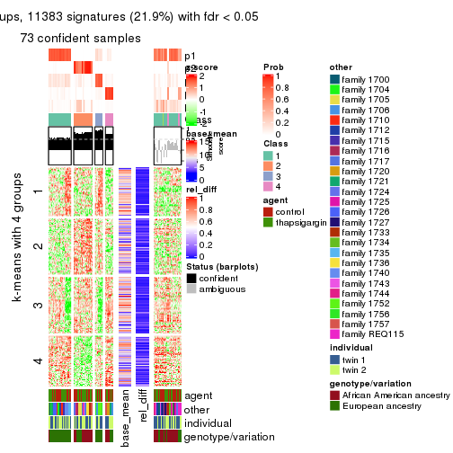
get_signatures(res, k = 6)
Signature heatmaps where rows are not scaled:
get_signatures(res, k = 2, scale_rows = FALSE)
get_signatures(res, k = 3, scale_rows = FALSE)
get_signatures(res, k = 4, scale_rows = FALSE)
get_signatures(res, k = 5, scale_rows = FALSE)
get_signatures(res, k = 6, scale_rows = FALSE)
Compare the overlap of signatures from different k:
compare_signatures(res)
get_signature() returns a data frame invisibly. TO get the list of signatures, the function
call should be assigned to a variable explicitly. In following code, if plot argument is set
to FALSE, no heatmap is plotted while only the differential analysis is performed.
# code only for demonstration
tb = get_signature(res, k = ..., plot = FALSE)
An example of the output of tb is:
#> which_row fdr mean_1 mean_2 scaled_mean_1 scaled_mean_2 km
#> 1 38 0.042760348 8.373488 9.131774 -0.5533452 0.5164555 1
#> 2 40 0.018707592 7.106213 8.469186 -0.6173731 0.5762149 1
#> 3 55 0.019134737 10.221463 11.207825 -0.6159697 0.5749050 1
#> 4 59 0.006059896 5.921854 7.869574 -0.6899429 0.6439467 1
#> 5 60 0.018055526 8.928898 10.211722 -0.6204761 0.5791110 1
#> 6 98 0.009384629 15.714769 14.887706 0.6635654 -0.6193277 2
...
The columns in tb are:
which_row: row indices corresponding to the input matrix.fdr: FDR for the differential test. mean_x: The mean value in group x.scaled_mean_x: The mean value in group x after rows are scaled.km: Row groups if k-means clustering is applied to rows.UMAP plot which shows how samples are separated.
dimension_reduction(res, k = 2, method = "UMAP")
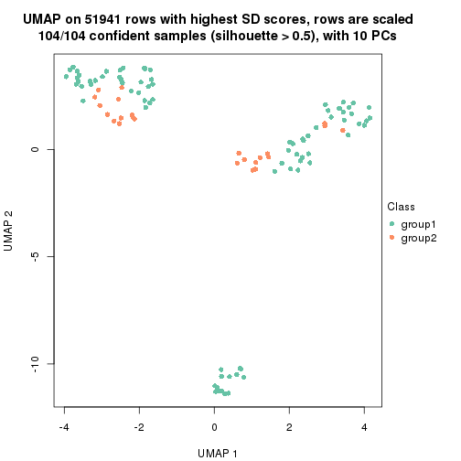
dimension_reduction(res, k = 3, method = "UMAP")
dimension_reduction(res, k = 4, method = "UMAP")
dimension_reduction(res, k = 5, method = "UMAP")

dimension_reduction(res, k = 6, method = "UMAP")
Following heatmap shows how subgroups are split when increasing k:
collect_classes(res)
Test correlation between subgroups and known annotations. If the known annotation is numeric, one-way ANOVA test is applied, and if the known annotation is discrete, chi-squared contingency table test is applied.
test_to_known_factors(res)
#> n agent(p) other(p) individual(p) genotype/variation(p) k
#> SD:hclust 104 1.000 3.59e-06 0.485 2.71e-03 2
#> SD:hclust 98 1.000 1.86e-13 0.524 4.69e-03 3
#> SD:hclust 100 1.000 2.93e-17 0.381 2.66e-04 4
#> SD:hclust 73 0.999 8.11e-14 0.762 2.73e-08 5
#> SD:hclust 66 0.989 2.06e-18 0.813 2.43e-08 6
If matrix rows can be associated to genes, consider to use functional_enrichment(res,
...) to perform function enrichment for the signature genes. See this vignette for more detailed explanations.
The object with results only for a single top-value method and a single partition method can be extracted as:
res = res_list["SD", "kmeans"]
# you can also extract it by
# res = res_list["SD:kmeans"]
A summary of res and all the functions that can be applied to it:
res
#> A 'ConsensusPartition' object with k = 2, 3, 4, 5, 6.
#> On a matrix with 51941 rows and 104 columns.
#> Top rows (1000, 2000, 3000, 4000, 5000) are extracted by 'SD' method.
#> Subgroups are detected by 'kmeans' method.
#> Performed in total 1250 partitions by row resampling.
#> Best k for subgroups seems to be 2.
#>
#> Following methods can be applied to this 'ConsensusPartition' object:
#> [1] "cola_report" "collect_classes" "collect_plots"
#> [4] "collect_stats" "colnames" "compare_signatures"
#> [7] "consensus_heatmap" "dimension_reduction" "functional_enrichment"
#> [10] "get_anno_col" "get_anno" "get_classes"
#> [13] "get_consensus" "get_matrix" "get_membership"
#> [16] "get_param" "get_signatures" "get_stats"
#> [19] "is_best_k" "is_stable_k" "membership_heatmap"
#> [22] "ncol" "nrow" "plot_ecdf"
#> [25] "rownames" "select_partition_number" "show"
#> [28] "suggest_best_k" "test_to_known_factors"
collect_plots() function collects all the plots made from res for all k (number of partitions)
into one single page to provide an easy and fast comparison between different k.
collect_plots(res)
The plots are:
k and the heatmap of
predicted classes for each k.k.k.k.All the plots in panels can be made by individual functions and they are plotted later in this section.
select_partition_number() produces several plots showing different
statistics for choosing “optimized” k. There are following statistics:
k;k, the area increased is defined as \(A_k - A_{k-1}\).The detailed explanations of these statistics can be found in the cola vignette.
Generally speaking, lower PAC score, higher mean silhouette score or higher
concordance corresponds to better partition. Rand index and Jaccard index
measure how similar the current partition is compared to partition with k-1.
If they are too similar, we won't accept k is better than k-1.
select_partition_number(res)
The numeric values for all these statistics can be obtained by get_stats().
get_stats(res)
#> k 1-PAC mean_silhouette concordance area_increased Rand Jaccard
#> 2 2 1.000 0.992 0.995 0.3884 0.612 0.612
#> 3 3 0.475 0.417 0.691 0.6170 0.738 0.578
#> 4 4 0.498 0.654 0.731 0.1443 0.772 0.468
#> 5 5 0.613 0.621 0.741 0.0789 0.986 0.945
#> 6 6 0.697 0.636 0.719 0.0465 0.909 0.645
suggest_best_k() suggests the best \(k\) based on these statistics. The rules are as follows:
suggest_best_k(res)
#> [1] 2
Following shows the table of the partitions (You need to click the show/hide
code output link to see it). The membership matrix (columns with name p*)
is inferred by
clue::cl_consensus()
function with the SE method. Basically the value in the membership matrix
represents the probability to belong to a certain group. The finall class
label for an item is determined with the group with highest probability it
belongs to.
In get_classes() function, the entropy is calculated from the membership
matrix and the silhouette score is calculated from the consensus matrix.
cbind(get_classes(res, k = 2), get_membership(res, k = 2))
#> class entropy silhouette p1 p2
#> GSM494452 1 0.0000 0.996 1.000 0.000
#> GSM494454 1 0.0000 0.996 1.000 0.000
#> GSM494456 2 0.0376 0.991 0.004 0.996
#> GSM494458 2 0.0376 0.991 0.004 0.996
#> GSM494460 1 0.0000 0.996 1.000 0.000
#> GSM494462 1 0.0000 0.996 1.000 0.000
#> GSM494464 1 0.0000 0.996 1.000 0.000
#> GSM494466 2 0.0376 0.991 0.004 0.996
#> GSM494468 1 0.0000 0.996 1.000 0.000
#> GSM494470 1 0.0000 0.996 1.000 0.000
#> GSM494472 1 0.0000 0.996 1.000 0.000
#> GSM494474 1 0.0000 0.996 1.000 0.000
#> GSM494476 2 0.0376 0.991 0.004 0.996
#> GSM494478 2 0.4431 0.906 0.092 0.908
#> GSM494480 1 0.0000 0.996 1.000 0.000
#> GSM494482 1 0.0000 0.996 1.000 0.000
#> GSM494484 2 0.0376 0.991 0.004 0.996
#> GSM494486 2 0.0376 0.991 0.004 0.996
#> GSM494488 1 0.0000 0.996 1.000 0.000
#> GSM494490 2 0.0376 0.991 0.004 0.996
#> GSM494492 1 0.0000 0.996 1.000 0.000
#> GSM494494 2 0.0376 0.991 0.004 0.996
#> GSM494496 1 0.0000 0.996 1.000 0.000
#> GSM494498 2 0.0376 0.991 0.004 0.996
#> GSM494500 1 0.0000 0.996 1.000 0.000
#> GSM494502 1 0.0000 0.996 1.000 0.000
#> GSM494504 1 0.0000 0.996 1.000 0.000
#> GSM494506 1 0.0000 0.996 1.000 0.000
#> GSM494508 2 0.0376 0.991 0.004 0.996
#> GSM494510 2 0.0376 0.991 0.004 0.996
#> GSM494512 1 0.0000 0.996 1.000 0.000
#> GSM494514 1 0.0000 0.996 1.000 0.000
#> GSM494516 1 0.0000 0.996 1.000 0.000
#> GSM494518 1 0.0000 0.996 1.000 0.000
#> GSM494520 1 0.0000 0.996 1.000 0.000
#> GSM494522 1 0.0000 0.996 1.000 0.000
#> GSM494524 2 0.0376 0.991 0.004 0.996
#> GSM494526 1 0.0000 0.996 1.000 0.000
#> GSM494528 1 0.0000 0.996 1.000 0.000
#> GSM494530 1 0.0000 0.996 1.000 0.000
#> GSM494532 1 0.0000 0.996 1.000 0.000
#> GSM494534 1 0.0000 0.996 1.000 0.000
#> GSM494536 1 0.0000 0.996 1.000 0.000
#> GSM494538 1 0.0000 0.996 1.000 0.000
#> GSM494540 1 0.0000 0.996 1.000 0.000
#> GSM494542 1 0.0000 0.996 1.000 0.000
#> GSM494544 1 0.0000 0.996 1.000 0.000
#> GSM494546 1 0.4939 0.877 0.892 0.108
#> GSM494548 1 0.0000 0.996 1.000 0.000
#> GSM494550 1 0.0000 0.996 1.000 0.000
#> GSM494552 1 0.0000 0.996 1.000 0.000
#> GSM494554 1 0.0000 0.996 1.000 0.000
#> GSM494453 1 0.0376 0.996 0.996 0.004
#> GSM494455 1 0.0376 0.996 0.996 0.004
#> GSM494457 2 0.0000 0.991 0.000 1.000
#> GSM494459 2 0.0000 0.991 0.000 1.000
#> GSM494461 1 0.0376 0.996 0.996 0.004
#> GSM494463 1 0.0376 0.996 0.996 0.004
#> GSM494465 1 0.0376 0.996 0.996 0.004
#> GSM494467 2 0.0000 0.991 0.000 1.000
#> GSM494469 1 0.0376 0.996 0.996 0.004
#> GSM494471 1 0.0376 0.996 0.996 0.004
#> GSM494473 1 0.0376 0.996 0.996 0.004
#> GSM494475 1 0.0376 0.996 0.996 0.004
#> GSM494477 2 0.0000 0.991 0.000 1.000
#> GSM494479 2 0.0000 0.991 0.000 1.000
#> GSM494481 1 0.0376 0.996 0.996 0.004
#> GSM494483 1 0.0376 0.996 0.996 0.004
#> GSM494485 2 0.0000 0.991 0.000 1.000
#> GSM494487 2 0.0000 0.991 0.000 1.000
#> GSM494489 1 0.0376 0.996 0.996 0.004
#> GSM494491 2 0.0000 0.991 0.000 1.000
#> GSM494493 1 0.0376 0.996 0.996 0.004
#> GSM494495 2 0.0000 0.991 0.000 1.000
#> GSM494497 1 0.0376 0.996 0.996 0.004
#> GSM494499 2 0.0000 0.991 0.000 1.000
#> GSM494501 1 0.0376 0.996 0.996 0.004
#> GSM494503 1 0.0376 0.996 0.996 0.004
#> GSM494505 1 0.0376 0.996 0.996 0.004
#> GSM494507 1 0.0376 0.996 0.996 0.004
#> GSM494509 2 0.0000 0.991 0.000 1.000
#> GSM494511 2 0.0000 0.991 0.000 1.000
#> GSM494513 1 0.0376 0.996 0.996 0.004
#> GSM494515 1 0.0376 0.996 0.996 0.004
#> GSM494517 1 0.0376 0.996 0.996 0.004
#> GSM494519 1 0.0376 0.996 0.996 0.004
#> GSM494521 1 0.0376 0.996 0.996 0.004
#> GSM494523 1 0.0376 0.996 0.996 0.004
#> GSM494525 2 0.0000 0.991 0.000 1.000
#> GSM494527 1 0.0376 0.996 0.996 0.004
#> GSM494529 1 0.0376 0.996 0.996 0.004
#> GSM494531 1 0.0376 0.996 0.996 0.004
#> GSM494533 1 0.0938 0.990 0.988 0.012
#> GSM494535 1 0.0376 0.996 0.996 0.004
#> GSM494537 1 0.0376 0.996 0.996 0.004
#> GSM494539 1 0.0376 0.996 0.996 0.004
#> GSM494541 1 0.0376 0.996 0.996 0.004
#> GSM494543 1 0.0376 0.996 0.996 0.004
#> GSM494545 1 0.0376 0.996 0.996 0.004
#> GSM494547 2 0.4690 0.891 0.100 0.900
#> GSM494549 1 0.0376 0.996 0.996 0.004
#> GSM494551 1 0.0376 0.996 0.996 0.004
#> GSM494553 1 0.0376 0.996 0.996 0.004
#> GSM494555 1 0.0376 0.996 0.996 0.004
cbind(get_classes(res, k = 3), get_membership(res, k = 3))
#> class entropy silhouette p1 p2 p3
#> GSM494452 2 0.5591 0.4904 0.304 0.696 0.000
#> GSM494454 2 0.5497 0.4900 0.292 0.708 0.000
#> GSM494456 3 0.0000 0.9571 0.000 0.000 1.000
#> GSM494458 3 0.0000 0.9571 0.000 0.000 1.000
#> GSM494460 2 0.4796 0.4406 0.220 0.780 0.000
#> GSM494462 2 0.5291 0.3945 0.268 0.732 0.000
#> GSM494464 2 0.6280 0.2268 0.460 0.540 0.000
#> GSM494466 3 0.0000 0.9571 0.000 0.000 1.000
#> GSM494468 2 0.6192 0.3179 0.420 0.580 0.000
#> GSM494470 2 0.5621 0.4885 0.308 0.692 0.000
#> GSM494472 2 0.5650 0.4859 0.312 0.688 0.000
#> GSM494474 2 0.5650 0.4859 0.312 0.688 0.000
#> GSM494476 3 0.0000 0.9571 0.000 0.000 1.000
#> GSM494478 3 0.6633 0.3464 0.008 0.444 0.548
#> GSM494480 2 0.6295 0.2033 0.472 0.528 0.000
#> GSM494482 2 0.6291 0.2264 0.468 0.532 0.000
#> GSM494484 3 0.0000 0.9571 0.000 0.000 1.000
#> GSM494486 3 0.0000 0.9571 0.000 0.000 1.000
#> GSM494488 2 0.5560 0.4911 0.300 0.700 0.000
#> GSM494490 3 0.0892 0.9536 0.000 0.020 0.980
#> GSM494492 1 0.6280 -0.0909 0.540 0.460 0.000
#> GSM494494 3 0.0424 0.9561 0.000 0.008 0.992
#> GSM494496 2 0.4796 0.2981 0.220 0.780 0.000
#> GSM494498 3 0.1031 0.9511 0.000 0.024 0.976
#> GSM494500 2 0.5810 0.4671 0.336 0.664 0.000
#> GSM494502 1 0.5988 0.1056 0.632 0.368 0.000
#> GSM494504 1 0.5988 0.1056 0.632 0.368 0.000
#> GSM494506 1 0.6008 0.1125 0.628 0.372 0.000
#> GSM494508 3 0.3784 0.8751 0.004 0.132 0.864
#> GSM494510 3 0.1289 0.9478 0.000 0.032 0.968
#> GSM494512 1 0.6302 0.0554 0.520 0.480 0.000
#> GSM494514 2 0.5098 0.2778 0.248 0.752 0.000
#> GSM494516 1 0.6008 0.0948 0.628 0.372 0.000
#> GSM494518 1 0.5948 0.1126 0.640 0.360 0.000
#> GSM494520 2 0.6140 0.3795 0.404 0.596 0.000
#> GSM494522 1 0.5968 0.1181 0.636 0.364 0.000
#> GSM494524 3 0.0592 0.9553 0.000 0.012 0.988
#> GSM494526 2 0.5591 0.4904 0.304 0.696 0.000
#> GSM494528 1 0.6154 0.0437 0.592 0.408 0.000
#> GSM494530 2 0.4842 0.4449 0.224 0.776 0.000
#> GSM494532 1 0.6045 0.1069 0.620 0.380 0.000
#> GSM494534 1 0.6045 0.1047 0.620 0.380 0.000
#> GSM494536 1 0.6168 0.0152 0.588 0.412 0.000
#> GSM494538 1 0.5968 0.1079 0.636 0.364 0.000
#> GSM494540 1 0.5948 0.1176 0.640 0.360 0.000
#> GSM494542 1 0.5948 0.1176 0.640 0.360 0.000
#> GSM494544 2 0.6308 -0.0798 0.492 0.508 0.000
#> GSM494546 2 0.6308 -0.0854 0.492 0.508 0.000
#> GSM494548 1 0.6307 0.0492 0.512 0.488 0.000
#> GSM494550 1 0.6307 0.0492 0.512 0.488 0.000
#> GSM494552 2 0.5760 0.3216 0.328 0.672 0.000
#> GSM494554 2 0.4654 0.4697 0.208 0.792 0.000
#> GSM494453 1 0.5905 0.1067 0.648 0.352 0.000
#> GSM494455 1 0.5760 0.1368 0.672 0.328 0.000
#> GSM494457 3 0.0000 0.9571 0.000 0.000 1.000
#> GSM494459 3 0.0000 0.9571 0.000 0.000 1.000
#> GSM494461 1 0.6286 -0.0578 0.536 0.464 0.000
#> GSM494463 2 0.6309 0.0524 0.496 0.504 0.000
#> GSM494465 1 0.3551 0.3959 0.868 0.132 0.000
#> GSM494467 3 0.0000 0.9571 0.000 0.000 1.000
#> GSM494469 1 0.4796 0.2888 0.780 0.220 0.000
#> GSM494471 1 0.5859 0.1204 0.656 0.344 0.000
#> GSM494473 1 0.5810 0.1264 0.664 0.336 0.000
#> GSM494475 1 0.5859 0.1204 0.656 0.344 0.000
#> GSM494477 3 0.0000 0.9571 0.000 0.000 1.000
#> GSM494479 3 0.7451 0.6430 0.144 0.156 0.700
#> GSM494481 1 0.3941 0.3692 0.844 0.156 0.000
#> GSM494483 1 0.2959 0.4209 0.900 0.100 0.000
#> GSM494485 3 0.0000 0.9571 0.000 0.000 1.000
#> GSM494487 3 0.0000 0.9571 0.000 0.000 1.000
#> GSM494489 1 0.6274 -0.0463 0.544 0.456 0.000
#> GSM494491 3 0.0747 0.9548 0.000 0.016 0.984
#> GSM494493 1 0.2625 0.4311 0.916 0.084 0.000
#> GSM494495 3 0.0424 0.9561 0.000 0.008 0.992
#> GSM494497 2 0.6111 0.0756 0.396 0.604 0.000
#> GSM494499 3 0.1031 0.9511 0.000 0.024 0.976
#> GSM494501 1 0.5397 0.1973 0.720 0.280 0.000
#> GSM494503 1 0.0237 0.4590 0.996 0.004 0.000
#> GSM494505 1 0.4178 0.3484 0.828 0.172 0.000
#> GSM494507 1 0.0000 0.4589 1.000 0.000 0.000
#> GSM494509 3 0.3715 0.8779 0.004 0.128 0.868
#> GSM494511 3 0.1529 0.9432 0.000 0.040 0.960
#> GSM494513 1 0.3941 0.3738 0.844 0.156 0.000
#> GSM494515 2 0.6235 0.0356 0.436 0.564 0.000
#> GSM494517 1 0.1860 0.4483 0.948 0.052 0.000
#> GSM494519 1 0.0237 0.4590 0.996 0.004 0.000
#> GSM494521 1 0.4605 0.3068 0.796 0.204 0.000
#> GSM494523 1 0.0424 0.4589 0.992 0.008 0.000
#> GSM494525 3 0.0592 0.9553 0.000 0.012 0.988
#> GSM494527 1 0.5905 0.1067 0.648 0.352 0.000
#> GSM494529 1 0.2878 0.4245 0.904 0.096 0.000
#> GSM494531 1 0.6291 -0.0636 0.532 0.468 0.000
#> GSM494533 1 0.0892 0.4546 0.980 0.020 0.000
#> GSM494535 1 0.0747 0.4557 0.984 0.016 0.000
#> GSM494537 1 0.2796 0.4273 0.908 0.092 0.000
#> GSM494539 1 0.1411 0.4537 0.964 0.036 0.000
#> GSM494541 1 0.0000 0.4589 1.000 0.000 0.000
#> GSM494543 1 0.0237 0.4587 0.996 0.004 0.000
#> GSM494545 1 0.4178 0.3703 0.828 0.172 0.000
#> GSM494547 1 0.7869 0.2107 0.668 0.152 0.180
#> GSM494549 1 0.3619 0.3849 0.864 0.136 0.000
#> GSM494551 1 0.3619 0.3849 0.864 0.136 0.000
#> GSM494553 1 0.6309 -0.1004 0.500 0.500 0.000
#> GSM494555 2 0.6309 0.0416 0.500 0.500 0.000
cbind(get_classes(res, k = 4), get_membership(res, k = 4))
#> class entropy silhouette p1 p2 p3 p4
#> GSM494452 4 0.6883 0.5681 0.212 0.000 0.192 0.596
#> GSM494454 4 0.6885 0.5644 0.208 0.000 0.196 0.596
#> GSM494456 2 0.1151 0.9061 0.000 0.968 0.024 0.008
#> GSM494458 2 0.1151 0.9061 0.000 0.968 0.024 0.008
#> GSM494460 3 0.5751 0.6781 0.124 0.000 0.712 0.164
#> GSM494462 3 0.5613 0.6793 0.120 0.000 0.724 0.156
#> GSM494464 4 0.6080 0.6291 0.236 0.000 0.100 0.664
#> GSM494466 2 0.1411 0.9042 0.000 0.960 0.020 0.020
#> GSM494468 4 0.6426 0.6060 0.256 0.000 0.116 0.628
#> GSM494470 4 0.6875 0.5682 0.220 0.000 0.184 0.596
#> GSM494472 4 0.6805 0.5791 0.220 0.000 0.176 0.604
#> GSM494474 4 0.6769 0.5821 0.220 0.000 0.172 0.608
#> GSM494476 2 0.1004 0.9070 0.000 0.972 0.024 0.004
#> GSM494478 3 0.7196 0.3136 0.008 0.320 0.544 0.128
#> GSM494480 4 0.5907 0.6363 0.252 0.000 0.080 0.668
#> GSM494482 4 0.6403 0.6104 0.260 0.000 0.112 0.628
#> GSM494484 2 0.1004 0.9070 0.000 0.972 0.024 0.004
#> GSM494486 2 0.1004 0.9070 0.000 0.972 0.024 0.004
#> GSM494488 4 0.6883 0.5685 0.212 0.000 0.192 0.596
#> GSM494490 2 0.3966 0.8739 0.000 0.840 0.088 0.072
#> GSM494492 4 0.5272 0.6599 0.288 0.000 0.032 0.680
#> GSM494494 2 0.2319 0.8995 0.000 0.924 0.040 0.036
#> GSM494496 3 0.4542 0.6864 0.088 0.000 0.804 0.108
#> GSM494498 2 0.3764 0.8724 0.000 0.852 0.076 0.072
#> GSM494500 4 0.6544 0.6422 0.284 0.000 0.112 0.604
#> GSM494502 4 0.5028 0.6776 0.400 0.000 0.004 0.596
#> GSM494504 4 0.5016 0.6775 0.396 0.000 0.004 0.600
#> GSM494506 4 0.5387 0.6559 0.400 0.000 0.016 0.584
#> GSM494508 2 0.7130 0.6383 0.008 0.596 0.196 0.200
#> GSM494510 2 0.4956 0.8253 0.000 0.776 0.108 0.116
#> GSM494512 4 0.6566 0.4315 0.236 0.000 0.140 0.624
#> GSM494514 3 0.4824 0.6520 0.076 0.000 0.780 0.144
#> GSM494516 4 0.5060 0.6765 0.412 0.000 0.004 0.584
#> GSM494518 4 0.5088 0.6733 0.424 0.000 0.004 0.572
#> GSM494520 4 0.5682 0.6782 0.352 0.000 0.036 0.612
#> GSM494522 4 0.5300 0.6610 0.408 0.000 0.012 0.580
#> GSM494524 2 0.2844 0.8944 0.000 0.900 0.048 0.052
#> GSM494526 4 0.6846 0.5728 0.216 0.000 0.184 0.600
#> GSM494528 4 0.4594 0.6754 0.280 0.000 0.008 0.712
#> GSM494530 3 0.6104 0.6116 0.104 0.000 0.664 0.232
#> GSM494532 4 0.5313 0.6612 0.376 0.000 0.016 0.608
#> GSM494534 4 0.4978 0.6723 0.384 0.000 0.004 0.612
#> GSM494536 4 0.5138 0.6813 0.392 0.000 0.008 0.600
#> GSM494538 4 0.5310 0.6697 0.412 0.000 0.012 0.576
#> GSM494540 4 0.5300 0.6564 0.408 0.000 0.012 0.580
#> GSM494542 4 0.5300 0.6564 0.408 0.000 0.012 0.580
#> GSM494544 4 0.6637 0.4323 0.240 0.000 0.144 0.616
#> GSM494546 4 0.7114 0.3576 0.200 0.012 0.180 0.608
#> GSM494548 4 0.6594 0.4148 0.228 0.000 0.148 0.624
#> GSM494550 4 0.6581 0.4164 0.232 0.000 0.144 0.624
#> GSM494552 3 0.5556 0.6935 0.188 0.000 0.720 0.092
#> GSM494554 3 0.6928 0.4218 0.136 0.000 0.556 0.308
#> GSM494453 1 0.6640 0.4975 0.624 0.000 0.208 0.168
#> GSM494455 1 0.6104 0.5500 0.680 0.000 0.180 0.140
#> GSM494457 2 0.1151 0.9061 0.000 0.968 0.024 0.008
#> GSM494459 2 0.1151 0.9061 0.000 0.968 0.024 0.008
#> GSM494461 3 0.5186 0.6094 0.344 0.000 0.640 0.016
#> GSM494463 3 0.4748 0.6627 0.268 0.000 0.716 0.016
#> GSM494465 1 0.4776 0.6568 0.776 0.004 0.044 0.176
#> GSM494467 2 0.0927 0.9057 0.000 0.976 0.016 0.008
#> GSM494469 1 0.5100 0.6238 0.756 0.000 0.076 0.168
#> GSM494471 1 0.5994 0.5585 0.692 0.000 0.156 0.152
#> GSM494473 1 0.6473 0.5230 0.644 0.000 0.188 0.168
#> GSM494475 1 0.6400 0.5278 0.652 0.000 0.180 0.168
#> GSM494477 2 0.1004 0.9070 0.000 0.972 0.024 0.004
#> GSM494479 3 0.7523 0.0722 0.100 0.432 0.444 0.024
#> GSM494481 1 0.4467 0.6635 0.788 0.000 0.040 0.172
#> GSM494483 1 0.4174 0.6777 0.816 0.000 0.044 0.140
#> GSM494485 2 0.1004 0.9070 0.000 0.972 0.024 0.004
#> GSM494487 2 0.1004 0.9070 0.000 0.972 0.024 0.004
#> GSM494489 1 0.5558 0.1568 0.608 0.000 0.364 0.028
#> GSM494491 2 0.3745 0.8779 0.000 0.852 0.088 0.060
#> GSM494493 1 0.3243 0.7000 0.876 0.000 0.036 0.088
#> GSM494495 2 0.1798 0.9024 0.000 0.944 0.040 0.016
#> GSM494497 3 0.4776 0.6679 0.164 0.000 0.776 0.060
#> GSM494499 2 0.3691 0.8738 0.000 0.856 0.076 0.068
#> GSM494501 1 0.4292 0.6615 0.820 0.000 0.100 0.080
#> GSM494503 1 0.1356 0.6905 0.960 0.000 0.008 0.032
#> GSM494505 1 0.2256 0.7027 0.924 0.000 0.056 0.020
#> GSM494507 1 0.1724 0.6784 0.948 0.000 0.020 0.032
#> GSM494509 2 0.6997 0.6550 0.008 0.612 0.196 0.184
#> GSM494511 2 0.5012 0.8218 0.000 0.772 0.112 0.116
#> GSM494513 1 0.6742 0.4218 0.608 0.000 0.160 0.232
#> GSM494515 3 0.5007 0.6284 0.172 0.000 0.760 0.068
#> GSM494517 1 0.1733 0.6938 0.948 0.000 0.024 0.028
#> GSM494519 1 0.1489 0.6730 0.952 0.000 0.004 0.044
#> GSM494521 1 0.2300 0.6981 0.920 0.000 0.064 0.016
#> GSM494523 1 0.1661 0.6680 0.944 0.000 0.004 0.052
#> GSM494525 2 0.2759 0.8956 0.000 0.904 0.052 0.044
#> GSM494527 1 0.6602 0.4969 0.628 0.000 0.208 0.164
#> GSM494529 1 0.3806 0.6590 0.824 0.000 0.020 0.156
#> GSM494531 3 0.5038 0.6203 0.336 0.000 0.652 0.012
#> GSM494533 1 0.4160 0.6077 0.840 0.016 0.040 0.104
#> GSM494535 1 0.2596 0.6510 0.908 0.000 0.024 0.068
#> GSM494537 1 0.1724 0.7036 0.948 0.000 0.032 0.020
#> GSM494539 1 0.1151 0.6979 0.968 0.000 0.024 0.008
#> GSM494541 1 0.2300 0.6493 0.920 0.000 0.016 0.064
#> GSM494543 1 0.2413 0.6584 0.916 0.000 0.020 0.064
#> GSM494545 1 0.6472 0.4476 0.640 0.000 0.148 0.212
#> GSM494547 1 0.8254 0.3155 0.520 0.048 0.188 0.244
#> GSM494549 1 0.6758 0.4221 0.604 0.000 0.156 0.240
#> GSM494551 1 0.6758 0.4221 0.604 0.000 0.156 0.240
#> GSM494553 3 0.4933 0.6494 0.296 0.000 0.688 0.016
#> GSM494555 3 0.5414 0.5444 0.376 0.000 0.604 0.020
cbind(get_classes(res, k = 5), get_membership(res, k = 5))
#> class entropy silhouette p1 p2 p3 p4 p5
#> GSM494452 5 0.7707 0.56543 0.224 0.000 0.224 0.088 0.464
#> GSM494454 5 0.7787 0.55863 0.224 0.000 0.224 0.096 0.456
#> GSM494456 2 0.0912 0.79961 0.000 0.972 0.012 0.016 0.000
#> GSM494458 2 0.0693 0.80029 0.000 0.980 0.012 0.008 0.000
#> GSM494460 4 0.3191 0.80777 0.052 0.000 0.004 0.860 0.084
#> GSM494462 4 0.2955 0.81300 0.060 0.000 0.004 0.876 0.060
#> GSM494464 5 0.7187 0.60886 0.200 0.000 0.212 0.060 0.528
#> GSM494466 2 0.2833 0.78860 0.008 0.884 0.084 0.020 0.004
#> GSM494468 5 0.7511 0.58500 0.220 0.000 0.224 0.072 0.484
#> GSM494470 5 0.7730 0.57046 0.224 0.000 0.220 0.092 0.464
#> GSM494472 5 0.7627 0.57419 0.216 0.000 0.224 0.084 0.476
#> GSM494474 5 0.7651 0.57541 0.220 0.000 0.216 0.088 0.476
#> GSM494476 2 0.0000 0.80460 0.000 1.000 0.000 0.000 0.000
#> GSM494478 4 0.6467 0.50257 0.012 0.212 0.120 0.624 0.032
#> GSM494480 5 0.7052 0.61169 0.200 0.000 0.208 0.052 0.540
#> GSM494482 5 0.7422 0.58672 0.212 0.000 0.224 0.068 0.496
#> GSM494484 2 0.0000 0.80460 0.000 1.000 0.000 0.000 0.000
#> GSM494486 2 0.0162 0.80366 0.000 0.996 0.000 0.004 0.000
#> GSM494488 5 0.7711 0.57040 0.224 0.000 0.216 0.092 0.468
#> GSM494490 2 0.4804 0.52822 0.004 0.596 0.384 0.012 0.004
#> GSM494492 5 0.5293 0.66059 0.212 0.000 0.080 0.016 0.692
#> GSM494494 2 0.3530 0.76103 0.008 0.812 0.168 0.008 0.004
#> GSM494496 4 0.2758 0.80106 0.032 0.000 0.048 0.896 0.024
#> GSM494498 2 0.3855 0.70110 0.004 0.748 0.240 0.008 0.000
#> GSM494500 5 0.5371 0.66871 0.152 0.000 0.068 0.056 0.724
#> GSM494502 5 0.1764 0.68761 0.064 0.000 0.000 0.008 0.928
#> GSM494504 5 0.1809 0.68599 0.060 0.000 0.000 0.012 0.928
#> GSM494506 5 0.2423 0.66264 0.080 0.000 0.024 0.000 0.896
#> GSM494508 3 0.5195 0.20518 0.004 0.340 0.616 0.008 0.032
#> GSM494510 2 0.4481 0.43106 0.000 0.576 0.416 0.008 0.000
#> GSM494512 5 0.5887 0.20860 0.024 0.000 0.332 0.064 0.580
#> GSM494514 4 0.2822 0.78856 0.012 0.000 0.064 0.888 0.036
#> GSM494516 5 0.2069 0.68788 0.076 0.000 0.000 0.012 0.912
#> GSM494518 5 0.2011 0.68518 0.088 0.000 0.000 0.004 0.908
#> GSM494520 5 0.3113 0.69009 0.100 0.000 0.016 0.020 0.864
#> GSM494522 5 0.2331 0.66407 0.080 0.000 0.020 0.000 0.900
#> GSM494524 2 0.4470 0.65938 0.008 0.684 0.296 0.008 0.004
#> GSM494526 5 0.7711 0.57098 0.220 0.000 0.220 0.092 0.468
#> GSM494528 5 0.3920 0.68483 0.148 0.000 0.036 0.012 0.804
#> GSM494530 4 0.3491 0.78639 0.028 0.000 0.012 0.836 0.124
#> GSM494532 5 0.2293 0.67464 0.084 0.000 0.016 0.000 0.900
#> GSM494534 5 0.1792 0.67595 0.084 0.000 0.000 0.000 0.916
#> GSM494536 5 0.2666 0.68901 0.076 0.000 0.020 0.012 0.892
#> GSM494538 5 0.2813 0.67644 0.084 0.000 0.032 0.004 0.880
#> GSM494540 5 0.2734 0.66132 0.076 0.000 0.028 0.008 0.888
#> GSM494542 5 0.2673 0.66352 0.072 0.000 0.028 0.008 0.892
#> GSM494544 5 0.5927 0.22308 0.024 0.000 0.328 0.068 0.580
#> GSM494546 5 0.6004 0.00908 0.020 0.000 0.420 0.064 0.496
#> GSM494548 5 0.5914 0.19234 0.024 0.000 0.340 0.064 0.572
#> GSM494550 5 0.5900 0.20090 0.024 0.000 0.336 0.064 0.576
#> GSM494552 4 0.3114 0.81899 0.076 0.000 0.016 0.872 0.036
#> GSM494554 4 0.5557 0.59787 0.060 0.000 0.028 0.656 0.256
#> GSM494453 1 0.5773 0.47132 0.668 0.000 0.212 0.080 0.040
#> GSM494455 1 0.4998 0.60052 0.744 0.000 0.160 0.052 0.044
#> GSM494457 2 0.0693 0.80029 0.000 0.980 0.012 0.008 0.000
#> GSM494459 2 0.0693 0.80029 0.000 0.980 0.012 0.008 0.000
#> GSM494461 4 0.3167 0.80194 0.172 0.000 0.004 0.820 0.004
#> GSM494463 4 0.2629 0.81639 0.136 0.000 0.004 0.860 0.000
#> GSM494465 1 0.2067 0.72941 0.920 0.000 0.048 0.000 0.032
#> GSM494467 2 0.2527 0.79351 0.004 0.900 0.072 0.020 0.004
#> GSM494469 1 0.2674 0.70267 0.888 0.000 0.084 0.008 0.020
#> GSM494471 1 0.3207 0.69132 0.872 0.000 0.056 0.048 0.024
#> GSM494473 1 0.5070 0.55142 0.728 0.000 0.184 0.052 0.036
#> GSM494475 1 0.5419 0.50449 0.692 0.000 0.212 0.060 0.036
#> GSM494477 2 0.0000 0.80460 0.000 1.000 0.000 0.000 0.000
#> GSM494479 4 0.6694 0.44986 0.064 0.264 0.100 0.572 0.000
#> GSM494481 1 0.2153 0.72971 0.916 0.000 0.044 0.000 0.040
#> GSM494483 1 0.1915 0.73712 0.928 0.000 0.032 0.000 0.040
#> GSM494485 2 0.0000 0.80460 0.000 1.000 0.000 0.000 0.000
#> GSM494487 2 0.0162 0.80366 0.000 0.996 0.000 0.004 0.000
#> GSM494489 1 0.3840 0.59288 0.772 0.000 0.012 0.208 0.008
#> GSM494491 2 0.4594 0.55350 0.000 0.620 0.364 0.012 0.004
#> GSM494493 1 0.2734 0.74717 0.888 0.000 0.028 0.008 0.076
#> GSM494495 2 0.3158 0.76962 0.004 0.840 0.144 0.008 0.004
#> GSM494497 4 0.2938 0.80211 0.064 0.000 0.048 0.880 0.008
#> GSM494499 2 0.3826 0.70440 0.004 0.752 0.236 0.008 0.000
#> GSM494501 1 0.3106 0.73715 0.872 0.000 0.020 0.028 0.080
#> GSM494503 1 0.2843 0.75235 0.848 0.000 0.000 0.008 0.144
#> GSM494505 1 0.3170 0.75246 0.848 0.000 0.004 0.024 0.124
#> GSM494507 1 0.3362 0.74178 0.824 0.000 0.012 0.008 0.156
#> GSM494509 3 0.4667 0.13228 0.004 0.372 0.612 0.008 0.004
#> GSM494511 2 0.4510 0.38173 0.000 0.560 0.432 0.008 0.000
#> GSM494513 1 0.7565 0.03686 0.416 0.000 0.344 0.068 0.172
#> GSM494515 4 0.3320 0.78987 0.068 0.000 0.060 0.860 0.012
#> GSM494517 1 0.3197 0.75194 0.832 0.000 0.004 0.012 0.152
#> GSM494519 1 0.3365 0.74287 0.808 0.000 0.004 0.008 0.180
#> GSM494521 1 0.3031 0.75377 0.852 0.000 0.004 0.016 0.128
#> GSM494523 1 0.3474 0.73608 0.796 0.000 0.004 0.008 0.192
#> GSM494525 2 0.4491 0.65439 0.008 0.680 0.300 0.008 0.004
#> GSM494527 1 0.5711 0.47170 0.664 0.000 0.224 0.080 0.032
#> GSM494529 1 0.2291 0.73375 0.908 0.000 0.036 0.000 0.056
#> GSM494531 4 0.3443 0.80472 0.164 0.000 0.012 0.816 0.008
#> GSM494533 1 0.4032 0.71170 0.772 0.000 0.032 0.004 0.192
#> GSM494535 1 0.3562 0.71866 0.788 0.000 0.016 0.000 0.196
#> GSM494537 1 0.3255 0.75404 0.840 0.000 0.012 0.012 0.136
#> GSM494539 1 0.3234 0.75341 0.836 0.000 0.012 0.008 0.144
#> GSM494541 1 0.3948 0.72348 0.776 0.000 0.016 0.012 0.196
#> GSM494543 1 0.3982 0.72275 0.772 0.000 0.016 0.012 0.200
#> GSM494545 1 0.7569 0.11185 0.440 0.000 0.320 0.076 0.164
#> GSM494547 3 0.7476 -0.16757 0.348 0.000 0.428 0.068 0.156
#> GSM494549 1 0.7569 0.03104 0.412 0.000 0.348 0.068 0.172
#> GSM494551 1 0.7582 0.04508 0.416 0.000 0.340 0.068 0.176
#> GSM494553 4 0.3463 0.80877 0.156 0.000 0.016 0.820 0.008
#> GSM494555 4 0.4650 0.63232 0.304 0.000 0.020 0.668 0.008
cbind(get_classes(res, k = 6), get_membership(res, k = 6))
#> class entropy silhouette p1 p2 p3 p4 p5 p6
#> GSM494452 5 0.6117 0.8244 0.100 0.000 0.024 0.296 0.556 0.024
#> GSM494454 5 0.6099 0.8214 0.100 0.000 0.020 0.292 0.560 0.028
#> GSM494456 2 0.1410 0.7895 0.000 0.944 0.008 0.000 0.044 0.004
#> GSM494458 2 0.1080 0.7889 0.000 0.960 0.004 0.000 0.032 0.004
#> GSM494460 6 0.2732 0.8445 0.060 0.000 0.004 0.028 0.024 0.884
#> GSM494462 6 0.3113 0.8426 0.060 0.000 0.008 0.020 0.048 0.864
#> GSM494464 4 0.6499 -0.4822 0.116 0.000 0.048 0.420 0.408 0.008
#> GSM494466 2 0.4245 0.7640 0.020 0.796 0.052 0.004 0.104 0.024
#> GSM494468 5 0.6232 0.7181 0.108 0.000 0.036 0.360 0.488 0.008
#> GSM494470 5 0.5942 0.8295 0.104 0.000 0.012 0.324 0.540 0.020
#> GSM494472 5 0.5479 0.8382 0.100 0.000 0.000 0.316 0.568 0.016
#> GSM494474 5 0.5492 0.8369 0.100 0.000 0.000 0.320 0.564 0.016
#> GSM494476 2 0.0767 0.7914 0.000 0.976 0.004 0.000 0.008 0.012
#> GSM494478 6 0.6430 0.5985 0.024 0.096 0.076 0.012 0.164 0.628
#> GSM494480 4 0.6356 -0.4314 0.104 0.000 0.044 0.440 0.404 0.008
#> GSM494482 5 0.6003 0.7724 0.104 0.000 0.028 0.328 0.532 0.008
#> GSM494484 2 0.0405 0.7906 0.000 0.988 0.000 0.000 0.008 0.004
#> GSM494486 2 0.0405 0.7899 0.000 0.988 0.000 0.000 0.008 0.004
#> GSM494488 5 0.6353 0.8236 0.104 0.000 0.028 0.316 0.524 0.028
#> GSM494490 2 0.7229 0.5313 0.020 0.396 0.312 0.000 0.220 0.052
#> GSM494492 4 0.5537 0.3100 0.132 0.000 0.032 0.648 0.184 0.004
#> GSM494494 2 0.5399 0.7446 0.020 0.704 0.096 0.004 0.140 0.036
#> GSM494496 6 0.3530 0.8232 0.032 0.000 0.064 0.008 0.056 0.840
#> GSM494498 2 0.5844 0.6815 0.004 0.608 0.228 0.004 0.128 0.028
#> GSM494500 4 0.4301 0.5369 0.048 0.000 0.008 0.752 0.176 0.016
#> GSM494502 4 0.1196 0.7998 0.008 0.000 0.000 0.952 0.040 0.000
#> GSM494504 4 0.0972 0.8012 0.008 0.000 0.000 0.964 0.028 0.000
#> GSM494506 4 0.1760 0.7854 0.020 0.000 0.028 0.936 0.012 0.004
#> GSM494508 3 0.6649 -0.3215 0.008 0.260 0.516 0.008 0.172 0.036
#> GSM494510 2 0.6484 0.4849 0.004 0.404 0.396 0.000 0.164 0.032
#> GSM494512 3 0.4315 0.2810 0.012 0.000 0.496 0.488 0.000 0.004
#> GSM494514 6 0.3530 0.8068 0.012 0.000 0.092 0.012 0.052 0.832
#> GSM494516 4 0.1124 0.7996 0.008 0.000 0.000 0.956 0.036 0.000
#> GSM494518 4 0.1225 0.8006 0.012 0.000 0.000 0.952 0.036 0.000
#> GSM494520 4 0.1970 0.7679 0.028 0.000 0.000 0.912 0.060 0.000
#> GSM494522 4 0.1476 0.7882 0.012 0.000 0.028 0.948 0.008 0.004
#> GSM494524 2 0.6325 0.6750 0.012 0.572 0.212 0.004 0.168 0.032
#> GSM494526 5 0.6077 0.8369 0.100 0.000 0.016 0.308 0.548 0.028
#> GSM494528 4 0.3457 0.6846 0.036 0.000 0.020 0.820 0.124 0.000
#> GSM494530 6 0.2882 0.8335 0.032 0.000 0.016 0.056 0.016 0.880
#> GSM494532 4 0.2783 0.7685 0.040 0.000 0.040 0.884 0.032 0.004
#> GSM494534 4 0.1854 0.7876 0.028 0.000 0.016 0.932 0.020 0.004
#> GSM494536 4 0.2030 0.7872 0.016 0.000 0.012 0.920 0.048 0.004
#> GSM494538 4 0.1766 0.7924 0.016 0.000 0.016 0.936 0.028 0.004
#> GSM494540 4 0.1262 0.7900 0.016 0.000 0.020 0.956 0.000 0.008
#> GSM494542 4 0.1350 0.7910 0.020 0.000 0.020 0.952 0.000 0.008
#> GSM494544 3 0.4959 0.2756 0.016 0.000 0.484 0.472 0.020 0.008
#> GSM494546 3 0.4446 0.3810 0.008 0.000 0.580 0.396 0.012 0.004
#> GSM494548 3 0.4181 0.3078 0.012 0.000 0.512 0.476 0.000 0.000
#> GSM494550 3 0.4183 0.3016 0.012 0.000 0.508 0.480 0.000 0.000
#> GSM494552 6 0.3294 0.8415 0.056 0.000 0.036 0.008 0.044 0.856
#> GSM494554 6 0.5916 0.5773 0.044 0.000 0.048 0.232 0.048 0.628
#> GSM494453 1 0.5530 0.0305 0.484 0.000 0.028 0.020 0.440 0.028
#> GSM494455 1 0.5523 0.4088 0.608 0.000 0.020 0.040 0.296 0.036
#> GSM494457 2 0.1155 0.7890 0.000 0.956 0.004 0.000 0.036 0.004
#> GSM494459 2 0.1080 0.7889 0.000 0.960 0.004 0.000 0.032 0.004
#> GSM494461 6 0.2488 0.8328 0.124 0.000 0.004 0.000 0.008 0.864
#> GSM494463 6 0.2863 0.8428 0.096 0.000 0.008 0.000 0.036 0.860
#> GSM494465 1 0.3540 0.7114 0.828 0.000 0.056 0.012 0.096 0.008
#> GSM494467 2 0.3293 0.7806 0.008 0.852 0.024 0.004 0.088 0.024
#> GSM494469 1 0.3817 0.6634 0.780 0.000 0.020 0.012 0.176 0.012
#> GSM494471 1 0.4117 0.6523 0.776 0.000 0.012 0.020 0.156 0.036
#> GSM494473 1 0.5285 0.3276 0.588 0.000 0.024 0.020 0.340 0.028
#> GSM494475 1 0.5139 0.1360 0.520 0.000 0.008 0.020 0.424 0.028
#> GSM494477 2 0.0622 0.7912 0.000 0.980 0.000 0.000 0.008 0.012
#> GSM494479 6 0.6504 0.5125 0.040 0.184 0.060 0.000 0.116 0.600
#> GSM494481 1 0.3345 0.7279 0.844 0.000 0.052 0.020 0.080 0.004
#> GSM494483 1 0.2589 0.7475 0.892 0.000 0.028 0.020 0.056 0.004
#> GSM494485 2 0.0405 0.7906 0.000 0.988 0.000 0.000 0.008 0.004
#> GSM494487 2 0.0405 0.7899 0.000 0.988 0.000 0.000 0.008 0.004
#> GSM494489 1 0.3876 0.6819 0.788 0.000 0.008 0.020 0.028 0.156
#> GSM494491 2 0.7080 0.5546 0.016 0.428 0.300 0.000 0.204 0.052
#> GSM494493 1 0.2402 0.7562 0.908 0.000 0.024 0.028 0.028 0.012
#> GSM494495 2 0.4888 0.7583 0.012 0.744 0.080 0.004 0.124 0.036
#> GSM494497 6 0.3483 0.8227 0.048 0.000 0.068 0.000 0.048 0.836
#> GSM494499 2 0.5705 0.6887 0.004 0.624 0.216 0.004 0.128 0.024
#> GSM494501 1 0.3040 0.7726 0.860 0.000 0.004 0.088 0.024 0.024
#> GSM494503 1 0.2716 0.7796 0.852 0.000 0.008 0.132 0.004 0.004
#> GSM494505 1 0.2726 0.7784 0.848 0.000 0.000 0.136 0.008 0.008
#> GSM494507 1 0.2883 0.7687 0.844 0.000 0.012 0.132 0.012 0.000
#> GSM494509 3 0.6463 -0.3380 0.008 0.272 0.512 0.000 0.172 0.036
#> GSM494511 2 0.6484 0.4786 0.004 0.400 0.400 0.000 0.164 0.032
#> GSM494513 3 0.5350 0.3762 0.376 0.000 0.536 0.076 0.004 0.008
#> GSM494515 6 0.3451 0.8090 0.028 0.000 0.092 0.000 0.048 0.832
#> GSM494517 1 0.2876 0.7748 0.836 0.000 0.004 0.148 0.004 0.008
#> GSM494519 1 0.2845 0.7593 0.820 0.000 0.004 0.172 0.000 0.004
#> GSM494521 1 0.3007 0.7777 0.836 0.000 0.004 0.140 0.008 0.012
#> GSM494523 1 0.3430 0.7296 0.772 0.000 0.016 0.208 0.004 0.000
#> GSM494525 2 0.6325 0.6747 0.012 0.572 0.212 0.004 0.168 0.032
#> GSM494527 5 0.5372 0.0273 0.444 0.000 0.016 0.016 0.488 0.036
#> GSM494529 1 0.3169 0.7719 0.848 0.000 0.016 0.084 0.052 0.000
#> GSM494531 6 0.2425 0.8394 0.100 0.000 0.012 0.000 0.008 0.880
#> GSM494533 1 0.4587 0.6825 0.740 0.000 0.052 0.172 0.024 0.012
#> GSM494535 1 0.4095 0.7207 0.768 0.000 0.036 0.168 0.024 0.004
#> GSM494537 1 0.2995 0.7799 0.844 0.000 0.008 0.128 0.012 0.008
#> GSM494539 1 0.3077 0.7764 0.836 0.000 0.008 0.136 0.012 0.008
#> GSM494541 1 0.3985 0.7290 0.764 0.000 0.036 0.184 0.008 0.008
#> GSM494543 1 0.3604 0.7504 0.800 0.000 0.028 0.156 0.008 0.008
#> GSM494545 3 0.5557 0.2933 0.420 0.000 0.488 0.072 0.008 0.012
#> GSM494547 3 0.5275 0.4416 0.296 0.000 0.620 0.048 0.024 0.012
#> GSM494549 3 0.5103 0.3494 0.392 0.000 0.532 0.072 0.004 0.000
#> GSM494551 3 0.5140 0.3574 0.388 0.000 0.532 0.076 0.004 0.000
#> GSM494553 6 0.3173 0.8390 0.092 0.000 0.036 0.000 0.024 0.848
#> GSM494555 6 0.5146 0.6107 0.272 0.000 0.048 0.008 0.028 0.644
Heatmaps for the consensus matrix. It visualizes the probability of two samples to be in a same group.
consensus_heatmap(res, k = 2)
consensus_heatmap(res, k = 3)
consensus_heatmap(res, k = 4)
consensus_heatmap(res, k = 5)
consensus_heatmap(res, k = 6)
Heatmaps for the membership of samples in all partitions to see how consistent they are:
membership_heatmap(res, k = 2)
membership_heatmap(res, k = 3)
membership_heatmap(res, k = 4)
membership_heatmap(res, k = 5)
membership_heatmap(res, k = 6)
As soon as we have had the classes for columns, we can look for signatures which are significantly different between classes which can be candidate marks for certain classes. Following are the heatmaps for signatures.
Signature heatmaps where rows are scaled:
get_signatures(res, k = 2)
get_signatures(res, k = 3)

get_signatures(res, k = 4)
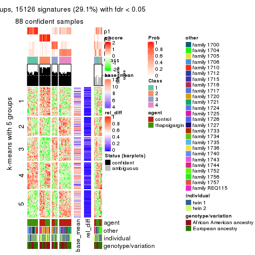
get_signatures(res, k = 5)
get_signatures(res, k = 6)
Signature heatmaps where rows are not scaled:
get_signatures(res, k = 2, scale_rows = FALSE)
get_signatures(res, k = 3, scale_rows = FALSE)

get_signatures(res, k = 4, scale_rows = FALSE)
get_signatures(res, k = 5, scale_rows = FALSE)
get_signatures(res, k = 6, scale_rows = FALSE)
Compare the overlap of signatures from different k:
compare_signatures(res)
get_signature() returns a data frame invisibly. TO get the list of signatures, the function
call should be assigned to a variable explicitly. In following code, if plot argument is set
to FALSE, no heatmap is plotted while only the differential analysis is performed.
# code only for demonstration
tb = get_signature(res, k = ..., plot = FALSE)
An example of the output of tb is:
#> which_row fdr mean_1 mean_2 scaled_mean_1 scaled_mean_2 km
#> 1 38 0.042760348 8.373488 9.131774 -0.5533452 0.5164555 1
#> 2 40 0.018707592 7.106213 8.469186 -0.6173731 0.5762149 1
#> 3 55 0.019134737 10.221463 11.207825 -0.6159697 0.5749050 1
#> 4 59 0.006059896 5.921854 7.869574 -0.6899429 0.6439467 1
#> 5 60 0.018055526 8.928898 10.211722 -0.6204761 0.5791110 1
#> 6 98 0.009384629 15.714769 14.887706 0.6635654 -0.6193277 2
...
The columns in tb are:
which_row: row indices corresponding to the input matrix.fdr: FDR for the differential test. mean_x: The mean value in group x.scaled_mean_x: The mean value in group x after rows are scaled.km: Row groups if k-means clustering is applied to rows.UMAP plot which shows how samples are separated.
dimension_reduction(res, k = 2, method = "UMAP")
dimension_reduction(res, k = 3, method = "UMAP")
dimension_reduction(res, k = 4, method = "UMAP")
dimension_reduction(res, k = 5, method = "UMAP")
dimension_reduction(res, k = 6, method = "UMAP")
Following heatmap shows how subgroups are split when increasing k:
collect_classes(res)
Test correlation between subgroups and known annotations. If the known annotation is numeric, one-way ANOVA test is applied, and if the known annotation is discrete, chi-squared contingency table test is applied.
test_to_known_factors(res)
#> n agent(p) other(p) individual(p) genotype/variation(p) k
#> SD:kmeans 104 1.00e+00 9.35e-07 0.180 1.59e-03 2
#> SD:kmeans 25 NA NA NA NA 3
#> SD:kmeans 88 4.76e-11 7.78e-07 0.743 3.67e-02 4
#> SD:kmeans 87 2.96e-11 6.40e-06 0.556 2.24e-03 5
#> SD:kmeans 82 2.49e-09 3.78e-08 0.642 2.69e-07 6
If matrix rows can be associated to genes, consider to use functional_enrichment(res,
...) to perform function enrichment for the signature genes. See this vignette for more detailed explanations.
The object with results only for a single top-value method and a single partition method can be extracted as:
res = res_list["SD", "skmeans"]
# you can also extract it by
# res = res_list["SD:skmeans"]
A summary of res and all the functions that can be applied to it:
res
#> A 'ConsensusPartition' object with k = 2, 3, 4, 5, 6.
#> On a matrix with 51941 rows and 104 columns.
#> Top rows (1000, 2000, 3000, 4000, 5000) are extracted by 'SD' method.
#> Subgroups are detected by 'skmeans' method.
#> Performed in total 1250 partitions by row resampling.
#> Best k for subgroups seems to be 2.
#>
#> Following methods can be applied to this 'ConsensusPartition' object:
#> [1] "cola_report" "collect_classes" "collect_plots"
#> [4] "collect_stats" "colnames" "compare_signatures"
#> [7] "consensus_heatmap" "dimension_reduction" "functional_enrichment"
#> [10] "get_anno_col" "get_anno" "get_classes"
#> [13] "get_consensus" "get_matrix" "get_membership"
#> [16] "get_param" "get_signatures" "get_stats"
#> [19] "is_best_k" "is_stable_k" "membership_heatmap"
#> [22] "ncol" "nrow" "plot_ecdf"
#> [25] "rownames" "select_partition_number" "show"
#> [28] "suggest_best_k" "test_to_known_factors"
collect_plots() function collects all the plots made from res for all k (number of partitions)
into one single page to provide an easy and fast comparison between different k.
collect_plots(res)
The plots are:
k and the heatmap of
predicted classes for each k.k.k.k.All the plots in panels can be made by individual functions and they are plotted later in this section.
select_partition_number() produces several plots showing different
statistics for choosing “optimized” k. There are following statistics:
k;k, the area increased is defined as \(A_k - A_{k-1}\).The detailed explanations of these statistics can be found in the cola vignette.
Generally speaking, lower PAC score, higher mean silhouette score or higher
concordance corresponds to better partition. Rand index and Jaccard index
measure how similar the current partition is compared to partition with k-1.
If they are too similar, we won't accept k is better than k-1.
select_partition_number(res)
The numeric values for all these statistics can be obtained by get_stats().
get_stats(res)
#> k 1-PAC mean_silhouette concordance area_increased Rand Jaccard
#> 2 2 0.661 0.826 0.927 0.4834 0.522 0.522
#> 3 3 0.388 0.629 0.782 0.3804 0.689 0.466
#> 4 4 0.408 0.495 0.666 0.1233 0.888 0.678
#> 5 5 0.457 0.510 0.626 0.0626 0.892 0.623
#> 6 6 0.492 0.433 0.575 0.0398 0.911 0.625
suggest_best_k() suggests the best \(k\) based on these statistics. The rules are as follows:
suggest_best_k(res)
#> [1] 2
Following shows the table of the partitions (You need to click the show/hide
code output link to see it). The membership matrix (columns with name p*)
is inferred by
clue::cl_consensus()
function with the SE method. Basically the value in the membership matrix
represents the probability to belong to a certain group. The finall class
label for an item is determined with the group with highest probability it
belongs to.
In get_classes() function, the entropy is calculated from the membership
matrix and the silhouette score is calculated from the consensus matrix.
cbind(get_classes(res, k = 2), get_membership(res, k = 2))
#> class entropy silhouette p1 p2
#> GSM494452 1 0.0000 0.9203 1.000 0.000
#> GSM494454 1 0.0000 0.9203 1.000 0.000
#> GSM494456 2 0.0000 0.9134 0.000 1.000
#> GSM494458 2 0.0000 0.9134 0.000 1.000
#> GSM494460 1 0.0000 0.9203 1.000 0.000
#> GSM494462 1 0.0000 0.9203 1.000 0.000
#> GSM494464 2 0.9993 0.0803 0.484 0.516
#> GSM494466 2 0.0000 0.9134 0.000 1.000
#> GSM494468 1 0.5842 0.8126 0.860 0.140
#> GSM494470 1 0.0000 0.9203 1.000 0.000
#> GSM494472 1 0.0000 0.9203 1.000 0.000
#> GSM494474 1 0.0000 0.9203 1.000 0.000
#> GSM494476 2 0.0000 0.9134 0.000 1.000
#> GSM494478 2 0.2603 0.8860 0.044 0.956
#> GSM494480 1 0.9881 0.1987 0.564 0.436
#> GSM494482 1 0.3879 0.8749 0.924 0.076
#> GSM494484 2 0.0000 0.9134 0.000 1.000
#> GSM494486 2 0.0000 0.9134 0.000 1.000
#> GSM494488 1 0.0000 0.9203 1.000 0.000
#> GSM494490 2 0.0000 0.9134 0.000 1.000
#> GSM494492 1 0.8955 0.5489 0.688 0.312
#> GSM494494 2 0.0000 0.9134 0.000 1.000
#> GSM494496 1 0.7139 0.7350 0.804 0.196
#> GSM494498 2 0.0000 0.9134 0.000 1.000
#> GSM494500 1 0.0000 0.9203 1.000 0.000
#> GSM494502 1 0.0000 0.9203 1.000 0.000
#> GSM494504 1 0.0000 0.9203 1.000 0.000
#> GSM494506 1 0.8386 0.6355 0.732 0.268
#> GSM494508 2 0.0000 0.9134 0.000 1.000
#> GSM494510 2 0.0000 0.9134 0.000 1.000
#> GSM494512 1 0.6343 0.7972 0.840 0.160
#> GSM494514 1 0.7453 0.7138 0.788 0.212
#> GSM494516 1 0.0000 0.9203 1.000 0.000
#> GSM494518 1 0.0000 0.9203 1.000 0.000
#> GSM494520 1 0.0000 0.9203 1.000 0.000
#> GSM494522 1 0.3879 0.8759 0.924 0.076
#> GSM494524 2 0.0000 0.9134 0.000 1.000
#> GSM494526 1 0.0000 0.9203 1.000 0.000
#> GSM494528 1 0.1184 0.9149 0.984 0.016
#> GSM494530 1 0.1184 0.9151 0.984 0.016
#> GSM494532 2 0.8555 0.6236 0.280 0.720
#> GSM494534 1 0.9922 0.1682 0.552 0.448
#> GSM494536 1 0.0000 0.9203 1.000 0.000
#> GSM494538 1 0.0000 0.9203 1.000 0.000
#> GSM494540 1 0.0376 0.9194 0.996 0.004
#> GSM494542 1 0.1184 0.9150 0.984 0.016
#> GSM494544 1 0.0376 0.9194 0.996 0.004
#> GSM494546 2 0.0000 0.9134 0.000 1.000
#> GSM494548 2 0.7815 0.6914 0.232 0.768
#> GSM494550 2 0.9732 0.3277 0.404 0.596
#> GSM494552 1 0.0376 0.9193 0.996 0.004
#> GSM494554 1 0.1843 0.9099 0.972 0.028
#> GSM494453 1 0.0000 0.9203 1.000 0.000
#> GSM494455 1 0.0000 0.9203 1.000 0.000
#> GSM494457 2 0.0000 0.9134 0.000 1.000
#> GSM494459 2 0.0000 0.9134 0.000 1.000
#> GSM494461 1 0.0672 0.9185 0.992 0.008
#> GSM494463 1 0.0376 0.9193 0.996 0.004
#> GSM494465 2 0.2423 0.8882 0.040 0.960
#> GSM494467 2 0.0000 0.9134 0.000 1.000
#> GSM494469 1 0.8713 0.5866 0.708 0.292
#> GSM494471 1 0.0000 0.9203 1.000 0.000
#> GSM494473 1 0.0000 0.9203 1.000 0.000
#> GSM494475 1 0.0000 0.9203 1.000 0.000
#> GSM494477 2 0.0000 0.9134 0.000 1.000
#> GSM494479 2 0.0000 0.9134 0.000 1.000
#> GSM494481 2 0.7883 0.6877 0.236 0.764
#> GSM494483 1 1.0000 -0.0317 0.504 0.496
#> GSM494485 2 0.0000 0.9134 0.000 1.000
#> GSM494487 2 0.0000 0.9134 0.000 1.000
#> GSM494489 1 0.0376 0.9193 0.996 0.004
#> GSM494491 2 0.0000 0.9134 0.000 1.000
#> GSM494493 2 0.9323 0.4924 0.348 0.652
#> GSM494495 2 0.0000 0.9134 0.000 1.000
#> GSM494497 1 0.8661 0.5957 0.712 0.288
#> GSM494499 2 0.0000 0.9134 0.000 1.000
#> GSM494501 1 0.0000 0.9203 1.000 0.000
#> GSM494503 1 0.0000 0.9203 1.000 0.000
#> GSM494505 1 0.0000 0.9203 1.000 0.000
#> GSM494507 2 0.9977 0.1272 0.472 0.528
#> GSM494509 2 0.0000 0.9134 0.000 1.000
#> GSM494511 2 0.0000 0.9134 0.000 1.000
#> GSM494513 1 0.9754 0.3255 0.592 0.408
#> GSM494515 1 0.8081 0.6609 0.752 0.248
#> GSM494517 1 0.0000 0.9203 1.000 0.000
#> GSM494519 1 0.0000 0.9203 1.000 0.000
#> GSM494521 1 0.0000 0.9203 1.000 0.000
#> GSM494523 1 0.1843 0.9089 0.972 0.028
#> GSM494525 2 0.0000 0.9134 0.000 1.000
#> GSM494527 1 0.0000 0.9203 1.000 0.000
#> GSM494529 1 0.0000 0.9203 1.000 0.000
#> GSM494531 1 0.1414 0.9141 0.980 0.020
#> GSM494533 2 0.0000 0.9134 0.000 1.000
#> GSM494535 2 0.9044 0.5534 0.320 0.680
#> GSM494537 1 0.0938 0.9170 0.988 0.012
#> GSM494539 1 0.0000 0.9203 1.000 0.000
#> GSM494541 1 0.4298 0.8666 0.912 0.088
#> GSM494543 1 0.4815 0.8517 0.896 0.104
#> GSM494545 1 0.0938 0.9170 0.988 0.012
#> GSM494547 2 0.0000 0.9134 0.000 1.000
#> GSM494549 2 0.5294 0.8254 0.120 0.880
#> GSM494551 2 0.5408 0.8210 0.124 0.876
#> GSM494553 1 0.1414 0.9131 0.980 0.020
#> GSM494555 1 0.3733 0.8806 0.928 0.072
cbind(get_classes(res, k = 3), get_membership(res, k = 3))
#> class entropy silhouette p1 p2 p3
#> GSM494452 2 0.5905 0.4821 0.352 0.648 0.000
#> GSM494454 2 0.6225 0.3288 0.432 0.568 0.000
#> GSM494456 3 0.0000 0.9468 0.000 0.000 1.000
#> GSM494458 3 0.0000 0.9468 0.000 0.000 1.000
#> GSM494460 1 0.6045 0.2311 0.620 0.380 0.000
#> GSM494462 1 0.5785 0.3537 0.668 0.332 0.000
#> GSM494464 2 0.8013 0.4764 0.112 0.636 0.252
#> GSM494466 3 0.0000 0.9468 0.000 0.000 1.000
#> GSM494468 2 0.5884 0.6775 0.148 0.788 0.064
#> GSM494470 2 0.6062 0.4103 0.384 0.616 0.000
#> GSM494472 2 0.4931 0.6364 0.232 0.768 0.000
#> GSM494474 2 0.5397 0.5917 0.280 0.720 0.000
#> GSM494476 3 0.0000 0.9468 0.000 0.000 1.000
#> GSM494478 3 0.5492 0.7728 0.104 0.080 0.816
#> GSM494480 2 0.6374 0.6498 0.100 0.768 0.132
#> GSM494482 2 0.4539 0.6942 0.148 0.836 0.016
#> GSM494484 3 0.0000 0.9468 0.000 0.000 1.000
#> GSM494486 3 0.0000 0.9468 0.000 0.000 1.000
#> GSM494488 2 0.5859 0.4940 0.344 0.656 0.000
#> GSM494490 3 0.0237 0.9442 0.000 0.004 0.996
#> GSM494492 2 0.6856 0.6326 0.128 0.740 0.132
#> GSM494494 3 0.0000 0.9468 0.000 0.000 1.000
#> GSM494496 1 0.6624 0.4732 0.708 0.248 0.044
#> GSM494498 3 0.0000 0.9468 0.000 0.000 1.000
#> GSM494500 2 0.4842 0.6566 0.224 0.776 0.000
#> GSM494502 2 0.2945 0.7058 0.088 0.908 0.004
#> GSM494504 2 0.2796 0.7047 0.092 0.908 0.000
#> GSM494506 2 0.3993 0.6925 0.064 0.884 0.052
#> GSM494508 3 0.1999 0.9169 0.012 0.036 0.952
#> GSM494510 3 0.0237 0.9448 0.000 0.004 0.996
#> GSM494512 2 0.5355 0.6603 0.168 0.800 0.032
#> GSM494514 1 0.7199 0.4608 0.676 0.260 0.064
#> GSM494516 2 0.3941 0.7007 0.156 0.844 0.000
#> GSM494518 2 0.3267 0.6970 0.116 0.884 0.000
#> GSM494520 2 0.4605 0.6756 0.204 0.796 0.000
#> GSM494522 2 0.3987 0.6983 0.108 0.872 0.020
#> GSM494524 3 0.0000 0.9468 0.000 0.000 1.000
#> GSM494526 2 0.5327 0.6054 0.272 0.728 0.000
#> GSM494528 2 0.2261 0.7029 0.068 0.932 0.000
#> GSM494530 1 0.6516 -0.0945 0.516 0.480 0.004
#> GSM494532 2 0.5521 0.5989 0.032 0.788 0.180
#> GSM494534 2 0.3886 0.6726 0.024 0.880 0.096
#> GSM494536 2 0.4346 0.6901 0.184 0.816 0.000
#> GSM494538 2 0.3879 0.7009 0.152 0.848 0.000
#> GSM494540 2 0.2711 0.6849 0.088 0.912 0.000
#> GSM494542 2 0.2860 0.7005 0.084 0.912 0.004
#> GSM494544 2 0.5588 0.5631 0.276 0.720 0.004
#> GSM494546 3 0.7300 0.5496 0.064 0.272 0.664
#> GSM494548 2 0.6410 0.5952 0.092 0.764 0.144
#> GSM494550 2 0.5004 0.6545 0.072 0.840 0.088
#> GSM494552 1 0.4750 0.5560 0.784 0.216 0.000
#> GSM494554 2 0.6483 0.1888 0.452 0.544 0.004
#> GSM494453 1 0.5291 0.5787 0.732 0.268 0.000
#> GSM494455 1 0.4452 0.6432 0.808 0.192 0.000
#> GSM494457 3 0.0000 0.9468 0.000 0.000 1.000
#> GSM494459 3 0.0000 0.9468 0.000 0.000 1.000
#> GSM494461 1 0.2866 0.6479 0.916 0.076 0.008
#> GSM494463 1 0.2448 0.6404 0.924 0.076 0.000
#> GSM494465 3 0.8079 0.4373 0.260 0.112 0.628
#> GSM494467 3 0.0000 0.9468 0.000 0.000 1.000
#> GSM494469 1 0.8421 0.5255 0.608 0.252 0.140
#> GSM494471 1 0.3879 0.6484 0.848 0.152 0.000
#> GSM494473 1 0.5882 0.5002 0.652 0.348 0.000
#> GSM494475 1 0.4887 0.6163 0.772 0.228 0.000
#> GSM494477 3 0.0000 0.9468 0.000 0.000 1.000
#> GSM494479 3 0.2878 0.8684 0.096 0.000 0.904
#> GSM494481 1 0.9674 0.2858 0.440 0.224 0.336
#> GSM494483 1 0.9380 0.3884 0.512 0.256 0.232
#> GSM494485 3 0.0000 0.9468 0.000 0.000 1.000
#> GSM494487 3 0.0000 0.9468 0.000 0.000 1.000
#> GSM494489 1 0.1643 0.6449 0.956 0.044 0.000
#> GSM494491 3 0.0000 0.9468 0.000 0.000 1.000
#> GSM494493 1 0.9364 0.3578 0.484 0.184 0.332
#> GSM494495 3 0.0000 0.9468 0.000 0.000 1.000
#> GSM494497 1 0.3649 0.6313 0.896 0.036 0.068
#> GSM494499 3 0.0000 0.9468 0.000 0.000 1.000
#> GSM494501 1 0.4931 0.6301 0.768 0.232 0.000
#> GSM494503 1 0.6442 0.3492 0.564 0.432 0.004
#> GSM494505 1 0.4555 0.6467 0.800 0.200 0.000
#> GSM494507 1 0.9476 0.2297 0.436 0.380 0.184
#> GSM494509 3 0.0661 0.9401 0.008 0.004 0.988
#> GSM494511 3 0.0237 0.9446 0.004 0.000 0.996
#> GSM494513 1 0.7587 0.5004 0.640 0.288 0.072
#> GSM494515 1 0.3802 0.6409 0.888 0.080 0.032
#> GSM494517 1 0.5560 0.5742 0.700 0.300 0.000
#> GSM494519 2 0.6295 -0.1384 0.472 0.528 0.000
#> GSM494521 1 0.5692 0.6191 0.724 0.268 0.008
#> GSM494523 1 0.7578 0.2116 0.500 0.460 0.040
#> GSM494525 3 0.0000 0.9468 0.000 0.000 1.000
#> GSM494527 1 0.4654 0.6260 0.792 0.208 0.000
#> GSM494529 1 0.6307 0.2342 0.512 0.488 0.000
#> GSM494531 1 0.2998 0.6518 0.916 0.068 0.016
#> GSM494533 3 0.7129 0.6415 0.104 0.180 0.716
#> GSM494535 2 0.9805 -0.0376 0.320 0.424 0.256
#> GSM494537 1 0.4605 0.6379 0.796 0.204 0.000
#> GSM494539 1 0.5016 0.6144 0.760 0.240 0.000
#> GSM494541 2 0.6879 -0.0303 0.428 0.556 0.016
#> GSM494543 1 0.7310 0.4937 0.628 0.324 0.048
#> GSM494545 1 0.4399 0.6191 0.812 0.188 0.000
#> GSM494547 3 0.4591 0.8245 0.120 0.032 0.848
#> GSM494549 1 0.9704 0.2945 0.456 0.280 0.264
#> GSM494551 1 0.9822 0.2479 0.428 0.292 0.280
#> GSM494553 1 0.2486 0.6449 0.932 0.060 0.008
#> GSM494555 1 0.3670 0.6553 0.888 0.092 0.020
cbind(get_classes(res, k = 4), get_membership(res, k = 4))
#> class entropy silhouette p1 p2 p3 p4
#> GSM494452 4 0.5923 0.5177 0.216 0.000 0.100 0.684
#> GSM494454 4 0.6338 0.4950 0.236 0.000 0.120 0.644
#> GSM494456 2 0.0000 0.8761 0.000 1.000 0.000 0.000
#> GSM494458 2 0.0000 0.8761 0.000 1.000 0.000 0.000
#> GSM494460 1 0.5810 0.4514 0.660 0.000 0.064 0.276
#> GSM494462 1 0.5030 0.5084 0.752 0.000 0.060 0.188
#> GSM494464 4 0.7598 0.4848 0.108 0.116 0.140 0.636
#> GSM494466 2 0.0779 0.8696 0.000 0.980 0.004 0.016
#> GSM494468 4 0.6431 0.5797 0.152 0.012 0.156 0.680
#> GSM494470 4 0.6833 0.4241 0.272 0.000 0.144 0.584
#> GSM494472 4 0.5842 0.5627 0.168 0.000 0.128 0.704
#> GSM494474 4 0.5650 0.5806 0.180 0.000 0.104 0.716
#> GSM494476 2 0.0000 0.8761 0.000 1.000 0.000 0.000
#> GSM494478 2 0.7204 0.4041 0.248 0.604 0.024 0.124
#> GSM494480 4 0.5954 0.6124 0.060 0.036 0.176 0.728
#> GSM494482 4 0.5562 0.6123 0.100 0.016 0.128 0.756
#> GSM494484 2 0.0000 0.8761 0.000 1.000 0.000 0.000
#> GSM494486 2 0.0000 0.8761 0.000 1.000 0.000 0.000
#> GSM494488 4 0.6340 0.4847 0.284 0.000 0.096 0.620
#> GSM494490 2 0.2261 0.8468 0.008 0.932 0.024 0.036
#> GSM494492 4 0.7356 0.5138 0.088 0.088 0.180 0.644
#> GSM494494 2 0.0895 0.8672 0.000 0.976 0.004 0.020
#> GSM494496 1 0.5849 0.4663 0.740 0.024 0.144 0.092
#> GSM494498 2 0.0336 0.8744 0.000 0.992 0.008 0.000
#> GSM494500 4 0.5759 0.6192 0.180 0.000 0.112 0.708
#> GSM494502 4 0.5050 0.6299 0.068 0.000 0.176 0.756
#> GSM494504 4 0.5995 0.6192 0.096 0.000 0.232 0.672
#> GSM494506 4 0.6223 0.5740 0.036 0.028 0.292 0.644
#> GSM494508 2 0.4271 0.7472 0.004 0.816 0.140 0.040
#> GSM494510 2 0.1118 0.8632 0.000 0.964 0.036 0.000
#> GSM494512 4 0.6536 0.3582 0.048 0.012 0.436 0.504
#> GSM494514 1 0.5914 0.4349 0.696 0.008 0.220 0.076
#> GSM494516 4 0.6112 0.6063 0.096 0.000 0.248 0.656
#> GSM494518 4 0.5693 0.6028 0.072 0.000 0.240 0.688
#> GSM494520 4 0.6162 0.6154 0.156 0.000 0.168 0.676
#> GSM494522 4 0.6514 0.5523 0.064 0.012 0.328 0.596
#> GSM494524 2 0.1411 0.8614 0.000 0.960 0.020 0.020
#> GSM494526 4 0.5740 0.5378 0.208 0.000 0.092 0.700
#> GSM494528 4 0.4057 0.6371 0.028 0.000 0.160 0.812
#> GSM494530 1 0.6478 0.4468 0.632 0.000 0.132 0.236
#> GSM494532 4 0.7565 0.4370 0.044 0.104 0.280 0.572
#> GSM494534 4 0.6083 0.5878 0.032 0.036 0.256 0.676
#> GSM494536 4 0.6758 0.5604 0.156 0.000 0.240 0.604
#> GSM494538 4 0.5966 0.5968 0.072 0.000 0.280 0.648
#> GSM494540 4 0.5855 0.5527 0.044 0.000 0.356 0.600
#> GSM494542 4 0.5898 0.5749 0.056 0.000 0.316 0.628
#> GSM494544 4 0.7771 0.2500 0.244 0.000 0.348 0.408
#> GSM494546 2 0.9059 -0.1711 0.072 0.360 0.352 0.216
#> GSM494548 3 0.7417 -0.2490 0.028 0.084 0.464 0.424
#> GSM494550 4 0.6997 0.2984 0.032 0.048 0.448 0.472
#> GSM494552 1 0.5050 0.5197 0.756 0.000 0.068 0.176
#> GSM494554 1 0.7752 0.1531 0.460 0.008 0.184 0.348
#> GSM494453 1 0.7853 0.0396 0.400 0.000 0.292 0.308
#> GSM494455 1 0.7147 0.3037 0.560 0.000 0.224 0.216
#> GSM494457 2 0.0000 0.8761 0.000 1.000 0.000 0.000
#> GSM494459 2 0.0000 0.8761 0.000 1.000 0.000 0.000
#> GSM494461 1 0.4171 0.5175 0.828 0.000 0.088 0.084
#> GSM494463 1 0.2002 0.5316 0.936 0.000 0.020 0.044
#> GSM494465 2 0.9420 -0.3296 0.172 0.376 0.316 0.136
#> GSM494467 2 0.0000 0.8761 0.000 1.000 0.000 0.000
#> GSM494469 1 0.8863 -0.1064 0.404 0.072 0.348 0.176
#> GSM494471 1 0.6834 0.3503 0.596 0.000 0.240 0.164
#> GSM494473 1 0.7700 -0.0470 0.396 0.000 0.384 0.220
#> GSM494475 1 0.7459 0.2480 0.508 0.000 0.244 0.248
#> GSM494477 2 0.0000 0.8761 0.000 1.000 0.000 0.000
#> GSM494479 2 0.4544 0.6458 0.220 0.760 0.016 0.004
#> GSM494481 3 0.9712 0.3128 0.224 0.208 0.376 0.192
#> GSM494483 3 0.9268 0.3466 0.256 0.136 0.436 0.172
#> GSM494485 2 0.0000 0.8761 0.000 1.000 0.000 0.000
#> GSM494487 2 0.0000 0.8761 0.000 1.000 0.000 0.000
#> GSM494489 1 0.5628 0.4264 0.704 0.000 0.216 0.080
#> GSM494491 2 0.0376 0.8742 0.004 0.992 0.004 0.000
#> GSM494493 3 0.9630 0.2897 0.260 0.248 0.356 0.136
#> GSM494495 2 0.0000 0.8761 0.000 1.000 0.000 0.000
#> GSM494497 1 0.4644 0.4725 0.784 0.016 0.180 0.020
#> GSM494499 2 0.0188 0.8754 0.000 0.996 0.004 0.000
#> GSM494501 1 0.7599 -0.0500 0.448 0.000 0.344 0.208
#> GSM494503 3 0.7520 0.3603 0.280 0.000 0.492 0.228
#> GSM494505 1 0.7276 -0.0649 0.448 0.000 0.404 0.148
#> GSM494507 3 0.8265 0.4422 0.176 0.140 0.572 0.112
#> GSM494509 2 0.2773 0.8070 0.000 0.880 0.116 0.004
#> GSM494511 2 0.1474 0.8540 0.000 0.948 0.052 0.000
#> GSM494513 3 0.7319 0.2968 0.240 0.036 0.608 0.116
#> GSM494515 1 0.5205 0.4457 0.740 0.020 0.216 0.024
#> GSM494517 3 0.7645 0.2516 0.360 0.000 0.428 0.212
#> GSM494519 3 0.7175 0.4074 0.220 0.000 0.556 0.224
#> GSM494521 1 0.7587 0.0683 0.496 0.008 0.328 0.168
#> GSM494523 3 0.8148 0.3745 0.268 0.016 0.452 0.264
#> GSM494525 2 0.0376 0.8740 0.000 0.992 0.004 0.004
#> GSM494527 1 0.7609 0.1893 0.476 0.000 0.252 0.272
#> GSM494529 3 0.7648 0.3092 0.216 0.000 0.436 0.348
#> GSM494531 1 0.4071 0.5235 0.832 0.000 0.104 0.064
#> GSM494533 2 0.8252 -0.0110 0.088 0.472 0.356 0.084
#> GSM494535 3 0.9260 0.4104 0.156 0.184 0.456 0.204
#> GSM494537 3 0.7386 0.2024 0.364 0.004 0.484 0.148
#> GSM494539 3 0.7084 0.3269 0.284 0.000 0.552 0.164
#> GSM494541 3 0.6556 0.4591 0.160 0.008 0.660 0.172
#> GSM494543 3 0.7196 0.3833 0.272 0.016 0.584 0.128
#> GSM494545 3 0.6717 0.1485 0.332 0.000 0.560 0.108
#> GSM494547 2 0.6803 0.4625 0.064 0.616 0.288 0.032
#> GSM494549 3 0.7726 0.3874 0.152 0.112 0.624 0.112
#> GSM494551 3 0.7621 0.3830 0.100 0.152 0.632 0.116
#> GSM494553 1 0.2670 0.5299 0.908 0.000 0.052 0.040
#> GSM494555 1 0.5644 0.4794 0.752 0.024 0.148 0.076
cbind(get_classes(res, k = 5), get_membership(res, k = 5))
#> class entropy silhouette p1 p2 p3 p4 p5
#> GSM494452 5 0.7117 0.337 0.204 0.000 0.068 0.180 0.548
#> GSM494454 5 0.6634 0.360 0.148 0.000 0.048 0.212 0.592
#> GSM494456 2 0.0451 0.876 0.008 0.988 0.000 0.000 0.004
#> GSM494458 2 0.0162 0.876 0.004 0.996 0.000 0.000 0.000
#> GSM494460 4 0.6221 0.594 0.088 0.000 0.072 0.648 0.192
#> GSM494462 4 0.5350 0.634 0.072 0.000 0.064 0.732 0.132
#> GSM494464 5 0.8363 0.376 0.136 0.112 0.136 0.092 0.524
#> GSM494466 2 0.2560 0.843 0.020 0.908 0.048 0.004 0.020
#> GSM494468 5 0.6786 0.440 0.168 0.012 0.080 0.112 0.628
#> GSM494470 5 0.6932 0.352 0.120 0.000 0.064 0.272 0.544
#> GSM494472 5 0.5544 0.480 0.148 0.000 0.052 0.088 0.712
#> GSM494474 5 0.6188 0.467 0.176 0.000 0.056 0.116 0.652
#> GSM494476 2 0.0000 0.876 0.000 1.000 0.000 0.000 0.000
#> GSM494478 2 0.7061 0.367 0.032 0.576 0.048 0.256 0.088
#> GSM494480 5 0.7540 0.456 0.144 0.060 0.180 0.044 0.572
#> GSM494482 5 0.6468 0.489 0.140 0.004 0.112 0.092 0.652
#> GSM494484 2 0.0162 0.876 0.000 0.996 0.004 0.000 0.000
#> GSM494486 2 0.0000 0.876 0.000 1.000 0.000 0.000 0.000
#> GSM494488 5 0.7096 0.376 0.116 0.000 0.108 0.212 0.564
#> GSM494490 2 0.3626 0.817 0.012 0.860 0.056 0.036 0.036
#> GSM494492 5 0.8516 0.392 0.136 0.068 0.180 0.124 0.492
#> GSM494494 2 0.2569 0.847 0.032 0.912 0.016 0.012 0.028
#> GSM494496 4 0.5648 0.659 0.032 0.020 0.132 0.724 0.092
#> GSM494498 2 0.1430 0.867 0.004 0.944 0.052 0.000 0.000
#> GSM494500 5 0.6695 0.512 0.092 0.000 0.128 0.164 0.616
#> GSM494502 5 0.6712 0.536 0.148 0.000 0.248 0.040 0.564
#> GSM494504 5 0.6825 0.530 0.108 0.000 0.252 0.072 0.568
#> GSM494506 5 0.7442 0.391 0.156 0.016 0.372 0.032 0.424
#> GSM494508 2 0.6008 0.477 0.024 0.628 0.280 0.040 0.028
#> GSM494510 2 0.1952 0.846 0.004 0.912 0.084 0.000 0.000
#> GSM494512 3 0.6552 0.273 0.076 0.004 0.600 0.068 0.252
#> GSM494514 4 0.4997 0.661 0.020 0.012 0.156 0.752 0.060
#> GSM494516 5 0.6831 0.536 0.128 0.000 0.236 0.064 0.572
#> GSM494518 5 0.6690 0.518 0.148 0.000 0.272 0.032 0.548
#> GSM494520 5 0.6241 0.547 0.116 0.000 0.128 0.092 0.664
#> GSM494522 5 0.7595 0.367 0.184 0.004 0.368 0.052 0.392
#> GSM494524 2 0.2151 0.860 0.008 0.928 0.024 0.008 0.032
#> GSM494526 5 0.6452 0.432 0.136 0.000 0.072 0.156 0.636
#> GSM494528 5 0.5789 0.551 0.112 0.000 0.192 0.028 0.668
#> GSM494530 4 0.7099 0.521 0.072 0.008 0.144 0.580 0.196
#> GSM494532 5 0.8540 0.274 0.140 0.096 0.308 0.048 0.408
#> GSM494534 5 0.7731 0.408 0.120 0.040 0.336 0.044 0.460
#> GSM494536 5 0.7680 0.425 0.172 0.000 0.196 0.132 0.500
#> GSM494538 5 0.7235 0.510 0.168 0.000 0.252 0.064 0.516
#> GSM494540 5 0.6948 0.416 0.168 0.000 0.368 0.024 0.440
#> GSM494542 5 0.7120 0.404 0.156 0.000 0.356 0.040 0.448
#> GSM494544 3 0.7238 0.231 0.068 0.000 0.524 0.172 0.236
#> GSM494546 3 0.6543 0.449 0.032 0.216 0.628 0.024 0.100
#> GSM494548 3 0.6040 0.444 0.060 0.052 0.704 0.036 0.148
#> GSM494550 3 0.5122 0.327 0.048 0.016 0.736 0.020 0.180
#> GSM494552 4 0.3522 0.684 0.032 0.000 0.020 0.844 0.104
#> GSM494554 4 0.8128 0.279 0.132 0.016 0.132 0.460 0.260
#> GSM494453 1 0.7723 0.332 0.396 0.000 0.060 0.256 0.288
#> GSM494455 1 0.7920 0.252 0.348 0.000 0.076 0.328 0.248
#> GSM494457 2 0.0000 0.876 0.000 1.000 0.000 0.000 0.000
#> GSM494459 2 0.0162 0.876 0.004 0.996 0.000 0.000 0.000
#> GSM494461 4 0.5170 0.577 0.212 0.004 0.036 0.712 0.036
#> GSM494463 4 0.3383 0.670 0.060 0.000 0.012 0.856 0.072
#> GSM494465 2 0.9280 -0.254 0.260 0.360 0.140 0.088 0.152
#> GSM494467 2 0.0579 0.876 0.008 0.984 0.008 0.000 0.000
#> GSM494469 1 0.8456 0.418 0.448 0.032 0.108 0.212 0.200
#> GSM494471 1 0.7218 0.120 0.392 0.000 0.032 0.384 0.192
#> GSM494473 1 0.7766 0.370 0.420 0.000 0.072 0.248 0.260
#> GSM494475 1 0.7897 0.325 0.400 0.000 0.084 0.284 0.232
#> GSM494477 2 0.0000 0.876 0.000 1.000 0.000 0.000 0.000
#> GSM494479 2 0.5568 0.548 0.044 0.680 0.024 0.236 0.016
#> GSM494481 1 0.8698 0.337 0.484 0.160 0.128 0.096 0.132
#> GSM494483 1 0.8171 0.404 0.544 0.092 0.124 0.100 0.140
#> GSM494485 2 0.0290 0.877 0.000 0.992 0.008 0.000 0.000
#> GSM494487 2 0.0000 0.876 0.000 1.000 0.000 0.000 0.000
#> GSM494489 4 0.7128 0.319 0.256 0.000 0.104 0.540 0.100
#> GSM494491 2 0.2364 0.857 0.016 0.916 0.048 0.016 0.004
#> GSM494493 1 0.9190 0.273 0.412 0.156 0.176 0.160 0.096
#> GSM494495 2 0.0693 0.876 0.000 0.980 0.012 0.008 0.000
#> GSM494497 4 0.4779 0.665 0.072 0.008 0.128 0.772 0.020
#> GSM494499 2 0.1281 0.871 0.012 0.956 0.032 0.000 0.000
#> GSM494501 1 0.7847 0.432 0.452 0.000 0.108 0.244 0.196
#> GSM494503 1 0.7220 0.469 0.564 0.000 0.164 0.132 0.140
#> GSM494505 1 0.7584 0.462 0.500 0.000 0.156 0.232 0.112
#> GSM494507 1 0.7663 0.367 0.564 0.064 0.208 0.096 0.068
#> GSM494509 2 0.5098 0.588 0.020 0.692 0.248 0.036 0.004
#> GSM494511 2 0.2777 0.807 0.016 0.864 0.120 0.000 0.000
#> GSM494513 3 0.7416 0.378 0.232 0.028 0.548 0.144 0.048
#> GSM494515 4 0.5358 0.638 0.080 0.016 0.144 0.736 0.024
#> GSM494517 1 0.7540 0.463 0.524 0.000 0.148 0.176 0.152
#> GSM494519 1 0.7128 0.398 0.568 0.000 0.176 0.100 0.156
#> GSM494521 1 0.8143 0.344 0.420 0.004 0.132 0.272 0.172
#> GSM494523 1 0.7675 0.313 0.492 0.008 0.268 0.092 0.140
#> GSM494525 2 0.2388 0.860 0.020 0.920 0.032 0.012 0.016
#> GSM494527 1 0.7649 0.273 0.364 0.000 0.048 0.320 0.268
#> GSM494529 1 0.6519 0.433 0.616 0.000 0.084 0.088 0.212
#> GSM494531 4 0.4424 0.662 0.120 0.004 0.052 0.796 0.028
#> GSM494533 1 0.8732 -0.104 0.328 0.304 0.244 0.036 0.088
#> GSM494535 1 0.9082 0.148 0.396 0.168 0.228 0.068 0.140
#> GSM494537 1 0.6976 0.469 0.592 0.000 0.140 0.148 0.120
#> GSM494539 1 0.6925 0.495 0.592 0.000 0.148 0.164 0.096
#> GSM494541 1 0.6928 0.342 0.536 0.000 0.284 0.060 0.120
#> GSM494543 1 0.6793 0.359 0.560 0.000 0.272 0.096 0.072
#> GSM494545 3 0.7799 0.216 0.252 0.004 0.452 0.216 0.076
#> GSM494547 3 0.7243 0.156 0.080 0.416 0.420 0.076 0.008
#> GSM494549 3 0.7288 0.401 0.232 0.068 0.580 0.072 0.048
#> GSM494551 3 0.7269 0.400 0.236 0.076 0.576 0.076 0.036
#> GSM494553 4 0.3267 0.678 0.076 0.000 0.016 0.864 0.044
#> GSM494555 4 0.6748 0.449 0.224 0.008 0.068 0.604 0.096
cbind(get_classes(res, k = 6), get_membership(res, k = 6))
#> class entropy silhouette p1 p2 p3 p4 p5 p6
#> GSM494452 5 0.6169 0.40030 0.076 0.000 0.016 0.184 0.620 0.104
#> GSM494454 5 0.6843 0.38521 0.096 0.000 0.012 0.188 0.536 0.168
#> GSM494456 2 0.1514 0.85414 0.004 0.944 0.036 0.004 0.012 0.000
#> GSM494458 2 0.1225 0.85609 0.000 0.952 0.036 0.000 0.012 0.000
#> GSM494460 6 0.6239 0.52761 0.072 0.000 0.032 0.132 0.128 0.636
#> GSM494462 6 0.5959 0.53330 0.052 0.000 0.032 0.072 0.208 0.636
#> GSM494464 5 0.8808 0.15620 0.104 0.084 0.100 0.216 0.412 0.084
#> GSM494466 2 0.2990 0.82917 0.016 0.880 0.048 0.008 0.036 0.012
#> GSM494468 5 0.7018 0.24859 0.092 0.008 0.064 0.260 0.532 0.044
#> GSM494470 5 0.6918 0.39375 0.084 0.000 0.032 0.188 0.552 0.144
#> GSM494472 5 0.6212 0.31804 0.064 0.000 0.028 0.256 0.588 0.064
#> GSM494474 5 0.6553 0.32118 0.052 0.000 0.052 0.236 0.576 0.084
#> GSM494476 2 0.0767 0.85458 0.004 0.976 0.012 0.000 0.008 0.000
#> GSM494478 2 0.8124 0.17093 0.036 0.464 0.092 0.064 0.112 0.232
#> GSM494480 5 0.7685 0.00677 0.084 0.028 0.108 0.324 0.428 0.028
#> GSM494482 5 0.6597 0.29569 0.096 0.000 0.040 0.268 0.548 0.048
#> GSM494484 2 0.0622 0.85323 0.000 0.980 0.012 0.000 0.008 0.000
#> GSM494486 2 0.0520 0.85262 0.000 0.984 0.008 0.000 0.008 0.000
#> GSM494488 5 0.7188 0.33596 0.056 0.000 0.072 0.184 0.532 0.156
#> GSM494490 2 0.5128 0.71770 0.024 0.732 0.152 0.016 0.036 0.040
#> GSM494492 5 0.8453 0.12108 0.116 0.036 0.120 0.256 0.408 0.064
#> GSM494494 2 0.3018 0.82289 0.012 0.872 0.052 0.008 0.052 0.004
#> GSM494496 6 0.6111 0.52271 0.032 0.008 0.184 0.044 0.088 0.644
#> GSM494498 2 0.2976 0.82238 0.000 0.848 0.120 0.004 0.020 0.008
#> GSM494500 4 0.7317 0.16235 0.100 0.000 0.044 0.448 0.316 0.092
#> GSM494502 4 0.6086 0.50016 0.100 0.000 0.088 0.652 0.132 0.028
#> GSM494504 4 0.6479 0.48399 0.052 0.000 0.072 0.616 0.168 0.092
#> GSM494506 4 0.6435 0.47496 0.100 0.016 0.152 0.632 0.080 0.020
#> GSM494508 2 0.5770 0.23037 0.004 0.492 0.420 0.032 0.032 0.020
#> GSM494510 2 0.3370 0.74517 0.004 0.772 0.212 0.000 0.012 0.000
#> GSM494512 3 0.7033 0.29673 0.068 0.004 0.500 0.296 0.092 0.040
#> GSM494514 6 0.6460 0.45441 0.048 0.008 0.220 0.088 0.036 0.600
#> GSM494516 4 0.6544 0.46402 0.108 0.000 0.056 0.616 0.148 0.072
#> GSM494518 4 0.6450 0.48977 0.160 0.000 0.072 0.596 0.152 0.020
#> GSM494520 4 0.6975 0.26685 0.064 0.000 0.028 0.492 0.284 0.132
#> GSM494522 4 0.6306 0.49305 0.132 0.000 0.120 0.632 0.084 0.032
#> GSM494524 2 0.3051 0.83359 0.008 0.876 0.052 0.032 0.024 0.008
#> GSM494526 5 0.6672 0.41908 0.092 0.000 0.044 0.180 0.592 0.092
#> GSM494528 4 0.6172 0.30794 0.072 0.000 0.060 0.544 0.312 0.012
#> GSM494530 6 0.7481 0.42108 0.060 0.000 0.096 0.184 0.156 0.504
#> GSM494532 4 0.8286 0.29041 0.112 0.072 0.216 0.452 0.116 0.032
#> GSM494534 4 0.6204 0.46754 0.060 0.024 0.140 0.656 0.104 0.016
#> GSM494536 4 0.7622 0.35045 0.096 0.000 0.076 0.492 0.192 0.144
#> GSM494538 4 0.6936 0.46508 0.136 0.000 0.092 0.568 0.160 0.044
#> GSM494540 4 0.5311 0.52343 0.108 0.000 0.120 0.692 0.080 0.000
#> GSM494542 4 0.7089 0.44474 0.124 0.000 0.152 0.532 0.168 0.024
#> GSM494544 3 0.7854 0.26464 0.036 0.004 0.428 0.244 0.140 0.148
#> GSM494546 3 0.6647 0.46197 0.020 0.144 0.584 0.196 0.028 0.028
#> GSM494548 3 0.6608 0.39389 0.052 0.032 0.556 0.288 0.048 0.024
#> GSM494550 3 0.6224 0.28492 0.044 0.008 0.516 0.364 0.036 0.032
#> GSM494552 6 0.4964 0.57920 0.060 0.000 0.036 0.028 0.140 0.736
#> GSM494554 6 0.8704 0.19393 0.124 0.012 0.124 0.216 0.156 0.368
#> GSM494453 5 0.7166 0.12060 0.316 0.000 0.028 0.060 0.440 0.156
#> GSM494455 6 0.7771 -0.06644 0.248 0.000 0.024 0.100 0.300 0.328
#> GSM494457 2 0.1232 0.85544 0.004 0.956 0.024 0.000 0.016 0.000
#> GSM494459 2 0.0653 0.85338 0.004 0.980 0.012 0.000 0.004 0.000
#> GSM494461 6 0.5672 0.52500 0.164 0.004 0.040 0.036 0.072 0.684
#> GSM494463 6 0.4445 0.57781 0.076 0.000 0.024 0.016 0.112 0.772
#> GSM494465 1 0.9273 0.13374 0.260 0.252 0.132 0.056 0.220 0.080
#> GSM494467 2 0.1553 0.85332 0.012 0.944 0.032 0.004 0.008 0.000
#> GSM494469 5 0.8432 -0.08893 0.320 0.024 0.068 0.088 0.340 0.160
#> GSM494471 6 0.7964 -0.04286 0.284 0.000 0.052 0.076 0.292 0.296
#> GSM494473 5 0.7742 0.12484 0.300 0.000 0.056 0.124 0.412 0.108
#> GSM494475 5 0.7524 0.16143 0.268 0.000 0.048 0.056 0.424 0.204
#> GSM494477 2 0.0291 0.85182 0.000 0.992 0.004 0.000 0.004 0.000
#> GSM494479 2 0.5461 0.55254 0.056 0.656 0.060 0.000 0.008 0.220
#> GSM494481 1 0.8581 0.26960 0.400 0.092 0.128 0.080 0.256 0.044
#> GSM494483 1 0.8310 0.28041 0.416 0.044 0.128 0.056 0.272 0.084
#> GSM494485 2 0.0146 0.85197 0.000 0.996 0.000 0.000 0.004 0.000
#> GSM494487 2 0.0508 0.85398 0.000 0.984 0.012 0.000 0.004 0.000
#> GSM494489 6 0.7587 0.29297 0.232 0.004 0.056 0.064 0.176 0.468
#> GSM494491 2 0.3316 0.81953 0.016 0.848 0.100 0.008 0.016 0.012
#> GSM494493 1 0.9010 0.28457 0.388 0.144 0.152 0.072 0.172 0.072
#> GSM494495 2 0.2158 0.84725 0.016 0.920 0.032 0.004 0.024 0.004
#> GSM494497 6 0.4499 0.53474 0.032 0.000 0.192 0.004 0.040 0.732
#> GSM494499 2 0.2163 0.83353 0.008 0.892 0.096 0.000 0.000 0.004
#> GSM494501 1 0.7911 0.29610 0.432 0.000 0.048 0.164 0.196 0.160
#> GSM494503 1 0.7041 0.37190 0.564 0.000 0.092 0.136 0.152 0.056
#> GSM494505 1 0.7675 0.25762 0.444 0.000 0.064 0.120 0.100 0.272
#> GSM494507 1 0.8143 0.42379 0.500 0.060 0.128 0.152 0.108 0.052
#> GSM494509 2 0.5740 0.38439 0.032 0.564 0.344 0.024 0.008 0.028
#> GSM494511 2 0.3248 0.73043 0.004 0.768 0.224 0.000 0.004 0.000
#> GSM494513 3 0.7461 0.39382 0.128 0.020 0.540 0.092 0.044 0.176
#> GSM494515 6 0.5880 0.50384 0.064 0.000 0.176 0.060 0.040 0.660
#> GSM494517 1 0.7839 0.35266 0.440 0.000 0.056 0.216 0.112 0.176
#> GSM494519 1 0.7268 0.25308 0.452 0.000 0.096 0.320 0.084 0.048
#> GSM494521 1 0.8474 0.10344 0.340 0.012 0.068 0.120 0.172 0.288
#> GSM494523 1 0.7952 0.21977 0.360 0.000 0.104 0.340 0.104 0.092
#> GSM494525 2 0.2610 0.84169 0.036 0.892 0.048 0.000 0.020 0.004
#> GSM494527 5 0.6852 0.16320 0.264 0.000 0.036 0.032 0.500 0.168
#> GSM494529 1 0.7418 0.18173 0.472 0.000 0.064 0.128 0.268 0.068
#> GSM494531 6 0.5813 0.53829 0.112 0.000 0.100 0.044 0.060 0.684
#> GSM494533 3 0.8877 -0.03563 0.248 0.228 0.260 0.188 0.024 0.052
#> GSM494535 1 0.8728 0.19553 0.340 0.128 0.168 0.248 0.104 0.012
#> GSM494537 1 0.7826 0.34969 0.464 0.000 0.072 0.132 0.132 0.200
#> GSM494539 1 0.7553 0.39164 0.516 0.000 0.092 0.160 0.108 0.124
#> GSM494541 1 0.7888 0.25884 0.424 0.000 0.156 0.248 0.112 0.060
#> GSM494543 1 0.7932 0.38008 0.472 0.008 0.188 0.160 0.076 0.096
#> GSM494545 3 0.7592 0.21303 0.152 0.000 0.432 0.084 0.048 0.284
#> GSM494547 3 0.6758 0.30947 0.056 0.328 0.504 0.024 0.012 0.076
#> GSM494549 3 0.6544 0.38026 0.180 0.024 0.612 0.048 0.020 0.116
#> GSM494551 3 0.7825 0.40621 0.192 0.072 0.516 0.100 0.032 0.088
#> GSM494553 6 0.4687 0.57527 0.084 0.000 0.056 0.020 0.072 0.768
#> GSM494555 6 0.7184 0.38074 0.252 0.016 0.068 0.040 0.096 0.528
Heatmaps for the consensus matrix. It visualizes the probability of two samples to be in a same group.
consensus_heatmap(res, k = 2)
consensus_heatmap(res, k = 3)
consensus_heatmap(res, k = 4)
consensus_heatmap(res, k = 5)
consensus_heatmap(res, k = 6)

Heatmaps for the membership of samples in all partitions to see how consistent they are:
membership_heatmap(res, k = 2)
membership_heatmap(res, k = 3)
membership_heatmap(res, k = 4)
membership_heatmap(res, k = 5)
membership_heatmap(res, k = 6)
As soon as we have had the classes for columns, we can look for signatures which are significantly different between classes which can be candidate marks for certain classes. Following are the heatmaps for signatures.
Signature heatmaps where rows are scaled:
get_signatures(res, k = 2)
get_signatures(res, k = 3)
get_signatures(res, k = 4)
get_signatures(res, k = 5)
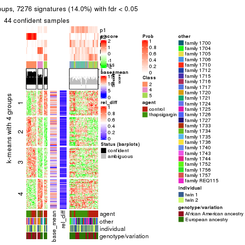
get_signatures(res, k = 6)
Signature heatmaps where rows are not scaled:
get_signatures(res, k = 2, scale_rows = FALSE)
get_signatures(res, k = 3, scale_rows = FALSE)
get_signatures(res, k = 4, scale_rows = FALSE)
get_signatures(res, k = 5, scale_rows = FALSE)
get_signatures(res, k = 6, scale_rows = FALSE)
Compare the overlap of signatures from different k:
compare_signatures(res)
get_signature() returns a data frame invisibly. TO get the list of signatures, the function
call should be assigned to a variable explicitly. In following code, if plot argument is set
to FALSE, no heatmap is plotted while only the differential analysis is performed.
# code only for demonstration
tb = get_signature(res, k = ..., plot = FALSE)
An example of the output of tb is:
#> which_row fdr mean_1 mean_2 scaled_mean_1 scaled_mean_2 km
#> 1 38 0.042760348 8.373488 9.131774 -0.5533452 0.5164555 1
#> 2 40 0.018707592 7.106213 8.469186 -0.6173731 0.5762149 1
#> 3 55 0.019134737 10.221463 11.207825 -0.6159697 0.5749050 1
#> 4 59 0.006059896 5.921854 7.869574 -0.6899429 0.6439467 1
#> 5 60 0.018055526 8.928898 10.211722 -0.6204761 0.5791110 1
#> 6 98 0.009384629 15.714769 14.887706 0.6635654 -0.6193277 2
...
The columns in tb are:
which_row: row indices corresponding to the input matrix.fdr: FDR for the differential test. mean_x: The mean value in group x.scaled_mean_x: The mean value in group x after rows are scaled.km: Row groups if k-means clustering is applied to rows.UMAP plot which shows how samples are separated.
dimension_reduction(res, k = 2, method = "UMAP")
dimension_reduction(res, k = 3, method = "UMAP")
dimension_reduction(res, k = 4, method = "UMAP")
dimension_reduction(res, k = 5, method = "UMAP")
dimension_reduction(res, k = 6, method = "UMAP")
Following heatmap shows how subgroups are split when increasing k:
collect_classes(res)
Test correlation between subgroups and known annotations. If the known annotation is numeric, one-way ANOVA test is applied, and if the known annotation is discrete, chi-squared contingency table test is applied.
test_to_known_factors(res)
#> n agent(p) other(p) individual(p) genotype/variation(p) k
#> SD:skmeans 96 5.27e-01 9.79e-07 0.527 0.034384 2
#> SD:skmeans 79 9.50e-11 1.11e-03 0.158 0.002671 3
#> SD:skmeans 53 1.09e-04 1.57e-05 0.602 0.009658 4
#> SD:skmeans 44 2.37e-02 4.24e-05 0.438 0.000402 5
#> SD:skmeans 35 2.99e-01 9.07e-05 0.396 0.029471 6
If matrix rows can be associated to genes, consider to use functional_enrichment(res,
...) to perform function enrichment for the signature genes. See this vignette for more detailed explanations.
The object with results only for a single top-value method and a single partition method can be extracted as:
res = res_list["SD", "pam"]
# you can also extract it by
# res = res_list["SD:pam"]
A summary of res and all the functions that can be applied to it:
res
#> A 'ConsensusPartition' object with k = 2, 3, 4, 5, 6.
#> On a matrix with 51941 rows and 104 columns.
#> Top rows (1000, 2000, 3000, 4000, 5000) are extracted by 'SD' method.
#> Subgroups are detected by 'pam' method.
#> Performed in total 1250 partitions by row resampling.
#> Best k for subgroups seems to be 2.
#>
#> Following methods can be applied to this 'ConsensusPartition' object:
#> [1] "cola_report" "collect_classes" "collect_plots"
#> [4] "collect_stats" "colnames" "compare_signatures"
#> [7] "consensus_heatmap" "dimension_reduction" "functional_enrichment"
#> [10] "get_anno_col" "get_anno" "get_classes"
#> [13] "get_consensus" "get_matrix" "get_membership"
#> [16] "get_param" "get_signatures" "get_stats"
#> [19] "is_best_k" "is_stable_k" "membership_heatmap"
#> [22] "ncol" "nrow" "plot_ecdf"
#> [25] "rownames" "select_partition_number" "show"
#> [28] "suggest_best_k" "test_to_known_factors"
collect_plots() function collects all the plots made from res for all k (number of partitions)
into one single page to provide an easy and fast comparison between different k.
collect_plots(res)
The plots are:
k and the heatmap of
predicted classes for each k.k.k.k.All the plots in panels can be made by individual functions and they are plotted later in this section.
select_partition_number() produces several plots showing different
statistics for choosing “optimized” k. There are following statistics:
k;k, the area increased is defined as \(A_k - A_{k-1}\).The detailed explanations of these statistics can be found in the cola vignette.
Generally speaking, lower PAC score, higher mean silhouette score or higher
concordance corresponds to better partition. Rand index and Jaccard index
measure how similar the current partition is compared to partition with k-1.
If they are too similar, we won't accept k is better than k-1.
select_partition_number(res)
The numeric values for all these statistics can be obtained by get_stats().
get_stats(res)
#> k 1-PAC mean_silhouette concordance area_increased Rand Jaccard
#> 2 2 0.300 0.723 0.850 0.4398 0.570 0.570
#> 3 3 0.309 0.555 0.772 0.4303 0.649 0.449
#> 4 4 0.334 0.454 0.708 0.1342 0.827 0.572
#> 5 5 0.437 0.450 0.695 0.0678 0.903 0.687
#> 6 6 0.517 0.466 0.691 0.0444 0.922 0.708
suggest_best_k() suggests the best \(k\) based on these statistics. The rules are as follows:
suggest_best_k(res)
#> [1] 2
Following shows the table of the partitions (You need to click the show/hide
code output link to see it). The membership matrix (columns with name p*)
is inferred by
clue::cl_consensus()
function with the SE method. Basically the value in the membership matrix
represents the probability to belong to a certain group. The finall class
label for an item is determined with the group with highest probability it
belongs to.
In get_classes() function, the entropy is calculated from the membership
matrix and the silhouette score is calculated from the consensus matrix.
cbind(get_classes(res, k = 2), get_membership(res, k = 2))
#> class entropy silhouette p1 p2
#> GSM494452 1 0.6712 0.7957 0.824 0.176
#> GSM494454 1 0.0000 0.8047 1.000 0.000
#> GSM494456 2 0.0000 0.8381 0.000 1.000
#> GSM494458 2 0.0000 0.8381 0.000 1.000
#> GSM494460 1 0.3733 0.8168 0.928 0.072
#> GSM494462 1 0.7950 0.7521 0.760 0.240
#> GSM494464 1 0.8499 0.7255 0.724 0.276
#> GSM494466 2 0.8763 0.5920 0.296 0.704
#> GSM494468 1 0.9323 0.6488 0.652 0.348
#> GSM494470 1 0.8861 0.6975 0.696 0.304
#> GSM494472 1 0.6973 0.7809 0.812 0.188
#> GSM494474 1 0.5059 0.8114 0.888 0.112
#> GSM494476 2 0.0000 0.8381 0.000 1.000
#> GSM494478 2 0.9970 0.0608 0.468 0.532
#> GSM494480 1 0.4431 0.8116 0.908 0.092
#> GSM494482 1 0.6048 0.8011 0.852 0.148
#> GSM494484 2 0.4562 0.7897 0.096 0.904
#> GSM494486 2 0.0000 0.8381 0.000 1.000
#> GSM494488 1 0.2603 0.8092 0.956 0.044
#> GSM494490 2 0.4562 0.7993 0.096 0.904
#> GSM494492 1 0.5519 0.8062 0.872 0.128
#> GSM494494 2 0.1414 0.8383 0.020 0.980
#> GSM494496 2 0.9460 0.3875 0.364 0.636
#> GSM494498 2 0.0376 0.8377 0.004 0.996
#> GSM494500 1 0.0000 0.8047 1.000 0.000
#> GSM494502 1 0.0000 0.8047 1.000 0.000
#> GSM494504 1 0.0000 0.8047 1.000 0.000
#> GSM494506 1 0.0000 0.8047 1.000 0.000
#> GSM494508 2 0.9580 0.4580 0.380 0.620
#> GSM494510 2 0.2603 0.8244 0.044 0.956
#> GSM494512 1 0.0000 0.8047 1.000 0.000
#> GSM494514 1 0.6623 0.7121 0.828 0.172
#> GSM494516 1 0.0000 0.8047 1.000 0.000
#> GSM494518 1 0.0000 0.8047 1.000 0.000
#> GSM494520 1 0.0000 0.8047 1.000 0.000
#> GSM494522 1 0.0376 0.8061 0.996 0.004
#> GSM494524 2 0.2043 0.8336 0.032 0.968
#> GSM494526 1 0.1843 0.8116 0.972 0.028
#> GSM494528 1 0.3431 0.8146 0.936 0.064
#> GSM494530 1 0.1414 0.8109 0.980 0.020
#> GSM494532 1 0.6247 0.7953 0.844 0.156
#> GSM494534 1 0.3274 0.7834 0.940 0.060
#> GSM494536 1 0.3274 0.8172 0.940 0.060
#> GSM494538 1 0.0000 0.8047 1.000 0.000
#> GSM494540 1 0.0000 0.8047 1.000 0.000
#> GSM494542 1 0.0672 0.8043 0.992 0.008
#> GSM494544 1 0.0672 0.8038 0.992 0.008
#> GSM494546 1 0.9323 0.3765 0.652 0.348
#> GSM494548 1 0.8909 0.6235 0.692 0.308
#> GSM494550 1 0.0938 0.8028 0.988 0.012
#> GSM494552 1 0.6973 0.7854 0.812 0.188
#> GSM494554 1 0.8267 0.7435 0.740 0.260
#> GSM494453 1 0.3733 0.8176 0.928 0.072
#> GSM494455 1 0.0000 0.8047 1.000 0.000
#> GSM494457 2 0.0376 0.8378 0.004 0.996
#> GSM494459 2 0.0000 0.8381 0.000 1.000
#> GSM494461 1 0.7602 0.7645 0.780 0.220
#> GSM494463 1 0.8327 0.7349 0.736 0.264
#> GSM494465 2 0.9635 0.1698 0.388 0.612
#> GSM494467 2 0.7815 0.6770 0.232 0.768
#> GSM494469 1 0.9323 0.6498 0.652 0.348
#> GSM494471 1 0.9000 0.6874 0.684 0.316
#> GSM494473 1 0.7139 0.7759 0.804 0.196
#> GSM494475 1 0.9000 0.6880 0.684 0.316
#> GSM494477 2 0.0000 0.8381 0.000 1.000
#> GSM494479 2 0.4431 0.7981 0.092 0.908
#> GSM494481 1 0.9970 0.3929 0.532 0.468
#> GSM494483 1 0.7299 0.7723 0.796 0.204
#> GSM494485 2 0.0000 0.8381 0.000 1.000
#> GSM494487 2 0.0000 0.8381 0.000 1.000
#> GSM494489 1 0.6438 0.7944 0.836 0.164
#> GSM494491 2 0.3879 0.8112 0.076 0.924
#> GSM494493 1 0.9044 0.6867 0.680 0.320
#> GSM494495 2 0.2236 0.8333 0.036 0.964
#> GSM494497 2 0.8861 0.4873 0.304 0.696
#> GSM494499 2 0.0938 0.8388 0.012 0.988
#> GSM494501 1 0.2236 0.8123 0.964 0.036
#> GSM494503 1 0.8267 0.7378 0.740 0.260
#> GSM494505 1 0.9000 0.6881 0.684 0.316
#> GSM494507 1 0.9552 0.6046 0.624 0.376
#> GSM494509 2 0.3114 0.8235 0.056 0.944
#> GSM494511 2 0.0376 0.8379 0.004 0.996
#> GSM494513 1 0.3431 0.8161 0.936 0.064
#> GSM494515 1 0.2043 0.8047 0.968 0.032
#> GSM494517 1 0.1184 0.8106 0.984 0.016
#> GSM494519 1 0.0000 0.8047 1.000 0.000
#> GSM494521 1 0.0672 0.8078 0.992 0.008
#> GSM494523 1 0.0000 0.8047 1.000 0.000
#> GSM494525 2 0.1414 0.8381 0.020 0.980
#> GSM494527 1 0.9491 0.6204 0.632 0.368
#> GSM494529 1 0.9000 0.6869 0.684 0.316
#> GSM494531 1 0.9393 0.6385 0.644 0.356
#> GSM494533 1 0.9988 0.3554 0.520 0.480
#> GSM494535 1 0.9460 0.6223 0.636 0.364
#> GSM494537 1 0.6973 0.7899 0.812 0.188
#> GSM494539 1 0.3431 0.8175 0.936 0.064
#> GSM494541 1 0.8813 0.7053 0.700 0.300
#> GSM494543 1 0.5059 0.8131 0.888 0.112
#> GSM494545 1 0.9754 0.5347 0.592 0.408
#> GSM494547 2 0.5519 0.7681 0.128 0.872
#> GSM494549 2 0.9358 0.3505 0.352 0.648
#> GSM494551 1 0.9866 0.4440 0.568 0.432
#> GSM494553 2 0.9988 -0.2395 0.480 0.520
#> GSM494555 1 0.9775 0.5389 0.588 0.412
cbind(get_classes(res, k = 3), get_membership(res, k = 3))
#> class entropy silhouette p1 p2 p3
#> GSM494452 1 0.5988 0.2744 0.632 0.368 0.000
#> GSM494454 2 0.6204 0.3791 0.424 0.576 0.000
#> GSM494456 3 0.0000 0.8044 0.000 0.000 1.000
#> GSM494458 3 0.2537 0.7758 0.080 0.000 0.920
#> GSM494460 2 0.4796 0.7100 0.220 0.780 0.000
#> GSM494462 1 0.3267 0.6755 0.884 0.116 0.000
#> GSM494464 1 0.6280 0.2010 0.540 0.460 0.000
#> GSM494466 3 0.7128 0.5189 0.052 0.284 0.664
#> GSM494468 1 0.2959 0.6814 0.900 0.100 0.000
#> GSM494470 1 0.2796 0.6852 0.908 0.092 0.000
#> GSM494472 1 0.6192 0.2081 0.580 0.420 0.000
#> GSM494474 2 0.5810 0.5477 0.336 0.664 0.000
#> GSM494476 3 0.0237 0.8040 0.004 0.000 0.996
#> GSM494478 2 0.9833 0.0617 0.276 0.424 0.300
#> GSM494480 2 0.4346 0.7396 0.184 0.816 0.000
#> GSM494482 2 0.4931 0.6926 0.232 0.768 0.000
#> GSM494484 3 0.0000 0.8044 0.000 0.000 1.000
#> GSM494486 3 0.0000 0.8044 0.000 0.000 1.000
#> GSM494488 2 0.5327 0.6736 0.272 0.728 0.000
#> GSM494490 1 0.8792 -0.1650 0.456 0.112 0.432
#> GSM494492 2 0.5397 0.6874 0.280 0.720 0.000
#> GSM494494 3 0.6735 0.3699 0.424 0.012 0.564
#> GSM494496 1 0.6823 0.5714 0.740 0.152 0.108
#> GSM494498 3 0.1482 0.7989 0.012 0.020 0.968
#> GSM494500 2 0.3192 0.7511 0.112 0.888 0.000
#> GSM494502 2 0.3267 0.7497 0.116 0.884 0.000
#> GSM494504 2 0.2959 0.7495 0.100 0.900 0.000
#> GSM494506 2 0.3816 0.7428 0.148 0.852 0.000
#> GSM494508 2 0.8969 0.0390 0.140 0.512 0.348
#> GSM494510 3 0.0475 0.8033 0.004 0.004 0.992
#> GSM494512 2 0.1411 0.6967 0.036 0.964 0.000
#> GSM494514 2 0.5845 0.4473 0.308 0.688 0.004
#> GSM494516 2 0.2878 0.7491 0.096 0.904 0.000
#> GSM494518 2 0.2878 0.7491 0.096 0.904 0.000
#> GSM494520 2 0.2796 0.7483 0.092 0.908 0.000
#> GSM494522 2 0.2878 0.7495 0.096 0.904 0.000
#> GSM494524 3 0.6082 0.5734 0.296 0.012 0.692
#> GSM494526 2 0.4555 0.7247 0.200 0.800 0.000
#> GSM494528 2 0.4931 0.7073 0.232 0.768 0.000
#> GSM494530 2 0.4062 0.7502 0.164 0.836 0.000
#> GSM494532 2 0.5529 0.6395 0.296 0.704 0.000
#> GSM494534 2 0.2959 0.7512 0.100 0.900 0.000
#> GSM494536 2 0.6026 0.5378 0.376 0.624 0.000
#> GSM494538 2 0.2711 0.7485 0.088 0.912 0.000
#> GSM494540 2 0.2796 0.7483 0.092 0.908 0.000
#> GSM494542 2 0.3340 0.7489 0.120 0.880 0.000
#> GSM494544 2 0.0892 0.6921 0.020 0.980 0.000
#> GSM494546 2 0.6500 0.5449 0.100 0.760 0.140
#> GSM494548 2 0.6318 0.5501 0.172 0.760 0.068
#> GSM494550 2 0.1289 0.7173 0.032 0.968 0.000
#> GSM494552 1 0.5363 0.4968 0.724 0.276 0.000
#> GSM494554 1 0.5098 0.6132 0.752 0.248 0.000
#> GSM494453 2 0.6192 0.4828 0.420 0.580 0.000
#> GSM494455 2 0.6291 0.3242 0.468 0.532 0.000
#> GSM494457 3 0.0000 0.8044 0.000 0.000 1.000
#> GSM494459 3 0.1529 0.7931 0.040 0.000 0.960
#> GSM494461 1 0.3686 0.6463 0.860 0.140 0.000
#> GSM494463 1 0.1411 0.6912 0.964 0.036 0.000
#> GSM494465 1 0.2663 0.6906 0.932 0.024 0.044
#> GSM494467 3 0.8230 0.4684 0.112 0.280 0.608
#> GSM494469 1 0.1643 0.6926 0.956 0.044 0.000
#> GSM494471 1 0.1289 0.6935 0.968 0.032 0.000
#> GSM494473 1 0.5363 0.5108 0.724 0.276 0.000
#> GSM494475 1 0.1753 0.6935 0.952 0.048 0.000
#> GSM494477 3 0.0000 0.8044 0.000 0.000 1.000
#> GSM494479 3 0.6483 0.2469 0.452 0.004 0.544
#> GSM494481 1 0.1289 0.6919 0.968 0.032 0.000
#> GSM494483 1 0.6274 -0.0636 0.544 0.456 0.000
#> GSM494485 3 0.0000 0.8044 0.000 0.000 1.000
#> GSM494487 3 0.0000 0.8044 0.000 0.000 1.000
#> GSM494489 1 0.5706 0.2770 0.680 0.320 0.000
#> GSM494491 1 0.7639 0.3178 0.656 0.088 0.256
#> GSM494493 1 0.5650 0.4193 0.688 0.312 0.000
#> GSM494495 3 0.7475 0.4407 0.376 0.044 0.580
#> GSM494497 1 0.5815 0.5740 0.800 0.104 0.096
#> GSM494499 3 0.7824 0.4572 0.356 0.064 0.580
#> GSM494501 1 0.6260 -0.1172 0.552 0.448 0.000
#> GSM494503 1 0.2711 0.6830 0.912 0.088 0.000
#> GSM494505 1 0.1753 0.6923 0.952 0.048 0.000
#> GSM494507 1 0.6750 0.3683 0.640 0.336 0.024
#> GSM494509 1 0.8891 -0.2089 0.448 0.120 0.432
#> GSM494511 3 0.3670 0.7584 0.020 0.092 0.888
#> GSM494513 2 0.6247 0.3404 0.376 0.620 0.004
#> GSM494515 2 0.3482 0.6841 0.128 0.872 0.000
#> GSM494517 2 0.5905 0.5896 0.352 0.648 0.000
#> GSM494519 2 0.3879 0.7412 0.152 0.848 0.000
#> GSM494521 1 0.6308 -0.2390 0.508 0.492 0.000
#> GSM494523 2 0.4796 0.7225 0.220 0.780 0.000
#> GSM494525 3 0.6819 0.2405 0.476 0.012 0.512
#> GSM494527 1 0.0892 0.6912 0.980 0.020 0.000
#> GSM494529 1 0.5016 0.5654 0.760 0.240 0.000
#> GSM494531 1 0.0592 0.6925 0.988 0.012 0.000
#> GSM494533 1 0.7677 0.4896 0.660 0.244 0.096
#> GSM494535 1 0.5775 0.5066 0.728 0.260 0.012
#> GSM494537 2 0.6168 0.4517 0.412 0.588 0.000
#> GSM494539 2 0.4702 0.6492 0.212 0.788 0.000
#> GSM494541 2 0.6309 0.1755 0.500 0.500 0.000
#> GSM494543 2 0.6308 0.2728 0.492 0.508 0.000
#> GSM494545 1 0.3425 0.6530 0.884 0.112 0.004
#> GSM494547 1 0.9037 -0.0774 0.472 0.136 0.392
#> GSM494549 1 0.8753 0.4166 0.588 0.224 0.188
#> GSM494551 1 0.8268 0.4610 0.576 0.328 0.096
#> GSM494553 1 0.0424 0.6888 0.992 0.008 0.000
#> GSM494555 1 0.0424 0.6912 0.992 0.008 0.000
cbind(get_classes(res, k = 4), get_membership(res, k = 4))
#> class entropy silhouette p1 p2 p3 p4
#> GSM494452 1 0.5897 0.3626 0.588 0.000 0.044 0.368
#> GSM494454 4 0.4877 0.1912 0.408 0.000 0.000 0.592
#> GSM494456 2 0.0707 0.8763 0.000 0.980 0.020 0.000
#> GSM494458 2 0.2926 0.8187 0.056 0.896 0.048 0.000
#> GSM494460 4 0.3392 0.6862 0.124 0.000 0.020 0.856
#> GSM494462 1 0.3806 0.5530 0.824 0.000 0.020 0.156
#> GSM494464 4 0.7860 -0.2046 0.340 0.000 0.276 0.384
#> GSM494466 3 0.8632 0.2407 0.056 0.296 0.456 0.192
#> GSM494468 1 0.4719 0.5041 0.772 0.000 0.048 0.180
#> GSM494470 1 0.3668 0.5411 0.808 0.000 0.004 0.188
#> GSM494472 4 0.5760 0.0160 0.448 0.000 0.028 0.524
#> GSM494474 4 0.4248 0.5996 0.220 0.000 0.012 0.768
#> GSM494476 2 0.0336 0.8784 0.000 0.992 0.008 0.000
#> GSM494478 4 0.9601 -0.1029 0.156 0.220 0.236 0.388
#> GSM494480 4 0.3761 0.6982 0.080 0.000 0.068 0.852
#> GSM494482 4 0.5653 0.5255 0.096 0.000 0.192 0.712
#> GSM494484 2 0.0921 0.8754 0.000 0.972 0.028 0.000
#> GSM494486 2 0.0336 0.8778 0.000 0.992 0.008 0.000
#> GSM494488 4 0.4576 0.5897 0.232 0.000 0.020 0.748
#> GSM494490 3 0.7786 0.4244 0.248 0.120 0.576 0.056
#> GSM494492 4 0.5775 0.5976 0.212 0.000 0.092 0.696
#> GSM494494 3 0.7973 0.3735 0.304 0.244 0.444 0.008
#> GSM494496 1 0.5369 0.3683 0.748 0.028 0.192 0.032
#> GSM494498 2 0.4872 0.5134 0.004 0.640 0.356 0.000
#> GSM494500 4 0.1022 0.7208 0.032 0.000 0.000 0.968
#> GSM494502 4 0.1557 0.7190 0.056 0.000 0.000 0.944
#> GSM494504 4 0.0707 0.7210 0.020 0.000 0.000 0.980
#> GSM494506 4 0.2868 0.6853 0.136 0.000 0.000 0.864
#> GSM494508 3 0.7823 0.2318 0.052 0.088 0.492 0.368
#> GSM494510 2 0.2647 0.8130 0.000 0.880 0.120 0.000
#> GSM494512 4 0.4720 0.5249 0.016 0.000 0.264 0.720
#> GSM494514 3 0.7629 0.0531 0.264 0.000 0.472 0.264
#> GSM494516 4 0.0592 0.7205 0.016 0.000 0.000 0.984
#> GSM494518 4 0.0592 0.7205 0.016 0.000 0.000 0.984
#> GSM494520 4 0.0188 0.7149 0.004 0.000 0.000 0.996
#> GSM494522 4 0.0592 0.7210 0.016 0.000 0.000 0.984
#> GSM494524 2 0.8087 -0.1364 0.224 0.412 0.352 0.012
#> GSM494526 4 0.3793 0.6780 0.112 0.000 0.044 0.844
#> GSM494528 4 0.4549 0.6596 0.100 0.000 0.096 0.804
#> GSM494530 4 0.3577 0.6940 0.156 0.000 0.012 0.832
#> GSM494532 4 0.5254 0.6067 0.220 0.000 0.056 0.724
#> GSM494534 4 0.0592 0.7198 0.016 0.000 0.000 0.984
#> GSM494536 4 0.6249 0.3711 0.352 0.000 0.068 0.580
#> GSM494538 4 0.0188 0.7175 0.004 0.000 0.000 0.996
#> GSM494540 4 0.0336 0.7164 0.008 0.000 0.000 0.992
#> GSM494542 4 0.1792 0.7156 0.068 0.000 0.000 0.932
#> GSM494544 4 0.3764 0.5839 0.000 0.000 0.216 0.784
#> GSM494546 4 0.6289 0.0826 0.028 0.016 0.472 0.484
#> GSM494548 3 0.6943 0.0845 0.080 0.012 0.520 0.388
#> GSM494550 4 0.2282 0.7101 0.024 0.000 0.052 0.924
#> GSM494552 1 0.7088 0.4368 0.568 0.000 0.204 0.228
#> GSM494554 1 0.7421 0.3281 0.512 0.000 0.268 0.220
#> GSM494453 4 0.4907 0.3686 0.420 0.000 0.000 0.580
#> GSM494455 1 0.4989 -0.0260 0.528 0.000 0.000 0.472
#> GSM494457 2 0.0921 0.8737 0.000 0.972 0.028 0.000
#> GSM494459 2 0.1042 0.8687 0.008 0.972 0.020 0.000
#> GSM494461 1 0.3441 0.5836 0.856 0.000 0.024 0.120
#> GSM494463 1 0.2546 0.5526 0.900 0.000 0.092 0.008
#> GSM494465 1 0.5060 0.2859 0.680 0.008 0.304 0.008
#> GSM494467 3 0.8588 0.2320 0.076 0.316 0.468 0.140
#> GSM494469 1 0.2996 0.5703 0.892 0.000 0.044 0.064
#> GSM494471 1 0.1767 0.5733 0.944 0.000 0.012 0.044
#> GSM494473 1 0.5184 0.4765 0.672 0.000 0.024 0.304
#> GSM494475 1 0.2413 0.5769 0.916 0.000 0.020 0.064
#> GSM494477 2 0.0000 0.8772 0.000 1.000 0.000 0.000
#> GSM494479 3 0.7746 0.1877 0.384 0.196 0.416 0.004
#> GSM494481 1 0.5182 0.3361 0.684 0.000 0.288 0.028
#> GSM494483 1 0.7524 0.0202 0.408 0.000 0.184 0.408
#> GSM494485 2 0.0336 0.8790 0.000 0.992 0.008 0.000
#> GSM494487 2 0.0000 0.8772 0.000 1.000 0.000 0.000
#> GSM494489 1 0.6147 0.4553 0.664 0.000 0.224 0.112
#> GSM494491 3 0.5999 0.2736 0.404 0.044 0.552 0.000
#> GSM494493 1 0.7080 0.3223 0.568 0.000 0.196 0.236
#> GSM494495 3 0.7072 0.4242 0.268 0.172 0.560 0.000
#> GSM494497 3 0.5000 -0.1595 0.496 0.000 0.504 0.000
#> GSM494499 3 0.6846 0.4273 0.216 0.184 0.600 0.000
#> GSM494501 1 0.6685 0.4112 0.600 0.000 0.132 0.268
#> GSM494503 1 0.4100 0.5722 0.832 0.000 0.076 0.092
#> GSM494505 1 0.2021 0.5707 0.936 0.000 0.024 0.040
#> GSM494507 1 0.7415 0.2576 0.516 0.000 0.248 0.236
#> GSM494509 3 0.5865 0.4246 0.232 0.060 0.696 0.012
#> GSM494511 3 0.5163 -0.2554 0.004 0.480 0.516 0.000
#> GSM494513 3 0.8007 -0.0196 0.336 0.004 0.388 0.272
#> GSM494515 3 0.6542 -0.0807 0.076 0.000 0.496 0.428
#> GSM494517 4 0.4804 0.4042 0.384 0.000 0.000 0.616
#> GSM494519 4 0.2973 0.6798 0.144 0.000 0.000 0.856
#> GSM494521 1 0.7001 0.3285 0.544 0.000 0.140 0.316
#> GSM494523 4 0.4123 0.6371 0.220 0.000 0.008 0.772
#> GSM494525 3 0.7770 0.3466 0.336 0.212 0.448 0.004
#> GSM494527 1 0.2197 0.5622 0.928 0.000 0.048 0.024
#> GSM494529 1 0.7289 0.2956 0.532 0.000 0.268 0.200
#> GSM494531 1 0.3763 0.5259 0.832 0.000 0.144 0.024
#> GSM494533 1 0.7617 -0.0197 0.428 0.012 0.420 0.140
#> GSM494535 1 0.6634 0.3717 0.624 0.000 0.212 0.164
#> GSM494537 4 0.7053 0.2491 0.356 0.000 0.132 0.512
#> GSM494539 4 0.5771 0.6145 0.144 0.000 0.144 0.712
#> GSM494541 1 0.7872 0.1610 0.376 0.000 0.280 0.344
#> GSM494543 4 0.5938 0.1053 0.476 0.000 0.036 0.488
#> GSM494545 1 0.5143 0.1855 0.540 0.000 0.456 0.004
#> GSM494547 3 0.5728 0.4453 0.192 0.080 0.720 0.008
#> GSM494549 3 0.7172 0.2742 0.344 0.024 0.548 0.084
#> GSM494551 3 0.7236 0.2604 0.276 0.012 0.572 0.140
#> GSM494553 1 0.4844 0.4137 0.688 0.000 0.300 0.012
#> GSM494555 1 0.3972 0.5095 0.788 0.000 0.204 0.008
cbind(get_classes(res, k = 5), get_membership(res, k = 5))
#> class entropy silhouette p1 p2 p3 p4 p5
#> GSM494452 1 0.6397 0.2838 0.528 0.000 0.040 0.356 0.076
#> GSM494454 4 0.5139 0.2235 0.384 0.000 0.036 0.576 0.004
#> GSM494456 2 0.0703 0.9223 0.000 0.976 0.000 0.000 0.024
#> GSM494458 2 0.3018 0.8387 0.036 0.872 0.008 0.000 0.084
#> GSM494460 4 0.3166 0.6906 0.112 0.000 0.020 0.856 0.012
#> GSM494462 1 0.4524 0.4640 0.776 0.000 0.080 0.128 0.016
#> GSM494464 4 0.7441 -0.1577 0.268 0.000 0.032 0.360 0.340
#> GSM494466 5 0.5400 0.5008 0.016 0.136 0.020 0.096 0.732
#> GSM494468 1 0.4290 0.4488 0.780 0.000 0.028 0.164 0.028
#> GSM494470 1 0.3969 0.4659 0.796 0.000 0.040 0.156 0.008
#> GSM494472 1 0.5124 0.0103 0.488 0.000 0.028 0.480 0.004
#> GSM494474 4 0.4164 0.5610 0.252 0.000 0.012 0.728 0.008
#> GSM494476 2 0.0609 0.9240 0.000 0.980 0.000 0.000 0.020
#> GSM494478 5 0.9572 0.1132 0.080 0.168 0.256 0.228 0.268
#> GSM494480 4 0.3942 0.6964 0.088 0.000 0.020 0.824 0.068
#> GSM494482 4 0.5549 0.5199 0.108 0.000 0.016 0.676 0.200
#> GSM494484 2 0.1410 0.9058 0.000 0.940 0.000 0.000 0.060
#> GSM494486 2 0.0290 0.9211 0.000 0.992 0.000 0.000 0.008
#> GSM494488 4 0.5753 0.5509 0.180 0.000 0.036 0.680 0.104
#> GSM494490 5 0.6848 0.4505 0.156 0.024 0.148 0.048 0.624
#> GSM494492 4 0.5404 0.6065 0.188 0.000 0.012 0.688 0.112
#> GSM494494 5 0.5764 0.3958 0.252 0.092 0.012 0.004 0.640
#> GSM494496 1 0.6109 0.2616 0.632 0.000 0.116 0.032 0.220
#> GSM494498 5 0.5342 0.3002 0.000 0.312 0.076 0.000 0.612
#> GSM494500 4 0.0865 0.7243 0.024 0.000 0.000 0.972 0.004
#> GSM494502 4 0.1341 0.7250 0.056 0.000 0.000 0.944 0.000
#> GSM494504 4 0.0290 0.7218 0.008 0.000 0.000 0.992 0.000
#> GSM494506 4 0.2848 0.6811 0.156 0.000 0.000 0.840 0.004
#> GSM494508 5 0.7046 0.2657 0.012 0.012 0.260 0.216 0.500
#> GSM494510 2 0.4506 0.5263 0.000 0.676 0.028 0.000 0.296
#> GSM494512 4 0.4630 0.2141 0.008 0.000 0.416 0.572 0.004
#> GSM494514 3 0.3844 0.4474 0.132 0.000 0.804 0.064 0.000
#> GSM494516 4 0.0290 0.7218 0.008 0.000 0.000 0.992 0.000
#> GSM494518 4 0.0290 0.7218 0.008 0.000 0.000 0.992 0.000
#> GSM494520 4 0.0579 0.7144 0.008 0.000 0.000 0.984 0.008
#> GSM494522 4 0.0290 0.7223 0.008 0.000 0.000 0.992 0.000
#> GSM494524 5 0.7813 0.4543 0.204 0.248 0.084 0.004 0.460
#> GSM494526 4 0.3496 0.6810 0.124 0.000 0.004 0.832 0.040
#> GSM494528 4 0.4254 0.6656 0.096 0.000 0.012 0.796 0.096
#> GSM494530 4 0.3674 0.6947 0.148 0.000 0.024 0.816 0.012
#> GSM494532 4 0.4993 0.5736 0.248 0.000 0.004 0.684 0.064
#> GSM494534 4 0.0693 0.7218 0.012 0.000 0.000 0.980 0.008
#> GSM494536 4 0.6400 0.3275 0.336 0.000 0.124 0.524 0.016
#> GSM494538 4 0.0290 0.7172 0.008 0.000 0.000 0.992 0.000
#> GSM494540 4 0.0162 0.7189 0.000 0.000 0.000 0.996 0.004
#> GSM494542 4 0.1544 0.7204 0.068 0.000 0.000 0.932 0.000
#> GSM494544 4 0.3904 0.5695 0.008 0.000 0.216 0.764 0.012
#> GSM494546 3 0.6882 0.1889 0.008 0.004 0.464 0.316 0.208
#> GSM494548 3 0.7771 0.1639 0.064 0.000 0.368 0.332 0.236
#> GSM494550 4 0.2069 0.7106 0.012 0.000 0.052 0.924 0.012
#> GSM494552 1 0.7448 0.0395 0.408 0.000 0.388 0.100 0.104
#> GSM494554 3 0.7410 0.1522 0.236 0.000 0.508 0.176 0.080
#> GSM494453 4 0.5941 0.3532 0.376 0.000 0.044 0.544 0.036
#> GSM494455 1 0.5107 -0.0859 0.520 0.000 0.028 0.448 0.004
#> GSM494457 2 0.1670 0.9021 0.000 0.936 0.012 0.000 0.052
#> GSM494459 2 0.0794 0.9173 0.000 0.972 0.000 0.000 0.028
#> GSM494461 1 0.4711 0.4888 0.780 0.000 0.080 0.096 0.044
#> GSM494463 1 0.5229 0.3748 0.688 0.000 0.200 0.004 0.108
#> GSM494465 1 0.4954 0.2942 0.592 0.000 0.016 0.012 0.380
#> GSM494467 5 0.6023 0.5132 0.024 0.096 0.100 0.068 0.712
#> GSM494469 1 0.2086 0.5058 0.928 0.000 0.028 0.016 0.028
#> GSM494471 1 0.2027 0.5029 0.928 0.000 0.040 0.024 0.008
#> GSM494473 1 0.4508 0.4471 0.708 0.000 0.032 0.256 0.004
#> GSM494475 1 0.2006 0.5092 0.932 0.000 0.024 0.020 0.024
#> GSM494477 2 0.0290 0.9231 0.000 0.992 0.000 0.000 0.008
#> GSM494479 5 0.6656 0.3057 0.160 0.048 0.200 0.000 0.592
#> GSM494481 1 0.5283 0.3354 0.604 0.000 0.020 0.028 0.348
#> GSM494483 4 0.7351 -0.0530 0.336 0.000 0.028 0.380 0.256
#> GSM494485 2 0.0703 0.9237 0.000 0.976 0.000 0.000 0.024
#> GSM494487 2 0.0000 0.9202 0.000 1.000 0.000 0.000 0.000
#> GSM494489 1 0.7221 0.2308 0.524 0.000 0.232 0.064 0.180
#> GSM494491 1 0.7109 -0.1268 0.428 0.024 0.204 0.000 0.344
#> GSM494493 1 0.6721 0.3600 0.520 0.000 0.016 0.208 0.256
#> GSM494495 5 0.3307 0.5110 0.116 0.012 0.024 0.000 0.848
#> GSM494497 3 0.4409 0.3879 0.176 0.000 0.752 0.000 0.072
#> GSM494499 5 0.4461 0.5256 0.048 0.032 0.136 0.000 0.784
#> GSM494501 1 0.6602 0.2992 0.580 0.000 0.156 0.228 0.036
#> GSM494503 1 0.4118 0.4233 0.788 0.000 0.160 0.040 0.012
#> GSM494505 1 0.1739 0.5039 0.940 0.000 0.032 0.024 0.004
#> GSM494507 1 0.6846 0.3494 0.560 0.000 0.044 0.180 0.216
#> GSM494509 3 0.7039 0.0277 0.292 0.020 0.484 0.004 0.200
#> GSM494511 5 0.6039 0.3874 0.000 0.148 0.300 0.000 0.552
#> GSM494513 3 0.5943 0.4446 0.192 0.000 0.632 0.164 0.012
#> GSM494515 3 0.2956 0.3778 0.008 0.000 0.848 0.140 0.004
#> GSM494517 4 0.5139 0.3894 0.384 0.000 0.036 0.576 0.004
#> GSM494519 4 0.2970 0.6732 0.168 0.000 0.000 0.828 0.004
#> GSM494521 1 0.6433 0.2142 0.504 0.000 0.228 0.268 0.000
#> GSM494523 4 0.4212 0.6265 0.236 0.000 0.024 0.736 0.004
#> GSM494525 5 0.7487 0.2551 0.360 0.120 0.092 0.000 0.428
#> GSM494527 1 0.2562 0.5049 0.900 0.000 0.032 0.008 0.060
#> GSM494529 1 0.6879 0.3635 0.592 0.000 0.092 0.128 0.188
#> GSM494531 1 0.5733 0.2167 0.588 0.000 0.312 0.004 0.096
#> GSM494533 1 0.7781 -0.0268 0.440 0.008 0.328 0.092 0.132
#> GSM494535 1 0.5859 0.4206 0.676 0.000 0.040 0.116 0.168
#> GSM494537 4 0.6493 0.2330 0.360 0.000 0.008 0.480 0.152
#> GSM494539 4 0.5273 0.5836 0.140 0.000 0.164 0.692 0.004
#> GSM494541 1 0.7436 0.2483 0.408 0.000 0.036 0.268 0.288
#> GSM494543 4 0.5941 0.1761 0.448 0.000 0.064 0.472 0.016
#> GSM494545 3 0.4616 0.4053 0.288 0.000 0.680 0.004 0.028
#> GSM494547 5 0.5326 0.1118 0.028 0.012 0.464 0.000 0.496
#> GSM494549 3 0.7061 0.1871 0.332 0.008 0.480 0.024 0.156
#> GSM494551 3 0.7388 0.2462 0.288 0.000 0.484 0.072 0.156
#> GSM494553 3 0.5929 -0.0792 0.432 0.000 0.464 0.000 0.104
#> GSM494555 1 0.6173 0.0955 0.468 0.000 0.396 0.000 0.136
cbind(get_classes(res, k = 6), get_membership(res, k = 6))
#> class entropy silhouette p1 p2 p3 p4 p5 p6
#> GSM494452 1 0.6794 0.32164 0.512 0.000 0.080 0.296 0.080 0.032
#> GSM494454 4 0.4274 0.16414 0.432 0.000 0.004 0.552 0.012 0.000
#> GSM494456 2 0.0632 0.89984 0.000 0.976 0.000 0.000 0.000 0.024
#> GSM494458 2 0.2772 0.82654 0.032 0.868 0.004 0.000 0.004 0.092
#> GSM494460 4 0.2833 0.68825 0.088 0.000 0.008 0.864 0.040 0.000
#> GSM494462 1 0.3838 0.40821 0.784 0.000 0.004 0.116 0.096 0.000
#> GSM494464 4 0.8769 -0.24841 0.172 0.000 0.228 0.296 0.168 0.136
#> GSM494466 6 0.7607 0.48655 0.004 0.072 0.216 0.064 0.160 0.484
#> GSM494468 1 0.5138 0.42768 0.704 0.000 0.048 0.168 0.072 0.008
#> GSM494470 1 0.3087 0.43356 0.820 0.000 0.004 0.160 0.012 0.004
#> GSM494472 4 0.5615 -0.01683 0.416 0.000 0.044 0.488 0.052 0.000
#> GSM494474 4 0.4032 0.58203 0.208 0.000 0.020 0.748 0.020 0.004
#> GSM494476 2 0.0665 0.90121 0.000 0.980 0.004 0.000 0.008 0.008
#> GSM494478 5 0.6960 0.04852 0.012 0.080 0.008 0.096 0.444 0.360
#> GSM494480 4 0.3897 0.69123 0.068 0.000 0.032 0.824 0.048 0.028
#> GSM494482 4 0.6134 0.48280 0.072 0.000 0.092 0.664 0.104 0.068
#> GSM494484 2 0.1956 0.87213 0.000 0.908 0.004 0.000 0.008 0.080
#> GSM494486 2 0.0146 0.89904 0.000 0.996 0.000 0.000 0.000 0.004
#> GSM494488 4 0.6374 0.41720 0.208 0.000 0.044 0.596 0.116 0.036
#> GSM494490 6 0.6032 0.50419 0.072 0.008 0.108 0.028 0.112 0.672
#> GSM494492 4 0.6153 0.54751 0.164 0.000 0.084 0.640 0.080 0.032
#> GSM494494 6 0.7858 0.41339 0.136 0.036 0.240 0.000 0.180 0.408
#> GSM494496 1 0.5770 0.16079 0.616 0.000 0.028 0.016 0.096 0.244
#> GSM494498 6 0.3562 0.44350 0.000 0.176 0.036 0.000 0.004 0.784
#> GSM494500 4 0.0858 0.72142 0.028 0.000 0.004 0.968 0.000 0.000
#> GSM494502 4 0.1285 0.72020 0.052 0.000 0.004 0.944 0.000 0.000
#> GSM494504 4 0.0363 0.72007 0.012 0.000 0.000 0.988 0.000 0.000
#> GSM494506 4 0.2738 0.66444 0.176 0.000 0.004 0.820 0.000 0.000
#> GSM494508 6 0.5024 0.31833 0.000 0.000 0.180 0.136 0.012 0.672
#> GSM494510 2 0.4097 0.18395 0.000 0.504 0.008 0.000 0.000 0.488
#> GSM494512 3 0.4136 0.22868 0.012 0.000 0.560 0.428 0.000 0.000
#> GSM494514 3 0.5544 0.41375 0.104 0.000 0.612 0.032 0.252 0.000
#> GSM494516 4 0.0363 0.72007 0.012 0.000 0.000 0.988 0.000 0.000
#> GSM494518 4 0.0363 0.72007 0.012 0.000 0.000 0.988 0.000 0.000
#> GSM494520 4 0.0000 0.71681 0.000 0.000 0.000 1.000 0.000 0.000
#> GSM494522 4 0.0547 0.72156 0.020 0.000 0.000 0.980 0.000 0.000
#> GSM494524 6 0.6471 0.47147 0.180 0.184 0.036 0.000 0.028 0.572
#> GSM494526 4 0.3387 0.67442 0.104 0.000 0.032 0.836 0.024 0.004
#> GSM494528 4 0.4669 0.64740 0.084 0.000 0.068 0.772 0.048 0.028
#> GSM494530 4 0.3461 0.67798 0.152 0.000 0.008 0.804 0.036 0.000
#> GSM494532 4 0.5039 0.58102 0.236 0.000 0.028 0.680 0.032 0.024
#> GSM494534 4 0.1036 0.72327 0.024 0.000 0.008 0.964 0.000 0.004
#> GSM494536 4 0.5805 0.23506 0.344 0.000 0.168 0.484 0.000 0.004
#> GSM494538 4 0.0146 0.71766 0.000 0.000 0.004 0.996 0.000 0.000
#> GSM494540 4 0.0260 0.71922 0.008 0.000 0.000 0.992 0.000 0.000
#> GSM494542 4 0.1471 0.71782 0.064 0.000 0.004 0.932 0.000 0.000
#> GSM494544 4 0.3659 0.36461 0.000 0.000 0.364 0.636 0.000 0.000
#> GSM494546 3 0.4509 0.50751 0.004 0.000 0.712 0.180 0.000 0.104
#> GSM494548 3 0.5083 0.44928 0.024 0.000 0.692 0.212 0.028 0.044
#> GSM494550 4 0.2692 0.66941 0.012 0.000 0.148 0.840 0.000 0.000
#> GSM494552 5 0.3381 0.67868 0.156 0.000 0.000 0.044 0.800 0.000
#> GSM494554 5 0.5496 0.58061 0.120 0.000 0.068 0.128 0.680 0.004
#> GSM494453 4 0.5453 0.28703 0.388 0.000 0.016 0.516 0.080 0.000
#> GSM494455 1 0.4158 -0.00477 0.572 0.000 0.004 0.416 0.008 0.000
#> GSM494457 2 0.1531 0.88188 0.000 0.928 0.004 0.000 0.000 0.068
#> GSM494459 2 0.0964 0.89230 0.000 0.968 0.012 0.000 0.004 0.016
#> GSM494461 1 0.3707 0.42343 0.784 0.000 0.000 0.080 0.136 0.000
#> GSM494463 1 0.4624 -0.05884 0.516 0.000 0.024 0.000 0.452 0.008
#> GSM494465 1 0.7361 0.13289 0.404 0.000 0.232 0.000 0.216 0.148
#> GSM494467 6 0.7083 0.51159 0.020 0.048 0.156 0.044 0.164 0.568
#> GSM494469 1 0.2739 0.49513 0.876 0.000 0.048 0.000 0.064 0.012
#> GSM494471 1 0.0692 0.48056 0.976 0.000 0.000 0.004 0.020 0.000
#> GSM494473 1 0.4780 0.45589 0.684 0.000 0.032 0.236 0.048 0.000
#> GSM494475 1 0.2650 0.48943 0.888 0.000 0.036 0.016 0.056 0.004
#> GSM494477 2 0.1116 0.89744 0.000 0.960 0.004 0.000 0.008 0.028
#> GSM494479 6 0.6048 0.14135 0.088 0.020 0.020 0.000 0.368 0.504
#> GSM494481 1 0.7272 0.18565 0.444 0.000 0.232 0.004 0.188 0.132
#> GSM494483 1 0.8353 0.16548 0.312 0.000 0.144 0.312 0.148 0.084
#> GSM494485 2 0.1194 0.89924 0.000 0.956 0.004 0.000 0.008 0.032
#> GSM494487 2 0.0146 0.89906 0.000 0.996 0.000 0.000 0.004 0.000
#> GSM494489 1 0.6627 0.02887 0.528 0.000 0.068 0.044 0.300 0.060
#> GSM494491 1 0.7723 -0.16777 0.324 0.008 0.180 0.000 0.180 0.308
#> GSM494493 1 0.8232 0.31114 0.396 0.000 0.168 0.168 0.196 0.072
#> GSM494495 6 0.6464 0.53303 0.056 0.012 0.164 0.000 0.204 0.564
#> GSM494497 5 0.4711 0.36164 0.080 0.000 0.280 0.000 0.640 0.000
#> GSM494499 6 0.3145 0.54710 0.016 0.004 0.104 0.000 0.028 0.848
#> GSM494501 1 0.5633 0.32784 0.672 0.000 0.096 0.148 0.076 0.008
#> GSM494503 1 0.3536 0.44943 0.784 0.000 0.184 0.020 0.012 0.000
#> GSM494505 1 0.0551 0.48942 0.984 0.000 0.000 0.004 0.008 0.004
#> GSM494507 1 0.7494 0.34432 0.512 0.000 0.160 0.124 0.144 0.060
#> GSM494509 3 0.6412 0.29472 0.196 0.000 0.524 0.000 0.052 0.228
#> GSM494511 6 0.3624 0.41569 0.000 0.060 0.156 0.000 0.000 0.784
#> GSM494513 3 0.5988 0.51487 0.168 0.000 0.628 0.112 0.088 0.004
#> GSM494515 3 0.4930 0.36093 0.008 0.000 0.608 0.044 0.332 0.008
#> GSM494517 4 0.4208 0.30348 0.452 0.000 0.004 0.536 0.008 0.000
#> GSM494519 4 0.2871 0.65012 0.192 0.000 0.004 0.804 0.000 0.000
#> GSM494521 1 0.6186 0.27991 0.584 0.000 0.144 0.196 0.076 0.000
#> GSM494523 4 0.4045 0.58309 0.268 0.000 0.036 0.696 0.000 0.000
#> GSM494525 6 0.8266 0.25316 0.264 0.080 0.128 0.000 0.164 0.364
#> GSM494527 1 0.3113 0.47676 0.844 0.000 0.048 0.000 0.100 0.008
#> GSM494529 1 0.7362 0.34990 0.508 0.000 0.208 0.104 0.132 0.048
#> GSM494531 5 0.3847 0.33829 0.456 0.000 0.000 0.000 0.544 0.000
#> GSM494533 3 0.6350 0.18710 0.308 0.000 0.544 0.052 0.056 0.040
#> GSM494535 1 0.6666 0.41426 0.612 0.000 0.096 0.084 0.136 0.072
#> GSM494537 4 0.7208 0.17666 0.336 0.000 0.076 0.448 0.084 0.056
#> GSM494539 4 0.4788 0.56767 0.132 0.000 0.180 0.684 0.004 0.000
#> GSM494541 1 0.8533 0.19613 0.340 0.000 0.236 0.152 0.168 0.104
#> GSM494543 1 0.5571 -0.12011 0.468 0.000 0.080 0.432 0.020 0.000
#> GSM494545 3 0.5191 0.45204 0.248 0.000 0.636 0.000 0.100 0.016
#> GSM494547 3 0.4350 0.32409 0.028 0.000 0.696 0.000 0.020 0.256
#> GSM494549 3 0.5029 0.48953 0.160 0.000 0.716 0.012 0.036 0.076
#> GSM494551 3 0.2883 0.55431 0.092 0.000 0.860 0.040 0.000 0.008
#> GSM494553 5 0.3190 0.66874 0.220 0.000 0.008 0.000 0.772 0.000
#> GSM494555 5 0.2912 0.66536 0.172 0.000 0.000 0.000 0.816 0.012
Heatmaps for the consensus matrix. It visualizes the probability of two samples to be in a same group.
consensus_heatmap(res, k = 2)
consensus_heatmap(res, k = 3)
consensus_heatmap(res, k = 4)
consensus_heatmap(res, k = 5)
consensus_heatmap(res, k = 6)
Heatmaps for the membership of samples in all partitions to see how consistent they are:
membership_heatmap(res, k = 2)
membership_heatmap(res, k = 3)
membership_heatmap(res, k = 4)
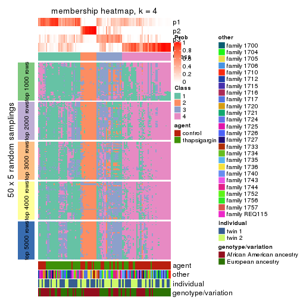
membership_heatmap(res, k = 5)
membership_heatmap(res, k = 6)
As soon as we have had the classes for columns, we can look for signatures which are significantly different between classes which can be candidate marks for certain classes. Following are the heatmaps for signatures.
Signature heatmaps where rows are scaled:
get_signatures(res, k = 2)
get_signatures(res, k = 3)
get_signatures(res, k = 4)
get_signatures(res, k = 5)
get_signatures(res, k = 6)
Signature heatmaps where rows are not scaled:
get_signatures(res, k = 2, scale_rows = FALSE)
get_signatures(res, k = 3, scale_rows = FALSE)
get_signatures(res, k = 4, scale_rows = FALSE)
get_signatures(res, k = 5, scale_rows = FALSE)

get_signatures(res, k = 6, scale_rows = FALSE)
Compare the overlap of signatures from different k:
compare_signatures(res)
get_signature() returns a data frame invisibly. TO get the list of signatures, the function
call should be assigned to a variable explicitly. In following code, if plot argument is set
to FALSE, no heatmap is plotted while only the differential analysis is performed.
# code only for demonstration
tb = get_signature(res, k = ..., plot = FALSE)
An example of the output of tb is:
#> which_row fdr mean_1 mean_2 scaled_mean_1 scaled_mean_2 km
#> 1 38 0.042760348 8.373488 9.131774 -0.5533452 0.5164555 1
#> 2 40 0.018707592 7.106213 8.469186 -0.6173731 0.5762149 1
#> 3 55 0.019134737 10.221463 11.207825 -0.6159697 0.5749050 1
#> 4 59 0.006059896 5.921854 7.869574 -0.6899429 0.6439467 1
#> 5 60 0.018055526 8.928898 10.211722 -0.6204761 0.5791110 1
#> 6 98 0.009384629 15.714769 14.887706 0.6635654 -0.6193277 2
...
The columns in tb are:
which_row: row indices corresponding to the input matrix.fdr: FDR for the differential test. mean_x: The mean value in group x.scaled_mean_x: The mean value in group x after rows are scaled.km: Row groups if k-means clustering is applied to rows.UMAP plot which shows how samples are separated.
dimension_reduction(res, k = 2, method = "UMAP")
dimension_reduction(res, k = 3, method = "UMAP")
dimension_reduction(res, k = 4, method = "UMAP")
dimension_reduction(res, k = 5, method = "UMAP")
dimension_reduction(res, k = 6, method = "UMAP")
Following heatmap shows how subgroups are split when increasing k:
collect_classes(res)
Test correlation between subgroups and known annotations. If the known annotation is numeric, one-way ANOVA test is applied, and if the known annotation is discrete, chi-squared contingency table test is applied.
test_to_known_factors(res)
#> n agent(p) other(p) individual(p) genotype/variation(p) k
#> SD:pam 93 0.511341 2.77e-06 0.275 1.13e-03 2
#> SD:pam 71 0.000014 4.64e-05 0.939 1.06e-04 3
#> SD:pam 53 0.000139 5.81e-04 0.559 1.20e-04 4
#> SD:pam 47 0.000202 1.52e-04 0.300 1.79e-04 5
#> SD:pam 45 0.025871 1.28e-06 0.352 2.91e-06 6
If matrix rows can be associated to genes, consider to use functional_enrichment(res,
...) to perform function enrichment for the signature genes. See this vignette for more detailed explanations.
The object with results only for a single top-value method and a single partition method can be extracted as:
res = res_list["SD", "mclust"]
# you can also extract it by
# res = res_list["SD:mclust"]
A summary of res and all the functions that can be applied to it:
res
#> A 'ConsensusPartition' object with k = 2, 3, 4, 5, 6.
#> On a matrix with 51941 rows and 104 columns.
#> Top rows (1000, 2000, 3000, 4000, 5000) are extracted by 'SD' method.
#> Subgroups are detected by 'mclust' method.
#> Performed in total 1250 partitions by row resampling.
#> Best k for subgroups seems to be 3.
#>
#> Following methods can be applied to this 'ConsensusPartition' object:
#> [1] "cola_report" "collect_classes" "collect_plots"
#> [4] "collect_stats" "colnames" "compare_signatures"
#> [7] "consensus_heatmap" "dimension_reduction" "functional_enrichment"
#> [10] "get_anno_col" "get_anno" "get_classes"
#> [13] "get_consensus" "get_matrix" "get_membership"
#> [16] "get_param" "get_signatures" "get_stats"
#> [19] "is_best_k" "is_stable_k" "membership_heatmap"
#> [22] "ncol" "nrow" "plot_ecdf"
#> [25] "rownames" "select_partition_number" "show"
#> [28] "suggest_best_k" "test_to_known_factors"
collect_plots() function collects all the plots made from res for all k (number of partitions)
into one single page to provide an easy and fast comparison between different k.
collect_plots(res)
The plots are:
k and the heatmap of
predicted classes for each k.k.k.k.All the plots in panels can be made by individual functions and they are plotted later in this section.
select_partition_number() produces several plots showing different
statistics for choosing “optimized” k. There are following statistics:
k;k, the area increased is defined as \(A_k - A_{k-1}\).The detailed explanations of these statistics can be found in the cola vignette.
Generally speaking, lower PAC score, higher mean silhouette score or higher
concordance corresponds to better partition. Rand index and Jaccard index
measure how similar the current partition is compared to partition with k-1.
If they are too similar, we won't accept k is better than k-1.
select_partition_number(res)
The numeric values for all these statistics can be obtained by get_stats().
get_stats(res)
#> k 1-PAC mean_silhouette concordance area_increased Rand Jaccard
#> 2 2 0.748 0.872 0.940 0.4155 0.612 0.612
#> 3 3 0.493 0.576 0.808 0.4265 0.814 0.700
#> 4 4 0.478 0.397 0.685 0.1763 0.761 0.510
#> 5 5 0.541 0.475 0.667 0.0981 0.818 0.470
#> 6 6 0.555 0.418 0.667 0.0499 0.888 0.565
suggest_best_k() suggests the best \(k\) based on these statistics. The rules are as follows:
suggest_best_k(res)
#> [1] 3
Following shows the table of the partitions (You need to click the show/hide
code output link to see it). The membership matrix (columns with name p*)
is inferred by
clue::cl_consensus()
function with the SE method. Basically the value in the membership matrix
represents the probability to belong to a certain group. The finall class
label for an item is determined with the group with highest probability it
belongs to.
In get_classes() function, the entropy is calculated from the membership
matrix and the silhouette score is calculated from the consensus matrix.
cbind(get_classes(res, k = 2), get_membership(res, k = 2))
#> class entropy silhouette p1 p2
#> GSM494452 1 0.0000 0.924 1.000 0.000
#> GSM494454 1 0.0000 0.924 1.000 0.000
#> GSM494456 2 0.0672 0.966 0.008 0.992
#> GSM494458 2 0.0672 0.966 0.008 0.992
#> GSM494460 1 0.0672 0.921 0.992 0.008
#> GSM494462 1 0.0938 0.919 0.988 0.012
#> GSM494464 1 0.1414 0.911 0.980 0.020
#> GSM494466 2 0.0672 0.966 0.008 0.992
#> GSM494468 1 0.0000 0.924 1.000 0.000
#> GSM494470 1 0.0000 0.924 1.000 0.000
#> GSM494472 1 0.0000 0.924 1.000 0.000
#> GSM494474 1 0.0000 0.924 1.000 0.000
#> GSM494476 2 0.0672 0.966 0.008 0.992
#> GSM494478 2 0.8955 0.515 0.312 0.688
#> GSM494480 1 0.0000 0.924 1.000 0.000
#> GSM494482 1 0.0000 0.924 1.000 0.000
#> GSM494484 2 0.0672 0.966 0.008 0.992
#> GSM494486 2 0.0672 0.966 0.008 0.992
#> GSM494488 1 0.0376 0.923 0.996 0.004
#> GSM494490 2 0.2778 0.936 0.048 0.952
#> GSM494492 1 0.0000 0.924 1.000 0.000
#> GSM494494 2 0.1184 0.961 0.016 0.984
#> GSM494496 1 0.9044 0.589 0.680 0.320
#> GSM494498 2 0.0000 0.960 0.000 1.000
#> GSM494500 1 0.0000 0.924 1.000 0.000
#> GSM494502 1 0.0000 0.924 1.000 0.000
#> GSM494504 1 0.0000 0.924 1.000 0.000
#> GSM494506 1 0.0000 0.924 1.000 0.000
#> GSM494508 2 0.3431 0.915 0.064 0.936
#> GSM494510 2 0.0000 0.960 0.000 1.000
#> GSM494512 1 0.9323 0.544 0.652 0.348
#> GSM494514 1 0.9323 0.544 0.652 0.348
#> GSM494516 1 0.0000 0.924 1.000 0.000
#> GSM494518 1 0.0000 0.924 1.000 0.000
#> GSM494520 1 0.0000 0.924 1.000 0.000
#> GSM494522 1 0.0000 0.924 1.000 0.000
#> GSM494524 2 0.0938 0.964 0.012 0.988
#> GSM494526 1 0.0000 0.924 1.000 0.000
#> GSM494528 1 0.0000 0.924 1.000 0.000
#> GSM494530 1 0.2423 0.899 0.960 0.040
#> GSM494532 1 0.0000 0.924 1.000 0.000
#> GSM494534 1 0.0000 0.924 1.000 0.000
#> GSM494536 1 0.0000 0.924 1.000 0.000
#> GSM494538 1 0.0000 0.924 1.000 0.000
#> GSM494540 1 0.0000 0.924 1.000 0.000
#> GSM494542 1 0.0000 0.924 1.000 0.000
#> GSM494544 1 0.9323 0.544 0.652 0.348
#> GSM494546 1 0.9552 0.487 0.624 0.376
#> GSM494548 1 0.9323 0.544 0.652 0.348
#> GSM494550 1 0.9323 0.544 0.652 0.348
#> GSM494552 1 0.1843 0.908 0.972 0.028
#> GSM494554 1 0.0672 0.921 0.992 0.008
#> GSM494453 1 0.0000 0.924 1.000 0.000
#> GSM494455 1 0.0000 0.924 1.000 0.000
#> GSM494457 2 0.0672 0.966 0.008 0.992
#> GSM494459 2 0.0672 0.966 0.008 0.992
#> GSM494461 1 0.0672 0.921 0.992 0.008
#> GSM494463 1 0.0672 0.921 0.992 0.008
#> GSM494465 1 0.7674 0.710 0.776 0.224
#> GSM494467 2 0.0672 0.966 0.008 0.992
#> GSM494469 1 0.0000 0.924 1.000 0.000
#> GSM494471 1 0.0000 0.924 1.000 0.000
#> GSM494473 1 0.0000 0.924 1.000 0.000
#> GSM494475 1 0.0000 0.924 1.000 0.000
#> GSM494477 2 0.0672 0.966 0.008 0.992
#> GSM494479 2 0.5059 0.867 0.112 0.888
#> GSM494481 1 0.0376 0.922 0.996 0.004
#> GSM494483 1 0.0000 0.924 1.000 0.000
#> GSM494485 2 0.0672 0.966 0.008 0.992
#> GSM494487 2 0.0672 0.966 0.008 0.992
#> GSM494489 1 0.0672 0.921 0.992 0.008
#> GSM494491 2 0.0672 0.966 0.008 0.992
#> GSM494493 1 0.0000 0.924 1.000 0.000
#> GSM494495 2 0.0672 0.966 0.008 0.992
#> GSM494497 1 0.9209 0.564 0.664 0.336
#> GSM494499 2 0.0000 0.960 0.000 1.000
#> GSM494501 1 0.0000 0.924 1.000 0.000
#> GSM494503 1 0.0000 0.924 1.000 0.000
#> GSM494505 1 0.0000 0.924 1.000 0.000
#> GSM494507 1 0.0376 0.922 0.996 0.004
#> GSM494509 2 0.1414 0.954 0.020 0.980
#> GSM494511 2 0.0000 0.960 0.000 1.000
#> GSM494513 1 0.9323 0.544 0.652 0.348
#> GSM494515 1 0.9323 0.544 0.652 0.348
#> GSM494517 1 0.0000 0.924 1.000 0.000
#> GSM494519 1 0.0000 0.924 1.000 0.000
#> GSM494521 1 0.0000 0.924 1.000 0.000
#> GSM494523 1 0.0000 0.924 1.000 0.000
#> GSM494525 2 0.0672 0.966 0.008 0.992
#> GSM494527 1 0.0000 0.924 1.000 0.000
#> GSM494529 1 0.0000 0.924 1.000 0.000
#> GSM494531 1 0.1843 0.908 0.972 0.028
#> GSM494533 1 0.8909 0.599 0.692 0.308
#> GSM494535 1 0.0672 0.921 0.992 0.008
#> GSM494537 1 0.0000 0.924 1.000 0.000
#> GSM494539 1 0.0000 0.924 1.000 0.000
#> GSM494541 1 0.0000 0.924 1.000 0.000
#> GSM494543 1 0.0000 0.924 1.000 0.000
#> GSM494545 1 0.9323 0.544 0.652 0.348
#> GSM494547 2 0.7528 0.703 0.216 0.784
#> GSM494549 1 0.9358 0.537 0.648 0.352
#> GSM494551 1 0.9358 0.537 0.648 0.352
#> GSM494553 1 0.1843 0.908 0.972 0.028
#> GSM494555 1 0.0672 0.921 0.992 0.008
cbind(get_classes(res, k = 3), get_membership(res, k = 3))
#> class entropy silhouette p1 p2 p3
#> GSM494452 1 0.3619 0.6897 0.864 0.000 0.136
#> GSM494454 1 0.3551 0.6914 0.868 0.000 0.132
#> GSM494456 2 0.0237 0.8943 0.004 0.996 0.000
#> GSM494458 2 0.0237 0.8943 0.004 0.996 0.000
#> GSM494460 1 0.1170 0.7069 0.976 0.016 0.008
#> GSM494462 1 0.1905 0.6989 0.956 0.016 0.028
#> GSM494464 1 0.3826 0.6927 0.868 0.008 0.124
#> GSM494466 2 0.0237 0.8943 0.004 0.996 0.000
#> GSM494468 1 0.3644 0.6933 0.872 0.004 0.124
#> GSM494470 1 0.3551 0.6913 0.868 0.000 0.132
#> GSM494472 1 0.3619 0.6897 0.864 0.000 0.136
#> GSM494474 1 0.3619 0.6897 0.864 0.000 0.136
#> GSM494476 2 0.0237 0.8943 0.004 0.996 0.000
#> GSM494478 2 0.7075 0.0642 0.484 0.496 0.020
#> GSM494480 1 0.3918 0.6899 0.856 0.004 0.140
#> GSM494482 1 0.3644 0.6933 0.872 0.004 0.124
#> GSM494484 2 0.0237 0.8943 0.004 0.996 0.000
#> GSM494486 2 0.0237 0.8943 0.004 0.996 0.000
#> GSM494488 1 0.3826 0.6925 0.868 0.008 0.124
#> GSM494490 2 0.3045 0.8322 0.064 0.916 0.020
#> GSM494492 1 0.4784 0.6607 0.796 0.004 0.200
#> GSM494494 2 0.0747 0.8857 0.016 0.984 0.000
#> GSM494496 1 0.6062 0.3059 0.708 0.016 0.276
#> GSM494498 2 0.4293 0.7751 0.004 0.832 0.164
#> GSM494500 1 0.4842 0.6594 0.776 0.000 0.224
#> GSM494502 1 0.6308 0.3057 0.508 0.000 0.492
#> GSM494504 1 0.6307 0.3146 0.512 0.000 0.488
#> GSM494506 3 0.6309 -0.3389 0.500 0.000 0.500
#> GSM494508 3 0.6057 0.1575 0.004 0.340 0.656
#> GSM494510 2 0.6483 0.3792 0.004 0.544 0.452
#> GSM494512 3 0.3091 0.6420 0.072 0.016 0.912
#> GSM494514 1 0.7069 -0.1440 0.508 0.020 0.472
#> GSM494516 1 0.6307 0.3146 0.512 0.000 0.488
#> GSM494518 1 0.6307 0.3146 0.512 0.000 0.488
#> GSM494520 1 0.3752 0.6933 0.856 0.000 0.144
#> GSM494522 3 0.6309 -0.3389 0.500 0.000 0.500
#> GSM494524 2 0.0237 0.8943 0.004 0.996 0.000
#> GSM494526 1 0.3619 0.6897 0.864 0.000 0.136
#> GSM494528 1 0.6204 0.4237 0.576 0.000 0.424
#> GSM494530 1 0.2550 0.7136 0.932 0.012 0.056
#> GSM494532 1 0.6309 0.2951 0.504 0.000 0.496
#> GSM494534 3 0.6309 -0.3310 0.496 0.000 0.504
#> GSM494536 1 0.6180 0.4387 0.584 0.000 0.416
#> GSM494538 1 0.6307 0.3146 0.512 0.000 0.488
#> GSM494540 1 0.6309 0.2862 0.500 0.000 0.500
#> GSM494542 1 0.6307 0.3146 0.512 0.000 0.488
#> GSM494544 3 0.5008 0.5495 0.180 0.016 0.804
#> GSM494546 3 0.3692 0.6583 0.056 0.048 0.896
#> GSM494548 3 0.2383 0.6488 0.044 0.016 0.940
#> GSM494550 3 0.2599 0.6486 0.052 0.016 0.932
#> GSM494552 1 0.1774 0.6978 0.960 0.016 0.024
#> GSM494554 1 0.2749 0.7086 0.924 0.012 0.064
#> GSM494453 1 0.0000 0.7079 1.000 0.000 0.000
#> GSM494455 1 0.0424 0.7058 0.992 0.000 0.008
#> GSM494457 2 0.0237 0.8943 0.004 0.996 0.000
#> GSM494459 2 0.0237 0.8943 0.004 0.996 0.000
#> GSM494461 1 0.2152 0.6982 0.948 0.016 0.036
#> GSM494463 1 0.1905 0.6968 0.956 0.016 0.028
#> GSM494465 1 0.2902 0.6820 0.920 0.064 0.016
#> GSM494467 2 0.0237 0.8943 0.004 0.996 0.000
#> GSM494469 1 0.0475 0.7070 0.992 0.004 0.004
#> GSM494471 1 0.0237 0.7066 0.996 0.000 0.004
#> GSM494473 1 0.0592 0.7106 0.988 0.000 0.012
#> GSM494475 1 0.0000 0.7079 1.000 0.000 0.000
#> GSM494477 2 0.0237 0.8943 0.004 0.996 0.000
#> GSM494479 2 0.5536 0.6066 0.236 0.752 0.012
#> GSM494481 1 0.1636 0.7091 0.964 0.016 0.020
#> GSM494483 1 0.2200 0.7019 0.940 0.004 0.056
#> GSM494485 2 0.0237 0.8943 0.004 0.996 0.000
#> GSM494487 2 0.0237 0.8943 0.004 0.996 0.000
#> GSM494489 1 0.1905 0.6968 0.956 0.016 0.028
#> GSM494491 2 0.2773 0.8511 0.048 0.928 0.024
#> GSM494493 1 0.2866 0.6925 0.916 0.008 0.076
#> GSM494495 2 0.0424 0.8918 0.008 0.992 0.000
#> GSM494497 1 0.6193 0.2771 0.692 0.016 0.292
#> GSM494499 2 0.3918 0.7975 0.004 0.856 0.140
#> GSM494501 1 0.4575 0.6195 0.812 0.004 0.184
#> GSM494503 1 0.6057 0.4338 0.656 0.004 0.340
#> GSM494505 1 0.5553 0.5228 0.724 0.004 0.272
#> GSM494507 1 0.6314 0.3406 0.604 0.004 0.392
#> GSM494509 3 0.6600 0.0116 0.012 0.384 0.604
#> GSM494511 2 0.6505 0.3399 0.004 0.528 0.468
#> GSM494513 3 0.4615 0.6515 0.144 0.020 0.836
#> GSM494515 3 0.6910 0.3125 0.396 0.020 0.584
#> GSM494517 1 0.5588 0.5178 0.720 0.004 0.276
#> GSM494519 1 0.6282 0.3618 0.612 0.004 0.384
#> GSM494521 1 0.2796 0.6909 0.908 0.000 0.092
#> GSM494523 1 0.6282 0.3618 0.612 0.004 0.384
#> GSM494525 2 0.0237 0.8943 0.004 0.996 0.000
#> GSM494527 1 0.0000 0.7079 1.000 0.000 0.000
#> GSM494529 1 0.4521 0.6436 0.816 0.004 0.180
#> GSM494531 1 0.1905 0.6968 0.956 0.016 0.028
#> GSM494533 3 0.7395 -0.1089 0.476 0.032 0.492
#> GSM494535 1 0.6745 0.2924 0.560 0.012 0.428
#> GSM494537 1 0.5244 0.5623 0.756 0.004 0.240
#> GSM494539 1 0.5929 0.4534 0.676 0.004 0.320
#> GSM494541 1 0.6330 0.3452 0.600 0.004 0.396
#> GSM494543 1 0.6345 0.3076 0.596 0.004 0.400
#> GSM494545 3 0.5147 0.6327 0.180 0.020 0.800
#> GSM494547 3 0.5260 0.6235 0.080 0.092 0.828
#> GSM494549 3 0.4615 0.6515 0.144 0.020 0.836
#> GSM494551 3 0.4551 0.6533 0.140 0.020 0.840
#> GSM494553 1 0.1905 0.6968 0.956 0.016 0.028
#> GSM494555 1 0.1905 0.6968 0.956 0.016 0.028
cbind(get_classes(res, k = 4), get_membership(res, k = 4))
#> class entropy silhouette p1 p2 p3 p4
#> GSM494452 1 0.4955 0.0617 0.556 0.000 0.000 0.444
#> GSM494454 1 0.4933 0.0813 0.568 0.000 0.000 0.432
#> GSM494456 2 0.0336 0.9111 0.000 0.992 0.008 0.000
#> GSM494458 2 0.0000 0.9112 0.000 1.000 0.000 0.000
#> GSM494460 1 0.3108 0.5366 0.872 0.000 0.016 0.112
#> GSM494462 1 0.3390 0.5332 0.852 0.000 0.016 0.132
#> GSM494464 4 0.5404 0.0566 0.476 0.000 0.012 0.512
#> GSM494466 2 0.0927 0.9083 0.000 0.976 0.016 0.008
#> GSM494468 4 0.5408 0.0348 0.488 0.000 0.012 0.500
#> GSM494470 1 0.4941 0.0865 0.564 0.000 0.000 0.436
#> GSM494472 1 0.4967 0.0425 0.548 0.000 0.000 0.452
#> GSM494474 1 0.4955 0.0623 0.556 0.000 0.000 0.444
#> GSM494476 2 0.0000 0.9112 0.000 1.000 0.000 0.000
#> GSM494478 1 0.8705 0.1535 0.360 0.336 0.036 0.268
#> GSM494480 4 0.5189 0.2475 0.372 0.000 0.012 0.616
#> GSM494482 4 0.5409 0.0278 0.492 0.000 0.012 0.496
#> GSM494484 2 0.0188 0.9111 0.000 0.996 0.000 0.004
#> GSM494486 2 0.0376 0.9114 0.000 0.992 0.004 0.004
#> GSM494488 1 0.5112 0.0725 0.560 0.000 0.004 0.436
#> GSM494490 2 0.4900 0.8005 0.016 0.800 0.072 0.112
#> GSM494492 1 0.6792 -0.1890 0.476 0.000 0.096 0.428
#> GSM494494 2 0.2307 0.8906 0.008 0.928 0.016 0.048
#> GSM494496 1 0.6116 0.2226 0.612 0.000 0.320 0.068
#> GSM494498 2 0.5195 0.6243 0.000 0.692 0.276 0.032
#> GSM494500 4 0.6443 0.2453 0.400 0.000 0.072 0.528
#> GSM494502 4 0.7581 0.6149 0.200 0.000 0.360 0.440
#> GSM494504 4 0.7751 0.6146 0.240 0.000 0.344 0.416
#> GSM494506 4 0.7586 0.5877 0.196 0.000 0.388 0.416
#> GSM494508 3 0.5935 0.2434 0.004 0.268 0.664 0.064
#> GSM494510 3 0.6360 -0.1599 0.000 0.420 0.516 0.064
#> GSM494512 3 0.3577 0.4203 0.012 0.000 0.832 0.156
#> GSM494514 1 0.6686 0.1128 0.520 0.000 0.388 0.092
#> GSM494516 4 0.7830 0.6020 0.268 0.000 0.332 0.400
#> GSM494518 3 0.7921 -0.5960 0.328 0.000 0.348 0.324
#> GSM494520 1 0.5821 0.0156 0.536 0.000 0.032 0.432
#> GSM494522 4 0.7558 0.5951 0.192 0.000 0.380 0.428
#> GSM494524 2 0.0927 0.9083 0.000 0.976 0.016 0.008
#> GSM494526 1 0.4955 0.0623 0.556 0.000 0.000 0.444
#> GSM494528 4 0.7140 0.5864 0.236 0.000 0.204 0.560
#> GSM494530 1 0.6065 0.4125 0.644 0.000 0.080 0.276
#> GSM494532 4 0.7847 0.5788 0.192 0.008 0.384 0.416
#> GSM494534 4 0.7801 0.6132 0.208 0.004 0.372 0.416
#> GSM494536 1 0.7747 -0.4589 0.384 0.000 0.232 0.384
#> GSM494538 4 0.7847 0.6001 0.276 0.000 0.328 0.396
#> GSM494540 4 0.7602 0.5982 0.200 0.000 0.380 0.420
#> GSM494542 4 0.7597 0.6176 0.204 0.000 0.356 0.440
#> GSM494544 3 0.5356 0.2958 0.072 0.000 0.728 0.200
#> GSM494546 3 0.1816 0.5057 0.004 0.024 0.948 0.024
#> GSM494548 3 0.3105 0.4419 0.004 0.000 0.856 0.140
#> GSM494550 3 0.3306 0.4272 0.004 0.000 0.840 0.156
#> GSM494552 1 0.4225 0.5136 0.792 0.000 0.024 0.184
#> GSM494554 1 0.5252 0.2607 0.644 0.000 0.020 0.336
#> GSM494453 1 0.2662 0.5213 0.900 0.000 0.016 0.084
#> GSM494455 1 0.2399 0.5402 0.920 0.000 0.032 0.048
#> GSM494457 2 0.0188 0.9111 0.000 0.996 0.000 0.004
#> GSM494459 2 0.0188 0.9111 0.000 0.996 0.000 0.004
#> GSM494461 1 0.3743 0.5156 0.824 0.000 0.016 0.160
#> GSM494463 1 0.3647 0.5149 0.832 0.000 0.016 0.152
#> GSM494465 1 0.5266 0.4872 0.784 0.024 0.092 0.100
#> GSM494467 2 0.1388 0.9038 0.000 0.960 0.012 0.028
#> GSM494469 1 0.4004 0.4993 0.836 0.004 0.040 0.120
#> GSM494471 1 0.1174 0.5396 0.968 0.000 0.012 0.020
#> GSM494473 1 0.3606 0.4729 0.840 0.000 0.020 0.140
#> GSM494475 1 0.2329 0.5297 0.916 0.000 0.012 0.072
#> GSM494477 2 0.0188 0.9111 0.000 0.996 0.000 0.004
#> GSM494479 2 0.7416 0.2160 0.404 0.476 0.020 0.100
#> GSM494481 1 0.5257 0.4532 0.756 0.004 0.080 0.160
#> GSM494483 1 0.5406 0.4401 0.752 0.004 0.128 0.116
#> GSM494485 2 0.0188 0.9111 0.000 0.996 0.000 0.004
#> GSM494487 2 0.0188 0.9111 0.000 0.996 0.000 0.004
#> GSM494489 1 0.3708 0.5225 0.832 0.000 0.020 0.148
#> GSM494491 2 0.4362 0.8175 0.000 0.816 0.096 0.088
#> GSM494493 1 0.5008 0.4701 0.780 0.004 0.124 0.092
#> GSM494495 2 0.2156 0.8908 0.004 0.928 0.008 0.060
#> GSM494497 1 0.6202 0.2249 0.612 0.000 0.312 0.076
#> GSM494499 2 0.5052 0.6677 0.000 0.720 0.244 0.036
#> GSM494501 1 0.5690 0.3827 0.716 0.000 0.168 0.116
#> GSM494503 1 0.6766 -0.0546 0.520 0.000 0.380 0.100
#> GSM494505 1 0.5664 0.3416 0.696 0.000 0.228 0.076
#> GSM494507 3 0.6990 -0.1760 0.408 0.000 0.476 0.116
#> GSM494509 3 0.5648 0.2286 0.004 0.268 0.680 0.048
#> GSM494511 3 0.6179 -0.0960 0.000 0.392 0.552 0.056
#> GSM494513 3 0.1022 0.5118 0.032 0.000 0.968 0.000
#> GSM494515 1 0.6718 0.1153 0.524 0.000 0.380 0.096
#> GSM494517 1 0.6056 0.2915 0.660 0.000 0.248 0.092
#> GSM494519 1 0.6748 -0.1864 0.476 0.000 0.432 0.092
#> GSM494521 1 0.4336 0.4739 0.812 0.000 0.128 0.060
#> GSM494523 3 0.7187 -0.2268 0.424 0.000 0.440 0.136
#> GSM494525 2 0.0804 0.9092 0.000 0.980 0.012 0.008
#> GSM494527 1 0.2124 0.5293 0.924 0.000 0.008 0.068
#> GSM494529 1 0.6621 0.1777 0.616 0.000 0.244 0.140
#> GSM494531 1 0.4182 0.5040 0.796 0.000 0.024 0.180
#> GSM494533 3 0.7131 -0.0430 0.272 0.012 0.584 0.132
#> GSM494535 3 0.7282 -0.2133 0.348 0.000 0.492 0.160
#> GSM494537 1 0.6054 0.2743 0.656 0.000 0.256 0.088
#> GSM494539 1 0.6500 0.1177 0.580 0.000 0.328 0.092
#> GSM494541 3 0.7423 -0.2356 0.344 0.000 0.476 0.180
#> GSM494543 3 0.7003 -0.1585 0.424 0.000 0.460 0.116
#> GSM494545 3 0.4188 0.4439 0.148 0.000 0.812 0.040
#> GSM494547 3 0.2730 0.5091 0.020 0.036 0.916 0.028
#> GSM494549 3 0.0921 0.5124 0.028 0.000 0.972 0.000
#> GSM494551 3 0.0921 0.5124 0.028 0.000 0.972 0.000
#> GSM494553 1 0.4095 0.5051 0.804 0.000 0.024 0.172
#> GSM494555 1 0.3443 0.5254 0.848 0.000 0.016 0.136
cbind(get_classes(res, k = 5), get_membership(res, k = 5))
#> class entropy silhouette p1 p2 p3 p4 p5
#> GSM494452 5 0.5778 0.6376 0.376 0.000 0.000 0.096 0.528
#> GSM494454 5 0.5632 0.6233 0.392 0.000 0.000 0.080 0.528
#> GSM494456 2 0.0451 0.8738 0.000 0.988 0.004 0.000 0.008
#> GSM494458 2 0.0162 0.8733 0.000 0.996 0.004 0.000 0.000
#> GSM494460 1 0.4180 0.5139 0.804 0.000 0.076 0.016 0.104
#> GSM494462 1 0.4761 0.5412 0.740 0.000 0.172 0.008 0.080
#> GSM494464 5 0.6376 0.5989 0.308 0.000 0.000 0.192 0.500
#> GSM494466 2 0.1340 0.8709 0.004 0.960 0.016 0.004 0.016
#> GSM494468 5 0.6035 0.6338 0.340 0.000 0.000 0.132 0.528
#> GSM494470 5 0.5913 0.6291 0.380 0.000 0.008 0.084 0.528
#> GSM494472 5 0.5820 0.6410 0.376 0.000 0.000 0.100 0.524
#> GSM494474 5 0.5794 0.6371 0.384 0.000 0.000 0.096 0.520
#> GSM494476 2 0.0162 0.8733 0.000 0.996 0.004 0.000 0.000
#> GSM494478 5 0.7923 0.0996 0.144 0.368 0.084 0.012 0.392
#> GSM494480 5 0.6024 0.2749 0.116 0.000 0.000 0.412 0.472
#> GSM494482 5 0.6080 0.6342 0.344 0.000 0.000 0.136 0.520
#> GSM494484 2 0.0000 0.8736 0.000 1.000 0.000 0.000 0.000
#> GSM494486 2 0.0162 0.8737 0.000 0.996 0.004 0.000 0.000
#> GSM494488 5 0.5791 0.6149 0.400 0.000 0.004 0.080 0.516
#> GSM494490 2 0.4708 0.7919 0.016 0.800 0.068 0.060 0.056
#> GSM494492 5 0.6722 0.5715 0.364 0.000 0.008 0.188 0.440
#> GSM494494 2 0.2246 0.8589 0.004 0.920 0.048 0.008 0.020
#> GSM494496 1 0.6678 0.3085 0.548 0.000 0.184 0.024 0.244
#> GSM494498 2 0.5625 0.6374 0.000 0.656 0.068 0.028 0.248
#> GSM494500 4 0.7282 -0.3145 0.252 0.000 0.024 0.376 0.348
#> GSM494502 4 0.1117 0.6232 0.020 0.000 0.000 0.964 0.016
#> GSM494504 4 0.2079 0.6090 0.064 0.000 0.000 0.916 0.020
#> GSM494506 4 0.1267 0.6243 0.024 0.000 0.012 0.960 0.004
#> GSM494508 5 0.7416 -0.3721 0.000 0.356 0.160 0.060 0.424
#> GSM494510 2 0.6738 0.3137 0.000 0.436 0.132 0.024 0.408
#> GSM494512 4 0.5822 0.2858 0.000 0.000 0.108 0.548 0.344
#> GSM494514 1 0.7595 0.0784 0.440 0.000 0.236 0.060 0.264
#> GSM494516 4 0.3159 0.5829 0.088 0.000 0.000 0.856 0.056
#> GSM494518 4 0.3496 0.4786 0.200 0.000 0.000 0.788 0.012
#> GSM494520 5 0.6611 0.5832 0.404 0.000 0.012 0.148 0.436
#> GSM494522 4 0.1173 0.6228 0.020 0.000 0.012 0.964 0.004
#> GSM494524 2 0.1721 0.8682 0.004 0.944 0.028 0.004 0.020
#> GSM494526 5 0.5882 0.6363 0.376 0.000 0.004 0.092 0.528
#> GSM494528 4 0.3966 0.5305 0.036 0.000 0.004 0.784 0.176
#> GSM494530 1 0.6560 0.4475 0.628 0.000 0.080 0.140 0.152
#> GSM494532 4 0.1815 0.6166 0.020 0.000 0.016 0.940 0.024
#> GSM494534 4 0.1518 0.6229 0.020 0.000 0.016 0.952 0.012
#> GSM494536 4 0.6318 0.1974 0.260 0.000 0.016 0.576 0.148
#> GSM494538 4 0.2848 0.5820 0.104 0.000 0.000 0.868 0.028
#> GSM494540 4 0.1267 0.6243 0.024 0.000 0.012 0.960 0.004
#> GSM494542 4 0.1124 0.6217 0.036 0.000 0.000 0.960 0.004
#> GSM494544 4 0.5952 0.3186 0.032 0.000 0.056 0.572 0.340
#> GSM494546 4 0.7349 0.1241 0.000 0.068 0.132 0.412 0.388
#> GSM494548 4 0.5862 0.2804 0.000 0.000 0.112 0.544 0.344
#> GSM494550 4 0.5851 0.2855 0.000 0.000 0.112 0.548 0.340
#> GSM494552 1 0.5197 0.5174 0.652 0.000 0.284 0.008 0.056
#> GSM494554 1 0.6400 -0.1366 0.552 0.000 0.040 0.084 0.324
#> GSM494453 1 0.3090 0.5059 0.860 0.000 0.004 0.032 0.104
#> GSM494455 1 0.2355 0.5667 0.916 0.000 0.036 0.024 0.024
#> GSM494457 2 0.0000 0.8736 0.000 1.000 0.000 0.000 0.000
#> GSM494459 2 0.0000 0.8736 0.000 1.000 0.000 0.000 0.000
#> GSM494461 1 0.3884 0.5230 0.708 0.000 0.288 0.000 0.004
#> GSM494463 1 0.4734 0.5065 0.652 0.000 0.312 0.000 0.036
#> GSM494465 1 0.5768 0.5073 0.740 0.044 0.076 0.072 0.068
#> GSM494467 2 0.0960 0.8730 0.000 0.972 0.008 0.004 0.016
#> GSM494469 1 0.3515 0.5394 0.856 0.000 0.032 0.052 0.060
#> GSM494471 1 0.1356 0.5671 0.956 0.000 0.012 0.028 0.004
#> GSM494473 1 0.3682 0.4657 0.828 0.000 0.012 0.040 0.120
#> GSM494475 1 0.2906 0.5256 0.880 0.000 0.012 0.028 0.080
#> GSM494477 2 0.0000 0.8736 0.000 1.000 0.000 0.000 0.000
#> GSM494479 2 0.7176 0.2918 0.296 0.520 0.120 0.008 0.056
#> GSM494481 1 0.5584 0.4938 0.728 0.004 0.080 0.084 0.104
#> GSM494483 1 0.5371 0.5048 0.724 0.000 0.148 0.080 0.048
#> GSM494485 2 0.0000 0.8736 0.000 1.000 0.000 0.000 0.000
#> GSM494487 2 0.0000 0.8736 0.000 1.000 0.000 0.000 0.000
#> GSM494489 1 0.4070 0.5389 0.728 0.000 0.256 0.004 0.012
#> GSM494491 2 0.4389 0.8025 0.008 0.808 0.092 0.028 0.064
#> GSM494493 1 0.5560 0.4872 0.704 0.000 0.164 0.088 0.044
#> GSM494495 2 0.1729 0.8661 0.004 0.944 0.032 0.008 0.012
#> GSM494497 1 0.6800 0.2890 0.528 0.000 0.200 0.024 0.248
#> GSM494499 2 0.5354 0.6795 0.000 0.696 0.068 0.028 0.208
#> GSM494501 1 0.6240 0.2464 0.592 0.000 0.188 0.208 0.012
#> GSM494503 3 0.7014 0.3535 0.344 0.000 0.372 0.276 0.008
#> GSM494505 1 0.6554 -0.1349 0.480 0.000 0.348 0.164 0.008
#> GSM494507 3 0.6948 0.4362 0.272 0.000 0.420 0.300 0.008
#> GSM494509 5 0.7234 -0.3288 0.000 0.324 0.224 0.028 0.424
#> GSM494511 2 0.6824 0.2889 0.000 0.420 0.144 0.024 0.412
#> GSM494513 3 0.6029 0.4117 0.004 0.000 0.520 0.108 0.368
#> GSM494515 3 0.7590 0.0871 0.320 0.000 0.372 0.044 0.264
#> GSM494517 1 0.6684 -0.1847 0.456 0.000 0.352 0.184 0.008
#> GSM494519 3 0.6978 0.3911 0.332 0.000 0.396 0.264 0.008
#> GSM494521 1 0.4363 0.5332 0.788 0.000 0.124 0.072 0.016
#> GSM494523 3 0.6873 0.4303 0.284 0.000 0.412 0.300 0.004
#> GSM494525 2 0.1340 0.8711 0.004 0.960 0.016 0.004 0.016
#> GSM494527 1 0.2824 0.5332 0.880 0.000 0.008 0.024 0.088
#> GSM494529 1 0.6242 0.3632 0.632 0.000 0.152 0.180 0.036
#> GSM494531 1 0.4513 0.5298 0.688 0.000 0.284 0.024 0.004
#> GSM494533 3 0.8144 0.2948 0.104 0.056 0.424 0.348 0.068
#> GSM494535 4 0.6843 -0.2809 0.140 0.004 0.380 0.456 0.020
#> GSM494537 1 0.6630 -0.0860 0.488 0.000 0.316 0.188 0.008
#> GSM494539 3 0.6759 0.3470 0.360 0.000 0.416 0.220 0.004
#> GSM494541 4 0.6694 -0.3850 0.200 0.000 0.396 0.400 0.004
#> GSM494543 3 0.6952 0.4464 0.292 0.000 0.420 0.280 0.008
#> GSM494545 3 0.6455 0.4276 0.032 0.000 0.556 0.108 0.304
#> GSM494547 3 0.6778 0.3120 0.000 0.092 0.440 0.048 0.420
#> GSM494549 3 0.5960 0.4071 0.000 0.000 0.516 0.116 0.368
#> GSM494551 3 0.6059 0.4120 0.004 0.000 0.520 0.112 0.364
#> GSM494553 1 0.4790 0.5031 0.640 0.000 0.332 0.012 0.016
#> GSM494555 1 0.4380 0.5490 0.728 0.000 0.240 0.020 0.012
cbind(get_classes(res, k = 6), get_membership(res, k = 6))
#> class entropy silhouette p1 p2 p3 p4 p5 p6
#> GSM494452 5 0.2307 0.8132 0.048 0.000 0.000 0.032 0.904 0.016
#> GSM494454 5 0.2688 0.7993 0.044 0.000 0.000 0.024 0.884 0.048
#> GSM494456 2 0.0582 0.4977 0.004 0.984 0.004 0.004 0.004 0.000
#> GSM494458 2 0.0551 0.4976 0.000 0.984 0.000 0.004 0.004 0.008
#> GSM494460 1 0.4863 0.5442 0.640 0.000 0.016 0.008 0.300 0.036
#> GSM494462 1 0.3701 0.5917 0.792 0.000 0.012 0.004 0.160 0.032
#> GSM494464 5 0.3957 0.7722 0.052 0.000 0.004 0.152 0.780 0.012
#> GSM494466 2 0.1159 0.4914 0.004 0.964 0.012 0.004 0.004 0.012
#> GSM494468 5 0.2438 0.8185 0.020 0.000 0.004 0.076 0.892 0.008
#> GSM494470 5 0.2231 0.8101 0.016 0.000 0.000 0.028 0.908 0.048
#> GSM494472 5 0.2078 0.8137 0.004 0.000 0.000 0.040 0.912 0.044
#> GSM494474 5 0.2313 0.8139 0.016 0.000 0.000 0.036 0.904 0.044
#> GSM494476 2 0.0405 0.4976 0.000 0.988 0.000 0.004 0.000 0.008
#> GSM494478 2 0.6926 -0.0134 0.112 0.432 0.024 0.008 0.380 0.044
#> GSM494480 5 0.4897 0.3738 0.036 0.000 0.004 0.408 0.544 0.008
#> GSM494482 5 0.2501 0.8182 0.028 0.000 0.000 0.072 0.888 0.012
#> GSM494484 2 0.2823 0.3200 0.000 0.796 0.000 0.000 0.000 0.204
#> GSM494486 2 0.1858 0.4518 0.004 0.904 0.000 0.000 0.000 0.092
#> GSM494488 5 0.3051 0.7813 0.088 0.000 0.000 0.032 0.856 0.024
#> GSM494490 2 0.4851 0.2348 0.024 0.776 0.052 0.056 0.020 0.072
#> GSM494492 5 0.3931 0.7643 0.048 0.000 0.012 0.144 0.788 0.008
#> GSM494494 2 0.1879 0.4719 0.016 0.936 0.012 0.008 0.008 0.020
#> GSM494496 1 0.5781 0.3763 0.616 0.000 0.196 0.008 0.024 0.156
#> GSM494498 2 0.4841 -0.1028 0.000 0.660 0.236 0.000 0.004 0.100
#> GSM494500 5 0.5971 0.5101 0.080 0.000 0.028 0.276 0.588 0.028
#> GSM494502 4 0.0508 0.7334 0.000 0.000 0.004 0.984 0.012 0.000
#> GSM494504 4 0.2455 0.7007 0.000 0.000 0.004 0.872 0.112 0.012
#> GSM494506 4 0.0810 0.7327 0.008 0.000 0.008 0.976 0.004 0.004
#> GSM494508 3 0.6787 -0.1076 0.004 0.304 0.488 0.092 0.004 0.108
#> GSM494510 3 0.6019 -0.2941 0.004 0.300 0.464 0.000 0.000 0.232
#> GSM494512 4 0.4083 0.3742 0.000 0.000 0.460 0.532 0.000 0.008
#> GSM494514 3 0.6468 -0.0568 0.396 0.000 0.432 0.028 0.016 0.128
#> GSM494516 4 0.3087 0.6595 0.000 0.000 0.004 0.808 0.176 0.012
#> GSM494518 4 0.3536 0.5644 0.004 0.000 0.000 0.736 0.252 0.008
#> GSM494520 5 0.3986 0.7846 0.072 0.000 0.020 0.084 0.808 0.016
#> GSM494522 4 0.0603 0.7339 0.000 0.000 0.004 0.980 0.016 0.000
#> GSM494524 2 0.1481 0.4843 0.008 0.952 0.012 0.008 0.004 0.016
#> GSM494526 5 0.2151 0.8078 0.016 0.000 0.000 0.024 0.912 0.048
#> GSM494528 4 0.3360 0.6271 0.020 0.000 0.012 0.816 0.148 0.004
#> GSM494530 1 0.7236 0.4103 0.464 0.008 0.060 0.100 0.324 0.044
#> GSM494532 4 0.0924 0.7321 0.008 0.000 0.008 0.972 0.008 0.004
#> GSM494534 4 0.1038 0.7313 0.008 0.000 0.008 0.968 0.008 0.008
#> GSM494536 4 0.5753 -0.0201 0.044 0.000 0.028 0.484 0.424 0.020
#> GSM494538 4 0.3228 0.6541 0.004 0.000 0.004 0.804 0.176 0.012
#> GSM494540 4 0.0622 0.7326 0.000 0.000 0.012 0.980 0.008 0.000
#> GSM494542 4 0.1152 0.7330 0.000 0.000 0.004 0.952 0.044 0.000
#> GSM494544 4 0.5146 0.3949 0.012 0.000 0.408 0.532 0.040 0.008
#> GSM494546 3 0.4816 -0.3063 0.000 0.000 0.516 0.436 0.004 0.044
#> GSM494548 4 0.4089 0.3607 0.000 0.000 0.468 0.524 0.000 0.008
#> GSM494550 4 0.4080 0.3774 0.000 0.000 0.456 0.536 0.000 0.008
#> GSM494552 1 0.2947 0.5670 0.872 0.000 0.012 0.012 0.036 0.068
#> GSM494554 5 0.5098 0.2773 0.300 0.000 0.012 0.040 0.628 0.020
#> GSM494453 1 0.5493 0.5403 0.552 0.000 0.012 0.004 0.344 0.088
#> GSM494455 1 0.5462 0.6018 0.628 0.000 0.036 0.004 0.256 0.076
#> GSM494457 2 0.3620 0.0824 0.000 0.648 0.000 0.000 0.000 0.352
#> GSM494459 2 0.3647 0.0716 0.000 0.640 0.000 0.000 0.000 0.360
#> GSM494461 1 0.3513 0.5669 0.816 0.000 0.008 0.000 0.072 0.104
#> GSM494463 1 0.3196 0.5512 0.828 0.000 0.000 0.000 0.064 0.108
#> GSM494465 1 0.6808 0.5283 0.500 0.016 0.112 0.020 0.316 0.036
#> GSM494467 2 0.4499 -0.0725 0.004 0.604 0.024 0.004 0.000 0.364
#> GSM494469 1 0.5720 0.5173 0.524 0.000 0.064 0.012 0.376 0.024
#> GSM494471 1 0.5122 0.6028 0.660 0.000 0.024 0.004 0.240 0.072
#> GSM494473 1 0.5596 0.4460 0.484 0.000 0.040 0.004 0.428 0.044
#> GSM494475 1 0.5548 0.5474 0.556 0.000 0.016 0.008 0.344 0.076
#> GSM494477 2 0.3659 0.0715 0.000 0.636 0.000 0.000 0.000 0.364
#> GSM494479 1 0.5958 0.0497 0.540 0.328 0.020 0.008 0.004 0.100
#> GSM494481 1 0.6584 0.5071 0.488 0.000 0.096 0.044 0.344 0.028
#> GSM494483 1 0.6823 0.4562 0.436 0.000 0.176 0.020 0.336 0.032
#> GSM494485 2 0.3647 0.0716 0.000 0.640 0.000 0.000 0.000 0.360
#> GSM494487 2 0.3659 0.0715 0.000 0.636 0.000 0.000 0.000 0.364
#> GSM494489 1 0.3805 0.5737 0.804 0.000 0.012 0.004 0.076 0.104
#> GSM494491 6 0.5948 0.5475 0.024 0.424 0.080 0.012 0.000 0.460
#> GSM494493 1 0.7241 0.4483 0.432 0.000 0.196 0.032 0.292 0.048
#> GSM494495 2 0.5102 -0.1462 0.024 0.576 0.020 0.008 0.004 0.368
#> GSM494497 1 0.5583 0.3363 0.596 0.000 0.200 0.000 0.012 0.192
#> GSM494499 6 0.6068 0.6374 0.008 0.344 0.200 0.000 0.000 0.448
#> GSM494501 1 0.8493 0.1911 0.328 0.000 0.240 0.100 0.212 0.120
#> GSM494503 3 0.8055 0.2916 0.124 0.000 0.400 0.152 0.256 0.068
#> GSM494505 3 0.8230 0.1835 0.200 0.000 0.400 0.092 0.192 0.116
#> GSM494507 3 0.7336 0.3759 0.092 0.000 0.492 0.160 0.220 0.036
#> GSM494509 3 0.4561 -0.2235 0.004 0.028 0.544 0.000 0.000 0.424
#> GSM494511 3 0.5120 -0.3586 0.004 0.068 0.468 0.000 0.000 0.460
#> GSM494513 3 0.1442 0.4129 0.012 0.000 0.944 0.040 0.000 0.004
#> GSM494515 3 0.6036 0.2176 0.272 0.000 0.560 0.020 0.012 0.136
#> GSM494517 3 0.8231 0.1670 0.196 0.000 0.388 0.092 0.220 0.104
#> GSM494519 3 0.7742 0.3235 0.108 0.000 0.436 0.128 0.268 0.060
#> GSM494521 1 0.7730 0.4214 0.428 0.000 0.196 0.060 0.244 0.072
#> GSM494523 3 0.7780 0.3673 0.092 0.000 0.444 0.188 0.216 0.060
#> GSM494525 2 0.1655 0.4813 0.004 0.936 0.012 0.004 0.000 0.044
#> GSM494527 1 0.5617 0.5522 0.560 0.000 0.012 0.008 0.324 0.096
#> GSM494529 1 0.7874 0.3106 0.368 0.000 0.196 0.104 0.292 0.040
#> GSM494531 1 0.3508 0.5588 0.832 0.000 0.008 0.016 0.048 0.096
#> GSM494533 3 0.7051 0.3414 0.028 0.024 0.532 0.264 0.096 0.056
#> GSM494535 3 0.6632 0.2775 0.044 0.000 0.456 0.360 0.124 0.016
#> GSM494537 3 0.8297 0.1219 0.220 0.000 0.376 0.088 0.200 0.116
#> GSM494539 3 0.8115 0.2907 0.128 0.000 0.432 0.124 0.204 0.112
#> GSM494541 3 0.7378 0.3471 0.052 0.000 0.428 0.308 0.164 0.048
#> GSM494543 3 0.7458 0.3861 0.100 0.000 0.500 0.152 0.196 0.052
#> GSM494545 3 0.3380 0.4287 0.044 0.000 0.848 0.044 0.004 0.060
#> GSM494547 3 0.2609 0.3543 0.004 0.008 0.868 0.008 0.000 0.112
#> GSM494549 3 0.1929 0.4086 0.008 0.000 0.924 0.048 0.004 0.016
#> GSM494551 3 0.2095 0.4086 0.012 0.000 0.916 0.052 0.004 0.016
#> GSM494553 1 0.2854 0.5347 0.860 0.000 0.004 0.012 0.016 0.108
#> GSM494555 1 0.3282 0.6014 0.840 0.000 0.004 0.008 0.092 0.056
Heatmaps for the consensus matrix. It visualizes the probability of two samples to be in a same group.
consensus_heatmap(res, k = 2)
consensus_heatmap(res, k = 3)
consensus_heatmap(res, k = 4)
consensus_heatmap(res, k = 5)
consensus_heatmap(res, k = 6)
Heatmaps for the membership of samples in all partitions to see how consistent they are:
membership_heatmap(res, k = 2)
membership_heatmap(res, k = 3)
membership_heatmap(res, k = 4)
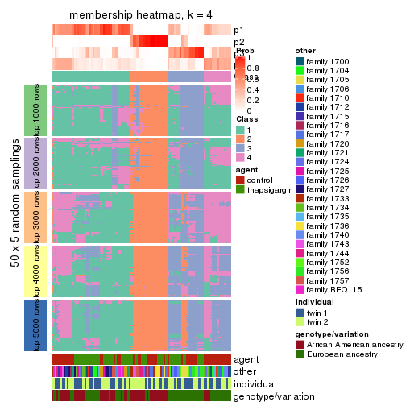
membership_heatmap(res, k = 5)
membership_heatmap(res, k = 6)
As soon as we have had the classes for columns, we can look for signatures which are significantly different between classes which can be candidate marks for certain classes. Following are the heatmaps for signatures.
Signature heatmaps where rows are scaled:
get_signatures(res, k = 2)
#> Error in mat[ceiling(1:nr/h_ratio), ceiling(1:nc/w_ratio), drop = FALSE]: subscript out of bounds
get_signatures(res, k = 3)
get_signatures(res, k = 4)
get_signatures(res, k = 5)
get_signatures(res, k = 6)
Signature heatmaps where rows are not scaled:
get_signatures(res, k = 2, scale_rows = FALSE)
get_signatures(res, k = 3, scale_rows = FALSE)
get_signatures(res, k = 4, scale_rows = FALSE)
get_signatures(res, k = 5, scale_rows = FALSE)
get_signatures(res, k = 6, scale_rows = FALSE)
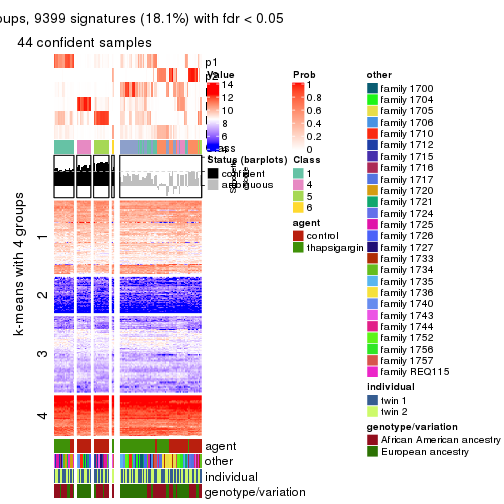
Compare the overlap of signatures from different k:
compare_signatures(res)
get_signature() returns a data frame invisibly. TO get the list of signatures, the function
call should be assigned to a variable explicitly. In following code, if plot argument is set
to FALSE, no heatmap is plotted while only the differential analysis is performed.
# code only for demonstration
tb = get_signature(res, k = ..., plot = FALSE)
An example of the output of tb is:
#> which_row fdr mean_1 mean_2 scaled_mean_1 scaled_mean_2 km
#> 1 38 0.042760348 8.373488 9.131774 -0.5533452 0.5164555 1
#> 2 40 0.018707592 7.106213 8.469186 -0.6173731 0.5762149 1
#> 3 55 0.019134737 10.221463 11.207825 -0.6159697 0.5749050 1
#> 4 59 0.006059896 5.921854 7.869574 -0.6899429 0.6439467 1
#> 5 60 0.018055526 8.928898 10.211722 -0.6204761 0.5791110 1
#> 6 98 0.009384629 15.714769 14.887706 0.6635654 -0.6193277 2
...
The columns in tb are:
which_row: row indices corresponding to the input matrix.fdr: FDR for the differential test. mean_x: The mean value in group x.scaled_mean_x: The mean value in group x after rows are scaled.km: Row groups if k-means clustering is applied to rows.UMAP plot which shows how samples are separated.
dimension_reduction(res, k = 2, method = "UMAP")
dimension_reduction(res, k = 3, method = "UMAP")
dimension_reduction(res, k = 4, method = "UMAP")
dimension_reduction(res, k = 5, method = "UMAP")

dimension_reduction(res, k = 6, method = "UMAP")

Following heatmap shows how subgroups are split when increasing k:
collect_classes(res)
Test correlation between subgroups and known annotations. If the known annotation is numeric, one-way ANOVA test is applied, and if the known annotation is discrete, chi-squared contingency table test is applied.
test_to_known_factors(res)
#> n agent(p) other(p) individual(p) genotype/variation(p) k
#> SD:mclust 103 1.00e+00 1.07e-06 0.161 1.89e-03 2
#> SD:mclust 73 9.58e-01 1.03e-09 0.189 8.06e-06 3
#> SD:mclust 50 5.93e-04 1.69e-06 0.992 1.51e-06 4
#> SD:mclust 61 1.39e-06 3.07e-04 0.782 3.77e-06 5
#> SD:mclust 44 2.75e-07 1.70e-02 0.379 1.36e-04 6
If matrix rows can be associated to genes, consider to use functional_enrichment(res,
...) to perform function enrichment for the signature genes. See this vignette for more detailed explanations.
The object with results only for a single top-value method and a single partition method can be extracted as:
res = res_list["SD", "NMF"]
# you can also extract it by
# res = res_list["SD:NMF"]
A summary of res and all the functions that can be applied to it:
res
#> A 'ConsensusPartition' object with k = 2, 3, 4, 5, 6.
#> On a matrix with 51941 rows and 104 columns.
#> Top rows (1000, 2000, 3000, 4000, 5000) are extracted by 'SD' method.
#> Subgroups are detected by 'NMF' method.
#> Performed in total 1250 partitions by row resampling.
#> Best k for subgroups seems to be 2.
#>
#> Following methods can be applied to this 'ConsensusPartition' object:
#> [1] "cola_report" "collect_classes" "collect_plots"
#> [4] "collect_stats" "colnames" "compare_signatures"
#> [7] "consensus_heatmap" "dimension_reduction" "functional_enrichment"
#> [10] "get_anno_col" "get_anno" "get_classes"
#> [13] "get_consensus" "get_matrix" "get_membership"
#> [16] "get_param" "get_signatures" "get_stats"
#> [19] "is_best_k" "is_stable_k" "membership_heatmap"
#> [22] "ncol" "nrow" "plot_ecdf"
#> [25] "rownames" "select_partition_number" "show"
#> [28] "suggest_best_k" "test_to_known_factors"
collect_plots() function collects all the plots made from res for all k (number of partitions)
into one single page to provide an easy and fast comparison between different k.
collect_plots(res)
The plots are:
k and the heatmap of
predicted classes for each k.k.k.k.All the plots in panels can be made by individual functions and they are plotted later in this section.
select_partition_number() produces several plots showing different
statistics for choosing “optimized” k. There are following statistics:
k;k, the area increased is defined as \(A_k - A_{k-1}\).The detailed explanations of these statistics can be found in the cola vignette.
Generally speaking, lower PAC score, higher mean silhouette score or higher
concordance corresponds to better partition. Rand index and Jaccard index
measure how similar the current partition is compared to partition with k-1.
If they are too similar, we won't accept k is better than k-1.
select_partition_number(res)
The numeric values for all these statistics can be obtained by get_stats().
get_stats(res)
#> k 1-PAC mean_silhouette concordance area_increased Rand Jaccard
#> 2 2 0.940 0.934 0.973 0.4411 0.570 0.570
#> 3 3 0.389 0.614 0.784 0.4558 0.760 0.586
#> 4 4 0.452 0.540 0.715 0.1494 0.815 0.535
#> 5 5 0.495 0.466 0.662 0.0743 0.878 0.583
#> 6 6 0.543 0.409 0.612 0.0445 0.911 0.615
suggest_best_k() suggests the best \(k\) based on these statistics. The rules are as follows:
suggest_best_k(res)
#> [1] 2
Following shows the table of the partitions (You need to click the show/hide
code output link to see it). The membership matrix (columns with name p*)
is inferred by
clue::cl_consensus()
function with the SE method. Basically the value in the membership matrix
represents the probability to belong to a certain group. The finall class
label for an item is determined with the group with highest probability it
belongs to.
In get_classes() function, the entropy is calculated from the membership
matrix and the silhouette score is calculated from the consensus matrix.
cbind(get_classes(res, k = 2), get_membership(res, k = 2))
#> class entropy silhouette p1 p2
#> GSM494452 1 0.0000 0.9676 1.000 0.000
#> GSM494454 1 0.0000 0.9676 1.000 0.000
#> GSM494456 2 0.0000 0.9805 0.000 1.000
#> GSM494458 2 0.0000 0.9805 0.000 1.000
#> GSM494460 1 0.0000 0.9676 1.000 0.000
#> GSM494462 1 0.0000 0.9676 1.000 0.000
#> GSM494464 1 0.4690 0.8755 0.900 0.100
#> GSM494466 2 0.0000 0.9805 0.000 1.000
#> GSM494468 1 0.0000 0.9676 1.000 0.000
#> GSM494470 1 0.0000 0.9676 1.000 0.000
#> GSM494472 1 0.0000 0.9676 1.000 0.000
#> GSM494474 1 0.0000 0.9676 1.000 0.000
#> GSM494476 2 0.0000 0.9805 0.000 1.000
#> GSM494478 2 0.0000 0.9805 0.000 1.000
#> GSM494480 1 0.0000 0.9676 1.000 0.000
#> GSM494482 1 0.0000 0.9676 1.000 0.000
#> GSM494484 2 0.0000 0.9805 0.000 1.000
#> GSM494486 2 0.0000 0.9805 0.000 1.000
#> GSM494488 1 0.0000 0.9676 1.000 0.000
#> GSM494490 2 0.0000 0.9805 0.000 1.000
#> GSM494492 1 0.0000 0.9676 1.000 0.000
#> GSM494494 2 0.0000 0.9805 0.000 1.000
#> GSM494496 1 0.0376 0.9647 0.996 0.004
#> GSM494498 2 0.0000 0.9805 0.000 1.000
#> GSM494500 1 0.0000 0.9676 1.000 0.000
#> GSM494502 1 0.0000 0.9676 1.000 0.000
#> GSM494504 1 0.0000 0.9676 1.000 0.000
#> GSM494506 1 0.0376 0.9648 0.996 0.004
#> GSM494508 2 0.0000 0.9805 0.000 1.000
#> GSM494510 2 0.0000 0.9805 0.000 1.000
#> GSM494512 1 0.0000 0.9676 1.000 0.000
#> GSM494514 1 0.0000 0.9676 1.000 0.000
#> GSM494516 1 0.0000 0.9676 1.000 0.000
#> GSM494518 1 0.0000 0.9676 1.000 0.000
#> GSM494520 1 0.0000 0.9676 1.000 0.000
#> GSM494522 1 0.0000 0.9676 1.000 0.000
#> GSM494524 2 0.0000 0.9805 0.000 1.000
#> GSM494526 1 0.0000 0.9676 1.000 0.000
#> GSM494528 1 0.0000 0.9676 1.000 0.000
#> GSM494530 1 0.0000 0.9676 1.000 0.000
#> GSM494532 1 0.0672 0.9618 0.992 0.008
#> GSM494534 1 0.0672 0.9618 0.992 0.008
#> GSM494536 1 0.0000 0.9676 1.000 0.000
#> GSM494538 1 0.0000 0.9676 1.000 0.000
#> GSM494540 1 0.0000 0.9676 1.000 0.000
#> GSM494542 1 0.0000 0.9676 1.000 0.000
#> GSM494544 1 0.0000 0.9676 1.000 0.000
#> GSM494546 2 0.0000 0.9805 0.000 1.000
#> GSM494548 1 0.7674 0.7148 0.776 0.224
#> GSM494550 1 0.0938 0.9586 0.988 0.012
#> GSM494552 1 0.0000 0.9676 1.000 0.000
#> GSM494554 1 0.0000 0.9676 1.000 0.000
#> GSM494453 1 0.0000 0.9676 1.000 0.000
#> GSM494455 1 0.0000 0.9676 1.000 0.000
#> GSM494457 2 0.0000 0.9805 0.000 1.000
#> GSM494459 2 0.0000 0.9805 0.000 1.000
#> GSM494461 1 0.0000 0.9676 1.000 0.000
#> GSM494463 1 0.0000 0.9676 1.000 0.000
#> GSM494465 2 0.2043 0.9503 0.032 0.968
#> GSM494467 2 0.0000 0.9805 0.000 1.000
#> GSM494469 1 0.0000 0.9676 1.000 0.000
#> GSM494471 1 0.0000 0.9676 1.000 0.000
#> GSM494473 1 0.0000 0.9676 1.000 0.000
#> GSM494475 1 0.0000 0.9676 1.000 0.000
#> GSM494477 2 0.0000 0.9805 0.000 1.000
#> GSM494479 2 0.0000 0.9805 0.000 1.000
#> GSM494481 1 0.9775 0.3230 0.588 0.412
#> GSM494483 1 0.4562 0.8793 0.904 0.096
#> GSM494485 2 0.0000 0.9805 0.000 1.000
#> GSM494487 2 0.0000 0.9805 0.000 1.000
#> GSM494489 1 0.0000 0.9676 1.000 0.000
#> GSM494491 2 0.0000 0.9805 0.000 1.000
#> GSM494493 1 1.0000 0.0408 0.504 0.496
#> GSM494495 2 0.0000 0.9805 0.000 1.000
#> GSM494497 1 0.6712 0.7822 0.824 0.176
#> GSM494499 2 0.0000 0.9805 0.000 1.000
#> GSM494501 1 0.0000 0.9676 1.000 0.000
#> GSM494503 1 0.0000 0.9676 1.000 0.000
#> GSM494505 1 0.0000 0.9676 1.000 0.000
#> GSM494507 1 0.9087 0.5361 0.676 0.324
#> GSM494509 2 0.0000 0.9805 0.000 1.000
#> GSM494511 2 0.0000 0.9805 0.000 1.000
#> GSM494513 1 0.0376 0.9648 0.996 0.004
#> GSM494515 1 0.1843 0.9451 0.972 0.028
#> GSM494517 1 0.0000 0.9676 1.000 0.000
#> GSM494519 1 0.0000 0.9676 1.000 0.000
#> GSM494521 1 0.0000 0.9676 1.000 0.000
#> GSM494523 1 0.0000 0.9676 1.000 0.000
#> GSM494525 2 0.0000 0.9805 0.000 1.000
#> GSM494527 1 0.0000 0.9676 1.000 0.000
#> GSM494529 1 0.0000 0.9676 1.000 0.000
#> GSM494531 1 0.0000 0.9676 1.000 0.000
#> GSM494533 2 0.0000 0.9805 0.000 1.000
#> GSM494535 1 0.9286 0.4915 0.656 0.344
#> GSM494537 1 0.0000 0.9676 1.000 0.000
#> GSM494539 1 0.0000 0.9676 1.000 0.000
#> GSM494541 1 0.0000 0.9676 1.000 0.000
#> GSM494543 1 0.0000 0.9676 1.000 0.000
#> GSM494545 1 0.0000 0.9676 1.000 0.000
#> GSM494547 2 0.0000 0.9805 0.000 1.000
#> GSM494549 2 0.9286 0.4507 0.344 0.656
#> GSM494551 2 0.7139 0.7432 0.196 0.804
#> GSM494553 1 0.0000 0.9676 1.000 0.000
#> GSM494555 1 0.0000 0.9676 1.000 0.000
cbind(get_classes(res, k = 3), get_membership(res, k = 3))
#> class entropy silhouette p1 p2 p3
#> GSM494452 2 0.2796 0.6883 0.092 0.908 0.000
#> GSM494454 2 0.3340 0.6684 0.120 0.880 0.000
#> GSM494456 3 0.1711 0.8652 0.008 0.032 0.960
#> GSM494458 3 0.1315 0.8668 0.008 0.020 0.972
#> GSM494460 2 0.6045 0.1546 0.380 0.620 0.000
#> GSM494462 2 0.6215 -0.0978 0.428 0.572 0.000
#> GSM494464 2 0.5708 0.5378 0.028 0.768 0.204
#> GSM494466 3 0.2063 0.8619 0.008 0.044 0.948
#> GSM494468 2 0.2313 0.6998 0.024 0.944 0.032
#> GSM494470 2 0.2959 0.6860 0.100 0.900 0.000
#> GSM494472 2 0.1964 0.7037 0.056 0.944 0.000
#> GSM494474 2 0.2448 0.6967 0.076 0.924 0.000
#> GSM494476 3 0.0983 0.8671 0.004 0.016 0.980
#> GSM494478 3 0.3832 0.8261 0.020 0.100 0.880
#> GSM494480 2 0.5222 0.6029 0.040 0.816 0.144
#> GSM494482 2 0.2434 0.6992 0.024 0.940 0.036
#> GSM494484 3 0.0424 0.8697 0.008 0.000 0.992
#> GSM494486 3 0.0661 0.8696 0.008 0.004 0.988
#> GSM494488 2 0.2537 0.6929 0.080 0.920 0.000
#> GSM494490 3 0.3369 0.8596 0.052 0.040 0.908
#> GSM494492 2 0.2804 0.6958 0.016 0.924 0.060
#> GSM494494 3 0.2050 0.8635 0.020 0.028 0.952
#> GSM494496 1 0.5591 0.6512 0.696 0.304 0.000
#> GSM494498 3 0.2384 0.8662 0.056 0.008 0.936
#> GSM494500 2 0.3038 0.6985 0.104 0.896 0.000
#> GSM494502 2 0.3375 0.7034 0.100 0.892 0.008
#> GSM494504 2 0.3500 0.7030 0.116 0.880 0.004
#> GSM494506 2 0.4821 0.6762 0.120 0.840 0.040
#> GSM494508 3 0.6317 0.7794 0.124 0.104 0.772
#> GSM494510 3 0.3769 0.8491 0.104 0.016 0.880
#> GSM494512 2 0.5585 0.6388 0.204 0.772 0.024
#> GSM494514 1 0.4796 0.6415 0.780 0.220 0.000
#> GSM494516 2 0.2796 0.7077 0.092 0.908 0.000
#> GSM494518 2 0.3116 0.7039 0.108 0.892 0.000
#> GSM494520 2 0.2356 0.7088 0.072 0.928 0.000
#> GSM494522 2 0.4999 0.6790 0.152 0.820 0.028
#> GSM494524 3 0.3550 0.8428 0.024 0.080 0.896
#> GSM494526 2 0.2448 0.6984 0.076 0.924 0.000
#> GSM494528 2 0.1636 0.7032 0.020 0.964 0.016
#> GSM494530 2 0.5902 0.4208 0.316 0.680 0.004
#> GSM494532 2 0.5804 0.6201 0.088 0.800 0.112
#> GSM494534 2 0.6191 0.5820 0.084 0.776 0.140
#> GSM494536 2 0.2682 0.7118 0.076 0.920 0.004
#> GSM494538 2 0.2959 0.7066 0.100 0.900 0.000
#> GSM494540 2 0.3965 0.6934 0.132 0.860 0.008
#> GSM494542 2 0.3695 0.7016 0.108 0.880 0.012
#> GSM494544 2 0.5318 0.6471 0.204 0.780 0.016
#> GSM494546 3 0.9208 0.5037 0.244 0.220 0.536
#> GSM494548 2 0.8350 0.4419 0.176 0.628 0.196
#> GSM494550 2 0.7011 0.5788 0.188 0.720 0.092
#> GSM494552 1 0.6008 0.5812 0.628 0.372 0.000
#> GSM494554 2 0.4784 0.5790 0.200 0.796 0.004
#> GSM494453 2 0.6079 0.1134 0.388 0.612 0.000
#> GSM494455 1 0.6260 0.4155 0.552 0.448 0.000
#> GSM494457 3 0.1643 0.8688 0.044 0.000 0.956
#> GSM494459 3 0.2165 0.8641 0.064 0.000 0.936
#> GSM494461 1 0.3918 0.6869 0.856 0.140 0.004
#> GSM494463 1 0.5529 0.6515 0.704 0.296 0.000
#> GSM494465 3 0.6098 0.7638 0.176 0.056 0.768
#> GSM494467 3 0.4062 0.8355 0.164 0.000 0.836
#> GSM494469 1 0.6799 0.3925 0.532 0.456 0.012
#> GSM494471 1 0.6215 0.4720 0.572 0.428 0.000
#> GSM494473 2 0.5529 0.4066 0.296 0.704 0.000
#> GSM494475 2 0.6500 -0.2295 0.464 0.532 0.004
#> GSM494477 3 0.2356 0.8659 0.072 0.000 0.928
#> GSM494479 3 0.6299 0.3740 0.476 0.000 0.524
#> GSM494481 2 0.9439 0.1114 0.224 0.500 0.276
#> GSM494483 2 0.7546 0.2026 0.396 0.560 0.044
#> GSM494485 3 0.2448 0.8651 0.076 0.000 0.924
#> GSM494487 3 0.1860 0.8679 0.052 0.000 0.948
#> GSM494489 1 0.4645 0.6932 0.816 0.176 0.008
#> GSM494491 3 0.5678 0.7089 0.316 0.000 0.684
#> GSM494493 1 0.6793 0.5847 0.740 0.100 0.160
#> GSM494495 3 0.3941 0.8364 0.156 0.000 0.844
#> GSM494497 1 0.4196 0.6644 0.864 0.112 0.024
#> GSM494499 3 0.3340 0.8606 0.120 0.000 0.880
#> GSM494501 1 0.6026 0.5473 0.624 0.376 0.000
#> GSM494503 2 0.5733 0.4456 0.324 0.676 0.000
#> GSM494505 1 0.5363 0.6518 0.724 0.276 0.000
#> GSM494507 1 0.8271 0.2084 0.520 0.400 0.080
#> GSM494509 3 0.5760 0.7254 0.328 0.000 0.672
#> GSM494511 3 0.4842 0.8089 0.224 0.000 0.776
#> GSM494513 1 0.3918 0.5917 0.868 0.120 0.012
#> GSM494515 1 0.2550 0.6438 0.932 0.056 0.012
#> GSM494517 1 0.6291 0.2931 0.532 0.468 0.000
#> GSM494519 2 0.5621 0.5055 0.308 0.692 0.000
#> GSM494521 1 0.6307 0.2316 0.512 0.488 0.000
#> GSM494523 2 0.5465 0.5684 0.288 0.712 0.000
#> GSM494525 3 0.1905 0.8680 0.028 0.016 0.956
#> GSM494527 2 0.6274 -0.2216 0.456 0.544 0.000
#> GSM494529 2 0.5058 0.5364 0.244 0.756 0.000
#> GSM494531 1 0.4605 0.6924 0.796 0.204 0.000
#> GSM494533 3 0.7213 0.7411 0.212 0.088 0.700
#> GSM494535 2 0.7653 0.5099 0.176 0.684 0.140
#> GSM494537 1 0.5706 0.6185 0.680 0.320 0.000
#> GSM494539 1 0.5678 0.6097 0.684 0.316 0.000
#> GSM494541 2 0.4555 0.6532 0.200 0.800 0.000
#> GSM494543 1 0.4521 0.6720 0.816 0.180 0.004
#> GSM494545 1 0.3038 0.6587 0.896 0.104 0.000
#> GSM494547 3 0.6282 0.6457 0.384 0.004 0.612
#> GSM494549 1 0.8495 0.2096 0.612 0.168 0.220
#> GSM494551 1 0.8325 -0.0116 0.588 0.108 0.304
#> GSM494553 1 0.5247 0.6798 0.768 0.224 0.008
#> GSM494555 1 0.5335 0.6783 0.760 0.232 0.008
cbind(get_classes(res, k = 4), get_membership(res, k = 4))
#> class entropy silhouette p1 p2 p3 p4
#> GSM494452 4 0.3852 0.5677 0.180 0.000 0.012 0.808
#> GSM494454 4 0.4323 0.5360 0.204 0.000 0.020 0.776
#> GSM494456 2 0.1151 0.7978 0.000 0.968 0.008 0.024
#> GSM494458 2 0.1182 0.7995 0.000 0.968 0.016 0.016
#> GSM494460 1 0.6212 0.4185 0.560 0.000 0.060 0.380
#> GSM494462 1 0.5903 0.5143 0.616 0.000 0.052 0.332
#> GSM494464 4 0.5143 0.4917 0.020 0.264 0.008 0.708
#> GSM494466 2 0.1610 0.7953 0.000 0.952 0.016 0.032
#> GSM494468 4 0.3658 0.6421 0.064 0.068 0.004 0.864
#> GSM494470 4 0.4737 0.5072 0.212 0.016 0.012 0.760
#> GSM494472 4 0.3719 0.6137 0.124 0.020 0.008 0.848
#> GSM494474 4 0.3272 0.6161 0.128 0.004 0.008 0.860
#> GSM494476 2 0.0657 0.8005 0.000 0.984 0.012 0.004
#> GSM494478 2 0.5529 0.6291 0.056 0.760 0.032 0.152
#> GSM494480 4 0.3625 0.6540 0.004 0.120 0.024 0.852
#> GSM494482 4 0.3791 0.6403 0.056 0.076 0.008 0.860
#> GSM494484 2 0.1637 0.8007 0.000 0.940 0.060 0.000
#> GSM494486 2 0.1716 0.7988 0.000 0.936 0.064 0.000
#> GSM494488 4 0.5077 0.5289 0.192 0.028 0.020 0.760
#> GSM494490 2 0.4998 0.6307 0.008 0.760 0.192 0.040
#> GSM494492 4 0.3354 0.6765 0.016 0.084 0.020 0.880
#> GSM494494 2 0.1229 0.7998 0.004 0.968 0.008 0.020
#> GSM494496 1 0.5842 0.5924 0.704 0.000 0.168 0.128
#> GSM494498 2 0.3583 0.6939 0.000 0.816 0.180 0.004
#> GSM494500 4 0.4419 0.6834 0.084 0.000 0.104 0.812
#> GSM494502 4 0.3831 0.6575 0.004 0.000 0.204 0.792
#> GSM494504 4 0.4869 0.6111 0.012 0.004 0.276 0.708
#> GSM494506 4 0.5075 0.4821 0.000 0.012 0.344 0.644
#> GSM494508 3 0.5723 0.2854 0.000 0.388 0.580 0.032
#> GSM494510 3 0.5147 0.0774 0.000 0.460 0.536 0.004
#> GSM494512 3 0.5148 0.2971 0.004 0.008 0.640 0.348
#> GSM494514 3 0.6337 -0.1525 0.468 0.000 0.472 0.060
#> GSM494516 4 0.4175 0.6657 0.016 0.000 0.200 0.784
#> GSM494518 4 0.4095 0.6713 0.016 0.000 0.192 0.792
#> GSM494520 4 0.2926 0.6932 0.048 0.000 0.056 0.896
#> GSM494522 4 0.5130 0.5006 0.004 0.008 0.344 0.644
#> GSM494524 2 0.2816 0.7715 0.000 0.900 0.036 0.064
#> GSM494526 4 0.4060 0.5971 0.140 0.020 0.012 0.828
#> GSM494528 4 0.2441 0.6973 0.004 0.012 0.068 0.916
#> GSM494530 1 0.7609 0.0891 0.404 0.000 0.200 0.396
#> GSM494532 4 0.5348 0.5889 0.004 0.048 0.228 0.720
#> GSM494534 4 0.5101 0.6049 0.004 0.036 0.228 0.732
#> GSM494536 4 0.3899 0.6981 0.052 0.000 0.108 0.840
#> GSM494538 4 0.4011 0.6570 0.008 0.000 0.208 0.784
#> GSM494540 4 0.4969 0.5519 0.008 0.004 0.312 0.676
#> GSM494542 4 0.4408 0.6354 0.004 0.008 0.232 0.756
#> GSM494544 3 0.5682 0.2495 0.036 0.000 0.612 0.352
#> GSM494546 3 0.5722 0.5819 0.000 0.136 0.716 0.148
#> GSM494548 3 0.5247 0.4252 0.000 0.032 0.684 0.284
#> GSM494550 3 0.5482 0.2641 0.000 0.024 0.608 0.368
#> GSM494552 1 0.4633 0.6502 0.780 0.000 0.048 0.172
#> GSM494554 4 0.6334 -0.0290 0.388 0.008 0.048 0.556
#> GSM494453 1 0.5366 0.3605 0.548 0.000 0.012 0.440
#> GSM494455 1 0.4655 0.6504 0.760 0.000 0.032 0.208
#> GSM494457 2 0.1302 0.8040 0.000 0.956 0.044 0.000
#> GSM494459 2 0.2089 0.8007 0.020 0.932 0.048 0.000
#> GSM494461 1 0.2941 0.6282 0.888 0.008 0.096 0.008
#> GSM494463 1 0.3879 0.6667 0.840 0.008 0.024 0.128
#> GSM494465 2 0.6627 0.6134 0.160 0.696 0.092 0.052
#> GSM494467 2 0.4511 0.7171 0.040 0.784 0.176 0.000
#> GSM494469 1 0.6847 0.5962 0.644 0.064 0.048 0.244
#> GSM494471 1 0.4604 0.6749 0.784 0.004 0.036 0.176
#> GSM494473 4 0.5070 0.0562 0.416 0.000 0.004 0.580
#> GSM494475 1 0.6140 0.5276 0.608 0.012 0.040 0.340
#> GSM494477 2 0.2706 0.7929 0.020 0.900 0.080 0.000
#> GSM494479 2 0.6629 0.4484 0.340 0.576 0.076 0.008
#> GSM494481 2 0.9006 0.1382 0.188 0.436 0.088 0.288
#> GSM494483 1 0.9285 0.2608 0.380 0.180 0.112 0.328
#> GSM494485 2 0.3205 0.7789 0.024 0.872 0.104 0.000
#> GSM494487 2 0.2473 0.7954 0.012 0.908 0.080 0.000
#> GSM494489 1 0.2923 0.6393 0.896 0.008 0.080 0.016
#> GSM494491 2 0.7729 0.0892 0.228 0.400 0.372 0.000
#> GSM494493 1 0.7397 0.3948 0.604 0.164 0.204 0.028
#> GSM494495 2 0.4301 0.7456 0.064 0.816 0.120 0.000
#> GSM494497 1 0.3775 0.5902 0.828 0.008 0.156 0.008
#> GSM494499 2 0.4678 0.6695 0.024 0.744 0.232 0.000
#> GSM494501 1 0.5982 0.6313 0.684 0.000 0.112 0.204
#> GSM494503 4 0.6818 0.4661 0.232 0.000 0.168 0.600
#> GSM494505 1 0.5232 0.6428 0.764 0.004 0.132 0.100
#> GSM494507 1 0.9333 0.0905 0.324 0.084 0.300 0.292
#> GSM494509 3 0.5156 0.4280 0.044 0.236 0.720 0.000
#> GSM494511 3 0.5368 0.2882 0.024 0.340 0.636 0.000
#> GSM494513 3 0.4559 0.4987 0.164 0.004 0.792 0.040
#> GSM494515 1 0.4855 0.3894 0.644 0.000 0.352 0.004
#> GSM494517 1 0.6876 0.3899 0.532 0.000 0.116 0.352
#> GSM494519 4 0.6563 0.5711 0.160 0.000 0.208 0.632
#> GSM494521 1 0.6430 0.5093 0.596 0.000 0.092 0.312
#> GSM494523 4 0.6229 0.5619 0.088 0.000 0.284 0.628
#> GSM494525 2 0.2497 0.7985 0.016 0.924 0.040 0.020
#> GSM494527 1 0.5472 0.4807 0.608 0.004 0.016 0.372
#> GSM494529 4 0.5624 0.4530 0.280 0.000 0.052 0.668
#> GSM494531 1 0.2586 0.6434 0.912 0.008 0.068 0.012
#> GSM494533 3 0.8033 0.3754 0.032 0.320 0.492 0.156
#> GSM494535 4 0.7173 0.3866 0.052 0.052 0.328 0.568
#> GSM494537 1 0.5230 0.6364 0.760 0.004 0.152 0.084
#> GSM494539 1 0.5923 0.5807 0.684 0.000 0.216 0.100
#> GSM494541 4 0.5994 0.5546 0.068 0.000 0.296 0.636
#> GSM494543 1 0.6710 0.3207 0.532 0.016 0.396 0.056
#> GSM494545 3 0.5636 -0.0245 0.424 0.000 0.552 0.024
#> GSM494547 3 0.5118 0.4908 0.072 0.176 0.752 0.000
#> GSM494549 3 0.4158 0.5790 0.068 0.036 0.852 0.044
#> GSM494551 3 0.4084 0.5844 0.064 0.036 0.856 0.044
#> GSM494553 1 0.2269 0.6543 0.932 0.008 0.032 0.028
#> GSM494555 1 0.2928 0.6529 0.904 0.012 0.056 0.028
cbind(get_classes(res, k = 5), get_membership(res, k = 5))
#> class entropy silhouette p1 p2 p3 p4 p5
#> GSM494452 5 0.499 0.27463 0.012 0.012 0.008 0.340 0.628
#> GSM494454 5 0.462 0.37796 0.004 0.008 0.012 0.304 0.672
#> GSM494456 2 0.234 0.74080 0.000 0.912 0.028 0.052 0.008
#> GSM494458 2 0.128 0.75985 0.000 0.960 0.016 0.020 0.004
#> GSM494460 5 0.200 0.60441 0.008 0.012 0.024 0.020 0.936
#> GSM494462 5 0.139 0.60415 0.012 0.000 0.008 0.024 0.956
#> GSM494464 2 0.698 0.00209 0.008 0.444 0.024 0.392 0.132
#> GSM494466 2 0.182 0.75827 0.000 0.936 0.036 0.024 0.004
#> GSM494468 4 0.508 0.50567 0.000 0.108 0.012 0.724 0.156
#> GSM494470 5 0.578 0.05614 0.004 0.056 0.008 0.428 0.504
#> GSM494472 4 0.557 0.40569 0.008 0.060 0.012 0.648 0.272
#> GSM494474 4 0.540 0.31229 0.004 0.032 0.012 0.580 0.372
#> GSM494476 2 0.147 0.75841 0.004 0.952 0.020 0.024 0.000
#> GSM494478 2 0.644 0.41781 0.008 0.588 0.044 0.072 0.288
#> GSM494480 4 0.489 0.52130 0.004 0.176 0.012 0.740 0.068
#> GSM494482 4 0.581 0.45898 0.000 0.156 0.016 0.656 0.172
#> GSM494484 2 0.236 0.75844 0.012 0.892 0.096 0.000 0.000
#> GSM494486 2 0.234 0.75633 0.000 0.892 0.100 0.004 0.004
#> GSM494488 5 0.515 0.49272 0.004 0.072 0.016 0.188 0.720
#> GSM494490 2 0.689 0.33626 0.032 0.548 0.316 0.064 0.040
#> GSM494492 4 0.597 0.50789 0.000 0.176 0.040 0.664 0.120
#> GSM494494 2 0.195 0.76482 0.004 0.936 0.032 0.012 0.016
#> GSM494496 5 0.397 0.55695 0.032 0.008 0.172 0.000 0.788
#> GSM494498 2 0.436 0.57830 0.012 0.696 0.284 0.008 0.000
#> GSM494500 4 0.599 0.20173 0.016 0.000 0.068 0.476 0.440
#> GSM494502 4 0.430 0.58306 0.008 0.000 0.244 0.728 0.020
#> GSM494504 4 0.574 0.41896 0.012 0.004 0.376 0.556 0.052
#> GSM494506 4 0.480 0.48113 0.008 0.012 0.348 0.628 0.004
#> GSM494508 3 0.495 0.57013 0.040 0.168 0.748 0.040 0.004
#> GSM494510 3 0.471 0.38351 0.032 0.292 0.672 0.004 0.000
#> GSM494512 3 0.360 0.55971 0.016 0.000 0.784 0.200 0.000
#> GSM494514 5 0.565 0.06376 0.056 0.000 0.448 0.008 0.488
#> GSM494516 4 0.486 0.61738 0.020 0.000 0.176 0.740 0.064
#> GSM494518 4 0.443 0.62226 0.020 0.000 0.132 0.784 0.064
#> GSM494520 4 0.518 0.53768 0.004 0.008 0.060 0.684 0.244
#> GSM494522 4 0.467 0.43067 0.012 0.000 0.388 0.596 0.004
#> GSM494524 2 0.487 0.66671 0.024 0.780 0.056 0.116 0.024
#> GSM494526 4 0.569 0.20982 0.004 0.052 0.008 0.536 0.400
#> GSM494528 4 0.272 0.61034 0.004 0.020 0.024 0.900 0.052
#> GSM494530 5 0.529 0.51286 0.028 0.000 0.224 0.056 0.692
#> GSM494532 4 0.404 0.61062 0.024 0.028 0.148 0.800 0.000
#> GSM494534 4 0.417 0.59817 0.008 0.036 0.156 0.792 0.008
#> GSM494536 4 0.611 0.52156 0.012 0.000 0.168 0.608 0.212
#> GSM494538 4 0.457 0.60753 0.020 0.000 0.188 0.752 0.040
#> GSM494540 4 0.430 0.52735 0.020 0.000 0.288 0.692 0.000
#> GSM494542 4 0.424 0.57286 0.012 0.000 0.248 0.728 0.012
#> GSM494544 3 0.439 0.59100 0.008 0.000 0.780 0.092 0.120
#> GSM494546 3 0.307 0.65655 0.012 0.036 0.872 0.080 0.000
#> GSM494548 3 0.321 0.60372 0.004 0.008 0.824 0.164 0.000
#> GSM494550 3 0.386 0.49844 0.012 0.000 0.740 0.248 0.000
#> GSM494552 5 0.191 0.60236 0.044 0.000 0.016 0.008 0.932
#> GSM494554 5 0.594 0.53198 0.032 0.020 0.068 0.200 0.680
#> GSM494453 5 0.661 0.17607 0.192 0.000 0.004 0.344 0.460
#> GSM494455 5 0.532 0.35280 0.296 0.000 0.000 0.080 0.624
#> GSM494457 2 0.239 0.76520 0.048 0.908 0.040 0.004 0.000
#> GSM494459 2 0.273 0.75757 0.056 0.884 0.060 0.000 0.000
#> GSM494461 1 0.480 -0.06623 0.516 0.000 0.012 0.004 0.468
#> GSM494463 5 0.189 0.59093 0.080 0.000 0.000 0.004 0.916
#> GSM494465 1 0.624 -0.09781 0.464 0.448 0.012 0.060 0.016
#> GSM494467 2 0.531 0.64126 0.208 0.668 0.124 0.000 0.000
#> GSM494469 1 0.695 0.47740 0.584 0.084 0.000 0.164 0.168
#> GSM494471 5 0.556 -0.03638 0.464 0.000 0.000 0.068 0.468
#> GSM494473 4 0.634 0.24259 0.208 0.000 0.004 0.548 0.240
#> GSM494475 1 0.717 0.20941 0.388 0.016 0.000 0.320 0.276
#> GSM494477 2 0.400 0.72954 0.120 0.796 0.084 0.000 0.000
#> GSM494479 2 0.656 0.50831 0.172 0.608 0.036 0.004 0.180
#> GSM494481 1 0.725 0.44915 0.520 0.204 0.004 0.224 0.048
#> GSM494483 1 0.599 0.56263 0.668 0.124 0.004 0.172 0.032
#> GSM494485 2 0.447 0.69772 0.176 0.748 0.076 0.000 0.000
#> GSM494487 2 0.265 0.75825 0.032 0.884 0.084 0.000 0.000
#> GSM494489 5 0.467 0.31296 0.372 0.004 0.008 0.004 0.612
#> GSM494491 1 0.560 0.21811 0.652 0.204 0.140 0.004 0.000
#> GSM494493 1 0.439 0.49519 0.788 0.144 0.024 0.004 0.040
#> GSM494495 2 0.470 0.67938 0.204 0.720 0.076 0.000 0.000
#> GSM494497 5 0.459 0.53307 0.148 0.008 0.084 0.000 0.760
#> GSM494499 2 0.573 0.60328 0.188 0.640 0.168 0.004 0.000
#> GSM494501 1 0.744 0.31046 0.444 0.000 0.048 0.288 0.220
#> GSM494503 4 0.554 0.11079 0.388 0.000 0.036 0.556 0.020
#> GSM494505 1 0.438 0.54384 0.776 0.000 0.004 0.112 0.108
#> GSM494507 1 0.408 0.53562 0.800 0.052 0.012 0.136 0.000
#> GSM494509 3 0.490 0.60526 0.196 0.084 0.716 0.004 0.000
#> GSM494511 3 0.520 0.51911 0.128 0.188 0.684 0.000 0.000
#> GSM494513 3 0.471 0.62314 0.176 0.000 0.752 0.044 0.028
#> GSM494515 5 0.702 0.14266 0.280 0.004 0.308 0.004 0.404
#> GSM494517 1 0.626 0.27478 0.528 0.000 0.020 0.356 0.096
#> GSM494519 4 0.591 0.41178 0.252 0.000 0.076 0.636 0.036
#> GSM494521 1 0.664 0.33858 0.496 0.000 0.012 0.320 0.172
#> GSM494523 4 0.597 0.49175 0.184 0.000 0.144 0.648 0.024
#> GSM494525 2 0.589 0.59867 0.236 0.652 0.032 0.076 0.004
#> GSM494527 5 0.597 0.41204 0.168 0.004 0.000 0.224 0.604
#> GSM494529 4 0.577 0.11611 0.344 0.008 0.000 0.568 0.080
#> GSM494531 5 0.419 0.47258 0.260 0.000 0.016 0.004 0.720
#> GSM494533 1 0.760 0.21509 0.448 0.088 0.152 0.312 0.000
#> GSM494535 4 0.583 0.19887 0.332 0.024 0.060 0.584 0.000
#> GSM494537 1 0.374 0.56481 0.824 0.000 0.004 0.096 0.076
#> GSM494539 1 0.482 0.55466 0.772 0.000 0.044 0.092 0.092
#> GSM494541 4 0.568 0.36398 0.268 0.004 0.096 0.628 0.004
#> GSM494543 1 0.300 0.50569 0.884 0.008 0.068 0.028 0.012
#> GSM494545 3 0.660 0.17071 0.420 0.000 0.452 0.036 0.092
#> GSM494547 3 0.596 0.51614 0.272 0.120 0.600 0.004 0.004
#> GSM494549 3 0.627 0.38223 0.420 0.024 0.476 0.080 0.000
#> GSM494551 3 0.608 0.39385 0.400 0.020 0.508 0.072 0.000
#> GSM494553 5 0.343 0.51812 0.220 0.000 0.004 0.000 0.776
#> GSM494555 1 0.444 0.29922 0.660 0.004 0.000 0.012 0.324
cbind(get_classes(res, k = 6), get_membership(res, k = 6))
#> class entropy silhouette p1 p2 p3 p4 p5 p6
#> GSM494452 6 0.598 0.22518 0.008 0.004 0.000 0.288 0.184 0.516
#> GSM494454 6 0.584 0.31051 0.012 0.004 0.000 0.280 0.152 0.552
#> GSM494456 2 0.332 0.69533 0.000 0.796 0.016 0.000 0.180 0.008
#> GSM494458 2 0.284 0.75776 0.000 0.860 0.020 0.004 0.108 0.008
#> GSM494460 6 0.324 0.59419 0.004 0.004 0.020 0.040 0.076 0.856
#> GSM494462 6 0.198 0.60622 0.008 0.004 0.008 0.016 0.036 0.928
#> GSM494464 5 0.655 0.22188 0.000 0.252 0.000 0.240 0.468 0.040
#> GSM494466 2 0.234 0.77090 0.000 0.896 0.020 0.012 0.072 0.000
#> GSM494468 5 0.542 -0.10687 0.004 0.024 0.000 0.452 0.472 0.048
#> GSM494470 6 0.668 -0.03922 0.008 0.020 0.000 0.244 0.352 0.376
#> GSM494472 5 0.627 -0.03454 0.008 0.016 0.000 0.384 0.436 0.156
#> GSM494474 4 0.629 0.05123 0.008 0.012 0.000 0.492 0.220 0.268
#> GSM494476 2 0.215 0.76795 0.000 0.900 0.016 0.000 0.080 0.004
#> GSM494478 2 0.670 -0.10728 0.004 0.376 0.016 0.004 0.312 0.288
#> GSM494480 4 0.573 0.02726 0.000 0.072 0.016 0.460 0.440 0.012
#> GSM494482 4 0.678 -0.01556 0.004 0.096 0.000 0.460 0.328 0.112
#> GSM494484 2 0.171 0.78542 0.016 0.936 0.020 0.000 0.028 0.000
#> GSM494486 2 0.246 0.77294 0.000 0.888 0.044 0.000 0.064 0.004
#> GSM494488 6 0.667 0.31087 0.000 0.092 0.004 0.180 0.184 0.540
#> GSM494490 5 0.637 0.08255 0.008 0.196 0.308 0.000 0.472 0.016
#> GSM494492 4 0.644 0.08430 0.000 0.144 0.008 0.504 0.304 0.040
#> GSM494494 2 0.232 0.76778 0.000 0.892 0.016 0.000 0.084 0.008
#> GSM494496 6 0.391 0.56658 0.012 0.012 0.120 0.000 0.056 0.800
#> GSM494498 2 0.474 0.54177 0.004 0.652 0.268 0.000 0.076 0.000
#> GSM494500 4 0.557 0.10482 0.000 0.000 0.028 0.520 0.072 0.380
#> GSM494502 4 0.411 0.51291 0.004 0.000 0.108 0.768 0.116 0.004
#> GSM494504 4 0.506 0.42816 0.000 0.000 0.276 0.640 0.048 0.036
#> GSM494506 4 0.600 0.37319 0.004 0.004 0.252 0.508 0.232 0.000
#> GSM494508 3 0.467 0.55927 0.004 0.064 0.744 0.024 0.156 0.008
#> GSM494510 3 0.476 0.51676 0.008 0.220 0.688 0.004 0.080 0.000
#> GSM494512 3 0.287 0.65026 0.000 0.000 0.832 0.148 0.020 0.000
#> GSM494514 3 0.564 0.09319 0.012 0.000 0.504 0.028 0.048 0.408
#> GSM494516 4 0.307 0.52036 0.008 0.000 0.104 0.852 0.028 0.008
#> GSM494518 4 0.209 0.50831 0.024 0.004 0.024 0.924 0.020 0.004
#> GSM494520 4 0.630 0.25586 0.012 0.008 0.020 0.560 0.244 0.156
#> GSM494522 4 0.584 0.41024 0.012 0.000 0.280 0.552 0.152 0.004
#> GSM494524 5 0.521 0.09098 0.004 0.356 0.068 0.008 0.564 0.000
#> GSM494526 5 0.655 0.02006 0.000 0.020 0.000 0.316 0.332 0.332
#> GSM494528 4 0.433 0.35239 0.004 0.000 0.024 0.652 0.316 0.004
#> GSM494530 6 0.712 0.27615 0.012 0.004 0.216 0.080 0.196 0.492
#> GSM494532 4 0.578 0.34534 0.020 0.000 0.120 0.528 0.332 0.000
#> GSM494534 4 0.590 0.24742 0.016 0.008 0.100 0.448 0.428 0.000
#> GSM494536 5 0.717 0.00315 0.020 0.000 0.164 0.236 0.488 0.092
#> GSM494538 4 0.388 0.51408 0.004 0.000 0.116 0.796 0.072 0.012
#> GSM494540 4 0.364 0.50640 0.016 0.000 0.144 0.800 0.040 0.000
#> GSM494542 4 0.329 0.50603 0.004 0.008 0.128 0.828 0.032 0.000
#> GSM494544 3 0.488 0.61713 0.000 0.004 0.720 0.152 0.032 0.092
#> GSM494546 3 0.415 0.65929 0.000 0.060 0.776 0.132 0.032 0.000
#> GSM494548 3 0.305 0.65584 0.000 0.016 0.848 0.108 0.028 0.000
#> GSM494550 3 0.381 0.58502 0.000 0.004 0.740 0.228 0.028 0.000
#> GSM494552 6 0.199 0.60581 0.016 0.000 0.004 0.008 0.052 0.920
#> GSM494554 5 0.622 0.08530 0.036 0.004 0.084 0.024 0.572 0.280
#> GSM494453 4 0.728 0.05621 0.172 0.000 0.000 0.396 0.140 0.292
#> GSM494455 6 0.629 0.30240 0.264 0.000 0.000 0.120 0.072 0.544
#> GSM494457 2 0.305 0.78532 0.040 0.872 0.028 0.004 0.052 0.004
#> GSM494459 2 0.328 0.78258 0.056 0.860 0.024 0.004 0.048 0.008
#> GSM494461 1 0.498 0.08985 0.524 0.004 0.024 0.000 0.020 0.428
#> GSM494463 6 0.176 0.60860 0.028 0.000 0.000 0.008 0.032 0.932
#> GSM494465 2 0.697 0.33185 0.284 0.484 0.012 0.044 0.164 0.012
#> GSM494467 2 0.402 0.75660 0.104 0.808 0.024 0.008 0.048 0.008
#> GSM494469 1 0.563 0.54558 0.672 0.016 0.000 0.072 0.172 0.068
#> GSM494471 1 0.685 0.03928 0.416 0.008 0.000 0.120 0.080 0.376
#> GSM494473 4 0.729 0.05311 0.248 0.000 0.000 0.400 0.232 0.120
#> GSM494475 1 0.709 0.30526 0.404 0.000 0.000 0.124 0.328 0.144
#> GSM494477 2 0.289 0.77495 0.096 0.864 0.016 0.000 0.020 0.004
#> GSM494479 2 0.578 0.55544 0.108 0.640 0.020 0.000 0.032 0.200
#> GSM494481 1 0.606 0.49263 0.620 0.048 0.000 0.096 0.212 0.024
#> GSM494483 1 0.529 0.56040 0.700 0.048 0.000 0.152 0.088 0.012
#> GSM494485 2 0.342 0.76329 0.112 0.832 0.016 0.000 0.032 0.008
#> GSM494487 2 0.281 0.78619 0.028 0.884 0.032 0.000 0.048 0.008
#> GSM494489 6 0.529 0.37039 0.304 0.008 0.004 0.044 0.024 0.616
#> GSM494491 1 0.622 0.34332 0.608 0.104 0.136 0.000 0.148 0.004
#> GSM494493 1 0.593 0.39639 0.624 0.236 0.012 0.072 0.048 0.008
#> GSM494495 2 0.352 0.75934 0.116 0.824 0.024 0.000 0.032 0.004
#> GSM494497 6 0.321 0.59359 0.048 0.000 0.068 0.000 0.032 0.852
#> GSM494499 2 0.524 0.63540 0.088 0.680 0.180 0.000 0.052 0.000
#> GSM494501 1 0.618 0.35075 0.472 0.000 0.012 0.376 0.020 0.120
#> GSM494503 1 0.513 0.42805 0.564 0.000 0.008 0.356 0.072 0.000
#> GSM494505 1 0.328 0.59581 0.856 0.004 0.008 0.044 0.016 0.072
#> GSM494507 1 0.356 0.59692 0.832 0.020 0.016 0.100 0.032 0.000
#> GSM494509 3 0.413 0.61905 0.068 0.044 0.800 0.000 0.080 0.008
#> GSM494511 3 0.450 0.57089 0.044 0.184 0.732 0.000 0.040 0.000
#> GSM494513 3 0.429 0.65994 0.072 0.004 0.804 0.052 0.028 0.040
#> GSM494515 6 0.687 0.02306 0.116 0.004 0.372 0.012 0.064 0.432
#> GSM494517 1 0.506 0.37932 0.556 0.004 0.008 0.392 0.012 0.028
#> GSM494519 4 0.405 0.32559 0.224 0.004 0.024 0.736 0.012 0.000
#> GSM494521 1 0.711 0.37885 0.488 0.004 0.016 0.276 0.096 0.120
#> GSM494523 4 0.717 0.37879 0.140 0.004 0.108 0.528 0.196 0.024
#> GSM494525 5 0.687 0.07875 0.180 0.312 0.076 0.000 0.432 0.000
#> GSM494527 6 0.725 0.22437 0.196 0.000 0.000 0.144 0.228 0.432
#> GSM494529 1 0.568 0.37870 0.508 0.000 0.000 0.352 0.132 0.008
#> GSM494531 6 0.440 0.51809 0.192 0.000 0.024 0.008 0.036 0.740
#> GSM494533 1 0.794 0.21960 0.400 0.048 0.140 0.264 0.148 0.000
#> GSM494535 1 0.742 0.16850 0.360 0.012 0.064 0.300 0.260 0.004
#> GSM494537 1 0.330 0.60506 0.860 0.004 0.008 0.036 0.056 0.036
#> GSM494539 1 0.397 0.57977 0.772 0.000 0.016 0.176 0.008 0.028
#> GSM494541 4 0.606 0.10190 0.308 0.000 0.064 0.540 0.088 0.000
#> GSM494543 1 0.367 0.57838 0.832 0.012 0.036 0.092 0.024 0.004
#> GSM494545 3 0.785 0.19714 0.328 0.008 0.384 0.136 0.040 0.104
#> GSM494547 3 0.744 0.47977 0.160 0.220 0.504 0.052 0.052 0.012
#> GSM494549 3 0.627 0.35208 0.356 0.016 0.500 0.088 0.040 0.000
#> GSM494551 3 0.677 0.43417 0.256 0.020 0.500 0.184 0.040 0.000
#> GSM494553 6 0.377 0.59254 0.116 0.000 0.024 0.000 0.056 0.804
#> GSM494555 1 0.617 0.38526 0.548 0.004 0.028 0.000 0.224 0.196
Heatmaps for the consensus matrix. It visualizes the probability of two samples to be in a same group.
consensus_heatmap(res, k = 2)
consensus_heatmap(res, k = 3)
consensus_heatmap(res, k = 4)
consensus_heatmap(res, k = 5)
consensus_heatmap(res, k = 6)
Heatmaps for the membership of samples in all partitions to see how consistent they are:
membership_heatmap(res, k = 2)
membership_heatmap(res, k = 3)
membership_heatmap(res, k = 4)
membership_heatmap(res, k = 5)
membership_heatmap(res, k = 6)

As soon as we have had the classes for columns, we can look for signatures which are significantly different between classes which can be candidate marks for certain classes. Following are the heatmaps for signatures.
Signature heatmaps where rows are scaled:
get_signatures(res, k = 2)
get_signatures(res, k = 3)
get_signatures(res, k = 4)
get_signatures(res, k = 5)
get_signatures(res, k = 6)
Signature heatmaps where rows are not scaled:
get_signatures(res, k = 2, scale_rows = FALSE)
get_signatures(res, k = 3, scale_rows = FALSE)
get_signatures(res, k = 4, scale_rows = FALSE)
get_signatures(res, k = 5, scale_rows = FALSE)
get_signatures(res, k = 6, scale_rows = FALSE)
Compare the overlap of signatures from different k:
compare_signatures(res)
get_signature() returns a data frame invisibly. TO get the list of signatures, the function
call should be assigned to a variable explicitly. In following code, if plot argument is set
to FALSE, no heatmap is plotted while only the differential analysis is performed.
# code only for demonstration
tb = get_signature(res, k = ..., plot = FALSE)
An example of the output of tb is:
#> which_row fdr mean_1 mean_2 scaled_mean_1 scaled_mean_2 km
#> 1 38 0.042760348 8.373488 9.131774 -0.5533452 0.5164555 1
#> 2 40 0.018707592 7.106213 8.469186 -0.6173731 0.5762149 1
#> 3 55 0.019134737 10.221463 11.207825 -0.6159697 0.5749050 1
#> 4 59 0.006059896 5.921854 7.869574 -0.6899429 0.6439467 1
#> 5 60 0.018055526 8.928898 10.211722 -0.6204761 0.5791110 1
#> 6 98 0.009384629 15.714769 14.887706 0.6635654 -0.6193277 2
...
The columns in tb are:
which_row: row indices corresponding to the input matrix.fdr: FDR for the differential test. mean_x: The mean value in group x.scaled_mean_x: The mean value in group x after rows are scaled.km: Row groups if k-means clustering is applied to rows.UMAP plot which shows how samples are separated.
dimension_reduction(res, k = 2, method = "UMAP")
dimension_reduction(res, k = 3, method = "UMAP")
dimension_reduction(res, k = 4, method = "UMAP")
dimension_reduction(res, k = 5, method = "UMAP")
dimension_reduction(res, k = 6, method = "UMAP")
Following heatmap shows how subgroups are split when increasing k:
collect_classes(res)
Test correlation between subgroups and known annotations. If the known annotation is numeric, one-way ANOVA test is applied, and if the known annotation is discrete, chi-squared contingency table test is applied.
test_to_known_factors(res)
#> n agent(p) other(p) individual(p) genotype/variation(p) k
#> SD:NMF 100 4.83e-01 6.54e-06 0.245 6.79e-03 2
#> SD:NMF 84 1.73e-06 4.49e-04 0.326 3.77e-03 3
#> SD:NMF 71 1.03e-05 1.28e-08 0.714 3.32e-04 4
#> SD:NMF 57 5.53e-04 3.27e-08 0.518 1.27e-05 5
#> SD:NMF 48 5.60e-03 2.46e-08 0.580 5.14e-07 6
If matrix rows can be associated to genes, consider to use functional_enrichment(res,
...) to perform function enrichment for the signature genes. See this vignette for more detailed explanations.
The object with results only for a single top-value method and a single partition method can be extracted as:
res = res_list["CV", "hclust"]
# you can also extract it by
# res = res_list["CV:hclust"]
A summary of res and all the functions that can be applied to it:
res
#> A 'ConsensusPartition' object with k = 2, 3, 4, 5, 6.
#> On a matrix with 51941 rows and 104 columns.
#> Top rows (1000, 2000, 3000, 4000, 5000) are extracted by 'CV' method.
#> Subgroups are detected by 'hclust' method.
#> Performed in total 1250 partitions by row resampling.
#> Best k for subgroups seems to be 3.
#>
#> Following methods can be applied to this 'ConsensusPartition' object:
#> [1] "cola_report" "collect_classes" "collect_plots"
#> [4] "collect_stats" "colnames" "compare_signatures"
#> [7] "consensus_heatmap" "dimension_reduction" "functional_enrichment"
#> [10] "get_anno_col" "get_anno" "get_classes"
#> [13] "get_consensus" "get_matrix" "get_membership"
#> [16] "get_param" "get_signatures" "get_stats"
#> [19] "is_best_k" "is_stable_k" "membership_heatmap"
#> [22] "ncol" "nrow" "plot_ecdf"
#> [25] "rownames" "select_partition_number" "show"
#> [28] "suggest_best_k" "test_to_known_factors"
collect_plots() function collects all the plots made from res for all k (number of partitions)
into one single page to provide an easy and fast comparison between different k.
collect_plots(res)
The plots are:
k and the heatmap of
predicted classes for each k.k.k.k.All the plots in panels can be made by individual functions and they are plotted later in this section.
select_partition_number() produces several plots showing different
statistics for choosing “optimized” k. There are following statistics:
k;k, the area increased is defined as \(A_k - A_{k-1}\).The detailed explanations of these statistics can be found in the cola vignette.
Generally speaking, lower PAC score, higher mean silhouette score or higher
concordance corresponds to better partition. Rand index and Jaccard index
measure how similar the current partition is compared to partition with k-1.
If they are too similar, we won't accept k is better than k-1.
select_partition_number(res)

The numeric values for all these statistics can be obtained by get_stats().
get_stats(res)
#> k 1-PAC mean_silhouette concordance area_increased Rand Jaccard
#> 2 2 0.02441 0.774 0.823 0.2463 0.981 0.981
#> 3 3 0.00926 0.437 0.657 0.7781 0.858 0.855
#> 4 4 0.02167 0.412 0.579 0.3352 0.685 0.627
#> 5 5 0.03871 0.320 0.549 0.1522 0.917 0.845
#> 6 6 0.07006 0.251 0.520 0.0753 0.926 0.842
suggest_best_k() suggests the best \(k\) based on these statistics. The rules are as follows:
suggest_best_k(res)
#> [1] 3
Following shows the table of the partitions (You need to click the show/hide
code output link to see it). The membership matrix (columns with name p*)
is inferred by
clue::cl_consensus()
function with the SE method. Basically the value in the membership matrix
represents the probability to belong to a certain group. The finall class
label for an item is determined with the group with highest probability it
belongs to.
In get_classes() function, the entropy is calculated from the membership
matrix and the silhouette score is calculated from the consensus matrix.
cbind(get_classes(res, k = 2), get_membership(res, k = 2))
#> class entropy silhouette p1 p2
#> GSM494452 2 0.963 0.000 0.388 0.612
#> GSM494454 1 0.644 0.786 0.836 0.164
#> GSM494456 1 0.615 0.821 0.848 0.152
#> GSM494458 1 0.574 0.814 0.864 0.136
#> GSM494460 1 0.615 0.827 0.848 0.152
#> GSM494462 1 0.541 0.837 0.876 0.124
#> GSM494464 1 0.529 0.835 0.880 0.120
#> GSM494466 1 0.662 0.801 0.828 0.172
#> GSM494468 1 0.541 0.836 0.876 0.124
#> GSM494470 1 0.402 0.829 0.920 0.080
#> GSM494472 1 0.541 0.819 0.876 0.124
#> GSM494474 1 0.552 0.822 0.872 0.128
#> GSM494476 1 0.653 0.810 0.832 0.168
#> GSM494478 1 0.625 0.825 0.844 0.156
#> GSM494480 1 0.671 0.828 0.824 0.176
#> GSM494482 1 0.662 0.777 0.828 0.172
#> GSM494484 1 0.634 0.804 0.840 0.160
#> GSM494486 1 0.653 0.804 0.832 0.168
#> GSM494488 1 0.671 0.809 0.824 0.176
#> GSM494490 1 0.574 0.837 0.864 0.136
#> GSM494492 1 0.671 0.816 0.824 0.176
#> GSM494494 1 0.584 0.822 0.860 0.140
#> GSM494496 1 0.850 0.678 0.724 0.276
#> GSM494498 1 0.850 0.720 0.724 0.276
#> GSM494500 1 0.518 0.833 0.884 0.116
#> GSM494502 1 0.625 0.826 0.844 0.156
#> GSM494504 1 0.563 0.821 0.868 0.132
#> GSM494506 1 0.671 0.831 0.824 0.176
#> GSM494508 1 0.821 0.739 0.744 0.256
#> GSM494510 1 0.871 0.692 0.708 0.292
#> GSM494512 1 0.913 0.645 0.672 0.328
#> GSM494514 1 0.900 0.651 0.684 0.316
#> GSM494516 1 0.494 0.826 0.892 0.108
#> GSM494518 1 0.506 0.829 0.888 0.112
#> GSM494520 1 0.402 0.829 0.920 0.080
#> GSM494522 1 0.518 0.834 0.884 0.116
#> GSM494524 1 0.706 0.806 0.808 0.192
#> GSM494526 1 0.680 0.784 0.820 0.180
#> GSM494528 1 0.584 0.830 0.860 0.140
#> GSM494530 1 0.518 0.832 0.884 0.116
#> GSM494532 1 0.482 0.830 0.896 0.104
#> GSM494534 1 0.625 0.822 0.844 0.156
#> GSM494536 1 0.861 0.527 0.716 0.284
#> GSM494538 1 0.443 0.831 0.908 0.092
#> GSM494540 1 0.615 0.831 0.848 0.152
#> GSM494542 1 0.615 0.834 0.848 0.152
#> GSM494544 1 0.881 0.652 0.700 0.300
#> GSM494546 1 0.939 0.568 0.644 0.356
#> GSM494548 1 0.995 0.342 0.540 0.460
#> GSM494550 1 0.909 0.607 0.676 0.324
#> GSM494552 1 0.563 0.836 0.868 0.132
#> GSM494554 1 0.662 0.834 0.828 0.172
#> GSM494453 1 0.605 0.805 0.852 0.148
#> GSM494455 1 0.518 0.819 0.884 0.116
#> GSM494457 1 0.584 0.808 0.860 0.140
#> GSM494459 1 0.563 0.816 0.868 0.132
#> GSM494461 1 0.563 0.837 0.868 0.132
#> GSM494463 1 0.605 0.820 0.852 0.148
#> GSM494465 1 0.529 0.833 0.880 0.120
#> GSM494467 1 0.653 0.802 0.832 0.168
#> GSM494469 1 0.518 0.836 0.884 0.116
#> GSM494471 1 0.430 0.832 0.912 0.088
#> GSM494473 1 0.808 0.611 0.752 0.248
#> GSM494475 1 0.644 0.805 0.836 0.164
#> GSM494477 1 0.605 0.811 0.852 0.148
#> GSM494479 1 0.615 0.836 0.848 0.152
#> GSM494481 1 0.706 0.810 0.808 0.192
#> GSM494483 1 0.552 0.835 0.872 0.128
#> GSM494485 1 0.697 0.796 0.812 0.188
#> GSM494487 1 0.644 0.804 0.836 0.164
#> GSM494489 1 0.518 0.812 0.884 0.116
#> GSM494491 1 0.529 0.837 0.880 0.120
#> GSM494493 1 0.625 0.841 0.844 0.156
#> GSM494495 1 0.595 0.816 0.856 0.144
#> GSM494497 1 0.850 0.692 0.724 0.276
#> GSM494499 1 0.866 0.704 0.712 0.288
#> GSM494501 1 0.563 0.834 0.868 0.132
#> GSM494503 1 0.518 0.835 0.884 0.116
#> GSM494505 1 0.482 0.833 0.896 0.104
#> GSM494507 1 0.605 0.832 0.852 0.148
#> GSM494509 1 0.909 0.658 0.676 0.324
#> GSM494511 1 0.881 0.679 0.700 0.300
#> GSM494513 1 0.827 0.719 0.740 0.260
#> GSM494515 1 0.839 0.708 0.732 0.268
#> GSM494517 1 0.388 0.827 0.924 0.076
#> GSM494519 1 0.373 0.823 0.928 0.072
#> GSM494521 1 0.529 0.829 0.880 0.120
#> GSM494523 1 0.518 0.824 0.884 0.116
#> GSM494525 1 0.615 0.820 0.848 0.152
#> GSM494527 1 0.722 0.777 0.800 0.200
#> GSM494529 1 0.358 0.830 0.932 0.068
#> GSM494531 1 0.482 0.833 0.896 0.104
#> GSM494533 1 0.563 0.835 0.868 0.132
#> GSM494535 1 0.529 0.831 0.880 0.120
#> GSM494537 1 0.706 0.801 0.808 0.192
#> GSM494539 1 0.563 0.834 0.868 0.132
#> GSM494541 1 0.634 0.804 0.840 0.160
#> GSM494543 1 0.574 0.829 0.864 0.136
#> GSM494545 1 0.949 0.528 0.632 0.368
#> GSM494547 1 0.946 0.544 0.636 0.364
#> GSM494549 1 0.904 0.642 0.680 0.320
#> GSM494551 1 0.855 0.663 0.720 0.280
#> GSM494553 1 0.615 0.826 0.848 0.152
#> GSM494555 1 0.494 0.833 0.892 0.108
cbind(get_classes(res, k = 3), get_membership(res, k = 3))
#> class entropy silhouette p1 p2 p3
#> GSM494452 2 0.460 0.0000 0.108 0.852 0.040
#> GSM494454 1 0.760 0.5409 0.688 0.172 0.140
#> GSM494456 1 0.764 0.4667 0.660 0.092 0.248
#> GSM494458 1 0.645 0.4575 0.704 0.032 0.264
#> GSM494460 1 0.660 0.5743 0.748 0.084 0.168
#> GSM494462 1 0.611 0.6104 0.780 0.080 0.140
#> GSM494464 1 0.727 0.5786 0.700 0.096 0.204
#> GSM494466 1 0.805 0.3776 0.632 0.112 0.256
#> GSM494468 1 0.559 0.6194 0.808 0.068 0.124
#> GSM494470 1 0.514 0.6150 0.832 0.064 0.104
#> GSM494472 1 0.704 0.5926 0.728 0.132 0.140
#> GSM494474 1 0.685 0.5994 0.740 0.124 0.136
#> GSM494476 1 0.756 0.4391 0.656 0.080 0.264
#> GSM494478 1 0.846 0.4843 0.616 0.168 0.216
#> GSM494480 1 0.834 0.4727 0.612 0.132 0.256
#> GSM494482 1 0.824 0.4740 0.636 0.204 0.160
#> GSM494484 1 0.737 0.4252 0.668 0.072 0.260
#> GSM494486 1 0.759 0.3978 0.640 0.072 0.288
#> GSM494488 1 0.802 0.5074 0.656 0.160 0.184
#> GSM494490 1 0.703 0.5893 0.716 0.088 0.196
#> GSM494492 1 0.757 0.5661 0.688 0.128 0.184
#> GSM494494 1 0.654 0.5002 0.728 0.052 0.220
#> GSM494496 1 0.789 -0.2653 0.544 0.060 0.396
#> GSM494498 1 0.771 -0.2069 0.528 0.048 0.424
#> GSM494500 1 0.602 0.6121 0.784 0.076 0.140
#> GSM494502 1 0.691 0.6020 0.736 0.120 0.144
#> GSM494504 1 0.608 0.5982 0.784 0.088 0.128
#> GSM494506 1 0.790 0.5882 0.652 0.116 0.232
#> GSM494508 1 0.796 -0.1035 0.576 0.072 0.352
#> GSM494510 1 0.800 -0.4973 0.476 0.060 0.464
#> GSM494512 1 0.827 -0.5078 0.480 0.076 0.444
#> GSM494514 1 0.802 -0.4632 0.520 0.064 0.416
#> GSM494516 1 0.611 0.6112 0.780 0.080 0.140
#> GSM494518 1 0.567 0.6012 0.800 0.060 0.140
#> GSM494520 1 0.559 0.6168 0.812 0.096 0.092
#> GSM494522 1 0.696 0.6021 0.732 0.116 0.152
#> GSM494524 1 0.790 0.4293 0.628 0.092 0.280
#> GSM494526 1 0.848 0.4464 0.616 0.192 0.192
#> GSM494528 1 0.666 0.6104 0.752 0.116 0.132
#> GSM494530 1 0.617 0.6177 0.776 0.080 0.144
#> GSM494532 1 0.537 0.6099 0.816 0.056 0.128
#> GSM494534 1 0.800 0.5528 0.652 0.136 0.212
#> GSM494536 1 0.976 0.0065 0.432 0.324 0.244
#> GSM494538 1 0.589 0.5954 0.796 0.100 0.104
#> GSM494540 1 0.715 0.5327 0.692 0.072 0.236
#> GSM494542 1 0.711 0.5710 0.700 0.076 0.224
#> GSM494544 1 0.757 -0.5851 0.504 0.040 0.456
#> GSM494546 3 0.778 0.6770 0.416 0.052 0.532
#> GSM494548 3 0.729 0.4593 0.212 0.092 0.696
#> GSM494550 3 0.767 0.6241 0.468 0.044 0.488
#> GSM494552 1 0.579 0.6075 0.792 0.060 0.148
#> GSM494554 1 0.715 0.5674 0.696 0.076 0.228
#> GSM494453 1 0.692 0.5827 0.736 0.124 0.140
#> GSM494455 1 0.638 0.6081 0.768 0.128 0.104
#> GSM494457 1 0.738 0.4156 0.660 0.068 0.272
#> GSM494459 1 0.660 0.4666 0.704 0.040 0.256
#> GSM494461 1 0.568 0.6073 0.792 0.048 0.160
#> GSM494463 1 0.658 0.5769 0.756 0.108 0.136
#> GSM494465 1 0.575 0.5829 0.780 0.040 0.180
#> GSM494467 1 0.788 0.4138 0.644 0.104 0.252
#> GSM494469 1 0.597 0.6125 0.780 0.060 0.160
#> GSM494471 1 0.547 0.6110 0.812 0.060 0.128
#> GSM494473 1 0.884 0.0787 0.528 0.340 0.132
#> GSM494475 1 0.775 0.5279 0.676 0.184 0.140
#> GSM494477 1 0.715 0.4366 0.676 0.060 0.264
#> GSM494479 1 0.699 0.6094 0.724 0.096 0.180
#> GSM494481 1 0.807 0.5124 0.652 0.164 0.184
#> GSM494483 1 0.641 0.6025 0.760 0.080 0.160
#> GSM494485 1 0.768 0.3764 0.640 0.080 0.280
#> GSM494487 1 0.751 0.4009 0.644 0.068 0.288
#> GSM494489 1 0.550 0.6199 0.816 0.096 0.088
#> GSM494491 1 0.576 0.6125 0.796 0.064 0.140
#> GSM494493 1 0.654 0.6022 0.740 0.064 0.196
#> GSM494495 1 0.711 0.4582 0.680 0.060 0.260
#> GSM494497 1 0.804 -0.0769 0.556 0.072 0.372
#> GSM494499 1 0.757 -0.3086 0.512 0.040 0.448
#> GSM494501 1 0.635 0.6006 0.760 0.072 0.168
#> GSM494503 1 0.638 0.6004 0.768 0.104 0.128
#> GSM494505 1 0.583 0.6206 0.796 0.076 0.128
#> GSM494507 1 0.654 0.6087 0.752 0.084 0.164
#> GSM494509 3 0.767 0.5193 0.472 0.044 0.484
#> GSM494511 3 0.740 0.4648 0.484 0.032 0.484
#> GSM494513 1 0.761 -0.2104 0.536 0.044 0.420
#> GSM494515 1 0.777 -0.1723 0.560 0.056 0.384
#> GSM494517 1 0.514 0.6064 0.824 0.044 0.132
#> GSM494519 1 0.519 0.6026 0.828 0.060 0.112
#> GSM494521 1 0.594 0.6153 0.792 0.088 0.120
#> GSM494523 1 0.639 0.6109 0.768 0.120 0.112
#> GSM494525 1 0.791 0.4919 0.648 0.112 0.240
#> GSM494527 1 0.848 0.4353 0.616 0.184 0.200
#> GSM494529 1 0.531 0.6200 0.820 0.056 0.124
#> GSM494531 1 0.578 0.6170 0.800 0.080 0.120
#> GSM494533 1 0.650 0.6046 0.736 0.056 0.208
#> GSM494535 1 0.623 0.6019 0.764 0.064 0.172
#> GSM494537 1 0.854 0.4070 0.608 0.220 0.172
#> GSM494539 1 0.686 0.5454 0.728 0.084 0.188
#> GSM494541 1 0.854 0.4049 0.608 0.172 0.220
#> GSM494543 1 0.607 0.5469 0.736 0.028 0.236
#> GSM494545 3 0.806 0.6467 0.376 0.072 0.552
#> GSM494547 3 0.771 0.6852 0.368 0.056 0.576
#> GSM494549 3 0.847 0.6066 0.404 0.092 0.504
#> GSM494551 1 0.747 -0.3855 0.520 0.036 0.444
#> GSM494553 1 0.635 0.5667 0.760 0.072 0.168
#> GSM494555 1 0.563 0.6186 0.808 0.076 0.116
cbind(get_classes(res, k = 4), get_membership(res, k = 4))
#> class entropy silhouette p1 p2 p3 p4
#> GSM494452 4 0.396 0.0000 0.072 0.032 0.036 0.860
#> GSM494454 1 0.816 0.4657 0.576 0.184 0.148 0.092
#> GSM494456 2 0.661 0.5580 0.344 0.584 0.048 0.024
#> GSM494458 2 0.550 0.6709 0.352 0.624 0.020 0.004
#> GSM494460 1 0.614 0.5279 0.716 0.120 0.144 0.020
#> GSM494462 1 0.601 0.5311 0.728 0.148 0.100 0.024
#> GSM494464 1 0.791 0.1249 0.472 0.376 0.112 0.040
#> GSM494466 2 0.579 0.6765 0.280 0.672 0.024 0.024
#> GSM494468 1 0.596 0.5006 0.712 0.192 0.080 0.016
#> GSM494470 1 0.551 0.4934 0.736 0.192 0.060 0.012
#> GSM494472 1 0.777 0.4358 0.608 0.188 0.124 0.080
#> GSM494474 1 0.768 0.4428 0.604 0.204 0.132 0.060
#> GSM494476 2 0.555 0.6862 0.308 0.660 0.016 0.016
#> GSM494478 2 0.847 0.0571 0.396 0.412 0.124 0.068
#> GSM494480 1 0.827 0.3156 0.480 0.328 0.140 0.052
#> GSM494482 1 0.909 0.3662 0.472 0.228 0.148 0.152
#> GSM494484 2 0.506 0.7013 0.284 0.696 0.012 0.008
#> GSM494486 2 0.482 0.6977 0.288 0.700 0.008 0.004
#> GSM494488 1 0.863 0.4294 0.512 0.236 0.160 0.092
#> GSM494490 1 0.680 0.1625 0.572 0.348 0.048 0.032
#> GSM494492 1 0.765 0.3548 0.548 0.300 0.116 0.036
#> GSM494494 2 0.583 0.4788 0.440 0.532 0.024 0.004
#> GSM494496 1 0.725 -0.0840 0.516 0.076 0.380 0.028
#> GSM494498 2 0.835 -0.1414 0.336 0.364 0.284 0.016
#> GSM494500 1 0.579 0.5353 0.740 0.128 0.116 0.016
#> GSM494502 1 0.737 0.5235 0.620 0.228 0.092 0.060
#> GSM494504 1 0.560 0.5485 0.764 0.124 0.080 0.032
#> GSM494506 1 0.759 0.3199 0.540 0.320 0.104 0.036
#> GSM494508 1 0.868 -0.2765 0.388 0.272 0.304 0.036
#> GSM494510 3 0.855 0.4409 0.264 0.332 0.376 0.028
#> GSM494512 3 0.796 0.4740 0.380 0.152 0.444 0.024
#> GSM494514 1 0.814 -0.4165 0.408 0.152 0.408 0.032
#> GSM494516 1 0.543 0.5295 0.768 0.128 0.084 0.020
#> GSM494518 1 0.538 0.5312 0.772 0.120 0.088 0.020
#> GSM494520 1 0.587 0.5328 0.720 0.192 0.068 0.020
#> GSM494522 1 0.708 0.4800 0.628 0.224 0.120 0.028
#> GSM494524 2 0.747 0.4662 0.320 0.552 0.088 0.040
#> GSM494526 1 0.882 0.3787 0.492 0.244 0.156 0.108
#> GSM494528 1 0.603 0.5343 0.708 0.192 0.084 0.016
#> GSM494530 1 0.681 0.5313 0.672 0.192 0.088 0.048
#> GSM494532 1 0.622 0.5334 0.712 0.152 0.112 0.024
#> GSM494534 1 0.760 0.4684 0.588 0.248 0.116 0.048
#> GSM494536 1 0.956 0.0967 0.396 0.156 0.240 0.208
#> GSM494538 1 0.719 0.5197 0.648 0.184 0.116 0.052
#> GSM494540 1 0.799 0.4448 0.532 0.240 0.196 0.032
#> GSM494542 1 0.784 0.4255 0.544 0.244 0.184 0.028
#> GSM494544 3 0.812 0.5712 0.360 0.192 0.428 0.020
#> GSM494546 3 0.836 0.6380 0.272 0.204 0.484 0.040
#> GSM494548 3 0.747 0.3239 0.088 0.180 0.636 0.096
#> GSM494550 3 0.836 0.5973 0.328 0.188 0.448 0.036
#> GSM494552 1 0.696 0.5190 0.640 0.184 0.156 0.020
#> GSM494554 1 0.787 0.4032 0.552 0.244 0.168 0.036
#> GSM494453 1 0.758 0.5144 0.620 0.192 0.120 0.068
#> GSM494455 1 0.714 0.5386 0.660 0.176 0.084 0.080
#> GSM494457 2 0.505 0.6923 0.304 0.680 0.004 0.012
#> GSM494459 2 0.551 0.6649 0.356 0.620 0.020 0.004
#> GSM494461 1 0.642 0.5278 0.680 0.192 0.112 0.016
#> GSM494463 1 0.659 0.5350 0.708 0.120 0.112 0.060
#> GSM494465 1 0.635 0.1305 0.572 0.368 0.052 0.008
#> GSM494467 2 0.600 0.6616 0.300 0.648 0.024 0.028
#> GSM494469 1 0.601 0.4526 0.680 0.252 0.048 0.020
#> GSM494471 1 0.552 0.5035 0.736 0.184 0.072 0.008
#> GSM494473 1 0.896 0.0998 0.400 0.108 0.132 0.360
#> GSM494475 1 0.880 0.4148 0.500 0.236 0.148 0.116
#> GSM494477 2 0.499 0.6854 0.344 0.648 0.004 0.004
#> GSM494479 1 0.685 0.3233 0.576 0.336 0.064 0.024
#> GSM494481 1 0.809 0.1538 0.448 0.396 0.092 0.064
#> GSM494483 1 0.724 0.3209 0.568 0.316 0.084 0.032
#> GSM494485 2 0.522 0.6863 0.256 0.712 0.016 0.016
#> GSM494487 2 0.485 0.6986 0.292 0.696 0.008 0.004
#> GSM494489 1 0.672 0.5071 0.660 0.220 0.088 0.032
#> GSM494491 1 0.613 0.4537 0.676 0.248 0.056 0.020
#> GSM494493 1 0.727 0.3734 0.584 0.288 0.096 0.032
#> GSM494495 2 0.598 0.6495 0.344 0.608 0.044 0.004
#> GSM494497 1 0.751 0.0221 0.512 0.100 0.360 0.028
#> GSM494499 2 0.838 -0.2363 0.324 0.348 0.312 0.016
#> GSM494501 1 0.582 0.5325 0.736 0.140 0.108 0.016
#> GSM494503 1 0.781 0.4530 0.572 0.260 0.100 0.068
#> GSM494505 1 0.698 0.4534 0.636 0.232 0.100 0.032
#> GSM494507 1 0.722 0.3942 0.580 0.296 0.096 0.028
#> GSM494509 3 0.801 0.5621 0.312 0.224 0.452 0.012
#> GSM494511 3 0.813 0.4538 0.288 0.308 0.396 0.008
#> GSM494513 1 0.783 -0.1598 0.468 0.164 0.352 0.016
#> GSM494515 1 0.793 -0.2040 0.460 0.164 0.356 0.020
#> GSM494517 1 0.520 0.5258 0.780 0.124 0.080 0.016
#> GSM494519 1 0.485 0.5252 0.804 0.104 0.076 0.016
#> GSM494521 1 0.608 0.5411 0.716 0.176 0.084 0.024
#> GSM494523 1 0.700 0.5214 0.652 0.204 0.100 0.044
#> GSM494525 2 0.751 0.4134 0.360 0.520 0.076 0.044
#> GSM494527 1 0.844 0.3939 0.532 0.204 0.188 0.076
#> GSM494529 1 0.659 0.5179 0.672 0.200 0.104 0.024
#> GSM494531 1 0.715 0.4976 0.640 0.200 0.120 0.040
#> GSM494533 1 0.691 0.3719 0.592 0.292 0.104 0.012
#> GSM494535 1 0.628 0.4986 0.692 0.188 0.104 0.016
#> GSM494537 1 0.864 0.3618 0.504 0.260 0.100 0.136
#> GSM494539 1 0.779 0.4767 0.588 0.204 0.156 0.052
#> GSM494541 1 0.914 0.3165 0.452 0.252 0.176 0.120
#> GSM494543 1 0.729 0.4507 0.584 0.228 0.176 0.012
#> GSM494545 3 0.815 0.5818 0.268 0.152 0.528 0.052
#> GSM494547 3 0.816 0.6266 0.220 0.228 0.516 0.036
#> GSM494549 3 0.871 0.5648 0.236 0.252 0.456 0.056
#> GSM494551 1 0.801 -0.3455 0.412 0.232 0.348 0.008
#> GSM494553 1 0.705 0.5079 0.636 0.152 0.188 0.024
#> GSM494555 1 0.679 0.4998 0.668 0.192 0.104 0.036
cbind(get_classes(res, k = 5), get_membership(res, k = 5))
#> class entropy silhouette p1 p2 p3 p4 p5
#> GSM494452 5 0.289 0.0944 0.028 0.008 0.004 0.076 0.884
#> GSM494454 1 0.757 0.1502 0.512 0.080 0.040 0.300 0.068
#> GSM494456 2 0.690 0.5287 0.228 0.588 0.036 0.128 0.020
#> GSM494458 2 0.421 0.6711 0.196 0.764 0.012 0.028 0.000
#> GSM494460 1 0.706 0.4307 0.620 0.132 0.084 0.140 0.024
#> GSM494462 1 0.683 0.4203 0.636 0.148 0.064 0.128 0.024
#> GSM494464 1 0.795 0.0658 0.332 0.320 0.060 0.284 0.004
#> GSM494466 2 0.499 0.6484 0.140 0.760 0.036 0.056 0.008
#> GSM494468 1 0.641 0.4423 0.640 0.184 0.044 0.124 0.008
#> GSM494470 1 0.584 0.4530 0.684 0.140 0.044 0.132 0.000
#> GSM494472 1 0.770 0.1793 0.476 0.188 0.024 0.272 0.040
#> GSM494474 1 0.765 0.2303 0.512 0.164 0.028 0.248 0.048
#> GSM494476 2 0.473 0.6746 0.192 0.748 0.020 0.032 0.008
#> GSM494478 2 0.851 -0.0241 0.276 0.360 0.076 0.260 0.028
#> GSM494480 1 0.842 -0.2231 0.356 0.200 0.056 0.344 0.044
#> GSM494482 1 0.878 -0.0169 0.368 0.164 0.052 0.316 0.100
#> GSM494484 2 0.361 0.6802 0.144 0.820 0.008 0.028 0.000
#> GSM494486 2 0.359 0.6740 0.144 0.824 0.008 0.020 0.004
#> GSM494488 1 0.856 0.1682 0.448 0.160 0.092 0.244 0.056
#> GSM494490 1 0.783 0.2004 0.428 0.332 0.060 0.164 0.016
#> GSM494492 1 0.790 0.1259 0.420 0.284 0.064 0.224 0.008
#> GSM494494 2 0.558 0.4683 0.324 0.608 0.032 0.036 0.000
#> GSM494496 1 0.801 -0.1391 0.424 0.088 0.336 0.132 0.020
#> GSM494498 2 0.799 -0.2363 0.236 0.364 0.324 0.072 0.004
#> GSM494500 1 0.590 0.4533 0.708 0.112 0.076 0.096 0.008
#> GSM494502 1 0.758 0.3634 0.568 0.120 0.076 0.196 0.040
#> GSM494504 1 0.566 0.4361 0.724 0.096 0.060 0.112 0.008
#> GSM494506 1 0.812 0.3093 0.464 0.256 0.068 0.180 0.032
#> GSM494508 3 0.854 0.3629 0.304 0.240 0.340 0.096 0.020
#> GSM494510 3 0.792 0.4367 0.192 0.296 0.428 0.076 0.008
#> GSM494512 3 0.782 0.4820 0.308 0.120 0.444 0.124 0.004
#> GSM494514 3 0.768 0.3991 0.360 0.124 0.436 0.060 0.020
#> GSM494516 1 0.558 0.4556 0.728 0.120 0.052 0.092 0.008
#> GSM494518 1 0.548 0.4453 0.744 0.096 0.048 0.096 0.016
#> GSM494520 1 0.622 0.4504 0.692 0.112 0.056 0.116 0.024
#> GSM494522 1 0.713 0.4261 0.588 0.140 0.120 0.148 0.004
#> GSM494524 2 0.803 0.3978 0.220 0.504 0.088 0.156 0.032
#> GSM494526 1 0.813 -0.0965 0.428 0.108 0.056 0.344 0.064
#> GSM494528 1 0.664 0.4103 0.636 0.124 0.052 0.172 0.016
#> GSM494530 1 0.698 0.4219 0.620 0.152 0.056 0.144 0.028
#> GSM494532 1 0.626 0.4476 0.688 0.100 0.068 0.124 0.020
#> GSM494534 1 0.783 0.3557 0.548 0.180 0.080 0.148 0.044
#> GSM494536 4 0.841 0.1542 0.276 0.032 0.120 0.436 0.136
#> GSM494538 1 0.767 0.2850 0.524 0.128 0.064 0.252 0.032
#> GSM494540 1 0.809 0.1922 0.484 0.156 0.128 0.216 0.016
#> GSM494542 1 0.824 0.2346 0.476 0.172 0.120 0.208 0.024
#> GSM494544 3 0.759 0.5331 0.328 0.128 0.464 0.068 0.012
#> GSM494546 3 0.781 0.5546 0.224 0.172 0.512 0.064 0.028
#> GSM494548 3 0.577 0.3242 0.064 0.104 0.736 0.048 0.048
#> GSM494550 3 0.765 0.5606 0.276 0.156 0.496 0.044 0.028
#> GSM494552 1 0.738 0.3839 0.548 0.140 0.088 0.216 0.008
#> GSM494554 1 0.852 0.2342 0.456 0.196 0.152 0.164 0.032
#> GSM494453 1 0.760 0.1849 0.508 0.108 0.060 0.292 0.032
#> GSM494455 1 0.730 0.4044 0.596 0.128 0.060 0.176 0.040
#> GSM494457 2 0.483 0.6711 0.168 0.748 0.008 0.068 0.008
#> GSM494459 2 0.418 0.6638 0.212 0.756 0.016 0.016 0.000
#> GSM494461 1 0.719 0.4155 0.596 0.140 0.076 0.168 0.020
#> GSM494463 1 0.730 0.4107 0.604 0.124 0.060 0.164 0.048
#> GSM494465 1 0.641 0.1461 0.484 0.408 0.048 0.060 0.000
#> GSM494467 2 0.531 0.6419 0.164 0.728 0.040 0.064 0.004
#> GSM494469 1 0.691 0.4279 0.588 0.228 0.044 0.124 0.016
#> GSM494471 1 0.590 0.4555 0.680 0.152 0.048 0.120 0.000
#> GSM494473 5 0.830 -0.4173 0.332 0.024 0.060 0.248 0.336
#> GSM494475 1 0.821 -0.0665 0.392 0.136 0.048 0.364 0.060
#> GSM494477 2 0.389 0.6713 0.228 0.756 0.008 0.008 0.000
#> GSM494479 1 0.740 0.3201 0.436 0.352 0.048 0.160 0.004
#> GSM494481 1 0.858 -0.2232 0.328 0.284 0.056 0.288 0.044
#> GSM494483 1 0.749 0.3338 0.468 0.284 0.052 0.192 0.004
#> GSM494485 2 0.314 0.6479 0.096 0.868 0.008 0.016 0.012
#> GSM494487 2 0.349 0.6754 0.144 0.828 0.008 0.016 0.004
#> GSM494489 1 0.733 0.3931 0.536 0.172 0.044 0.232 0.016
#> GSM494491 1 0.699 0.4257 0.588 0.224 0.056 0.116 0.016
#> GSM494493 1 0.795 0.3231 0.444 0.288 0.068 0.184 0.016
#> GSM494495 2 0.559 0.6363 0.212 0.688 0.052 0.044 0.004
#> GSM494497 1 0.791 -0.0328 0.440 0.104 0.320 0.124 0.012
#> GSM494499 2 0.786 -0.3023 0.216 0.368 0.348 0.064 0.004
#> GSM494501 1 0.597 0.4448 0.696 0.100 0.080 0.120 0.004
#> GSM494503 1 0.833 0.1342 0.456 0.196 0.056 0.236 0.056
#> GSM494505 1 0.746 0.3723 0.540 0.208 0.052 0.180 0.020
#> GSM494507 1 0.776 0.3509 0.480 0.264 0.072 0.172 0.012
#> GSM494509 3 0.780 0.5484 0.256 0.192 0.452 0.100 0.000
#> GSM494511 3 0.777 0.4769 0.220 0.304 0.420 0.044 0.012
#> GSM494513 1 0.762 -0.2047 0.440 0.112 0.352 0.088 0.008
#> GSM494515 1 0.807 -0.2069 0.400 0.112 0.360 0.108 0.020
#> GSM494517 1 0.518 0.4373 0.752 0.100 0.032 0.108 0.008
#> GSM494519 1 0.486 0.4373 0.780 0.076 0.040 0.096 0.008
#> GSM494521 1 0.616 0.4417 0.668 0.140 0.032 0.148 0.012
#> GSM494523 1 0.677 0.3959 0.624 0.136 0.040 0.176 0.024
#> GSM494525 2 0.776 0.3495 0.252 0.488 0.064 0.180 0.016
#> GSM494527 1 0.813 -0.1088 0.424 0.064 0.096 0.352 0.064
#> GSM494529 1 0.638 0.4313 0.640 0.132 0.032 0.184 0.012
#> GSM494531 1 0.758 0.4049 0.556 0.160 0.072 0.184 0.028
#> GSM494533 1 0.694 0.3965 0.576 0.248 0.076 0.092 0.008
#> GSM494535 1 0.664 0.4413 0.640 0.144 0.064 0.140 0.012
#> GSM494537 4 0.834 0.0978 0.368 0.132 0.036 0.372 0.092
#> GSM494539 1 0.798 0.1401 0.472 0.136 0.096 0.276 0.020
#> GSM494541 1 0.918 -0.2221 0.352 0.164 0.108 0.288 0.088
#> GSM494543 1 0.824 0.2074 0.480 0.168 0.168 0.164 0.020
#> GSM494545 3 0.750 0.4677 0.200 0.124 0.552 0.112 0.012
#> GSM494547 3 0.731 0.5193 0.152 0.196 0.572 0.056 0.024
#> GSM494549 3 0.840 0.4226 0.156 0.184 0.488 0.128 0.044
#> GSM494551 3 0.786 0.4030 0.316 0.212 0.400 0.068 0.004
#> GSM494553 1 0.759 0.3723 0.548 0.132 0.128 0.180 0.012
#> GSM494555 1 0.747 0.4096 0.552 0.172 0.064 0.192 0.020
cbind(get_classes(res, k = 6), get_membership(res, k = 6))
#> class entropy silhouette p1 p2 p3 p4 p5 p6
#> GSM494452 6 0.137 -0.05246 0.012 0.000 0.000 0.004 0.036 0.948
#> GSM494454 1 0.734 -0.00453 0.424 0.040 0.020 0.084 0.372 0.060
#> GSM494456 2 0.727 0.43569 0.200 0.528 0.028 0.124 0.112 0.008
#> GSM494458 2 0.395 0.61691 0.168 0.776 0.028 0.004 0.024 0.000
#> GSM494460 1 0.673 0.33348 0.580 0.072 0.080 0.032 0.224 0.012
#> GSM494462 1 0.712 0.32674 0.556 0.116 0.056 0.056 0.204 0.012
#> GSM494464 2 0.856 -0.28428 0.256 0.288 0.060 0.172 0.220 0.004
#> GSM494466 2 0.555 0.57529 0.108 0.716 0.024 0.076 0.064 0.012
#> GSM494468 1 0.615 0.34411 0.616 0.124 0.044 0.016 0.196 0.004
#> GSM494470 1 0.585 0.37234 0.656 0.100 0.032 0.028 0.180 0.004
#> GSM494472 1 0.816 -0.04360 0.376 0.136 0.024 0.136 0.300 0.028
#> GSM494474 1 0.794 0.02967 0.424 0.116 0.028 0.116 0.288 0.028
#> GSM494476 2 0.524 0.61169 0.176 0.704 0.016 0.040 0.060 0.004
#> GSM494478 2 0.872 -0.15275 0.204 0.300 0.044 0.216 0.216 0.020
#> GSM494480 5 0.871 0.13387 0.256 0.140 0.052 0.264 0.268 0.020
#> GSM494482 5 0.863 0.11380 0.312 0.104 0.036 0.124 0.344 0.080
#> GSM494484 2 0.393 0.62655 0.136 0.800 0.012 0.028 0.020 0.004
#> GSM494486 2 0.352 0.62310 0.120 0.824 0.012 0.032 0.012 0.000
#> GSM494488 1 0.834 -0.05613 0.396 0.100 0.060 0.116 0.292 0.036
#> GSM494490 1 0.831 0.04018 0.360 0.280 0.072 0.128 0.156 0.004
#> GSM494492 1 0.829 -0.07983 0.360 0.236 0.040 0.148 0.208 0.008
#> GSM494494 2 0.542 0.45857 0.304 0.604 0.040 0.008 0.044 0.000
#> GSM494496 1 0.813 -0.11088 0.352 0.084 0.312 0.036 0.196 0.020
#> GSM494498 2 0.788 -0.21096 0.188 0.364 0.324 0.044 0.072 0.008
#> GSM494500 1 0.520 0.38830 0.712 0.056 0.040 0.020 0.168 0.004
#> GSM494502 1 0.730 0.25982 0.528 0.068 0.048 0.068 0.256 0.032
#> GSM494504 1 0.518 0.38553 0.728 0.048 0.052 0.028 0.140 0.004
#> GSM494506 1 0.816 0.19577 0.452 0.180 0.076 0.072 0.196 0.024
#> GSM494508 3 0.838 0.33594 0.276 0.180 0.348 0.048 0.136 0.012
#> GSM494510 3 0.757 0.43179 0.160 0.256 0.460 0.048 0.072 0.004
#> GSM494512 3 0.715 0.48382 0.244 0.084 0.500 0.020 0.148 0.004
#> GSM494514 3 0.752 0.36849 0.300 0.092 0.444 0.024 0.128 0.012
#> GSM494516 1 0.461 0.39507 0.744 0.060 0.020 0.016 0.160 0.000
#> GSM494518 1 0.461 0.38029 0.752 0.040 0.024 0.020 0.160 0.004
#> GSM494520 1 0.552 0.37487 0.676 0.068 0.016 0.028 0.200 0.012
#> GSM494522 1 0.683 0.33604 0.576 0.096 0.116 0.028 0.180 0.004
#> GSM494524 2 0.823 0.15476 0.192 0.388 0.048 0.232 0.132 0.008
#> GSM494526 1 0.810 -0.25896 0.356 0.068 0.028 0.176 0.332 0.040
#> GSM494528 1 0.649 0.32603 0.596 0.072 0.048 0.056 0.224 0.004
#> GSM494530 1 0.659 0.33931 0.584 0.112 0.024 0.048 0.220 0.012
#> GSM494532 1 0.540 0.38335 0.696 0.056 0.052 0.028 0.168 0.000
#> GSM494534 1 0.761 0.23393 0.516 0.120 0.064 0.092 0.196 0.012
#> GSM494536 4 0.873 0.00000 0.172 0.036 0.064 0.364 0.244 0.120
#> GSM494538 1 0.728 0.12070 0.464 0.072 0.048 0.048 0.340 0.028
#> GSM494540 1 0.778 0.05336 0.420 0.092 0.116 0.064 0.304 0.004
#> GSM494542 1 0.833 0.06429 0.412 0.128 0.108 0.076 0.256 0.020
#> GSM494544 3 0.692 0.50845 0.260 0.076 0.532 0.032 0.096 0.004
#> GSM494546 3 0.669 0.52858 0.168 0.108 0.592 0.040 0.092 0.000
#> GSM494548 3 0.493 0.30011 0.028 0.068 0.748 0.128 0.012 0.016
#> GSM494550 3 0.674 0.52407 0.240 0.100 0.552 0.032 0.076 0.000
#> GSM494552 1 0.709 0.24395 0.480 0.080 0.060 0.040 0.328 0.012
#> GSM494554 1 0.840 0.16054 0.408 0.136 0.132 0.100 0.216 0.008
#> GSM494453 1 0.710 0.05156 0.444 0.056 0.032 0.056 0.380 0.032
#> GSM494455 1 0.665 0.28991 0.564 0.068 0.020 0.052 0.268 0.028
#> GSM494457 2 0.489 0.59604 0.128 0.744 0.012 0.072 0.040 0.004
#> GSM494459 2 0.390 0.60927 0.188 0.764 0.024 0.000 0.024 0.000
#> GSM494461 1 0.719 0.29515 0.524 0.104 0.064 0.052 0.248 0.008
#> GSM494463 1 0.691 0.31681 0.564 0.076 0.048 0.032 0.244 0.036
#> GSM494465 1 0.614 0.12611 0.468 0.396 0.036 0.008 0.092 0.000
#> GSM494467 2 0.574 0.57106 0.132 0.696 0.036 0.072 0.056 0.008
#> GSM494469 1 0.651 0.34465 0.576 0.192 0.028 0.024 0.172 0.008
#> GSM494471 1 0.551 0.37917 0.664 0.120 0.024 0.016 0.176 0.000
#> GSM494473 6 0.776 -0.23862 0.248 0.000 0.020 0.108 0.304 0.320
#> GSM494475 5 0.820 0.09330 0.316 0.116 0.020 0.128 0.372 0.048
#> GSM494477 2 0.380 0.61826 0.200 0.764 0.020 0.004 0.012 0.000
#> GSM494479 1 0.776 0.16198 0.392 0.292 0.044 0.068 0.200 0.004
#> GSM494481 5 0.893 0.09066 0.236 0.204 0.040 0.232 0.252 0.036
#> GSM494483 1 0.771 0.18900 0.424 0.232 0.044 0.068 0.228 0.004
#> GSM494485 2 0.335 0.59998 0.084 0.852 0.012 0.032 0.008 0.012
#> GSM494487 2 0.356 0.62436 0.124 0.820 0.012 0.032 0.012 0.000
#> GSM494489 1 0.700 0.24274 0.464 0.112 0.020 0.040 0.344 0.020
#> GSM494491 1 0.673 0.34049 0.568 0.188 0.048 0.024 0.164 0.008
#> GSM494493 1 0.793 0.16460 0.412 0.220 0.072 0.052 0.236 0.008
#> GSM494495 2 0.586 0.57035 0.196 0.652 0.060 0.048 0.044 0.000
#> GSM494497 1 0.802 0.02359 0.376 0.088 0.284 0.036 0.204 0.012
#> GSM494499 2 0.784 -0.25931 0.172 0.360 0.344 0.048 0.068 0.008
#> GSM494501 1 0.542 0.38800 0.692 0.060 0.052 0.016 0.176 0.004
#> GSM494503 1 0.818 -0.02427 0.408 0.148 0.036 0.080 0.284 0.044
#> GSM494505 1 0.729 0.23770 0.500 0.176 0.044 0.056 0.220 0.004
#> GSM494507 1 0.765 0.19376 0.436 0.200 0.052 0.048 0.256 0.008
#> GSM494509 3 0.720 0.52585 0.224 0.152 0.496 0.012 0.112 0.004
#> GSM494511 3 0.720 0.48574 0.188 0.244 0.476 0.032 0.060 0.000
#> GSM494513 1 0.774 -0.18045 0.380 0.096 0.324 0.032 0.164 0.004
#> GSM494515 1 0.808 -0.17567 0.356 0.080 0.300 0.052 0.204 0.008
#> GSM494517 1 0.476 0.37261 0.736 0.052 0.032 0.016 0.164 0.000
#> GSM494519 1 0.415 0.37557 0.776 0.040 0.020 0.012 0.152 0.000
#> GSM494521 1 0.562 0.35724 0.640 0.104 0.016 0.024 0.216 0.000
#> GSM494523 1 0.687 0.32204 0.592 0.096 0.036 0.068 0.188 0.020
#> GSM494525 2 0.821 0.16426 0.232 0.400 0.044 0.184 0.128 0.012
#> GSM494527 1 0.844 -0.20571 0.340 0.044 0.072 0.168 0.324 0.052
#> GSM494529 1 0.618 0.32877 0.584 0.084 0.016 0.048 0.264 0.004
#> GSM494531 1 0.750 0.27705 0.492 0.124 0.052 0.052 0.260 0.020
#> GSM494533 1 0.712 0.29022 0.540 0.212 0.084 0.040 0.120 0.004
#> GSM494535 1 0.618 0.36399 0.636 0.096 0.052 0.032 0.180 0.004
#> GSM494537 5 0.875 0.13445 0.288 0.080 0.044 0.200 0.320 0.068
#> GSM494539 1 0.720 -0.01559 0.400 0.072 0.060 0.064 0.400 0.004
#> GSM494541 5 0.891 0.13045 0.288 0.116 0.068 0.096 0.344 0.088
#> GSM494543 1 0.817 0.07086 0.416 0.112 0.112 0.080 0.268 0.012
#> GSM494545 3 0.728 0.43677 0.156 0.092 0.560 0.052 0.128 0.012
#> GSM494547 3 0.687 0.47909 0.116 0.172 0.588 0.044 0.072 0.008
#> GSM494549 3 0.825 0.38303 0.148 0.128 0.476 0.108 0.116 0.024
#> GSM494551 3 0.793 0.37308 0.300 0.168 0.368 0.044 0.120 0.000
#> GSM494553 1 0.736 0.23866 0.464 0.080 0.100 0.048 0.304 0.004
#> GSM494555 1 0.716 0.27499 0.496 0.124 0.036 0.048 0.284 0.012
Heatmaps for the consensus matrix. It visualizes the probability of two samples to be in a same group.
consensus_heatmap(res, k = 2)
consensus_heatmap(res, k = 3)
consensus_heatmap(res, k = 4)
consensus_heatmap(res, k = 5)
consensus_heatmap(res, k = 6)
Heatmaps for the membership of samples in all partitions to see how consistent they are:
membership_heatmap(res, k = 2)
membership_heatmap(res, k = 3)
membership_heatmap(res, k = 4)
membership_heatmap(res, k = 5)
membership_heatmap(res, k = 6)
As soon as we have had the classes for columns, we can look for signatures which are significantly different between classes which can be candidate marks for certain classes. Following are the heatmaps for signatures.
Signature heatmaps where rows are scaled:
get_signatures(res, k = 2)

get_signatures(res, k = 3)
get_signatures(res, k = 4)

get_signatures(res, k = 5)
get_signatures(res, k = 6)
Signature heatmaps where rows are not scaled:
get_signatures(res, k = 2, scale_rows = FALSE)

get_signatures(res, k = 3, scale_rows = FALSE)
get_signatures(res, k = 4, scale_rows = FALSE)
get_signatures(res, k = 5, scale_rows = FALSE)
get_signatures(res, k = 6, scale_rows = FALSE)
Compare the overlap of signatures from different k:
compare_signatures(res)
get_signature() returns a data frame invisibly. TO get the list of signatures, the function
call should be assigned to a variable explicitly. In following code, if plot argument is set
to FALSE, no heatmap is plotted while only the differential analysis is performed.
# code only for demonstration
tb = get_signature(res, k = ..., plot = FALSE)
An example of the output of tb is:
#> which_row fdr mean_1 mean_2 scaled_mean_1 scaled_mean_2 km
#> 1 38 0.042760348 8.373488 9.131774 -0.5533452 0.5164555 1
#> 2 40 0.018707592 7.106213 8.469186 -0.6173731 0.5762149 1
#> 3 55 0.019134737 10.221463 11.207825 -0.6159697 0.5749050 1
#> 4 59 0.006059896 5.921854 7.869574 -0.6899429 0.6439467 1
#> 5 60 0.018055526 8.928898 10.211722 -0.6204761 0.5791110 1
#> 6 98 0.009384629 15.714769 14.887706 0.6635654 -0.6193277 2
...
The columns in tb are:
which_row: row indices corresponding to the input matrix.fdr: FDR for the differential test. mean_x: The mean value in group x.scaled_mean_x: The mean value in group x after rows are scaled.km: Row groups if k-means clustering is applied to rows.UMAP plot which shows how samples are separated.
dimension_reduction(res, k = 2, method = "UMAP")
dimension_reduction(res, k = 3, method = "UMAP")
dimension_reduction(res, k = 4, method = "UMAP")
dimension_reduction(res, k = 5, method = "UMAP")
dimension_reduction(res, k = 6, method = "UMAP")
Following heatmap shows how subgroups are split when increasing k:
collect_classes(res)
Test correlation between subgroups and known annotations. If the known annotation is numeric, one-way ANOVA test is applied, and if the known annotation is discrete, chi-squared contingency table test is applied.
test_to_known_factors(res)
#> n agent(p) other(p) individual(p) genotype/variation(p) k
#> CV:hclust 102 NA NA NA NA 2
#> CV:hclust 65 0.756 1.17e-06 1.000 9.65e-02 3
#> CV:hclust 47 0.889 1.20e-06 0.602 1.06e-05 4
#> CV:hclust 18 1.000 1.20e-02 1.000 2.57e-04 5
#> CV:hclust 16 0.564 2.51e-02 1.000 8.58e-04 6
If matrix rows can be associated to genes, consider to use functional_enrichment(res,
...) to perform function enrichment for the signature genes. See this vignette for more detailed explanations.
The object with results only for a single top-value method and a single partition method can be extracted as:
res = res_list["CV", "kmeans"]
# you can also extract it by
# res = res_list["CV:kmeans"]
A summary of res and all the functions that can be applied to it:
res
#> A 'ConsensusPartition' object with k = 2, 3, 4, 5, 6.
#> On a matrix with 51941 rows and 104 columns.
#> Top rows (1000, 2000, 3000, 4000, 5000) are extracted by 'CV' method.
#> Subgroups are detected by 'kmeans' method.
#> Performed in total 1250 partitions by row resampling.
#> Best k for subgroups seems to be 3.
#>
#> Following methods can be applied to this 'ConsensusPartition' object:
#> [1] "cola_report" "collect_classes" "collect_plots"
#> [4] "collect_stats" "colnames" "compare_signatures"
#> [7] "consensus_heatmap" "dimension_reduction" "functional_enrichment"
#> [10] "get_anno_col" "get_anno" "get_classes"
#> [13] "get_consensus" "get_matrix" "get_membership"
#> [16] "get_param" "get_signatures" "get_stats"
#> [19] "is_best_k" "is_stable_k" "membership_heatmap"
#> [22] "ncol" "nrow" "plot_ecdf"
#> [25] "rownames" "select_partition_number" "show"
#> [28] "suggest_best_k" "test_to_known_factors"
collect_plots() function collects all the plots made from res for all k (number of partitions)
into one single page to provide an easy and fast comparison between different k.
collect_plots(res)
The plots are:
k and the heatmap of
predicted classes for each k.k.k.k.All the plots in panels can be made by individual functions and they are plotted later in this section.
select_partition_number() produces several plots showing different
statistics for choosing “optimized” k. There are following statistics:
k;k, the area increased is defined as \(A_k - A_{k-1}\).The detailed explanations of these statistics can be found in the cola vignette.
Generally speaking, lower PAC score, higher mean silhouette score or higher
concordance corresponds to better partition. Rand index and Jaccard index
measure how similar the current partition is compared to partition with k-1.
If they are too similar, we won't accept k is better than k-1.
select_partition_number(res)
The numeric values for all these statistics can be obtained by get_stats().
get_stats(res)
#> k 1-PAC mean_silhouette concordance area_increased Rand Jaccard
#> 2 2 0.401 0.721 0.862 0.4081 0.570 0.570
#> 3 3 0.310 0.573 0.707 0.5245 0.772 0.626
#> 4 4 0.393 0.482 0.694 0.1693 0.787 0.537
#> 5 5 0.480 0.422 0.657 0.0798 0.874 0.598
#> 6 6 0.542 0.415 0.616 0.0417 0.906 0.614
suggest_best_k() suggests the best \(k\) based on these statistics. The rules are as follows:
suggest_best_k(res)
#> [1] 3
Following shows the table of the partitions (You need to click the show/hide
code output link to see it). The membership matrix (columns with name p*)
is inferred by
clue::cl_consensus()
function with the SE method. Basically the value in the membership matrix
represents the probability to belong to a certain group. The finall class
label for an item is determined with the group with highest probability it
belongs to.
In get_classes() function, the entropy is calculated from the membership
matrix and the silhouette score is calculated from the consensus matrix.
cbind(get_classes(res, k = 2), get_membership(res, k = 2))
#> class entropy silhouette p1 p2
#> GSM494452 1 0.0938 0.8732 0.988 0.012
#> GSM494454 1 0.0376 0.8762 0.996 0.004
#> GSM494456 2 0.7453 0.7837 0.212 0.788
#> GSM494458 2 0.7299 0.7871 0.204 0.796
#> GSM494460 1 0.2043 0.8736 0.968 0.032
#> GSM494462 1 0.0938 0.8769 0.988 0.012
#> GSM494464 1 0.3584 0.8412 0.932 0.068
#> GSM494466 2 0.7139 0.7912 0.196 0.804
#> GSM494468 1 0.1633 0.8762 0.976 0.024
#> GSM494470 1 0.1633 0.8767 0.976 0.024
#> GSM494472 1 0.0938 0.8739 0.988 0.012
#> GSM494474 1 0.0000 0.8745 1.000 0.000
#> GSM494476 2 0.7453 0.7847 0.212 0.788
#> GSM494478 1 0.7376 0.6407 0.792 0.208
#> GSM494480 1 0.0938 0.8772 0.988 0.012
#> GSM494482 1 0.0938 0.8739 0.988 0.012
#> GSM494484 2 0.7056 0.7924 0.192 0.808
#> GSM494486 2 0.6973 0.7933 0.188 0.812
#> GSM494488 1 0.2423 0.8717 0.960 0.040
#> GSM494490 2 0.9983 0.3775 0.476 0.524
#> GSM494492 1 0.8713 0.4750 0.708 0.292
#> GSM494494 2 0.6973 0.7933 0.188 0.812
#> GSM494496 1 0.9248 0.4687 0.660 0.340
#> GSM494498 2 0.0376 0.7077 0.004 0.996
#> GSM494500 1 0.1184 0.8766 0.984 0.016
#> GSM494502 1 0.0672 0.8770 0.992 0.008
#> GSM494504 1 0.1414 0.8764 0.980 0.020
#> GSM494506 1 0.2043 0.8700 0.968 0.032
#> GSM494508 2 0.6623 0.6791 0.172 0.828
#> GSM494510 2 0.0376 0.7077 0.004 0.996
#> GSM494512 1 0.9661 0.3540 0.608 0.392
#> GSM494514 1 0.9580 0.3855 0.620 0.380
#> GSM494516 1 0.1184 0.8767 0.984 0.016
#> GSM494518 1 0.1414 0.8767 0.980 0.020
#> GSM494520 1 0.1184 0.8773 0.984 0.016
#> GSM494522 1 0.3879 0.8395 0.924 0.076
#> GSM494524 2 0.9087 0.6867 0.324 0.676
#> GSM494526 1 0.0672 0.8748 0.992 0.008
#> GSM494528 1 0.0376 0.8762 0.996 0.004
#> GSM494530 1 0.0672 0.8767 0.992 0.008
#> GSM494532 1 0.1414 0.8759 0.980 0.020
#> GSM494534 1 0.2778 0.8601 0.952 0.048
#> GSM494536 1 0.0672 0.8748 0.992 0.008
#> GSM494538 1 0.0938 0.8773 0.988 0.012
#> GSM494540 1 0.1184 0.8774 0.984 0.016
#> GSM494542 1 0.1414 0.8761 0.980 0.020
#> GSM494544 1 0.9710 0.3362 0.600 0.400
#> GSM494546 2 0.8499 0.5688 0.276 0.724
#> GSM494548 2 0.9358 0.4472 0.352 0.648
#> GSM494550 2 0.9954 0.1360 0.460 0.540
#> GSM494552 1 0.2043 0.8717 0.968 0.032
#> GSM494554 1 0.4562 0.8239 0.904 0.096
#> GSM494453 1 0.0672 0.8750 0.992 0.008
#> GSM494455 1 0.0376 0.8752 0.996 0.004
#> GSM494457 2 0.6973 0.7933 0.188 0.812
#> GSM494459 2 0.7056 0.7924 0.192 0.808
#> GSM494461 1 0.4022 0.8347 0.920 0.080
#> GSM494463 1 0.0376 0.8752 0.996 0.004
#> GSM494465 2 0.8713 0.7131 0.292 0.708
#> GSM494467 2 0.7453 0.7833 0.212 0.788
#> GSM494469 1 0.1633 0.8764 0.976 0.024
#> GSM494471 1 0.1633 0.8758 0.976 0.024
#> GSM494473 1 0.0000 0.8745 1.000 0.000
#> GSM494475 1 0.0672 0.8748 0.992 0.008
#> GSM494477 2 0.6973 0.7933 0.188 0.812
#> GSM494479 2 0.7745 0.7705 0.228 0.772
#> GSM494481 1 0.5059 0.7767 0.888 0.112
#> GSM494483 1 0.9686 0.0672 0.604 0.396
#> GSM494485 2 0.6973 0.7933 0.188 0.812
#> GSM494487 2 0.6973 0.7933 0.188 0.812
#> GSM494489 1 0.1633 0.8754 0.976 0.024
#> GSM494491 2 0.9775 0.5335 0.412 0.588
#> GSM494493 2 0.9710 0.5466 0.400 0.600
#> GSM494495 2 0.6973 0.7933 0.188 0.812
#> GSM494497 1 0.9248 0.4683 0.660 0.340
#> GSM494499 2 0.0672 0.7067 0.008 0.992
#> GSM494501 1 0.1414 0.8759 0.980 0.020
#> GSM494503 1 0.0672 0.8767 0.992 0.008
#> GSM494505 1 0.1184 0.8770 0.984 0.016
#> GSM494507 1 0.9970 -0.2220 0.532 0.468
#> GSM494509 2 0.9248 0.4772 0.340 0.660
#> GSM494511 2 0.1414 0.7057 0.020 0.980
#> GSM494513 1 0.9608 0.3747 0.616 0.384
#> GSM494515 1 0.8443 0.5785 0.728 0.272
#> GSM494517 1 0.1633 0.8758 0.976 0.024
#> GSM494519 1 0.1414 0.8759 0.980 0.020
#> GSM494521 1 0.0938 0.8772 0.988 0.012
#> GSM494523 1 0.0672 0.8767 0.992 0.008
#> GSM494525 1 0.9993 -0.3130 0.516 0.484
#> GSM494527 1 0.0376 0.8753 0.996 0.004
#> GSM494529 1 0.2043 0.8747 0.968 0.032
#> GSM494531 1 0.1184 0.8769 0.984 0.016
#> GSM494533 1 0.9933 -0.1229 0.548 0.452
#> GSM494535 1 0.8443 0.5110 0.728 0.272
#> GSM494537 1 0.0376 0.8752 0.996 0.004
#> GSM494539 1 0.1184 0.8778 0.984 0.016
#> GSM494541 1 0.0376 0.8752 0.996 0.004
#> GSM494543 1 0.8763 0.4412 0.704 0.296
#> GSM494545 1 0.8713 0.5482 0.708 0.292
#> GSM494547 2 0.1184 0.7053 0.016 0.984
#> GSM494549 2 0.9815 0.2838 0.420 0.580
#> GSM494551 2 0.9635 0.3690 0.388 0.612
#> GSM494553 1 0.2236 0.8718 0.964 0.036
#> GSM494555 1 0.1414 0.8756 0.980 0.020
cbind(get_classes(res, k = 3), get_membership(res, k = 3))
#> class entropy silhouette p1 p2 p3
#> GSM494452 2 0.4174 0.64310 0.036 0.872 0.092
#> GSM494454 2 0.4731 0.68051 0.032 0.840 0.128
#> GSM494456 1 0.1989 0.74048 0.948 0.048 0.004
#> GSM494458 1 0.1289 0.74143 0.968 0.032 0.000
#> GSM494460 2 0.8228 0.61503 0.084 0.552 0.364
#> GSM494462 2 0.5826 0.68484 0.032 0.764 0.204
#> GSM494464 2 0.6203 0.57751 0.184 0.760 0.056
#> GSM494466 1 0.1315 0.73993 0.972 0.020 0.008
#> GSM494468 2 0.6079 0.68620 0.088 0.784 0.128
#> GSM494470 2 0.6705 0.68574 0.084 0.740 0.176
#> GSM494472 2 0.3683 0.65635 0.060 0.896 0.044
#> GSM494474 2 0.4094 0.68100 0.028 0.872 0.100
#> GSM494476 1 0.1964 0.73307 0.944 0.056 0.000
#> GSM494478 2 0.8065 0.29489 0.304 0.604 0.092
#> GSM494480 2 0.4253 0.67397 0.048 0.872 0.080
#> GSM494482 2 0.3181 0.66424 0.024 0.912 0.064
#> GSM494484 1 0.0592 0.74396 0.988 0.012 0.000
#> GSM494486 1 0.0747 0.74423 0.984 0.016 0.000
#> GSM494488 2 0.7059 0.66762 0.112 0.724 0.164
#> GSM494490 2 0.9065 0.04629 0.416 0.448 0.136
#> GSM494492 2 0.9936 0.29421 0.284 0.380 0.336
#> GSM494494 1 0.0747 0.74349 0.984 0.016 0.000
#> GSM494496 3 0.6195 0.52790 0.020 0.276 0.704
#> GSM494498 1 0.6314 0.31678 0.604 0.004 0.392
#> GSM494500 2 0.7181 0.66118 0.048 0.648 0.304
#> GSM494502 2 0.7209 0.62779 0.036 0.604 0.360
#> GSM494504 2 0.7674 0.49965 0.044 0.480 0.476
#> GSM494506 2 0.7824 0.57712 0.060 0.564 0.376
#> GSM494508 3 0.6142 0.56975 0.212 0.040 0.748
#> GSM494510 1 0.6410 0.26896 0.576 0.004 0.420
#> GSM494512 3 0.2926 0.77154 0.036 0.040 0.924
#> GSM494514 3 0.2947 0.76777 0.020 0.060 0.920
#> GSM494516 2 0.7990 0.57933 0.064 0.532 0.404
#> GSM494518 2 0.7948 0.56060 0.060 0.520 0.420
#> GSM494520 2 0.7901 0.59534 0.060 0.540 0.400
#> GSM494522 3 0.8477 -0.39229 0.096 0.380 0.524
#> GSM494524 1 0.7287 0.55114 0.696 0.212 0.092
#> GSM494526 2 0.2743 0.64990 0.020 0.928 0.052
#> GSM494528 2 0.5467 0.69746 0.032 0.792 0.176
#> GSM494530 2 0.6881 0.61649 0.020 0.592 0.388
#> GSM494532 2 0.7708 0.57289 0.048 0.528 0.424
#> GSM494534 2 0.8631 0.57662 0.108 0.520 0.372
#> GSM494536 2 0.3434 0.64973 0.032 0.904 0.064
#> GSM494538 2 0.7464 0.58489 0.040 0.560 0.400
#> GSM494540 2 0.8069 0.52684 0.064 0.476 0.460
#> GSM494542 2 0.8341 0.51718 0.080 0.468 0.452
#> GSM494544 3 0.2918 0.77500 0.032 0.044 0.924
#> GSM494546 3 0.3454 0.74888 0.104 0.008 0.888
#> GSM494548 3 0.2902 0.77744 0.064 0.016 0.920
#> GSM494550 3 0.2982 0.77432 0.056 0.024 0.920
#> GSM494552 2 0.6452 0.66380 0.088 0.760 0.152
#> GSM494554 2 0.9343 0.52558 0.176 0.476 0.348
#> GSM494453 2 0.4475 0.64796 0.064 0.864 0.072
#> GSM494455 2 0.4209 0.68607 0.020 0.860 0.120
#> GSM494457 1 0.1163 0.73820 0.972 0.028 0.000
#> GSM494459 1 0.0747 0.74369 0.984 0.016 0.000
#> GSM494461 2 0.8559 0.57010 0.100 0.512 0.388
#> GSM494463 2 0.4744 0.67545 0.028 0.836 0.136
#> GSM494465 1 0.6106 0.58756 0.756 0.200 0.044
#> GSM494467 1 0.1525 0.74272 0.964 0.032 0.004
#> GSM494469 2 0.5793 0.68571 0.084 0.800 0.116
#> GSM494471 2 0.7889 0.65257 0.088 0.624 0.288
#> GSM494473 2 0.4744 0.67000 0.028 0.836 0.136
#> GSM494475 2 0.3461 0.66282 0.024 0.900 0.076
#> GSM494477 1 0.0592 0.74396 0.988 0.012 0.000
#> GSM494479 1 0.2492 0.73146 0.936 0.048 0.016
#> GSM494481 2 0.5696 0.59112 0.148 0.796 0.056
#> GSM494483 2 0.8040 0.45106 0.300 0.608 0.092
#> GSM494485 1 0.1289 0.74308 0.968 0.032 0.000
#> GSM494487 1 0.0747 0.74360 0.984 0.016 0.000
#> GSM494489 2 0.6892 0.67111 0.112 0.736 0.152
#> GSM494491 1 0.8655 0.10586 0.512 0.380 0.108
#> GSM494493 1 0.9301 0.18294 0.524 0.244 0.232
#> GSM494495 1 0.0424 0.74364 0.992 0.008 0.000
#> GSM494497 3 0.6090 0.53700 0.020 0.264 0.716
#> GSM494499 1 0.6247 0.34066 0.620 0.004 0.376
#> GSM494501 2 0.7945 0.61345 0.064 0.548 0.388
#> GSM494503 2 0.7670 0.63100 0.068 0.620 0.312
#> GSM494505 2 0.7163 0.63465 0.040 0.628 0.332
#> GSM494507 1 0.9942 -0.26114 0.380 0.288 0.332
#> GSM494509 3 0.4602 0.74829 0.108 0.040 0.852
#> GSM494511 1 0.6225 0.25568 0.568 0.000 0.432
#> GSM494513 3 0.2982 0.76768 0.024 0.056 0.920
#> GSM494515 3 0.2384 0.75587 0.008 0.056 0.936
#> GSM494517 2 0.8337 0.60032 0.088 0.536 0.376
#> GSM494519 2 0.8220 0.57264 0.076 0.516 0.408
#> GSM494521 2 0.7442 0.61806 0.044 0.588 0.368
#> GSM494523 2 0.7192 0.59324 0.028 0.560 0.412
#> GSM494525 1 0.7997 0.06147 0.472 0.468 0.060
#> GSM494527 2 0.2339 0.65540 0.012 0.940 0.048
#> GSM494529 2 0.8352 0.63077 0.100 0.568 0.332
#> GSM494531 2 0.6978 0.64843 0.032 0.632 0.336
#> GSM494533 1 0.9229 -0.14355 0.424 0.152 0.424
#> GSM494535 2 0.9329 0.47159 0.164 0.436 0.400
#> GSM494537 2 0.3502 0.66622 0.020 0.896 0.084
#> GSM494539 2 0.7948 0.56142 0.060 0.520 0.420
#> GSM494541 2 0.7475 0.60874 0.044 0.580 0.376
#> GSM494543 3 0.9130 -0.26704 0.152 0.356 0.492
#> GSM494545 3 0.3183 0.75432 0.016 0.076 0.908
#> GSM494547 3 0.6468 0.00674 0.444 0.004 0.552
#> GSM494549 3 0.3572 0.77526 0.060 0.040 0.900
#> GSM494551 3 0.3590 0.77256 0.076 0.028 0.896
#> GSM494553 2 0.7297 0.66380 0.108 0.704 0.188
#> GSM494555 2 0.5393 0.67056 0.072 0.820 0.108
cbind(get_classes(res, k = 4), get_membership(res, k = 4))
#> class entropy silhouette p1 p2 p3 p4
#> GSM494452 4 0.4982 0.559910 0.136 0.000 0.092 0.772
#> GSM494454 1 0.6932 -0.071070 0.520 0.020 0.064 0.396
#> GSM494456 2 0.1509 0.809836 0.020 0.960 0.008 0.012
#> GSM494458 2 0.1284 0.815272 0.024 0.964 0.000 0.012
#> GSM494460 1 0.5297 0.528726 0.784 0.028 0.104 0.084
#> GSM494462 1 0.6107 0.355090 0.648 0.000 0.088 0.264
#> GSM494464 4 0.6382 0.528124 0.144 0.140 0.020 0.696
#> GSM494466 2 0.1593 0.811360 0.016 0.956 0.004 0.024
#> GSM494468 1 0.6633 0.227627 0.604 0.024 0.056 0.316
#> GSM494470 1 0.6097 0.401191 0.704 0.032 0.056 0.208
#> GSM494472 4 0.5071 0.572483 0.184 0.036 0.016 0.764
#> GSM494474 4 0.5773 0.314608 0.408 0.004 0.024 0.564
#> GSM494476 2 0.1114 0.816144 0.008 0.972 0.004 0.016
#> GSM494478 4 0.5776 0.520175 0.068 0.172 0.024 0.736
#> GSM494480 4 0.6581 0.393679 0.352 0.040 0.028 0.580
#> GSM494482 4 0.5340 0.551361 0.220 0.008 0.044 0.728
#> GSM494484 2 0.0564 0.819141 0.004 0.988 0.004 0.004
#> GSM494486 2 0.0376 0.818624 0.004 0.992 0.004 0.000
#> GSM494488 1 0.7242 -0.049686 0.500 0.052 0.044 0.404
#> GSM494490 4 0.9005 0.288314 0.184 0.296 0.088 0.432
#> GSM494492 1 0.9707 -0.004931 0.328 0.240 0.144 0.288
#> GSM494494 2 0.1339 0.813069 0.024 0.964 0.004 0.008
#> GSM494496 3 0.5041 0.711346 0.116 0.008 0.784 0.092
#> GSM494498 2 0.5168 -0.154549 0.000 0.500 0.496 0.004
#> GSM494500 1 0.5585 0.493352 0.732 0.012 0.064 0.192
#> GSM494502 1 0.6323 0.371131 0.632 0.004 0.084 0.280
#> GSM494504 1 0.4774 0.544370 0.812 0.020 0.096 0.072
#> GSM494506 1 0.7081 0.192401 0.472 0.004 0.108 0.416
#> GSM494508 3 0.6075 0.744647 0.072 0.116 0.744 0.068
#> GSM494510 3 0.5112 0.262868 0.000 0.436 0.560 0.004
#> GSM494512 3 0.3950 0.818826 0.184 0.004 0.804 0.008
#> GSM494514 3 0.4045 0.813411 0.144 0.004 0.824 0.028
#> GSM494516 1 0.3689 0.557190 0.872 0.024 0.068 0.036
#> GSM494518 1 0.3565 0.557476 0.880 0.032 0.056 0.032
#> GSM494520 1 0.3756 0.560345 0.872 0.032 0.052 0.044
#> GSM494522 1 0.7138 0.471184 0.640 0.060 0.220 0.080
#> GSM494524 2 0.7757 0.372478 0.128 0.592 0.060 0.220
#> GSM494526 4 0.4871 0.584728 0.188 0.008 0.036 0.768
#> GSM494528 1 0.5649 0.243411 0.620 0.016 0.012 0.352
#> GSM494530 1 0.6450 0.443584 0.616 0.000 0.108 0.276
#> GSM494532 1 0.4605 0.555920 0.824 0.028 0.096 0.052
#> GSM494534 1 0.6505 0.500205 0.712 0.056 0.104 0.128
#> GSM494536 4 0.3689 0.581265 0.088 0.004 0.048 0.860
#> GSM494538 1 0.6937 0.375478 0.572 0.004 0.124 0.300
#> GSM494540 1 0.5348 0.544264 0.772 0.016 0.112 0.100
#> GSM494542 1 0.7585 0.426391 0.592 0.040 0.140 0.228
#> GSM494544 3 0.4020 0.829962 0.156 0.008 0.820 0.016
#> GSM494546 3 0.4050 0.825854 0.168 0.024 0.808 0.000
#> GSM494548 3 0.3326 0.827998 0.132 0.004 0.856 0.008
#> GSM494550 3 0.3725 0.818589 0.180 0.008 0.812 0.000
#> GSM494552 1 0.7739 -0.068155 0.436 0.020 0.132 0.412
#> GSM494554 1 0.8929 0.237047 0.460 0.108 0.148 0.284
#> GSM494453 4 0.7134 0.497791 0.268 0.036 0.088 0.608
#> GSM494455 4 0.6627 0.268340 0.408 0.004 0.072 0.516
#> GSM494457 2 0.1271 0.813289 0.012 0.968 0.008 0.012
#> GSM494459 2 0.0524 0.818078 0.008 0.988 0.000 0.004
#> GSM494461 1 0.7566 0.401250 0.596 0.036 0.164 0.204
#> GSM494463 1 0.7036 -0.050321 0.492 0.000 0.124 0.384
#> GSM494465 2 0.6791 0.517433 0.164 0.680 0.044 0.112
#> GSM494467 2 0.1593 0.810954 0.024 0.956 0.004 0.016
#> GSM494469 1 0.7432 0.143953 0.540 0.040 0.080 0.340
#> GSM494471 1 0.5157 0.491552 0.784 0.020 0.068 0.128
#> GSM494473 4 0.6654 0.442301 0.296 0.000 0.116 0.588
#> GSM494475 4 0.5802 0.502280 0.264 0.012 0.044 0.680
#> GSM494477 2 0.0859 0.818106 0.008 0.980 0.004 0.008
#> GSM494479 2 0.2221 0.806662 0.024 0.936 0.020 0.020
#> GSM494481 4 0.7102 0.537449 0.188 0.096 0.060 0.656
#> GSM494483 1 0.8989 -0.126204 0.356 0.240 0.060 0.344
#> GSM494485 2 0.0712 0.817624 0.008 0.984 0.004 0.004
#> GSM494487 2 0.0779 0.818072 0.016 0.980 0.004 0.000
#> GSM494489 1 0.8317 0.000957 0.468 0.064 0.120 0.348
#> GSM494491 2 0.9161 -0.295210 0.332 0.344 0.072 0.252
#> GSM494493 2 0.9114 -0.140694 0.360 0.380 0.148 0.112
#> GSM494495 2 0.0712 0.818179 0.008 0.984 0.004 0.004
#> GSM494497 3 0.4972 0.716808 0.136 0.004 0.780 0.080
#> GSM494499 2 0.5112 0.043697 0.000 0.560 0.436 0.004
#> GSM494501 1 0.4772 0.548149 0.808 0.016 0.068 0.108
#> GSM494503 1 0.7147 0.248209 0.564 0.028 0.080 0.328
#> GSM494505 1 0.7029 0.377245 0.592 0.016 0.108 0.284
#> GSM494507 1 0.8588 0.268305 0.504 0.268 0.096 0.132
#> GSM494509 3 0.4552 0.830681 0.128 0.048 0.812 0.012
#> GSM494511 3 0.4776 0.409003 0.000 0.376 0.624 0.000
#> GSM494513 3 0.4205 0.825627 0.172 0.008 0.804 0.016
#> GSM494515 3 0.4149 0.815122 0.152 0.000 0.812 0.036
#> GSM494517 1 0.4221 0.557233 0.848 0.032 0.048 0.072
#> GSM494519 1 0.3610 0.557632 0.872 0.024 0.080 0.024
#> GSM494521 1 0.4969 0.546971 0.800 0.032 0.048 0.120
#> GSM494523 1 0.4726 0.550478 0.808 0.012 0.072 0.108
#> GSM494525 4 0.8659 0.297966 0.180 0.292 0.064 0.464
#> GSM494527 4 0.5621 0.546392 0.264 0.004 0.048 0.684
#> GSM494529 1 0.4951 0.537677 0.812 0.056 0.052 0.080
#> GSM494531 1 0.7241 0.353292 0.596 0.020 0.136 0.248
#> GSM494533 1 0.8213 0.230609 0.456 0.368 0.124 0.052
#> GSM494535 1 0.6776 0.510010 0.700 0.088 0.104 0.108
#> GSM494537 4 0.6960 0.389679 0.296 0.008 0.116 0.580
#> GSM494539 1 0.6869 0.446927 0.636 0.016 0.132 0.216
#> GSM494541 4 0.7073 -0.059635 0.412 0.000 0.124 0.464
#> GSM494543 1 0.8426 0.391371 0.532 0.080 0.228 0.160
#> GSM494545 3 0.4095 0.822553 0.148 0.004 0.820 0.028
#> GSM494547 3 0.4976 0.618353 0.020 0.260 0.716 0.004
#> GSM494549 3 0.3780 0.824058 0.148 0.004 0.832 0.016
#> GSM494551 3 0.4545 0.824616 0.172 0.024 0.792 0.012
#> GSM494553 1 0.8007 0.240560 0.520 0.044 0.136 0.300
#> GSM494555 4 0.7793 0.270338 0.340 0.036 0.116 0.508
cbind(get_classes(res, k = 5), get_membership(res, k = 5))
#> class entropy silhouette p1 p2 p3 p4 p5
#> GSM494452 5 0.3774 0.44060 0.160 0.000 0.008 0.028 0.804
#> GSM494454 4 0.6132 -0.11581 0.128 0.000 0.000 0.440 0.432
#> GSM494456 2 0.2861 0.83522 0.064 0.888 0.000 0.024 0.024
#> GSM494458 2 0.1471 0.85618 0.024 0.952 0.000 0.020 0.004
#> GSM494460 4 0.5568 0.39136 0.156 0.016 0.044 0.724 0.060
#> GSM494462 4 0.6084 0.30051 0.152 0.004 0.032 0.660 0.152
#> GSM494464 5 0.7515 0.39254 0.264 0.112 0.012 0.092 0.520
#> GSM494466 2 0.2644 0.83989 0.060 0.896 0.008 0.000 0.036
#> GSM494468 4 0.6671 0.12229 0.304 0.008 0.012 0.528 0.148
#> GSM494470 4 0.5978 0.20804 0.284 0.016 0.016 0.620 0.064
#> GSM494472 5 0.5953 0.49111 0.168 0.032 0.012 0.104 0.684
#> GSM494474 5 0.6681 0.33969 0.132 0.008 0.016 0.320 0.524
#> GSM494476 2 0.1200 0.86084 0.012 0.964 0.000 0.016 0.008
#> GSM494478 5 0.6168 0.44095 0.192 0.120 0.012 0.024 0.652
#> GSM494480 5 0.7061 0.34229 0.164 0.012 0.020 0.304 0.500
#> GSM494482 5 0.4997 0.46612 0.128 0.000 0.008 0.136 0.728
#> GSM494484 2 0.0854 0.86060 0.012 0.976 0.000 0.008 0.004
#> GSM494486 2 0.0798 0.86079 0.008 0.976 0.000 0.016 0.000
#> GSM494488 4 0.6964 0.02906 0.104 0.028 0.016 0.484 0.368
#> GSM494490 5 0.8745 0.16231 0.276 0.112 0.032 0.212 0.368
#> GSM494492 5 0.9593 0.04935 0.256 0.152 0.096 0.204 0.292
#> GSM494494 2 0.1725 0.85614 0.024 0.944 0.004 0.024 0.004
#> GSM494496 3 0.5186 0.72491 0.140 0.000 0.740 0.068 0.052
#> GSM494498 3 0.4948 0.28206 0.028 0.436 0.536 0.000 0.000
#> GSM494500 4 0.6117 0.37986 0.100 0.008 0.044 0.668 0.180
#> GSM494502 4 0.6298 0.30959 0.052 0.000 0.068 0.580 0.300
#> GSM494504 4 0.3816 0.46605 0.044 0.004 0.068 0.844 0.040
#> GSM494506 4 0.7740 -0.02131 0.152 0.004 0.080 0.384 0.380
#> GSM494508 3 0.5747 0.73574 0.116 0.052 0.732 0.068 0.032
#> GSM494510 3 0.4836 0.48472 0.032 0.356 0.612 0.000 0.000
#> GSM494512 3 0.2511 0.83157 0.016 0.000 0.892 0.088 0.004
#> GSM494514 3 0.3869 0.81237 0.084 0.000 0.824 0.080 0.012
#> GSM494516 4 0.3281 0.47481 0.036 0.008 0.052 0.876 0.028
#> GSM494518 4 0.3005 0.47497 0.032 0.004 0.048 0.888 0.028
#> GSM494520 4 0.3612 0.46678 0.100 0.004 0.036 0.844 0.016
#> GSM494522 4 0.7842 0.15016 0.228 0.016 0.196 0.488 0.072
#> GSM494524 2 0.8315 -0.07896 0.348 0.388 0.028 0.128 0.108
#> GSM494526 5 0.5145 0.46497 0.180 0.004 0.008 0.092 0.716
#> GSM494528 4 0.5831 0.33857 0.096 0.012 0.012 0.660 0.220
#> GSM494530 4 0.7123 0.09113 0.232 0.004 0.040 0.528 0.196
#> GSM494532 4 0.3878 0.45897 0.076 0.008 0.052 0.840 0.024
#> GSM494534 4 0.6308 0.41162 0.108 0.024 0.068 0.688 0.112
#> GSM494536 5 0.4866 0.46335 0.216 0.000 0.020 0.044 0.720
#> GSM494538 1 0.7401 0.18723 0.388 0.000 0.052 0.388 0.172
#> GSM494540 4 0.5967 0.32181 0.200 0.012 0.084 0.672 0.032
#> GSM494542 4 0.8096 -0.00897 0.276 0.020 0.096 0.456 0.152
#> GSM494544 3 0.2297 0.83991 0.020 0.000 0.912 0.060 0.008
#> GSM494546 3 0.2519 0.83502 0.036 0.004 0.900 0.060 0.000
#> GSM494548 3 0.1630 0.83765 0.016 0.000 0.944 0.036 0.004
#> GSM494550 3 0.2504 0.83264 0.040 0.000 0.896 0.064 0.000
#> GSM494552 1 0.7508 0.23419 0.504 0.020 0.036 0.236 0.204
#> GSM494554 1 0.8069 0.32880 0.468 0.080 0.036 0.288 0.128
#> GSM494453 5 0.6233 0.20594 0.332 0.008 0.004 0.112 0.544
#> GSM494455 5 0.6715 0.12104 0.224 0.000 0.004 0.320 0.452
#> GSM494457 2 0.1808 0.84762 0.040 0.936 0.000 0.004 0.020
#> GSM494459 2 0.1074 0.85967 0.016 0.968 0.000 0.012 0.004
#> GSM494461 1 0.7090 0.18490 0.440 0.020 0.056 0.420 0.064
#> GSM494463 4 0.7361 -0.03375 0.260 0.000 0.032 0.416 0.292
#> GSM494465 2 0.6932 0.44964 0.148 0.624 0.032 0.148 0.048
#> GSM494467 2 0.2130 0.84149 0.080 0.908 0.000 0.012 0.000
#> GSM494469 4 0.7694 -0.12831 0.368 0.048 0.024 0.424 0.136
#> GSM494471 4 0.5094 0.32604 0.192 0.004 0.020 0.724 0.060
#> GSM494473 5 0.6176 0.27634 0.264 0.000 0.012 0.140 0.584
#> GSM494475 1 0.6215 0.03181 0.524 0.004 0.004 0.116 0.352
#> GSM494477 2 0.0727 0.86132 0.004 0.980 0.000 0.012 0.004
#> GSM494479 2 0.4301 0.77523 0.100 0.816 0.016 0.036 0.032
#> GSM494481 5 0.7669 0.23170 0.280 0.056 0.024 0.144 0.496
#> GSM494483 1 0.8491 0.26471 0.420 0.108 0.028 0.260 0.184
#> GSM494485 2 0.0968 0.86032 0.012 0.972 0.000 0.012 0.004
#> GSM494487 2 0.1012 0.86070 0.012 0.968 0.000 0.020 0.000
#> GSM494489 1 0.7898 0.19001 0.396 0.040 0.016 0.272 0.276
#> GSM494491 1 0.8686 0.15383 0.344 0.220 0.032 0.308 0.096
#> GSM494493 4 0.9457 -0.13960 0.176 0.292 0.120 0.304 0.108
#> GSM494495 2 0.1143 0.86082 0.012 0.968 0.004 0.008 0.008
#> GSM494497 3 0.5072 0.72971 0.124 0.000 0.752 0.072 0.052
#> GSM494499 2 0.4977 -0.15876 0.028 0.500 0.472 0.000 0.000
#> GSM494501 4 0.5119 0.41616 0.140 0.008 0.036 0.752 0.064
#> GSM494503 1 0.7227 0.26515 0.460 0.016 0.024 0.352 0.148
#> GSM494505 4 0.6891 -0.26105 0.420 0.004 0.036 0.432 0.108
#> GSM494507 4 0.8655 -0.22909 0.340 0.168 0.068 0.360 0.064
#> GSM494509 3 0.3523 0.83407 0.036 0.036 0.860 0.064 0.004
#> GSM494511 3 0.4223 0.66720 0.028 0.248 0.724 0.000 0.000
#> GSM494513 3 0.3073 0.83315 0.052 0.000 0.868 0.076 0.004
#> GSM494515 3 0.3854 0.81196 0.096 0.000 0.824 0.068 0.012
#> GSM494517 4 0.3037 0.46141 0.056 0.016 0.024 0.888 0.016
#> GSM494519 4 0.2730 0.47115 0.044 0.000 0.044 0.896 0.016
#> GSM494521 4 0.5049 0.30793 0.252 0.004 0.020 0.692 0.032
#> GSM494523 4 0.5517 0.37791 0.180 0.008 0.056 0.712 0.044
#> GSM494525 1 0.8307 0.06562 0.452 0.128 0.028 0.128 0.264
#> GSM494527 5 0.5912 0.43078 0.160 0.000 0.016 0.180 0.644
#> GSM494529 4 0.4973 0.31947 0.248 0.016 0.008 0.700 0.028
#> GSM494531 1 0.7322 0.24507 0.436 0.016 0.036 0.384 0.128
#> GSM494533 4 0.7559 0.09029 0.120 0.328 0.064 0.472 0.016
#> GSM494535 4 0.6013 0.36254 0.184 0.028 0.056 0.688 0.044
#> GSM494537 1 0.6448 0.16079 0.464 0.000 0.000 0.188 0.348
#> GSM494539 1 0.7713 0.22124 0.392 0.012 0.052 0.376 0.168
#> GSM494541 1 0.8121 0.27506 0.372 0.012 0.064 0.288 0.264
#> GSM494543 1 0.7481 0.22692 0.440 0.044 0.136 0.364 0.016
#> GSM494545 3 0.2954 0.83144 0.056 0.000 0.876 0.064 0.004
#> GSM494547 3 0.3366 0.80087 0.032 0.116 0.844 0.008 0.000
#> GSM494549 3 0.1661 0.83956 0.024 0.000 0.940 0.036 0.000
#> GSM494551 3 0.2864 0.83518 0.044 0.008 0.884 0.064 0.000
#> GSM494553 1 0.7634 0.27465 0.436 0.028 0.028 0.340 0.168
#> GSM494555 1 0.7006 0.29345 0.536 0.020 0.012 0.216 0.216
cbind(get_classes(res, k = 6), get_membership(res, k = 6))
#> class entropy silhouette p1 p2 p3 p4 p5 p6
#> GSM494452 6 0.2357 0.36689 0.048 0.000 0.004 0.012 0.032 0.904
#> GSM494454 4 0.7132 -0.05119 0.108 0.012 0.004 0.420 0.100 0.356
#> GSM494456 2 0.4456 0.74003 0.036 0.768 0.008 0.036 0.144 0.008
#> GSM494458 2 0.2111 0.83874 0.016 0.924 0.004 0.020 0.028 0.008
#> GSM494460 4 0.5953 0.24446 0.272 0.012 0.024 0.604 0.064 0.024
#> GSM494462 4 0.6842 0.22396 0.204 0.004 0.028 0.564 0.080 0.120
#> GSM494464 5 0.7866 0.32105 0.168 0.092 0.004 0.076 0.468 0.192
#> GSM494466 2 0.4410 0.73747 0.044 0.748 0.004 0.008 0.180 0.016
#> GSM494468 1 0.7311 0.17788 0.384 0.032 0.004 0.368 0.164 0.048
#> GSM494470 1 0.6366 0.10368 0.444 0.020 0.004 0.412 0.096 0.024
#> GSM494472 5 0.7112 0.20853 0.100 0.012 0.008 0.096 0.444 0.340
#> GSM494474 5 0.7779 0.04864 0.132 0.000 0.012 0.280 0.288 0.288
#> GSM494476 2 0.1779 0.84039 0.012 0.940 0.004 0.012 0.016 0.016
#> GSM494478 5 0.6558 0.20636 0.056 0.068 0.020 0.008 0.500 0.348
#> GSM494480 5 0.7626 0.12072 0.160 0.000 0.004 0.240 0.360 0.236
#> GSM494482 6 0.6677 0.24396 0.100 0.012 0.012 0.116 0.168 0.592
#> GSM494484 2 0.1368 0.84497 0.016 0.956 0.004 0.012 0.008 0.004
#> GSM494486 2 0.0912 0.84366 0.004 0.972 0.008 0.004 0.012 0.000
#> GSM494488 4 0.7574 0.06352 0.076 0.036 0.008 0.456 0.160 0.264
#> GSM494490 5 0.7251 0.37781 0.188 0.096 0.020 0.068 0.564 0.064
#> GSM494492 5 0.8762 0.29825 0.172 0.108 0.072 0.100 0.436 0.112
#> GSM494494 2 0.1887 0.83955 0.012 0.932 0.000 0.016 0.028 0.012
#> GSM494496 3 0.5383 0.66662 0.180 0.000 0.688 0.036 0.072 0.024
#> GSM494498 3 0.5109 0.43073 0.000 0.372 0.548 0.000 0.076 0.004
#> GSM494500 4 0.6159 0.40309 0.140 0.028 0.012 0.660 0.064 0.096
#> GSM494502 4 0.5735 0.43669 0.040 0.000 0.016 0.652 0.112 0.180
#> GSM494504 4 0.2806 0.53370 0.024 0.000 0.024 0.888 0.040 0.024
#> GSM494506 4 0.7254 0.16766 0.076 0.000 0.032 0.448 0.136 0.308
#> GSM494508 3 0.5589 0.69188 0.072 0.060 0.700 0.028 0.136 0.004
#> GSM494510 3 0.4751 0.59421 0.004 0.280 0.644 0.000 0.072 0.000
#> GSM494512 3 0.3361 0.78258 0.012 0.000 0.832 0.112 0.040 0.004
#> GSM494514 3 0.4301 0.77286 0.100 0.000 0.788 0.048 0.052 0.012
#> GSM494516 4 0.3229 0.52668 0.052 0.028 0.012 0.868 0.032 0.008
#> GSM494518 4 0.2796 0.53331 0.036 0.004 0.020 0.892 0.024 0.024
#> GSM494520 4 0.3152 0.53454 0.060 0.004 0.012 0.868 0.036 0.020
#> GSM494522 4 0.7106 0.22338 0.236 0.008 0.136 0.484 0.136 0.000
#> GSM494524 5 0.7887 0.06465 0.320 0.244 0.024 0.036 0.336 0.040
#> GSM494526 6 0.6897 0.12947 0.132 0.008 0.004 0.100 0.232 0.524
#> GSM494528 4 0.6105 0.40055 0.084 0.008 0.004 0.636 0.148 0.120
#> GSM494530 4 0.6447 0.28785 0.224 0.000 0.028 0.536 0.016 0.196
#> GSM494532 4 0.4009 0.51725 0.100 0.004 0.016 0.808 0.056 0.016
#> GSM494534 4 0.6240 0.43279 0.088 0.020 0.016 0.628 0.200 0.048
#> GSM494536 6 0.6677 0.06256 0.152 0.000 0.020 0.036 0.304 0.488
#> GSM494538 4 0.7493 0.00460 0.264 0.000 0.036 0.388 0.052 0.260
#> GSM494540 4 0.5816 0.44083 0.176 0.012 0.036 0.676 0.044 0.056
#> GSM494542 4 0.7523 0.26634 0.184 0.020 0.044 0.524 0.076 0.152
#> GSM494544 3 0.3123 0.79412 0.024 0.000 0.860 0.072 0.040 0.004
#> GSM494546 3 0.3261 0.79195 0.012 0.012 0.852 0.076 0.048 0.000
#> GSM494548 3 0.2941 0.79074 0.020 0.004 0.872 0.048 0.056 0.000
#> GSM494550 3 0.2885 0.79126 0.004 0.008 0.868 0.076 0.044 0.000
#> GSM494552 1 0.7227 0.25631 0.552 0.012 0.036 0.180 0.108 0.112
#> GSM494554 1 0.7922 0.19252 0.448 0.040 0.016 0.172 0.228 0.096
#> GSM494453 6 0.5909 0.37104 0.240 0.016 0.000 0.068 0.060 0.616
#> GSM494455 6 0.6873 0.20353 0.216 0.004 0.000 0.280 0.056 0.444
#> GSM494457 2 0.2757 0.82186 0.052 0.880 0.004 0.004 0.056 0.004
#> GSM494459 2 0.1736 0.84204 0.020 0.936 0.004 0.008 0.032 0.000
#> GSM494461 1 0.6279 0.37522 0.608 0.016 0.036 0.236 0.076 0.028
#> GSM494463 1 0.7741 0.13365 0.352 0.004 0.032 0.304 0.068 0.240
#> GSM494465 2 0.6690 0.33364 0.200 0.564 0.004 0.068 0.148 0.016
#> GSM494467 2 0.3363 0.81215 0.048 0.852 0.000 0.020 0.064 0.016
#> GSM494469 1 0.7212 0.32476 0.500 0.052 0.008 0.280 0.104 0.056
#> GSM494471 4 0.6003 0.00595 0.380 0.036 0.008 0.512 0.052 0.012
#> GSM494473 6 0.4941 0.39619 0.144 0.000 0.008 0.068 0.052 0.728
#> GSM494475 1 0.6699 0.03172 0.504 0.000 0.000 0.080 0.200 0.216
#> GSM494477 2 0.0964 0.84326 0.000 0.968 0.000 0.012 0.016 0.004
#> GSM494479 2 0.5287 0.69549 0.104 0.716 0.012 0.020 0.128 0.020
#> GSM494481 5 0.8165 0.15048 0.228 0.052 0.020 0.060 0.356 0.284
#> GSM494483 1 0.8091 0.12286 0.468 0.088 0.012 0.124 0.188 0.120
#> GSM494485 2 0.1639 0.84306 0.020 0.944 0.004 0.008 0.020 0.004
#> GSM494487 2 0.1296 0.84503 0.000 0.952 0.004 0.032 0.012 0.000
#> GSM494489 1 0.8435 0.12948 0.368 0.056 0.020 0.240 0.100 0.216
#> GSM494491 1 0.8076 0.03102 0.392 0.196 0.016 0.140 0.236 0.020
#> GSM494493 2 0.9561 -0.20889 0.204 0.276 0.076 0.164 0.176 0.104
#> GSM494495 2 0.2068 0.84109 0.028 0.924 0.012 0.004 0.028 0.004
#> GSM494497 3 0.5513 0.66825 0.176 0.004 0.688 0.028 0.068 0.036
#> GSM494499 3 0.4991 0.21315 0.000 0.456 0.476 0.000 0.068 0.000
#> GSM494501 4 0.5273 0.42995 0.164 0.032 0.012 0.716 0.028 0.048
#> GSM494503 1 0.7367 0.03784 0.364 0.000 0.012 0.260 0.072 0.292
#> GSM494505 1 0.6444 0.21267 0.508 0.000 0.016 0.328 0.052 0.096
#> GSM494507 1 0.8559 0.22010 0.376 0.152 0.020 0.240 0.148 0.064
#> GSM494509 3 0.4224 0.79124 0.024 0.040 0.808 0.056 0.068 0.004
#> GSM494511 3 0.4279 0.71310 0.008 0.192 0.732 0.000 0.068 0.000
#> GSM494513 3 0.4170 0.78689 0.052 0.000 0.796 0.092 0.052 0.008
#> GSM494515 3 0.4936 0.74764 0.108 0.000 0.748 0.056 0.064 0.024
#> GSM494517 4 0.3705 0.51485 0.092 0.012 0.008 0.832 0.032 0.024
#> GSM494519 4 0.3163 0.52871 0.064 0.012 0.016 0.868 0.032 0.008
#> GSM494521 4 0.5475 0.36845 0.268 0.004 0.004 0.624 0.072 0.028
#> GSM494523 4 0.5138 0.48633 0.144 0.004 0.024 0.728 0.056 0.044
#> GSM494525 1 0.7613 -0.10293 0.416 0.088 0.020 0.044 0.352 0.080
#> GSM494527 6 0.7037 0.14441 0.184 0.000 0.004 0.124 0.196 0.492
#> GSM494529 4 0.6112 0.20013 0.316 0.024 0.004 0.552 0.080 0.024
#> GSM494531 1 0.7739 0.20712 0.444 0.016 0.048 0.292 0.076 0.124
#> GSM494533 4 0.7500 0.17751 0.088 0.272 0.028 0.468 0.132 0.012
#> GSM494535 4 0.6942 0.26939 0.224 0.016 0.024 0.528 0.176 0.032
#> GSM494537 6 0.6366 0.17041 0.400 0.000 0.004 0.080 0.072 0.444
#> GSM494539 1 0.7951 0.09240 0.324 0.012 0.040 0.320 0.060 0.244
#> GSM494541 6 0.7547 0.14209 0.220 0.008 0.020 0.232 0.080 0.440
#> GSM494543 1 0.7745 0.22837 0.484 0.016 0.112 0.240 0.088 0.060
#> GSM494545 3 0.4243 0.78271 0.064 0.000 0.796 0.052 0.076 0.012
#> GSM494547 3 0.3866 0.77708 0.016 0.104 0.812 0.008 0.056 0.004
#> GSM494549 3 0.3325 0.79312 0.036 0.004 0.856 0.044 0.056 0.004
#> GSM494551 3 0.3819 0.79561 0.024 0.012 0.820 0.072 0.072 0.000
#> GSM494553 1 0.7326 0.34163 0.528 0.036 0.028 0.240 0.100 0.068
#> GSM494555 1 0.6256 0.31559 0.656 0.024 0.016 0.108 0.124 0.072
Heatmaps for the consensus matrix. It visualizes the probability of two samples to be in a same group.
consensus_heatmap(res, k = 2)
consensus_heatmap(res, k = 3)
consensus_heatmap(res, k = 4)
consensus_heatmap(res, k = 5)
consensus_heatmap(res, k = 6)
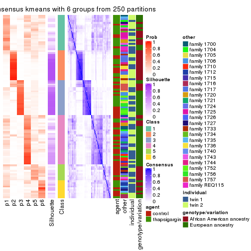
Heatmaps for the membership of samples in all partitions to see how consistent they are:
membership_heatmap(res, k = 2)

membership_heatmap(res, k = 3)
membership_heatmap(res, k = 4)
membership_heatmap(res, k = 5)
membership_heatmap(res, k = 6)
As soon as we have had the classes for columns, we can look for signatures which are significantly different between classes which can be candidate marks for certain classes. Following are the heatmaps for signatures.
Signature heatmaps where rows are scaled:
get_signatures(res, k = 2)
get_signatures(res, k = 3)
get_signatures(res, k = 4)
get_signatures(res, k = 5)
get_signatures(res, k = 6)
Signature heatmaps where rows are not scaled:
get_signatures(res, k = 2, scale_rows = FALSE)
get_signatures(res, k = 3, scale_rows = FALSE)

get_signatures(res, k = 4, scale_rows = FALSE)
get_signatures(res, k = 5, scale_rows = FALSE)
get_signatures(res, k = 6, scale_rows = FALSE)
Compare the overlap of signatures from different k:
compare_signatures(res)
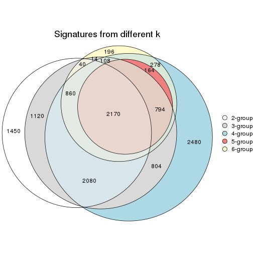
get_signature() returns a data frame invisibly. TO get the list of signatures, the function
call should be assigned to a variable explicitly. In following code, if plot argument is set
to FALSE, no heatmap is plotted while only the differential analysis is performed.
# code only for demonstration
tb = get_signature(res, k = ..., plot = FALSE)
An example of the output of tb is:
#> which_row fdr mean_1 mean_2 scaled_mean_1 scaled_mean_2 km
#> 1 38 0.042760348 8.373488 9.131774 -0.5533452 0.5164555 1
#> 2 40 0.018707592 7.106213 8.469186 -0.6173731 0.5762149 1
#> 3 55 0.019134737 10.221463 11.207825 -0.6159697 0.5749050 1
#> 4 59 0.006059896 5.921854 7.869574 -0.6899429 0.6439467 1
#> 5 60 0.018055526 8.928898 10.211722 -0.6204761 0.5791110 1
#> 6 98 0.009384629 15.714769 14.887706 0.6635654 -0.6193277 2
...
The columns in tb are:
which_row: row indices corresponding to the input matrix.fdr: FDR for the differential test. mean_x: The mean value in group x.scaled_mean_x: The mean value in group x after rows are scaled.km: Row groups if k-means clustering is applied to rows.UMAP plot which shows how samples are separated.
dimension_reduction(res, k = 2, method = "UMAP")
dimension_reduction(res, k = 3, method = "UMAP")
dimension_reduction(res, k = 4, method = "UMAP")
dimension_reduction(res, k = 5, method = "UMAP")
dimension_reduction(res, k = 6, method = "UMAP")
Following heatmap shows how subgroups are split when increasing k:
collect_classes(res)
Test correlation between subgroups and known annotations. If the known annotation is numeric, one-way ANOVA test is applied, and if the known annotation is discrete, chi-squared contingency table test is applied.
test_to_known_factors(res)
#> n agent(p) other(p) individual(p) genotype/variation(p) k
#> CV:kmeans 86 0.706 2.69e-06 0.373 2.27e-03 2
#> CV:kmeans 86 0.889 7.83e-14 0.525 1.09e-05 3
#> CV:kmeans 57 0.623 2.14e-09 0.554 3.24e-08 4
#> CV:kmeans 32 1.000 1.99e-04 0.479 3.55e-06 5
#> CV:kmeans 40 0.534 2.10e-07 0.366 7.83e-08 6
If matrix rows can be associated to genes, consider to use functional_enrichment(res,
...) to perform function enrichment for the signature genes. See this vignette for more detailed explanations.
The object with results only for a single top-value method and a single partition method can be extracted as:
res = res_list["CV", "skmeans"]
# you can also extract it by
# res = res_list["CV:skmeans"]
A summary of res and all the functions that can be applied to it:
res
#> A 'ConsensusPartition' object with k = 2, 3, 4, 5, 6.
#> On a matrix with 51941 rows and 104 columns.
#> Top rows (1000, 2000, 3000, 4000, 5000) are extracted by 'CV' method.
#> Subgroups are detected by 'skmeans' method.
#> Performed in total 1250 partitions by row resampling.
#> Best k for subgroups seems to be 2.
#>
#> Following methods can be applied to this 'ConsensusPartition' object:
#> [1] "cola_report" "collect_classes" "collect_plots"
#> [4] "collect_stats" "colnames" "compare_signatures"
#> [7] "consensus_heatmap" "dimension_reduction" "functional_enrichment"
#> [10] "get_anno_col" "get_anno" "get_classes"
#> [13] "get_consensus" "get_matrix" "get_membership"
#> [16] "get_param" "get_signatures" "get_stats"
#> [19] "is_best_k" "is_stable_k" "membership_heatmap"
#> [22] "ncol" "nrow" "plot_ecdf"
#> [25] "rownames" "select_partition_number" "show"
#> [28] "suggest_best_k" "test_to_known_factors"
collect_plots() function collects all the plots made from res for all k (number of partitions)
into one single page to provide an easy and fast comparison between different k.
collect_plots(res)
The plots are:
k and the heatmap of
predicted classes for each k.k.k.k.All the plots in panels can be made by individual functions and they are plotted later in this section.
select_partition_number() produces several plots showing different
statistics for choosing “optimized” k. There are following statistics:
k;k, the area increased is defined as \(A_k - A_{k-1}\).The detailed explanations of these statistics can be found in the cola vignette.
Generally speaking, lower PAC score, higher mean silhouette score or higher
concordance corresponds to better partition. Rand index and Jaccard index
measure how similar the current partition is compared to partition with k-1.
If they are too similar, we won't accept k is better than k-1.
select_partition_number(res)
The numeric values for all these statistics can be obtained by get_stats().
get_stats(res)
#> k 1-PAC mean_silhouette concordance area_increased Rand Jaccard
#> 2 2 0.00000 0.424 0.673 0.5032 0.502 0.502
#> 3 3 0.00000 0.238 0.487 0.3317 0.804 0.632
#> 4 4 0.00926 0.147 0.437 0.1247 0.769 0.453
#> 5 5 0.06333 0.127 0.378 0.0661 0.820 0.449
#> 6 6 0.15969 0.123 0.349 0.0408 0.849 0.446
suggest_best_k() suggests the best \(k\) based on these statistics. The rules are as follows:
suggest_best_k(res)
#> [1] 2
Following shows the table of the partitions (You need to click the show/hide
code output link to see it). The membership matrix (columns with name p*)
is inferred by
clue::cl_consensus()
function with the SE method. Basically the value in the membership matrix
represents the probability to belong to a certain group. The finall class
label for an item is determined with the group with highest probability it
belongs to.
In get_classes() function, the entropy is calculated from the membership
matrix and the silhouette score is calculated from the consensus matrix.
cbind(get_classes(res, k = 2), get_membership(res, k = 2))
#> class entropy silhouette p1 p2
#> GSM494452 1 0.876 0.5638 0.704 0.296
#> GSM494454 1 0.821 0.6005 0.744 0.256
#> GSM494456 2 0.917 0.4198 0.332 0.668
#> GSM494458 2 0.891 0.4477 0.308 0.692
#> GSM494460 1 0.921 0.5526 0.664 0.336
#> GSM494462 1 0.871 0.5984 0.708 0.292
#> GSM494464 1 0.993 0.2643 0.548 0.452
#> GSM494466 2 0.871 0.4649 0.292 0.708
#> GSM494468 1 0.987 0.3207 0.568 0.432
#> GSM494470 1 0.881 0.5404 0.700 0.300
#> GSM494472 1 0.925 0.5619 0.660 0.340
#> GSM494474 1 0.706 0.5995 0.808 0.192
#> GSM494476 2 0.775 0.4961 0.228 0.772
#> GSM494478 1 0.996 0.1997 0.536 0.464
#> GSM494480 1 0.929 0.5601 0.656 0.344
#> GSM494482 1 0.943 0.5161 0.640 0.360
#> GSM494484 2 0.595 0.5244 0.144 0.856
#> GSM494486 2 0.605 0.5276 0.148 0.852
#> GSM494488 1 0.991 0.3669 0.556 0.444
#> GSM494490 2 0.969 0.2491 0.396 0.604
#> GSM494492 2 0.999 -0.0234 0.484 0.516
#> GSM494494 2 0.808 0.5053 0.248 0.752
#> GSM494496 2 0.966 0.1972 0.392 0.608
#> GSM494498 2 0.430 0.5242 0.088 0.912
#> GSM494500 1 0.760 0.5977 0.780 0.220
#> GSM494502 1 0.921 0.5435 0.664 0.336
#> GSM494504 1 0.961 0.4961 0.616 0.384
#> GSM494506 1 0.983 0.3305 0.576 0.424
#> GSM494508 2 0.833 0.4621 0.264 0.736
#> GSM494510 2 0.518 0.5245 0.116 0.884
#> GSM494512 2 0.966 0.2151 0.392 0.608
#> GSM494514 2 0.990 0.0521 0.440 0.560
#> GSM494516 1 0.861 0.5866 0.716 0.284
#> GSM494518 1 0.844 0.5854 0.728 0.272
#> GSM494520 1 0.881 0.5751 0.700 0.300
#> GSM494522 1 0.981 0.4251 0.580 0.420
#> GSM494524 2 0.949 0.3544 0.368 0.632
#> GSM494526 1 0.844 0.5981 0.728 0.272
#> GSM494528 1 0.921 0.5510 0.664 0.336
#> GSM494530 1 0.871 0.5849 0.708 0.292
#> GSM494532 1 0.871 0.5938 0.708 0.292
#> GSM494534 1 0.988 0.3428 0.564 0.436
#> GSM494536 1 0.891 0.5804 0.692 0.308
#> GSM494538 1 0.895 0.5751 0.688 0.312
#> GSM494540 1 0.881 0.5917 0.700 0.300
#> GSM494542 1 0.983 0.4291 0.576 0.424
#> GSM494544 2 1.000 -0.1679 0.496 0.504
#> GSM494546 2 0.827 0.4416 0.260 0.740
#> GSM494548 2 0.891 0.3637 0.308 0.692
#> GSM494550 2 0.925 0.2861 0.340 0.660
#> GSM494552 1 0.886 0.5472 0.696 0.304
#> GSM494554 1 0.949 0.5109 0.632 0.368
#> GSM494453 1 0.895 0.5812 0.688 0.312
#> GSM494455 1 0.714 0.6031 0.804 0.196
#> GSM494457 2 0.827 0.4868 0.260 0.740
#> GSM494459 2 0.802 0.4845 0.244 0.756
#> GSM494461 1 0.992 0.3072 0.552 0.448
#> GSM494463 1 0.839 0.5966 0.732 0.268
#> GSM494465 2 0.925 0.4264 0.340 0.660
#> GSM494467 2 0.839 0.4803 0.268 0.732
#> GSM494469 1 0.949 0.5121 0.632 0.368
#> GSM494471 1 0.961 0.4586 0.616 0.384
#> GSM494473 1 0.876 0.5970 0.704 0.296
#> GSM494475 1 0.895 0.5422 0.688 0.312
#> GSM494477 2 0.697 0.5033 0.188 0.812
#> GSM494479 2 0.943 0.3884 0.360 0.640
#> GSM494481 1 0.999 0.2199 0.520 0.480
#> GSM494483 2 0.998 0.0380 0.476 0.524
#> GSM494485 2 0.605 0.5228 0.148 0.852
#> GSM494487 2 0.753 0.5186 0.216 0.784
#> GSM494489 1 0.973 0.4380 0.596 0.404
#> GSM494491 2 0.975 0.2743 0.408 0.592
#> GSM494493 2 0.943 0.2931 0.360 0.640
#> GSM494495 2 0.753 0.5226 0.216 0.784
#> GSM494497 2 1.000 -0.0834 0.488 0.512
#> GSM494499 2 0.430 0.5193 0.088 0.912
#> GSM494501 1 0.839 0.5929 0.732 0.268
#> GSM494503 1 0.932 0.5018 0.652 0.348
#> GSM494505 1 0.895 0.5658 0.688 0.312
#> GSM494507 2 0.993 0.1216 0.452 0.548
#> GSM494509 2 0.921 0.3283 0.336 0.664
#> GSM494511 2 0.506 0.5192 0.112 0.888
#> GSM494513 2 0.990 0.0447 0.440 0.560
#> GSM494515 2 0.999 -0.0826 0.484 0.516
#> GSM494517 1 0.881 0.5673 0.700 0.300
#> GSM494519 1 0.714 0.5989 0.804 0.196
#> GSM494521 1 0.963 0.4815 0.612 0.388
#> GSM494523 1 0.891 0.5728 0.692 0.308
#> GSM494525 2 0.993 0.1272 0.452 0.548
#> GSM494527 1 0.913 0.5365 0.672 0.328
#> GSM494529 1 0.827 0.5932 0.740 0.260
#> GSM494531 1 0.871 0.5801 0.708 0.292
#> GSM494533 2 0.992 0.0960 0.448 0.552
#> GSM494535 1 1.000 0.1747 0.508 0.492
#> GSM494537 1 0.881 0.5803 0.700 0.300
#> GSM494539 1 0.881 0.5645 0.700 0.300
#> GSM494541 1 0.955 0.4868 0.624 0.376
#> GSM494543 2 0.983 0.1399 0.424 0.576
#> GSM494545 2 1.000 -0.1784 0.500 0.500
#> GSM494547 2 0.595 0.5147 0.144 0.856
#> GSM494549 2 0.904 0.3629 0.320 0.680
#> GSM494551 2 0.904 0.2972 0.320 0.680
#> GSM494553 1 0.900 0.5447 0.684 0.316
#> GSM494555 1 0.932 0.5036 0.652 0.348
cbind(get_classes(res, k = 3), get_membership(res, k = 3))
#> class entropy silhouette p1 p2 p3
#> GSM494452 2 0.917 0.2857 0.152 0.476 0.372
#> GSM494454 2 0.870 0.3433 0.160 0.584 0.256
#> GSM494456 1 0.812 0.4268 0.648 0.184 0.168
#> GSM494458 1 0.646 0.4709 0.764 0.128 0.108
#> GSM494460 2 0.981 0.2409 0.244 0.404 0.352
#> GSM494462 2 0.936 0.2595 0.188 0.492 0.320
#> GSM494464 2 0.957 0.2111 0.336 0.456 0.208
#> GSM494466 1 0.834 0.3947 0.628 0.204 0.168
#> GSM494468 2 0.946 0.3142 0.240 0.500 0.260
#> GSM494470 2 0.917 0.3540 0.244 0.540 0.216
#> GSM494472 2 0.876 0.3590 0.196 0.588 0.216
#> GSM494474 2 0.858 0.3561 0.152 0.596 0.252
#> GSM494476 1 0.710 0.4574 0.724 0.144 0.132
#> GSM494478 1 0.995 -0.1522 0.376 0.332 0.292
#> GSM494480 2 0.966 0.2469 0.252 0.464 0.284
#> GSM494482 2 0.951 0.3208 0.256 0.492 0.252
#> GSM494484 1 0.659 0.4620 0.752 0.092 0.156
#> GSM494486 1 0.609 0.4686 0.784 0.092 0.124
#> GSM494488 2 0.980 0.2478 0.268 0.432 0.300
#> GSM494490 1 0.994 -0.1362 0.376 0.340 0.284
#> GSM494492 3 0.996 -0.0515 0.328 0.300 0.372
#> GSM494494 1 0.736 0.4292 0.704 0.172 0.124
#> GSM494496 3 0.951 0.3036 0.304 0.216 0.480
#> GSM494498 1 0.746 0.2001 0.560 0.040 0.400
#> GSM494500 2 0.880 0.3307 0.148 0.560 0.292
#> GSM494502 2 0.947 0.2378 0.188 0.456 0.356
#> GSM494504 2 0.933 0.1778 0.164 0.432 0.404
#> GSM494506 2 0.997 0.1528 0.296 0.360 0.344
#> GSM494508 3 0.926 0.1516 0.376 0.160 0.464
#> GSM494510 1 0.759 0.2580 0.588 0.052 0.360
#> GSM494512 3 0.910 0.2533 0.184 0.276 0.540
#> GSM494514 3 0.870 0.3284 0.180 0.228 0.592
#> GSM494516 2 0.926 0.2788 0.192 0.516 0.292
#> GSM494518 2 0.942 0.3002 0.208 0.496 0.296
#> GSM494520 2 0.945 0.3067 0.212 0.492 0.296
#> GSM494522 3 0.988 -0.1267 0.264 0.340 0.396
#> GSM494524 1 0.933 0.2122 0.516 0.268 0.216
#> GSM494526 2 0.885 0.3447 0.156 0.560 0.284
#> GSM494528 2 0.967 0.3323 0.248 0.460 0.292
#> GSM494530 2 0.891 0.2734 0.128 0.496 0.376
#> GSM494532 2 0.917 0.3258 0.180 0.524 0.296
#> GSM494534 2 0.988 0.1740 0.356 0.384 0.260
#> GSM494536 2 0.932 0.2749 0.168 0.464 0.368
#> GSM494538 3 0.959 -0.2544 0.200 0.380 0.420
#> GSM494540 2 0.953 0.2355 0.192 0.432 0.376
#> GSM494542 3 0.996 -0.1400 0.288 0.348 0.364
#> GSM494544 3 0.894 0.3402 0.200 0.232 0.568
#> GSM494546 3 0.928 0.1875 0.368 0.164 0.468
#> GSM494548 3 0.870 0.3066 0.320 0.128 0.552
#> GSM494550 3 0.907 0.3591 0.272 0.184 0.544
#> GSM494552 2 0.889 0.2766 0.128 0.504 0.368
#> GSM494554 2 0.988 0.1659 0.260 0.380 0.360
#> GSM494453 2 0.928 0.2804 0.172 0.488 0.340
#> GSM494455 2 0.882 0.3611 0.168 0.572 0.260
#> GSM494457 1 0.651 0.4647 0.760 0.136 0.104
#> GSM494459 1 0.573 0.4765 0.804 0.108 0.088
#> GSM494461 2 0.972 0.2163 0.248 0.448 0.304
#> GSM494463 2 0.877 0.2885 0.128 0.536 0.336
#> GSM494465 1 0.935 0.2270 0.516 0.232 0.252
#> GSM494467 1 0.783 0.4273 0.668 0.136 0.196
#> GSM494469 2 0.962 0.2649 0.292 0.468 0.240
#> GSM494471 2 0.968 0.2591 0.256 0.460 0.284
#> GSM494473 2 0.856 0.3112 0.124 0.572 0.304
#> GSM494475 2 0.905 0.3036 0.164 0.532 0.304
#> GSM494477 1 0.559 0.4740 0.812 0.092 0.096
#> GSM494479 1 0.921 0.2745 0.528 0.276 0.196
#> GSM494481 2 0.992 0.1520 0.312 0.396 0.292
#> GSM494483 1 0.981 -0.1083 0.380 0.380 0.240
#> GSM494485 1 0.621 0.4676 0.776 0.088 0.136
#> GSM494487 1 0.697 0.4673 0.732 0.124 0.144
#> GSM494489 2 0.994 0.1853 0.308 0.388 0.304
#> GSM494491 1 0.941 0.1772 0.496 0.300 0.204
#> GSM494493 1 0.988 -0.0879 0.388 0.260 0.352
#> GSM494495 1 0.801 0.4216 0.656 0.192 0.152
#> GSM494497 3 0.883 0.2955 0.180 0.244 0.576
#> GSM494499 1 0.710 0.2652 0.608 0.032 0.360
#> GSM494501 2 0.949 0.2861 0.196 0.464 0.340
#> GSM494503 2 0.974 0.2385 0.236 0.428 0.336
#> GSM494505 2 0.911 0.2589 0.140 0.448 0.412
#> GSM494507 1 0.959 0.1591 0.476 0.244 0.280
#> GSM494509 3 0.915 0.3197 0.308 0.172 0.520
#> GSM494511 1 0.806 0.1574 0.532 0.068 0.400
#> GSM494513 3 0.865 0.3293 0.196 0.204 0.600
#> GSM494515 3 0.819 0.2991 0.144 0.220 0.636
#> GSM494517 2 0.949 0.3043 0.192 0.456 0.352
#> GSM494519 2 0.887 0.3313 0.156 0.556 0.288
#> GSM494521 2 0.990 0.1774 0.276 0.396 0.328
#> GSM494523 2 0.957 0.2665 0.200 0.436 0.364
#> GSM494525 1 0.962 0.1106 0.468 0.292 0.240
#> GSM494527 2 0.892 0.2391 0.124 0.468 0.408
#> GSM494529 2 0.951 0.2991 0.304 0.480 0.216
#> GSM494531 3 0.961 -0.2043 0.204 0.368 0.428
#> GSM494533 1 0.958 0.0651 0.480 0.252 0.268
#> GSM494535 1 0.996 -0.0477 0.376 0.324 0.300
#> GSM494537 2 0.916 0.3189 0.188 0.532 0.280
#> GSM494539 3 0.934 -0.2592 0.164 0.412 0.424
#> GSM494541 3 0.985 -0.1458 0.252 0.360 0.388
#> GSM494543 1 0.994 -0.1032 0.384 0.296 0.320
#> GSM494545 3 0.882 0.2627 0.176 0.248 0.576
#> GSM494547 1 0.819 0.1522 0.528 0.076 0.396
#> GSM494549 3 0.870 0.3655 0.244 0.168 0.588
#> GSM494551 3 0.879 0.2750 0.308 0.140 0.552
#> GSM494553 2 0.936 0.2450 0.184 0.484 0.332
#> GSM494555 2 0.971 0.2873 0.252 0.452 0.296
cbind(get_classes(res, k = 4), get_membership(res, k = 4))
#> class entropy silhouette p1 p2 p3 p4
#> GSM494452 1 0.825 0.09166 0.548 0.072 0.156 0.224
#> GSM494454 1 0.916 -0.01877 0.380 0.128 0.136 0.356
#> GSM494456 2 0.806 0.43639 0.148 0.596 0.124 0.132
#> GSM494458 2 0.688 0.48065 0.108 0.692 0.084 0.116
#> GSM494460 4 0.993 0.01010 0.268 0.192 0.260 0.280
#> GSM494462 4 0.935 0.03255 0.316 0.116 0.188 0.380
#> GSM494464 1 0.946 0.08735 0.416 0.240 0.160 0.184
#> GSM494466 2 0.806 0.42632 0.136 0.592 0.168 0.104
#> GSM494468 1 0.958 -0.00743 0.336 0.172 0.160 0.332
#> GSM494470 4 0.916 -0.01356 0.340 0.168 0.104 0.388
#> GSM494472 1 0.904 0.07023 0.460 0.164 0.116 0.260
#> GSM494474 4 0.891 0.00119 0.368 0.068 0.192 0.372
#> GSM494476 2 0.710 0.47606 0.120 0.672 0.132 0.076
#> GSM494478 1 0.952 0.08120 0.348 0.332 0.160 0.160
#> GSM494480 1 0.964 0.05518 0.364 0.188 0.164 0.284
#> GSM494482 1 0.877 0.09374 0.512 0.132 0.140 0.216
#> GSM494484 2 0.656 0.47121 0.068 0.704 0.156 0.072
#> GSM494486 2 0.597 0.48278 0.060 0.748 0.124 0.068
#> GSM494488 1 0.968 0.00221 0.356 0.164 0.200 0.280
#> GSM494490 2 0.979 -0.09216 0.288 0.312 0.240 0.160
#> GSM494492 3 0.995 -0.10004 0.204 0.260 0.280 0.256
#> GSM494494 2 0.793 0.43683 0.116 0.608 0.140 0.136
#> GSM494496 3 0.903 0.32795 0.168 0.196 0.488 0.148
#> GSM494498 2 0.745 0.09624 0.056 0.484 0.408 0.052
#> GSM494500 4 0.911 0.05181 0.312 0.088 0.196 0.404
#> GSM494502 4 0.952 0.05392 0.284 0.124 0.224 0.368
#> GSM494504 4 0.932 0.12283 0.216 0.108 0.272 0.404
#> GSM494506 1 0.981 -0.02106 0.320 0.184 0.204 0.292
#> GSM494508 3 0.931 0.21946 0.228 0.252 0.412 0.108
#> GSM494510 2 0.781 0.07495 0.068 0.456 0.412 0.064
#> GSM494512 3 0.901 0.22846 0.140 0.148 0.480 0.232
#> GSM494514 3 0.836 0.27088 0.176 0.104 0.560 0.160
#> GSM494516 4 0.883 0.13128 0.224 0.092 0.196 0.488
#> GSM494518 4 0.875 0.11747 0.200 0.144 0.136 0.520
#> GSM494520 4 0.917 0.09407 0.204 0.136 0.196 0.464
#> GSM494522 3 0.951 -0.18012 0.208 0.124 0.344 0.324
#> GSM494524 2 0.944 0.15097 0.220 0.416 0.224 0.140
#> GSM494526 1 0.767 0.10290 0.620 0.080 0.176 0.124
#> GSM494528 1 0.952 0.00796 0.340 0.160 0.160 0.340
#> GSM494530 4 0.934 0.04128 0.320 0.088 0.260 0.332
#> GSM494532 4 0.892 0.08513 0.268 0.120 0.140 0.472
#> GSM494534 4 0.989 0.01502 0.280 0.188 0.232 0.300
#> GSM494536 1 0.854 0.09240 0.508 0.068 0.208 0.216
#> GSM494538 4 0.944 0.09135 0.292 0.096 0.292 0.320
#> GSM494540 4 0.850 0.15416 0.140 0.080 0.276 0.504
#> GSM494542 4 0.985 0.05979 0.240 0.196 0.228 0.336
#> GSM494544 3 0.803 0.33321 0.164 0.084 0.588 0.164
#> GSM494546 3 0.844 0.33178 0.072 0.244 0.520 0.164
#> GSM494548 3 0.743 0.40649 0.112 0.144 0.648 0.096
#> GSM494550 3 0.745 0.38620 0.072 0.140 0.640 0.148
#> GSM494552 1 0.897 0.04733 0.440 0.076 0.252 0.232
#> GSM494554 1 0.981 0.02596 0.320 0.168 0.236 0.276
#> GSM494453 1 0.914 0.08512 0.452 0.144 0.144 0.260
#> GSM494455 1 0.884 0.05912 0.456 0.112 0.124 0.308
#> GSM494457 2 0.674 0.48856 0.128 0.700 0.092 0.080
#> GSM494459 2 0.642 0.49617 0.096 0.724 0.076 0.104
#> GSM494461 4 0.983 0.04707 0.244 0.192 0.224 0.340
#> GSM494463 1 0.908 0.02540 0.408 0.108 0.152 0.332
#> GSM494465 2 0.898 0.29790 0.152 0.496 0.168 0.184
#> GSM494467 2 0.755 0.44967 0.108 0.636 0.160 0.096
#> GSM494469 1 0.967 0.08617 0.372 0.240 0.160 0.228
#> GSM494471 4 0.980 0.05888 0.272 0.188 0.204 0.336
#> GSM494473 1 0.864 0.03875 0.504 0.080 0.184 0.232
#> GSM494475 1 0.864 0.11588 0.524 0.120 0.136 0.220
#> GSM494477 2 0.573 0.49614 0.064 0.768 0.080 0.088
#> GSM494479 2 0.861 0.36861 0.168 0.540 0.144 0.148
#> GSM494481 2 0.977 -0.14879 0.304 0.320 0.184 0.192
#> GSM494483 1 0.990 0.01584 0.288 0.280 0.184 0.248
#> GSM494485 2 0.633 0.48563 0.068 0.728 0.116 0.088
#> GSM494487 2 0.706 0.48063 0.152 0.668 0.120 0.060
#> GSM494489 4 0.988 0.02964 0.260 0.220 0.200 0.320
#> GSM494491 2 0.914 0.23802 0.180 0.472 0.200 0.148
#> GSM494493 2 0.965 0.04248 0.196 0.380 0.252 0.172
#> GSM494495 2 0.735 0.44732 0.084 0.652 0.152 0.112
#> GSM494497 3 0.874 0.17072 0.248 0.068 0.472 0.212
#> GSM494499 2 0.736 0.10256 0.036 0.476 0.420 0.068
#> GSM494501 4 0.916 0.09586 0.260 0.104 0.200 0.436
#> GSM494503 4 0.925 0.04519 0.308 0.132 0.152 0.408
#> GSM494505 4 0.936 0.05521 0.328 0.108 0.204 0.360
#> GSM494507 2 0.971 0.02221 0.192 0.372 0.196 0.240
#> GSM494509 3 0.898 0.34035 0.160 0.204 0.492 0.144
#> GSM494511 3 0.686 0.05678 0.036 0.392 0.532 0.040
#> GSM494513 3 0.813 0.31764 0.140 0.116 0.588 0.156
#> GSM494515 3 0.923 0.05439 0.204 0.100 0.404 0.292
#> GSM494517 4 0.870 0.05832 0.288 0.092 0.140 0.480
#> GSM494519 4 0.788 0.15204 0.204 0.088 0.112 0.596
#> GSM494521 4 0.961 0.06275 0.212 0.216 0.176 0.396
#> GSM494523 4 0.931 0.05639 0.304 0.116 0.184 0.396
#> GSM494525 1 0.950 0.05065 0.356 0.312 0.124 0.208
#> GSM494527 1 0.897 0.08843 0.464 0.092 0.216 0.228
#> GSM494529 4 0.938 0.05316 0.300 0.160 0.144 0.396
#> GSM494531 4 0.962 0.06114 0.296 0.144 0.208 0.352
#> GSM494533 2 0.971 -0.06087 0.148 0.344 0.260 0.248
#> GSM494535 1 0.998 0.01911 0.272 0.256 0.220 0.252
#> GSM494537 1 0.902 0.09208 0.488 0.140 0.172 0.200
#> GSM494539 4 0.903 0.06938 0.308 0.084 0.192 0.416
#> GSM494541 1 0.976 -0.00423 0.320 0.172 0.204 0.304
#> GSM494543 4 0.978 0.07595 0.176 0.224 0.252 0.348
#> GSM494545 3 0.865 0.29287 0.172 0.120 0.532 0.176
#> GSM494547 3 0.764 0.01306 0.040 0.424 0.452 0.084
#> GSM494549 3 0.879 0.34662 0.104 0.208 0.504 0.184
#> GSM494551 3 0.880 0.32190 0.108 0.172 0.504 0.216
#> GSM494553 1 0.935 0.02511 0.360 0.092 0.276 0.272
#> GSM494555 1 0.896 0.09165 0.492 0.140 0.152 0.216
cbind(get_classes(res, k = 5), get_membership(res, k = 5))
#> class entropy silhouette p1 p2 p3 p4 p5
#> GSM494452 1 0.862 0.103269 0.464 0.096 0.108 0.236 0.096
#> GSM494454 4 0.935 0.019422 0.252 0.120 0.104 0.356 0.168
#> GSM494456 2 0.824 0.346073 0.092 0.532 0.116 0.096 0.164
#> GSM494458 2 0.758 0.413787 0.064 0.596 0.092 0.112 0.136
#> GSM494460 4 0.978 0.038517 0.216 0.116 0.208 0.276 0.184
#> GSM494462 1 0.907 0.009087 0.380 0.064 0.132 0.256 0.168
#> GSM494464 1 0.984 0.010897 0.268 0.188 0.136 0.176 0.232
#> GSM494466 2 0.781 0.345350 0.060 0.512 0.084 0.068 0.276
#> GSM494468 4 0.965 0.010724 0.236 0.160 0.096 0.276 0.232
#> GSM494470 4 0.928 0.054236 0.252 0.100 0.084 0.324 0.240
#> GSM494472 1 0.946 0.038985 0.324 0.096 0.124 0.240 0.216
#> GSM494474 4 0.889 0.056827 0.220 0.064 0.084 0.384 0.248
#> GSM494476 2 0.727 0.436288 0.076 0.628 0.104 0.080 0.112
#> GSM494478 1 0.968 0.013415 0.272 0.208 0.140 0.116 0.264
#> GSM494480 4 0.958 0.015226 0.240 0.116 0.116 0.296 0.232
#> GSM494482 1 0.901 0.058827 0.388 0.108 0.064 0.212 0.228
#> GSM494484 2 0.611 0.451563 0.036 0.704 0.096 0.044 0.120
#> GSM494486 2 0.550 0.457758 0.032 0.748 0.104 0.036 0.080
#> GSM494488 4 0.965 0.029924 0.204 0.104 0.168 0.308 0.216
#> GSM494490 5 0.994 0.012622 0.184 0.216 0.168 0.184 0.248
#> GSM494492 5 0.968 0.063370 0.128 0.212 0.220 0.136 0.304
#> GSM494494 2 0.713 0.406802 0.040 0.612 0.088 0.072 0.188
#> GSM494496 3 0.900 0.235651 0.160 0.136 0.448 0.112 0.144
#> GSM494498 2 0.772 -0.035633 0.048 0.408 0.404 0.048 0.092
#> GSM494500 4 0.909 0.037046 0.228 0.056 0.164 0.384 0.168
#> GSM494502 4 0.898 0.062902 0.200 0.108 0.152 0.436 0.104
#> GSM494504 4 0.905 0.106432 0.168 0.088 0.220 0.412 0.112
#> GSM494506 1 0.968 0.008383 0.288 0.128 0.144 0.264 0.176
#> GSM494508 3 0.911 0.203807 0.144 0.220 0.412 0.100 0.124
#> GSM494510 2 0.780 0.011926 0.060 0.424 0.372 0.032 0.112
#> GSM494512 3 0.912 0.203693 0.124 0.112 0.416 0.216 0.132
#> GSM494514 3 0.813 0.250286 0.080 0.072 0.532 0.172 0.144
#> GSM494516 4 0.832 0.156455 0.072 0.080 0.148 0.504 0.196
#> GSM494518 4 0.751 0.162873 0.152 0.088 0.068 0.600 0.092
#> GSM494520 4 0.912 0.061227 0.252 0.100 0.100 0.388 0.160
#> GSM494522 4 0.971 0.083709 0.184 0.108 0.212 0.296 0.200
#> GSM494524 2 0.942 0.086205 0.100 0.352 0.160 0.148 0.240
#> GSM494526 1 0.858 0.082099 0.460 0.068 0.080 0.204 0.188
#> GSM494528 4 0.937 0.046910 0.252 0.112 0.092 0.328 0.216
#> GSM494530 1 0.952 0.009508 0.288 0.072 0.176 0.228 0.236
#> GSM494532 4 0.865 0.120169 0.196 0.080 0.072 0.452 0.200
#> GSM494534 4 0.922 0.115959 0.156 0.080 0.172 0.392 0.200
#> GSM494536 1 0.869 0.111837 0.480 0.080 0.140 0.144 0.156
#> GSM494538 1 0.932 0.035891 0.368 0.088 0.132 0.204 0.208
#> GSM494540 4 0.886 0.111242 0.160 0.056 0.152 0.432 0.200
#> GSM494542 4 0.976 0.021357 0.208 0.140 0.168 0.308 0.176
#> GSM494544 3 0.758 0.303345 0.116 0.056 0.596 0.112 0.120
#> GSM494546 3 0.780 0.364201 0.072 0.176 0.568 0.096 0.088
#> GSM494548 3 0.709 0.394052 0.060 0.100 0.640 0.080 0.120
#> GSM494550 3 0.786 0.335517 0.060 0.116 0.568 0.116 0.140
#> GSM494552 1 0.915 0.042155 0.312 0.044 0.168 0.188 0.288
#> GSM494554 1 0.978 -0.009695 0.268 0.136 0.140 0.228 0.228
#> GSM494453 1 0.908 0.092208 0.416 0.092 0.120 0.160 0.212
#> GSM494455 1 0.858 0.035748 0.392 0.060 0.064 0.308 0.176
#> GSM494457 2 0.626 0.459536 0.036 0.696 0.076 0.064 0.128
#> GSM494459 2 0.705 0.438111 0.052 0.628 0.088 0.064 0.168
#> GSM494461 4 0.981 -0.013331 0.220 0.148 0.136 0.260 0.236
#> GSM494463 1 0.888 0.087246 0.416 0.064 0.112 0.236 0.172
#> GSM494465 2 0.885 0.158961 0.064 0.380 0.128 0.120 0.308
#> GSM494467 2 0.824 0.356114 0.096 0.532 0.144 0.084 0.144
#> GSM494469 4 0.961 -0.014936 0.244 0.100 0.140 0.280 0.236
#> GSM494471 4 0.942 0.059266 0.156 0.100 0.164 0.364 0.216
#> GSM494473 1 0.816 0.131246 0.544 0.084 0.144 0.108 0.120
#> GSM494475 1 0.873 0.084978 0.480 0.124 0.096 0.160 0.140
#> GSM494477 2 0.600 0.461172 0.036 0.720 0.092 0.064 0.088
#> GSM494479 2 0.859 0.225171 0.184 0.448 0.112 0.044 0.212
#> GSM494481 1 0.983 -0.000127 0.272 0.164 0.152 0.172 0.240
#> GSM494483 2 0.978 -0.074780 0.152 0.276 0.144 0.176 0.252
#> GSM494485 2 0.586 0.454183 0.060 0.720 0.096 0.020 0.104
#> GSM494487 2 0.604 0.453435 0.056 0.716 0.064 0.048 0.116
#> GSM494489 5 0.923 -0.041598 0.260 0.140 0.072 0.172 0.356
#> GSM494491 2 0.956 -0.047736 0.188 0.296 0.128 0.112 0.276
#> GSM494493 3 0.978 -0.026944 0.120 0.244 0.244 0.156 0.236
#> GSM494495 2 0.783 0.371603 0.092 0.564 0.168 0.060 0.116
#> GSM494497 3 0.864 0.210289 0.196 0.104 0.464 0.064 0.172
#> GSM494499 3 0.783 0.018024 0.052 0.392 0.404 0.040 0.112
#> GSM494501 4 0.926 0.085709 0.224 0.080 0.148 0.376 0.172
#> GSM494503 1 0.932 0.018654 0.340 0.100 0.096 0.228 0.236
#> GSM494505 1 0.942 -0.010091 0.304 0.080 0.184 0.284 0.148
#> GSM494507 2 0.994 -0.124618 0.208 0.252 0.180 0.188 0.172
#> GSM494509 3 0.883 0.261257 0.116 0.184 0.464 0.132 0.104
#> GSM494511 3 0.710 0.081647 0.028 0.368 0.488 0.040 0.076
#> GSM494513 3 0.766 0.314236 0.136 0.084 0.592 0.084 0.104
#> GSM494515 3 0.842 0.201654 0.148 0.052 0.496 0.168 0.136
#> GSM494517 4 0.842 0.124289 0.148 0.076 0.132 0.512 0.132
#> GSM494519 4 0.749 0.156385 0.128 0.052 0.092 0.600 0.128
#> GSM494521 5 0.966 -0.042130 0.232 0.124 0.120 0.260 0.264
#> GSM494523 4 0.943 0.029524 0.236 0.080 0.152 0.332 0.200
#> GSM494525 1 0.958 -0.055289 0.300 0.264 0.164 0.100 0.172
#> GSM494527 1 0.872 0.080675 0.420 0.036 0.204 0.204 0.136
#> GSM494529 4 0.941 0.064758 0.228 0.156 0.068 0.312 0.236
#> GSM494531 1 0.960 0.031385 0.300 0.096 0.196 0.160 0.248
#> GSM494533 5 0.975 -0.041030 0.132 0.224 0.136 0.244 0.264
#> GSM494535 4 0.972 0.028876 0.176 0.164 0.120 0.272 0.268
#> GSM494537 1 0.886 0.085333 0.440 0.060 0.156 0.176 0.168
#> GSM494539 4 0.954 0.019201 0.240 0.096 0.132 0.296 0.236
#> GSM494541 1 0.937 0.058408 0.360 0.092 0.140 0.232 0.176
#> GSM494543 2 0.991 -0.190498 0.228 0.236 0.216 0.152 0.168
#> GSM494545 3 0.862 0.222762 0.112 0.088 0.488 0.172 0.140
#> GSM494547 3 0.721 0.180212 0.032 0.316 0.524 0.048 0.080
#> GSM494549 3 0.849 0.323021 0.100 0.128 0.512 0.132 0.128
#> GSM494551 3 0.842 0.354628 0.064 0.160 0.504 0.120 0.152
#> GSM494553 5 0.938 -0.079219 0.288 0.080 0.196 0.132 0.304
#> GSM494555 1 0.929 0.065770 0.360 0.100 0.108 0.184 0.248
cbind(get_classes(res, k = 6), get_membership(res, k = 6))
#> class entropy silhouette p1 p2 p3 p4 p5 p6
#> GSM494452 1 0.881 0.049099 0.340 0.032 0.076 0.108 0.248 0.196
#> GSM494454 5 0.905 0.075674 0.180 0.076 0.052 0.176 0.360 0.156
#> GSM494456 2 0.861 0.313716 0.204 0.436 0.128 0.072 0.080 0.080
#> GSM494458 2 0.678 0.430103 0.060 0.636 0.068 0.128 0.068 0.040
#> GSM494460 6 0.947 -0.027864 0.100 0.100 0.104 0.200 0.192 0.304
#> GSM494462 5 0.956 0.014591 0.120 0.100 0.088 0.236 0.240 0.216
#> GSM494464 5 0.945 0.008978 0.232 0.148 0.080 0.092 0.292 0.156
#> GSM494466 2 0.800 0.361393 0.200 0.492 0.096 0.068 0.112 0.032
#> GSM494468 5 0.936 0.046110 0.228 0.104 0.088 0.116 0.324 0.140
#> GSM494470 5 0.923 0.075980 0.112 0.084 0.092 0.132 0.324 0.256
#> GSM494472 1 0.943 0.033042 0.288 0.080 0.080 0.148 0.224 0.180
#> GSM494474 4 0.946 0.014915 0.168 0.044 0.140 0.268 0.200 0.180
#> GSM494476 2 0.640 0.454739 0.076 0.672 0.088 0.072 0.056 0.036
#> GSM494478 1 0.831 0.113195 0.464 0.216 0.084 0.060 0.072 0.104
#> GSM494480 1 0.914 0.036054 0.380 0.088 0.100 0.192 0.128 0.112
#> GSM494482 1 0.911 0.044620 0.304 0.088 0.064 0.096 0.280 0.168
#> GSM494484 2 0.623 0.436463 0.056 0.676 0.128 0.056 0.048 0.036
#> GSM494486 2 0.576 0.469419 0.068 0.712 0.096 0.040 0.064 0.020
#> GSM494488 5 0.938 0.052893 0.108 0.108 0.116 0.168 0.352 0.148
#> GSM494490 1 0.985 0.047584 0.252 0.140 0.148 0.148 0.176 0.136
#> GSM494492 1 0.982 0.022529 0.256 0.176 0.156 0.112 0.152 0.148
#> GSM494494 2 0.715 0.425264 0.072 0.600 0.096 0.080 0.124 0.028
#> GSM494496 3 0.872 0.174207 0.112 0.124 0.332 0.032 0.092 0.308
#> GSM494498 2 0.773 0.102912 0.080 0.420 0.332 0.016 0.056 0.096
#> GSM494500 5 0.938 -0.026670 0.128 0.064 0.100 0.264 0.264 0.180
#> GSM494502 4 0.948 0.048672 0.204 0.064 0.140 0.300 0.156 0.136
#> GSM494504 4 0.943 0.053197 0.088 0.068 0.180 0.284 0.216 0.164
#> GSM494506 1 0.914 -0.031030 0.304 0.080 0.124 0.296 0.104 0.092
#> GSM494508 3 0.914 0.207000 0.148 0.156 0.376 0.076 0.160 0.084
#> GSM494510 2 0.764 0.119031 0.072 0.404 0.372 0.032 0.072 0.048
#> GSM494512 3 0.882 0.185683 0.048 0.096 0.412 0.136 0.176 0.132
#> GSM494514 3 0.862 0.192992 0.096 0.040 0.392 0.092 0.120 0.260
#> GSM494516 4 0.894 0.032193 0.128 0.056 0.104 0.340 0.280 0.092
#> GSM494518 4 0.889 0.062855 0.088 0.084 0.064 0.368 0.252 0.144
#> GSM494520 4 0.901 0.054900 0.120 0.084 0.068 0.388 0.176 0.164
#> GSM494522 4 0.956 0.042493 0.104 0.088 0.216 0.264 0.208 0.120
#> GSM494524 2 0.905 0.039707 0.248 0.308 0.116 0.080 0.204 0.044
#> GSM494526 1 0.866 0.068939 0.392 0.032 0.060 0.152 0.192 0.172
#> GSM494528 4 0.962 -0.005551 0.164 0.096 0.092 0.260 0.224 0.164
#> GSM494530 4 0.932 0.005152 0.176 0.040 0.112 0.280 0.164 0.228
#> GSM494532 4 0.807 0.099084 0.108 0.088 0.052 0.520 0.128 0.104
#> GSM494534 4 0.954 0.040066 0.196 0.124 0.112 0.304 0.168 0.096
#> GSM494536 1 0.884 -0.019660 0.384 0.032 0.148 0.120 0.112 0.204
#> GSM494538 4 0.957 0.058197 0.164 0.080 0.136 0.304 0.148 0.168
#> GSM494540 4 0.713 0.144478 0.080 0.032 0.080 0.608 0.096 0.104
#> GSM494542 4 0.923 0.087312 0.132 0.116 0.124 0.380 0.092 0.156
#> GSM494544 3 0.785 0.207946 0.112 0.024 0.440 0.076 0.052 0.296
#> GSM494546 3 0.747 0.348203 0.048 0.164 0.548 0.136 0.028 0.076
#> GSM494548 3 0.788 0.349953 0.068 0.100 0.548 0.092 0.100 0.092
#> GSM494550 3 0.795 0.322551 0.044 0.100 0.524 0.156 0.088 0.088
#> GSM494552 6 0.784 0.151426 0.128 0.024 0.112 0.116 0.092 0.528
#> GSM494554 6 0.971 0.051460 0.200 0.104 0.156 0.136 0.132 0.272
#> GSM494453 1 0.933 0.075156 0.280 0.076 0.060 0.168 0.184 0.232
#> GSM494455 6 0.902 0.024671 0.204 0.028 0.068 0.240 0.184 0.276
#> GSM494457 2 0.719 0.440072 0.148 0.592 0.092 0.036 0.080 0.052
#> GSM494459 2 0.642 0.464860 0.104 0.664 0.060 0.052 0.092 0.028
#> GSM494461 6 0.925 0.030346 0.116 0.116 0.100 0.088 0.256 0.324
#> GSM494463 6 0.816 0.079440 0.152 0.024 0.088 0.132 0.120 0.484
#> GSM494465 2 0.877 0.111618 0.188 0.372 0.112 0.040 0.220 0.068
#> GSM494467 2 0.844 0.344237 0.112 0.460 0.180 0.076 0.124 0.048
#> GSM494469 5 0.925 0.034799 0.096 0.136 0.068 0.128 0.288 0.284
#> GSM494471 5 0.909 0.074531 0.080 0.088 0.100 0.144 0.364 0.224
#> GSM494473 1 0.877 0.045697 0.320 0.032 0.056 0.228 0.120 0.244
#> GSM494475 1 0.918 -0.008811 0.288 0.064 0.056 0.144 0.236 0.212
#> GSM494477 2 0.546 0.470158 0.060 0.740 0.072 0.028 0.060 0.040
#> GSM494479 2 0.929 0.078101 0.236 0.320 0.104 0.072 0.160 0.108
#> GSM494481 1 0.951 0.086538 0.324 0.176 0.124 0.096 0.124 0.156
#> GSM494483 1 0.933 0.032582 0.316 0.144 0.088 0.208 0.176 0.068
#> GSM494485 2 0.597 0.460122 0.072 0.704 0.088 0.056 0.036 0.044
#> GSM494487 2 0.595 0.468296 0.056 0.708 0.056 0.056 0.084 0.040
#> GSM494489 6 0.906 0.098715 0.132 0.140 0.112 0.116 0.092 0.408
#> GSM494491 2 0.951 -0.020101 0.240 0.276 0.120 0.072 0.140 0.152
#> GSM494493 3 0.973 0.086424 0.120 0.200 0.260 0.104 0.176 0.140
#> GSM494495 2 0.770 0.361872 0.108 0.548 0.156 0.064 0.068 0.056
#> GSM494497 3 0.861 0.113885 0.112 0.064 0.380 0.056 0.104 0.284
#> GSM494499 2 0.734 0.073756 0.072 0.416 0.380 0.016 0.044 0.072
#> GSM494501 5 0.903 0.015944 0.076 0.072 0.144 0.208 0.376 0.124
#> GSM494503 4 0.940 0.016577 0.248 0.064 0.112 0.280 0.172 0.124
#> GSM494505 4 0.946 -0.000419 0.208 0.060 0.096 0.272 0.176 0.188
#> GSM494507 2 0.984 -0.028074 0.128 0.248 0.180 0.144 0.172 0.128
#> GSM494509 3 0.820 0.333189 0.088 0.124 0.512 0.068 0.108 0.100
#> GSM494511 3 0.726 0.004114 0.044 0.344 0.464 0.068 0.040 0.040
#> GSM494513 3 0.827 0.254247 0.096 0.064 0.484 0.084 0.084 0.188
#> GSM494515 3 0.856 0.090136 0.080 0.040 0.344 0.140 0.076 0.320
#> GSM494517 4 0.866 -0.021823 0.072 0.060 0.068 0.356 0.296 0.148
#> GSM494519 4 0.847 0.038111 0.060 0.068 0.068 0.428 0.228 0.148
#> GSM494521 6 0.965 0.011953 0.168 0.108 0.084 0.180 0.204 0.256
#> GSM494523 4 0.927 0.054573 0.148 0.092 0.104 0.364 0.176 0.116
#> GSM494525 1 0.967 0.027254 0.276 0.216 0.120 0.128 0.148 0.112
#> GSM494527 1 0.881 0.029238 0.348 0.040 0.088 0.080 0.240 0.204
#> GSM494529 5 0.939 0.015411 0.172 0.076 0.092 0.236 0.296 0.128
#> GSM494531 6 0.938 0.087131 0.204 0.084 0.080 0.216 0.120 0.296
#> GSM494533 2 0.942 -0.110914 0.088 0.260 0.132 0.248 0.200 0.072
#> GSM494535 5 0.990 0.005813 0.168 0.144 0.140 0.160 0.236 0.152
#> GSM494537 1 0.853 0.033770 0.432 0.044 0.072 0.204 0.104 0.144
#> GSM494539 4 0.944 0.036625 0.156 0.068 0.112 0.312 0.160 0.192
#> GSM494541 4 0.921 0.013554 0.252 0.104 0.108 0.328 0.072 0.136
#> GSM494543 4 0.979 0.006495 0.148 0.220 0.128 0.240 0.116 0.148
#> GSM494545 3 0.849 0.222442 0.060 0.076 0.444 0.100 0.104 0.216
#> GSM494547 3 0.770 0.150749 0.060 0.276 0.480 0.048 0.044 0.092
#> GSM494549 3 0.850 0.256600 0.080 0.084 0.468 0.144 0.076 0.148
#> GSM494551 3 0.851 0.304483 0.076 0.148 0.460 0.148 0.056 0.112
#> GSM494553 6 0.851 0.137511 0.088 0.072 0.156 0.076 0.144 0.464
#> GSM494555 6 0.904 0.082056 0.228 0.084 0.072 0.116 0.132 0.368
Heatmaps for the consensus matrix. It visualizes the probability of two samples to be in a same group.
consensus_heatmap(res, k = 2)
consensus_heatmap(res, k = 3)
consensus_heatmap(res, k = 4)
consensus_heatmap(res, k = 5)
consensus_heatmap(res, k = 6)
Heatmaps for the membership of samples in all partitions to see how consistent they are:
membership_heatmap(res, k = 2)
membership_heatmap(res, k = 3)
membership_heatmap(res, k = 4)
membership_heatmap(res, k = 5)
membership_heatmap(res, k = 6)
As soon as we have had the classes for columns, we can look for signatures which are significantly different between classes which can be candidate marks for certain classes. Following are the heatmaps for signatures.
Signature heatmaps where rows are scaled:
get_signatures(res, k = 2)
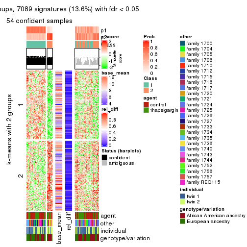
get_signatures(res, k = 3)

get_signatures(res, k = 4)

get_signatures(res, k = 5)

get_signatures(res, k = 6)

Signature heatmaps where rows are not scaled:
get_signatures(res, k = 2, scale_rows = FALSE)
get_signatures(res, k = 3, scale_rows = FALSE)

get_signatures(res, k = 4, scale_rows = FALSE)

get_signatures(res, k = 5, scale_rows = FALSE)

get_signatures(res, k = 6, scale_rows = FALSE)

Compare the overlap of signatures from different k:
compare_signatures(res)
get_signature() returns a data frame invisibly. TO get the list of signatures, the function
call should be assigned to a variable explicitly. In following code, if plot argument is set
to FALSE, no heatmap is plotted while only the differential analysis is performed.
# code only for demonstration
tb = get_signature(res, k = ..., plot = FALSE)
An example of the output of tb is:
#> which_row fdr mean_1 mean_2 scaled_mean_1 scaled_mean_2 km
#> 1 38 0.042760348 8.373488 9.131774 -0.5533452 0.5164555 1
#> 2 40 0.018707592 7.106213 8.469186 -0.6173731 0.5762149 1
#> 3 55 0.019134737 10.221463 11.207825 -0.6159697 0.5749050 1
#> 4 59 0.006059896 5.921854 7.869574 -0.6899429 0.6439467 1
#> 5 60 0.018055526 8.928898 10.211722 -0.6204761 0.5791110 1
#> 6 98 0.009384629 15.714769 14.887706 0.6635654 -0.6193277 2
...
The columns in tb are:
which_row: row indices corresponding to the input matrix.fdr: FDR for the differential test. mean_x: The mean value in group x.scaled_mean_x: The mean value in group x after rows are scaled.km: Row groups if k-means clustering is applied to rows.UMAP plot which shows how samples are separated.
dimension_reduction(res, k = 2, method = "UMAP")
dimension_reduction(res, k = 3, method = "UMAP")
dimension_reduction(res, k = 4, method = "UMAP")
dimension_reduction(res, k = 5, method = "UMAP")
dimension_reduction(res, k = 6, method = "UMAP")
Following heatmap shows how subgroups are split when increasing k:
collect_classes(res)
Test correlation between subgroups and known annotations. If the known annotation is numeric, one-way ANOVA test is applied, and if the known annotation is discrete, chi-squared contingency table test is applied.
test_to_known_factors(res)
#> n agent(p) other(p) individual(p) genotype/variation(p) k
#> CV:skmeans 54 0.636 5.78e-05 0.227 0.037 2
#> CV:skmeans 0 NA NA NA NA 3
#> CV:skmeans 0 NA NA NA NA 4
#> CV:skmeans 0 NA NA NA NA 5
#> CV:skmeans 0 NA NA NA NA 6
If matrix rows can be associated to genes, consider to use functional_enrichment(res,
...) to perform function enrichment for the signature genes. See this vignette for more detailed explanations.
The object with results only for a single top-value method and a single partition method can be extracted as:
res = res_list["CV", "pam"]
# you can also extract it by
# res = res_list["CV:pam"]
A summary of res and all the functions that can be applied to it:
res
#> A 'ConsensusPartition' object with k = 2, 3, 4, 5, 6.
#> On a matrix with 51941 rows and 104 columns.
#> Top rows (1000, 2000, 3000, 4000, 5000) are extracted by 'CV' method.
#> Subgroups are detected by 'pam' method.
#> Performed in total 1250 partitions by row resampling.
#> Best k for subgroups seems to be 2.
#>
#> Following methods can be applied to this 'ConsensusPartition' object:
#> [1] "cola_report" "collect_classes" "collect_plots"
#> [4] "collect_stats" "colnames" "compare_signatures"
#> [7] "consensus_heatmap" "dimension_reduction" "functional_enrichment"
#> [10] "get_anno_col" "get_anno" "get_classes"
#> [13] "get_consensus" "get_matrix" "get_membership"
#> [16] "get_param" "get_signatures" "get_stats"
#> [19] "is_best_k" "is_stable_k" "membership_heatmap"
#> [22] "ncol" "nrow" "plot_ecdf"
#> [25] "rownames" "select_partition_number" "show"
#> [28] "suggest_best_k" "test_to_known_factors"
collect_plots() function collects all the plots made from res for all k (number of partitions)
into one single page to provide an easy and fast comparison between different k.
collect_plots(res)
The plots are:
k and the heatmap of
predicted classes for each k.k.k.k.All the plots in panels can be made by individual functions and they are plotted later in this section.
select_partition_number() produces several plots showing different
statistics for choosing “optimized” k. There are following statistics:
k;k, the area increased is defined as \(A_k - A_{k-1}\).The detailed explanations of these statistics can be found in the cola vignette.
Generally speaking, lower PAC score, higher mean silhouette score or higher
concordance corresponds to better partition. Rand index and Jaccard index
measure how similar the current partition is compared to partition with k-1.
If they are too similar, we won't accept k is better than k-1.
select_partition_number(res)
The numeric values for all these statistics can be obtained by get_stats().
get_stats(res)
#> k 1-PAC mean_silhouette concordance area_increased Rand Jaccard
#> 2 2 0.00021 0.280 0.628 0.4938 0.500 0.500
#> 3 3 0.04229 0.384 0.609 0.3383 0.684 0.447
#> 4 4 0.13991 0.212 0.518 0.1191 0.745 0.385
#> 5 5 0.24090 0.317 0.552 0.0641 0.825 0.433
#> 6 6 0.32127 0.283 0.536 0.0328 0.948 0.752
suggest_best_k() suggests the best \(k\) based on these statistics. The rules are as follows:
suggest_best_k(res)
#> [1] 2
Following shows the table of the partitions (You need to click the show/hide
code output link to see it). The membership matrix (columns with name p*)
is inferred by
clue::cl_consensus()
function with the SE method. Basically the value in the membership matrix
represents the probability to belong to a certain group. The finall class
label for an item is determined with the group with highest probability it
belongs to.
In get_classes() function, the entropy is calculated from the membership
matrix and the silhouette score is calculated from the consensus matrix.
cbind(get_classes(res, k = 2), get_membership(res, k = 2))
#> class entropy silhouette p1 p2
#> GSM494452 2 0.996 0.20623 0.464 0.536
#> GSM494454 2 0.973 -0.13142 0.404 0.596
#> GSM494456 2 0.680 0.45329 0.180 0.820
#> GSM494458 1 0.998 0.14004 0.524 0.476
#> GSM494460 1 0.932 0.32725 0.652 0.348
#> GSM494462 1 0.871 0.39548 0.708 0.292
#> GSM494464 1 0.850 0.42357 0.724 0.276
#> GSM494466 2 0.978 0.32240 0.412 0.588
#> GSM494468 1 0.921 0.36334 0.664 0.336
#> GSM494470 1 0.795 0.41067 0.760 0.240
#> GSM494472 1 0.983 0.25566 0.576 0.424
#> GSM494474 1 0.955 0.37097 0.624 0.376
#> GSM494476 2 0.506 0.45212 0.112 0.888
#> GSM494478 2 0.939 0.37666 0.356 0.644
#> GSM494480 1 0.981 0.35270 0.580 0.420
#> GSM494482 1 0.980 0.28464 0.584 0.416
#> GSM494484 2 0.961 0.35291 0.384 0.616
#> GSM494486 2 0.871 0.35652 0.292 0.708
#> GSM494488 1 0.932 0.24182 0.652 0.348
#> GSM494490 2 0.980 0.26489 0.416 0.584
#> GSM494492 2 0.939 0.30973 0.356 0.644
#> GSM494494 2 0.987 -0.07143 0.432 0.568
#> GSM494496 2 1.000 -0.03400 0.492 0.508
#> GSM494498 2 0.833 0.39778 0.264 0.736
#> GSM494500 1 0.999 0.04015 0.520 0.480
#> GSM494502 2 0.913 0.29819 0.328 0.672
#> GSM494504 2 0.921 0.37498 0.336 0.664
#> GSM494506 1 0.844 0.44706 0.728 0.272
#> GSM494508 2 0.808 0.40273 0.248 0.752
#> GSM494510 2 1.000 0.29887 0.492 0.508
#> GSM494512 1 0.981 0.32036 0.580 0.420
#> GSM494514 1 0.992 -0.19128 0.552 0.448
#> GSM494516 1 0.997 0.18328 0.532 0.468
#> GSM494518 1 0.958 0.35935 0.620 0.380
#> GSM494520 1 0.998 0.08766 0.524 0.476
#> GSM494522 1 0.936 0.32846 0.648 0.352
#> GSM494524 2 0.973 0.10758 0.404 0.596
#> GSM494526 1 0.988 0.23651 0.564 0.436
#> GSM494528 1 0.730 0.43630 0.796 0.204
#> GSM494530 1 0.958 0.42900 0.620 0.380
#> GSM494532 1 0.975 0.32975 0.592 0.408
#> GSM494534 1 0.987 0.04549 0.568 0.432
#> GSM494536 1 0.808 0.39546 0.752 0.248
#> GSM494538 1 0.917 0.41770 0.668 0.332
#> GSM494540 1 0.795 0.41235 0.760 0.240
#> GSM494542 1 0.971 0.17246 0.600 0.400
#> GSM494544 1 0.952 -0.06248 0.628 0.372
#> GSM494546 2 0.943 0.39380 0.360 0.640
#> GSM494548 2 0.871 0.33848 0.292 0.708
#> GSM494550 2 0.946 0.30292 0.364 0.636
#> GSM494552 1 0.753 0.42835 0.784 0.216
#> GSM494554 2 1.000 0.13343 0.492 0.508
#> GSM494453 2 0.994 -0.00463 0.456 0.544
#> GSM494455 1 0.808 0.47691 0.752 0.248
#> GSM494457 2 0.518 0.45855 0.116 0.884
#> GSM494459 2 0.909 0.10722 0.324 0.676
#> GSM494461 1 0.821 0.43510 0.744 0.256
#> GSM494463 1 0.895 0.31859 0.688 0.312
#> GSM494465 2 0.990 -0.08721 0.440 0.560
#> GSM494467 2 0.999 0.27346 0.480 0.520
#> GSM494469 1 0.971 0.30862 0.600 0.400
#> GSM494471 1 0.855 0.45892 0.720 0.280
#> GSM494473 1 0.975 0.35109 0.592 0.408
#> GSM494475 1 0.644 0.47196 0.836 0.164
#> GSM494477 2 0.753 0.41562 0.216 0.784
#> GSM494479 2 0.821 0.38989 0.256 0.744
#> GSM494481 2 0.881 0.09564 0.300 0.700
#> GSM494483 1 0.992 0.36180 0.552 0.448
#> GSM494485 2 0.506 0.43318 0.112 0.888
#> GSM494487 2 0.993 0.32460 0.452 0.548
#> GSM494489 1 0.917 0.24642 0.668 0.332
#> GSM494491 2 0.978 0.03199 0.412 0.588
#> GSM494493 2 0.921 0.37501 0.336 0.664
#> GSM494495 2 0.996 0.07560 0.464 0.536
#> GSM494497 1 0.855 0.21383 0.720 0.280
#> GSM494499 2 0.983 0.32910 0.424 0.576
#> GSM494501 1 0.584 0.48849 0.860 0.140
#> GSM494503 2 0.978 -0.15681 0.412 0.588
#> GSM494505 1 0.753 0.49006 0.784 0.216
#> GSM494507 2 0.999 -0.21779 0.480 0.520
#> GSM494509 2 0.939 0.35720 0.356 0.644
#> GSM494511 2 0.939 0.37454 0.356 0.644
#> GSM494513 1 0.980 -0.05679 0.584 0.416
#> GSM494515 2 0.925 0.37901 0.340 0.660
#> GSM494517 1 0.861 0.43470 0.716 0.284
#> GSM494519 1 0.714 0.49110 0.804 0.196
#> GSM494521 1 0.760 0.44047 0.780 0.220
#> GSM494523 1 0.978 0.13226 0.588 0.412
#> GSM494525 2 1.000 -0.18324 0.492 0.508
#> GSM494527 1 0.971 0.33680 0.600 0.400
#> GSM494529 1 0.886 0.36381 0.696 0.304
#> GSM494531 1 0.482 0.48444 0.896 0.104
#> GSM494533 2 0.891 0.34668 0.308 0.692
#> GSM494535 2 0.981 0.07264 0.420 0.580
#> GSM494537 1 0.958 0.31396 0.620 0.380
#> GSM494539 1 0.876 0.41065 0.704 0.296
#> GSM494541 1 0.827 0.42712 0.740 0.260
#> GSM494543 1 0.975 0.14732 0.592 0.408
#> GSM494545 1 0.921 0.15252 0.664 0.336
#> GSM494547 2 0.697 0.45581 0.188 0.812
#> GSM494549 2 0.973 0.13198 0.404 0.596
#> GSM494551 2 0.388 0.43210 0.076 0.924
#> GSM494553 1 0.615 0.44878 0.848 0.152
#> GSM494555 1 0.644 0.47448 0.836 0.164
cbind(get_classes(res, k = 3), get_membership(res, k = 3))
#> class entropy silhouette p1 p2 p3
#> GSM494452 3 0.999 0.0695 0.308 0.344 0.348
#> GSM494454 3 0.966 0.1553 0.240 0.300 0.460
#> GSM494456 1 0.596 0.6000 0.792 0.100 0.108
#> GSM494458 2 0.633 0.5278 0.144 0.768 0.088
#> GSM494460 2 0.763 0.4869 0.120 0.680 0.200
#> GSM494462 2 0.725 0.4647 0.052 0.648 0.300
#> GSM494464 2 0.807 -0.0867 0.064 0.472 0.464
#> GSM494466 1 0.969 0.3387 0.456 0.292 0.252
#> GSM494468 2 0.654 0.5452 0.076 0.748 0.176
#> GSM494470 2 0.629 0.4666 0.020 0.692 0.288
#> GSM494472 2 0.772 0.5243 0.156 0.680 0.164
#> GSM494474 2 0.459 0.5473 0.032 0.848 0.120
#> GSM494476 1 0.621 0.5964 0.768 0.164 0.068
#> GSM494478 1 0.710 0.5802 0.720 0.108 0.172
#> GSM494480 2 0.947 0.1925 0.188 0.456 0.356
#> GSM494482 2 0.681 0.4647 0.060 0.712 0.228
#> GSM494484 1 0.582 0.5527 0.752 0.024 0.224
#> GSM494486 1 0.764 0.4324 0.592 0.352 0.056
#> GSM494488 3 0.772 0.5079 0.172 0.148 0.680
#> GSM494490 1 0.909 0.3581 0.552 0.228 0.220
#> GSM494492 1 0.880 0.1345 0.508 0.120 0.372
#> GSM494494 2 0.998 -0.0811 0.304 0.352 0.344
#> GSM494496 2 0.907 0.2685 0.284 0.540 0.176
#> GSM494498 1 0.327 0.5870 0.892 0.004 0.104
#> GSM494500 3 0.807 0.4595 0.244 0.120 0.636
#> GSM494502 1 0.919 0.3023 0.468 0.380 0.152
#> GSM494504 1 0.674 0.5578 0.708 0.052 0.240
#> GSM494506 3 0.760 0.3959 0.088 0.252 0.660
#> GSM494508 1 0.552 0.5530 0.788 0.032 0.180
#> GSM494510 1 0.739 0.5708 0.704 0.136 0.160
#> GSM494512 3 0.950 0.2876 0.208 0.316 0.476
#> GSM494514 3 0.749 -0.0612 0.408 0.040 0.552
#> GSM494516 3 0.908 -0.0517 0.140 0.392 0.468
#> GSM494518 2 0.852 0.3858 0.132 0.588 0.280
#> GSM494520 3 0.929 0.3991 0.256 0.220 0.524
#> GSM494522 2 0.906 0.2427 0.148 0.504 0.348
#> GSM494524 2 0.641 0.5113 0.272 0.700 0.028
#> GSM494526 2 0.885 0.3319 0.168 0.568 0.264
#> GSM494528 3 0.811 0.3617 0.092 0.312 0.596
#> GSM494530 3 0.909 0.3439 0.168 0.304 0.528
#> GSM494532 3 0.852 0.0463 0.092 0.448 0.460
#> GSM494534 3 0.994 0.0217 0.300 0.312 0.388
#> GSM494536 3 0.800 0.3449 0.088 0.304 0.608
#> GSM494538 2 0.701 0.4644 0.064 0.696 0.240
#> GSM494540 3 0.547 0.5044 0.036 0.168 0.796
#> GSM494542 3 0.797 0.4513 0.184 0.156 0.660
#> GSM494544 3 0.718 0.2895 0.268 0.060 0.672
#> GSM494546 1 0.682 0.6003 0.740 0.108 0.152
#> GSM494548 1 0.930 0.4071 0.496 0.324 0.180
#> GSM494550 1 0.902 0.3359 0.480 0.384 0.136
#> GSM494552 3 0.880 0.2848 0.136 0.320 0.544
#> GSM494554 3 0.789 0.3023 0.352 0.068 0.580
#> GSM494453 1 0.970 -0.0384 0.436 0.336 0.228
#> GSM494455 3 0.847 0.3574 0.116 0.308 0.576
#> GSM494457 1 0.518 0.5931 0.832 0.080 0.088
#> GSM494459 2 0.753 0.4489 0.236 0.672 0.092
#> GSM494461 2 0.734 0.4514 0.056 0.644 0.300
#> GSM494463 2 0.732 0.4934 0.104 0.700 0.196
#> GSM494465 2 0.817 0.3320 0.132 0.632 0.236
#> GSM494467 1 0.917 0.3195 0.460 0.148 0.392
#> GSM494469 2 0.428 0.5539 0.056 0.872 0.072
#> GSM494471 3 0.820 0.3685 0.092 0.328 0.580
#> GSM494473 2 0.918 0.3614 0.228 0.540 0.232
#> GSM494475 3 0.806 0.2204 0.072 0.376 0.552
#> GSM494477 1 0.718 0.5209 0.712 0.104 0.184
#> GSM494479 1 0.749 0.5620 0.676 0.232 0.092
#> GSM494481 1 0.960 0.0684 0.432 0.364 0.204
#> GSM494483 2 0.884 0.4131 0.160 0.564 0.276
#> GSM494485 1 0.784 0.4054 0.576 0.360 0.064
#> GSM494487 1 0.778 0.3914 0.532 0.052 0.416
#> GSM494489 3 0.498 0.5175 0.096 0.064 0.840
#> GSM494491 2 0.778 0.4526 0.304 0.620 0.076
#> GSM494493 1 0.870 0.3879 0.544 0.124 0.332
#> GSM494495 3 0.915 0.3937 0.272 0.192 0.536
#> GSM494497 3 0.808 0.4333 0.148 0.204 0.648
#> GSM494499 1 0.663 0.5637 0.732 0.064 0.204
#> GSM494501 3 0.691 0.3739 0.036 0.308 0.656
#> GSM494503 2 0.938 0.3490 0.236 0.512 0.252
#> GSM494505 3 0.756 0.4104 0.064 0.308 0.628
#> GSM494507 2 0.631 0.5265 0.128 0.772 0.100
#> GSM494509 1 0.908 0.2096 0.508 0.152 0.340
#> GSM494511 1 0.611 0.5852 0.760 0.048 0.192
#> GSM494513 3 0.713 0.3676 0.284 0.052 0.664
#> GSM494515 1 0.561 0.5828 0.776 0.028 0.196
#> GSM494517 2 0.724 0.3796 0.044 0.628 0.328
#> GSM494519 3 0.813 0.3035 0.088 0.328 0.584
#> GSM494521 3 0.722 0.4947 0.132 0.152 0.716
#> GSM494523 3 0.747 0.4741 0.176 0.128 0.696
#> GSM494525 2 0.780 0.5095 0.128 0.668 0.204
#> GSM494527 2 0.638 0.5258 0.164 0.760 0.076
#> GSM494529 3 0.732 0.4810 0.112 0.184 0.704
#> GSM494531 3 0.660 0.3085 0.012 0.384 0.604
#> GSM494533 1 0.987 0.2595 0.412 0.312 0.276
#> GSM494535 2 0.764 0.4874 0.248 0.660 0.092
#> GSM494537 3 0.926 0.3165 0.220 0.252 0.528
#> GSM494539 2 0.535 0.5263 0.028 0.796 0.176
#> GSM494541 2 0.840 -0.0461 0.084 0.472 0.444
#> GSM494543 3 0.871 0.4208 0.224 0.184 0.592
#> GSM494545 3 0.523 0.5231 0.104 0.068 0.828
#> GSM494547 1 0.465 0.6065 0.856 0.080 0.064
#> GSM494549 2 0.820 0.3053 0.376 0.544 0.080
#> GSM494551 1 0.785 0.5084 0.668 0.188 0.144
#> GSM494553 3 0.686 0.4816 0.132 0.128 0.740
#> GSM494555 3 0.738 0.2133 0.032 0.456 0.512
cbind(get_classes(res, k = 4), get_membership(res, k = 4))
#> class entropy silhouette p1 p2 p3 p4
#> GSM494452 2 0.954 -0.00110 0.252 0.396 0.200 0.152
#> GSM494454 4 0.818 0.27986 0.140 0.300 0.052 0.508
#> GSM494456 3 0.677 0.58414 0.100 0.036 0.668 0.196
#> GSM494458 2 0.718 0.32570 0.136 0.668 0.104 0.092
#> GSM494460 2 0.870 0.24413 0.380 0.400 0.072 0.148
#> GSM494462 4 0.875 -0.16466 0.240 0.332 0.044 0.384
#> GSM494464 2 0.753 -0.00671 0.220 0.564 0.016 0.200
#> GSM494466 2 0.666 0.02827 0.068 0.636 0.268 0.028
#> GSM494468 2 0.872 0.22040 0.244 0.360 0.040 0.356
#> GSM494470 2 0.823 0.13984 0.268 0.364 0.012 0.356
#> GSM494472 1 0.914 -0.28082 0.352 0.308 0.068 0.272
#> GSM494474 2 0.818 0.22853 0.224 0.452 0.020 0.304
#> GSM494476 3 0.840 0.44599 0.108 0.272 0.520 0.100
#> GSM494478 3 0.772 0.54626 0.180 0.072 0.612 0.136
#> GSM494480 4 0.907 0.09826 0.316 0.216 0.076 0.392
#> GSM494482 2 0.662 0.28688 0.188 0.652 0.008 0.152
#> GSM494484 3 0.559 0.58218 0.212 0.016 0.724 0.048
#> GSM494486 3 0.725 0.47523 0.028 0.216 0.616 0.140
#> GSM494488 1 0.882 0.14914 0.500 0.188 0.104 0.208
#> GSM494490 1 0.934 -0.15033 0.384 0.196 0.308 0.112
#> GSM494492 2 0.922 -0.01432 0.296 0.420 0.156 0.128
#> GSM494494 2 0.795 0.10447 0.196 0.584 0.068 0.152
#> GSM494496 2 0.963 0.10663 0.124 0.316 0.284 0.276
#> GSM494498 3 0.376 0.58294 0.172 0.012 0.816 0.000
#> GSM494500 4 0.830 0.21939 0.292 0.088 0.104 0.516
#> GSM494502 3 0.780 0.22323 0.028 0.120 0.428 0.424
#> GSM494504 3 0.931 0.41022 0.196 0.140 0.440 0.224
#> GSM494506 4 0.748 0.25367 0.240 0.076 0.076 0.608
#> GSM494508 3 0.788 0.46745 0.280 0.088 0.556 0.076
#> GSM494510 3 0.454 0.59018 0.080 0.080 0.824 0.016
#> GSM494512 4 0.971 0.12113 0.212 0.316 0.156 0.316
#> GSM494514 3 0.794 0.00909 0.412 0.056 0.444 0.088
#> GSM494516 4 0.623 0.36157 0.052 0.152 0.072 0.724
#> GSM494518 4 0.725 0.13828 0.112 0.280 0.024 0.584
#> GSM494520 4 0.852 0.20025 0.284 0.128 0.088 0.500
#> GSM494522 1 0.875 -0.03167 0.396 0.244 0.044 0.316
#> GSM494524 2 0.971 0.26443 0.232 0.368 0.172 0.228
#> GSM494526 2 0.939 0.14722 0.248 0.396 0.112 0.244
#> GSM494528 1 0.829 0.18458 0.560 0.128 0.104 0.208
#> GSM494530 1 0.891 -0.09579 0.384 0.236 0.056 0.324
#> GSM494532 4 0.843 0.21914 0.300 0.244 0.028 0.428
#> GSM494534 4 0.873 0.21143 0.136 0.124 0.228 0.512
#> GSM494536 1 0.480 0.30659 0.820 0.048 0.076 0.056
#> GSM494538 2 0.828 0.13712 0.300 0.448 0.024 0.228
#> GSM494540 4 0.745 0.19295 0.356 0.096 0.028 0.520
#> GSM494542 4 0.909 0.20335 0.212 0.308 0.080 0.400
#> GSM494544 1 0.811 0.22380 0.516 0.100 0.312 0.072
#> GSM494546 3 0.542 0.56912 0.032 0.024 0.736 0.208
#> GSM494548 3 0.761 0.35500 0.036 0.324 0.536 0.104
#> GSM494550 3 0.830 0.34750 0.036 0.236 0.492 0.236
#> GSM494552 1 0.313 0.31846 0.892 0.072 0.024 0.012
#> GSM494554 1 0.571 0.30797 0.752 0.052 0.152 0.044
#> GSM494453 1 0.962 -0.00405 0.376 0.256 0.216 0.152
#> GSM494455 4 0.822 0.17405 0.380 0.100 0.068 0.452
#> GSM494457 3 0.858 0.45157 0.172 0.212 0.524 0.092
#> GSM494459 2 0.620 0.25417 0.116 0.736 0.084 0.064
#> GSM494461 4 0.822 -0.12846 0.236 0.344 0.016 0.404
#> GSM494463 2 0.855 0.22789 0.364 0.396 0.040 0.200
#> GSM494465 2 0.451 0.19545 0.016 0.820 0.048 0.116
#> GSM494467 3 0.926 0.29632 0.212 0.164 0.456 0.168
#> GSM494469 2 0.748 0.28428 0.224 0.560 0.012 0.204
#> GSM494471 4 0.838 0.20910 0.256 0.348 0.020 0.376
#> GSM494473 1 0.895 -0.11238 0.432 0.224 0.072 0.272
#> GSM494475 1 0.662 0.15920 0.640 0.120 0.008 0.232
#> GSM494477 3 0.846 0.46812 0.116 0.184 0.552 0.148
#> GSM494479 3 0.720 0.53403 0.028 0.204 0.624 0.144
#> GSM494481 2 0.791 0.13665 0.104 0.608 0.144 0.144
#> GSM494483 2 0.652 0.22512 0.152 0.704 0.048 0.096
#> GSM494485 2 0.784 -0.23430 0.056 0.464 0.400 0.080
#> GSM494487 3 0.860 0.36936 0.288 0.116 0.492 0.104
#> GSM494489 1 0.709 0.19504 0.608 0.216 0.012 0.164
#> GSM494491 1 0.930 -0.17788 0.424 0.240 0.116 0.220
#> GSM494493 3 0.901 0.19415 0.060 0.320 0.368 0.252
#> GSM494495 2 0.921 -0.09692 0.316 0.404 0.116 0.164
#> GSM494497 1 0.727 0.28207 0.652 0.164 0.116 0.068
#> GSM494499 3 0.449 0.59398 0.040 0.068 0.836 0.056
#> GSM494501 4 0.678 0.30370 0.268 0.096 0.016 0.620
#> GSM494503 4 0.793 0.18547 0.208 0.160 0.056 0.576
#> GSM494505 1 0.834 -0.12590 0.380 0.240 0.020 0.360
#> GSM494507 2 0.762 0.25909 0.136 0.592 0.044 0.228
#> GSM494509 1 0.913 -0.17741 0.380 0.120 0.360 0.140
#> GSM494511 3 0.507 0.58804 0.164 0.036 0.776 0.024
#> GSM494513 1 0.841 0.09813 0.420 0.024 0.288 0.268
#> GSM494515 3 0.456 0.59204 0.080 0.012 0.820 0.088
#> GSM494517 4 0.734 0.15918 0.132 0.228 0.032 0.608
#> GSM494519 4 0.620 0.36514 0.172 0.072 0.040 0.716
#> GSM494521 1 0.614 0.16137 0.644 0.020 0.040 0.296
#> GSM494523 4 0.749 0.32350 0.184 0.108 0.076 0.632
#> GSM494525 2 0.882 0.23816 0.216 0.456 0.068 0.260
#> GSM494527 2 0.856 0.25511 0.384 0.384 0.044 0.188
#> GSM494529 4 0.857 0.16637 0.320 0.232 0.036 0.412
#> GSM494531 1 0.731 0.12611 0.584 0.212 0.012 0.192
#> GSM494533 2 0.935 -0.00343 0.108 0.380 0.208 0.304
#> GSM494535 2 0.973 0.22981 0.192 0.344 0.176 0.288
#> GSM494537 1 0.817 0.14397 0.488 0.336 0.056 0.120
#> GSM494539 2 0.862 0.23419 0.304 0.408 0.036 0.252
#> GSM494541 2 0.723 0.07264 0.288 0.584 0.028 0.100
#> GSM494543 1 0.821 0.10831 0.528 0.144 0.060 0.268
#> GSM494545 1 0.823 0.18618 0.556 0.084 0.136 0.224
#> GSM494547 3 0.407 0.59463 0.040 0.068 0.856 0.036
#> GSM494549 3 0.956 -0.15038 0.232 0.244 0.384 0.140
#> GSM494551 3 0.846 0.35434 0.092 0.288 0.504 0.116
#> GSM494553 1 0.362 0.29727 0.852 0.012 0.012 0.124
#> GSM494555 1 0.504 0.27402 0.772 0.168 0.012 0.048
cbind(get_classes(res, k = 5), get_membership(res, k = 5))
#> class entropy silhouette p1 p2 p3 p4 p5
#> GSM494452 5 0.953 0.14606 0.192 0.152 0.236 0.096 0.324
#> GSM494454 4 0.795 0.27296 0.088 0.024 0.124 0.464 0.300
#> GSM494456 2 0.830 0.45657 0.052 0.508 0.152 0.176 0.112
#> GSM494458 1 0.619 0.21058 0.540 0.044 0.008 0.036 0.372
#> GSM494460 1 0.467 0.52493 0.760 0.040 0.172 0.024 0.004
#> GSM494462 1 0.609 0.44250 0.660 0.024 0.076 0.216 0.024
#> GSM494464 5 0.787 0.19228 0.232 0.000 0.204 0.112 0.452
#> GSM494466 5 0.559 0.43748 0.092 0.132 0.052 0.004 0.720
#> GSM494468 1 0.568 0.49502 0.728 0.020 0.040 0.104 0.108
#> GSM494470 1 0.595 0.45352 0.692 0.012 0.072 0.168 0.056
#> GSM494472 1 0.592 0.52300 0.724 0.044 0.096 0.092 0.044
#> GSM494474 1 0.703 0.36626 0.584 0.016 0.044 0.188 0.168
#> GSM494476 5 0.822 -0.14113 0.068 0.320 0.148 0.040 0.424
#> GSM494478 2 0.809 0.46444 0.064 0.544 0.112 0.152 0.128
#> GSM494480 4 0.863 -0.00188 0.324 0.016 0.148 0.332 0.180
#> GSM494482 1 0.649 0.30382 0.552 0.000 0.112 0.032 0.304
#> GSM494484 2 0.609 0.52113 0.024 0.656 0.212 0.016 0.092
#> GSM494486 2 0.856 0.37028 0.208 0.468 0.108 0.056 0.160
#> GSM494488 3 0.811 0.35227 0.044 0.060 0.488 0.200 0.208
#> GSM494490 5 0.965 -0.00142 0.204 0.236 0.212 0.084 0.264
#> GSM494492 5 0.694 0.39859 0.032 0.076 0.220 0.064 0.608
#> GSM494494 5 0.366 0.45119 0.024 0.008 0.076 0.040 0.852
#> GSM494496 1 0.811 0.24021 0.448 0.292 0.020 0.128 0.112
#> GSM494498 2 0.298 0.55667 0.000 0.860 0.108 0.000 0.032
#> GSM494500 4 0.843 0.24903 0.080 0.064 0.260 0.460 0.136
#> GSM494502 4 0.694 -0.14643 0.180 0.380 0.008 0.424 0.008
#> GSM494504 2 0.935 0.14953 0.064 0.316 0.152 0.252 0.216
#> GSM494506 4 0.785 0.29572 0.080 0.092 0.196 0.556 0.076
#> GSM494508 2 0.776 0.38643 0.052 0.512 0.228 0.032 0.176
#> GSM494510 2 0.281 0.56561 0.032 0.900 0.036 0.008 0.024
#> GSM494512 5 0.901 0.05809 0.148 0.072 0.152 0.208 0.420
#> GSM494514 3 0.687 0.14380 0.008 0.424 0.444 0.072 0.052
#> GSM494516 4 0.602 0.44279 0.180 0.020 0.036 0.684 0.080
#> GSM494518 4 0.681 0.11458 0.404 0.004 0.068 0.464 0.060
#> GSM494520 4 0.790 0.36610 0.180 0.032 0.200 0.516 0.072
#> GSM494522 1 0.806 0.09029 0.424 0.024 0.276 0.224 0.052
#> GSM494524 1 0.518 0.51229 0.764 0.108 0.020 0.036 0.072
#> GSM494526 1 0.901 0.18759 0.416 0.092 0.120 0.136 0.236
#> GSM494528 3 0.848 0.24937 0.276 0.068 0.408 0.204 0.044
#> GSM494530 4 0.824 0.20512 0.152 0.000 0.288 0.372 0.188
#> GSM494532 4 0.824 0.32802 0.228 0.012 0.212 0.436 0.112
#> GSM494534 4 0.814 0.33646 0.208 0.196 0.080 0.484 0.032
#> GSM494536 3 0.543 0.53227 0.132 0.092 0.732 0.036 0.008
#> GSM494538 1 0.796 0.27899 0.488 0.008 0.208 0.156 0.140
#> GSM494540 4 0.547 0.38568 0.024 0.000 0.212 0.684 0.080
#> GSM494542 4 0.721 0.19134 0.028 0.024 0.120 0.488 0.340
#> GSM494544 3 0.677 0.44032 0.004 0.296 0.548 0.044 0.108
#> GSM494546 2 0.524 0.53444 0.028 0.748 0.024 0.148 0.052
#> GSM494548 2 0.754 0.27423 0.236 0.512 0.012 0.060 0.180
#> GSM494550 2 0.841 0.27051 0.228 0.456 0.028 0.144 0.144
#> GSM494552 3 0.373 0.52149 0.160 0.000 0.804 0.004 0.032
#> GSM494554 3 0.439 0.53141 0.024 0.068 0.820 0.032 0.056
#> GSM494453 1 0.959 -0.05338 0.284 0.120 0.236 0.112 0.248
#> GSM494455 4 0.750 0.24139 0.200 0.000 0.256 0.476 0.068
#> GSM494457 5 0.878 -0.13132 0.064 0.284 0.192 0.076 0.384
#> GSM494459 5 0.519 0.43673 0.140 0.012 0.108 0.008 0.732
#> GSM494461 1 0.651 0.41234 0.616 0.004 0.100 0.224 0.056
#> GSM494463 1 0.559 0.50359 0.716 0.028 0.172 0.060 0.024
#> GSM494465 5 0.509 0.38095 0.216 0.004 0.012 0.060 0.708
#> GSM494467 2 0.917 0.24703 0.108 0.416 0.192 0.136 0.148
#> GSM494469 1 0.251 0.52798 0.892 0.004 0.008 0.004 0.092
#> GSM494471 4 0.823 0.12608 0.116 0.008 0.172 0.380 0.324
#> GSM494473 1 0.747 0.37829 0.552 0.008 0.188 0.128 0.124
#> GSM494475 1 0.703 -0.02332 0.416 0.000 0.408 0.136 0.040
#> GSM494477 2 0.851 0.21625 0.040 0.400 0.152 0.096 0.312
#> GSM494479 2 0.724 0.46708 0.168 0.580 0.008 0.140 0.104
#> GSM494481 5 0.513 0.44660 0.056 0.040 0.048 0.076 0.780
#> GSM494483 5 0.683 0.28528 0.316 0.000 0.084 0.072 0.528
#> GSM494485 5 0.821 0.03872 0.180 0.300 0.060 0.036 0.424
#> GSM494487 2 0.880 0.30634 0.060 0.372 0.320 0.104 0.144
#> GSM494489 3 0.593 0.40485 0.016 0.000 0.624 0.116 0.244
#> GSM494491 1 0.724 0.39541 0.592 0.036 0.172 0.048 0.152
#> GSM494493 5 0.804 0.17420 0.028 0.288 0.040 0.236 0.408
#> GSM494495 5 0.787 0.27041 0.048 0.036 0.268 0.164 0.484
#> GSM494497 3 0.610 0.53812 0.088 0.088 0.716 0.052 0.056
#> GSM494499 2 0.285 0.56392 0.012 0.896 0.012 0.052 0.028
#> GSM494501 4 0.725 0.30761 0.144 0.008 0.240 0.544 0.064
#> GSM494503 4 0.770 0.27129 0.280 0.012 0.100 0.492 0.116
#> GSM494505 3 0.889 -0.05075 0.212 0.016 0.308 0.268 0.196
#> GSM494507 1 0.733 0.32826 0.532 0.036 0.024 0.152 0.256
#> GSM494509 2 0.917 0.15359 0.088 0.332 0.316 0.112 0.152
#> GSM494511 2 0.457 0.56512 0.028 0.780 0.148 0.008 0.036
#> GSM494513 3 0.785 0.28498 0.024 0.276 0.436 0.228 0.036
#> GSM494515 2 0.415 0.56194 0.020 0.832 0.052 0.068 0.028
#> GSM494517 4 0.521 0.14539 0.396 0.004 0.024 0.568 0.008
#> GSM494519 4 0.368 0.45889 0.060 0.004 0.068 0.848 0.020
#> GSM494521 3 0.674 0.39284 0.108 0.020 0.600 0.236 0.036
#> GSM494523 4 0.442 0.44529 0.020 0.016 0.092 0.808 0.064
#> GSM494525 1 0.702 0.42670 0.576 0.012 0.044 0.200 0.168
#> GSM494527 1 0.500 0.52195 0.756 0.012 0.144 0.020 0.068
#> GSM494529 4 0.756 0.14485 0.024 0.008 0.292 0.376 0.300
#> GSM494531 3 0.685 0.38988 0.244 0.000 0.572 0.100 0.084
#> GSM494533 5 0.839 0.20348 0.100 0.128 0.048 0.268 0.456
#> GSM494535 1 0.654 0.44576 0.644 0.112 0.004 0.148 0.092
#> GSM494537 5 0.745 0.12093 0.120 0.004 0.392 0.072 0.412
#> GSM494539 1 0.601 0.52136 0.720 0.036 0.092 0.084 0.068
#> GSM494541 5 0.723 0.26179 0.192 0.016 0.240 0.028 0.524
#> GSM494543 3 0.815 0.07308 0.072 0.024 0.436 0.280 0.188
#> GSM494545 3 0.737 0.45856 0.028 0.152 0.584 0.164 0.072
#> GSM494547 2 0.175 0.55730 0.004 0.944 0.016 0.008 0.028
#> GSM494549 1 0.659 0.17519 0.464 0.432 0.032 0.020 0.052
#> GSM494551 2 0.837 0.13623 0.068 0.468 0.076 0.128 0.260
#> GSM494553 3 0.301 0.53672 0.052 0.000 0.876 0.064 0.008
#> GSM494555 3 0.563 0.48790 0.240 0.000 0.656 0.020 0.084
cbind(get_classes(res, k = 6), get_membership(res, k = 6))
#> class entropy silhouette p1 p2 p3 p4 p5 p6
#> GSM494452 1 0.939 0.1309 0.316 0.176 0.176 0.096 0.168 0.068
#> GSM494454 4 0.813 0.2149 0.280 0.144 0.088 0.400 0.080 0.008
#> GSM494456 6 0.693 -0.0842 0.024 0.392 0.004 0.152 0.032 0.396
#> GSM494458 5 0.595 0.1557 0.372 0.056 0.000 0.016 0.516 0.040
#> GSM494460 5 0.439 0.5395 0.004 0.020 0.116 0.028 0.784 0.048
#> GSM494462 5 0.588 0.4526 0.040 0.016 0.060 0.204 0.656 0.024
#> GSM494464 1 0.708 0.2683 0.472 0.004 0.188 0.108 0.228 0.000
#> GSM494466 1 0.497 0.4028 0.748 0.024 0.036 0.004 0.080 0.108
#> GSM494468 5 0.571 0.5011 0.116 0.052 0.036 0.096 0.696 0.004
#> GSM494470 5 0.587 0.4567 0.096 0.020 0.080 0.140 0.664 0.000
#> GSM494472 5 0.547 0.5347 0.012 0.104 0.048 0.080 0.724 0.032
#> GSM494474 5 0.655 0.3829 0.172 0.016 0.044 0.184 0.576 0.008
#> GSM494476 2 0.658 0.3180 0.208 0.516 0.008 0.000 0.044 0.224
#> GSM494478 6 0.760 0.2370 0.056 0.152 0.064 0.136 0.044 0.548
#> GSM494480 5 0.875 0.0151 0.108 0.260 0.096 0.232 0.292 0.012
#> GSM494482 5 0.580 0.2903 0.300 0.008 0.092 0.028 0.572 0.000
#> GSM494484 6 0.610 -0.0120 0.024 0.372 0.064 0.008 0.020 0.512
#> GSM494486 2 0.767 0.1702 0.068 0.420 0.036 0.012 0.160 0.304
#> GSM494488 3 0.754 0.3674 0.200 0.032 0.516 0.156 0.036 0.060
#> GSM494490 2 0.859 0.2389 0.136 0.404 0.068 0.028 0.164 0.200
#> GSM494492 1 0.697 0.2820 0.536 0.260 0.100 0.036 0.012 0.056
#> GSM494494 1 0.433 0.4001 0.756 0.180 0.020 0.024 0.016 0.004
#> GSM494496 5 0.750 0.2361 0.144 0.008 0.020 0.100 0.444 0.284
#> GSM494498 6 0.220 0.4163 0.004 0.084 0.016 0.000 0.000 0.896
#> GSM494500 4 0.855 0.2328 0.140 0.120 0.244 0.400 0.048 0.048
#> GSM494502 4 0.645 -0.0863 0.012 0.008 0.008 0.440 0.164 0.368
#> GSM494504 2 0.890 0.1191 0.112 0.316 0.084 0.168 0.036 0.284
#> GSM494506 4 0.819 0.2782 0.068 0.144 0.236 0.448 0.064 0.040
#> GSM494508 6 0.740 0.0674 0.088 0.260 0.124 0.012 0.028 0.488
#> GSM494510 6 0.291 0.4340 0.012 0.036 0.028 0.012 0.024 0.888
#> GSM494512 1 0.894 0.1065 0.360 0.192 0.196 0.132 0.080 0.040
#> GSM494514 3 0.659 0.1988 0.044 0.036 0.496 0.060 0.008 0.356
#> GSM494516 4 0.635 0.4466 0.124 0.028 0.048 0.644 0.136 0.020
#> GSM494518 4 0.653 0.1787 0.044 0.080 0.032 0.480 0.364 0.000
#> GSM494520 4 0.790 0.4026 0.040 0.192 0.112 0.488 0.140 0.028
#> GSM494522 5 0.803 0.0629 0.020 0.108 0.240 0.220 0.392 0.020
#> GSM494524 5 0.563 0.5032 0.068 0.104 0.012 0.016 0.704 0.096
#> GSM494526 5 0.843 0.1773 0.264 0.032 0.104 0.112 0.408 0.080
#> GSM494528 3 0.799 0.2284 0.060 0.016 0.416 0.168 0.276 0.064
#> GSM494530 4 0.857 0.1789 0.156 0.156 0.232 0.340 0.116 0.000
#> GSM494532 4 0.775 0.3368 0.068 0.056 0.208 0.460 0.200 0.008
#> GSM494534 4 0.802 0.3574 0.064 0.028 0.072 0.472 0.208 0.156
#> GSM494536 3 0.356 0.5351 0.004 0.012 0.836 0.020 0.096 0.032
#> GSM494538 5 0.740 0.2608 0.140 0.012 0.216 0.156 0.472 0.004
#> GSM494540 4 0.483 0.4262 0.064 0.008 0.184 0.716 0.028 0.000
#> GSM494542 4 0.642 0.1440 0.352 0.008 0.108 0.492 0.024 0.016
#> GSM494544 3 0.532 0.4455 0.092 0.000 0.636 0.020 0.004 0.248
#> GSM494546 6 0.595 0.3890 0.040 0.080 0.064 0.092 0.024 0.700
#> GSM494548 6 0.763 0.1809 0.172 0.032 0.036 0.048 0.228 0.484
#> GSM494550 6 0.834 0.1727 0.116 0.056 0.044 0.120 0.216 0.448
#> GSM494552 3 0.405 0.5302 0.004 0.132 0.764 0.000 0.100 0.000
#> GSM494554 3 0.403 0.5317 0.024 0.148 0.784 0.000 0.008 0.036
#> GSM494453 2 0.926 0.0671 0.164 0.308 0.112 0.060 0.248 0.108
#> GSM494455 4 0.792 0.2572 0.048 0.144 0.220 0.424 0.164 0.000
#> GSM494457 2 0.623 0.3371 0.160 0.600 0.008 0.012 0.032 0.188
#> GSM494459 1 0.540 0.2809 0.584 0.304 0.000 0.004 0.100 0.008
#> GSM494461 5 0.622 0.4520 0.080 0.036 0.084 0.164 0.636 0.000
#> GSM494463 5 0.473 0.5234 0.028 0.004 0.172 0.024 0.740 0.032
#> GSM494465 1 0.399 0.4414 0.772 0.004 0.008 0.040 0.172 0.004
#> GSM494467 6 0.908 0.0851 0.124 0.076 0.244 0.100 0.100 0.356
#> GSM494469 5 0.201 0.5395 0.068 0.024 0.000 0.000 0.908 0.000
#> GSM494471 1 0.780 -0.0723 0.372 0.048 0.148 0.328 0.104 0.000
#> GSM494473 5 0.713 0.3724 0.044 0.280 0.092 0.076 0.504 0.004
#> GSM494475 5 0.706 0.0292 0.048 0.056 0.396 0.096 0.404 0.000
#> GSM494477 2 0.756 0.1849 0.248 0.348 0.012 0.048 0.020 0.324
#> GSM494479 6 0.714 0.2665 0.076 0.076 0.004 0.120 0.156 0.568
#> GSM494481 1 0.565 0.4196 0.712 0.124 0.016 0.052 0.044 0.052
#> GSM494483 1 0.648 0.3555 0.560 0.052 0.048 0.068 0.272 0.000
#> GSM494485 1 0.792 -0.1230 0.364 0.216 0.004 0.016 0.152 0.248
#> GSM494487 2 0.852 0.1580 0.052 0.384 0.200 0.076 0.048 0.240
#> GSM494489 3 0.618 0.3719 0.264 0.072 0.572 0.084 0.008 0.000
#> GSM494491 5 0.583 0.2760 0.032 0.372 0.040 0.000 0.528 0.028
#> GSM494493 1 0.778 0.1104 0.400 0.080 0.016 0.204 0.020 0.280
#> GSM494495 1 0.826 0.2873 0.416 0.232 0.168 0.116 0.044 0.024
#> GSM494497 3 0.427 0.5406 0.040 0.000 0.804 0.048 0.056 0.052
#> GSM494499 6 0.169 0.4400 0.020 0.000 0.016 0.020 0.004 0.940
#> GSM494501 4 0.761 0.3030 0.108 0.044 0.240 0.472 0.132 0.004
#> GSM494503 4 0.791 0.3002 0.076 0.184 0.080 0.448 0.208 0.004
#> GSM494505 3 0.831 -0.0499 0.248 0.032 0.304 0.224 0.188 0.004
#> GSM494507 5 0.720 0.2652 0.256 0.048 0.008 0.156 0.496 0.036
#> GSM494509 6 0.919 -0.1205 0.080 0.232 0.248 0.080 0.080 0.280
#> GSM494511 6 0.467 0.4012 0.032 0.072 0.116 0.000 0.020 0.760
#> GSM494513 3 0.778 0.2543 0.056 0.088 0.484 0.160 0.012 0.200
#> GSM494515 6 0.529 0.4014 0.028 0.060 0.128 0.048 0.008 0.728
#> GSM494517 4 0.478 0.1829 0.020 0.004 0.020 0.592 0.364 0.000
#> GSM494519 4 0.235 0.4835 0.012 0.000 0.052 0.900 0.036 0.000
#> GSM494521 3 0.748 0.3673 0.048 0.116 0.520 0.192 0.116 0.008
#> GSM494523 4 0.380 0.4691 0.040 0.016 0.116 0.812 0.016 0.000
#> GSM494525 5 0.673 0.4406 0.136 0.064 0.024 0.188 0.580 0.008
#> GSM494527 5 0.460 0.5389 0.032 0.152 0.040 0.016 0.756 0.004
#> GSM494529 4 0.693 0.1652 0.292 0.020 0.288 0.380 0.020 0.000
#> GSM494531 3 0.609 0.4018 0.072 0.024 0.608 0.060 0.236 0.000
#> GSM494533 1 0.881 0.0944 0.368 0.156 0.056 0.248 0.060 0.112
#> GSM494535 5 0.639 0.4183 0.036 0.164 0.000 0.084 0.620 0.096
#> GSM494537 1 0.784 0.1224 0.312 0.276 0.296 0.024 0.088 0.004
#> GSM494539 5 0.542 0.5408 0.084 0.008 0.080 0.092 0.720 0.016
#> GSM494541 1 0.613 0.3366 0.568 0.008 0.232 0.020 0.168 0.004
#> GSM494543 3 0.839 -0.0413 0.088 0.232 0.320 0.292 0.044 0.024
#> GSM494545 3 0.655 0.4266 0.084 0.044 0.636 0.132 0.012 0.092
#> GSM494547 6 0.179 0.4395 0.016 0.004 0.040 0.008 0.000 0.932
#> GSM494549 6 0.618 -0.1555 0.040 0.040 0.024 0.008 0.444 0.444
#> GSM494551 6 0.761 0.0795 0.232 0.084 0.016 0.116 0.052 0.500
#> GSM494553 3 0.308 0.5418 0.000 0.104 0.848 0.016 0.032 0.000
#> GSM494555 3 0.517 0.4972 0.076 0.056 0.700 0.004 0.164 0.000
Heatmaps for the consensus matrix. It visualizes the probability of two samples to be in a same group.
consensus_heatmap(res, k = 2)
consensus_heatmap(res, k = 3)

consensus_heatmap(res, k = 4)
consensus_heatmap(res, k = 5)
consensus_heatmap(res, k = 6)
Heatmaps for the membership of samples in all partitions to see how consistent they are:
membership_heatmap(res, k = 2)
membership_heatmap(res, k = 3)
membership_heatmap(res, k = 4)
membership_heatmap(res, k = 5)
membership_heatmap(res, k = 6)
As soon as we have had the classes for columns, we can look for signatures which are significantly different between classes which can be candidate marks for certain classes. Following are the heatmaps for signatures.
Signature heatmaps where rows are scaled:
get_signatures(res, k = 2)

get_signatures(res, k = 3)
get_signatures(res, k = 4)

get_signatures(res, k = 5)
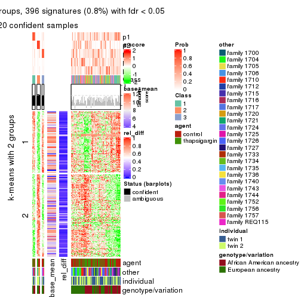
get_signatures(res, k = 6)
Signature heatmaps where rows are not scaled:
get_signatures(res, k = 2, scale_rows = FALSE)

get_signatures(res, k = 3, scale_rows = FALSE)
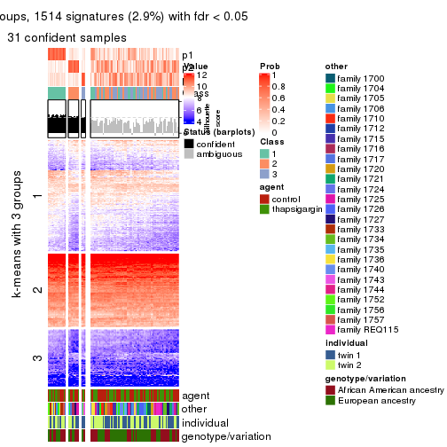
get_signatures(res, k = 4, scale_rows = FALSE)

get_signatures(res, k = 5, scale_rows = FALSE)
get_signatures(res, k = 6, scale_rows = FALSE)
Compare the overlap of signatures from different k:
compare_signatures(res)
get_signature() returns a data frame invisibly. TO get the list of signatures, the function
call should be assigned to a variable explicitly. In following code, if plot argument is set
to FALSE, no heatmap is plotted while only the differential analysis is performed.
# code only for demonstration
tb = get_signature(res, k = ..., plot = FALSE)
An example of the output of tb is:
#> which_row fdr mean_1 mean_2 scaled_mean_1 scaled_mean_2 km
#> 1 38 0.042760348 8.373488 9.131774 -0.5533452 0.5164555 1
#> 2 40 0.018707592 7.106213 8.469186 -0.6173731 0.5762149 1
#> 3 55 0.019134737 10.221463 11.207825 -0.6159697 0.5749050 1
#> 4 59 0.006059896 5.921854 7.869574 -0.6899429 0.6439467 1
#> 5 60 0.018055526 8.928898 10.211722 -0.6204761 0.5791110 1
#> 6 98 0.009384629 15.714769 14.887706 0.6635654 -0.6193277 2
...
The columns in tb are:
which_row: row indices corresponding to the input matrix.fdr: FDR for the differential test. mean_x: The mean value in group x.scaled_mean_x: The mean value in group x after rows are scaled.km: Row groups if k-means clustering is applied to rows.UMAP plot which shows how samples are separated.
dimension_reduction(res, k = 2, method = "UMAP")
dimension_reduction(res, k = 3, method = "UMAP")
dimension_reduction(res, k = 4, method = "UMAP")
dimension_reduction(res, k = 5, method = "UMAP")
dimension_reduction(res, k = 6, method = "UMAP")
Following heatmap shows how subgroups are split when increasing k:
collect_classes(res)
Test correlation between subgroups and known annotations. If the known annotation is numeric, one-way ANOVA test is applied, and if the known annotation is discrete, chi-squared contingency table test is applied.
test_to_known_factors(res)
#> n agent(p) other(p) individual(p) genotype/variation(p) k
#> CV:pam 0 NA NA NA NA 2
#> CV:pam 31 0.987 0.00668 0.1053 0.987 3
#> CV:pam 11 NA NA NA NA 4
#> CV:pam 20 0.842 0.04083 0.0427 0.425 5
#> CV:pam 13 1.000 0.09192 0.9621 0.356 6
If matrix rows can be associated to genes, consider to use functional_enrichment(res,
...) to perform function enrichment for the signature genes. See this vignette for more detailed explanations.
The object with results only for a single top-value method and a single partition method can be extracted as:
res = res_list["CV", "mclust"]
# you can also extract it by
# res = res_list["CV:mclust"]
A summary of res and all the functions that can be applied to it:
res
#> A 'ConsensusPartition' object with k = 2, 3, 4, 5, 6.
#> On a matrix with 51941 rows and 104 columns.
#> Top rows (1000, 2000, 3000, 4000, 5000) are extracted by 'CV' method.
#> Subgroups are detected by 'mclust' method.
#> Performed in total 1250 partitions by row resampling.
#> Best k for subgroups seems to be 3.
#>
#> Following methods can be applied to this 'ConsensusPartition' object:
#> [1] "cola_report" "collect_classes" "collect_plots"
#> [4] "collect_stats" "colnames" "compare_signatures"
#> [7] "consensus_heatmap" "dimension_reduction" "functional_enrichment"
#> [10] "get_anno_col" "get_anno" "get_classes"
#> [13] "get_consensus" "get_matrix" "get_membership"
#> [16] "get_param" "get_signatures" "get_stats"
#> [19] "is_best_k" "is_stable_k" "membership_heatmap"
#> [22] "ncol" "nrow" "plot_ecdf"
#> [25] "rownames" "select_partition_number" "show"
#> [28] "suggest_best_k" "test_to_known_factors"
collect_plots() function collects all the plots made from res for all k (number of partitions)
into one single page to provide an easy and fast comparison between different k.
collect_plots(res)
The plots are:
k and the heatmap of
predicted classes for each k.k.k.k.All the plots in panels can be made by individual functions and they are plotted later in this section.
select_partition_number() produces several plots showing different
statistics for choosing “optimized” k. There are following statistics:
k;k, the area increased is defined as \(A_k - A_{k-1}\).The detailed explanations of these statistics can be found in the cola vignette.
Generally speaking, lower PAC score, higher mean silhouette score or higher
concordance corresponds to better partition. Rand index and Jaccard index
measure how similar the current partition is compared to partition with k-1.
If they are too similar, we won't accept k is better than k-1.
select_partition_number(res)
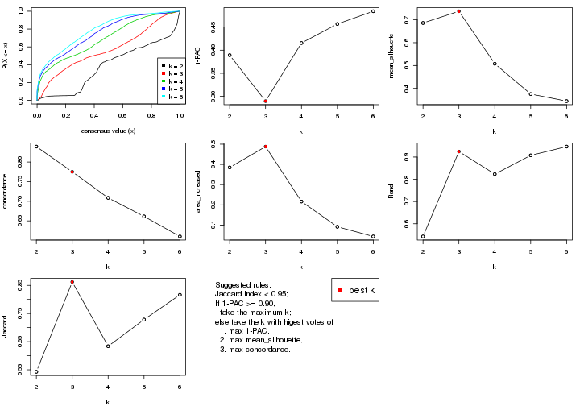
The numeric values for all these statistics can be obtained by get_stats().
get_stats(res)
#> k 1-PAC mean_silhouette concordance area_increased Rand Jaccard
#> 2 2 0.389 0.686 0.839 0.3849 0.543 0.543
#> 3 3 0.290 0.737 0.775 0.4880 0.925 0.862
#> 4 4 0.416 0.508 0.709 0.2165 0.823 0.634
#> 5 5 0.457 0.375 0.661 0.0916 0.908 0.728
#> 6 6 0.484 0.344 0.610 0.0438 0.947 0.816
suggest_best_k() suggests the best \(k\) based on these statistics. The rules are as follows:
suggest_best_k(res)
#> [1] 3
Following shows the table of the partitions (You need to click the show/hide
code output link to see it). The membership matrix (columns with name p*)
is inferred by
clue::cl_consensus()
function with the SE method. Basically the value in the membership matrix
represents the probability to belong to a certain group. The finall class
label for an item is determined with the group with highest probability it
belongs to.
In get_classes() function, the entropy is calculated from the membership
matrix and the silhouette score is calculated from the consensus matrix.
cbind(get_classes(res, k = 2), get_membership(res, k = 2))
#> class entropy silhouette p1 p2
#> GSM494452 1 0.1633 0.8806 0.976 0.024
#> GSM494454 1 0.1184 0.8840 0.984 0.016
#> GSM494456 2 0.9000 0.5832 0.316 0.684
#> GSM494458 2 0.9044 0.5800 0.320 0.680
#> GSM494460 1 0.0672 0.8836 0.992 0.008
#> GSM494462 1 0.0672 0.8836 0.992 0.008
#> GSM494464 1 0.5408 0.7817 0.876 0.124
#> GSM494466 2 0.8955 0.5856 0.312 0.688
#> GSM494468 1 0.2778 0.8588 0.952 0.048
#> GSM494470 1 0.1843 0.8780 0.972 0.028
#> GSM494472 1 0.3274 0.8608 0.940 0.060
#> GSM494474 1 0.0376 0.8822 0.996 0.004
#> GSM494476 2 0.8955 0.5856 0.312 0.688
#> GSM494478 1 0.8267 0.5402 0.740 0.260
#> GSM494480 1 0.2778 0.8676 0.952 0.048
#> GSM494482 1 0.2603 0.8709 0.956 0.044
#> GSM494484 2 0.8955 0.5856 0.312 0.688
#> GSM494486 2 0.8955 0.5867 0.312 0.688
#> GSM494488 1 0.1633 0.8820 0.976 0.024
#> GSM494490 1 0.9491 0.2206 0.632 0.368
#> GSM494492 1 0.7950 0.5749 0.760 0.240
#> GSM494494 2 0.9044 0.5799 0.320 0.680
#> GSM494496 2 0.9833 0.4580 0.424 0.576
#> GSM494498 2 0.0938 0.5807 0.012 0.988
#> GSM494500 1 0.0938 0.8841 0.988 0.012
#> GSM494502 1 0.0938 0.8839 0.988 0.012
#> GSM494504 1 0.3274 0.8471 0.940 0.060
#> GSM494506 1 0.2603 0.8677 0.956 0.044
#> GSM494508 2 0.8386 0.5800 0.268 0.732
#> GSM494510 2 0.0938 0.5807 0.012 0.988
#> GSM494512 2 0.9850 0.4533 0.428 0.572
#> GSM494514 2 0.9850 0.4518 0.428 0.572
#> GSM494516 1 0.0376 0.8829 0.996 0.004
#> GSM494518 1 0.0672 0.8800 0.992 0.008
#> GSM494520 1 0.0000 0.8804 1.000 0.000
#> GSM494522 1 0.4939 0.7899 0.892 0.108
#> GSM494524 1 0.9977 -0.1857 0.528 0.472
#> GSM494526 1 0.2778 0.8696 0.952 0.048
#> GSM494528 1 0.0672 0.8837 0.992 0.008
#> GSM494530 1 0.0376 0.8822 0.996 0.004
#> GSM494532 1 0.0376 0.8778 0.996 0.004
#> GSM494534 1 0.3431 0.8472 0.936 0.064
#> GSM494536 1 0.1843 0.8794 0.972 0.028
#> GSM494538 1 0.0376 0.8778 0.996 0.004
#> GSM494540 1 0.0672 0.8843 0.992 0.008
#> GSM494542 1 0.3733 0.8439 0.928 0.072
#> GSM494544 2 0.9833 0.4580 0.424 0.576
#> GSM494546 2 0.9460 0.5179 0.364 0.636
#> GSM494548 2 0.9635 0.4981 0.388 0.612
#> GSM494550 2 0.9795 0.4682 0.416 0.584
#> GSM494552 1 0.1184 0.8835 0.984 0.016
#> GSM494554 1 0.2603 0.8721 0.956 0.044
#> GSM494453 1 0.1414 0.8824 0.980 0.020
#> GSM494455 1 0.0672 0.8836 0.992 0.008
#> GSM494457 2 0.8955 0.5856 0.312 0.688
#> GSM494459 2 0.8955 0.5856 0.312 0.688
#> GSM494461 1 0.1414 0.8834 0.980 0.020
#> GSM494463 1 0.0672 0.8837 0.992 0.008
#> GSM494465 2 0.9970 0.3321 0.468 0.532
#> GSM494467 2 0.8955 0.5856 0.312 0.688
#> GSM494469 1 0.2778 0.8696 0.952 0.048
#> GSM494471 1 0.1184 0.8829 0.984 0.016
#> GSM494473 1 0.0672 0.8839 0.992 0.008
#> GSM494475 1 0.1633 0.8824 0.976 0.024
#> GSM494477 2 0.8955 0.5856 0.312 0.688
#> GSM494479 2 0.9710 0.4746 0.400 0.600
#> GSM494481 1 0.6438 0.7266 0.836 0.164
#> GSM494483 1 0.9209 0.3324 0.664 0.336
#> GSM494485 2 0.8955 0.5856 0.312 0.688
#> GSM494487 2 0.8909 0.5873 0.308 0.692
#> GSM494489 1 0.0938 0.8803 0.988 0.012
#> GSM494491 1 0.9896 -0.0758 0.560 0.440
#> GSM494493 1 0.9983 -0.2133 0.524 0.476
#> GSM494495 2 0.8955 0.5856 0.312 0.688
#> GSM494497 2 0.9850 0.4518 0.428 0.572
#> GSM494499 2 0.0672 0.5788 0.008 0.992
#> GSM494501 1 0.1414 0.8834 0.980 0.020
#> GSM494503 1 0.0376 0.8778 0.996 0.004
#> GSM494505 1 0.0938 0.8823 0.988 0.012
#> GSM494507 1 0.9608 0.1538 0.616 0.384
#> GSM494509 2 0.9044 0.5443 0.320 0.680
#> GSM494511 2 0.0938 0.5807 0.012 0.988
#> GSM494513 2 0.9833 0.4580 0.424 0.576
#> GSM494515 2 0.9850 0.4518 0.428 0.572
#> GSM494517 1 0.0376 0.8778 0.996 0.004
#> GSM494519 1 0.0938 0.8823 0.988 0.012
#> GSM494521 1 0.0672 0.8805 0.992 0.008
#> GSM494523 1 0.0376 0.8778 0.996 0.004
#> GSM494525 1 0.9635 0.1551 0.612 0.388
#> GSM494527 1 0.1633 0.8806 0.976 0.024
#> GSM494529 1 0.0672 0.8800 0.992 0.008
#> GSM494531 1 0.0938 0.8827 0.988 0.012
#> GSM494533 1 0.7376 0.6110 0.792 0.208
#> GSM494535 1 0.5842 0.7580 0.860 0.140
#> GSM494537 1 0.1184 0.8834 0.984 0.016
#> GSM494539 1 0.0376 0.8778 0.996 0.004
#> GSM494541 1 0.0938 0.8839 0.988 0.012
#> GSM494543 1 0.7745 0.5706 0.772 0.228
#> GSM494545 2 0.9850 0.4518 0.428 0.572
#> GSM494547 2 0.2948 0.5896 0.052 0.948
#> GSM494549 2 0.9754 0.4781 0.408 0.592
#> GSM494551 2 0.9710 0.4864 0.400 0.600
#> GSM494553 1 0.1184 0.8837 0.984 0.016
#> GSM494555 1 0.1414 0.8832 0.980 0.020
cbind(get_classes(res, k = 3), get_membership(res, k = 3))
#> class entropy silhouette p1 p2 p3
#> GSM494452 2 0.566 0.755 0.052 0.796 0.152
#> GSM494454 2 0.353 0.811 0.032 0.900 0.068
#> GSM494456 1 0.312 0.863 0.908 0.080 0.012
#> GSM494458 1 0.240 0.882 0.932 0.064 0.004
#> GSM494460 2 0.496 0.820 0.048 0.836 0.116
#> GSM494462 2 0.441 0.786 0.016 0.844 0.140
#> GSM494464 2 0.526 0.790 0.116 0.824 0.060
#> GSM494466 1 0.207 0.882 0.940 0.060 0.000
#> GSM494468 2 0.219 0.820 0.028 0.948 0.024
#> GSM494470 2 0.292 0.822 0.044 0.924 0.032
#> GSM494472 2 0.304 0.814 0.044 0.920 0.036
#> GSM494474 2 0.175 0.817 0.012 0.960 0.028
#> GSM494476 1 0.236 0.865 0.928 0.072 0.000
#> GSM494478 2 0.770 0.616 0.272 0.644 0.084
#> GSM494480 2 0.362 0.810 0.032 0.896 0.072
#> GSM494482 2 0.301 0.810 0.028 0.920 0.052
#> GSM494484 1 0.196 0.882 0.944 0.056 0.000
#> GSM494486 1 0.210 0.877 0.944 0.052 0.004
#> GSM494488 2 0.444 0.813 0.084 0.864 0.052
#> GSM494490 2 0.798 0.576 0.264 0.632 0.104
#> GSM494492 2 0.862 0.562 0.272 0.584 0.144
#> GSM494494 1 0.207 0.882 0.940 0.060 0.000
#> GSM494496 3 0.573 0.662 0.032 0.196 0.772
#> GSM494498 3 0.677 0.368 0.440 0.012 0.548
#> GSM494500 2 0.425 0.819 0.028 0.864 0.108
#> GSM494502 2 0.515 0.800 0.020 0.800 0.180
#> GSM494504 2 0.629 0.762 0.044 0.740 0.216
#> GSM494506 2 0.721 0.747 0.100 0.708 0.192
#> GSM494508 3 0.883 0.487 0.140 0.316 0.544
#> GSM494510 3 0.674 0.389 0.428 0.012 0.560
#> GSM494512 3 0.564 0.753 0.036 0.180 0.784
#> GSM494514 3 0.530 0.759 0.032 0.164 0.804
#> GSM494516 2 0.455 0.804 0.020 0.840 0.140
#> GSM494518 2 0.558 0.788 0.036 0.788 0.176
#> GSM494520 2 0.516 0.806 0.040 0.820 0.140
#> GSM494522 2 0.720 0.714 0.064 0.676 0.260
#> GSM494524 1 0.832 0.209 0.540 0.372 0.088
#> GSM494526 2 0.374 0.797 0.036 0.892 0.072
#> GSM494528 2 0.372 0.820 0.024 0.888 0.088
#> GSM494530 2 0.406 0.812 0.020 0.868 0.112
#> GSM494532 2 0.524 0.796 0.028 0.804 0.168
#> GSM494534 2 0.661 0.766 0.072 0.740 0.188
#> GSM494536 2 0.459 0.794 0.048 0.856 0.096
#> GSM494538 2 0.492 0.806 0.036 0.832 0.132
#> GSM494540 2 0.540 0.781 0.028 0.792 0.180
#> GSM494542 2 0.648 0.772 0.068 0.748 0.184
#> GSM494544 3 0.518 0.774 0.032 0.156 0.812
#> GSM494546 3 0.576 0.767 0.056 0.152 0.792
#> GSM494548 3 0.517 0.771 0.036 0.148 0.816
#> GSM494550 3 0.536 0.767 0.032 0.168 0.800
#> GSM494552 2 0.554 0.763 0.052 0.804 0.144
#> GSM494554 2 0.652 0.791 0.132 0.760 0.108
#> GSM494453 2 0.524 0.771 0.048 0.820 0.132
#> GSM494455 2 0.468 0.812 0.024 0.836 0.140
#> GSM494457 1 0.188 0.864 0.952 0.044 0.004
#> GSM494459 1 0.196 0.882 0.944 0.056 0.000
#> GSM494461 2 0.653 0.801 0.068 0.744 0.188
#> GSM494463 2 0.487 0.767 0.028 0.828 0.144
#> GSM494465 1 0.853 0.277 0.548 0.344 0.108
#> GSM494467 1 0.271 0.869 0.912 0.088 0.000
#> GSM494469 2 0.400 0.813 0.056 0.884 0.060
#> GSM494471 2 0.517 0.817 0.036 0.816 0.148
#> GSM494473 2 0.389 0.802 0.032 0.884 0.084
#> GSM494475 2 0.477 0.789 0.052 0.848 0.100
#> GSM494477 1 0.186 0.881 0.948 0.052 0.000
#> GSM494479 1 0.570 0.723 0.796 0.148 0.056
#> GSM494481 2 0.604 0.789 0.108 0.788 0.104
#> GSM494483 2 0.820 0.565 0.268 0.616 0.116
#> GSM494485 1 0.240 0.880 0.932 0.064 0.004
#> GSM494487 1 0.210 0.877 0.944 0.052 0.004
#> GSM494489 2 0.582 0.791 0.056 0.788 0.156
#> GSM494491 2 0.890 0.327 0.372 0.500 0.128
#> GSM494493 2 0.942 0.342 0.320 0.484 0.196
#> GSM494495 1 0.226 0.878 0.932 0.068 0.000
#> GSM494497 3 0.606 0.639 0.032 0.224 0.744
#> GSM494499 3 0.681 0.311 0.468 0.012 0.520
#> GSM494501 2 0.473 0.815 0.032 0.840 0.128
#> GSM494503 2 0.517 0.816 0.048 0.824 0.128
#> GSM494505 2 0.547 0.815 0.036 0.796 0.168
#> GSM494507 2 0.907 0.540 0.272 0.544 0.184
#> GSM494509 3 0.509 0.775 0.040 0.136 0.824
#> GSM494511 3 0.666 0.431 0.400 0.012 0.588
#> GSM494513 3 0.512 0.776 0.032 0.152 0.816
#> GSM494515 3 0.414 0.729 0.032 0.096 0.872
#> GSM494517 2 0.551 0.816 0.044 0.800 0.156
#> GSM494519 2 0.541 0.799 0.036 0.800 0.164
#> GSM494521 2 0.533 0.818 0.060 0.820 0.120
#> GSM494523 2 0.512 0.799 0.032 0.816 0.152
#> GSM494525 2 0.805 0.465 0.356 0.568 0.076
#> GSM494527 2 0.499 0.763 0.024 0.816 0.160
#> GSM494529 2 0.514 0.816 0.052 0.828 0.120
#> GSM494531 2 0.590 0.806 0.048 0.776 0.176
#> GSM494533 2 0.934 0.363 0.336 0.484 0.180
#> GSM494535 2 0.760 0.716 0.140 0.688 0.172
#> GSM494537 2 0.473 0.789 0.032 0.840 0.128
#> GSM494539 2 0.530 0.817 0.036 0.808 0.156
#> GSM494541 2 0.564 0.806 0.036 0.784 0.180
#> GSM494543 2 0.905 0.576 0.208 0.556 0.236
#> GSM494545 3 0.429 0.750 0.032 0.104 0.864
#> GSM494547 3 0.665 0.544 0.320 0.024 0.656
#> GSM494549 3 0.524 0.771 0.036 0.152 0.812
#> GSM494551 3 0.535 0.768 0.036 0.160 0.804
#> GSM494553 2 0.585 0.767 0.060 0.788 0.152
#> GSM494555 2 0.570 0.776 0.064 0.800 0.136
cbind(get_classes(res, k = 4), get_membership(res, k = 4))
#> class entropy silhouette p1 p2 p3 p4
#> GSM494452 4 0.4617 0.57023 0.204 0.000 0.032 0.764
#> GSM494454 1 0.5244 0.14456 0.616 0.004 0.008 0.372
#> GSM494456 2 0.1598 0.90854 0.020 0.956 0.004 0.020
#> GSM494458 2 0.1209 0.91031 0.032 0.964 0.004 0.000
#> GSM494460 1 0.4946 0.41836 0.736 0.012 0.016 0.236
#> GSM494462 1 0.6076 -0.02520 0.560 0.004 0.040 0.396
#> GSM494464 4 0.6725 0.49846 0.356 0.052 0.024 0.568
#> GSM494466 2 0.0336 0.91095 0.008 0.992 0.000 0.000
#> GSM494468 1 0.4910 0.33534 0.704 0.000 0.020 0.276
#> GSM494470 1 0.5013 0.38005 0.688 0.000 0.020 0.292
#> GSM494472 4 0.5530 0.51910 0.352 0.008 0.016 0.624
#> GSM494474 1 0.4655 0.33050 0.684 0.000 0.004 0.312
#> GSM494476 2 0.1471 0.90745 0.024 0.960 0.004 0.012
#> GSM494478 4 0.6791 0.47343 0.192 0.104 0.036 0.668
#> GSM494480 1 0.5630 -0.12074 0.548 0.004 0.016 0.432
#> GSM494482 4 0.5143 0.50934 0.360 0.000 0.012 0.628
#> GSM494484 2 0.0469 0.91225 0.012 0.988 0.000 0.000
#> GSM494486 2 0.0657 0.91309 0.012 0.984 0.004 0.000
#> GSM494488 1 0.5955 0.30060 0.676 0.036 0.024 0.264
#> GSM494490 4 0.8263 0.25316 0.392 0.120 0.056 0.432
#> GSM494492 1 0.8363 0.27439 0.556 0.164 0.096 0.184
#> GSM494494 2 0.1305 0.90482 0.036 0.960 0.004 0.000
#> GSM494496 3 0.4782 0.69401 0.068 0.000 0.780 0.152
#> GSM494498 3 0.4964 0.48606 0.000 0.380 0.616 0.004
#> GSM494500 1 0.4720 0.47484 0.768 0.004 0.032 0.196
#> GSM494502 1 0.4237 0.52254 0.808 0.000 0.040 0.152
#> GSM494504 1 0.4336 0.52589 0.816 0.004 0.132 0.048
#> GSM494506 1 0.6589 0.26357 0.556 0.000 0.092 0.352
#> GSM494508 3 0.7601 0.45347 0.256 0.032 0.572 0.140
#> GSM494510 3 0.4936 0.50169 0.000 0.372 0.624 0.004
#> GSM494512 3 0.3933 0.75180 0.200 0.000 0.792 0.008
#> GSM494514 3 0.3958 0.80878 0.112 0.000 0.836 0.052
#> GSM494516 1 0.2500 0.55244 0.916 0.000 0.040 0.044
#> GSM494518 1 0.3266 0.55144 0.884 0.004 0.064 0.048
#> GSM494520 1 0.2782 0.55317 0.904 0.004 0.024 0.068
#> GSM494522 1 0.5569 0.48123 0.736 0.008 0.176 0.080
#> GSM494524 2 0.9217 -0.11705 0.300 0.380 0.084 0.236
#> GSM494526 4 0.4594 0.56019 0.280 0.000 0.008 0.712
#> GSM494528 1 0.5290 0.30503 0.656 0.008 0.012 0.324
#> GSM494530 1 0.4332 0.52391 0.792 0.000 0.032 0.176
#> GSM494532 1 0.2670 0.55571 0.908 0.000 0.052 0.040
#> GSM494534 1 0.5982 0.47081 0.704 0.016 0.072 0.208
#> GSM494536 4 0.4422 0.56931 0.256 0.000 0.008 0.736
#> GSM494538 1 0.4149 0.51771 0.804 0.000 0.028 0.168
#> GSM494540 1 0.4141 0.54571 0.832 0.004 0.112 0.052
#> GSM494542 1 0.5326 0.49776 0.736 0.004 0.060 0.200
#> GSM494544 3 0.2944 0.81540 0.128 0.000 0.868 0.004
#> GSM494546 3 0.2861 0.81703 0.092 0.004 0.892 0.012
#> GSM494548 3 0.2926 0.81789 0.096 0.004 0.888 0.012
#> GSM494550 3 0.2918 0.81394 0.116 0.000 0.876 0.008
#> GSM494552 4 0.6470 0.38429 0.416 0.016 0.040 0.528
#> GSM494554 1 0.7294 0.19237 0.572 0.092 0.032 0.304
#> GSM494453 4 0.5152 0.55603 0.316 0.000 0.020 0.664
#> GSM494455 1 0.5366 0.00392 0.548 0.000 0.012 0.440
#> GSM494457 2 0.1151 0.90822 0.008 0.968 0.000 0.024
#> GSM494459 2 0.0376 0.91025 0.004 0.992 0.000 0.004
#> GSM494461 1 0.6746 0.14985 0.568 0.000 0.116 0.316
#> GSM494463 4 0.6521 0.34562 0.412 0.000 0.076 0.512
#> GSM494465 1 0.8252 0.03535 0.424 0.408 0.072 0.096
#> GSM494467 2 0.2513 0.88804 0.036 0.924 0.016 0.024
#> GSM494469 1 0.5668 -0.02762 0.588 0.012 0.012 0.388
#> GSM494471 1 0.4938 0.43058 0.756 0.008 0.032 0.204
#> GSM494473 1 0.5435 0.05850 0.564 0.000 0.016 0.420
#> GSM494475 4 0.4401 0.56601 0.272 0.000 0.004 0.724
#> GSM494477 2 0.0188 0.91040 0.004 0.996 0.000 0.000
#> GSM494479 2 0.5868 0.70006 0.056 0.744 0.048 0.152
#> GSM494481 4 0.6634 0.46419 0.380 0.020 0.048 0.552
#> GSM494483 1 0.8063 0.00143 0.492 0.108 0.056 0.344
#> GSM494485 2 0.0657 0.91083 0.004 0.984 0.012 0.000
#> GSM494487 2 0.1209 0.90779 0.032 0.964 0.004 0.000
#> GSM494489 1 0.7304 -0.08819 0.516 0.020 0.096 0.368
#> GSM494491 1 0.9086 -0.06052 0.420 0.252 0.080 0.248
#> GSM494493 1 0.7697 0.36088 0.628 0.128 0.136 0.108
#> GSM494495 2 0.1362 0.90691 0.012 0.964 0.020 0.004
#> GSM494497 3 0.4989 0.68218 0.072 0.000 0.764 0.164
#> GSM494499 3 0.5112 0.36783 0.000 0.436 0.560 0.004
#> GSM494501 1 0.3829 0.51739 0.828 0.004 0.016 0.152
#> GSM494503 1 0.4725 0.48011 0.728 0.004 0.012 0.256
#> GSM494505 1 0.5659 0.19365 0.600 0.000 0.032 0.368
#> GSM494507 1 0.7079 0.43401 0.668 0.076 0.092 0.164
#> GSM494509 3 0.3216 0.81846 0.124 0.004 0.864 0.008
#> GSM494511 3 0.4560 0.60411 0.000 0.296 0.700 0.004
#> GSM494513 3 0.2714 0.82010 0.112 0.000 0.884 0.004
#> GSM494515 3 0.3392 0.79533 0.072 0.000 0.872 0.056
#> GSM494517 1 0.3626 0.52143 0.844 0.004 0.016 0.136
#> GSM494519 1 0.3198 0.55574 0.880 0.000 0.040 0.080
#> GSM494521 1 0.4544 0.51313 0.760 0.004 0.016 0.220
#> GSM494523 1 0.3770 0.55048 0.852 0.004 0.040 0.104
#> GSM494525 4 0.8262 0.31746 0.252 0.152 0.064 0.532
#> GSM494527 4 0.5500 0.48206 0.380 0.004 0.016 0.600
#> GSM494529 1 0.3765 0.52741 0.812 0.004 0.004 0.180
#> GSM494531 1 0.6074 0.18806 0.600 0.000 0.060 0.340
#> GSM494533 1 0.7679 0.30932 0.592 0.220 0.140 0.048
#> GSM494535 1 0.5499 0.51484 0.764 0.020 0.092 0.124
#> GSM494537 4 0.5793 0.42092 0.384 0.000 0.036 0.580
#> GSM494539 1 0.4500 0.49672 0.776 0.000 0.032 0.192
#> GSM494541 1 0.5060 0.39171 0.692 0.004 0.016 0.288
#> GSM494543 1 0.7393 0.37178 0.628 0.064 0.208 0.100
#> GSM494545 3 0.3286 0.80342 0.080 0.000 0.876 0.044
#> GSM494547 3 0.4217 0.72738 0.020 0.176 0.800 0.004
#> GSM494549 3 0.3172 0.81899 0.112 0.004 0.872 0.012
#> GSM494551 3 0.3043 0.81681 0.112 0.004 0.876 0.008
#> GSM494553 4 0.6810 0.28074 0.448 0.020 0.052 0.480
#> GSM494555 4 0.5804 0.52858 0.360 0.004 0.032 0.604
cbind(get_classes(res, k = 5), get_membership(res, k = 5))
#> class entropy silhouette p1 p2 p3 p4 p5
#> GSM494452 1 0.5559 0.0720 0.600 0.000 0.004 0.080 0.316
#> GSM494454 4 0.6037 -0.1188 0.440 0.000 0.000 0.444 0.116
#> GSM494456 2 0.2388 0.8643 0.028 0.916 0.004 0.012 0.040
#> GSM494458 2 0.0727 0.8841 0.004 0.980 0.004 0.000 0.012
#> GSM494460 4 0.6313 0.1154 0.208 0.008 0.008 0.600 0.176
#> GSM494462 4 0.6801 -0.5179 0.348 0.000 0.000 0.360 0.292
#> GSM494464 1 0.6101 0.3138 0.660 0.060 0.000 0.180 0.100
#> GSM494466 2 0.0740 0.8826 0.004 0.980 0.008 0.000 0.008
#> GSM494468 4 0.5603 -0.0877 0.452 0.000 0.000 0.476 0.072
#> GSM494470 1 0.6211 0.0151 0.440 0.004 0.000 0.436 0.120
#> GSM494472 1 0.4389 0.3718 0.756 0.004 0.000 0.184 0.056
#> GSM494474 4 0.5439 0.0162 0.464 0.000 0.004 0.484 0.048
#> GSM494476 2 0.1679 0.8744 0.020 0.948 0.004 0.016 0.012
#> GSM494478 1 0.6498 0.3096 0.644 0.084 0.016 0.060 0.196
#> GSM494480 1 0.5719 0.2003 0.552 0.000 0.000 0.352 0.096
#> GSM494482 1 0.4558 0.3632 0.724 0.000 0.000 0.216 0.060
#> GSM494484 2 0.0162 0.8818 0.000 0.996 0.000 0.000 0.004
#> GSM494486 2 0.0613 0.8825 0.000 0.984 0.008 0.004 0.004
#> GSM494488 4 0.6552 -0.0607 0.392 0.032 0.000 0.480 0.096
#> GSM494490 1 0.7763 0.2230 0.524 0.076 0.024 0.212 0.164
#> GSM494492 4 0.8444 0.2213 0.252 0.136 0.064 0.464 0.084
#> GSM494494 2 0.1580 0.8770 0.004 0.952 0.012 0.016 0.016
#> GSM494496 3 0.5205 0.6381 0.040 0.000 0.660 0.020 0.280
#> GSM494498 3 0.5076 0.4674 0.004 0.388 0.580 0.004 0.024
#> GSM494500 4 0.5270 0.3720 0.196 0.000 0.008 0.692 0.104
#> GSM494502 4 0.5528 0.4649 0.196 0.000 0.036 0.692 0.076
#> GSM494504 4 0.5557 0.4341 0.048 0.000 0.136 0.712 0.104
#> GSM494506 4 0.5911 0.3667 0.380 0.000 0.056 0.540 0.024
#> GSM494508 3 0.7962 0.4637 0.148 0.036 0.528 0.192 0.096
#> GSM494510 3 0.4835 0.4743 0.004 0.384 0.592 0.000 0.020
#> GSM494512 3 0.3720 0.6822 0.000 0.000 0.760 0.228 0.012
#> GSM494514 3 0.3948 0.7838 0.008 0.000 0.808 0.128 0.056
#> GSM494516 4 0.4014 0.4831 0.056 0.000 0.020 0.816 0.108
#> GSM494518 4 0.4533 0.4885 0.060 0.000 0.048 0.792 0.100
#> GSM494520 4 0.3161 0.4963 0.092 0.000 0.004 0.860 0.044
#> GSM494522 4 0.5971 0.4364 0.060 0.004 0.164 0.684 0.088
#> GSM494524 2 0.8934 0.0207 0.248 0.380 0.040 0.176 0.156
#> GSM494526 1 0.4226 0.3784 0.776 0.000 0.000 0.140 0.084
#> GSM494528 4 0.5290 0.1434 0.448 0.004 0.008 0.516 0.024
#> GSM494530 4 0.4792 0.4572 0.228 0.000 0.008 0.712 0.052
#> GSM494532 4 0.3378 0.4980 0.048 0.000 0.032 0.864 0.056
#> GSM494534 4 0.6675 0.4653 0.168 0.020 0.068 0.644 0.100
#> GSM494536 1 0.4808 0.3381 0.728 0.000 0.000 0.136 0.136
#> GSM494538 4 0.4682 0.4818 0.212 0.000 0.004 0.724 0.060
#> GSM494540 4 0.5384 0.4675 0.060 0.000 0.092 0.732 0.116
#> GSM494542 4 0.5904 0.4711 0.200 0.000 0.068 0.668 0.064
#> GSM494544 3 0.2857 0.7979 0.008 0.000 0.868 0.112 0.012
#> GSM494546 3 0.1770 0.8047 0.008 0.000 0.936 0.048 0.008
#> GSM494548 3 0.2464 0.7955 0.004 0.000 0.892 0.092 0.012
#> GSM494550 3 0.3169 0.7689 0.004 0.000 0.840 0.140 0.016
#> GSM494552 1 0.7023 -0.7489 0.360 0.008 0.000 0.280 0.352
#> GSM494554 4 0.7300 0.2637 0.288 0.060 0.012 0.520 0.120
#> GSM494453 1 0.5560 0.1961 0.660 0.004 0.000 0.156 0.180
#> GSM494455 1 0.5697 0.0513 0.512 0.000 0.000 0.404 0.084
#> GSM494457 2 0.1717 0.8714 0.000 0.936 0.004 0.008 0.052
#> GSM494459 2 0.0162 0.8825 0.004 0.996 0.000 0.000 0.000
#> GSM494461 4 0.7839 -0.2979 0.176 0.008 0.084 0.464 0.268
#> GSM494463 1 0.6992 -0.5242 0.388 0.000 0.008 0.268 0.336
#> GSM494465 2 0.8648 -0.0269 0.172 0.428 0.036 0.232 0.132
#> GSM494467 2 0.2149 0.8676 0.000 0.924 0.012 0.036 0.028
#> GSM494469 1 0.6656 -0.1491 0.464 0.008 0.004 0.372 0.152
#> GSM494471 4 0.6690 0.1256 0.180 0.012 0.012 0.564 0.232
#> GSM494473 1 0.6092 0.1310 0.504 0.000 0.000 0.364 0.132
#> GSM494475 1 0.4872 0.2715 0.720 0.000 0.000 0.120 0.160
#> GSM494477 2 0.0000 0.8813 0.000 1.000 0.000 0.000 0.000
#> GSM494479 2 0.5620 0.6824 0.124 0.732 0.036 0.024 0.084
#> GSM494481 1 0.6702 0.2860 0.620 0.032 0.024 0.196 0.128
#> GSM494483 1 0.8009 0.2072 0.496 0.088 0.032 0.248 0.136
#> GSM494485 2 0.0162 0.8818 0.000 0.996 0.000 0.000 0.004
#> GSM494487 2 0.1267 0.8770 0.000 0.960 0.004 0.024 0.012
#> GSM494489 4 0.7684 -0.6310 0.256 0.016 0.024 0.384 0.320
#> GSM494491 1 0.9217 -0.0121 0.300 0.248 0.040 0.232 0.180
#> GSM494493 4 0.9254 0.0376 0.144 0.112 0.168 0.408 0.168
#> GSM494495 2 0.1306 0.8806 0.000 0.960 0.016 0.008 0.016
#> GSM494497 3 0.5449 0.6174 0.036 0.000 0.648 0.036 0.280
#> GSM494499 3 0.4727 0.3343 0.000 0.452 0.532 0.000 0.016
#> GSM494501 4 0.4935 0.3835 0.160 0.000 0.004 0.724 0.112
#> GSM494503 4 0.5760 0.4184 0.312 0.000 0.012 0.596 0.080
#> GSM494505 4 0.6502 0.1418 0.404 0.000 0.024 0.468 0.104
#> GSM494507 4 0.8116 0.2715 0.184 0.076 0.076 0.532 0.132
#> GSM494509 3 0.2858 0.8063 0.004 0.004 0.880 0.088 0.024
#> GSM494511 3 0.4194 0.6452 0.004 0.260 0.720 0.000 0.016
#> GSM494513 3 0.2589 0.8021 0.008 0.000 0.888 0.092 0.012
#> GSM494515 3 0.2945 0.7824 0.016 0.000 0.884 0.056 0.044
#> GSM494517 4 0.5305 0.3402 0.172 0.000 0.000 0.676 0.152
#> GSM494519 4 0.4623 0.4740 0.072 0.000 0.016 0.764 0.148
#> GSM494521 4 0.5681 0.4213 0.240 0.000 0.012 0.644 0.104
#> GSM494523 4 0.3570 0.5038 0.124 0.000 0.004 0.828 0.044
#> GSM494525 1 0.7871 0.2471 0.540 0.140 0.036 0.096 0.188
#> GSM494527 1 0.6629 -0.3578 0.468 0.000 0.004 0.204 0.324
#> GSM494529 4 0.5815 0.3815 0.220 0.004 0.000 0.624 0.152
#> GSM494531 4 0.7044 -0.2479 0.284 0.000 0.020 0.460 0.236
#> GSM494533 4 0.7159 0.3248 0.028 0.228 0.096 0.584 0.064
#> GSM494535 4 0.5980 0.4544 0.172 0.004 0.056 0.680 0.088
#> GSM494537 1 0.6256 -0.0182 0.564 0.000 0.004 0.208 0.224
#> GSM494539 4 0.6368 0.3458 0.172 0.000 0.032 0.612 0.184
#> GSM494541 4 0.6066 0.3680 0.304 0.000 0.008 0.568 0.120
#> GSM494543 4 0.8272 0.1180 0.080 0.040 0.276 0.452 0.152
#> GSM494545 3 0.2555 0.7906 0.016 0.000 0.904 0.052 0.028
#> GSM494547 3 0.2414 0.7769 0.008 0.080 0.900 0.000 0.012
#> GSM494549 3 0.1757 0.8053 0.004 0.000 0.936 0.048 0.012
#> GSM494551 3 0.2006 0.8043 0.000 0.000 0.916 0.072 0.012
#> GSM494553 5 0.7033 0.0000 0.296 0.008 0.000 0.324 0.372
#> GSM494555 1 0.6830 -0.2324 0.492 0.016 0.000 0.208 0.284
cbind(get_classes(res, k = 6), get_membership(res, k = 6))
#> class entropy silhouette p1 p2 p3 p4 p5 p6
#> GSM494452 1 0.5494 0.1207 0.640 0.000 0.000 0.044 0.100 0.216
#> GSM494454 4 0.6122 -0.1108 0.412 0.000 0.000 0.432 0.032 0.124
#> GSM494456 2 0.3260 0.7666 0.020 0.836 0.004 0.012 0.124 0.004
#> GSM494458 2 0.2034 0.8285 0.000 0.920 0.004 0.024 0.044 0.008
#> GSM494460 4 0.6241 0.0995 0.172 0.004 0.016 0.596 0.032 0.180
#> GSM494462 1 0.6291 -0.3593 0.392 0.000 0.000 0.316 0.008 0.284
#> GSM494464 1 0.6612 0.2849 0.588 0.044 0.004 0.132 0.192 0.040
#> GSM494466 2 0.1226 0.8404 0.000 0.952 0.000 0.004 0.040 0.004
#> GSM494468 4 0.6815 -0.0382 0.356 0.000 0.000 0.420 0.124 0.100
#> GSM494470 4 0.7078 -0.0228 0.340 0.000 0.000 0.396 0.132 0.132
#> GSM494472 1 0.4772 0.3645 0.728 0.000 0.000 0.116 0.120 0.036
#> GSM494474 4 0.6421 0.0751 0.380 0.000 0.004 0.452 0.056 0.108
#> GSM494476 2 0.2002 0.8334 0.012 0.920 0.000 0.004 0.052 0.012
#> GSM494478 1 0.6305 -0.1331 0.496 0.064 0.008 0.024 0.376 0.032
#> GSM494480 1 0.6220 0.1904 0.536 0.000 0.000 0.292 0.096 0.076
#> GSM494482 1 0.4503 0.3508 0.740 0.000 0.000 0.152 0.084 0.024
#> GSM494484 2 0.0405 0.8404 0.000 0.988 0.000 0.004 0.008 0.000
#> GSM494486 2 0.1003 0.8402 0.000 0.964 0.000 0.004 0.028 0.004
#> GSM494488 4 0.7148 -0.0935 0.344 0.032 0.004 0.440 0.056 0.124
#> GSM494490 1 0.7696 -0.1489 0.408 0.036 0.016 0.124 0.336 0.080
#> GSM494492 4 0.8785 0.0631 0.180 0.112 0.040 0.364 0.236 0.068
#> GSM494494 2 0.2849 0.8104 0.000 0.872 0.008 0.016 0.084 0.020
#> GSM494496 3 0.5258 0.6280 0.036 0.000 0.624 0.024 0.020 0.296
#> GSM494498 3 0.6204 0.4253 0.000 0.344 0.500 0.000 0.076 0.080
#> GSM494500 4 0.5943 0.2269 0.168 0.000 0.004 0.600 0.036 0.192
#> GSM494502 4 0.6239 0.3985 0.164 0.000 0.032 0.624 0.052 0.128
#> GSM494504 4 0.6360 0.3518 0.036 0.000 0.116 0.616 0.060 0.172
#> GSM494506 4 0.7174 0.2808 0.360 0.004 0.068 0.420 0.124 0.024
#> GSM494508 3 0.7883 0.3810 0.068 0.032 0.500 0.148 0.188 0.064
#> GSM494510 3 0.5991 0.4914 0.000 0.312 0.544 0.000 0.072 0.072
#> GSM494512 3 0.3658 0.6699 0.000 0.000 0.772 0.192 0.028 0.008
#> GSM494514 3 0.3939 0.7449 0.000 0.000 0.788 0.116 0.016 0.080
#> GSM494516 4 0.4493 0.4155 0.044 0.000 0.016 0.756 0.028 0.156
#> GSM494518 4 0.4613 0.4351 0.024 0.000 0.036 0.760 0.044 0.136
#> GSM494520 4 0.3529 0.4445 0.068 0.004 0.004 0.836 0.016 0.072
#> GSM494522 4 0.7159 0.3554 0.076 0.004 0.172 0.564 0.092 0.092
#> GSM494524 5 0.7934 0.4625 0.120 0.308 0.032 0.116 0.404 0.020
#> GSM494526 1 0.4024 0.3633 0.792 0.000 0.000 0.100 0.076 0.032
#> GSM494528 4 0.5990 0.1616 0.408 0.004 0.012 0.484 0.056 0.036
#> GSM494530 4 0.5514 0.3731 0.216 0.000 0.008 0.652 0.044 0.080
#> GSM494532 4 0.4843 0.4448 0.072 0.000 0.044 0.764 0.048 0.072
#> GSM494534 4 0.7402 0.3772 0.116 0.012 0.068 0.548 0.172 0.084
#> GSM494536 1 0.4922 0.3169 0.736 0.000 0.004 0.100 0.084 0.076
#> GSM494538 4 0.5142 0.4210 0.196 0.000 0.004 0.688 0.060 0.052
#> GSM494540 4 0.6819 0.3883 0.068 0.000 0.096 0.596 0.100 0.140
#> GSM494542 4 0.6322 0.4166 0.176 0.004 0.052 0.628 0.100 0.040
#> GSM494544 3 0.2863 0.7642 0.000 0.000 0.864 0.088 0.012 0.036
#> GSM494546 3 0.1950 0.7617 0.000 0.000 0.924 0.016 0.028 0.032
#> GSM494548 3 0.2484 0.7608 0.000 0.000 0.896 0.044 0.036 0.024
#> GSM494550 3 0.3019 0.7395 0.000 0.000 0.856 0.092 0.032 0.020
#> GSM494552 1 0.6507 -0.5408 0.416 0.008 0.000 0.212 0.016 0.348
#> GSM494554 4 0.7745 0.2633 0.240 0.064 0.016 0.484 0.116 0.080
#> GSM494453 1 0.5158 0.1865 0.696 0.000 0.000 0.124 0.048 0.132
#> GSM494455 1 0.5882 0.0301 0.552 0.000 0.004 0.312 0.032 0.100
#> GSM494457 2 0.1956 0.8295 0.004 0.920 0.004 0.008 0.060 0.004
#> GSM494459 2 0.0622 0.8405 0.000 0.980 0.000 0.000 0.012 0.008
#> GSM494461 4 0.7906 -0.2873 0.192 0.008 0.084 0.412 0.044 0.260
#> GSM494463 1 0.6214 -0.4083 0.444 0.000 0.000 0.224 0.012 0.320
#> GSM494465 2 0.8571 -0.4966 0.116 0.340 0.024 0.160 0.296 0.064
#> GSM494467 2 0.3810 0.7704 0.000 0.824 0.024 0.028 0.088 0.036
#> GSM494469 1 0.6873 -0.0624 0.472 0.008 0.000 0.300 0.080 0.140
#> GSM494471 4 0.6498 0.0746 0.156 0.004 0.004 0.532 0.048 0.256
#> GSM494473 1 0.6432 0.0829 0.488 0.000 0.000 0.324 0.068 0.120
#> GSM494475 1 0.4734 0.2801 0.744 0.000 0.000 0.080 0.076 0.100
#> GSM494477 2 0.0291 0.8392 0.000 0.992 0.000 0.000 0.004 0.004
#> GSM494479 2 0.6503 0.2363 0.088 0.604 0.028 0.020 0.216 0.044
#> GSM494481 1 0.6785 0.2573 0.568 0.032 0.008 0.128 0.212 0.052
#> GSM494483 1 0.8030 -0.1526 0.396 0.068 0.020 0.176 0.292 0.048
#> GSM494485 2 0.0865 0.8398 0.000 0.964 0.000 0.000 0.036 0.000
#> GSM494487 2 0.1498 0.8339 0.000 0.948 0.004 0.024 0.012 0.012
#> GSM494489 6 0.7589 0.4611 0.264 0.012 0.020 0.320 0.048 0.336
#> GSM494491 5 0.8950 0.3476 0.244 0.224 0.028 0.140 0.292 0.072
#> GSM494493 4 0.9327 -0.0832 0.104 0.088 0.128 0.320 0.244 0.116
#> GSM494495 2 0.2878 0.7955 0.000 0.876 0.028 0.008 0.068 0.020
#> GSM494497 3 0.5282 0.6146 0.036 0.000 0.616 0.028 0.016 0.304
#> GSM494499 3 0.6070 0.3263 0.000 0.396 0.468 0.000 0.064 0.072
#> GSM494501 4 0.5672 0.2454 0.160 0.000 0.004 0.628 0.028 0.180
#> GSM494503 4 0.6294 0.3572 0.288 0.004 0.004 0.548 0.092 0.064
#> GSM494505 1 0.6742 -0.1590 0.420 0.000 0.024 0.396 0.044 0.116
#> GSM494507 4 0.8406 0.1023 0.148 0.064 0.044 0.400 0.272 0.072
#> GSM494509 3 0.2402 0.7667 0.000 0.000 0.888 0.084 0.020 0.008
#> GSM494511 3 0.5450 0.6054 0.000 0.232 0.640 0.000 0.064 0.064
#> GSM494513 3 0.2803 0.7647 0.000 0.000 0.872 0.064 0.012 0.052
#> GSM494515 3 0.3552 0.7436 0.008 0.000 0.824 0.032 0.020 0.116
#> GSM494517 4 0.5772 0.2370 0.172 0.000 0.004 0.620 0.032 0.172
#> GSM494519 4 0.4780 0.4220 0.032 0.000 0.016 0.736 0.056 0.160
#> GSM494521 4 0.6075 0.3704 0.236 0.000 0.004 0.592 0.076 0.092
#> GSM494523 4 0.4168 0.4479 0.132 0.000 0.008 0.780 0.020 0.060
#> GSM494525 5 0.7430 0.3666 0.324 0.116 0.016 0.072 0.444 0.028
#> GSM494527 1 0.6115 -0.1836 0.536 0.000 0.000 0.152 0.036 0.276
#> GSM494529 4 0.6329 0.2990 0.172 0.008 0.000 0.592 0.076 0.152
#> GSM494531 4 0.7249 -0.3889 0.324 0.004 0.020 0.368 0.036 0.248
#> GSM494533 4 0.7954 0.1160 0.016 0.212 0.100 0.464 0.156 0.052
#> GSM494535 4 0.6703 0.3404 0.104 0.012 0.048 0.608 0.172 0.056
#> GSM494537 1 0.5635 0.0409 0.628 0.000 0.000 0.152 0.036 0.184
#> GSM494539 4 0.6943 0.2470 0.184 0.000 0.044 0.540 0.052 0.180
#> GSM494541 4 0.6531 0.3389 0.268 0.000 0.008 0.536 0.096 0.092
#> GSM494543 4 0.8672 0.0522 0.080 0.040 0.260 0.368 0.172 0.080
#> GSM494545 3 0.3192 0.7493 0.008 0.000 0.848 0.032 0.012 0.100
#> GSM494547 3 0.4318 0.7136 0.000 0.064 0.776 0.000 0.064 0.096
#> GSM494549 3 0.1616 0.7667 0.000 0.000 0.940 0.028 0.012 0.020
#> GSM494551 3 0.2507 0.7650 0.000 0.000 0.892 0.060 0.028 0.020
#> GSM494553 6 0.6557 0.4349 0.340 0.008 0.000 0.256 0.012 0.384
#> GSM494555 1 0.6306 -0.0306 0.580 0.016 0.000 0.168 0.040 0.196
Heatmaps for the consensus matrix. It visualizes the probability of two samples to be in a same group.
consensus_heatmap(res, k = 2)
consensus_heatmap(res, k = 3)
consensus_heatmap(res, k = 4)
consensus_heatmap(res, k = 5)
consensus_heatmap(res, k = 6)
Heatmaps for the membership of samples in all partitions to see how consistent they are:
membership_heatmap(res, k = 2)
membership_heatmap(res, k = 3)
membership_heatmap(res, k = 4)
membership_heatmap(res, k = 5)
membership_heatmap(res, k = 6)
As soon as we have had the classes for columns, we can look for signatures which are significantly different between classes which can be candidate marks for certain classes. Following are the heatmaps for signatures.
Signature heatmaps where rows are scaled:
get_signatures(res, k = 2)
get_signatures(res, k = 3)
get_signatures(res, k = 4)
get_signatures(res, k = 5)
get_signatures(res, k = 6)
Signature heatmaps where rows are not scaled:
get_signatures(res, k = 2, scale_rows = FALSE)
get_signatures(res, k = 3, scale_rows = FALSE)
get_signatures(res, k = 4, scale_rows = FALSE)
get_signatures(res, k = 5, scale_rows = FALSE)
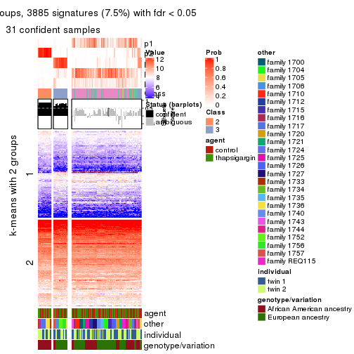
get_signatures(res, k = 6, scale_rows = FALSE)
Compare the overlap of signatures from different k:
compare_signatures(res)
get_signature() returns a data frame invisibly. TO get the list of signatures, the function
call should be assigned to a variable explicitly. In following code, if plot argument is set
to FALSE, no heatmap is plotted while only the differential analysis is performed.
# code only for demonstration
tb = get_signature(res, k = ..., plot = FALSE)
An example of the output of tb is:
#> which_row fdr mean_1 mean_2 scaled_mean_1 scaled_mean_2 km
#> 1 38 0.042760348 8.373488 9.131774 -0.5533452 0.5164555 1
#> 2 40 0.018707592 7.106213 8.469186 -0.6173731 0.5762149 1
#> 3 55 0.019134737 10.221463 11.207825 -0.6159697 0.5749050 1
#> 4 59 0.006059896 5.921854 7.869574 -0.6899429 0.6439467 1
#> 5 60 0.018055526 8.928898 10.211722 -0.6204761 0.5791110 1
#> 6 98 0.009384629 15.714769 14.887706 0.6635654 -0.6193277 2
...
The columns in tb are:
which_row: row indices corresponding to the input matrix.fdr: FDR for the differential test. mean_x: The mean value in group x.scaled_mean_x: The mean value in group x after rows are scaled.km: Row groups if k-means clustering is applied to rows.UMAP plot which shows how samples are separated.
dimension_reduction(res, k = 2, method = "UMAP")
dimension_reduction(res, k = 3, method = "UMAP")
dimension_reduction(res, k = 4, method = "UMAP")
dimension_reduction(res, k = 5, method = "UMAP")
dimension_reduction(res, k = 6, method = "UMAP")
Following heatmap shows how subgroups are split when increasing k:
collect_classes(res)
Test correlation between subgroups and known annotations. If the known annotation is numeric, one-way ANOVA test is applied, and if the known annotation is discrete, chi-squared contingency table test is applied.
test_to_known_factors(res)
#> n agent(p) other(p) individual(p) genotype/variation(p) k
#> CV:mclust 83 0.935 4.57e-07 0.295 1.48e-02 2
#> CV:mclust 93 0.805 5.48e-15 0.547 4.55e-06 3
#> CV:mclust 56 0.848 3.86e-10 0.823 7.42e-09 4
#> CV:mclust 32 0.660 1.68e-06 0.421 3.78e-06 5
#> CV:mclust 30 1.000 4.39e-04 0.714 9.61e-06 6
If matrix rows can be associated to genes, consider to use functional_enrichment(res,
...) to perform function enrichment for the signature genes. See this vignette for more detailed explanations.
The object with results only for a single top-value method and a single partition method can be extracted as:
res = res_list["CV", "NMF"]
# you can also extract it by
# res = res_list["CV:NMF"]
A summary of res and all the functions that can be applied to it:
res
#> A 'ConsensusPartition' object with k = 2, 3, 4, 5, 6.
#> On a matrix with 51941 rows and 104 columns.
#> Top rows (1000, 2000, 3000, 4000, 5000) are extracted by 'CV' method.
#> Subgroups are detected by 'NMF' method.
#> Performed in total 1250 partitions by row resampling.
#> Best k for subgroups seems to be 2.
#>
#> Following methods can be applied to this 'ConsensusPartition' object:
#> [1] "cola_report" "collect_classes" "collect_plots"
#> [4] "collect_stats" "colnames" "compare_signatures"
#> [7] "consensus_heatmap" "dimension_reduction" "functional_enrichment"
#> [10] "get_anno_col" "get_anno" "get_classes"
#> [13] "get_consensus" "get_matrix" "get_membership"
#> [16] "get_param" "get_signatures" "get_stats"
#> [19] "is_best_k" "is_stable_k" "membership_heatmap"
#> [22] "ncol" "nrow" "plot_ecdf"
#> [25] "rownames" "select_partition_number" "show"
#> [28] "suggest_best_k" "test_to_known_factors"
collect_plots() function collects all the plots made from res for all k (number of partitions)
into one single page to provide an easy and fast comparison between different k.
collect_plots(res)
The plots are:
k and the heatmap of
predicted classes for each k.k.k.k.All the plots in panels can be made by individual functions and they are plotted later in this section.
select_partition_number() produces several plots showing different
statistics for choosing “optimized” k. There are following statistics:
k;k, the area increased is defined as \(A_k - A_{k-1}\).The detailed explanations of these statistics can be found in the cola vignette.
Generally speaking, lower PAC score, higher mean silhouette score or higher
concordance corresponds to better partition. Rand index and Jaccard index
measure how similar the current partition is compared to partition with k-1.
If they are too similar, we won't accept k is better than k-1.
select_partition_number(res)
The numeric values for all these statistics can be obtained by get_stats().
get_stats(res)
#> k 1-PAC mean_silhouette concordance area_increased Rand Jaccard
#> 2 2 0.379 0.795 0.877 0.4611 0.527 0.527
#> 3 3 0.237 0.567 0.684 0.3882 0.799 0.638
#> 4 4 0.310 0.351 0.584 0.1535 0.880 0.708
#> 5 5 0.363 0.322 0.535 0.0747 0.816 0.487
#> 6 6 0.414 0.290 0.488 0.0473 0.892 0.554
suggest_best_k() suggests the best \(k\) based on these statistics. The rules are as follows:
suggest_best_k(res)
#> [1] 2
Following shows the table of the partitions (You need to click the show/hide
code output link to see it). The membership matrix (columns with name p*)
is inferred by
clue::cl_consensus()
function with the SE method. Basically the value in the membership matrix
represents the probability to belong to a certain group. The finall class
label for an item is determined with the group with highest probability it
belongs to.
In get_classes() function, the entropy is calculated from the membership
matrix and the silhouette score is calculated from the consensus matrix.
cbind(get_classes(res, k = 2), get_membership(res, k = 2))
#> class entropy silhouette p1 p2
#> GSM494452 1 0.2043 0.9025 0.968 0.032
#> GSM494454 1 0.1414 0.9014 0.980 0.020
#> GSM494456 2 0.6343 0.8283 0.160 0.840
#> GSM494458 2 0.5842 0.8360 0.140 0.860
#> GSM494460 1 0.2948 0.9000 0.948 0.052
#> GSM494462 1 0.1184 0.8987 0.984 0.016
#> GSM494464 1 0.8016 0.6715 0.756 0.244
#> GSM494466 2 0.5519 0.8407 0.128 0.872
#> GSM494468 1 0.1184 0.9020 0.984 0.016
#> GSM494470 1 0.2603 0.8927 0.956 0.044
#> GSM494472 1 0.3114 0.8995 0.944 0.056
#> GSM494474 1 0.2603 0.8870 0.956 0.044
#> GSM494476 2 0.6148 0.8319 0.152 0.848
#> GSM494478 1 0.9983 -0.0346 0.524 0.476
#> GSM494480 1 0.0938 0.9015 0.988 0.012
#> GSM494482 1 0.2236 0.9022 0.964 0.036
#> GSM494484 2 0.4562 0.8401 0.096 0.904
#> GSM494486 2 0.3114 0.8296 0.056 0.944
#> GSM494488 1 0.4022 0.8863 0.920 0.080
#> GSM494490 2 0.8443 0.6983 0.272 0.728
#> GSM494492 2 0.9087 0.6666 0.324 0.676
#> GSM494494 2 0.4690 0.8407 0.100 0.900
#> GSM494496 2 0.9996 0.0222 0.488 0.512
#> GSM494498 2 0.0672 0.8041 0.008 0.992
#> GSM494500 1 0.2043 0.8977 0.968 0.032
#> GSM494502 1 0.1414 0.8968 0.980 0.020
#> GSM494504 1 0.3879 0.8633 0.924 0.076
#> GSM494506 1 0.3114 0.8873 0.944 0.056
#> GSM494508 2 0.4431 0.8223 0.092 0.908
#> GSM494510 2 0.0672 0.8104 0.008 0.992
#> GSM494512 1 0.8207 0.6725 0.744 0.256
#> GSM494514 1 0.9460 0.4708 0.636 0.364
#> GSM494516 1 0.1414 0.8974 0.980 0.020
#> GSM494518 1 0.0672 0.9001 0.992 0.008
#> GSM494520 1 0.1414 0.8989 0.980 0.020
#> GSM494522 1 0.2236 0.8985 0.964 0.036
#> GSM494524 2 0.7453 0.7993 0.212 0.788
#> GSM494526 1 0.2423 0.8980 0.960 0.040
#> GSM494528 1 0.1633 0.9000 0.976 0.024
#> GSM494530 1 0.0938 0.8998 0.988 0.012
#> GSM494532 1 0.0672 0.9000 0.992 0.008
#> GSM494534 1 0.4161 0.8657 0.916 0.084
#> GSM494536 1 0.1633 0.9012 0.976 0.024
#> GSM494538 1 0.2043 0.9008 0.968 0.032
#> GSM494540 1 0.1184 0.9011 0.984 0.016
#> GSM494542 1 0.5629 0.8289 0.868 0.132
#> GSM494544 1 0.9552 0.4368 0.624 0.376
#> GSM494546 2 0.6048 0.7750 0.148 0.852
#> GSM494548 2 0.6801 0.7543 0.180 0.820
#> GSM494550 2 0.9323 0.5004 0.348 0.652
#> GSM494552 1 0.2778 0.8961 0.952 0.048
#> GSM494554 1 0.7299 0.7506 0.796 0.204
#> GSM494453 1 0.2043 0.8993 0.968 0.032
#> GSM494455 1 0.1184 0.9008 0.984 0.016
#> GSM494457 2 0.6148 0.8333 0.152 0.848
#> GSM494459 2 0.5842 0.8370 0.140 0.860
#> GSM494461 1 0.3584 0.8779 0.932 0.068
#> GSM494463 1 0.1414 0.8978 0.980 0.020
#> GSM494465 2 0.4815 0.8430 0.104 0.896
#> GSM494467 2 0.6148 0.8362 0.152 0.848
#> GSM494469 1 0.1633 0.9031 0.976 0.024
#> GSM494471 1 0.0672 0.9006 0.992 0.008
#> GSM494473 1 0.1633 0.9009 0.976 0.024
#> GSM494475 1 0.1184 0.9008 0.984 0.016
#> GSM494477 2 0.4939 0.8404 0.108 0.892
#> GSM494479 2 0.6343 0.8309 0.160 0.840
#> GSM494481 1 0.9170 0.4553 0.668 0.332
#> GSM494483 2 0.9393 0.6221 0.356 0.644
#> GSM494485 2 0.4022 0.8381 0.080 0.920
#> GSM494487 2 0.3584 0.8349 0.068 0.932
#> GSM494489 1 0.4431 0.8730 0.908 0.092
#> GSM494491 2 0.7219 0.8108 0.200 0.800
#> GSM494493 2 0.4815 0.8159 0.104 0.896
#> GSM494495 2 0.4562 0.8417 0.096 0.904
#> GSM494497 1 0.8081 0.6851 0.752 0.248
#> GSM494499 2 0.0938 0.8034 0.012 0.988
#> GSM494501 1 0.1843 0.8981 0.972 0.028
#> GSM494503 1 0.2043 0.8979 0.968 0.032
#> GSM494505 1 0.0376 0.9014 0.996 0.004
#> GSM494507 2 0.8016 0.7803 0.244 0.756
#> GSM494509 2 0.9044 0.5592 0.320 0.680
#> GSM494511 2 0.2948 0.8025 0.052 0.948
#> GSM494513 1 0.9775 0.3290 0.588 0.412
#> GSM494515 1 0.7745 0.7120 0.772 0.228
#> GSM494517 1 0.1184 0.9006 0.984 0.016
#> GSM494519 1 0.0938 0.9001 0.988 0.012
#> GSM494521 1 0.3114 0.8873 0.944 0.056
#> GSM494523 1 0.0938 0.9004 0.988 0.012
#> GSM494525 2 0.9286 0.6461 0.344 0.656
#> GSM494527 1 0.2778 0.8806 0.952 0.048
#> GSM494529 1 0.2948 0.8882 0.948 0.052
#> GSM494531 1 0.2423 0.8963 0.960 0.040
#> GSM494533 2 0.9635 0.5575 0.388 0.612
#> GSM494535 1 0.9248 0.3260 0.660 0.340
#> GSM494537 1 0.1414 0.9009 0.980 0.020
#> GSM494539 1 0.3431 0.8923 0.936 0.064
#> GSM494541 1 0.3431 0.8935 0.936 0.064
#> GSM494543 2 0.9896 0.4406 0.440 0.560
#> GSM494545 1 0.7883 0.7026 0.764 0.236
#> GSM494547 2 0.1414 0.8049 0.020 0.980
#> GSM494549 2 0.7139 0.7398 0.196 0.804
#> GSM494551 2 0.6048 0.7814 0.148 0.852
#> GSM494553 1 0.2948 0.8849 0.948 0.052
#> GSM494555 1 0.5842 0.8106 0.860 0.140
cbind(get_classes(res, k = 3), get_membership(res, k = 3))
#> class entropy silhouette p1 p2 p3
#> GSM494452 2 0.497 0.7284 0.060 0.840 0.100
#> GSM494454 2 0.389 0.7298 0.032 0.884 0.084
#> GSM494456 1 0.464 0.6993 0.848 0.116 0.036
#> GSM494458 1 0.423 0.7368 0.872 0.044 0.084
#> GSM494460 2 0.722 0.6946 0.084 0.696 0.220
#> GSM494462 2 0.547 0.7179 0.036 0.796 0.168
#> GSM494464 2 0.804 0.3399 0.352 0.572 0.076
#> GSM494466 1 0.437 0.7362 0.868 0.056 0.076
#> GSM494468 2 0.568 0.6737 0.124 0.804 0.072
#> GSM494470 2 0.536 0.6857 0.116 0.820 0.064
#> GSM494472 2 0.597 0.6569 0.160 0.780 0.060
#> GSM494474 2 0.507 0.7229 0.044 0.828 0.128
#> GSM494476 1 0.311 0.7309 0.916 0.056 0.028
#> GSM494478 1 0.755 0.3334 0.580 0.372 0.048
#> GSM494480 2 0.543 0.7052 0.092 0.820 0.088
#> GSM494482 2 0.475 0.6963 0.116 0.844 0.040
#> GSM494484 1 0.392 0.7210 0.868 0.012 0.120
#> GSM494486 1 0.410 0.7128 0.852 0.008 0.140
#> GSM494488 2 0.696 0.6866 0.152 0.732 0.116
#> GSM494490 1 0.975 0.2812 0.444 0.292 0.264
#> GSM494492 1 0.891 0.4102 0.568 0.184 0.248
#> GSM494494 1 0.435 0.7128 0.836 0.008 0.156
#> GSM494496 3 0.747 0.4911 0.072 0.272 0.656
#> GSM494498 1 0.581 0.5446 0.664 0.000 0.336
#> GSM494500 2 0.687 0.6517 0.048 0.688 0.264
#> GSM494502 2 0.623 0.6599 0.028 0.720 0.252
#> GSM494504 3 0.763 -0.0791 0.044 0.428 0.528
#> GSM494506 2 0.634 0.6531 0.032 0.716 0.252
#> GSM494508 1 0.910 0.3321 0.500 0.152 0.348
#> GSM494510 1 0.603 0.4885 0.624 0.000 0.376
#> GSM494512 3 0.636 0.4140 0.020 0.296 0.684
#> GSM494514 3 0.574 0.5972 0.044 0.172 0.784
#> GSM494516 2 0.631 0.5895 0.012 0.660 0.328
#> GSM494518 2 0.576 0.6769 0.016 0.740 0.244
#> GSM494520 2 0.649 0.7107 0.060 0.740 0.200
#> GSM494522 3 0.782 0.0193 0.056 0.400 0.544
#> GSM494524 1 0.715 0.5886 0.696 0.228 0.076
#> GSM494526 2 0.437 0.7064 0.096 0.864 0.040
#> GSM494528 2 0.519 0.7196 0.112 0.828 0.060
#> GSM494530 2 0.576 0.6780 0.016 0.740 0.244
#> GSM494532 2 0.599 0.6651 0.024 0.736 0.240
#> GSM494534 2 0.826 0.5913 0.172 0.636 0.192
#> GSM494536 2 0.551 0.7313 0.056 0.808 0.136
#> GSM494538 2 0.738 0.5496 0.048 0.616 0.336
#> GSM494540 2 0.725 0.4608 0.036 0.596 0.368
#> GSM494542 3 0.940 -0.1508 0.172 0.412 0.416
#> GSM494544 3 0.480 0.6169 0.032 0.132 0.836
#> GSM494546 3 0.434 0.5328 0.136 0.016 0.848
#> GSM494548 3 0.414 0.5396 0.124 0.016 0.860
#> GSM494550 3 0.419 0.6045 0.064 0.060 0.876
#> GSM494552 2 0.635 0.6985 0.056 0.748 0.196
#> GSM494554 2 0.948 0.3177 0.264 0.496 0.240
#> GSM494453 2 0.434 0.7034 0.120 0.856 0.024
#> GSM494455 2 0.388 0.7348 0.044 0.888 0.068
#> GSM494457 1 0.438 0.7257 0.868 0.064 0.068
#> GSM494459 1 0.395 0.7324 0.884 0.040 0.076
#> GSM494461 2 0.834 0.4052 0.088 0.536 0.376
#> GSM494463 2 0.487 0.7227 0.032 0.832 0.136
#> GSM494465 1 0.514 0.7230 0.824 0.044 0.132
#> GSM494467 1 0.563 0.7017 0.792 0.044 0.164
#> GSM494469 2 0.647 0.6636 0.148 0.760 0.092
#> GSM494471 2 0.621 0.6949 0.036 0.736 0.228
#> GSM494473 2 0.459 0.7312 0.032 0.848 0.120
#> GSM494475 2 0.509 0.6627 0.136 0.824 0.040
#> GSM494477 1 0.390 0.7187 0.864 0.008 0.128
#> GSM494479 1 0.522 0.6852 0.816 0.144 0.040
#> GSM494481 2 0.765 0.2612 0.400 0.552 0.048
#> GSM494483 1 0.741 0.3734 0.576 0.384 0.040
#> GSM494485 1 0.439 0.7094 0.840 0.012 0.148
#> GSM494487 1 0.414 0.7252 0.860 0.016 0.124
#> GSM494489 2 0.787 0.6375 0.156 0.668 0.176
#> GSM494491 1 0.677 0.6593 0.740 0.164 0.096
#> GSM494493 3 0.768 0.0845 0.360 0.056 0.584
#> GSM494495 1 0.410 0.7190 0.852 0.008 0.140
#> GSM494497 3 0.677 0.2136 0.016 0.392 0.592
#> GSM494499 1 0.590 0.5126 0.648 0.000 0.352
#> GSM494501 2 0.691 0.5962 0.036 0.656 0.308
#> GSM494503 2 0.585 0.7322 0.060 0.788 0.152
#> GSM494505 2 0.674 0.6555 0.040 0.688 0.272
#> GSM494507 1 0.860 0.5612 0.604 0.208 0.188
#> GSM494509 3 0.509 0.6195 0.076 0.088 0.836
#> GSM494511 3 0.619 -0.0923 0.420 0.000 0.580
#> GSM494513 3 0.474 0.5893 0.020 0.152 0.828
#> GSM494515 3 0.512 0.5508 0.012 0.200 0.788
#> GSM494517 2 0.533 0.7189 0.024 0.792 0.184
#> GSM494519 2 0.632 0.6346 0.024 0.700 0.276
#> GSM494521 2 0.717 0.6966 0.088 0.704 0.208
#> GSM494523 2 0.636 0.6892 0.040 0.728 0.232
#> GSM494525 1 0.750 0.4923 0.628 0.312 0.060
#> GSM494527 2 0.392 0.7189 0.036 0.884 0.080
#> GSM494529 2 0.602 0.7182 0.092 0.788 0.120
#> GSM494531 2 0.759 0.6861 0.120 0.684 0.196
#> GSM494533 3 0.958 0.0511 0.396 0.196 0.408
#> GSM494535 2 0.911 0.2746 0.316 0.520 0.164
#> GSM494537 2 0.390 0.7322 0.052 0.888 0.060
#> GSM494539 2 0.831 0.4668 0.088 0.544 0.368
#> GSM494541 2 0.781 0.6459 0.092 0.640 0.268
#> GSM494543 3 0.947 0.2340 0.300 0.212 0.488
#> GSM494545 3 0.576 0.4875 0.016 0.244 0.740
#> GSM494547 3 0.597 0.0823 0.364 0.000 0.636
#> GSM494549 3 0.441 0.5363 0.140 0.016 0.844
#> GSM494551 3 0.552 0.5022 0.180 0.032 0.788
#> GSM494553 2 0.703 0.6279 0.048 0.668 0.284
#> GSM494555 2 0.832 0.5407 0.268 0.608 0.124
cbind(get_classes(res, k = 4), get_membership(res, k = 4))
#> class entropy silhouette p1 p2 p3 p4
#> GSM494452 4 0.644 0.3656 0.224 0.032 0.068 0.676
#> GSM494454 4 0.620 0.3605 0.280 0.012 0.060 0.648
#> GSM494456 2 0.523 0.5882 0.220 0.736 0.016 0.028
#> GSM494458 2 0.314 0.6701 0.080 0.888 0.008 0.024
#> GSM494460 4 0.801 0.1833 0.396 0.036 0.128 0.440
#> GSM494462 4 0.607 0.4146 0.184 0.016 0.092 0.708
#> GSM494464 1 0.820 0.1810 0.468 0.176 0.032 0.324
#> GSM494466 2 0.479 0.6570 0.144 0.796 0.044 0.016
#> GSM494468 4 0.688 0.0830 0.424 0.064 0.016 0.496
#> GSM494470 1 0.616 -0.0141 0.532 0.052 0.000 0.416
#> GSM494472 4 0.727 0.0988 0.404 0.088 0.020 0.488
#> GSM494474 4 0.587 0.4414 0.196 0.016 0.072 0.716
#> GSM494476 2 0.439 0.6544 0.140 0.816 0.020 0.024
#> GSM494478 2 0.857 -0.2142 0.376 0.380 0.040 0.204
#> GSM494480 4 0.654 0.1997 0.440 0.024 0.032 0.504
#> GSM494482 4 0.643 0.2969 0.324 0.048 0.020 0.608
#> GSM494484 2 0.375 0.6727 0.056 0.868 0.060 0.016
#> GSM494486 2 0.402 0.6675 0.096 0.836 0.068 0.000
#> GSM494488 4 0.824 0.1649 0.352 0.096 0.076 0.476
#> GSM494490 1 0.933 0.1630 0.420 0.272 0.164 0.144
#> GSM494492 2 0.953 0.0816 0.244 0.388 0.232 0.136
#> GSM494494 2 0.409 0.6707 0.064 0.856 0.040 0.040
#> GSM494496 3 0.773 0.4583 0.128 0.060 0.596 0.216
#> GSM494498 2 0.574 0.3418 0.036 0.596 0.368 0.000
#> GSM494500 4 0.713 0.4291 0.132 0.028 0.212 0.628
#> GSM494502 4 0.706 0.4125 0.180 0.008 0.208 0.604
#> GSM494504 4 0.767 0.1968 0.136 0.016 0.400 0.448
#> GSM494506 4 0.790 0.3584 0.200 0.036 0.208 0.556
#> GSM494508 3 0.889 -0.0175 0.336 0.268 0.348 0.048
#> GSM494510 2 0.593 0.3281 0.048 0.596 0.356 0.000
#> GSM494512 3 0.618 0.5396 0.120 0.020 0.712 0.148
#> GSM494514 3 0.400 0.6478 0.088 0.004 0.844 0.064
#> GSM494516 4 0.741 0.3768 0.248 0.004 0.208 0.540
#> GSM494518 4 0.682 0.4260 0.240 0.008 0.132 0.620
#> GSM494520 4 0.774 0.4015 0.252 0.040 0.140 0.568
#> GSM494522 3 0.810 0.1140 0.340 0.040 0.480 0.140
#> GSM494524 1 0.638 -0.1114 0.520 0.428 0.012 0.040
#> GSM494526 4 0.611 0.2257 0.388 0.036 0.008 0.568
#> GSM494528 4 0.684 0.2286 0.372 0.068 0.016 0.544
#> GSM494530 4 0.700 0.4223 0.188 0.008 0.192 0.612
#> GSM494532 4 0.648 0.4182 0.224 0.000 0.140 0.636
#> GSM494534 1 0.782 0.1308 0.568 0.064 0.104 0.264
#> GSM494536 4 0.749 0.2305 0.348 0.036 0.088 0.528
#> GSM494538 4 0.815 0.3361 0.212 0.048 0.200 0.540
#> GSM494540 4 0.817 0.2910 0.236 0.024 0.260 0.480
#> GSM494542 4 0.919 0.1973 0.192 0.120 0.240 0.448
#> GSM494544 3 0.343 0.6587 0.056 0.004 0.876 0.064
#> GSM494546 3 0.497 0.6522 0.068 0.100 0.804 0.028
#> GSM494548 3 0.377 0.6602 0.072 0.052 0.864 0.012
#> GSM494550 3 0.528 0.6365 0.112 0.052 0.788 0.048
#> GSM494552 4 0.760 0.2501 0.328 0.040 0.096 0.536
#> GSM494554 1 0.926 0.2338 0.448 0.144 0.176 0.232
#> GSM494453 4 0.708 0.2137 0.308 0.088 0.024 0.580
#> GSM494455 4 0.494 0.4500 0.164 0.016 0.040 0.780
#> GSM494457 2 0.402 0.6491 0.168 0.812 0.016 0.004
#> GSM494459 2 0.356 0.6609 0.112 0.860 0.016 0.012
#> GSM494461 1 0.860 -0.0315 0.404 0.040 0.216 0.340
#> GSM494463 4 0.528 0.3957 0.204 0.008 0.048 0.740
#> GSM494465 2 0.577 0.6275 0.116 0.760 0.048 0.076
#> GSM494467 2 0.502 0.6523 0.096 0.780 0.120 0.004
#> GSM494469 4 0.687 0.1367 0.396 0.060 0.020 0.524
#> GSM494471 4 0.706 0.3553 0.284 0.012 0.120 0.584
#> GSM494473 4 0.593 0.4373 0.200 0.012 0.080 0.708
#> GSM494475 4 0.610 0.0908 0.456 0.036 0.004 0.504
#> GSM494477 2 0.239 0.6725 0.036 0.928 0.024 0.012
#> GSM494479 2 0.577 0.5694 0.200 0.720 0.016 0.064
#> GSM494481 4 0.880 -0.2118 0.304 0.268 0.044 0.384
#> GSM494483 2 0.802 -0.0910 0.356 0.404 0.008 0.232
#> GSM494485 2 0.419 0.6651 0.072 0.844 0.068 0.016
#> GSM494487 2 0.438 0.6725 0.088 0.836 0.052 0.024
#> GSM494489 4 0.813 0.2626 0.188 0.136 0.096 0.580
#> GSM494491 2 0.742 0.2758 0.332 0.540 0.028 0.100
#> GSM494493 3 0.776 0.2801 0.068 0.332 0.528 0.072
#> GSM494495 2 0.429 0.6662 0.076 0.836 0.076 0.012
#> GSM494497 3 0.715 0.3552 0.116 0.012 0.560 0.312
#> GSM494499 2 0.538 0.4152 0.028 0.648 0.324 0.000
#> GSM494501 4 0.650 0.4406 0.088 0.020 0.228 0.664
#> GSM494503 4 0.723 0.3363 0.344 0.032 0.076 0.548
#> GSM494505 4 0.731 0.3916 0.200 0.024 0.168 0.608
#> GSM494507 2 0.827 0.4035 0.216 0.560 0.116 0.108
#> GSM494509 3 0.447 0.6674 0.024 0.060 0.832 0.084
#> GSM494511 3 0.560 0.1480 0.024 0.408 0.568 0.000
#> GSM494513 3 0.402 0.6615 0.048 0.024 0.856 0.072
#> GSM494515 3 0.588 0.5853 0.072 0.024 0.728 0.176
#> GSM494517 4 0.620 0.4417 0.212 0.008 0.100 0.680
#> GSM494519 4 0.702 0.4026 0.240 0.012 0.140 0.608
#> GSM494521 4 0.816 0.2396 0.388 0.052 0.116 0.444
#> GSM494523 4 0.748 0.3618 0.312 0.012 0.148 0.528
#> GSM494525 2 0.717 -0.0100 0.440 0.440 0.004 0.116
#> GSM494527 4 0.625 0.3070 0.300 0.004 0.072 0.624
#> GSM494529 4 0.708 0.0868 0.452 0.064 0.024 0.460
#> GSM494531 4 0.725 0.3935 0.136 0.076 0.128 0.660
#> GSM494533 2 0.975 -0.2453 0.300 0.312 0.236 0.152
#> GSM494535 1 0.822 0.2920 0.552 0.152 0.072 0.224
#> GSM494537 4 0.617 0.3473 0.244 0.036 0.040 0.680
#> GSM494539 4 0.818 0.3557 0.152 0.060 0.248 0.540
#> GSM494541 4 0.799 0.3602 0.220 0.072 0.132 0.576
#> GSM494543 1 0.985 0.1100 0.316 0.224 0.276 0.184
#> GSM494545 3 0.601 0.5377 0.104 0.008 0.704 0.184
#> GSM494547 3 0.582 0.3209 0.036 0.344 0.616 0.004
#> GSM494549 3 0.411 0.6612 0.044 0.088 0.848 0.020
#> GSM494551 3 0.608 0.6206 0.096 0.128 0.736 0.040
#> GSM494553 4 0.807 0.2412 0.276 0.036 0.172 0.516
#> GSM494555 1 0.816 0.0620 0.420 0.136 0.040 0.404
cbind(get_classes(res, k = 5), get_membership(res, k = 5))
#> class entropy silhouette p1 p2 p3 p4 p5
#> GSM494452 5 0.774 0.21388 0.304 0.008 0.048 0.224 0.416
#> GSM494454 5 0.683 0.17023 0.344 0.004 0.024 0.136 0.492
#> GSM494456 2 0.549 0.48921 0.044 0.652 0.004 0.276 0.024
#> GSM494458 2 0.339 0.69069 0.032 0.860 0.012 0.088 0.008
#> GSM494460 5 0.807 -0.00225 0.372 0.032 0.068 0.136 0.392
#> GSM494462 5 0.655 0.18380 0.332 0.004 0.048 0.072 0.544
#> GSM494464 5 0.765 -0.03110 0.092 0.124 0.004 0.352 0.428
#> GSM494466 2 0.480 0.62435 0.032 0.752 0.008 0.180 0.028
#> GSM494468 5 0.769 0.26459 0.280 0.044 0.004 0.276 0.396
#> GSM494470 5 0.767 0.20938 0.268 0.044 0.008 0.244 0.436
#> GSM494472 5 0.745 0.29532 0.172 0.048 0.008 0.292 0.480
#> GSM494474 1 0.745 -0.07737 0.424 0.004 0.048 0.168 0.356
#> GSM494476 2 0.483 0.61269 0.016 0.732 0.012 0.212 0.028
#> GSM494478 4 0.815 0.31766 0.092 0.256 0.016 0.444 0.192
#> GSM494480 5 0.756 0.26911 0.304 0.008 0.036 0.220 0.432
#> GSM494482 5 0.759 0.24852 0.320 0.024 0.020 0.208 0.428
#> GSM494484 2 0.340 0.69563 0.012 0.856 0.020 0.100 0.012
#> GSM494486 2 0.351 0.68674 0.000 0.832 0.032 0.128 0.008
#> GSM494488 5 0.873 0.16718 0.312 0.100 0.044 0.176 0.368
#> GSM494490 4 0.882 0.33403 0.080 0.148 0.100 0.432 0.240
#> GSM494492 4 0.912 0.21636 0.124 0.324 0.156 0.324 0.072
#> GSM494494 2 0.479 0.68827 0.048 0.800 0.036 0.072 0.044
#> GSM494496 3 0.706 0.40429 0.056 0.044 0.516 0.040 0.344
#> GSM494498 2 0.625 0.49424 0.000 0.596 0.256 0.124 0.024
#> GSM494500 5 0.743 -0.06339 0.396 0.004 0.144 0.056 0.400
#> GSM494502 1 0.742 0.24083 0.528 0.000 0.148 0.112 0.212
#> GSM494504 1 0.781 0.24207 0.428 0.012 0.328 0.064 0.168
#> GSM494506 1 0.811 0.26187 0.512 0.028 0.160 0.140 0.160
#> GSM494508 4 0.939 0.23774 0.116 0.140 0.280 0.336 0.128
#> GSM494510 2 0.685 0.35414 0.004 0.496 0.324 0.156 0.020
#> GSM494512 3 0.658 0.47278 0.176 0.000 0.620 0.072 0.132
#> GSM494514 3 0.442 0.63617 0.060 0.012 0.800 0.016 0.112
#> GSM494516 1 0.684 0.25388 0.548 0.004 0.112 0.048 0.288
#> GSM494518 1 0.605 0.28514 0.660 0.004 0.072 0.056 0.208
#> GSM494520 1 0.641 0.29070 0.648 0.012 0.044 0.120 0.176
#> GSM494522 3 0.843 0.07843 0.268 0.016 0.412 0.152 0.152
#> GSM494524 4 0.818 0.41556 0.128 0.248 0.028 0.476 0.120
#> GSM494526 5 0.734 0.31328 0.244 0.016 0.016 0.256 0.468
#> GSM494528 1 0.783 -0.06606 0.400 0.024 0.028 0.312 0.236
#> GSM494530 1 0.718 0.30394 0.552 0.004 0.120 0.084 0.240
#> GSM494532 1 0.564 0.35812 0.708 0.000 0.056 0.100 0.136
#> GSM494534 1 0.859 -0.01687 0.376 0.052 0.084 0.336 0.152
#> GSM494536 5 0.711 0.34035 0.144 0.016 0.048 0.220 0.572
#> GSM494538 1 0.660 0.34940 0.640 0.004 0.100 0.112 0.144
#> GSM494540 1 0.583 0.38346 0.712 0.016 0.144 0.072 0.056
#> GSM494542 1 0.792 0.32141 0.544 0.076 0.184 0.140 0.056
#> GSM494544 3 0.380 0.64614 0.060 0.008 0.844 0.020 0.068
#> GSM494546 3 0.609 0.60616 0.140 0.064 0.704 0.056 0.036
#> GSM494548 3 0.363 0.63378 0.032 0.032 0.860 0.060 0.016
#> GSM494550 3 0.496 0.60744 0.160 0.024 0.748 0.064 0.004
#> GSM494552 5 0.707 0.30900 0.156 0.032 0.068 0.124 0.620
#> GSM494554 4 0.930 0.22837 0.212 0.104 0.112 0.376 0.196
#> GSM494453 5 0.834 0.23097 0.280 0.072 0.020 0.260 0.368
#> GSM494455 5 0.673 0.15610 0.384 0.008 0.012 0.132 0.464
#> GSM494457 2 0.411 0.64334 0.004 0.772 0.004 0.192 0.028
#> GSM494459 2 0.439 0.66397 0.032 0.804 0.016 0.120 0.028
#> GSM494461 5 0.848 0.04388 0.248 0.016 0.140 0.184 0.412
#> GSM494463 5 0.627 0.28173 0.252 0.008 0.052 0.064 0.624
#> GSM494465 2 0.614 0.59019 0.028 0.688 0.032 0.140 0.112
#> GSM494467 2 0.565 0.63908 0.064 0.744 0.076 0.084 0.032
#> GSM494469 5 0.713 0.36224 0.184 0.048 0.016 0.176 0.576
#> GSM494471 5 0.723 0.13274 0.332 0.012 0.072 0.084 0.500
#> GSM494473 1 0.731 -0.01829 0.464 0.000 0.052 0.172 0.312
#> GSM494475 5 0.711 0.25627 0.228 0.012 0.008 0.288 0.464
#> GSM494477 2 0.231 0.69639 0.016 0.920 0.020 0.040 0.004
#> GSM494479 2 0.640 0.52478 0.052 0.652 0.012 0.180 0.104
#> GSM494481 4 0.900 0.16339 0.200 0.200 0.024 0.308 0.268
#> GSM494483 4 0.855 0.31877 0.172 0.288 0.004 0.328 0.208
#> GSM494485 2 0.363 0.68717 0.004 0.844 0.048 0.092 0.012
#> GSM494487 2 0.401 0.69286 0.020 0.832 0.012 0.084 0.052
#> GSM494489 5 0.890 0.10739 0.240 0.164 0.044 0.156 0.396
#> GSM494491 2 0.759 -0.09000 0.036 0.424 0.012 0.332 0.196
#> GSM494493 3 0.840 0.21334 0.116 0.312 0.416 0.120 0.036
#> GSM494495 2 0.403 0.69409 0.020 0.824 0.028 0.112 0.016
#> GSM494497 3 0.669 0.31339 0.076 0.012 0.488 0.032 0.392
#> GSM494499 2 0.565 0.49444 0.000 0.608 0.292 0.096 0.004
#> GSM494501 1 0.721 0.18598 0.480 0.000 0.148 0.056 0.316
#> GSM494503 1 0.692 0.21123 0.584 0.016 0.032 0.192 0.176
#> GSM494505 1 0.796 0.08886 0.444 0.016 0.080 0.156 0.304
#> GSM494507 2 0.885 0.12803 0.204 0.436 0.076 0.184 0.100
#> GSM494509 3 0.553 0.62716 0.052 0.024 0.740 0.056 0.128
#> GSM494511 3 0.604 0.25523 0.012 0.320 0.576 0.088 0.004
#> GSM494513 3 0.484 0.64147 0.064 0.000 0.768 0.048 0.120
#> GSM494515 3 0.642 0.57705 0.104 0.008 0.664 0.092 0.132
#> GSM494517 1 0.603 0.09139 0.528 0.000 0.024 0.064 0.384
#> GSM494519 1 0.561 0.30162 0.680 0.004 0.048 0.044 0.224
#> GSM494521 1 0.758 0.18238 0.512 0.032 0.032 0.208 0.216
#> GSM494523 1 0.674 0.28690 0.604 0.004 0.072 0.108 0.212
#> GSM494525 4 0.851 0.38530 0.128 0.224 0.024 0.428 0.196
#> GSM494527 5 0.622 0.37709 0.208 0.000 0.036 0.128 0.628
#> GSM494529 1 0.752 0.06642 0.436 0.052 0.000 0.228 0.284
#> GSM494531 1 0.794 0.02156 0.412 0.040 0.064 0.108 0.376
#> GSM494533 1 0.940 -0.09556 0.372 0.208 0.140 0.172 0.108
#> GSM494535 4 0.896 0.15080 0.316 0.096 0.072 0.352 0.164
#> GSM494537 5 0.745 0.19887 0.320 0.012 0.032 0.184 0.452
#> GSM494539 1 0.785 0.26605 0.532 0.028 0.152 0.096 0.192
#> GSM494541 1 0.740 0.24244 0.548 0.016 0.060 0.172 0.204
#> GSM494543 1 0.979 -0.05951 0.284 0.144 0.212 0.216 0.144
#> GSM494545 3 0.701 0.45068 0.144 0.020 0.560 0.028 0.248
#> GSM494547 3 0.598 0.39048 0.040 0.324 0.592 0.036 0.008
#> GSM494549 3 0.484 0.63369 0.072 0.048 0.796 0.056 0.028
#> GSM494551 3 0.698 0.54776 0.136 0.064 0.620 0.156 0.024
#> GSM494553 5 0.585 0.25962 0.172 0.012 0.076 0.044 0.696
#> GSM494555 5 0.823 0.12816 0.152 0.088 0.036 0.256 0.468
cbind(get_classes(res, k = 6), get_membership(res, k = 6))
#> class entropy silhouette p1 p2 p3 p4 p5 p6
#> GSM494452 5 0.766 0.14918 0.316 0.012 0.020 0.152 0.404 0.096
#> GSM494454 1 0.756 0.01100 0.380 0.004 0.008 0.260 0.248 0.100
#> GSM494456 2 0.766 0.34731 0.036 0.444 0.024 0.044 0.264 0.188
#> GSM494458 2 0.486 0.67351 0.012 0.756 0.016 0.024 0.096 0.096
#> GSM494460 1 0.870 0.03865 0.336 0.028 0.080 0.292 0.108 0.156
#> GSM494462 1 0.791 0.06993 0.372 0.012 0.056 0.332 0.168 0.060
#> GSM494464 5 0.802 0.25020 0.244 0.096 0.008 0.076 0.440 0.136
#> GSM494466 2 0.591 0.60849 0.036 0.652 0.012 0.016 0.184 0.100
#> GSM494468 1 0.827 0.05278 0.308 0.016 0.012 0.212 0.212 0.240
#> GSM494470 6 0.760 -0.02695 0.336 0.020 0.008 0.180 0.080 0.376
#> GSM494472 5 0.657 0.27434 0.304 0.016 0.000 0.068 0.516 0.096
#> GSM494474 5 0.672 0.02604 0.244 0.004 0.008 0.328 0.400 0.016
#> GSM494476 2 0.631 0.59297 0.012 0.628 0.028 0.036 0.144 0.152
#> GSM494478 5 0.625 0.30677 0.072 0.164 0.008 0.032 0.644 0.080
#> GSM494480 5 0.771 0.11246 0.292 0.016 0.008 0.204 0.384 0.096
#> GSM494482 5 0.755 0.20379 0.324 0.036 0.004 0.156 0.408 0.072
#> GSM494484 2 0.306 0.69032 0.004 0.876 0.032 0.012 0.032 0.044
#> GSM494486 2 0.540 0.66092 0.016 0.716 0.040 0.012 0.112 0.104
#> GSM494488 5 0.838 0.16165 0.232 0.072 0.032 0.256 0.360 0.048
#> GSM494490 5 0.813 0.17241 0.092 0.108 0.064 0.060 0.500 0.176
#> GSM494492 5 0.882 0.03117 0.024 0.224 0.100 0.120 0.360 0.172
#> GSM494494 2 0.474 0.67533 0.028 0.784 0.024 0.032 0.064 0.068
#> GSM494496 3 0.725 0.29912 0.368 0.064 0.444 0.044 0.040 0.040
#> GSM494498 2 0.636 0.36936 0.008 0.516 0.336 0.008 0.084 0.048
#> GSM494500 4 0.768 0.08092 0.348 0.012 0.060 0.368 0.180 0.032
#> GSM494502 4 0.702 0.33956 0.132 0.004 0.072 0.552 0.200 0.040
#> GSM494504 4 0.730 0.32926 0.148 0.008 0.180 0.528 0.108 0.028
#> GSM494506 4 0.856 0.24278 0.176 0.024 0.060 0.392 0.204 0.144
#> GSM494508 3 0.888 0.03287 0.080 0.056 0.312 0.064 0.248 0.240
#> GSM494510 2 0.743 0.15161 0.020 0.396 0.360 0.008 0.112 0.104
#> GSM494512 3 0.681 0.52528 0.096 0.008 0.608 0.116 0.124 0.048
#> GSM494514 3 0.475 0.60073 0.088 0.008 0.776 0.044 0.032 0.052
#> GSM494516 4 0.688 0.29425 0.260 0.000 0.068 0.536 0.072 0.064
#> GSM494518 4 0.691 0.35730 0.160 0.004 0.028 0.568 0.148 0.092
#> GSM494520 4 0.676 0.38222 0.096 0.008 0.040 0.604 0.156 0.096
#> GSM494522 3 0.828 0.14607 0.080 0.004 0.380 0.172 0.108 0.256
#> GSM494524 6 0.721 0.27007 0.060 0.152 0.020 0.044 0.164 0.560
#> GSM494526 5 0.716 0.20946 0.308 0.004 0.000 0.136 0.424 0.128
#> GSM494528 4 0.776 0.03804 0.092 0.020 0.012 0.376 0.324 0.176
#> GSM494530 4 0.769 0.31723 0.180 0.008 0.068 0.508 0.120 0.116
#> GSM494532 4 0.593 0.42107 0.100 0.000 0.036 0.668 0.132 0.064
#> GSM494534 4 0.801 -0.00803 0.048 0.024 0.036 0.328 0.280 0.284
#> GSM494536 1 0.805 -0.03027 0.388 0.008 0.064 0.076 0.288 0.176
#> GSM494538 4 0.747 0.29448 0.140 0.020 0.032 0.536 0.120 0.152
#> GSM494540 4 0.584 0.39901 0.048 0.012 0.044 0.696 0.116 0.084
#> GSM494542 4 0.817 0.25834 0.056 0.100 0.080 0.504 0.104 0.156
#> GSM494544 3 0.437 0.61036 0.040 0.004 0.800 0.056 0.068 0.032
#> GSM494546 3 0.607 0.55978 0.024 0.072 0.656 0.184 0.036 0.028
#> GSM494548 3 0.342 0.60123 0.008 0.024 0.856 0.032 0.016 0.064
#> GSM494550 3 0.578 0.54425 0.004 0.024 0.668 0.156 0.036 0.112
#> GSM494552 1 0.788 0.27686 0.520 0.024 0.096 0.096 0.116 0.148
#> GSM494554 6 0.883 0.12822 0.096 0.048 0.088 0.160 0.228 0.380
#> GSM494453 5 0.823 -0.02815 0.304 0.036 0.008 0.148 0.328 0.176
#> GSM494455 1 0.711 0.08791 0.428 0.000 0.004 0.268 0.220 0.080
#> GSM494457 2 0.573 0.60346 0.024 0.644 0.012 0.008 0.104 0.208
#> GSM494459 2 0.490 0.65499 0.024 0.748 0.012 0.020 0.060 0.136
#> GSM494461 1 0.824 0.01486 0.352 0.024 0.140 0.116 0.040 0.328
#> GSM494463 1 0.512 0.23459 0.712 0.000 0.028 0.144 0.100 0.016
#> GSM494465 2 0.714 0.51973 0.128 0.584 0.016 0.048 0.108 0.116
#> GSM494467 2 0.556 0.63720 0.024 0.724 0.088 0.040 0.032 0.092
#> GSM494469 1 0.721 0.25016 0.540 0.040 0.012 0.104 0.084 0.220
#> GSM494471 1 0.678 0.18784 0.560 0.008 0.036 0.240 0.052 0.104
#> GSM494473 4 0.805 0.08151 0.220 0.004 0.028 0.348 0.268 0.132
#> GSM494475 1 0.732 0.11604 0.380 0.008 0.008 0.084 0.156 0.364
#> GSM494477 2 0.233 0.69082 0.000 0.908 0.012 0.008 0.028 0.044
#> GSM494479 2 0.728 0.46034 0.124 0.548 0.012 0.040 0.096 0.180
#> GSM494481 5 0.875 0.13545 0.240 0.132 0.008 0.116 0.332 0.172
#> GSM494483 6 0.867 0.15178 0.224 0.200 0.004 0.144 0.100 0.328
#> GSM494485 2 0.345 0.68631 0.028 0.860 0.020 0.016 0.024 0.052
#> GSM494487 2 0.413 0.68769 0.044 0.808 0.020 0.000 0.060 0.068
#> GSM494489 1 0.825 0.10837 0.440 0.140 0.024 0.192 0.156 0.048
#> GSM494491 6 0.897 0.09539 0.180 0.244 0.032 0.060 0.188 0.296
#> GSM494493 3 0.914 0.22272 0.060 0.232 0.340 0.108 0.160 0.100
#> GSM494495 2 0.434 0.67955 0.044 0.804 0.032 0.008 0.036 0.076
#> GSM494497 3 0.667 0.25664 0.364 0.008 0.468 0.044 0.100 0.016
#> GSM494499 2 0.564 0.39023 0.008 0.568 0.336 0.004 0.028 0.056
#> GSM494501 4 0.771 0.10233 0.356 0.012 0.060 0.396 0.104 0.072
#> GSM494503 6 0.775 -0.03533 0.136 0.028 0.012 0.336 0.100 0.388
#> GSM494505 1 0.796 0.09167 0.328 0.000 0.048 0.268 0.084 0.272
#> GSM494507 6 0.929 0.20853 0.152 0.264 0.064 0.116 0.108 0.296
#> GSM494509 3 0.586 0.59172 0.092 0.020 0.704 0.036 0.072 0.076
#> GSM494511 3 0.485 0.38260 0.000 0.264 0.664 0.008 0.012 0.052
#> GSM494513 3 0.607 0.57970 0.120 0.016 0.680 0.088 0.056 0.040
#> GSM494515 3 0.700 0.50983 0.120 0.008 0.584 0.124 0.124 0.040
#> GSM494517 4 0.727 0.15901 0.356 0.012 0.036 0.436 0.096 0.064
#> GSM494519 4 0.636 0.32444 0.196 0.004 0.040 0.612 0.040 0.108
#> GSM494521 4 0.822 0.12724 0.136 0.036 0.036 0.428 0.120 0.244
#> GSM494523 4 0.678 0.33218 0.128 0.012 0.020 0.580 0.072 0.188
#> GSM494525 6 0.722 0.21963 0.108 0.100 0.004 0.052 0.192 0.544
#> GSM494527 1 0.669 0.07478 0.552 0.000 0.028 0.100 0.244 0.076
#> GSM494529 6 0.776 0.02806 0.256 0.040 0.004 0.304 0.056 0.340
#> GSM494531 1 0.865 0.15388 0.404 0.088 0.032 0.220 0.128 0.128
#> GSM494533 6 0.920 0.08473 0.064 0.164 0.092 0.284 0.108 0.288
#> GSM494535 6 0.855 0.20966 0.124 0.040 0.060 0.184 0.168 0.424
#> GSM494537 1 0.757 0.19787 0.396 0.000 0.008 0.212 0.144 0.240
#> GSM494539 4 0.818 0.17735 0.304 0.016 0.064 0.384 0.092 0.140
#> GSM494541 4 0.833 0.17544 0.136 0.056 0.012 0.392 0.164 0.240
#> GSM494543 6 0.905 0.18048 0.144 0.120 0.116 0.220 0.044 0.356
#> GSM494545 3 0.724 0.33348 0.284 0.004 0.460 0.160 0.072 0.020
#> GSM494547 3 0.628 0.34957 0.048 0.304 0.560 0.020 0.056 0.012
#> GSM494549 3 0.544 0.59460 0.016 0.036 0.732 0.072 0.048 0.096
#> GSM494551 3 0.717 0.51613 0.020 0.088 0.592 0.108 0.068 0.124
#> GSM494553 1 0.641 0.29997 0.660 0.020 0.092 0.092 0.044 0.092
#> GSM494555 1 0.790 0.12135 0.424 0.068 0.024 0.076 0.092 0.316
Heatmaps for the consensus matrix. It visualizes the probability of two samples to be in a same group.
consensus_heatmap(res, k = 2)
consensus_heatmap(res, k = 3)
consensus_heatmap(res, k = 4)
consensus_heatmap(res, k = 5)
consensus_heatmap(res, k = 6)
Heatmaps for the membership of samples in all partitions to see how consistent they are:
membership_heatmap(res, k = 2)
membership_heatmap(res, k = 3)

membership_heatmap(res, k = 4)
membership_heatmap(res, k = 5)
membership_heatmap(res, k = 6)
As soon as we have had the classes for columns, we can look for signatures which are significantly different between classes which can be candidate marks for certain classes. Following are the heatmaps for signatures.
Signature heatmaps where rows are scaled:
get_signatures(res, k = 2)
get_signatures(res, k = 3)
get_signatures(res, k = 4)
get_signatures(res, k = 5)
get_signatures(res, k = 6)
Signature heatmaps where rows are not scaled:
get_signatures(res, k = 2, scale_rows = FALSE)
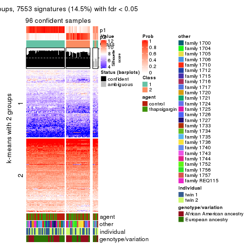
get_signatures(res, k = 3, scale_rows = FALSE)
get_signatures(res, k = 4, scale_rows = FALSE)
get_signatures(res, k = 5, scale_rows = FALSE)
get_signatures(res, k = 6, scale_rows = FALSE)
Compare the overlap of signatures from different k:
compare_signatures(res)
get_signature() returns a data frame invisibly. TO get the list of signatures, the function
call should be assigned to a variable explicitly. In following code, if plot argument is set
to FALSE, no heatmap is plotted while only the differential analysis is performed.
# code only for demonstration
tb = get_signature(res, k = ..., plot = FALSE)
An example of the output of tb is:
#> which_row fdr mean_1 mean_2 scaled_mean_1 scaled_mean_2 km
#> 1 38 0.042760348 8.373488 9.131774 -0.5533452 0.5164555 1
#> 2 40 0.018707592 7.106213 8.469186 -0.6173731 0.5762149 1
#> 3 55 0.019134737 10.221463 11.207825 -0.6159697 0.5749050 1
#> 4 59 0.006059896 5.921854 7.869574 -0.6899429 0.6439467 1
#> 5 60 0.018055526 8.928898 10.211722 -0.6204761 0.5791110 1
#> 6 98 0.009384629 15.714769 14.887706 0.6635654 -0.6193277 2
...
The columns in tb are:
which_row: row indices corresponding to the input matrix.fdr: FDR for the differential test. mean_x: The mean value in group x.scaled_mean_x: The mean value in group x after rows are scaled.km: Row groups if k-means clustering is applied to rows.UMAP plot which shows how samples are separated.
dimension_reduction(res, k = 2, method = "UMAP")
dimension_reduction(res, k = 3, method = "UMAP")
dimension_reduction(res, k = 4, method = "UMAP")
dimension_reduction(res, k = 5, method = "UMAP")
dimension_reduction(res, k = 6, method = "UMAP")
Following heatmap shows how subgroups are split when increasing k:
collect_classes(res)
Test correlation between subgroups and known annotations. If the known annotation is numeric, one-way ANOVA test is applied, and if the known annotation is discrete, chi-squared contingency table test is applied.
test_to_known_factors(res)
#> n agent(p) other(p) individual(p) genotype/variation(p) k
#> CV:NMF 96 0.402 3.89e-06 0.402 3.02e-02 2
#> CV:NMF 78 0.733 3.18e-11 0.514 2.97e-06 3
#> CV:NMF 28 1.000 4.74e-04 0.703 9.31e-07 4
#> CV:NMF 25 0.934 1.55e-03 0.934 4.58e-06 5
#> CV:NMF 25 0.859 1.55e-03 0.859 4.35e-06 6
If matrix rows can be associated to genes, consider to use functional_enrichment(res,
...) to perform function enrichment for the signature genes. See this vignette for more detailed explanations.
The object with results only for a single top-value method and a single partition method can be extracted as:
res = res_list["MAD", "hclust"]
# you can also extract it by
# res = res_list["MAD:hclust"]
A summary of res and all the functions that can be applied to it:
res
#> A 'ConsensusPartition' object with k = 2, 3, 4, 5, 6.
#> On a matrix with 51941 rows and 104 columns.
#> Top rows (1000, 2000, 3000, 4000, 5000) are extracted by 'MAD' method.
#> Subgroups are detected by 'hclust' method.
#> Performed in total 1250 partitions by row resampling.
#> Best k for subgroups seems to be 3.
#>
#> Following methods can be applied to this 'ConsensusPartition' object:
#> [1] "cola_report" "collect_classes" "collect_plots"
#> [4] "collect_stats" "colnames" "compare_signatures"
#> [7] "consensus_heatmap" "dimension_reduction" "functional_enrichment"
#> [10] "get_anno_col" "get_anno" "get_classes"
#> [13] "get_consensus" "get_matrix" "get_membership"
#> [16] "get_param" "get_signatures" "get_stats"
#> [19] "is_best_k" "is_stable_k" "membership_heatmap"
#> [22] "ncol" "nrow" "plot_ecdf"
#> [25] "rownames" "select_partition_number" "show"
#> [28] "suggest_best_k" "test_to_known_factors"
collect_plots() function collects all the plots made from res for all k (number of partitions)
into one single page to provide an easy and fast comparison between different k.
collect_plots(res)
The plots are:
k and the heatmap of
predicted classes for each k.k.k.k.All the plots in panels can be made by individual functions and they are plotted later in this section.
select_partition_number() produces several plots showing different
statistics for choosing “optimized” k. There are following statistics:
k;k, the area increased is defined as \(A_k - A_{k-1}\).The detailed explanations of these statistics can be found in the cola vignette.
Generally speaking, lower PAC score, higher mean silhouette score or higher
concordance corresponds to better partition. Rand index and Jaccard index
measure how similar the current partition is compared to partition with k-1.
If they are too similar, we won't accept k is better than k-1.
select_partition_number(res)
The numeric values for all these statistics can be obtained by get_stats().
get_stats(res)
#> k 1-PAC mean_silhouette concordance area_increased Rand Jaccard
#> 2 2 0.0564 0.517 0.709 0.3491 0.981 0.981
#> 3 3 0.0808 0.403 0.662 0.6380 0.584 0.576
#> 4 4 0.2651 0.360 0.596 0.1939 0.739 0.541
#> 5 5 0.3299 0.402 0.576 0.0937 0.795 0.465
#> 6 6 0.3823 0.398 0.593 0.0546 0.904 0.674
suggest_best_k() suggests the best \(k\) based on these statistics. The rules are as follows:
suggest_best_k(res)
#> [1] 3
Following shows the table of the partitions (You need to click the show/hide
code output link to see it). The membership matrix (columns with name p*)
is inferred by
clue::cl_consensus()
function with the SE method. Basically the value in the membership matrix
represents the probability to belong to a certain group. The finall class
label for an item is determined with the group with highest probability it
belongs to.
In get_classes() function, the entropy is calculated from the membership
matrix and the silhouette score is calculated from the consensus matrix.
cbind(get_classes(res, k = 2), get_membership(res, k = 2))
#> class entropy silhouette p1 p2
#> GSM494452 2 0.909 0.0000 0.324 0.676
#> GSM494454 1 0.995 -0.3514 0.540 0.460
#> GSM494456 1 0.876 0.5792 0.704 0.296
#> GSM494458 1 0.904 0.5560 0.680 0.320
#> GSM494460 1 0.909 0.4005 0.676 0.324
#> GSM494462 1 0.921 0.3911 0.664 0.336
#> GSM494464 1 0.876 0.5125 0.704 0.296
#> GSM494466 1 0.895 0.5723 0.688 0.312
#> GSM494468 1 0.827 0.5114 0.740 0.260
#> GSM494470 1 0.855 0.4790 0.720 0.280
#> GSM494472 1 0.900 0.3573 0.684 0.316
#> GSM494474 1 0.871 0.3941 0.708 0.292
#> GSM494476 1 0.904 0.5560 0.680 0.320
#> GSM494478 1 0.913 0.5888 0.672 0.328
#> GSM494480 1 0.939 0.2551 0.644 0.356
#> GSM494482 1 0.987 -0.2188 0.568 0.432
#> GSM494484 1 0.904 0.5560 0.680 0.320
#> GSM494486 1 0.904 0.5560 0.680 0.320
#> GSM494488 1 0.988 -0.2035 0.564 0.436
#> GSM494490 1 0.839 0.6209 0.732 0.268
#> GSM494492 1 0.714 0.6482 0.804 0.196
#> GSM494494 1 0.936 0.5579 0.648 0.352
#> GSM494496 1 0.939 0.3637 0.644 0.356
#> GSM494498 1 0.891 0.5697 0.692 0.308
#> GSM494500 1 0.904 0.3276 0.680 0.320
#> GSM494502 1 0.781 0.5303 0.768 0.232
#> GSM494504 1 0.714 0.5727 0.804 0.196
#> GSM494506 1 0.615 0.6357 0.848 0.152
#> GSM494508 1 0.767 0.6357 0.776 0.224
#> GSM494510 1 0.886 0.5757 0.696 0.304
#> GSM494512 1 0.574 0.6400 0.864 0.136
#> GSM494514 1 0.913 0.4406 0.672 0.328
#> GSM494516 1 0.706 0.5871 0.808 0.192
#> GSM494518 1 0.697 0.5819 0.812 0.188
#> GSM494520 1 0.730 0.5694 0.796 0.204
#> GSM494522 1 0.584 0.6349 0.860 0.140
#> GSM494524 1 0.833 0.5977 0.736 0.264
#> GSM494526 1 0.994 -0.3411 0.544 0.456
#> GSM494528 1 0.781 0.5370 0.768 0.232
#> GSM494530 1 0.814 0.5621 0.748 0.252
#> GSM494532 1 0.615 0.6262 0.848 0.152
#> GSM494534 1 0.482 0.6438 0.896 0.104
#> GSM494536 1 0.775 0.5851 0.772 0.228
#> GSM494538 1 0.671 0.6494 0.824 0.176
#> GSM494540 1 0.541 0.6507 0.876 0.124
#> GSM494542 1 0.605 0.6433 0.852 0.148
#> GSM494544 1 0.689 0.6445 0.816 0.184
#> GSM494546 1 0.662 0.6510 0.828 0.172
#> GSM494548 1 0.730 0.6503 0.796 0.204
#> GSM494550 1 0.671 0.6501 0.824 0.176
#> GSM494552 1 0.866 0.4957 0.712 0.288
#> GSM494554 1 0.855 0.5166 0.720 0.280
#> GSM494453 1 0.978 -0.0487 0.588 0.412
#> GSM494455 1 0.932 0.2490 0.652 0.348
#> GSM494457 1 0.900 0.5585 0.684 0.316
#> GSM494459 1 0.904 0.5560 0.680 0.320
#> GSM494461 1 0.871 0.4804 0.708 0.292
#> GSM494463 1 0.932 0.3731 0.652 0.348
#> GSM494465 1 0.738 0.6590 0.792 0.208
#> GSM494467 1 0.891 0.5690 0.692 0.308
#> GSM494469 1 0.775 0.6172 0.772 0.228
#> GSM494471 1 0.833 0.5024 0.736 0.264
#> GSM494473 1 0.939 0.3313 0.644 0.356
#> GSM494475 1 0.706 0.6224 0.808 0.192
#> GSM494477 1 0.904 0.5560 0.680 0.320
#> GSM494479 1 0.939 0.5715 0.644 0.356
#> GSM494481 1 0.788 0.6233 0.764 0.236
#> GSM494483 1 0.775 0.6190 0.772 0.228
#> GSM494485 1 0.904 0.5560 0.680 0.320
#> GSM494487 1 0.904 0.5560 0.680 0.320
#> GSM494489 1 0.781 0.5698 0.768 0.232
#> GSM494491 1 0.781 0.6249 0.768 0.232
#> GSM494493 1 0.625 0.6491 0.844 0.156
#> GSM494495 1 0.917 0.5560 0.668 0.332
#> GSM494497 1 0.939 0.3630 0.644 0.356
#> GSM494499 1 0.895 0.5668 0.688 0.312
#> GSM494501 1 0.808 0.5277 0.752 0.248
#> GSM494503 1 0.563 0.6465 0.868 0.132
#> GSM494505 1 0.706 0.6409 0.808 0.192
#> GSM494507 1 0.595 0.6705 0.856 0.144
#> GSM494509 1 0.821 0.6044 0.744 0.256
#> GSM494511 1 0.839 0.5970 0.732 0.268
#> GSM494513 1 0.563 0.6701 0.868 0.132
#> GSM494515 1 0.900 0.4723 0.684 0.316
#> GSM494517 1 0.595 0.6514 0.856 0.144
#> GSM494519 1 0.671 0.6488 0.824 0.176
#> GSM494521 1 0.541 0.6619 0.876 0.124
#> GSM494523 1 0.563 0.6605 0.868 0.132
#> GSM494525 1 0.871 0.5825 0.708 0.292
#> GSM494527 1 0.990 -0.1222 0.560 0.440
#> GSM494529 1 0.595 0.6451 0.856 0.144
#> GSM494531 1 0.827 0.5699 0.740 0.260
#> GSM494533 1 0.529 0.6684 0.880 0.120
#> GSM494535 1 0.529 0.6693 0.880 0.120
#> GSM494537 1 0.680 0.6412 0.820 0.180
#> GSM494539 1 0.662 0.6457 0.828 0.172
#> GSM494541 1 0.595 0.6638 0.856 0.144
#> GSM494543 1 0.584 0.6674 0.860 0.140
#> GSM494545 1 0.644 0.6598 0.836 0.164
#> GSM494547 1 0.680 0.6392 0.820 0.180
#> GSM494549 1 0.706 0.6561 0.808 0.192
#> GSM494551 1 0.644 0.6609 0.836 0.164
#> GSM494553 1 0.861 0.4944 0.716 0.284
#> GSM494555 1 0.827 0.5317 0.740 0.260
cbind(get_classes(res, k = 3), get_membership(res, k = 3))
#> class entropy silhouette p1 p2 p3
#> GSM494452 3 0.595 0.2944 0.280 0.012 0.708
#> GSM494454 1 0.707 -0.1921 0.496 0.020 0.484
#> GSM494456 2 0.395 0.8347 0.076 0.884 0.040
#> GSM494458 2 0.183 0.8433 0.036 0.956 0.008
#> GSM494460 1 0.884 -0.1690 0.536 0.136 0.328
#> GSM494462 1 0.900 -0.3577 0.472 0.132 0.396
#> GSM494464 1 0.835 0.2479 0.600 0.120 0.280
#> GSM494466 2 0.404 0.8401 0.080 0.880 0.040
#> GSM494468 1 0.702 0.3643 0.700 0.068 0.232
#> GSM494470 1 0.708 0.3288 0.684 0.060 0.256
#> GSM494472 1 0.764 0.2356 0.604 0.060 0.336
#> GSM494474 1 0.738 0.2712 0.628 0.052 0.320
#> GSM494476 2 0.116 0.8402 0.028 0.972 0.000
#> GSM494478 2 0.895 0.4910 0.216 0.568 0.216
#> GSM494480 1 0.819 0.0582 0.528 0.076 0.396
#> GSM494482 1 0.775 -0.1299 0.500 0.048 0.452
#> GSM494484 2 0.171 0.8399 0.032 0.960 0.008
#> GSM494486 2 0.200 0.8440 0.036 0.952 0.012
#> GSM494488 1 0.799 -0.1233 0.492 0.060 0.448
#> GSM494490 2 0.909 0.4262 0.296 0.532 0.172
#> GSM494492 1 0.840 0.4229 0.624 0.192 0.184
#> GSM494494 2 0.618 0.7333 0.156 0.772 0.072
#> GSM494496 3 0.926 0.2806 0.412 0.156 0.432
#> GSM494498 2 0.346 0.8444 0.060 0.904 0.036
#> GSM494500 1 0.701 0.2915 0.652 0.040 0.308
#> GSM494502 1 0.696 0.3839 0.660 0.040 0.300
#> GSM494504 1 0.621 0.4279 0.736 0.036 0.228
#> GSM494506 1 0.710 0.4552 0.704 0.080 0.216
#> GSM494508 2 0.903 0.2773 0.352 0.504 0.144
#> GSM494510 2 0.437 0.8353 0.076 0.868 0.056
#> GSM494512 1 0.726 0.4674 0.696 0.088 0.216
#> GSM494514 1 0.932 -0.3079 0.448 0.164 0.388
#> GSM494516 1 0.640 0.4478 0.740 0.052 0.208
#> GSM494518 1 0.635 0.4498 0.740 0.048 0.212
#> GSM494520 1 0.592 0.4378 0.756 0.032 0.212
#> GSM494522 1 0.720 0.4644 0.704 0.092 0.204
#> GSM494524 2 0.528 0.8077 0.128 0.820 0.052
#> GSM494526 3 0.749 0.0181 0.480 0.036 0.484
#> GSM494528 1 0.648 0.4333 0.716 0.040 0.244
#> GSM494530 1 0.734 0.3667 0.688 0.088 0.224
#> GSM494532 1 0.753 0.4686 0.684 0.108 0.208
#> GSM494534 1 0.708 0.4614 0.712 0.088 0.200
#> GSM494536 1 0.546 0.4398 0.776 0.020 0.204
#> GSM494538 1 0.700 0.4784 0.716 0.084 0.200
#> GSM494540 1 0.711 0.4905 0.716 0.100 0.184
#> GSM494542 1 0.723 0.4740 0.704 0.096 0.200
#> GSM494544 1 0.775 0.4345 0.656 0.100 0.244
#> GSM494546 1 0.796 0.4218 0.648 0.120 0.232
#> GSM494548 1 0.918 0.3147 0.528 0.188 0.284
#> GSM494550 1 0.802 0.4196 0.644 0.124 0.232
#> GSM494552 1 0.897 -0.0471 0.528 0.148 0.324
#> GSM494554 1 0.889 0.0312 0.556 0.160 0.284
#> GSM494453 1 0.762 -0.1088 0.560 0.048 0.392
#> GSM494455 1 0.757 0.0822 0.576 0.048 0.376
#> GSM494457 2 0.234 0.8431 0.048 0.940 0.012
#> GSM494459 2 0.215 0.8432 0.036 0.948 0.016
#> GSM494461 1 0.896 -0.1456 0.540 0.156 0.304
#> GSM494463 1 0.906 -0.4189 0.452 0.136 0.412
#> GSM494465 1 0.816 0.4000 0.636 0.228 0.136
#> GSM494467 2 0.358 0.8442 0.056 0.900 0.044
#> GSM494469 1 0.785 0.4209 0.668 0.144 0.188
#> GSM494471 1 0.733 0.3428 0.672 0.072 0.256
#> GSM494473 1 0.790 0.1957 0.616 0.084 0.300
#> GSM494475 1 0.669 0.4570 0.748 0.104 0.148
#> GSM494477 2 0.116 0.8402 0.028 0.972 0.000
#> GSM494479 2 0.856 0.5046 0.244 0.600 0.156
#> GSM494481 1 0.812 0.4156 0.648 0.184 0.168
#> GSM494483 1 0.722 0.4466 0.716 0.132 0.152
#> GSM494485 2 0.171 0.8399 0.032 0.960 0.008
#> GSM494487 2 0.165 0.8426 0.036 0.960 0.004
#> GSM494489 1 0.755 0.3561 0.684 0.112 0.204
#> GSM494491 2 0.775 0.5291 0.300 0.624 0.076
#> GSM494493 1 0.782 0.4177 0.672 0.176 0.152
#> GSM494495 2 0.397 0.8284 0.100 0.876 0.024
#> GSM494497 3 0.923 0.2927 0.420 0.152 0.428
#> GSM494499 2 0.365 0.8432 0.068 0.896 0.036
#> GSM494501 1 0.781 0.4090 0.652 0.104 0.244
#> GSM494503 1 0.547 0.4773 0.816 0.112 0.072
#> GSM494505 1 0.716 0.4434 0.720 0.144 0.136
#> GSM494507 1 0.704 0.5060 0.728 0.136 0.136
#> GSM494509 2 0.730 0.6459 0.244 0.680 0.076
#> GSM494511 2 0.583 0.7857 0.128 0.796 0.076
#> GSM494513 1 0.781 0.4666 0.672 0.184 0.144
#> GSM494515 1 0.927 -0.3161 0.460 0.160 0.380
#> GSM494517 1 0.645 0.4813 0.764 0.132 0.104
#> GSM494519 1 0.710 0.4976 0.724 0.136 0.140
#> GSM494521 1 0.704 0.4974 0.728 0.140 0.132
#> GSM494523 1 0.636 0.4945 0.768 0.136 0.096
#> GSM494525 2 0.531 0.8104 0.136 0.816 0.048
#> GSM494527 1 0.761 -0.0725 0.536 0.044 0.420
#> GSM494529 1 0.609 0.4769 0.784 0.124 0.092
#> GSM494531 1 0.839 0.2671 0.612 0.140 0.248
#> GSM494533 1 0.737 0.4519 0.688 0.220 0.092
#> GSM494535 1 0.765 0.4506 0.680 0.196 0.124
#> GSM494537 1 0.589 0.4745 0.796 0.104 0.100
#> GSM494539 1 0.632 0.4682 0.772 0.116 0.112
#> GSM494541 1 0.677 0.4902 0.744 0.144 0.112
#> GSM494543 1 0.688 0.4717 0.736 0.156 0.108
#> GSM494545 1 0.816 0.4101 0.644 0.192 0.164
#> GSM494547 1 0.851 0.3540 0.604 0.244 0.152
#> GSM494549 1 0.894 0.3657 0.568 0.232 0.200
#> GSM494551 1 0.787 0.4332 0.664 0.200 0.136
#> GSM494553 1 0.892 -0.0471 0.532 0.144 0.324
#> GSM494555 1 0.854 0.1095 0.592 0.140 0.268
cbind(get_classes(res, k = 4), get_membership(res, k = 4))
#> class entropy silhouette p1 p2 p3 p4
#> GSM494452 3 0.6364 0.18752 0.144 0.000 0.652 0.204
#> GSM494454 3 0.7790 0.02944 0.340 0.000 0.408 0.252
#> GSM494456 2 0.3571 0.82364 0.008 0.868 0.036 0.088
#> GSM494458 2 0.1362 0.83400 0.004 0.964 0.012 0.020
#> GSM494460 1 0.8589 -0.35399 0.448 0.060 0.328 0.164
#> GSM494462 3 0.8464 0.39607 0.392 0.056 0.408 0.144
#> GSM494464 4 0.8828 0.23346 0.368 0.068 0.176 0.388
#> GSM494466 2 0.4409 0.82590 0.032 0.836 0.044 0.088
#> GSM494468 1 0.7752 -0.19314 0.476 0.020 0.140 0.364
#> GSM494470 1 0.7441 -0.12620 0.500 0.008 0.144 0.348
#> GSM494472 4 0.8204 0.35309 0.340 0.016 0.232 0.412
#> GSM494474 4 0.8008 0.34773 0.364 0.008 0.228 0.400
#> GSM494476 2 0.0992 0.83216 0.004 0.976 0.012 0.008
#> GSM494478 2 0.8091 0.48994 0.036 0.512 0.172 0.280
#> GSM494480 4 0.8310 0.25756 0.280 0.020 0.272 0.428
#> GSM494482 4 0.8064 0.14186 0.300 0.004 0.344 0.352
#> GSM494484 2 0.1362 0.83002 0.012 0.964 0.020 0.004
#> GSM494486 2 0.1484 0.83379 0.004 0.960 0.020 0.016
#> GSM494488 4 0.8340 0.06698 0.276 0.016 0.340 0.368
#> GSM494490 2 0.8306 0.46802 0.104 0.504 0.084 0.308
#> GSM494492 1 0.8621 -0.22575 0.436 0.108 0.096 0.360
#> GSM494494 2 0.6155 0.71847 0.076 0.740 0.072 0.112
#> GSM494496 3 0.8477 0.44500 0.384 0.072 0.424 0.120
#> GSM494498 2 0.3259 0.83262 0.020 0.892 0.032 0.056
#> GSM494500 1 0.7768 -0.31260 0.412 0.004 0.200 0.384
#> GSM494502 4 0.6920 0.51852 0.316 0.000 0.132 0.552
#> GSM494504 4 0.6538 0.49221 0.392 0.000 0.080 0.528
#> GSM494506 4 0.6058 0.52426 0.352 0.020 0.024 0.604
#> GSM494508 2 0.8844 0.25539 0.152 0.440 0.088 0.320
#> GSM494510 2 0.4109 0.82285 0.032 0.848 0.028 0.092
#> GSM494512 4 0.5946 0.50907 0.348 0.020 0.020 0.612
#> GSM494514 3 0.8779 0.39430 0.368 0.072 0.400 0.160
#> GSM494516 4 0.6841 0.44816 0.432 0.008 0.076 0.484
#> GSM494518 4 0.6999 0.42311 0.444 0.008 0.088 0.460
#> GSM494520 4 0.6792 0.38981 0.440 0.008 0.072 0.480
#> GSM494522 4 0.6366 0.52430 0.344 0.020 0.040 0.596
#> GSM494524 2 0.4950 0.79941 0.020 0.788 0.044 0.148
#> GSM494526 3 0.8007 -0.13493 0.280 0.004 0.396 0.320
#> GSM494528 4 0.7222 0.45778 0.396 0.004 0.124 0.476
#> GSM494530 1 0.8184 -0.04348 0.492 0.048 0.140 0.320
#> GSM494532 4 0.7337 0.50898 0.356 0.052 0.056 0.536
#> GSM494534 4 0.6516 0.50878 0.344 0.020 0.048 0.588
#> GSM494536 1 0.6538 0.12750 0.628 0.000 0.140 0.232
#> GSM494538 4 0.6837 0.36891 0.444 0.016 0.060 0.480
#> GSM494540 4 0.6585 0.38456 0.456 0.016 0.044 0.484
#> GSM494542 4 0.6781 0.42928 0.428 0.012 0.064 0.496
#> GSM494544 4 0.7190 0.47075 0.312 0.036 0.076 0.576
#> GSM494546 4 0.6437 0.42261 0.272 0.044 0.036 0.648
#> GSM494548 4 0.6561 0.27447 0.136 0.060 0.096 0.708
#> GSM494550 4 0.6437 0.42552 0.272 0.044 0.036 0.648
#> GSM494552 1 0.8421 -0.20718 0.472 0.060 0.324 0.144
#> GSM494554 1 0.8420 -0.10897 0.504 0.068 0.280 0.148
#> GSM494453 1 0.6874 -0.00784 0.560 0.012 0.344 0.084
#> GSM494455 1 0.7447 0.05604 0.548 0.012 0.280 0.160
#> GSM494457 2 0.1762 0.83449 0.020 0.952 0.012 0.016
#> GSM494459 2 0.1593 0.83404 0.004 0.956 0.016 0.024
#> GSM494461 1 0.7721 -0.22083 0.548 0.064 0.308 0.080
#> GSM494463 1 0.8091 -0.46764 0.432 0.060 0.412 0.096
#> GSM494465 1 0.7710 0.29186 0.612 0.172 0.068 0.148
#> GSM494467 2 0.3561 0.83263 0.028 0.880 0.036 0.056
#> GSM494469 1 0.7620 0.22360 0.592 0.056 0.108 0.244
#> GSM494471 1 0.7527 -0.03660 0.520 0.012 0.152 0.316
#> GSM494473 1 0.6731 0.24443 0.624 0.008 0.248 0.120
#> GSM494475 1 0.6092 0.40562 0.724 0.024 0.136 0.116
#> GSM494477 2 0.1114 0.83183 0.004 0.972 0.016 0.008
#> GSM494479 2 0.8349 0.47744 0.172 0.560 0.168 0.100
#> GSM494481 1 0.6591 0.38313 0.712 0.084 0.116 0.088
#> GSM494483 1 0.5211 0.43549 0.796 0.044 0.088 0.072
#> GSM494485 2 0.1362 0.83002 0.012 0.964 0.020 0.004
#> GSM494487 2 0.1247 0.83250 0.004 0.968 0.016 0.012
#> GSM494489 1 0.6287 0.32594 0.700 0.036 0.196 0.068
#> GSM494491 2 0.7815 0.52601 0.232 0.584 0.064 0.120
#> GSM494493 1 0.6375 0.40489 0.724 0.064 0.120 0.092
#> GSM494495 2 0.4269 0.80876 0.060 0.848 0.048 0.044
#> GSM494497 3 0.8325 0.43944 0.388 0.072 0.436 0.104
#> GSM494499 2 0.3470 0.83196 0.024 0.884 0.040 0.052
#> GSM494501 1 0.7118 0.24538 0.616 0.016 0.172 0.196
#> GSM494503 1 0.3996 0.41867 0.852 0.016 0.044 0.088
#> GSM494505 1 0.6115 0.42898 0.736 0.044 0.100 0.120
#> GSM494507 1 0.7121 0.09714 0.580 0.048 0.056 0.316
#> GSM494509 2 0.7754 0.62622 0.160 0.616 0.084 0.140
#> GSM494511 2 0.5933 0.76373 0.092 0.756 0.072 0.080
#> GSM494513 1 0.7536 0.22072 0.560 0.056 0.076 0.308
#> GSM494515 3 0.8449 0.35571 0.404 0.072 0.408 0.116
#> GSM494517 1 0.5305 0.39872 0.784 0.040 0.056 0.120
#> GSM494519 1 0.6204 0.30021 0.700 0.032 0.064 0.204
#> GSM494521 1 0.6560 0.36265 0.672 0.048 0.056 0.224
#> GSM494523 1 0.6062 0.37723 0.708 0.032 0.056 0.204
#> GSM494525 2 0.5303 0.79634 0.088 0.788 0.036 0.088
#> GSM494527 1 0.7225 0.02841 0.496 0.000 0.352 0.152
#> GSM494529 1 0.4441 0.42210 0.836 0.032 0.052 0.080
#> GSM494531 1 0.7392 0.25021 0.632 0.052 0.176 0.140
#> GSM494533 1 0.7240 0.21900 0.600 0.104 0.032 0.264
#> GSM494535 1 0.7783 0.20735 0.572 0.096 0.068 0.264
#> GSM494537 1 0.4648 0.43124 0.820 0.020 0.072 0.088
#> GSM494539 1 0.4157 0.44013 0.848 0.020 0.060 0.072
#> GSM494541 1 0.6137 0.28342 0.696 0.036 0.048 0.220
#> GSM494543 1 0.6168 0.35590 0.716 0.056 0.048 0.180
#> GSM494545 1 0.7403 0.25355 0.572 0.064 0.060 0.304
#> GSM494547 1 0.8274 0.17143 0.496 0.112 0.072 0.320
#> GSM494549 1 0.8270 0.16056 0.480 0.096 0.080 0.344
#> GSM494551 1 0.7384 0.25368 0.576 0.084 0.044 0.296
#> GSM494553 1 0.8325 -0.18491 0.480 0.056 0.324 0.140
#> GSM494555 1 0.8185 -0.03320 0.536 0.060 0.256 0.148
cbind(get_classes(res, k = 5), get_membership(res, k = 5))
#> class entropy silhouette p1 p2 p3 p4 p5
#> GSM494452 5 0.6844 0.4052 0.220 0.000 0.048 0.168 0.564
#> GSM494454 4 0.7715 -0.3167 0.236 0.000 0.060 0.384 0.320
#> GSM494456 2 0.4023 0.7976 0.028 0.836 0.024 0.028 0.084
#> GSM494458 2 0.1644 0.8153 0.008 0.948 0.012 0.004 0.028
#> GSM494460 1 0.5438 0.5473 0.728 0.016 0.080 0.152 0.024
#> GSM494462 1 0.4470 0.5484 0.792 0.012 0.032 0.136 0.028
#> GSM494464 4 0.8771 0.0424 0.144 0.056 0.152 0.444 0.204
#> GSM494466 2 0.4819 0.7996 0.040 0.796 0.044 0.036 0.084
#> GSM494468 4 0.7409 0.2940 0.196 0.016 0.108 0.568 0.112
#> GSM494470 4 0.7536 0.2510 0.204 0.008 0.132 0.540 0.116
#> GSM494472 4 0.7201 0.1122 0.136 0.000 0.096 0.548 0.220
#> GSM494474 4 0.7224 0.1412 0.144 0.000 0.108 0.556 0.192
#> GSM494476 2 0.0854 0.8136 0.008 0.976 0.012 0.000 0.004
#> GSM494478 2 0.8662 0.4334 0.156 0.460 0.052 0.144 0.188
#> GSM494480 4 0.7610 -0.2296 0.080 0.000 0.156 0.412 0.352
#> GSM494482 4 0.7522 -0.2506 0.152 0.000 0.076 0.436 0.336
#> GSM494484 2 0.1405 0.8111 0.008 0.956 0.020 0.000 0.016
#> GSM494486 2 0.1074 0.8147 0.012 0.968 0.004 0.000 0.016
#> GSM494488 4 0.7610 -0.2027 0.184 0.004 0.056 0.424 0.332
#> GSM494490 2 0.8776 0.4336 0.112 0.460 0.080 0.184 0.164
#> GSM494492 4 0.8319 0.2954 0.172 0.084 0.128 0.520 0.096
#> GSM494494 2 0.5973 0.6897 0.072 0.720 0.056 0.112 0.040
#> GSM494496 1 0.3846 0.5683 0.848 0.024 0.028 0.072 0.028
#> GSM494498 2 0.2998 0.8124 0.024 0.888 0.036 0.004 0.048
#> GSM494500 4 0.7186 0.2340 0.188 0.000 0.092 0.556 0.164
#> GSM494502 4 0.5151 0.3790 0.060 0.000 0.060 0.744 0.136
#> GSM494504 4 0.5047 0.4276 0.088 0.000 0.064 0.760 0.088
#> GSM494506 4 0.5362 0.4483 0.064 0.012 0.100 0.752 0.072
#> GSM494508 2 0.9248 0.2404 0.116 0.388 0.132 0.236 0.128
#> GSM494510 2 0.4345 0.7991 0.016 0.812 0.076 0.016 0.080
#> GSM494512 4 0.5675 0.4324 0.088 0.012 0.124 0.724 0.052
#> GSM494514 1 0.5126 0.5619 0.768 0.020 0.044 0.112 0.056
#> GSM494516 4 0.5033 0.4370 0.132 0.004 0.072 0.756 0.036
#> GSM494518 4 0.5140 0.4221 0.152 0.004 0.076 0.740 0.028
#> GSM494520 4 0.6214 0.4237 0.172 0.004 0.088 0.664 0.072
#> GSM494522 4 0.5276 0.4533 0.068 0.016 0.100 0.760 0.056
#> GSM494524 2 0.5169 0.7731 0.032 0.760 0.028 0.048 0.132
#> GSM494526 5 0.7697 0.2848 0.188 0.000 0.072 0.356 0.384
#> GSM494528 4 0.5883 0.3806 0.072 0.000 0.104 0.692 0.132
#> GSM494530 4 0.7224 0.1157 0.372 0.016 0.092 0.468 0.052
#> GSM494532 4 0.6434 0.4360 0.080 0.048 0.120 0.688 0.064
#> GSM494534 4 0.5100 0.4402 0.036 0.016 0.100 0.768 0.080
#> GSM494536 4 0.7686 0.0349 0.232 0.000 0.212 0.468 0.088
#> GSM494538 4 0.6455 0.3570 0.116 0.008 0.192 0.636 0.048
#> GSM494540 4 0.6383 0.3123 0.064 0.008 0.240 0.624 0.064
#> GSM494542 4 0.6411 0.3756 0.080 0.008 0.188 0.648 0.076
#> GSM494544 4 0.7091 0.3861 0.112 0.016 0.196 0.596 0.080
#> GSM494546 4 0.7130 0.3387 0.072 0.024 0.192 0.600 0.112
#> GSM494548 4 0.7858 0.1806 0.048 0.028 0.336 0.432 0.156
#> GSM494550 4 0.7089 0.3431 0.068 0.024 0.188 0.604 0.116
#> GSM494552 1 0.6209 0.5561 0.684 0.032 0.064 0.168 0.052
#> GSM494554 1 0.6985 0.5271 0.632 0.040 0.092 0.164 0.072
#> GSM494453 1 0.8546 -0.0271 0.360 0.004 0.220 0.196 0.220
#> GSM494455 1 0.8685 -0.0753 0.312 0.008 0.196 0.292 0.192
#> GSM494457 2 0.2204 0.8170 0.008 0.920 0.036 0.000 0.036
#> GSM494459 2 0.1644 0.8151 0.008 0.948 0.012 0.004 0.028
#> GSM494461 1 0.5835 0.4860 0.688 0.020 0.184 0.088 0.020
#> GSM494463 1 0.3908 0.5835 0.844 0.016 0.060 0.056 0.024
#> GSM494465 3 0.8869 0.3541 0.160 0.144 0.368 0.288 0.040
#> GSM494467 2 0.3735 0.8110 0.020 0.852 0.044 0.016 0.068
#> GSM494469 4 0.8759 -0.1809 0.180 0.032 0.328 0.336 0.124
#> GSM494471 4 0.7930 0.2318 0.196 0.012 0.172 0.500 0.120
#> GSM494473 1 0.8537 -0.1578 0.316 0.004 0.308 0.196 0.176
#> GSM494475 3 0.7873 0.3951 0.316 0.000 0.364 0.248 0.072
#> GSM494477 2 0.0968 0.8131 0.012 0.972 0.012 0.000 0.004
#> GSM494479 2 0.7787 0.4155 0.292 0.500 0.088 0.044 0.076
#> GSM494481 3 0.8006 0.4647 0.116 0.048 0.540 0.176 0.120
#> GSM494483 3 0.8140 0.5052 0.252 0.020 0.436 0.220 0.072
#> GSM494485 2 0.1405 0.8111 0.008 0.956 0.020 0.000 0.016
#> GSM494487 2 0.0854 0.8132 0.012 0.976 0.004 0.000 0.008
#> GSM494489 1 0.8290 -0.3398 0.344 0.008 0.336 0.208 0.104
#> GSM494491 2 0.8082 0.4901 0.120 0.536 0.188 0.080 0.076
#> GSM494493 3 0.8136 0.4077 0.328 0.032 0.372 0.228 0.040
#> GSM494495 2 0.4491 0.7848 0.052 0.816 0.068 0.032 0.032
#> GSM494497 1 0.3532 0.5631 0.868 0.024 0.032 0.048 0.028
#> GSM494499 2 0.3090 0.8122 0.028 0.884 0.044 0.004 0.040
#> GSM494501 4 0.8412 -0.1536 0.236 0.004 0.308 0.324 0.128
#> GSM494503 3 0.7164 0.5770 0.204 0.004 0.512 0.244 0.036
#> GSM494505 3 0.7645 0.4490 0.316 0.012 0.432 0.200 0.040
#> GSM494507 4 0.7556 -0.2184 0.140 0.028 0.328 0.468 0.036
#> GSM494509 2 0.7870 0.5793 0.156 0.560 0.140 0.060 0.084
#> GSM494511 2 0.5974 0.7318 0.080 0.712 0.116 0.020 0.072
#> GSM494513 3 0.7661 0.3765 0.192 0.024 0.436 0.320 0.028
#> GSM494515 1 0.4680 0.5670 0.800 0.020 0.084 0.060 0.036
#> GSM494517 3 0.7385 0.5543 0.232 0.012 0.448 0.288 0.020
#> GSM494519 3 0.7088 0.4212 0.192 0.008 0.420 0.368 0.012
#> GSM494521 3 0.7675 0.4499 0.228 0.012 0.380 0.348 0.032
#> GSM494523 3 0.7334 0.5427 0.232 0.004 0.464 0.268 0.032
#> GSM494525 2 0.5452 0.7694 0.036 0.756 0.072 0.044 0.092
#> GSM494527 5 0.8505 0.1228 0.240 0.000 0.280 0.180 0.300
#> GSM494529 3 0.7533 0.5545 0.248 0.012 0.444 0.268 0.028
#> GSM494531 1 0.7332 0.0670 0.504 0.012 0.280 0.164 0.040
#> GSM494533 4 0.8063 -0.3531 0.132 0.076 0.364 0.400 0.028
#> GSM494535 4 0.8427 -0.3106 0.172 0.076 0.308 0.404 0.040
#> GSM494537 3 0.7898 0.5494 0.240 0.004 0.436 0.240 0.080
#> GSM494539 3 0.7454 0.5624 0.240 0.004 0.480 0.228 0.048
#> GSM494541 3 0.7346 0.5094 0.140 0.012 0.512 0.284 0.052
#> GSM494543 3 0.7378 0.5616 0.176 0.020 0.532 0.232 0.040
#> GSM494545 3 0.7472 0.4692 0.176 0.024 0.540 0.212 0.048
#> GSM494547 3 0.8275 0.3770 0.152 0.068 0.500 0.208 0.072
#> GSM494549 3 0.7491 0.3663 0.124 0.044 0.568 0.208 0.056
#> GSM494551 3 0.7752 0.4712 0.176 0.036 0.508 0.236 0.044
#> GSM494553 1 0.6382 0.5522 0.672 0.028 0.080 0.164 0.056
#> GSM494555 1 0.7121 0.4996 0.612 0.032 0.116 0.172 0.068
cbind(get_classes(res, k = 6), get_membership(res, k = 6))
#> class entropy silhouette p1 p2 p3 p4 p5 p6
#> GSM494452 5 0.5184 0.44875 0.024 0.000 0.020 0.136 0.708 0.112
#> GSM494454 5 0.7241 0.33859 0.116 0.000 0.008 0.340 0.396 0.140
#> GSM494456 2 0.4033 0.76293 0.004 0.804 0.112 0.012 0.044 0.024
#> GSM494458 2 0.1577 0.78674 0.000 0.940 0.036 0.000 0.016 0.008
#> GSM494460 6 0.5788 0.62320 0.152 0.004 0.036 0.116 0.024 0.668
#> GSM494462 6 0.4110 0.65902 0.056 0.000 0.016 0.100 0.028 0.800
#> GSM494464 4 0.8828 -0.00506 0.160 0.044 0.136 0.412 0.144 0.104
#> GSM494466 2 0.4815 0.76521 0.016 0.768 0.108 0.024 0.052 0.032
#> GSM494468 4 0.7563 0.26412 0.196 0.016 0.060 0.520 0.072 0.136
#> GSM494470 4 0.7592 0.22041 0.216 0.008 0.052 0.496 0.088 0.140
#> GSM494472 4 0.7393 0.02741 0.152 0.000 0.076 0.512 0.192 0.068
#> GSM494474 4 0.7378 0.04152 0.152 0.000 0.060 0.516 0.184 0.088
#> GSM494476 2 0.0798 0.78460 0.004 0.976 0.012 0.000 0.004 0.004
#> GSM494478 2 0.8269 0.35973 0.000 0.408 0.200 0.112 0.124 0.156
#> GSM494480 4 0.7966 -0.21777 0.104 0.000 0.176 0.420 0.232 0.068
#> GSM494482 4 0.7191 -0.32644 0.088 0.000 0.056 0.456 0.328 0.072
#> GSM494484 2 0.1495 0.78134 0.004 0.948 0.020 0.000 0.020 0.008
#> GSM494486 2 0.1223 0.78596 0.004 0.960 0.016 0.000 0.012 0.008
#> GSM494488 4 0.7723 -0.31702 0.084 0.004 0.068 0.412 0.324 0.108
#> GSM494490 2 0.8322 0.32576 0.012 0.412 0.224 0.164 0.076 0.112
#> GSM494492 4 0.8609 0.21773 0.228 0.072 0.108 0.420 0.056 0.116
#> GSM494494 2 0.5868 0.64864 0.056 0.704 0.076 0.092 0.016 0.056
#> GSM494496 6 0.3736 0.69277 0.056 0.004 0.028 0.036 0.036 0.840
#> GSM494498 2 0.3178 0.77796 0.000 0.848 0.104 0.008 0.024 0.016
#> GSM494500 4 0.7242 0.17460 0.160 0.000 0.040 0.528 0.160 0.112
#> GSM494502 4 0.5982 0.37206 0.112 0.000 0.080 0.668 0.104 0.036
#> GSM494504 4 0.5094 0.41845 0.124 0.000 0.040 0.736 0.052 0.048
#> GSM494506 4 0.6023 0.34684 0.156 0.008 0.112 0.656 0.040 0.028
#> GSM494508 2 0.8889 0.05267 0.076 0.356 0.232 0.196 0.060 0.080
#> GSM494510 2 0.4168 0.75980 0.008 0.772 0.168 0.012 0.024 0.016
#> GSM494512 4 0.5904 0.24868 0.144 0.000 0.152 0.640 0.012 0.052
#> GSM494514 6 0.4969 0.68453 0.068 0.008 0.080 0.060 0.024 0.760
#> GSM494516 4 0.5375 0.42110 0.180 0.000 0.012 0.684 0.048 0.076
#> GSM494518 4 0.5748 0.41050 0.188 0.000 0.016 0.652 0.048 0.096
#> GSM494520 4 0.6178 0.38619 0.156 0.000 0.044 0.636 0.044 0.120
#> GSM494522 4 0.5271 0.28818 0.116 0.000 0.144 0.696 0.012 0.032
#> GSM494524 2 0.5136 0.73352 0.004 0.724 0.152 0.036 0.060 0.024
#> GSM494526 5 0.7750 0.35649 0.096 0.000 0.068 0.360 0.364 0.112
#> GSM494528 4 0.6165 0.35377 0.184 0.000 0.064 0.628 0.096 0.028
#> GSM494530 4 0.7755 0.15307 0.168 0.004 0.068 0.392 0.052 0.316
#> GSM494532 4 0.6558 0.28625 0.132 0.036 0.120 0.636 0.028 0.048
#> GSM494534 4 0.5910 0.29687 0.164 0.008 0.108 0.660 0.036 0.024
#> GSM494536 4 0.7956 0.08267 0.344 0.000 0.076 0.352 0.116 0.112
#> GSM494538 4 0.6769 0.28904 0.240 0.000 0.136 0.540 0.044 0.040
#> GSM494540 4 0.6980 0.23436 0.252 0.004 0.148 0.516 0.044 0.036
#> GSM494542 4 0.6937 0.27678 0.204 0.004 0.136 0.556 0.056 0.044
#> GSM494544 4 0.7297 -0.02599 0.132 0.008 0.244 0.508 0.064 0.044
#> GSM494546 4 0.6269 -0.33438 0.096 0.008 0.336 0.520 0.012 0.028
#> GSM494548 3 0.6055 0.00000 0.052 0.012 0.536 0.352 0.032 0.016
#> GSM494550 4 0.6313 -0.31777 0.096 0.008 0.328 0.524 0.012 0.032
#> GSM494552 6 0.6128 0.64756 0.132 0.012 0.048 0.108 0.036 0.664
#> GSM494554 6 0.6986 0.60291 0.156 0.016 0.064 0.104 0.064 0.596
#> GSM494453 1 0.7376 0.01733 0.372 0.000 0.012 0.080 0.312 0.224
#> GSM494455 1 0.7871 -0.09122 0.360 0.004 0.012 0.180 0.268 0.176
#> GSM494457 2 0.2164 0.78858 0.012 0.908 0.060 0.000 0.020 0.000
#> GSM494459 2 0.1647 0.78648 0.004 0.940 0.032 0.000 0.016 0.008
#> GSM494461 6 0.5346 0.55150 0.268 0.008 0.012 0.056 0.016 0.640
#> GSM494463 6 0.3147 0.70103 0.080 0.000 0.012 0.024 0.024 0.860
#> GSM494465 1 0.7971 0.39057 0.512 0.128 0.060 0.168 0.048 0.084
#> GSM494467 2 0.3818 0.77908 0.016 0.828 0.088 0.008 0.036 0.024
#> GSM494469 1 0.8034 0.17318 0.420 0.020 0.088 0.288 0.056 0.128
#> GSM494471 4 0.7699 0.20394 0.264 0.012 0.048 0.464 0.088 0.124
#> GSM494473 1 0.7615 0.26814 0.420 0.000 0.032 0.088 0.228 0.232
#> GSM494475 1 0.6819 0.45197 0.576 0.000 0.044 0.124 0.080 0.176
#> GSM494477 2 0.0912 0.78401 0.004 0.972 0.012 0.000 0.004 0.008
#> GSM494479 2 0.8105 0.38241 0.092 0.452 0.108 0.032 0.064 0.252
#> GSM494481 1 0.6341 0.48570 0.676 0.036 0.096 0.072 0.064 0.056
#> GSM494483 1 0.6672 0.52729 0.640 0.020 0.064 0.092 0.076 0.108
#> GSM494485 2 0.1495 0.78134 0.004 0.948 0.020 0.000 0.020 0.008
#> GSM494487 2 0.1026 0.78457 0.004 0.968 0.012 0.000 0.008 0.008
#> GSM494489 1 0.6577 0.42829 0.592 0.004 0.032 0.060 0.112 0.200
#> GSM494491 2 0.7735 0.45425 0.200 0.512 0.112 0.048 0.028 0.100
#> GSM494493 1 0.6794 0.47265 0.592 0.016 0.060 0.104 0.036 0.192
#> GSM494495 2 0.4406 0.75098 0.060 0.800 0.072 0.024 0.012 0.032
#> GSM494497 6 0.3358 0.68778 0.056 0.004 0.020 0.028 0.032 0.860
#> GSM494499 2 0.3470 0.77720 0.008 0.840 0.100 0.008 0.024 0.020
#> GSM494501 1 0.8015 0.19125 0.420 0.004 0.060 0.252 0.120 0.144
#> GSM494503 1 0.4660 0.54442 0.760 0.000 0.040 0.092 0.012 0.096
#> GSM494505 1 0.6454 0.49038 0.616 0.008 0.044 0.100 0.044 0.188
#> GSM494507 1 0.7287 0.21759 0.444 0.020 0.084 0.348 0.024 0.080
#> GSM494509 2 0.7821 0.50857 0.092 0.516 0.192 0.048 0.044 0.108
#> GSM494511 2 0.5937 0.68536 0.056 0.672 0.168 0.012 0.040 0.052
#> GSM494513 1 0.7779 0.26912 0.436 0.008 0.188 0.224 0.024 0.120
#> GSM494515 6 0.4445 0.67677 0.100 0.008 0.056 0.020 0.028 0.788
#> GSM494517 1 0.6112 0.51040 0.648 0.004 0.060 0.144 0.024 0.120
#> GSM494519 1 0.6442 0.39684 0.564 0.004 0.048 0.252 0.016 0.116
#> GSM494521 1 0.6731 0.41442 0.544 0.004 0.072 0.232 0.012 0.136
#> GSM494523 1 0.6815 0.50456 0.600 0.004 0.080 0.144 0.056 0.116
#> GSM494525 2 0.5694 0.72670 0.080 0.708 0.120 0.024 0.036 0.032
#> GSM494527 1 0.8246 -0.10348 0.344 0.000 0.060 0.164 0.276 0.156
#> GSM494529 1 0.5614 0.52768 0.692 0.004 0.032 0.116 0.032 0.124
#> GSM494531 6 0.6923 0.01959 0.404 0.004 0.052 0.088 0.036 0.416
#> GSM494533 1 0.7337 0.34577 0.512 0.060 0.072 0.264 0.016 0.076
#> GSM494535 1 0.7779 0.30625 0.468 0.056 0.072 0.268 0.024 0.112
#> GSM494537 1 0.5676 0.53459 0.700 0.000 0.056 0.092 0.056 0.096
#> GSM494539 1 0.5143 0.55094 0.732 0.000 0.052 0.072 0.028 0.116
#> GSM494541 1 0.6488 0.46875 0.636 0.008 0.120 0.124 0.056 0.056
#> GSM494543 1 0.6258 0.50584 0.660 0.020 0.128 0.084 0.024 0.084
#> GSM494545 1 0.7184 0.32565 0.504 0.012 0.276 0.092 0.028 0.088
#> GSM494547 1 0.7990 0.15182 0.428 0.044 0.304 0.108 0.048 0.068
#> GSM494549 1 0.7328 0.15278 0.444 0.032 0.332 0.120 0.012 0.060
#> GSM494551 1 0.7537 0.34443 0.504 0.020 0.232 0.120 0.036 0.088
#> GSM494553 6 0.6241 0.64022 0.140 0.008 0.056 0.104 0.040 0.652
#> GSM494555 6 0.7141 0.55427 0.208 0.012 0.052 0.100 0.072 0.556
Heatmaps for the consensus matrix. It visualizes the probability of two samples to be in a same group.
consensus_heatmap(res, k = 2)
consensus_heatmap(res, k = 3)
consensus_heatmap(res, k = 4)
consensus_heatmap(res, k = 5)
consensus_heatmap(res, k = 6)

Heatmaps for the membership of samples in all partitions to see how consistent they are:
membership_heatmap(res, k = 2)
membership_heatmap(res, k = 3)
membership_heatmap(res, k = 4)
membership_heatmap(res, k = 5)
membership_heatmap(res, k = 6)
As soon as we have had the classes for columns, we can look for signatures which are significantly different between classes which can be candidate marks for certain classes. Following are the heatmaps for signatures.
Signature heatmaps where rows are scaled:
get_signatures(res, k = 2)

get_signatures(res, k = 3)

get_signatures(res, k = 4)
get_signatures(res, k = 5)
get_signatures(res, k = 6)
Signature heatmaps where rows are not scaled:
get_signatures(res, k = 2, scale_rows = FALSE)

get_signatures(res, k = 3, scale_rows = FALSE)

get_signatures(res, k = 4, scale_rows = FALSE)
get_signatures(res, k = 5, scale_rows = FALSE)
get_signatures(res, k = 6, scale_rows = FALSE)
Compare the overlap of signatures from different k:
compare_signatures(res)
get_signature() returns a data frame invisibly. TO get the list of signatures, the function
call should be assigned to a variable explicitly. In following code, if plot argument is set
to FALSE, no heatmap is plotted while only the differential analysis is performed.
# code only for demonstration
tb = get_signature(res, k = ..., plot = FALSE)
An example of the output of tb is:
#> which_row fdr mean_1 mean_2 scaled_mean_1 scaled_mean_2 km
#> 1 38 0.042760348 8.373488 9.131774 -0.5533452 0.5164555 1
#> 2 40 0.018707592 7.106213 8.469186 -0.6173731 0.5762149 1
#> 3 55 0.019134737 10.221463 11.207825 -0.6159697 0.5749050 1
#> 4 59 0.006059896 5.921854 7.869574 -0.6899429 0.6439467 1
#> 5 60 0.018055526 8.928898 10.211722 -0.6204761 0.5791110 1
#> 6 98 0.009384629 15.714769 14.887706 0.6635654 -0.6193277 2
...
The columns in tb are:
which_row: row indices corresponding to the input matrix.fdr: FDR for the differential test. mean_x: The mean value in group x.scaled_mean_x: The mean value in group x after rows are scaled.km: Row groups if k-means clustering is applied to rows.UMAP plot which shows how samples are separated.
dimension_reduction(res, k = 2, method = "UMAP")
dimension_reduction(res, k = 3, method = "UMAP")
dimension_reduction(res, k = 4, method = "UMAP")
dimension_reduction(res, k = 5, method = "UMAP")
dimension_reduction(res, k = 6, method = "UMAP")
Following heatmap shows how subgroups are split when increasing k:
collect_classes(res)

Test correlation between subgroups and known annotations. If the known annotation is numeric, one-way ANOVA test is applied, and if the known annotation is discrete, chi-squared contingency table test is applied.
test_to_known_factors(res)
#> n agent(p) other(p) individual(p) genotype/variation(p) k
#> MAD:hclust 80 NA NA NA NA 2
#> MAD:hclust 24 1.0000 4.30e-03 1.000 0.55535 3
#> MAD:hclust 28 0.0539 9.05e-03 1.000 0.00304 4
#> MAD:hclust 40 0.0168 8.36e-05 0.932 0.00426 5
#> MAD:hclust 41 0.0412 3.94e-05 0.851 0.00745 6
If matrix rows can be associated to genes, consider to use functional_enrichment(res,
...) to perform function enrichment for the signature genes. See this vignette for more detailed explanations.
The object with results only for a single top-value method and a single partition method can be extracted as:
res = res_list["MAD", "kmeans"]
# you can also extract it by
# res = res_list["MAD:kmeans"]
A summary of res and all the functions that can be applied to it:
res
#> A 'ConsensusPartition' object with k = 2, 3, 4, 5, 6.
#> On a matrix with 51941 rows and 104 columns.
#> Top rows (1000, 2000, 3000, 4000, 5000) are extracted by 'MAD' method.
#> Subgroups are detected by 'kmeans' method.
#> Performed in total 1250 partitions by row resampling.
#> Best k for subgroups seems to be 3.
#>
#> Following methods can be applied to this 'ConsensusPartition' object:
#> [1] "cola_report" "collect_classes" "collect_plots"
#> [4] "collect_stats" "colnames" "compare_signatures"
#> [7] "consensus_heatmap" "dimension_reduction" "functional_enrichment"
#> [10] "get_anno_col" "get_anno" "get_classes"
#> [13] "get_consensus" "get_matrix" "get_membership"
#> [16] "get_param" "get_signatures" "get_stats"
#> [19] "is_best_k" "is_stable_k" "membership_heatmap"
#> [22] "ncol" "nrow" "plot_ecdf"
#> [25] "rownames" "select_partition_number" "show"
#> [28] "suggest_best_k" "test_to_known_factors"
collect_plots() function collects all the plots made from res for all k (number of partitions)
into one single page to provide an easy and fast comparison between different k.
collect_plots(res)
The plots are:
k and the heatmap of
predicted classes for each k.k.k.k.All the plots in panels can be made by individual functions and they are plotted later in this section.
select_partition_number() produces several plots showing different
statistics for choosing “optimized” k. There are following statistics:
k;k, the area increased is defined as \(A_k - A_{k-1}\).The detailed explanations of these statistics can be found in the cola vignette.
Generally speaking, lower PAC score, higher mean silhouette score or higher
concordance corresponds to better partition. Rand index and Jaccard index
measure how similar the current partition is compared to partition with k-1.
If they are too similar, we won't accept k is better than k-1.
select_partition_number(res)
The numeric values for all these statistics can be obtained by get_stats().
get_stats(res)
#> k 1-PAC mean_silhouette concordance area_increased Rand Jaccard
#> 2 2 0.497 0.861 0.895 0.4129 0.612 0.612
#> 3 3 0.727 0.928 0.926 0.5773 0.711 0.534
#> 4 4 0.768 0.773 0.857 0.1180 0.932 0.802
#> 5 5 0.685 0.680 0.776 0.0694 0.928 0.747
#> 6 6 0.698 0.680 0.760 0.0451 0.953 0.800
suggest_best_k() suggests the best \(k\) based on these statistics. The rules are as follows:
suggest_best_k(res)
#> [1] 3
Following shows the table of the partitions (You need to click the show/hide
code output link to see it). The membership matrix (columns with name p*)
is inferred by
clue::cl_consensus()
function with the SE method. Basically the value in the membership matrix
represents the probability to belong to a certain group. The finall class
label for an item is determined with the group with highest probability it
belongs to.
In get_classes() function, the entropy is calculated from the membership
matrix and the silhouette score is calculated from the consensus matrix.
cbind(get_classes(res, k = 2), get_membership(res, k = 2))
#> class entropy silhouette p1 p2
#> GSM494452 1 0.5946 0.867 0.856 0.144
#> GSM494454 1 0.5946 0.867 0.856 0.144
#> GSM494456 2 0.0000 0.881 0.000 1.000
#> GSM494458 2 0.0000 0.881 0.000 1.000
#> GSM494460 1 0.5946 0.867 0.856 0.144
#> GSM494462 1 0.5946 0.867 0.856 0.144
#> GSM494464 1 0.5946 0.867 0.856 0.144
#> GSM494466 2 0.2423 0.852 0.040 0.960
#> GSM494468 1 0.5946 0.867 0.856 0.144
#> GSM494470 1 0.5946 0.867 0.856 0.144
#> GSM494472 1 0.5946 0.867 0.856 0.144
#> GSM494474 1 0.5946 0.867 0.856 0.144
#> GSM494476 2 0.0000 0.881 0.000 1.000
#> GSM494478 2 0.4562 0.808 0.096 0.904
#> GSM494480 1 0.5946 0.867 0.856 0.144
#> GSM494482 1 0.5946 0.867 0.856 0.144
#> GSM494484 2 0.0376 0.882 0.004 0.996
#> GSM494486 2 0.0000 0.881 0.000 1.000
#> GSM494488 1 0.5946 0.867 0.856 0.144
#> GSM494490 2 0.3733 0.822 0.072 0.928
#> GSM494492 1 0.5946 0.867 0.856 0.144
#> GSM494494 2 0.0938 0.873 0.012 0.988
#> GSM494496 1 0.6048 0.865 0.852 0.148
#> GSM494498 2 0.0000 0.881 0.000 1.000
#> GSM494500 1 0.5946 0.867 0.856 0.144
#> GSM494502 1 0.5946 0.867 0.856 0.144
#> GSM494504 1 0.5946 0.867 0.856 0.144
#> GSM494506 1 0.5946 0.867 0.856 0.144
#> GSM494508 2 0.3879 0.826 0.076 0.924
#> GSM494510 2 0.0000 0.881 0.000 1.000
#> GSM494512 1 0.5946 0.867 0.856 0.144
#> GSM494514 1 0.5946 0.867 0.856 0.144
#> GSM494516 1 0.5946 0.867 0.856 0.144
#> GSM494518 1 0.5946 0.867 0.856 0.144
#> GSM494520 1 0.5946 0.867 0.856 0.144
#> GSM494522 1 0.5946 0.867 0.856 0.144
#> GSM494524 2 0.2778 0.845 0.048 0.952
#> GSM494526 1 0.5946 0.867 0.856 0.144
#> GSM494528 1 0.5946 0.867 0.856 0.144
#> GSM494530 1 0.5946 0.867 0.856 0.144
#> GSM494532 1 0.5946 0.867 0.856 0.144
#> GSM494534 1 0.5946 0.867 0.856 0.144
#> GSM494536 1 0.5946 0.867 0.856 0.144
#> GSM494538 1 0.5946 0.867 0.856 0.144
#> GSM494540 1 0.5946 0.867 0.856 0.144
#> GSM494542 1 0.5946 0.867 0.856 0.144
#> GSM494544 1 0.5946 0.867 0.856 0.144
#> GSM494546 1 0.6801 0.839 0.820 0.180
#> GSM494548 1 0.5946 0.867 0.856 0.144
#> GSM494550 1 0.5946 0.867 0.856 0.144
#> GSM494552 1 0.6148 0.863 0.848 0.152
#> GSM494554 1 0.6148 0.863 0.848 0.152
#> GSM494453 1 0.3431 0.858 0.936 0.064
#> GSM494455 1 0.2948 0.859 0.948 0.052
#> GSM494457 2 0.5946 0.885 0.144 0.856
#> GSM494459 2 0.5946 0.885 0.144 0.856
#> GSM494461 1 0.3879 0.856 0.924 0.076
#> GSM494463 1 0.3879 0.856 0.924 0.076
#> GSM494465 1 0.5737 0.798 0.864 0.136
#> GSM494467 2 0.5946 0.885 0.144 0.856
#> GSM494469 1 0.3879 0.856 0.924 0.076
#> GSM494471 1 0.3879 0.856 0.924 0.076
#> GSM494473 1 0.3584 0.858 0.932 0.068
#> GSM494475 1 0.3879 0.856 0.924 0.076
#> GSM494477 2 0.5946 0.885 0.144 0.856
#> GSM494479 2 0.5946 0.885 0.144 0.856
#> GSM494481 1 0.3879 0.856 0.924 0.076
#> GSM494483 1 0.3879 0.856 0.924 0.076
#> GSM494485 2 0.5946 0.885 0.144 0.856
#> GSM494487 2 0.5946 0.885 0.144 0.856
#> GSM494489 1 0.3879 0.856 0.924 0.076
#> GSM494491 2 0.5946 0.885 0.144 0.856
#> GSM494493 1 0.3879 0.856 0.924 0.076
#> GSM494495 2 0.5946 0.885 0.144 0.856
#> GSM494497 1 0.4161 0.851 0.916 0.084
#> GSM494499 2 0.5946 0.885 0.144 0.856
#> GSM494501 1 0.3584 0.858 0.932 0.068
#> GSM494503 1 0.3879 0.856 0.924 0.076
#> GSM494505 1 0.3879 0.856 0.924 0.076
#> GSM494507 1 0.3879 0.856 0.924 0.076
#> GSM494509 2 0.6973 0.854 0.188 0.812
#> GSM494511 2 0.5946 0.885 0.144 0.856
#> GSM494513 1 0.3879 0.856 0.924 0.076
#> GSM494515 1 0.4161 0.851 0.916 0.084
#> GSM494517 1 0.3879 0.856 0.924 0.076
#> GSM494519 1 0.3733 0.857 0.928 0.072
#> GSM494521 1 0.3431 0.858 0.936 0.064
#> GSM494523 1 0.3879 0.856 0.924 0.076
#> GSM494525 2 0.5946 0.885 0.144 0.856
#> GSM494527 1 0.3733 0.857 0.928 0.072
#> GSM494529 1 0.3733 0.857 0.928 0.072
#> GSM494531 1 0.3879 0.856 0.924 0.076
#> GSM494533 1 0.5946 0.789 0.856 0.144
#> GSM494535 1 0.3879 0.856 0.924 0.076
#> GSM494537 1 0.3879 0.856 0.924 0.076
#> GSM494539 1 0.3879 0.856 0.924 0.076
#> GSM494541 1 0.3879 0.856 0.924 0.076
#> GSM494543 1 0.3879 0.856 0.924 0.076
#> GSM494545 1 0.3879 0.856 0.924 0.076
#> GSM494547 2 0.9044 0.674 0.320 0.680
#> GSM494549 1 0.3879 0.856 0.924 0.076
#> GSM494551 1 0.3879 0.856 0.924 0.076
#> GSM494553 1 0.4161 0.851 0.916 0.084
#> GSM494555 1 0.4161 0.851 0.916 0.084
cbind(get_classes(res, k = 3), get_membership(res, k = 3))
#> class entropy silhouette p1 p2 p3
#> GSM494452 2 0.2165 0.932 0.064 0.936 0.000
#> GSM494454 2 0.2165 0.932 0.064 0.936 0.000
#> GSM494456 3 0.0475 0.960 0.004 0.004 0.992
#> GSM494458 3 0.0237 0.960 0.000 0.004 0.996
#> GSM494460 2 0.3644 0.908 0.124 0.872 0.004
#> GSM494462 2 0.3784 0.899 0.132 0.864 0.004
#> GSM494464 2 0.1964 0.935 0.056 0.944 0.000
#> GSM494466 3 0.0475 0.960 0.004 0.004 0.992
#> GSM494468 2 0.1964 0.934 0.056 0.944 0.000
#> GSM494470 2 0.2165 0.932 0.064 0.936 0.000
#> GSM494472 2 0.2066 0.933 0.060 0.940 0.000
#> GSM494474 2 0.2066 0.933 0.060 0.940 0.000
#> GSM494476 3 0.0237 0.960 0.000 0.004 0.996
#> GSM494478 3 0.6490 0.418 0.012 0.360 0.628
#> GSM494480 2 0.1643 0.938 0.044 0.956 0.000
#> GSM494482 2 0.1860 0.936 0.052 0.948 0.000
#> GSM494484 3 0.0475 0.960 0.004 0.004 0.992
#> GSM494486 3 0.0237 0.960 0.000 0.004 0.996
#> GSM494488 2 0.2165 0.932 0.064 0.936 0.000
#> GSM494490 3 0.2301 0.915 0.004 0.060 0.936
#> GSM494492 2 0.1643 0.941 0.044 0.956 0.000
#> GSM494494 3 0.0237 0.960 0.000 0.004 0.996
#> GSM494496 2 0.4233 0.894 0.160 0.836 0.004
#> GSM494498 3 0.0475 0.960 0.004 0.004 0.992
#> GSM494500 2 0.1964 0.935 0.056 0.944 0.000
#> GSM494502 2 0.1289 0.939 0.032 0.968 0.000
#> GSM494504 2 0.1411 0.940 0.036 0.964 0.000
#> GSM494506 2 0.1411 0.938 0.036 0.964 0.000
#> GSM494508 3 0.4280 0.839 0.020 0.124 0.856
#> GSM494510 3 0.0829 0.959 0.012 0.004 0.984
#> GSM494512 2 0.2165 0.927 0.064 0.936 0.000
#> GSM494514 2 0.4233 0.903 0.160 0.836 0.004
#> GSM494516 2 0.1289 0.939 0.032 0.968 0.000
#> GSM494518 2 0.1411 0.940 0.036 0.964 0.000
#> GSM494520 2 0.1860 0.941 0.052 0.948 0.000
#> GSM494522 2 0.1860 0.933 0.052 0.948 0.000
#> GSM494524 3 0.0237 0.960 0.000 0.004 0.996
#> GSM494526 2 0.2165 0.932 0.064 0.936 0.000
#> GSM494528 2 0.0892 0.941 0.020 0.980 0.000
#> GSM494530 2 0.2860 0.930 0.084 0.912 0.004
#> GSM494532 2 0.1289 0.939 0.032 0.968 0.000
#> GSM494534 2 0.1411 0.938 0.036 0.964 0.000
#> GSM494536 2 0.1643 0.937 0.044 0.956 0.000
#> GSM494538 2 0.1529 0.938 0.040 0.960 0.000
#> GSM494540 2 0.1411 0.938 0.036 0.964 0.000
#> GSM494542 2 0.1411 0.938 0.036 0.964 0.000
#> GSM494544 2 0.2356 0.925 0.072 0.928 0.000
#> GSM494546 2 0.2356 0.925 0.072 0.928 0.000
#> GSM494548 2 0.2261 0.926 0.068 0.932 0.000
#> GSM494550 2 0.2261 0.926 0.068 0.932 0.000
#> GSM494552 2 0.4047 0.892 0.148 0.848 0.004
#> GSM494554 2 0.3715 0.905 0.128 0.868 0.004
#> GSM494453 1 0.3267 0.939 0.884 0.116 0.000
#> GSM494455 1 0.2959 0.944 0.900 0.100 0.000
#> GSM494457 3 0.0424 0.960 0.008 0.000 0.992
#> GSM494459 3 0.0424 0.960 0.008 0.000 0.992
#> GSM494461 1 0.1989 0.932 0.948 0.048 0.004
#> GSM494463 1 0.2590 0.921 0.924 0.072 0.004
#> GSM494465 1 0.3272 0.945 0.892 0.104 0.004
#> GSM494467 3 0.0424 0.960 0.008 0.000 0.992
#> GSM494469 1 0.3267 0.940 0.884 0.116 0.000
#> GSM494471 1 0.3038 0.940 0.896 0.104 0.000
#> GSM494473 1 0.3192 0.943 0.888 0.112 0.000
#> GSM494475 1 0.3192 0.938 0.888 0.112 0.000
#> GSM494477 3 0.0237 0.960 0.004 0.000 0.996
#> GSM494479 3 0.3619 0.843 0.136 0.000 0.864
#> GSM494481 1 0.3192 0.943 0.888 0.112 0.000
#> GSM494483 1 0.2878 0.946 0.904 0.096 0.000
#> GSM494485 3 0.0424 0.960 0.008 0.000 0.992
#> GSM494487 3 0.0237 0.960 0.004 0.000 0.996
#> GSM494489 1 0.2625 0.947 0.916 0.084 0.000
#> GSM494491 3 0.0424 0.960 0.008 0.000 0.992
#> GSM494493 1 0.2711 0.946 0.912 0.088 0.000
#> GSM494495 3 0.0424 0.960 0.008 0.000 0.992
#> GSM494497 1 0.1878 0.914 0.952 0.044 0.004
#> GSM494499 3 0.0592 0.960 0.012 0.000 0.988
#> GSM494501 1 0.3267 0.941 0.884 0.116 0.000
#> GSM494503 1 0.3116 0.944 0.892 0.108 0.000
#> GSM494505 1 0.2537 0.948 0.920 0.080 0.000
#> GSM494507 1 0.3619 0.932 0.864 0.136 0.000
#> GSM494509 3 0.4796 0.744 0.220 0.000 0.780
#> GSM494511 3 0.0892 0.957 0.020 0.000 0.980
#> GSM494513 1 0.3116 0.919 0.892 0.108 0.000
#> GSM494515 1 0.1525 0.921 0.964 0.032 0.004
#> GSM494517 1 0.3038 0.945 0.896 0.104 0.000
#> GSM494519 1 0.3752 0.927 0.856 0.144 0.000
#> GSM494521 1 0.3038 0.948 0.896 0.104 0.000
#> GSM494523 1 0.3619 0.927 0.864 0.136 0.000
#> GSM494525 3 0.0424 0.960 0.008 0.000 0.992
#> GSM494527 1 0.3192 0.938 0.888 0.112 0.000
#> GSM494529 1 0.3116 0.946 0.892 0.108 0.000
#> GSM494531 1 0.2096 0.930 0.944 0.052 0.004
#> GSM494533 1 0.4418 0.923 0.848 0.132 0.020
#> GSM494535 1 0.3619 0.932 0.864 0.136 0.000
#> GSM494537 1 0.2796 0.948 0.908 0.092 0.000
#> GSM494539 1 0.2959 0.945 0.900 0.100 0.000
#> GSM494541 1 0.3752 0.927 0.856 0.144 0.000
#> GSM494543 1 0.3192 0.926 0.888 0.112 0.000
#> GSM494545 1 0.2959 0.921 0.900 0.100 0.000
#> GSM494547 1 0.4821 0.873 0.848 0.088 0.064
#> GSM494549 1 0.3116 0.919 0.892 0.108 0.000
#> GSM494551 1 0.3116 0.919 0.892 0.108 0.000
#> GSM494553 1 0.2400 0.919 0.932 0.064 0.004
#> GSM494555 1 0.2496 0.920 0.928 0.068 0.004
cbind(get_classes(res, k = 4), get_membership(res, k = 4))
#> class entropy silhouette p1 p2 p3 p4
#> GSM494452 4 0.5279 0.7542 0.052 0.000 0.232 0.716
#> GSM494454 4 0.5179 0.7625 0.052 0.000 0.220 0.728
#> GSM494456 2 0.1661 0.9172 0.000 0.944 0.052 0.004
#> GSM494458 2 0.0469 0.9245 0.000 0.988 0.012 0.000
#> GSM494460 3 0.5453 0.5124 0.036 0.000 0.660 0.304
#> GSM494462 3 0.5366 0.5456 0.040 0.000 0.684 0.276
#> GSM494464 4 0.5156 0.7608 0.044 0.000 0.236 0.720
#> GSM494466 2 0.1743 0.9168 0.004 0.940 0.056 0.000
#> GSM494468 4 0.5035 0.7713 0.052 0.000 0.204 0.744
#> GSM494470 4 0.5279 0.7507 0.052 0.000 0.232 0.716
#> GSM494472 4 0.5102 0.7670 0.048 0.000 0.220 0.732
#> GSM494474 4 0.5109 0.7667 0.052 0.000 0.212 0.736
#> GSM494476 2 0.0592 0.9235 0.000 0.984 0.016 0.000
#> GSM494478 2 0.7683 0.3059 0.004 0.492 0.264 0.240
#> GSM494480 4 0.4914 0.7762 0.044 0.000 0.208 0.748
#> GSM494482 4 0.5035 0.7728 0.052 0.000 0.204 0.744
#> GSM494484 2 0.0336 0.9235 0.000 0.992 0.008 0.000
#> GSM494486 2 0.0469 0.9236 0.000 0.988 0.012 0.000
#> GSM494488 4 0.5144 0.7645 0.052 0.000 0.216 0.732
#> GSM494490 2 0.4017 0.8421 0.000 0.828 0.128 0.044
#> GSM494492 4 0.1798 0.8304 0.016 0.000 0.040 0.944
#> GSM494494 2 0.0707 0.9246 0.000 0.980 0.020 0.000
#> GSM494496 3 0.5074 0.5714 0.040 0.000 0.724 0.236
#> GSM494498 2 0.1209 0.9224 0.000 0.964 0.032 0.004
#> GSM494500 4 0.4880 0.7747 0.052 0.000 0.188 0.760
#> GSM494502 4 0.0804 0.8281 0.008 0.000 0.012 0.980
#> GSM494504 4 0.1545 0.8306 0.008 0.000 0.040 0.952
#> GSM494506 4 0.1256 0.8221 0.008 0.000 0.028 0.964
#> GSM494508 2 0.5807 0.7145 0.000 0.708 0.132 0.160
#> GSM494510 2 0.1890 0.9170 0.000 0.936 0.056 0.008
#> GSM494512 4 0.2831 0.7686 0.004 0.000 0.120 0.876
#> GSM494514 3 0.5272 0.5218 0.032 0.000 0.680 0.288
#> GSM494516 4 0.1356 0.8300 0.008 0.000 0.032 0.960
#> GSM494518 4 0.1798 0.8299 0.016 0.000 0.040 0.944
#> GSM494520 4 0.2892 0.8224 0.036 0.000 0.068 0.896
#> GSM494522 4 0.2125 0.8009 0.004 0.000 0.076 0.920
#> GSM494524 2 0.2125 0.9067 0.000 0.920 0.076 0.004
#> GSM494526 4 0.5213 0.7598 0.052 0.000 0.224 0.724
#> GSM494528 4 0.2489 0.8286 0.020 0.000 0.068 0.912
#> GSM494530 4 0.4963 0.5887 0.020 0.000 0.284 0.696
#> GSM494532 4 0.1356 0.8222 0.008 0.000 0.032 0.960
#> GSM494534 4 0.1256 0.8249 0.008 0.000 0.028 0.964
#> GSM494536 4 0.2329 0.8268 0.012 0.000 0.072 0.916
#> GSM494538 4 0.2124 0.8089 0.008 0.000 0.068 0.924
#> GSM494540 4 0.2198 0.8042 0.008 0.000 0.072 0.920
#> GSM494542 4 0.2198 0.8080 0.008 0.000 0.072 0.920
#> GSM494544 4 0.2654 0.7777 0.004 0.000 0.108 0.888
#> GSM494546 4 0.3157 0.7481 0.004 0.000 0.144 0.852
#> GSM494548 4 0.3306 0.7412 0.004 0.000 0.156 0.840
#> GSM494550 4 0.3052 0.7553 0.004 0.000 0.136 0.860
#> GSM494552 3 0.5249 0.5656 0.044 0.000 0.708 0.248
#> GSM494554 3 0.5228 0.5435 0.036 0.000 0.696 0.268
#> GSM494453 1 0.1389 0.8637 0.952 0.000 0.048 0.000
#> GSM494455 1 0.1474 0.8651 0.948 0.000 0.052 0.000
#> GSM494457 2 0.1022 0.9226 0.000 0.968 0.032 0.000
#> GSM494459 2 0.1022 0.9233 0.000 0.968 0.032 0.000
#> GSM494461 1 0.4967 -0.0962 0.548 0.000 0.452 0.000
#> GSM494463 3 0.4992 0.2363 0.476 0.000 0.524 0.000
#> GSM494465 1 0.0592 0.8760 0.984 0.000 0.016 0.000
#> GSM494467 2 0.1305 0.9217 0.004 0.960 0.036 0.000
#> GSM494469 1 0.1302 0.8621 0.956 0.000 0.044 0.000
#> GSM494471 1 0.1389 0.8583 0.952 0.000 0.048 0.000
#> GSM494473 1 0.1474 0.8610 0.948 0.000 0.052 0.000
#> GSM494475 1 0.1716 0.8524 0.936 0.000 0.064 0.000
#> GSM494477 2 0.1022 0.9226 0.000 0.968 0.032 0.000
#> GSM494479 2 0.5159 0.7661 0.064 0.756 0.176 0.004
#> GSM494481 1 0.1022 0.8752 0.968 0.000 0.032 0.000
#> GSM494483 1 0.0592 0.8751 0.984 0.000 0.016 0.000
#> GSM494485 2 0.0921 0.9227 0.000 0.972 0.028 0.000
#> GSM494487 2 0.0707 0.9242 0.000 0.980 0.020 0.000
#> GSM494489 1 0.1256 0.8760 0.964 0.000 0.028 0.008
#> GSM494491 2 0.2088 0.9197 0.004 0.928 0.064 0.004
#> GSM494493 1 0.0937 0.8789 0.976 0.000 0.012 0.012
#> GSM494495 2 0.1211 0.9225 0.000 0.960 0.040 0.000
#> GSM494497 3 0.4977 0.2596 0.460 0.000 0.540 0.000
#> GSM494499 2 0.1489 0.9223 0.004 0.952 0.044 0.000
#> GSM494501 1 0.1118 0.8662 0.964 0.000 0.036 0.000
#> GSM494503 1 0.1388 0.8772 0.960 0.000 0.012 0.028
#> GSM494505 1 0.0592 0.8774 0.984 0.000 0.000 0.016
#> GSM494507 1 0.2466 0.8610 0.916 0.000 0.028 0.056
#> GSM494509 2 0.5995 0.6855 0.172 0.708 0.112 0.008
#> GSM494511 2 0.2053 0.9151 0.000 0.924 0.072 0.004
#> GSM494513 1 0.4083 0.8091 0.832 0.000 0.100 0.068
#> GSM494515 3 0.5151 0.2141 0.464 0.000 0.532 0.004
#> GSM494517 1 0.1174 0.8788 0.968 0.000 0.012 0.020
#> GSM494519 1 0.2363 0.8627 0.920 0.000 0.024 0.056
#> GSM494521 1 0.0895 0.8782 0.976 0.000 0.004 0.020
#> GSM494523 1 0.2996 0.8504 0.892 0.000 0.044 0.064
#> GSM494525 2 0.1902 0.9181 0.000 0.932 0.064 0.004
#> GSM494527 1 0.1474 0.8595 0.948 0.000 0.052 0.000
#> GSM494529 1 0.0524 0.8773 0.988 0.000 0.008 0.004
#> GSM494531 1 0.4761 0.2294 0.628 0.000 0.372 0.000
#> GSM494533 1 0.3622 0.8455 0.872 0.012 0.052 0.064
#> GSM494535 1 0.2197 0.8695 0.928 0.000 0.024 0.048
#> GSM494537 1 0.0657 0.8769 0.984 0.000 0.012 0.004
#> GSM494539 1 0.1151 0.8776 0.968 0.000 0.008 0.024
#> GSM494541 1 0.3247 0.8448 0.880 0.000 0.060 0.060
#> GSM494543 1 0.3245 0.8487 0.880 0.000 0.064 0.056
#> GSM494545 1 0.4259 0.7948 0.816 0.000 0.128 0.056
#> GSM494547 1 0.6166 0.6913 0.728 0.064 0.152 0.056
#> GSM494549 1 0.4482 0.7841 0.804 0.000 0.128 0.068
#> GSM494551 1 0.4374 0.7922 0.812 0.000 0.120 0.068
#> GSM494553 3 0.4996 0.2231 0.484 0.000 0.516 0.000
#> GSM494555 1 0.4761 0.2568 0.628 0.000 0.372 0.000
cbind(get_classes(res, k = 5), get_membership(res, k = 5))
#> class entropy silhouette p1 p2 p3 p4 p5
#> GSM494452 5 0.1918 0.6006 0.000 0.000 0.036 0.036 0.928
#> GSM494454 5 0.1915 0.6152 0.000 0.000 0.032 0.040 0.928
#> GSM494456 2 0.2104 0.8708 0.000 0.916 0.060 0.024 0.000
#> GSM494458 2 0.0693 0.8784 0.000 0.980 0.012 0.008 0.000
#> GSM494460 4 0.4969 0.6136 0.004 0.000 0.056 0.676 0.264
#> GSM494462 4 0.4592 0.6644 0.016 0.000 0.024 0.716 0.244
#> GSM494464 5 0.2844 0.5956 0.000 0.004 0.092 0.028 0.876
#> GSM494466 2 0.2619 0.8686 0.004 0.896 0.072 0.024 0.004
#> GSM494468 5 0.2670 0.6120 0.004 0.000 0.080 0.028 0.888
#> GSM494470 5 0.2228 0.6121 0.000 0.000 0.040 0.048 0.912
#> GSM494472 5 0.1626 0.6217 0.000 0.000 0.044 0.016 0.940
#> GSM494474 5 0.1168 0.6282 0.000 0.000 0.032 0.008 0.960
#> GSM494476 2 0.0671 0.8774 0.000 0.980 0.016 0.004 0.000
#> GSM494478 2 0.8025 0.1401 0.000 0.364 0.160 0.128 0.348
#> GSM494480 5 0.3115 0.5891 0.000 0.000 0.112 0.036 0.852
#> GSM494482 5 0.1522 0.6238 0.000 0.000 0.044 0.012 0.944
#> GSM494484 2 0.0162 0.8782 0.000 0.996 0.004 0.000 0.000
#> GSM494486 2 0.0290 0.8785 0.000 0.992 0.008 0.000 0.000
#> GSM494488 5 0.1168 0.6216 0.000 0.000 0.032 0.008 0.960
#> GSM494490 2 0.6139 0.7066 0.000 0.664 0.164 0.072 0.100
#> GSM494492 3 0.5040 0.5552 0.004 0.000 0.516 0.024 0.456
#> GSM494494 2 0.0912 0.8795 0.000 0.972 0.016 0.012 0.000
#> GSM494496 4 0.4629 0.6714 0.008 0.000 0.044 0.724 0.224
#> GSM494498 2 0.2104 0.8718 0.000 0.916 0.060 0.024 0.000
#> GSM494500 5 0.2452 0.5964 0.004 0.000 0.084 0.016 0.896
#> GSM494502 5 0.4632 -0.3925 0.000 0.000 0.448 0.012 0.540
#> GSM494504 5 0.4640 -0.2120 0.000 0.000 0.400 0.016 0.584
#> GSM494506 3 0.4651 0.6897 0.004 0.000 0.560 0.008 0.428
#> GSM494508 2 0.6206 0.6186 0.000 0.580 0.308 0.068 0.044
#> GSM494510 2 0.2795 0.8626 0.000 0.872 0.100 0.028 0.000
#> GSM494512 3 0.4309 0.7489 0.000 0.000 0.676 0.016 0.308
#> GSM494514 4 0.4888 0.6588 0.004 0.000 0.096 0.724 0.176
#> GSM494516 5 0.4696 -0.2237 0.004 0.000 0.400 0.012 0.584
#> GSM494518 5 0.4686 -0.2049 0.004 0.000 0.396 0.012 0.588
#> GSM494520 5 0.4675 -0.0648 0.004 0.000 0.360 0.016 0.620
#> GSM494522 3 0.4387 0.7629 0.000 0.000 0.640 0.012 0.348
#> GSM494524 2 0.3478 0.8426 0.000 0.848 0.096 0.040 0.016
#> GSM494526 5 0.0798 0.6236 0.000 0.000 0.008 0.016 0.976
#> GSM494528 5 0.4743 0.0515 0.004 0.000 0.332 0.024 0.640
#> GSM494530 5 0.6891 -0.0293 0.004 0.000 0.280 0.316 0.400
#> GSM494532 3 0.4779 0.6851 0.004 0.000 0.584 0.016 0.396
#> GSM494534 3 0.4897 0.5473 0.000 0.000 0.516 0.024 0.460
#> GSM494536 5 0.5196 -0.4379 0.008 0.000 0.428 0.028 0.536
#> GSM494538 3 0.4630 0.7199 0.008 0.000 0.572 0.004 0.416
#> GSM494540 3 0.4403 0.7508 0.008 0.000 0.608 0.000 0.384
#> GSM494542 3 0.4489 0.7268 0.008 0.000 0.572 0.000 0.420
#> GSM494544 3 0.4974 0.7331 0.008 0.000 0.604 0.024 0.364
#> GSM494546 3 0.4377 0.6982 0.004 0.000 0.720 0.028 0.248
#> GSM494548 3 0.4409 0.6510 0.004 0.000 0.736 0.040 0.220
#> GSM494550 3 0.4142 0.7100 0.004 0.000 0.728 0.016 0.252
#> GSM494552 4 0.4495 0.6692 0.008 0.000 0.032 0.724 0.236
#> GSM494554 4 0.4615 0.6468 0.000 0.000 0.048 0.700 0.252
#> GSM494453 1 0.3356 0.8244 0.860 0.000 0.016 0.056 0.068
#> GSM494455 1 0.3613 0.8263 0.848 0.000 0.028 0.076 0.048
#> GSM494457 2 0.2204 0.8751 0.008 0.920 0.036 0.036 0.000
#> GSM494459 2 0.2036 0.8746 0.008 0.928 0.028 0.036 0.000
#> GSM494461 4 0.4196 0.6097 0.356 0.000 0.004 0.640 0.000
#> GSM494463 4 0.3741 0.6981 0.264 0.000 0.004 0.732 0.000
#> GSM494465 1 0.2819 0.8673 0.884 0.000 0.052 0.060 0.004
#> GSM494467 2 0.2278 0.8737 0.008 0.916 0.032 0.044 0.000
#> GSM494469 1 0.2131 0.8633 0.920 0.000 0.008 0.056 0.016
#> GSM494471 1 0.2141 0.8544 0.916 0.000 0.016 0.064 0.004
#> GSM494473 1 0.3279 0.8386 0.868 0.000 0.028 0.064 0.040
#> GSM494475 1 0.3189 0.8396 0.868 0.000 0.012 0.056 0.064
#> GSM494477 2 0.1493 0.8772 0.000 0.948 0.024 0.028 0.000
#> GSM494479 2 0.6021 0.6801 0.044 0.632 0.076 0.248 0.000
#> GSM494481 1 0.3414 0.8677 0.860 0.000 0.056 0.060 0.024
#> GSM494483 1 0.1787 0.8789 0.940 0.000 0.016 0.032 0.012
#> GSM494485 2 0.1739 0.8761 0.004 0.940 0.024 0.032 0.000
#> GSM494487 2 0.1493 0.8772 0.000 0.948 0.024 0.028 0.000
#> GSM494489 1 0.2859 0.8671 0.888 0.000 0.036 0.060 0.016
#> GSM494491 2 0.4093 0.8574 0.012 0.808 0.092 0.088 0.000
#> GSM494493 1 0.1914 0.8773 0.924 0.000 0.016 0.060 0.000
#> GSM494495 2 0.2359 0.8758 0.008 0.912 0.036 0.044 0.000
#> GSM494497 4 0.3628 0.7146 0.216 0.000 0.012 0.772 0.000
#> GSM494499 2 0.3073 0.8667 0.008 0.872 0.052 0.068 0.000
#> GSM494501 1 0.1588 0.8693 0.948 0.000 0.008 0.028 0.016
#> GSM494503 1 0.1442 0.8799 0.952 0.000 0.032 0.012 0.004
#> GSM494505 1 0.1743 0.8810 0.940 0.000 0.028 0.028 0.004
#> GSM494507 1 0.2149 0.8747 0.916 0.000 0.048 0.036 0.000
#> GSM494509 2 0.6975 0.6492 0.100 0.580 0.200 0.120 0.000
#> GSM494511 2 0.4294 0.8381 0.012 0.792 0.112 0.084 0.000
#> GSM494513 1 0.4779 0.7402 0.716 0.000 0.200 0.084 0.000
#> GSM494515 4 0.3912 0.7125 0.208 0.000 0.020 0.768 0.004
#> GSM494517 1 0.1588 0.8798 0.948 0.000 0.016 0.028 0.008
#> GSM494519 1 0.1153 0.8785 0.964 0.000 0.008 0.024 0.004
#> GSM494521 1 0.2149 0.8816 0.924 0.000 0.036 0.028 0.012
#> GSM494523 1 0.2853 0.8666 0.880 0.000 0.076 0.040 0.004
#> GSM494525 2 0.3640 0.8610 0.016 0.840 0.092 0.052 0.000
#> GSM494527 1 0.3947 0.8129 0.828 0.000 0.028 0.072 0.072
#> GSM494529 1 0.1095 0.8790 0.968 0.000 0.012 0.008 0.012
#> GSM494531 4 0.4708 0.4225 0.436 0.000 0.016 0.548 0.000
#> GSM494533 1 0.3861 0.8351 0.816 0.004 0.092 0.088 0.000
#> GSM494535 1 0.2751 0.8745 0.888 0.000 0.056 0.052 0.004
#> GSM494537 1 0.1525 0.8793 0.948 0.000 0.012 0.036 0.004
#> GSM494539 1 0.1278 0.8795 0.960 0.000 0.020 0.016 0.004
#> GSM494541 1 0.3465 0.8503 0.840 0.000 0.104 0.052 0.004
#> GSM494543 1 0.3526 0.8477 0.832 0.000 0.096 0.072 0.000
#> GSM494545 1 0.5060 0.7219 0.692 0.000 0.204 0.104 0.000
#> GSM494547 1 0.6358 0.5954 0.596 0.032 0.248 0.124 0.000
#> GSM494549 1 0.5449 0.6663 0.636 0.000 0.256 0.108 0.000
#> GSM494551 1 0.5082 0.7100 0.684 0.000 0.220 0.096 0.000
#> GSM494553 4 0.3689 0.7052 0.256 0.000 0.004 0.740 0.000
#> GSM494555 4 0.4528 0.4060 0.444 0.000 0.008 0.548 0.000
cbind(get_classes(res, k = 6), get_membership(res, k = 6))
#> class entropy silhouette p1 p2 p3 p4 p5 p6
#> GSM494452 5 0.3434 0.7940 0.000 0.000 0.064 0.084 0.832 0.020
#> GSM494454 5 0.3666 0.7952 0.000 0.000 0.056 0.140 0.796 0.008
#> GSM494456 2 0.3973 0.4825 0.000 0.684 0.296 0.000 0.012 0.008
#> GSM494458 2 0.2734 0.6808 0.000 0.840 0.148 0.000 0.004 0.008
#> GSM494460 6 0.3352 0.7729 0.000 0.000 0.000 0.072 0.112 0.816
#> GSM494462 6 0.3115 0.7930 0.000 0.000 0.012 0.048 0.092 0.848
#> GSM494464 5 0.3732 0.7933 0.004 0.000 0.064 0.104 0.812 0.016
#> GSM494466 2 0.4356 0.5214 0.000 0.708 0.244 0.012 0.028 0.008
#> GSM494468 5 0.4022 0.7953 0.004 0.000 0.048 0.156 0.776 0.016
#> GSM494470 5 0.3908 0.8058 0.004 0.000 0.040 0.140 0.792 0.024
#> GSM494472 5 0.3022 0.8302 0.004 0.000 0.024 0.108 0.852 0.012
#> GSM494474 5 0.2306 0.8369 0.004 0.000 0.004 0.096 0.888 0.008
#> GSM494476 2 0.2920 0.6573 0.000 0.820 0.168 0.000 0.004 0.008
#> GSM494478 3 0.7705 0.5046 0.000 0.192 0.396 0.056 0.292 0.064
#> GSM494480 5 0.3564 0.8010 0.004 0.000 0.036 0.148 0.804 0.008
#> GSM494482 5 0.2575 0.8330 0.000 0.000 0.024 0.100 0.872 0.004
#> GSM494484 2 0.2213 0.6907 0.000 0.888 0.100 0.000 0.004 0.008
#> GSM494486 2 0.2504 0.6871 0.000 0.856 0.136 0.000 0.004 0.004
#> GSM494488 5 0.2811 0.8288 0.000 0.000 0.036 0.084 0.868 0.012
#> GSM494490 3 0.6506 0.4307 0.000 0.396 0.432 0.040 0.120 0.012
#> GSM494492 4 0.4234 0.6290 0.004 0.000 0.016 0.684 0.284 0.012
#> GSM494494 2 0.2734 0.6791 0.000 0.840 0.148 0.000 0.004 0.008
#> GSM494496 6 0.3157 0.7939 0.000 0.000 0.016 0.048 0.088 0.848
#> GSM494498 2 0.3836 0.5723 0.000 0.724 0.252 0.000 0.012 0.012
#> GSM494500 5 0.3632 0.7319 0.000 0.000 0.012 0.220 0.756 0.012
#> GSM494502 4 0.4008 0.5880 0.004 0.000 0.016 0.672 0.308 0.000
#> GSM494504 4 0.4365 0.4919 0.004 0.000 0.012 0.612 0.364 0.008
#> GSM494506 4 0.3417 0.6981 0.004 0.000 0.024 0.808 0.156 0.008
#> GSM494508 3 0.6800 0.4743 0.000 0.332 0.460 0.140 0.052 0.016
#> GSM494510 2 0.4880 0.4674 0.000 0.656 0.280 0.032 0.012 0.020
#> GSM494512 4 0.3462 0.6745 0.004 0.000 0.088 0.828 0.072 0.008
#> GSM494514 6 0.3423 0.7870 0.000 0.000 0.028 0.080 0.056 0.836
#> GSM494516 4 0.4482 0.4976 0.004 0.000 0.016 0.596 0.376 0.008
#> GSM494518 4 0.4327 0.4904 0.004 0.000 0.008 0.596 0.384 0.008
#> GSM494520 4 0.4400 0.4036 0.004 0.000 0.008 0.560 0.420 0.008
#> GSM494522 4 0.2545 0.7022 0.004 0.000 0.020 0.884 0.084 0.008
#> GSM494524 2 0.5197 0.2210 0.000 0.596 0.332 0.016 0.044 0.012
#> GSM494526 5 0.2570 0.8260 0.000 0.000 0.024 0.076 0.884 0.016
#> GSM494528 5 0.4962 -0.1537 0.000 0.000 0.040 0.460 0.488 0.012
#> GSM494530 4 0.6254 0.2060 0.000 0.000 0.032 0.448 0.148 0.372
#> GSM494532 4 0.3725 0.6899 0.004 0.000 0.048 0.776 0.172 0.000
#> GSM494534 4 0.4371 0.6483 0.004 0.000 0.060 0.716 0.216 0.004
#> GSM494536 4 0.5020 0.5899 0.000 0.000 0.056 0.632 0.288 0.024
#> GSM494538 4 0.3692 0.6955 0.000 0.000 0.028 0.776 0.184 0.012
#> GSM494540 4 0.3224 0.7026 0.004 0.000 0.040 0.824 0.132 0.000
#> GSM494542 4 0.3769 0.6925 0.000 0.000 0.036 0.768 0.188 0.008
#> GSM494544 4 0.4381 0.6606 0.000 0.000 0.080 0.756 0.136 0.028
#> GSM494546 4 0.2876 0.6041 0.000 0.000 0.132 0.844 0.008 0.016
#> GSM494548 4 0.3487 0.5551 0.000 0.000 0.200 0.776 0.012 0.012
#> GSM494550 4 0.2566 0.6181 0.000 0.000 0.112 0.868 0.008 0.012
#> GSM494552 6 0.3219 0.7906 0.000 0.000 0.028 0.040 0.084 0.848
#> GSM494554 6 0.3666 0.7796 0.000 0.000 0.032 0.064 0.084 0.820
#> GSM494453 1 0.3607 0.7958 0.828 0.000 0.068 0.000 0.056 0.048
#> GSM494455 1 0.3980 0.7878 0.800 0.000 0.092 0.000 0.056 0.052
#> GSM494457 2 0.1196 0.7060 0.000 0.952 0.040 0.000 0.000 0.008
#> GSM494459 2 0.1265 0.7067 0.000 0.948 0.044 0.000 0.000 0.008
#> GSM494461 6 0.3860 0.7351 0.200 0.000 0.036 0.000 0.008 0.756
#> GSM494463 6 0.2581 0.8047 0.120 0.000 0.020 0.000 0.000 0.860
#> GSM494465 1 0.2907 0.8380 0.860 0.000 0.096 0.000 0.028 0.016
#> GSM494467 2 0.1367 0.6977 0.000 0.944 0.044 0.000 0.012 0.000
#> GSM494469 1 0.3048 0.8286 0.860 0.000 0.072 0.000 0.024 0.044
#> GSM494471 1 0.2604 0.8241 0.888 0.000 0.032 0.000 0.024 0.056
#> GSM494473 1 0.3483 0.8129 0.832 0.000 0.088 0.000 0.036 0.044
#> GSM494475 1 0.3837 0.8061 0.812 0.000 0.076 0.000 0.060 0.052
#> GSM494477 2 0.0692 0.7069 0.000 0.976 0.020 0.000 0.004 0.000
#> GSM494479 2 0.5674 0.2312 0.028 0.628 0.164 0.000 0.004 0.176
#> GSM494481 1 0.3104 0.8343 0.852 0.000 0.092 0.000 0.028 0.028
#> GSM494483 1 0.2307 0.8387 0.904 0.000 0.048 0.000 0.032 0.016
#> GSM494485 2 0.0508 0.7058 0.000 0.984 0.012 0.000 0.004 0.000
#> GSM494487 2 0.0713 0.7080 0.000 0.972 0.028 0.000 0.000 0.000
#> GSM494489 1 0.2862 0.8275 0.872 0.000 0.056 0.000 0.020 0.052
#> GSM494491 2 0.3847 0.5559 0.004 0.748 0.220 0.000 0.008 0.020
#> GSM494493 1 0.2849 0.8432 0.872 0.004 0.084 0.004 0.008 0.028
#> GSM494495 2 0.1542 0.6995 0.000 0.936 0.052 0.000 0.008 0.004
#> GSM494497 6 0.2772 0.8104 0.092 0.000 0.032 0.004 0.004 0.868
#> GSM494499 2 0.2110 0.6790 0.000 0.900 0.084 0.000 0.004 0.012
#> GSM494501 1 0.2032 0.8314 0.920 0.000 0.020 0.000 0.024 0.036
#> GSM494503 1 0.1338 0.8419 0.952 0.000 0.032 0.004 0.004 0.008
#> GSM494505 1 0.2655 0.8386 0.884 0.000 0.060 0.000 0.020 0.036
#> GSM494507 1 0.2563 0.8288 0.872 0.000 0.108 0.008 0.008 0.004
#> GSM494509 2 0.6246 0.0757 0.048 0.536 0.332 0.056 0.004 0.024
#> GSM494511 2 0.4040 0.5291 0.000 0.760 0.188 0.024 0.004 0.024
#> GSM494513 1 0.5289 0.6780 0.648 0.000 0.220 0.112 0.004 0.016
#> GSM494515 6 0.2842 0.8061 0.104 0.000 0.044 0.000 0.000 0.852
#> GSM494517 1 0.1863 0.8401 0.924 0.000 0.056 0.004 0.008 0.008
#> GSM494519 1 0.1524 0.8355 0.932 0.000 0.060 0.008 0.000 0.000
#> GSM494521 1 0.2694 0.8438 0.892 0.000 0.040 0.016 0.016 0.036
#> GSM494523 1 0.3636 0.8120 0.820 0.000 0.116 0.036 0.012 0.016
#> GSM494525 2 0.4541 0.3400 0.004 0.604 0.364 0.000 0.016 0.012
#> GSM494527 1 0.4514 0.7645 0.760 0.000 0.088 0.000 0.096 0.056
#> GSM494529 1 0.2575 0.8430 0.884 0.000 0.076 0.000 0.020 0.020
#> GSM494531 6 0.4544 0.5807 0.292 0.000 0.052 0.000 0.004 0.652
#> GSM494533 1 0.4153 0.8005 0.780 0.016 0.156 0.024 0.008 0.016
#> GSM494535 1 0.3573 0.8304 0.832 0.000 0.096 0.036 0.012 0.024
#> GSM494537 1 0.2484 0.8391 0.896 0.000 0.056 0.004 0.012 0.032
#> GSM494539 1 0.2179 0.8431 0.908 0.000 0.064 0.008 0.004 0.016
#> GSM494541 1 0.4307 0.7783 0.740 0.000 0.200 0.032 0.008 0.020
#> GSM494543 1 0.4458 0.7582 0.720 0.000 0.216 0.036 0.004 0.024
#> GSM494545 1 0.6203 0.5894 0.540 0.000 0.280 0.136 0.004 0.040
#> GSM494547 1 0.7187 0.4608 0.456 0.072 0.308 0.132 0.000 0.032
#> GSM494549 1 0.6203 0.5510 0.492 0.000 0.344 0.132 0.008 0.024
#> GSM494551 1 0.5876 0.5924 0.536 0.000 0.316 0.120 0.000 0.028
#> GSM494553 6 0.2383 0.8102 0.096 0.000 0.024 0.000 0.000 0.880
#> GSM494555 6 0.4888 0.6209 0.260 0.000 0.068 0.000 0.016 0.656
Heatmaps for the consensus matrix. It visualizes the probability of two samples to be in a same group.
consensus_heatmap(res, k = 2)
consensus_heatmap(res, k = 3)
consensus_heatmap(res, k = 4)
consensus_heatmap(res, k = 5)
consensus_heatmap(res, k = 6)
Heatmaps for the membership of samples in all partitions to see how consistent they are:
membership_heatmap(res, k = 2)
membership_heatmap(res, k = 3)
membership_heatmap(res, k = 4)
membership_heatmap(res, k = 5)

membership_heatmap(res, k = 6)
As soon as we have had the classes for columns, we can look for signatures which are significantly different between classes which can be candidate marks for certain classes. Following are the heatmaps for signatures.
Signature heatmaps where rows are scaled:
get_signatures(res, k = 2)
get_signatures(res, k = 3)
#> Error in mat[ceiling(1:nr/h_ratio), ceiling(1:nc/w_ratio), drop = FALSE]: subscript out of bounds
get_signatures(res, k = 4)
get_signatures(res, k = 5)
get_signatures(res, k = 6)
Signature heatmaps where rows are not scaled:
get_signatures(res, k = 2, scale_rows = FALSE)
get_signatures(res, k = 3, scale_rows = FALSE)
get_signatures(res, k = 4, scale_rows = FALSE)
get_signatures(res, k = 5, scale_rows = FALSE)

get_signatures(res, k = 6, scale_rows = FALSE)
Compare the overlap of signatures from different k:
compare_signatures(res)
get_signature() returns a data frame invisibly. TO get the list of signatures, the function
call should be assigned to a variable explicitly. In following code, if plot argument is set
to FALSE, no heatmap is plotted while only the differential analysis is performed.
# code only for demonstration
tb = get_signature(res, k = ..., plot = FALSE)
An example of the output of tb is:
#> which_row fdr mean_1 mean_2 scaled_mean_1 scaled_mean_2 km
#> 1 38 0.042760348 8.373488 9.131774 -0.5533452 0.5164555 1
#> 2 40 0.018707592 7.106213 8.469186 -0.6173731 0.5762149 1
#> 3 55 0.019134737 10.221463 11.207825 -0.6159697 0.5749050 1
#> 4 59 0.006059896 5.921854 7.869574 -0.6899429 0.6439467 1
#> 5 60 0.018055526 8.928898 10.211722 -0.6204761 0.5791110 1
#> 6 98 0.009384629 15.714769 14.887706 0.6635654 -0.6193277 2
...
The columns in tb are:
which_row: row indices corresponding to the input matrix.fdr: FDR for the differential test. mean_x: The mean value in group x.scaled_mean_x: The mean value in group x after rows are scaled.km: Row groups if k-means clustering is applied to rows.UMAP plot which shows how samples are separated.
dimension_reduction(res, k = 2, method = "UMAP")
dimension_reduction(res, k = 3, method = "UMAP")
dimension_reduction(res, k = 4, method = "UMAP")
dimension_reduction(res, k = 5, method = "UMAP")
dimension_reduction(res, k = 6, method = "UMAP")
Following heatmap shows how subgroups are split when increasing k:
collect_classes(res)
Test correlation between subgroups and known annotations. If the known annotation is numeric, one-way ANOVA test is applied, and if the known annotation is discrete, chi-squared contingency table test is applied.
test_to_known_factors(res)
#> n agent(p) other(p) individual(p) genotype/variation(p) k
#> MAD:kmeans 104 1.00e+00 9.35e-07 0.180 1.59e-03 2
#> MAD:kmeans 103 1.13e-17 1.07e-02 0.484 2.16e-03 3
#> MAD:kmeans 96 2.68e-15 1.62e-06 0.630 4.69e-03 4
#> MAD:kmeans 93 1.28e-11 2.86e-07 0.737 6.03e-05 5
#> MAD:kmeans 89 1.60e-11 9.10e-06 0.407 2.97e-06 6
If matrix rows can be associated to genes, consider to use functional_enrichment(res,
...) to perform function enrichment for the signature genes. See this vignette for more detailed explanations.
The object with results only for a single top-value method and a single partition method can be extracted as:
res = res_list["MAD", "skmeans"]
# you can also extract it by
# res = res_list["MAD:skmeans"]
A summary of res and all the functions that can be applied to it:
res
#> A 'ConsensusPartition' object with k = 2, 3, 4, 5, 6.
#> On a matrix with 51941 rows and 104 columns.
#> Top rows (1000, 2000, 3000, 4000, 5000) are extracted by 'MAD' method.
#> Subgroups are detected by 'skmeans' method.
#> Performed in total 1250 partitions by row resampling.
#> Best k for subgroups seems to be 2.
#>
#> Following methods can be applied to this 'ConsensusPartition' object:
#> [1] "cola_report" "collect_classes" "collect_plots"
#> [4] "collect_stats" "colnames" "compare_signatures"
#> [7] "consensus_heatmap" "dimension_reduction" "functional_enrichment"
#> [10] "get_anno_col" "get_anno" "get_classes"
#> [13] "get_consensus" "get_matrix" "get_membership"
#> [16] "get_param" "get_signatures" "get_stats"
#> [19] "is_best_k" "is_stable_k" "membership_heatmap"
#> [22] "ncol" "nrow" "plot_ecdf"
#> [25] "rownames" "select_partition_number" "show"
#> [28] "suggest_best_k" "test_to_known_factors"
collect_plots() function collects all the plots made from res for all k (number of partitions)
into one single page to provide an easy and fast comparison between different k.
collect_plots(res)
The plots are:
k and the heatmap of
predicted classes for each k.k.k.k.All the plots in panels can be made by individual functions and they are plotted later in this section.
select_partition_number() produces several plots showing different
statistics for choosing “optimized” k. There are following statistics:
k;k, the area increased is defined as \(A_k - A_{k-1}\).The detailed explanations of these statistics can be found in the cola vignette.
Generally speaking, lower PAC score, higher mean silhouette score or higher
concordance corresponds to better partition. Rand index and Jaccard index
measure how similar the current partition is compared to partition with k-1.
If they are too similar, we won't accept k is better than k-1.
select_partition_number(res)
The numeric values for all these statistics can be obtained by get_stats().
get_stats(res)
#> k 1-PAC mean_silhouette concordance area_increased Rand Jaccard
#> 2 2 0.125 0.607 0.805 0.5007 0.510 0.510
#> 3 3 0.213 0.629 0.726 0.3385 0.706 0.483
#> 4 4 0.233 0.412 0.610 0.1202 0.936 0.811
#> 5 5 0.291 0.286 0.509 0.0642 0.916 0.715
#> 6 6 0.368 0.248 0.473 0.0408 0.923 0.686
suggest_best_k() suggests the best \(k\) based on these statistics. The rules are as follows:
suggest_best_k(res)
#> [1] 2
Following shows the table of the partitions (You need to click the show/hide
code output link to see it). The membership matrix (columns with name p*)
is inferred by
clue::cl_consensus()
function with the SE method. Basically the value in the membership matrix
represents the probability to belong to a certain group. The finall class
label for an item is determined with the group with highest probability it
belongs to.
In get_classes() function, the entropy is calculated from the membership
matrix and the silhouette score is calculated from the consensus matrix.
cbind(get_classes(res, k = 2), get_membership(res, k = 2))
#> class entropy silhouette p1 p2
#> GSM494452 1 0.0000 0.73404 1.000 0.000
#> GSM494454 1 0.0000 0.73404 1.000 0.000
#> GSM494456 2 0.5178 0.72300 0.116 0.884
#> GSM494458 2 0.5519 0.71621 0.128 0.872
#> GSM494460 1 0.6247 0.72230 0.844 0.156
#> GSM494462 1 0.6343 0.71834 0.840 0.160
#> GSM494464 1 0.9732 0.29990 0.596 0.404
#> GSM494466 2 0.5946 0.70625 0.144 0.856
#> GSM494468 1 0.4298 0.74411 0.912 0.088
#> GSM494470 1 0.1633 0.74145 0.976 0.024
#> GSM494472 1 0.2423 0.74175 0.960 0.040
#> GSM494474 1 0.0000 0.73404 1.000 0.000
#> GSM494476 2 0.5408 0.71841 0.124 0.876
#> GSM494478 2 0.8955 0.53216 0.312 0.688
#> GSM494480 1 0.7299 0.68164 0.796 0.204
#> GSM494482 1 0.5178 0.74064 0.884 0.116
#> GSM494484 2 0.5519 0.71626 0.128 0.872
#> GSM494486 2 0.5294 0.71993 0.120 0.880
#> GSM494488 1 0.4431 0.74480 0.908 0.092
#> GSM494490 2 0.7056 0.67419 0.192 0.808
#> GSM494492 1 0.8555 0.59259 0.720 0.280
#> GSM494494 2 0.5629 0.71598 0.132 0.868
#> GSM494496 1 0.9393 0.43698 0.644 0.356
#> GSM494498 2 0.5737 0.71330 0.136 0.864
#> GSM494500 1 0.0000 0.73404 1.000 0.000
#> GSM494502 1 0.2778 0.74404 0.952 0.048
#> GSM494504 1 0.1184 0.73906 0.984 0.016
#> GSM494506 1 0.7219 0.68628 0.800 0.200
#> GSM494508 2 0.7453 0.65692 0.212 0.788
#> GSM494510 2 0.5629 0.71381 0.132 0.868
#> GSM494512 1 0.8861 0.55223 0.696 0.304
#> GSM494514 1 0.8555 0.58295 0.720 0.280
#> GSM494516 1 0.0000 0.73404 1.000 0.000
#> GSM494518 1 0.0000 0.73404 1.000 0.000
#> GSM494520 1 0.0672 0.73639 0.992 0.008
#> GSM494522 1 0.4939 0.73869 0.892 0.108
#> GSM494524 2 0.6801 0.68106 0.180 0.820
#> GSM494526 1 0.0000 0.73404 1.000 0.000
#> GSM494528 1 0.1633 0.74156 0.976 0.024
#> GSM494530 1 0.5629 0.73610 0.868 0.132
#> GSM494532 1 0.8144 0.62748 0.748 0.252
#> GSM494534 1 0.7299 0.67936 0.796 0.204
#> GSM494536 1 0.3879 0.74801 0.924 0.076
#> GSM494538 1 0.0376 0.73541 0.996 0.004
#> GSM494540 1 0.3431 0.74337 0.936 0.064
#> GSM494542 1 0.4690 0.74206 0.900 0.100
#> GSM494544 1 0.5178 0.73588 0.884 0.116
#> GSM494546 1 0.9996 0.00352 0.512 0.488
#> GSM494548 1 0.9954 0.12321 0.540 0.460
#> GSM494550 1 0.8207 0.62449 0.744 0.256
#> GSM494552 1 0.7883 0.63903 0.764 0.236
#> GSM494554 1 0.9393 0.43123 0.644 0.356
#> GSM494453 1 0.6148 0.69394 0.848 0.152
#> GSM494455 1 0.6148 0.69395 0.848 0.152
#> GSM494457 2 0.0000 0.75121 0.000 1.000
#> GSM494459 2 0.0000 0.75121 0.000 1.000
#> GSM494461 2 0.9998 -0.17252 0.492 0.508
#> GSM494463 1 0.9754 0.43127 0.592 0.408
#> GSM494465 2 0.5842 0.69513 0.140 0.860
#> GSM494467 2 0.0000 0.75121 0.000 1.000
#> GSM494469 2 0.9608 0.30069 0.384 0.616
#> GSM494471 1 0.9087 0.59274 0.676 0.324
#> GSM494473 1 0.7674 0.68382 0.776 0.224
#> GSM494475 1 0.9552 0.52158 0.624 0.376
#> GSM494477 2 0.0000 0.75121 0.000 1.000
#> GSM494479 2 0.1184 0.74864 0.016 0.984
#> GSM494481 2 0.9087 0.44057 0.324 0.676
#> GSM494483 2 0.9754 0.19612 0.408 0.592
#> GSM494485 2 0.0000 0.75121 0.000 1.000
#> GSM494487 2 0.0000 0.75121 0.000 1.000
#> GSM494489 1 0.9686 0.47264 0.604 0.396
#> GSM494491 2 0.0000 0.75121 0.000 1.000
#> GSM494493 2 0.7883 0.59909 0.236 0.764
#> GSM494495 2 0.0000 0.75121 0.000 1.000
#> GSM494497 2 0.8016 0.58728 0.244 0.756
#> GSM494499 2 0.0000 0.75121 0.000 1.000
#> GSM494501 1 0.6247 0.69276 0.844 0.156
#> GSM494503 1 0.7883 0.67643 0.764 0.236
#> GSM494505 1 0.9732 0.44909 0.596 0.404
#> GSM494507 2 0.9754 0.20433 0.408 0.592
#> GSM494509 2 0.0000 0.75121 0.000 1.000
#> GSM494511 2 0.0000 0.75121 0.000 1.000
#> GSM494513 2 0.9754 0.19627 0.408 0.592
#> GSM494515 2 0.9732 0.22691 0.404 0.596
#> GSM494517 1 0.9170 0.58557 0.668 0.332
#> GSM494519 1 0.7056 0.68368 0.808 0.192
#> GSM494521 1 0.9044 0.61797 0.680 0.320
#> GSM494523 1 0.8661 0.64707 0.712 0.288
#> GSM494525 2 0.0672 0.75160 0.008 0.992
#> GSM494527 1 0.8909 0.61511 0.692 0.308
#> GSM494529 1 0.7815 0.67491 0.768 0.232
#> GSM494531 1 0.9881 0.39477 0.564 0.436
#> GSM494533 2 0.7602 0.63948 0.220 0.780
#> GSM494535 2 0.9087 0.44735 0.324 0.676
#> GSM494537 1 0.9460 0.54419 0.636 0.364
#> GSM494539 1 0.8386 0.65115 0.732 0.268
#> GSM494541 1 0.9881 0.40786 0.564 0.436
#> GSM494543 1 0.9998 0.18155 0.508 0.492
#> GSM494545 1 0.9933 0.34287 0.548 0.452
#> GSM494547 2 0.1414 0.74795 0.020 0.980
#> GSM494549 2 0.8443 0.54928 0.272 0.728
#> GSM494551 2 0.8555 0.54531 0.280 0.720
#> GSM494553 2 0.9635 0.28804 0.388 0.612
#> GSM494555 2 0.9732 0.23724 0.404 0.596
cbind(get_classes(res, k = 3), get_membership(res, k = 3))
#> class entropy silhouette p1 p2 p3
#> GSM494452 2 0.5016 0.6565 0.240 0.760 0.000
#> GSM494454 2 0.4346 0.6746 0.184 0.816 0.000
#> GSM494456 3 0.2031 0.8478 0.016 0.032 0.952
#> GSM494458 3 0.1267 0.8501 0.004 0.024 0.972
#> GSM494460 2 0.7633 0.6051 0.264 0.652 0.084
#> GSM494462 2 0.8295 0.4055 0.364 0.548 0.088
#> GSM494464 2 0.9173 0.4614 0.200 0.536 0.264
#> GSM494466 3 0.3207 0.8164 0.012 0.084 0.904
#> GSM494468 2 0.7124 0.6806 0.204 0.708 0.088
#> GSM494470 2 0.7091 0.6260 0.268 0.676 0.056
#> GSM494472 2 0.5268 0.6818 0.212 0.776 0.012
#> GSM494474 2 0.4452 0.6887 0.192 0.808 0.000
#> GSM494476 3 0.0747 0.8518 0.000 0.016 0.984
#> GSM494478 3 0.8698 0.3234 0.136 0.300 0.564
#> GSM494480 2 0.7474 0.6644 0.176 0.696 0.128
#> GSM494482 2 0.6585 0.6951 0.200 0.736 0.064
#> GSM494484 3 0.0661 0.8525 0.008 0.004 0.988
#> GSM494486 3 0.0237 0.8517 0.000 0.004 0.996
#> GSM494488 2 0.7620 0.6479 0.188 0.684 0.128
#> GSM494490 3 0.6585 0.6588 0.064 0.200 0.736
#> GSM494492 2 0.8122 0.5841 0.168 0.648 0.184
#> GSM494494 3 0.3530 0.8232 0.032 0.068 0.900
#> GSM494496 2 0.9598 0.2830 0.276 0.476 0.248
#> GSM494498 3 0.2229 0.8448 0.012 0.044 0.944
#> GSM494500 2 0.4682 0.6786 0.192 0.804 0.004
#> GSM494502 2 0.5159 0.7049 0.140 0.820 0.040
#> GSM494504 2 0.4418 0.6985 0.132 0.848 0.020
#> GSM494506 2 0.6975 0.6819 0.144 0.732 0.124
#> GSM494508 3 0.7918 0.4673 0.104 0.256 0.640
#> GSM494510 3 0.1337 0.8530 0.016 0.012 0.972
#> GSM494512 2 0.8072 0.6161 0.184 0.652 0.164
#> GSM494514 2 0.9419 0.3782 0.296 0.496 0.208
#> GSM494516 2 0.5072 0.6747 0.196 0.792 0.012
#> GSM494518 2 0.5253 0.6879 0.188 0.792 0.020
#> GSM494520 2 0.4399 0.6791 0.188 0.812 0.000
#> GSM494522 2 0.6007 0.6807 0.184 0.768 0.048
#> GSM494524 3 0.4446 0.7818 0.032 0.112 0.856
#> GSM494526 2 0.5216 0.6559 0.260 0.740 0.000
#> GSM494528 2 0.4915 0.6947 0.184 0.804 0.012
#> GSM494530 2 0.7263 0.6748 0.224 0.692 0.084
#> GSM494532 2 0.7381 0.6635 0.164 0.704 0.132
#> GSM494534 2 0.6922 0.6861 0.200 0.720 0.080
#> GSM494536 2 0.7328 0.5528 0.344 0.612 0.044
#> GSM494538 2 0.6195 0.6419 0.276 0.704 0.020
#> GSM494540 2 0.5849 0.6616 0.216 0.756 0.028
#> GSM494542 2 0.7124 0.6478 0.272 0.672 0.056
#> GSM494544 2 0.6380 0.6946 0.164 0.760 0.076
#> GSM494546 2 0.8823 0.4667 0.156 0.564 0.280
#> GSM494548 2 0.8703 0.5025 0.168 0.588 0.244
#> GSM494550 2 0.7042 0.6591 0.140 0.728 0.132
#> GSM494552 2 0.9550 0.2254 0.352 0.448 0.200
#> GSM494554 2 0.9559 0.2653 0.308 0.472 0.220
#> GSM494453 1 0.6062 0.5643 0.708 0.276 0.016
#> GSM494455 1 0.6082 0.5427 0.692 0.296 0.012
#> GSM494457 3 0.0237 0.8518 0.004 0.000 0.996
#> GSM494459 3 0.0424 0.8520 0.008 0.000 0.992
#> GSM494461 1 0.7617 0.6571 0.688 0.152 0.160
#> GSM494463 1 0.6962 0.6319 0.724 0.184 0.092
#> GSM494465 3 0.8618 -0.0394 0.388 0.104 0.508
#> GSM494467 3 0.1289 0.8498 0.032 0.000 0.968
#> GSM494469 1 0.8685 0.5519 0.584 0.156 0.260
#> GSM494471 1 0.6546 0.6042 0.716 0.240 0.044
#> GSM494473 1 0.6927 0.5679 0.664 0.296 0.040
#> GSM494475 1 0.7106 0.6201 0.700 0.224 0.076
#> GSM494477 3 0.0592 0.8517 0.012 0.000 0.988
#> GSM494479 3 0.4937 0.7531 0.148 0.028 0.824
#> GSM494481 1 0.9313 0.5407 0.512 0.200 0.288
#> GSM494483 1 0.8192 0.6223 0.636 0.144 0.220
#> GSM494485 3 0.0747 0.8515 0.016 0.000 0.984
#> GSM494487 3 0.0592 0.8517 0.012 0.000 0.988
#> GSM494489 1 0.7192 0.6570 0.716 0.164 0.120
#> GSM494491 3 0.2301 0.8413 0.060 0.004 0.936
#> GSM494493 1 0.8955 0.5046 0.516 0.140 0.344
#> GSM494495 3 0.1525 0.8500 0.032 0.004 0.964
#> GSM494497 1 0.9189 0.4704 0.500 0.164 0.336
#> GSM494499 3 0.0747 0.8518 0.016 0.000 0.984
#> GSM494501 1 0.5884 0.5894 0.716 0.272 0.012
#> GSM494503 1 0.6099 0.6314 0.740 0.228 0.032
#> GSM494505 1 0.6887 0.6505 0.720 0.204 0.076
#> GSM494507 1 0.9110 0.5553 0.544 0.196 0.260
#> GSM494509 3 0.5384 0.6988 0.188 0.024 0.788
#> GSM494511 3 0.1163 0.8509 0.028 0.000 0.972
#> GSM494513 1 0.8907 0.5622 0.568 0.248 0.184
#> GSM494515 1 0.8311 0.6186 0.628 0.156 0.216
#> GSM494517 1 0.6393 0.6481 0.736 0.216 0.048
#> GSM494519 1 0.6375 0.6118 0.720 0.244 0.036
#> GSM494521 1 0.7658 0.4617 0.588 0.356 0.056
#> GSM494523 1 0.7644 0.5601 0.604 0.336 0.060
#> GSM494525 3 0.3995 0.8035 0.116 0.016 0.868
#> GSM494527 1 0.7144 0.6281 0.700 0.220 0.080
#> GSM494529 1 0.7065 0.5594 0.644 0.316 0.040
#> GSM494531 1 0.6393 0.6156 0.736 0.216 0.048
#> GSM494533 3 0.8906 0.0979 0.344 0.136 0.520
#> GSM494535 1 0.9641 0.4466 0.452 0.224 0.324
#> GSM494537 1 0.6229 0.6575 0.764 0.172 0.064
#> GSM494539 1 0.5905 0.6476 0.772 0.184 0.044
#> GSM494541 1 0.8107 0.5505 0.604 0.300 0.096
#> GSM494543 1 0.7988 0.6408 0.656 0.200 0.144
#> GSM494545 1 0.7860 0.6277 0.664 0.204 0.132
#> GSM494547 3 0.7284 0.3576 0.336 0.044 0.620
#> GSM494549 1 0.9245 0.4921 0.504 0.176 0.320
#> GSM494551 1 0.9074 0.4747 0.500 0.148 0.352
#> GSM494553 1 0.8562 0.5704 0.608 0.184 0.208
#> GSM494555 1 0.8321 0.5750 0.624 0.148 0.228
cbind(get_classes(res, k = 4), get_membership(res, k = 4))
#> class entropy silhouette p1 p2 p3 p4
#> GSM494452 4 0.6826 0.4418 0.172 0.000 0.228 0.600
#> GSM494454 4 0.6203 0.4832 0.132 0.012 0.156 0.700
#> GSM494456 2 0.3146 0.7914 0.008 0.892 0.064 0.036
#> GSM494458 2 0.1229 0.8062 0.004 0.968 0.020 0.008
#> GSM494460 4 0.8693 -0.1376 0.172 0.060 0.360 0.408
#> GSM494462 3 0.8978 0.3156 0.228 0.068 0.412 0.292
#> GSM494464 4 0.9578 0.1092 0.160 0.212 0.232 0.396
#> GSM494466 2 0.5822 0.6955 0.024 0.744 0.132 0.100
#> GSM494468 4 0.8332 0.3722 0.160 0.064 0.252 0.524
#> GSM494470 4 0.8016 0.2486 0.172 0.036 0.264 0.528
#> GSM494472 4 0.6551 0.5107 0.120 0.040 0.140 0.700
#> GSM494474 4 0.6018 0.5210 0.112 0.016 0.152 0.720
#> GSM494476 2 0.0804 0.8028 0.008 0.980 0.012 0.000
#> GSM494478 2 0.8515 0.1989 0.060 0.500 0.204 0.236
#> GSM494480 4 0.7451 0.4900 0.088 0.076 0.212 0.624
#> GSM494482 4 0.7345 0.5032 0.100 0.076 0.180 0.644
#> GSM494484 2 0.1109 0.8054 0.004 0.968 0.028 0.000
#> GSM494486 2 0.0469 0.8018 0.000 0.988 0.012 0.000
#> GSM494488 4 0.7819 0.4268 0.140 0.056 0.220 0.584
#> GSM494490 2 0.7052 0.5525 0.032 0.648 0.164 0.156
#> GSM494492 4 0.9120 0.2674 0.144 0.136 0.272 0.448
#> GSM494494 2 0.3874 0.7748 0.008 0.856 0.072 0.064
#> GSM494496 3 0.9614 0.3928 0.176 0.172 0.372 0.280
#> GSM494498 2 0.2101 0.8060 0.000 0.928 0.060 0.012
#> GSM494500 4 0.5811 0.4985 0.116 0.000 0.180 0.704
#> GSM494502 4 0.6949 0.5330 0.128 0.044 0.160 0.668
#> GSM494504 4 0.4681 0.5434 0.072 0.004 0.124 0.800
#> GSM494506 4 0.7828 0.4996 0.116 0.088 0.192 0.604
#> GSM494508 2 0.7315 0.4835 0.024 0.600 0.232 0.144
#> GSM494510 2 0.2796 0.7978 0.004 0.892 0.096 0.008
#> GSM494512 4 0.8303 0.4305 0.088 0.116 0.264 0.532
#> GSM494514 3 0.8860 0.2171 0.140 0.104 0.460 0.296
#> GSM494516 4 0.6635 0.5050 0.176 0.008 0.164 0.652
#> GSM494518 4 0.6396 0.5140 0.216 0.008 0.112 0.664
#> GSM494520 4 0.6652 0.4660 0.180 0.004 0.176 0.640
#> GSM494522 4 0.7138 0.5021 0.096 0.044 0.228 0.632
#> GSM494524 2 0.5620 0.6914 0.012 0.748 0.120 0.120
#> GSM494526 4 0.6705 0.4133 0.148 0.000 0.244 0.608
#> GSM494528 4 0.6040 0.5473 0.064 0.028 0.196 0.712
#> GSM494530 4 0.8167 0.3054 0.132 0.048 0.340 0.480
#> GSM494532 4 0.8358 0.4564 0.112 0.120 0.216 0.552
#> GSM494534 4 0.7351 0.4932 0.120 0.096 0.128 0.656
#> GSM494536 4 0.8007 0.3485 0.196 0.020 0.300 0.484
#> GSM494538 4 0.6975 0.4776 0.200 0.000 0.216 0.584
#> GSM494540 4 0.7865 0.4752 0.200 0.028 0.228 0.544
#> GSM494542 4 0.7828 0.5104 0.176 0.044 0.204 0.576
#> GSM494544 4 0.7649 0.4423 0.116 0.032 0.320 0.532
#> GSM494546 4 0.9428 0.1347 0.104 0.280 0.252 0.364
#> GSM494548 4 0.9494 0.1554 0.156 0.172 0.280 0.392
#> GSM494550 4 0.8370 0.4278 0.112 0.088 0.288 0.512
#> GSM494552 3 0.8765 0.3922 0.160 0.084 0.468 0.288
#> GSM494554 3 0.9673 0.2239 0.188 0.164 0.324 0.324
#> GSM494453 1 0.6851 0.2958 0.584 0.000 0.148 0.268
#> GSM494455 1 0.7362 0.2654 0.560 0.008 0.184 0.248
#> GSM494457 2 0.1661 0.8066 0.004 0.944 0.052 0.000
#> GSM494459 2 0.1677 0.8067 0.012 0.948 0.040 0.000
#> GSM494461 1 0.8407 0.1242 0.496 0.104 0.308 0.092
#> GSM494463 1 0.8166 -0.0592 0.448 0.048 0.380 0.124
#> GSM494465 1 0.9299 0.0698 0.352 0.344 0.204 0.100
#> GSM494467 2 0.3855 0.7833 0.060 0.860 0.068 0.012
#> GSM494469 1 0.9036 0.2112 0.484 0.148 0.212 0.156
#> GSM494471 1 0.7365 0.1995 0.556 0.008 0.260 0.176
#> GSM494473 1 0.7605 0.2713 0.572 0.024 0.188 0.216
#> GSM494475 1 0.8518 0.2233 0.464 0.048 0.292 0.196
#> GSM494477 2 0.0592 0.8012 0.000 0.984 0.016 0.000
#> GSM494479 2 0.6813 0.5328 0.164 0.656 0.160 0.020
#> GSM494481 1 0.9310 0.1988 0.436 0.204 0.228 0.132
#> GSM494483 1 0.8413 0.3201 0.556 0.136 0.188 0.120
#> GSM494485 2 0.1297 0.8050 0.016 0.964 0.020 0.000
#> GSM494487 2 0.0336 0.8015 0.000 0.992 0.008 0.000
#> GSM494489 1 0.7630 0.3139 0.604 0.084 0.228 0.084
#> GSM494491 2 0.4238 0.7664 0.060 0.828 0.108 0.004
#> GSM494493 1 0.9153 0.1388 0.432 0.244 0.228 0.096
#> GSM494495 2 0.2282 0.8035 0.024 0.924 0.052 0.000
#> GSM494497 3 0.8426 0.1385 0.352 0.152 0.444 0.052
#> GSM494499 2 0.2797 0.8018 0.032 0.900 0.068 0.000
#> GSM494501 1 0.7189 0.2916 0.588 0.008 0.212 0.192
#> GSM494503 1 0.6511 0.3970 0.684 0.020 0.136 0.160
#> GSM494505 1 0.7091 0.3362 0.620 0.020 0.220 0.140
#> GSM494507 1 0.8720 0.3044 0.520 0.144 0.208 0.128
#> GSM494509 2 0.6932 0.5355 0.168 0.644 0.168 0.020
#> GSM494511 2 0.3771 0.7815 0.052 0.856 0.088 0.004
#> GSM494513 1 0.8951 0.2196 0.456 0.112 0.288 0.144
#> GSM494515 3 0.8014 0.0316 0.420 0.084 0.432 0.064
#> GSM494517 1 0.7278 0.3450 0.608 0.028 0.232 0.132
#> GSM494519 1 0.6399 0.3887 0.676 0.012 0.116 0.196
#> GSM494521 1 0.8334 0.2383 0.484 0.036 0.252 0.228
#> GSM494523 1 0.8294 0.2578 0.516 0.048 0.236 0.200
#> GSM494525 2 0.5475 0.7209 0.072 0.760 0.148 0.020
#> GSM494527 1 0.7536 0.2859 0.552 0.012 0.228 0.208
#> GSM494529 1 0.7042 0.3671 0.632 0.020 0.164 0.184
#> GSM494531 1 0.7568 0.1304 0.528 0.032 0.336 0.104
#> GSM494533 2 0.9424 -0.0902 0.264 0.412 0.168 0.156
#> GSM494535 1 0.9784 0.0663 0.352 0.220 0.244 0.184
#> GSM494537 1 0.6806 0.3636 0.644 0.016 0.208 0.132
#> GSM494539 1 0.6242 0.3850 0.692 0.016 0.196 0.096
#> GSM494541 1 0.8679 0.3113 0.492 0.076 0.244 0.188
#> GSM494543 1 0.8201 0.2585 0.524 0.088 0.292 0.096
#> GSM494545 1 0.8324 0.2130 0.488 0.056 0.312 0.144
#> GSM494547 2 0.8374 0.1138 0.228 0.460 0.280 0.032
#> GSM494549 1 0.9021 0.2357 0.452 0.140 0.284 0.124
#> GSM494551 1 0.9171 0.1965 0.424 0.180 0.288 0.108
#> GSM494553 3 0.8218 0.1662 0.324 0.092 0.500 0.084
#> GSM494555 1 0.8831 0.0978 0.436 0.148 0.328 0.088
cbind(get_classes(res, k = 5), get_membership(res, k = 5))
#> class entropy silhouette p1 p2 p3 p4 p5
#> GSM494452 5 0.7466 0.241809 0.140 0.000 0.144 0.184 0.532
#> GSM494454 5 0.6856 0.315821 0.132 0.000 0.112 0.152 0.604
#> GSM494456 2 0.4171 0.744283 0.012 0.828 0.064 0.064 0.032
#> GSM494458 2 0.2906 0.762933 0.020 0.892 0.048 0.036 0.004
#> GSM494460 4 0.8601 0.078679 0.068 0.060 0.176 0.400 0.296
#> GSM494462 4 0.8681 0.239763 0.136 0.056 0.128 0.444 0.236
#> GSM494464 5 0.9206 0.121289 0.104 0.104 0.204 0.196 0.392
#> GSM494466 2 0.6497 0.640893 0.016 0.664 0.140 0.100 0.080
#> GSM494468 5 0.8095 0.248777 0.132 0.048 0.168 0.120 0.532
#> GSM494470 5 0.8004 0.257086 0.140 0.020 0.108 0.244 0.488
#> GSM494472 5 0.7089 0.300970 0.120 0.004 0.136 0.148 0.592
#> GSM494474 5 0.6781 0.317766 0.108 0.004 0.132 0.132 0.624
#> GSM494476 2 0.2213 0.761699 0.004 0.920 0.048 0.024 0.004
#> GSM494478 2 0.8961 0.120722 0.064 0.412 0.128 0.172 0.224
#> GSM494480 5 0.7876 0.243050 0.128 0.048 0.176 0.096 0.552
#> GSM494482 5 0.7091 0.291550 0.080 0.036 0.156 0.104 0.624
#> GSM494484 2 0.2312 0.761719 0.004 0.916 0.032 0.044 0.004
#> GSM494486 2 0.0992 0.755888 0.000 0.968 0.024 0.008 0.000
#> GSM494488 5 0.7622 0.250620 0.084 0.024 0.204 0.140 0.548
#> GSM494490 2 0.8085 0.422240 0.040 0.520 0.164 0.100 0.176
#> GSM494492 5 0.8914 0.055043 0.080 0.084 0.312 0.160 0.364
#> GSM494494 2 0.6048 0.681928 0.032 0.716 0.080 0.088 0.084
#> GSM494496 4 0.8926 0.289589 0.080 0.124 0.176 0.440 0.180
#> GSM494498 2 0.3316 0.757996 0.008 0.868 0.076 0.032 0.016
#> GSM494500 5 0.6415 0.310247 0.088 0.000 0.100 0.172 0.640
#> GSM494502 5 0.6891 0.205276 0.076 0.008 0.256 0.084 0.576
#> GSM494504 5 0.6717 0.197665 0.064 0.000 0.260 0.104 0.572
#> GSM494506 5 0.7561 0.096279 0.072 0.048 0.324 0.060 0.496
#> GSM494508 2 0.8504 0.234761 0.060 0.440 0.276 0.084 0.140
#> GSM494510 2 0.4821 0.725093 0.016 0.776 0.124 0.064 0.020
#> GSM494512 3 0.8159 0.144292 0.080 0.064 0.468 0.092 0.296
#> GSM494514 4 0.8367 0.073195 0.048 0.048 0.240 0.412 0.252
#> GSM494516 5 0.7827 0.152871 0.124 0.016 0.236 0.116 0.508
#> GSM494518 5 0.7568 0.159097 0.132 0.016 0.236 0.084 0.532
#> GSM494520 5 0.7667 0.175057 0.092 0.008 0.244 0.152 0.504
#> GSM494522 3 0.8044 0.010277 0.068 0.028 0.412 0.144 0.348
#> GSM494524 2 0.7542 0.550031 0.040 0.588 0.140 0.132 0.100
#> GSM494526 5 0.7772 0.251489 0.116 0.012 0.128 0.236 0.508
#> GSM494528 5 0.7392 0.245816 0.084 0.028 0.232 0.092 0.564
#> GSM494530 5 0.9065 0.003840 0.120 0.044 0.260 0.280 0.296
#> GSM494532 5 0.8556 0.077031 0.104 0.052 0.296 0.128 0.420
#> GSM494534 5 0.7863 0.032011 0.060 0.052 0.360 0.088 0.440
#> GSM494536 3 0.8791 -0.041281 0.168 0.012 0.296 0.256 0.268
#> GSM494538 3 0.7768 -0.000934 0.140 0.000 0.396 0.108 0.356
#> GSM494540 3 0.7702 0.043100 0.152 0.012 0.424 0.060 0.352
#> GSM494542 5 0.8354 -0.005259 0.116 0.028 0.364 0.124 0.368
#> GSM494544 3 0.8591 0.090726 0.112 0.036 0.396 0.156 0.300
#> GSM494546 3 0.8578 0.237027 0.076 0.148 0.480 0.100 0.196
#> GSM494548 3 0.8317 0.235614 0.124 0.068 0.504 0.096 0.208
#> GSM494550 3 0.7927 0.192838 0.080 0.072 0.492 0.064 0.292
#> GSM494552 4 0.8460 0.222218 0.100 0.060 0.124 0.464 0.252
#> GSM494554 4 0.9116 0.116411 0.064 0.132 0.176 0.368 0.260
#> GSM494453 1 0.7927 0.228371 0.476 0.012 0.092 0.176 0.244
#> GSM494455 1 0.8421 0.153672 0.400 0.012 0.124 0.248 0.216
#> GSM494457 2 0.2243 0.760855 0.016 0.924 0.024 0.032 0.004
#> GSM494459 2 0.2255 0.760684 0.024 0.924 0.020 0.028 0.004
#> GSM494461 4 0.7803 0.015246 0.364 0.080 0.088 0.436 0.032
#> GSM494463 4 0.7399 0.213491 0.264 0.040 0.056 0.548 0.092
#> GSM494465 1 0.9307 0.097153 0.320 0.292 0.140 0.172 0.076
#> GSM494467 2 0.4737 0.724773 0.052 0.800 0.064 0.064 0.020
#> GSM494469 1 0.8764 0.143017 0.448 0.132 0.072 0.224 0.124
#> GSM494471 1 0.8191 0.118659 0.452 0.040 0.076 0.292 0.140
#> GSM494473 1 0.8447 0.196113 0.452 0.024 0.152 0.200 0.172
#> GSM494475 1 0.8005 0.173413 0.496 0.028 0.096 0.244 0.136
#> GSM494477 2 0.1200 0.756877 0.012 0.964 0.016 0.008 0.000
#> GSM494479 2 0.7212 0.470195 0.108 0.588 0.084 0.200 0.020
#> GSM494481 1 0.9167 0.183628 0.416 0.164 0.096 0.172 0.152
#> GSM494483 1 0.7973 0.269798 0.552 0.096 0.080 0.180 0.092
#> GSM494485 2 0.1200 0.755589 0.008 0.964 0.012 0.016 0.000
#> GSM494487 2 0.1356 0.759130 0.012 0.956 0.004 0.028 0.000
#> GSM494489 1 0.8380 0.186690 0.480 0.068 0.092 0.244 0.116
#> GSM494491 2 0.5035 0.725062 0.048 0.768 0.068 0.108 0.008
#> GSM494493 1 0.9371 0.113868 0.356 0.248 0.136 0.160 0.100
#> GSM494495 2 0.3191 0.757021 0.024 0.876 0.032 0.064 0.004
#> GSM494497 4 0.8247 0.172689 0.180 0.180 0.076 0.504 0.060
#> GSM494499 2 0.3294 0.759611 0.032 0.876 0.048 0.036 0.008
#> GSM494501 1 0.7361 0.207230 0.536 0.000 0.104 0.200 0.160
#> GSM494503 1 0.6968 0.306405 0.616 0.012 0.156 0.116 0.100
#> GSM494505 1 0.7935 0.211774 0.520 0.040 0.128 0.228 0.084
#> GSM494507 1 0.9045 0.203052 0.428 0.204 0.144 0.100 0.124
#> GSM494509 2 0.7744 0.480312 0.140 0.560 0.152 0.116 0.032
#> GSM494511 2 0.4769 0.714668 0.060 0.768 0.132 0.040 0.000
#> GSM494513 1 0.9089 0.118062 0.352 0.072 0.232 0.252 0.092
#> GSM494515 4 0.8077 0.140878 0.232 0.068 0.144 0.504 0.052
#> GSM494517 1 0.7761 0.244731 0.524 0.020 0.112 0.228 0.116
#> GSM494519 1 0.7310 0.296674 0.560 0.012 0.208 0.072 0.148
#> GSM494521 1 0.8607 0.114407 0.412 0.020 0.164 0.216 0.188
#> GSM494523 1 0.8489 0.212662 0.424 0.028 0.268 0.152 0.128
#> GSM494525 2 0.6075 0.690317 0.088 0.712 0.088 0.084 0.028
#> GSM494527 1 0.8430 0.142716 0.392 0.016 0.112 0.280 0.200
#> GSM494529 1 0.8368 0.252303 0.480 0.036 0.156 0.128 0.200
#> GSM494531 4 0.8475 0.054631 0.336 0.056 0.132 0.396 0.080
#> GSM494533 2 0.9175 -0.194922 0.272 0.348 0.200 0.092 0.088
#> GSM494535 1 0.9684 0.113520 0.316 0.196 0.204 0.164 0.120
#> GSM494537 1 0.7857 0.237005 0.516 0.016 0.148 0.204 0.116
#> GSM494539 1 0.7780 0.282114 0.528 0.020 0.184 0.176 0.092
#> GSM494541 1 0.8878 0.233897 0.408 0.068 0.252 0.172 0.100
#> GSM494543 1 0.8595 0.222102 0.456 0.080 0.184 0.212 0.068
#> GSM494545 1 0.8622 0.136086 0.360 0.044 0.320 0.200 0.076
#> GSM494547 2 0.8448 0.192468 0.168 0.436 0.228 0.148 0.020
#> GSM494549 3 0.8861 -0.147307 0.280 0.124 0.388 0.156 0.052
#> GSM494551 1 0.9035 0.170746 0.328 0.180 0.316 0.120 0.056
#> GSM494553 4 0.7477 0.244959 0.232 0.084 0.044 0.564 0.076
#> GSM494555 4 0.8684 -0.022394 0.344 0.124 0.076 0.372 0.084
cbind(get_classes(res, k = 6), get_membership(res, k = 6))
#> class entropy silhouette p1 p2 p3 p4 p5 p6
#> GSM494452 5 0.729 0.2467 0.116 0.000 0.068 0.148 0.544 0.124
#> GSM494454 5 0.707 0.2053 0.088 0.000 0.032 0.248 0.512 0.120
#> GSM494456 2 0.487 0.6797 0.008 0.756 0.128 0.036 0.032 0.040
#> GSM494458 2 0.327 0.7031 0.004 0.856 0.084 0.016 0.020 0.020
#> GSM494460 6 0.817 0.1798 0.052 0.036 0.084 0.168 0.204 0.456
#> GSM494462 6 0.739 0.3202 0.076 0.024 0.084 0.092 0.156 0.568
#> GSM494464 5 0.967 0.0781 0.088 0.168 0.184 0.144 0.280 0.136
#> GSM494466 2 0.666 0.5370 0.020 0.616 0.180 0.072 0.072 0.040
#> GSM494468 5 0.872 0.1297 0.120 0.036 0.096 0.260 0.376 0.112
#> GSM494470 5 0.857 0.2048 0.128 0.024 0.076 0.168 0.404 0.200
#> GSM494472 5 0.772 0.2133 0.100 0.008 0.084 0.212 0.496 0.100
#> GSM494474 5 0.675 0.2087 0.092 0.004 0.024 0.252 0.548 0.080
#> GSM494476 2 0.251 0.7015 0.000 0.892 0.072 0.008 0.016 0.012
#> GSM494478 2 0.906 -0.0346 0.040 0.340 0.152 0.084 0.204 0.180
#> GSM494480 5 0.816 0.1067 0.084 0.020 0.092 0.296 0.408 0.100
#> GSM494482 5 0.714 0.1862 0.044 0.024 0.096 0.240 0.544 0.052
#> GSM494484 2 0.240 0.7030 0.008 0.912 0.032 0.016 0.012 0.020
#> GSM494486 2 0.170 0.6990 0.000 0.936 0.040 0.008 0.004 0.012
#> GSM494488 5 0.799 0.2451 0.092 0.028 0.072 0.184 0.496 0.128
#> GSM494490 2 0.836 0.2768 0.028 0.440 0.192 0.076 0.168 0.096
#> GSM494492 5 0.929 -0.0112 0.092 0.064 0.208 0.252 0.276 0.108
#> GSM494494 2 0.551 0.6379 0.020 0.728 0.084 0.028 0.084 0.056
#> GSM494496 6 0.834 0.2709 0.048 0.076 0.096 0.116 0.200 0.464
#> GSM494498 2 0.452 0.6862 0.004 0.784 0.092 0.020 0.048 0.052
#> GSM494500 5 0.721 0.1842 0.056 0.000 0.052 0.248 0.496 0.148
#> GSM494502 4 0.724 0.0625 0.060 0.000 0.080 0.432 0.352 0.076
#> GSM494504 4 0.723 0.1167 0.044 0.004 0.080 0.496 0.276 0.100
#> GSM494506 4 0.767 0.2178 0.104 0.048 0.080 0.552 0.152 0.064
#> GSM494508 2 0.927 -0.0730 0.076 0.324 0.216 0.184 0.084 0.116
#> GSM494510 2 0.500 0.6426 0.016 0.708 0.200 0.048 0.008 0.020
#> GSM494512 4 0.736 0.2558 0.048 0.032 0.196 0.552 0.108 0.064
#> GSM494514 6 0.838 0.1930 0.052 0.024 0.144 0.204 0.156 0.420
#> GSM494516 4 0.812 0.0733 0.168 0.004 0.060 0.392 0.264 0.112
#> GSM494518 4 0.777 0.0849 0.156 0.004 0.052 0.436 0.264 0.088
#> GSM494520 4 0.815 -0.0250 0.148 0.012 0.044 0.360 0.316 0.120
#> GSM494522 4 0.687 0.2612 0.064 0.004 0.112 0.596 0.148 0.076
#> GSM494524 2 0.670 0.5487 0.028 0.620 0.164 0.044 0.096 0.048
#> GSM494526 5 0.708 0.2900 0.088 0.008 0.064 0.116 0.584 0.140
#> GSM494528 5 0.785 0.0511 0.072 0.008 0.084 0.344 0.388 0.104
#> GSM494530 5 0.872 0.0602 0.068 0.024 0.104 0.280 0.292 0.232
#> GSM494532 4 0.838 0.1083 0.060 0.064 0.136 0.436 0.236 0.068
#> GSM494534 4 0.733 0.2111 0.068 0.052 0.096 0.572 0.172 0.040
#> GSM494536 4 0.897 0.0537 0.140 0.016 0.144 0.304 0.256 0.140
#> GSM494538 4 0.777 0.1822 0.168 0.000 0.080 0.456 0.216 0.080
#> GSM494540 4 0.775 0.2397 0.124 0.008 0.160 0.500 0.148 0.060
#> GSM494542 4 0.835 0.1482 0.160 0.036 0.104 0.412 0.244 0.044
#> GSM494544 4 0.888 0.1279 0.076 0.024 0.216 0.308 0.244 0.132
#> GSM494546 4 0.817 0.1709 0.056 0.096 0.232 0.468 0.084 0.064
#> GSM494548 4 0.849 0.1795 0.088 0.088 0.264 0.412 0.100 0.048
#> GSM494550 4 0.728 0.2573 0.052 0.036 0.220 0.540 0.120 0.032
#> GSM494552 6 0.751 0.2739 0.052 0.036 0.072 0.092 0.212 0.536
#> GSM494554 6 0.920 0.0788 0.080 0.092 0.120 0.124 0.256 0.328
#> GSM494453 1 0.786 0.1843 0.416 0.000 0.076 0.072 0.256 0.180
#> GSM494455 1 0.860 0.1095 0.324 0.016 0.072 0.108 0.276 0.204
#> GSM494457 2 0.260 0.6947 0.012 0.876 0.100 0.004 0.004 0.004
#> GSM494459 2 0.268 0.6967 0.004 0.868 0.096 0.000 0.000 0.032
#> GSM494461 6 0.821 0.1548 0.244 0.056 0.156 0.048 0.060 0.436
#> GSM494463 6 0.656 0.2960 0.180 0.024 0.052 0.016 0.120 0.608
#> GSM494465 2 0.877 -0.2875 0.280 0.304 0.228 0.044 0.064 0.080
#> GSM494467 2 0.557 0.6097 0.068 0.708 0.132 0.024 0.012 0.056
#> GSM494469 1 0.946 0.0726 0.284 0.116 0.132 0.064 0.188 0.216
#> GSM494471 1 0.870 0.0327 0.328 0.024 0.096 0.092 0.168 0.292
#> GSM494473 1 0.823 0.2276 0.408 0.012 0.100 0.076 0.260 0.144
#> GSM494475 1 0.815 0.1636 0.388 0.012 0.148 0.028 0.208 0.216
#> GSM494477 2 0.135 0.6997 0.000 0.952 0.024 0.008 0.000 0.016
#> GSM494479 2 0.744 0.3294 0.092 0.524 0.132 0.016 0.036 0.200
#> GSM494481 1 0.907 0.0912 0.332 0.108 0.232 0.048 0.188 0.092
#> GSM494483 1 0.797 0.2209 0.460 0.040 0.204 0.020 0.168 0.108
#> GSM494485 2 0.137 0.6965 0.004 0.948 0.036 0.000 0.000 0.012
#> GSM494487 2 0.132 0.6982 0.000 0.952 0.020 0.000 0.004 0.024
#> GSM494489 1 0.857 0.1856 0.432 0.048 0.108 0.068 0.188 0.156
#> GSM494491 2 0.580 0.6130 0.048 0.688 0.152 0.020 0.024 0.068
#> GSM494493 1 0.903 -0.0231 0.368 0.172 0.204 0.060 0.088 0.108
#> GSM494495 2 0.399 0.6884 0.020 0.812 0.100 0.008 0.012 0.048
#> GSM494497 6 0.766 0.2977 0.124 0.072 0.144 0.036 0.076 0.548
#> GSM494499 2 0.368 0.6860 0.020 0.812 0.128 0.000 0.008 0.032
#> GSM494501 1 0.812 0.1763 0.420 0.004 0.092 0.084 0.176 0.224
#> GSM494503 1 0.777 0.2117 0.524 0.016 0.148 0.116 0.100 0.096
#> GSM494505 1 0.849 0.1986 0.408 0.016 0.176 0.124 0.084 0.192
#> GSM494507 1 0.885 -0.0183 0.388 0.172 0.192 0.128 0.072 0.048
#> GSM494509 2 0.856 0.0525 0.092 0.416 0.248 0.100 0.052 0.092
#> GSM494511 2 0.570 0.6237 0.060 0.696 0.152 0.020 0.024 0.048
#> GSM494513 3 0.901 0.0681 0.236 0.036 0.288 0.184 0.056 0.200
#> GSM494515 6 0.729 0.2752 0.184 0.028 0.156 0.068 0.024 0.540
#> GSM494517 1 0.757 0.2458 0.508 0.008 0.120 0.064 0.088 0.212
#> GSM494519 1 0.733 0.2532 0.544 0.004 0.116 0.156 0.124 0.056
#> GSM494521 1 0.895 0.1056 0.340 0.024 0.144 0.144 0.116 0.232
#> GSM494523 1 0.886 0.0892 0.392 0.048 0.156 0.200 0.088 0.116
#> GSM494525 2 0.624 0.5773 0.096 0.660 0.144 0.028 0.040 0.032
#> GSM494527 1 0.833 0.0900 0.308 0.004 0.120 0.052 0.268 0.248
#> GSM494529 1 0.702 0.2501 0.568 0.012 0.116 0.060 0.196 0.048
#> GSM494531 6 0.798 0.1405 0.236 0.024 0.100 0.060 0.112 0.468
#> GSM494533 1 0.928 -0.1465 0.276 0.264 0.156 0.164 0.056 0.084
#> GSM494535 1 0.964 -0.0413 0.272 0.156 0.168 0.192 0.076 0.136
#> GSM494537 1 0.841 0.1905 0.400 0.020 0.232 0.076 0.092 0.180
#> GSM494539 1 0.771 0.2164 0.520 0.012 0.156 0.096 0.080 0.136
#> GSM494541 1 0.879 0.0137 0.352 0.064 0.256 0.192 0.068 0.068
#> GSM494543 1 0.857 0.0755 0.404 0.052 0.236 0.092 0.056 0.160
#> GSM494545 1 0.858 -0.1161 0.344 0.036 0.300 0.152 0.052 0.116
#> GSM494547 3 0.823 0.2203 0.108 0.336 0.360 0.116 0.024 0.056
#> GSM494549 3 0.849 0.1797 0.268 0.076 0.392 0.148 0.036 0.080
#> GSM494551 3 0.859 0.1895 0.272 0.096 0.360 0.176 0.032 0.064
#> GSM494553 6 0.638 0.3333 0.132 0.040 0.104 0.020 0.052 0.652
#> GSM494555 6 0.919 0.0590 0.236 0.120 0.116 0.052 0.148 0.328
Heatmaps for the consensus matrix. It visualizes the probability of two samples to be in a same group.
consensus_heatmap(res, k = 2)
consensus_heatmap(res, k = 3)
consensus_heatmap(res, k = 4)
consensus_heatmap(res, k = 5)
consensus_heatmap(res, k = 6)
Heatmaps for the membership of samples in all partitions to see how consistent they are:
membership_heatmap(res, k = 2)
membership_heatmap(res, k = 3)
membership_heatmap(res, k = 4)

membership_heatmap(res, k = 5)
membership_heatmap(res, k = 6)
As soon as we have had the classes for columns, we can look for signatures which are significantly different between classes which can be candidate marks for certain classes. Following are the heatmaps for signatures.
Signature heatmaps where rows are scaled:
get_signatures(res, k = 2)
get_signatures(res, k = 3)
get_signatures(res, k = 4)
get_signatures(res, k = 5)

get_signatures(res, k = 6)

Signature heatmaps where rows are not scaled:
get_signatures(res, k = 2, scale_rows = FALSE)
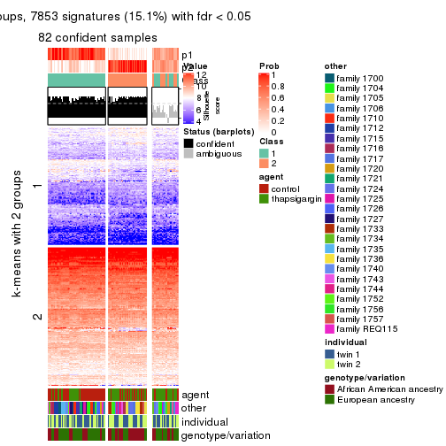
get_signatures(res, k = 3, scale_rows = FALSE)

get_signatures(res, k = 4, scale_rows = FALSE)
get_signatures(res, k = 5, scale_rows = FALSE)

get_signatures(res, k = 6, scale_rows = FALSE)

Compare the overlap of signatures from different k:
compare_signatures(res)
get_signature() returns a data frame invisibly. TO get the list of signatures, the function
call should be assigned to a variable explicitly. In following code, if plot argument is set
to FALSE, no heatmap is plotted while only the differential analysis is performed.
# code only for demonstration
tb = get_signature(res, k = ..., plot = FALSE)
An example of the output of tb is:
#> which_row fdr mean_1 mean_2 scaled_mean_1 scaled_mean_2 km
#> 1 38 0.042760348 8.373488 9.131774 -0.5533452 0.5164555 1
#> 2 40 0.018707592 7.106213 8.469186 -0.6173731 0.5762149 1
#> 3 55 0.019134737 10.221463 11.207825 -0.6159697 0.5749050 1
#> 4 59 0.006059896 5.921854 7.869574 -0.6899429 0.6439467 1
#> 5 60 0.018055526 8.928898 10.211722 -0.6204761 0.5791110 1
#> 6 98 0.009384629 15.714769 14.887706 0.6635654 -0.6193277 2
...
The columns in tb are:
which_row: row indices corresponding to the input matrix.fdr: FDR for the differential test. mean_x: The mean value in group x.scaled_mean_x: The mean value in group x after rows are scaled.km: Row groups if k-means clustering is applied to rows.UMAP plot which shows how samples are separated.
dimension_reduction(res, k = 2, method = "UMAP")
dimension_reduction(res, k = 3, method = "UMAP")
dimension_reduction(res, k = 4, method = "UMAP")
dimension_reduction(res, k = 5, method = "UMAP")
dimension_reduction(res, k = 6, method = "UMAP")
Following heatmap shows how subgroups are split when increasing k:
collect_classes(res)
Test correlation between subgroups and known annotations. If the known annotation is numeric, one-way ANOVA test is applied, and if the known annotation is discrete, chi-squared contingency table test is applied.
test_to_known_factors(res)
#> n agent(p) other(p) individual(p) genotype/variation(p) k
#> MAD:skmeans 82 1.37e-02 2.58e-05 0.788 0.00392 2
#> MAD:skmeans 87 1.92e-14 3.15e-03 0.364 0.00167 3
#> MAD:skmeans 34 1.00e-02 5.43e-03 1.000 0.01930 4
#> MAD:skmeans 21 NA NA NA NA 5
#> MAD:skmeans 21 NA NA NA NA 6
If matrix rows can be associated to genes, consider to use functional_enrichment(res,
...) to perform function enrichment for the signature genes. See this vignette for more detailed explanations.
The object with results only for a single top-value method and a single partition method can be extracted as:
res = res_list["MAD", "pam"]
# you can also extract it by
# res = res_list["MAD:pam"]
A summary of res and all the functions that can be applied to it:
res
#> A 'ConsensusPartition' object with k = 2, 3, 4, 5, 6.
#> On a matrix with 51941 rows and 104 columns.
#> Top rows (1000, 2000, 3000, 4000, 5000) are extracted by 'MAD' method.
#> Subgroups are detected by 'pam' method.
#> Performed in total 1250 partitions by row resampling.
#> Best k for subgroups seems to be 3.
#>
#> Following methods can be applied to this 'ConsensusPartition' object:
#> [1] "cola_report" "collect_classes" "collect_plots"
#> [4] "collect_stats" "colnames" "compare_signatures"
#> [7] "consensus_heatmap" "dimension_reduction" "functional_enrichment"
#> [10] "get_anno_col" "get_anno" "get_classes"
#> [13] "get_consensus" "get_matrix" "get_membership"
#> [16] "get_param" "get_signatures" "get_stats"
#> [19] "is_best_k" "is_stable_k" "membership_heatmap"
#> [22] "ncol" "nrow" "plot_ecdf"
#> [25] "rownames" "select_partition_number" "show"
#> [28] "suggest_best_k" "test_to_known_factors"
collect_plots() function collects all the plots made from res for all k (number of partitions)
into one single page to provide an easy and fast comparison between different k.
collect_plots(res)
The plots are:
k and the heatmap of
predicted classes for each k.k.k.k.All the plots in panels can be made by individual functions and they are plotted later in this section.
select_partition_number() produces several plots showing different
statistics for choosing “optimized” k. There are following statistics:
k;k, the area increased is defined as \(A_k - A_{k-1}\).The detailed explanations of these statistics can be found in the cola vignette.
Generally speaking, lower PAC score, higher mean silhouette score or higher
concordance corresponds to better partition. Rand index and Jaccard index
measure how similar the current partition is compared to partition with k-1.
If they are too similar, we won't accept k is better than k-1.
select_partition_number(res)
The numeric values for all these statistics can be obtained by get_stats().
get_stats(res)
#> k 1-PAC mean_silhouette concordance area_increased Rand Jaccard
#> 2 2 0.0564 0.506 0.747 0.4734 0.498 0.498
#> 3 3 0.2434 0.547 0.769 0.3651 0.683 0.453
#> 4 4 0.3270 0.480 0.682 0.1336 0.844 0.589
#> 5 5 0.4010 0.426 0.627 0.0622 0.919 0.710
#> 6 6 0.4711 0.417 0.627 0.0426 0.939 0.740
suggest_best_k() suggests the best \(k\) based on these statistics. The rules are as follows:
suggest_best_k(res)
#> [1] 3
Following shows the table of the partitions (You need to click the show/hide
code output link to see it). The membership matrix (columns with name p*)
is inferred by
clue::cl_consensus()
function with the SE method. Basically the value in the membership matrix
represents the probability to belong to a certain group. The finall class
label for an item is determined with the group with highest probability it
belongs to.
In get_classes() function, the entropy is calculated from the membership
matrix and the silhouette score is calculated from the consensus matrix.
cbind(get_classes(res, k = 2), get_membership(res, k = 2))
#> class entropy silhouette p1 p2
#> GSM494452 1 0.9993 -0.1270 0.516 0.484
#> GSM494454 1 0.3274 0.6739 0.940 0.060
#> GSM494456 2 0.9833 -0.0783 0.424 0.576
#> GSM494458 2 0.1184 0.6549 0.016 0.984
#> GSM494460 1 0.9393 0.3862 0.644 0.356
#> GSM494462 2 0.8909 0.6116 0.308 0.692
#> GSM494464 2 0.9552 0.4276 0.376 0.624
#> GSM494466 2 0.8713 0.3136 0.292 0.708
#> GSM494468 2 0.9661 0.4244 0.392 0.608
#> GSM494470 2 0.8909 0.6122 0.308 0.692
#> GSM494472 2 0.9954 0.3181 0.460 0.540
#> GSM494474 1 0.9323 0.3221 0.652 0.348
#> GSM494476 2 0.2423 0.6506 0.040 0.960
#> GSM494478 2 0.8813 0.5274 0.300 0.700
#> GSM494480 1 0.9815 0.1509 0.580 0.420
#> GSM494482 1 0.8813 0.5267 0.700 0.300
#> GSM494484 2 0.9993 -0.2021 0.484 0.516
#> GSM494486 2 0.1843 0.6484 0.028 0.972
#> GSM494488 1 0.9000 0.4884 0.684 0.316
#> GSM494490 2 0.3584 0.6790 0.068 0.932
#> GSM494492 1 0.5737 0.6710 0.864 0.136
#> GSM494494 2 0.7602 0.5594 0.220 0.780
#> GSM494496 2 0.8555 0.6261 0.280 0.720
#> GSM494498 2 0.6343 0.5527 0.160 0.840
#> GSM494500 1 0.2236 0.6677 0.964 0.036
#> GSM494502 1 0.2043 0.6643 0.968 0.032
#> GSM494504 1 0.2236 0.6599 0.964 0.036
#> GSM494506 1 0.2603 0.6680 0.956 0.044
#> GSM494508 1 0.9944 0.2883 0.544 0.456
#> GSM494510 2 0.4161 0.6430 0.084 0.916
#> GSM494512 1 0.9170 0.3921 0.668 0.332
#> GSM494514 1 0.7528 0.6205 0.784 0.216
#> GSM494516 1 0.0938 0.6614 0.988 0.012
#> GSM494518 1 0.1414 0.6633 0.980 0.020
#> GSM494520 1 0.1843 0.6666 0.972 0.028
#> GSM494522 1 0.4562 0.6702 0.904 0.096
#> GSM494524 2 0.4431 0.6711 0.092 0.908
#> GSM494526 1 0.6623 0.6527 0.828 0.172
#> GSM494528 1 0.7674 0.5919 0.776 0.224
#> GSM494530 1 0.5059 0.6690 0.888 0.112
#> GSM494532 1 0.6887 0.6554 0.816 0.184
#> GSM494534 1 0.7056 0.6247 0.808 0.192
#> GSM494536 1 0.9732 0.0917 0.596 0.404
#> GSM494538 1 0.6148 0.6418 0.848 0.152
#> GSM494540 1 0.2778 0.6600 0.952 0.048
#> GSM494542 1 0.4161 0.6730 0.916 0.084
#> GSM494544 1 0.2423 0.6669 0.960 0.040
#> GSM494546 1 0.6887 0.5889 0.816 0.184
#> GSM494548 1 0.9963 0.2173 0.536 0.464
#> GSM494550 1 0.5519 0.6520 0.872 0.128
#> GSM494552 2 0.9775 0.3774 0.412 0.588
#> GSM494554 2 0.8763 0.6280 0.296 0.704
#> GSM494453 1 0.8016 0.5545 0.756 0.244
#> GSM494455 1 0.7528 0.5969 0.784 0.216
#> GSM494457 2 0.3879 0.6585 0.076 0.924
#> GSM494459 2 0.2778 0.6679 0.048 0.952
#> GSM494461 2 0.9427 0.5468 0.360 0.640
#> GSM494463 2 0.8813 0.6159 0.300 0.700
#> GSM494465 2 0.5519 0.6910 0.128 0.872
#> GSM494467 1 0.9963 0.2797 0.536 0.464
#> GSM494469 2 0.8207 0.6447 0.256 0.744
#> GSM494471 2 0.8661 0.6306 0.288 0.712
#> GSM494473 2 0.9000 0.5917 0.316 0.684
#> GSM494475 2 0.7950 0.6634 0.240 0.760
#> GSM494477 2 0.3584 0.6417 0.068 0.932
#> GSM494479 2 0.6712 0.6277 0.176 0.824
#> GSM494481 2 0.7602 0.6701 0.220 0.780
#> GSM494483 2 0.9922 0.2915 0.448 0.552
#> GSM494485 2 0.1843 0.6458 0.028 0.972
#> GSM494487 2 0.3114 0.6477 0.056 0.944
#> GSM494489 1 0.9044 0.4934 0.680 0.320
#> GSM494491 2 0.6623 0.6861 0.172 0.828
#> GSM494493 2 0.9922 0.1595 0.448 0.552
#> GSM494495 2 0.8713 0.3966 0.292 0.708
#> GSM494497 2 0.8144 0.6754 0.252 0.748
#> GSM494499 2 0.1633 0.6622 0.024 0.976
#> GSM494501 1 0.9909 -0.0545 0.556 0.444
#> GSM494503 1 0.9881 0.0779 0.564 0.436
#> GSM494505 2 0.9427 0.5264 0.360 0.640
#> GSM494507 2 0.9944 0.2239 0.456 0.544
#> GSM494509 2 0.6623 0.6830 0.172 0.828
#> GSM494511 2 0.2236 0.6577 0.036 0.964
#> GSM494513 1 0.9983 -0.1551 0.524 0.476
#> GSM494515 1 0.7528 0.6036 0.784 0.216
#> GSM494517 1 0.9286 0.3390 0.656 0.344
#> GSM494519 1 0.6801 0.6080 0.820 0.180
#> GSM494521 2 0.9635 0.5186 0.388 0.612
#> GSM494523 1 0.4022 0.6653 0.920 0.080
#> GSM494525 2 0.5842 0.6928 0.140 0.860
#> GSM494527 2 0.7219 0.6851 0.200 0.800
#> GSM494529 1 0.9732 0.1851 0.596 0.404
#> GSM494531 2 0.8499 0.6374 0.276 0.724
#> GSM494533 2 0.8763 0.5903 0.296 0.704
#> GSM494535 2 0.9358 0.5694 0.352 0.648
#> GSM494537 2 0.9170 0.6016 0.332 0.668
#> GSM494539 1 0.7528 0.5997 0.784 0.216
#> GSM494541 1 0.9993 -0.0357 0.516 0.484
#> GSM494543 1 0.9983 -0.0974 0.524 0.476
#> GSM494545 1 0.9795 0.2075 0.584 0.416
#> GSM494547 2 0.8081 0.5623 0.248 0.752
#> GSM494549 2 0.7883 0.6717 0.236 0.764
#> GSM494551 2 0.9881 0.2054 0.436 0.564
#> GSM494553 2 0.7219 0.6851 0.200 0.800
#> GSM494555 2 0.7602 0.6759 0.220 0.780
cbind(get_classes(res, k = 3), get_membership(res, k = 3))
#> class entropy silhouette p1 p2 p3
#> GSM494452 1 0.6255 0.4802 0.684 0.300 0.016
#> GSM494454 2 0.3116 0.7113 0.108 0.892 0.000
#> GSM494456 3 0.1482 0.7903 0.012 0.020 0.968
#> GSM494458 3 0.3619 0.7709 0.136 0.000 0.864
#> GSM494460 1 0.6500 -0.0181 0.532 0.464 0.004
#> GSM494462 1 0.2689 0.6894 0.932 0.036 0.032
#> GSM494464 1 0.5953 0.4987 0.708 0.280 0.012
#> GSM494466 3 0.5042 0.7513 0.060 0.104 0.836
#> GSM494468 1 0.5292 0.5542 0.764 0.228 0.008
#> GSM494470 1 0.3193 0.6655 0.896 0.100 0.004
#> GSM494472 1 0.6008 0.4818 0.664 0.332 0.004
#> GSM494474 1 0.6309 0.0231 0.504 0.496 0.000
#> GSM494476 3 0.2165 0.7888 0.064 0.000 0.936
#> GSM494478 3 0.8924 0.2750 0.336 0.140 0.524
#> GSM494480 1 0.6252 0.1744 0.556 0.444 0.000
#> GSM494482 2 0.6313 0.4581 0.308 0.676 0.016
#> GSM494484 3 0.0661 0.7869 0.004 0.008 0.988
#> GSM494486 3 0.0892 0.7902 0.020 0.000 0.980
#> GSM494488 2 0.7056 0.4495 0.300 0.656 0.044
#> GSM494490 1 0.6302 -0.0352 0.520 0.000 0.480
#> GSM494492 2 0.5167 0.6828 0.192 0.792 0.016
#> GSM494494 3 0.5955 0.7194 0.180 0.048 0.772
#> GSM494496 1 0.6887 0.5845 0.720 0.076 0.204
#> GSM494498 3 0.0237 0.7867 0.004 0.000 0.996
#> GSM494500 2 0.1289 0.7129 0.032 0.968 0.000
#> GSM494502 2 0.0829 0.7054 0.004 0.984 0.012
#> GSM494504 2 0.1267 0.7094 0.024 0.972 0.004
#> GSM494506 2 0.1647 0.7095 0.036 0.960 0.004
#> GSM494508 3 0.8491 0.4011 0.116 0.312 0.572
#> GSM494510 3 0.0424 0.7874 0.008 0.000 0.992
#> GSM494512 1 0.7360 0.0834 0.528 0.440 0.032
#> GSM494514 2 0.7271 0.4398 0.352 0.608 0.040
#> GSM494516 2 0.1529 0.7104 0.040 0.960 0.000
#> GSM494518 2 0.1031 0.7091 0.024 0.976 0.000
#> GSM494520 2 0.2537 0.7134 0.080 0.920 0.000
#> GSM494522 2 0.3983 0.6997 0.144 0.852 0.004
#> GSM494524 3 0.5905 0.4905 0.352 0.000 0.648
#> GSM494526 2 0.5156 0.6494 0.216 0.776 0.008
#> GSM494528 2 0.5902 0.5163 0.316 0.680 0.004
#> GSM494530 2 0.4399 0.6653 0.188 0.812 0.000
#> GSM494532 2 0.5992 0.6078 0.268 0.716 0.016
#> GSM494534 2 0.3966 0.7119 0.100 0.876 0.024
#> GSM494536 1 0.6617 0.1636 0.556 0.436 0.008
#> GSM494538 2 0.4931 0.6461 0.232 0.768 0.000
#> GSM494540 2 0.1031 0.7035 0.024 0.976 0.000
#> GSM494542 2 0.2066 0.7122 0.060 0.940 0.000
#> GSM494544 2 0.2173 0.7129 0.048 0.944 0.008
#> GSM494546 2 0.7112 0.4607 0.044 0.648 0.308
#> GSM494548 2 0.9364 0.1658 0.356 0.468 0.176
#> GSM494550 2 0.6112 0.6651 0.108 0.784 0.108
#> GSM494552 1 0.6161 0.5120 0.708 0.272 0.020
#> GSM494554 1 0.4095 0.6895 0.880 0.064 0.056
#> GSM494453 2 0.5968 0.3930 0.364 0.636 0.000
#> GSM494455 2 0.5882 0.4735 0.348 0.652 0.000
#> GSM494457 3 0.3129 0.7889 0.088 0.008 0.904
#> GSM494459 3 0.5443 0.6642 0.260 0.004 0.736
#> GSM494461 1 0.3340 0.6634 0.880 0.120 0.000
#> GSM494463 1 0.1643 0.6846 0.956 0.044 0.000
#> GSM494465 1 0.3573 0.6729 0.876 0.004 0.120
#> GSM494467 3 0.6462 0.7169 0.120 0.116 0.764
#> GSM494469 1 0.1453 0.6857 0.968 0.024 0.008
#> GSM494471 1 0.1989 0.6888 0.948 0.048 0.004
#> GSM494473 1 0.3340 0.6745 0.880 0.120 0.000
#> GSM494475 1 0.1620 0.6859 0.964 0.024 0.012
#> GSM494477 3 0.0592 0.7878 0.012 0.000 0.988
#> GSM494479 3 0.8263 0.5089 0.268 0.120 0.612
#> GSM494481 1 0.2313 0.6902 0.944 0.032 0.024
#> GSM494483 1 0.5541 0.5161 0.740 0.252 0.008
#> GSM494485 3 0.1964 0.7918 0.056 0.000 0.944
#> GSM494487 3 0.0424 0.7864 0.008 0.000 0.992
#> GSM494489 2 0.8808 0.3419 0.332 0.536 0.132
#> GSM494491 1 0.3686 0.6597 0.860 0.000 0.140
#> GSM494493 3 0.9978 -0.0341 0.328 0.308 0.364
#> GSM494495 3 0.2945 0.7897 0.088 0.004 0.908
#> GSM494497 1 0.7530 0.5166 0.664 0.084 0.252
#> GSM494499 3 0.5859 0.5211 0.344 0.000 0.656
#> GSM494501 1 0.5948 0.3593 0.640 0.360 0.000
#> GSM494503 1 0.6527 0.2202 0.588 0.404 0.008
#> GSM494505 1 0.3644 0.6442 0.872 0.124 0.004
#> GSM494507 1 0.8618 0.1920 0.508 0.388 0.104
#> GSM494509 1 0.7915 0.5030 0.644 0.108 0.248
#> GSM494511 3 0.3412 0.7763 0.124 0.000 0.876
#> GSM494513 1 0.6632 0.2894 0.596 0.392 0.012
#> GSM494515 2 0.5823 0.6344 0.144 0.792 0.064
#> GSM494517 2 0.6225 0.1637 0.432 0.568 0.000
#> GSM494519 2 0.5178 0.5798 0.256 0.744 0.000
#> GSM494521 1 0.3030 0.6875 0.904 0.092 0.004
#> GSM494523 2 0.4551 0.6675 0.132 0.844 0.024
#> GSM494525 1 0.5173 0.6564 0.816 0.036 0.148
#> GSM494527 1 0.3263 0.6931 0.912 0.048 0.040
#> GSM494529 2 0.7262 0.0694 0.444 0.528 0.028
#> GSM494531 1 0.1399 0.6845 0.968 0.028 0.004
#> GSM494533 1 0.8780 0.4594 0.584 0.232 0.184
#> GSM494535 1 0.6056 0.6206 0.744 0.224 0.032
#> GSM494537 1 0.3755 0.6853 0.872 0.120 0.008
#> GSM494539 2 0.4887 0.6353 0.228 0.772 0.000
#> GSM494541 1 0.6664 0.0748 0.528 0.464 0.008
#> GSM494543 1 0.7377 0.1418 0.516 0.452 0.032
#> GSM494545 2 0.9616 0.1099 0.344 0.444 0.212
#> GSM494547 3 0.8437 0.4860 0.276 0.128 0.596
#> GSM494549 1 0.7613 0.5697 0.680 0.116 0.204
#> GSM494551 2 0.9907 -0.0376 0.356 0.376 0.268
#> GSM494553 1 0.3921 0.6725 0.872 0.016 0.112
#> GSM494555 1 0.2229 0.6882 0.944 0.012 0.044
cbind(get_classes(res, k = 4), get_membership(res, k = 4))
#> class entropy silhouette p1 p2 p3 p4
#> GSM494452 1 0.6644 0.42439 0.612 0.012 0.084 0.292
#> GSM494454 4 0.4820 0.62447 0.060 0.000 0.168 0.772
#> GSM494456 2 0.1271 0.74973 0.012 0.968 0.012 0.008
#> GSM494458 2 0.4985 0.72230 0.152 0.768 0.080 0.000
#> GSM494460 4 0.6058 0.44650 0.336 0.000 0.060 0.604
#> GSM494462 1 0.4627 0.61828 0.808 0.020 0.136 0.036
#> GSM494464 1 0.5707 0.47946 0.680 0.008 0.044 0.268
#> GSM494466 2 0.5086 0.72295 0.052 0.800 0.104 0.044
#> GSM494468 1 0.4434 0.52815 0.756 0.000 0.016 0.228
#> GSM494470 1 0.4104 0.62027 0.832 0.000 0.088 0.080
#> GSM494472 1 0.5642 0.45854 0.664 0.004 0.040 0.292
#> GSM494474 1 0.7534 0.01020 0.432 0.000 0.188 0.380
#> GSM494476 2 0.1767 0.74824 0.044 0.944 0.012 0.000
#> GSM494478 2 0.7287 0.44631 0.184 0.612 0.180 0.024
#> GSM494480 4 0.5158 0.07851 0.472 0.000 0.004 0.524
#> GSM494482 4 0.3787 0.65016 0.124 0.000 0.036 0.840
#> GSM494484 2 0.1305 0.75061 0.004 0.960 0.036 0.000
#> GSM494486 2 0.0927 0.74712 0.008 0.976 0.016 0.000
#> GSM494488 4 0.3966 0.64137 0.096 0.020 0.032 0.852
#> GSM494490 1 0.7147 -0.02203 0.472 0.424 0.092 0.012
#> GSM494492 4 0.5176 0.65331 0.100 0.012 0.108 0.780
#> GSM494494 2 0.6368 0.66233 0.136 0.712 0.116 0.036
#> GSM494496 1 0.7684 0.50181 0.628 0.148 0.116 0.108
#> GSM494498 2 0.3047 0.74893 0.012 0.872 0.116 0.000
#> GSM494500 4 0.3443 0.66003 0.016 0.000 0.136 0.848
#> GSM494502 4 0.2048 0.65905 0.000 0.008 0.064 0.928
#> GSM494504 4 0.1767 0.65383 0.012 0.000 0.044 0.944
#> GSM494506 4 0.3074 0.64674 0.000 0.000 0.152 0.848
#> GSM494508 2 0.8372 0.17536 0.084 0.448 0.096 0.372
#> GSM494510 2 0.1854 0.75238 0.012 0.940 0.048 0.000
#> GSM494512 4 0.7793 0.21055 0.256 0.004 0.272 0.468
#> GSM494514 4 0.7649 0.21845 0.140 0.016 0.360 0.484
#> GSM494516 4 0.2706 0.66625 0.020 0.000 0.080 0.900
#> GSM494518 4 0.1978 0.65521 0.004 0.000 0.068 0.928
#> GSM494520 4 0.2644 0.66723 0.032 0.000 0.060 0.908
#> GSM494522 4 0.4171 0.66609 0.084 0.000 0.088 0.828
#> GSM494524 2 0.6342 0.42549 0.344 0.596 0.044 0.016
#> GSM494526 4 0.5842 0.60658 0.128 0.000 0.168 0.704
#> GSM494528 4 0.5863 0.55305 0.180 0.000 0.120 0.700
#> GSM494530 4 0.4513 0.65747 0.120 0.000 0.076 0.804
#> GSM494532 4 0.6518 0.55300 0.196 0.008 0.136 0.660
#> GSM494534 4 0.5774 0.56356 0.056 0.016 0.216 0.712
#> GSM494536 3 0.6648 0.56717 0.236 0.008 0.636 0.120
#> GSM494538 4 0.6996 0.35941 0.192 0.000 0.228 0.580
#> GSM494540 4 0.3450 0.63538 0.008 0.000 0.156 0.836
#> GSM494542 4 0.6016 0.30932 0.044 0.000 0.412 0.544
#> GSM494544 4 0.2400 0.66503 0.028 0.004 0.044 0.924
#> GSM494546 4 0.8185 0.01566 0.024 0.184 0.396 0.396
#> GSM494548 4 0.9150 0.00129 0.280 0.076 0.256 0.388
#> GSM494550 4 0.5968 0.58347 0.040 0.044 0.200 0.716
#> GSM494552 1 0.7640 0.36054 0.548 0.020 0.168 0.264
#> GSM494554 1 0.6619 0.51882 0.644 0.076 0.256 0.024
#> GSM494453 3 0.7878 0.24814 0.284 0.000 0.376 0.340
#> GSM494455 4 0.7669 0.04516 0.236 0.000 0.312 0.452
#> GSM494457 2 0.4753 0.74307 0.084 0.788 0.128 0.000
#> GSM494459 2 0.6627 0.55011 0.300 0.588 0.112 0.000
#> GSM494461 1 0.5083 0.51268 0.716 0.000 0.248 0.036
#> GSM494463 1 0.3925 0.60702 0.808 0.000 0.176 0.016
#> GSM494465 1 0.4188 0.59668 0.824 0.064 0.112 0.000
#> GSM494467 2 0.7949 0.37771 0.080 0.460 0.396 0.064
#> GSM494469 1 0.1822 0.61677 0.944 0.004 0.044 0.008
#> GSM494471 1 0.4332 0.60198 0.800 0.000 0.160 0.040
#> GSM494473 1 0.3398 0.60323 0.872 0.000 0.068 0.060
#> GSM494475 1 0.3306 0.61150 0.840 0.000 0.156 0.004
#> GSM494477 2 0.2563 0.75495 0.020 0.908 0.072 0.000
#> GSM494479 2 0.8192 0.21570 0.228 0.412 0.344 0.016
#> GSM494481 1 0.2915 0.61780 0.892 0.004 0.088 0.016
#> GSM494483 1 0.6737 0.02397 0.532 0.000 0.368 0.100
#> GSM494485 2 0.4245 0.74534 0.064 0.820 0.116 0.000
#> GSM494487 2 0.1356 0.74788 0.008 0.960 0.032 0.000
#> GSM494489 3 0.8017 0.55590 0.208 0.044 0.552 0.196
#> GSM494491 1 0.3015 0.60666 0.884 0.092 0.024 0.000
#> GSM494493 3 0.9127 0.38913 0.228 0.220 0.448 0.104
#> GSM494495 2 0.4763 0.73529 0.056 0.800 0.132 0.012
#> GSM494497 3 0.6849 0.01834 0.376 0.068 0.540 0.016
#> GSM494499 2 0.7429 0.31269 0.360 0.464 0.176 0.000
#> GSM494501 3 0.6946 0.39684 0.380 0.000 0.504 0.116
#> GSM494503 3 0.7372 0.43830 0.400 0.004 0.456 0.140
#> GSM494505 1 0.4745 0.45685 0.756 0.000 0.208 0.036
#> GSM494507 3 0.6565 0.59397 0.260 0.016 0.640 0.084
#> GSM494509 1 0.8203 0.11011 0.484 0.160 0.316 0.040
#> GSM494511 2 0.6240 0.67668 0.136 0.664 0.200 0.000
#> GSM494513 3 0.5854 0.58416 0.256 0.004 0.676 0.064
#> GSM494515 3 0.6744 0.24612 0.084 0.012 0.592 0.312
#> GSM494517 3 0.7641 0.48457 0.324 0.000 0.452 0.224
#> GSM494519 4 0.7666 -0.19901 0.212 0.000 0.392 0.396
#> GSM494521 1 0.4920 0.58282 0.756 0.000 0.192 0.052
#> GSM494523 3 0.6291 0.39244 0.064 0.012 0.640 0.284
#> GSM494525 1 0.5843 0.53340 0.712 0.108 0.176 0.004
#> GSM494527 1 0.3676 0.61267 0.856 0.020 0.112 0.012
#> GSM494529 3 0.7806 0.55530 0.272 0.024 0.532 0.172
#> GSM494531 1 0.3495 0.61345 0.844 0.000 0.140 0.016
#> GSM494533 3 0.7633 0.28694 0.420 0.068 0.460 0.052
#> GSM494535 1 0.6305 0.46287 0.676 0.016 0.224 0.084
#> GSM494537 1 0.6066 0.39858 0.656 0.004 0.268 0.072
#> GSM494539 4 0.6822 0.44923 0.192 0.000 0.204 0.604
#> GSM494541 1 0.7561 -0.40368 0.424 0.000 0.384 0.192
#> GSM494543 3 0.7077 0.55774 0.296 0.012 0.576 0.116
#> GSM494545 3 0.5266 0.58590 0.132 0.028 0.780 0.060
#> GSM494547 3 0.7690 0.09250 0.172 0.288 0.524 0.016
#> GSM494549 1 0.7479 -0.15698 0.440 0.104 0.436 0.020
#> GSM494551 3 0.7481 0.55974 0.216 0.076 0.620 0.088
#> GSM494553 1 0.5473 0.56657 0.728 0.048 0.212 0.012
#> GSM494555 1 0.3216 0.61461 0.864 0.008 0.124 0.004
cbind(get_classes(res, k = 5), get_membership(res, k = 5))
#> class entropy silhouette p1 p2 p3 p4 p5
#> GSM494452 5 0.6617 0.44567 0.092 0.008 0.040 0.288 0.572
#> GSM494454 4 0.4704 0.56461 0.264 0.000 0.012 0.696 0.028
#> GSM494456 2 0.1093 0.64707 0.004 0.968 0.020 0.004 0.004
#> GSM494458 2 0.5978 0.25930 0.008 0.564 0.324 0.000 0.104
#> GSM494460 4 0.5835 0.47795 0.028 0.000 0.072 0.624 0.276
#> GSM494462 5 0.5752 0.59787 0.128 0.012 0.144 0.020 0.696
#> GSM494464 5 0.5412 0.51525 0.040 0.004 0.036 0.236 0.684
#> GSM494466 2 0.5377 0.55487 0.048 0.760 0.096 0.032 0.064
#> GSM494468 5 0.3430 0.55348 0.004 0.000 0.000 0.220 0.776
#> GSM494470 5 0.4824 0.61419 0.124 0.000 0.024 0.092 0.760
#> GSM494472 5 0.5422 0.49167 0.036 0.008 0.024 0.268 0.664
#> GSM494474 5 0.6723 -0.02935 0.264 0.000 0.000 0.324 0.412
#> GSM494476 2 0.1310 0.64494 0.000 0.956 0.024 0.000 0.020
#> GSM494478 2 0.5656 0.43426 0.140 0.720 0.044 0.012 0.084
#> GSM494480 4 0.4589 0.01670 0.004 0.000 0.004 0.520 0.472
#> GSM494482 4 0.2956 0.65710 0.020 0.000 0.012 0.872 0.096
#> GSM494484 2 0.1608 0.64032 0.000 0.928 0.072 0.000 0.000
#> GSM494486 2 0.0579 0.64586 0.000 0.984 0.008 0.000 0.008
#> GSM494488 4 0.2768 0.65956 0.016 0.008 0.028 0.900 0.048
#> GSM494490 5 0.7564 -0.00355 0.040 0.384 0.132 0.024 0.420
#> GSM494492 4 0.4905 0.64410 0.128 0.012 0.036 0.772 0.052
#> GSM494494 2 0.6817 0.43901 0.108 0.644 0.116 0.020 0.112
#> GSM494496 5 0.8121 0.47482 0.128 0.088 0.192 0.064 0.528
#> GSM494498 3 0.4949 0.06863 0.008 0.396 0.580 0.004 0.012
#> GSM494500 4 0.3482 0.65093 0.168 0.000 0.012 0.812 0.008
#> GSM494502 4 0.1571 0.66085 0.060 0.004 0.000 0.936 0.000
#> GSM494504 4 0.0703 0.65463 0.024 0.000 0.000 0.976 0.000
#> GSM494506 4 0.3795 0.63108 0.192 0.000 0.028 0.780 0.000
#> GSM494508 3 0.8418 0.09112 0.028 0.304 0.308 0.300 0.060
#> GSM494510 2 0.3010 0.58667 0.000 0.824 0.172 0.000 0.004
#> GSM494512 4 0.8093 0.21590 0.200 0.008 0.140 0.468 0.184
#> GSM494514 4 0.8215 0.05721 0.208 0.000 0.296 0.364 0.132
#> GSM494516 4 0.2976 0.66345 0.132 0.000 0.004 0.852 0.012
#> GSM494518 4 0.2068 0.65780 0.092 0.000 0.000 0.904 0.004
#> GSM494520 4 0.2900 0.66750 0.092 0.000 0.012 0.876 0.020
#> GSM494522 4 0.3841 0.66405 0.116 0.004 0.004 0.820 0.056
#> GSM494524 2 0.6702 0.13971 0.012 0.548 0.184 0.008 0.248
#> GSM494526 4 0.5674 0.57517 0.212 0.004 0.024 0.676 0.084
#> GSM494528 4 0.6281 0.49714 0.176 0.008 0.040 0.652 0.124
#> GSM494530 4 0.4348 0.65974 0.084 0.004 0.016 0.800 0.096
#> GSM494532 4 0.6417 0.52490 0.208 0.008 0.032 0.624 0.128
#> GSM494534 4 0.5484 0.49051 0.300 0.008 0.016 0.636 0.040
#> GSM494536 1 0.6783 0.52834 0.616 0.004 0.152 0.080 0.148
#> GSM494538 4 0.6582 0.17564 0.364 0.000 0.008 0.464 0.164
#> GSM494540 4 0.3675 0.62100 0.216 0.004 0.000 0.772 0.008
#> GSM494542 1 0.5646 -0.00390 0.556 0.008 0.016 0.388 0.032
#> GSM494544 4 0.2981 0.66590 0.084 0.000 0.024 0.876 0.016
#> GSM494546 4 0.8427 -0.05175 0.280 0.096 0.276 0.336 0.012
#> GSM494548 4 0.9102 -0.04740 0.196 0.036 0.200 0.340 0.228
#> GSM494550 4 0.6142 0.53076 0.152 0.016 0.160 0.656 0.016
#> GSM494552 5 0.8019 0.35716 0.108 0.008 0.216 0.204 0.464
#> GSM494554 5 0.7143 0.49255 0.136 0.052 0.228 0.016 0.568
#> GSM494453 1 0.6292 0.43902 0.572 0.000 0.008 0.224 0.196
#> GSM494455 1 0.6859 0.22909 0.488 0.000 0.024 0.320 0.168
#> GSM494457 3 0.5732 -0.08374 0.016 0.460 0.476 0.000 0.048
#> GSM494459 3 0.7008 0.11302 0.024 0.360 0.436 0.000 0.180
#> GSM494461 5 0.5599 0.45152 0.340 0.000 0.048 0.020 0.592
#> GSM494463 5 0.5198 0.57247 0.108 0.000 0.196 0.004 0.692
#> GSM494465 5 0.4449 0.59464 0.112 0.016 0.088 0.000 0.784
#> GSM494467 3 0.7444 0.31968 0.164 0.180 0.560 0.016 0.080
#> GSM494469 5 0.3015 0.60803 0.112 0.008 0.012 0.004 0.864
#> GSM494471 5 0.5081 0.57016 0.268 0.000 0.028 0.028 0.676
#> GSM494473 5 0.3813 0.59443 0.164 0.000 0.008 0.028 0.800
#> GSM494475 5 0.4248 0.59940 0.240 0.000 0.032 0.000 0.728
#> GSM494477 2 0.5112 0.22902 0.016 0.560 0.408 0.000 0.016
#> GSM494479 3 0.5825 0.36064 0.088 0.120 0.700 0.000 0.092
#> GSM494481 5 0.3822 0.60987 0.096 0.004 0.040 0.024 0.836
#> GSM494483 1 0.6226 0.18088 0.504 0.000 0.056 0.040 0.400
#> GSM494485 2 0.5990 0.23240 0.024 0.524 0.392 0.000 0.060
#> GSM494487 2 0.1357 0.64327 0.000 0.948 0.048 0.000 0.004
#> GSM494489 1 0.6231 0.56188 0.672 0.004 0.084 0.100 0.140
#> GSM494491 5 0.3018 0.61186 0.004 0.056 0.068 0.000 0.872
#> GSM494493 1 0.7373 0.06275 0.472 0.056 0.356 0.020 0.096
#> GSM494495 2 0.6430 0.32785 0.068 0.568 0.304 0.000 0.060
#> GSM494497 3 0.6992 -0.22181 0.276 0.000 0.396 0.008 0.320
#> GSM494499 3 0.6262 0.31962 0.024 0.220 0.608 0.000 0.148
#> GSM494501 1 0.5023 0.44239 0.676 0.000 0.028 0.024 0.272
#> GSM494503 1 0.7361 0.44023 0.500 0.000 0.112 0.104 0.284
#> GSM494505 5 0.5305 0.36294 0.300 0.000 0.040 0.020 0.640
#> GSM494507 1 0.5210 0.58423 0.700 0.000 0.088 0.012 0.200
#> GSM494509 5 0.7995 0.17645 0.256 0.104 0.176 0.008 0.456
#> GSM494511 3 0.5893 0.25737 0.036 0.280 0.620 0.000 0.064
#> GSM494513 1 0.5530 0.55129 0.664 0.000 0.160 0.004 0.172
#> GSM494515 1 0.8032 0.19256 0.392 0.000 0.268 0.240 0.100
#> GSM494517 1 0.4973 0.57330 0.712 0.000 0.004 0.092 0.192
#> GSM494519 1 0.5442 0.42226 0.644 0.000 0.000 0.240 0.116
#> GSM494521 5 0.5558 0.54149 0.304 0.004 0.024 0.040 0.628
#> GSM494523 1 0.3511 0.55018 0.836 0.000 0.020 0.124 0.020
#> GSM494525 5 0.6408 0.52373 0.184 0.096 0.072 0.004 0.644
#> GSM494527 5 0.4145 0.60844 0.144 0.004 0.048 0.008 0.796
#> GSM494529 1 0.5641 0.58455 0.692 0.008 0.024 0.084 0.192
#> GSM494531 5 0.5282 0.60221 0.148 0.000 0.144 0.008 0.700
#> GSM494533 1 0.7245 0.24832 0.456 0.016 0.164 0.020 0.344
#> GSM494535 5 0.5085 0.47122 0.300 0.000 0.008 0.044 0.648
#> GSM494537 5 0.7120 0.36944 0.244 0.004 0.112 0.084 0.556
#> GSM494539 4 0.6370 0.25667 0.340 0.000 0.004 0.500 0.156
#> GSM494541 1 0.6612 0.44292 0.548 0.004 0.048 0.080 0.320
#> GSM494543 1 0.4541 0.58045 0.752 0.000 0.024 0.032 0.192
#> GSM494545 1 0.4634 0.53063 0.744 0.004 0.196 0.008 0.048
#> GSM494547 3 0.7162 0.31639 0.272 0.080 0.548 0.012 0.088
#> GSM494549 3 0.7530 -0.13823 0.296 0.016 0.356 0.012 0.320
#> GSM494551 1 0.6959 0.45252 0.540 0.008 0.256 0.028 0.168
#> GSM494553 5 0.6378 0.52835 0.124 0.024 0.232 0.008 0.612
#> GSM494555 5 0.4078 0.58315 0.040 0.004 0.180 0.000 0.776
cbind(get_classes(res, k = 6), get_membership(res, k = 6))
#> class entropy silhouette p1 p2 p3 p4 p5 p6
#> GSM494452 1 0.6389 0.33995 0.556 0.004 0.052 0.272 0.104 0.012
#> GSM494454 4 0.5162 0.57476 0.024 0.000 0.208 0.672 0.092 0.004
#> GSM494456 2 0.1900 0.66999 0.000 0.916 0.008 0.008 0.000 0.068
#> GSM494458 6 0.5589 0.06065 0.084 0.436 0.012 0.000 0.004 0.464
#> GSM494460 4 0.5694 0.41331 0.224 0.000 0.020 0.592 0.164 0.000
#> GSM494462 1 0.5194 0.22614 0.588 0.004 0.044 0.008 0.344 0.012
#> GSM494464 1 0.5278 0.41751 0.676 0.012 0.020 0.224 0.012 0.056
#> GSM494466 2 0.5512 0.55976 0.064 0.720 0.020 0.020 0.060 0.116
#> GSM494468 1 0.3133 0.44880 0.780 0.000 0.000 0.212 0.008 0.000
#> GSM494470 1 0.4350 0.47780 0.760 0.000 0.032 0.072 0.136 0.000
#> GSM494472 1 0.5139 0.39439 0.684 0.004 0.044 0.224 0.016 0.028
#> GSM494474 1 0.6539 0.01830 0.400 0.000 0.268 0.308 0.024 0.000
#> GSM494476 2 0.1049 0.67601 0.008 0.960 0.000 0.000 0.000 0.032
#> GSM494478 2 0.5489 0.51116 0.076 0.712 0.100 0.000 0.036 0.076
#> GSM494480 4 0.4467 0.04748 0.464 0.000 0.000 0.508 0.028 0.000
#> GSM494482 4 0.2631 0.66269 0.076 0.000 0.016 0.884 0.004 0.020
#> GSM494484 2 0.2482 0.63569 0.004 0.848 0.000 0.000 0.000 0.148
#> GSM494486 2 0.0692 0.67655 0.004 0.976 0.000 0.000 0.000 0.020
#> GSM494488 4 0.2601 0.65968 0.028 0.000 0.008 0.896 0.040 0.028
#> GSM494490 1 0.7830 0.02987 0.396 0.280 0.044 0.024 0.036 0.220
#> GSM494492 4 0.5097 0.63714 0.052 0.008 0.136 0.736 0.048 0.020
#> GSM494494 2 0.6570 0.42929 0.148 0.616 0.032 0.012 0.056 0.136
#> GSM494496 1 0.7415 0.28882 0.528 0.040 0.036 0.040 0.184 0.172
#> GSM494498 6 0.2615 0.52346 0.008 0.136 0.004 0.000 0.000 0.852
#> GSM494500 4 0.3699 0.64989 0.012 0.000 0.160 0.788 0.040 0.000
#> GSM494502 4 0.1555 0.66402 0.004 0.004 0.060 0.932 0.000 0.000
#> GSM494504 4 0.0820 0.65583 0.000 0.000 0.016 0.972 0.012 0.000
#> GSM494506 4 0.3960 0.61961 0.000 0.000 0.224 0.736 0.032 0.008
#> GSM494508 6 0.8131 0.20120 0.052 0.188 0.032 0.264 0.056 0.408
#> GSM494510 2 0.3555 0.49372 0.008 0.712 0.000 0.000 0.000 0.280
#> GSM494512 4 0.8301 0.13969 0.160 0.004 0.176 0.376 0.228 0.056
#> GSM494514 5 0.5569 0.38313 0.028 0.004 0.072 0.232 0.648 0.016
#> GSM494516 4 0.3178 0.65980 0.012 0.000 0.128 0.832 0.028 0.000
#> GSM494518 4 0.2213 0.65628 0.004 0.000 0.100 0.888 0.008 0.000
#> GSM494520 4 0.2774 0.66483 0.012 0.000 0.076 0.872 0.040 0.000
#> GSM494522 4 0.3714 0.66182 0.052 0.000 0.116 0.808 0.024 0.000
#> GSM494524 2 0.6349 0.11176 0.236 0.508 0.004 0.008 0.012 0.232
#> GSM494526 4 0.6188 0.53410 0.116 0.000 0.204 0.608 0.052 0.020
#> GSM494528 4 0.7131 0.41387 0.084 0.008 0.144 0.532 0.208 0.024
#> GSM494530 4 0.4671 0.65042 0.092 0.000 0.088 0.764 0.036 0.020
#> GSM494532 4 0.6512 0.52302 0.120 0.000 0.220 0.576 0.056 0.028
#> GSM494534 4 0.5365 0.43100 0.032 0.008 0.344 0.584 0.020 0.012
#> GSM494536 3 0.6824 0.39749 0.104 0.004 0.504 0.044 0.308 0.036
#> GSM494538 4 0.6050 0.18029 0.124 0.000 0.396 0.456 0.020 0.004
#> GSM494540 4 0.3734 0.60946 0.008 0.000 0.244 0.736 0.008 0.004
#> GSM494542 3 0.4995 0.24643 0.028 0.004 0.660 0.272 0.020 0.016
#> GSM494544 4 0.3610 0.65226 0.004 0.000 0.072 0.820 0.092 0.012
#> GSM494546 4 0.8549 -0.00551 0.008 0.052 0.200 0.292 0.276 0.172
#> GSM494548 4 0.9101 0.06038 0.168 0.016 0.168 0.308 0.168 0.172
#> GSM494550 4 0.7044 0.46490 0.028 0.004 0.128 0.548 0.192 0.100
#> GSM494552 5 0.5259 0.50784 0.200 0.000 0.012 0.120 0.660 0.008
#> GSM494554 5 0.5461 0.49510 0.308 0.012 0.064 0.020 0.596 0.000
#> GSM494453 3 0.5329 0.50337 0.172 0.000 0.640 0.176 0.008 0.004
#> GSM494455 3 0.7408 0.22434 0.212 0.000 0.372 0.276 0.140 0.000
#> GSM494457 6 0.4585 0.41212 0.044 0.304 0.008 0.000 0.000 0.644
#> GSM494459 6 0.5509 0.40728 0.124 0.276 0.008 0.000 0.004 0.588
#> GSM494461 1 0.5253 0.39550 0.604 0.000 0.228 0.000 0.168 0.000
#> GSM494463 5 0.4465 0.29760 0.460 0.000 0.028 0.000 0.512 0.000
#> GSM494465 1 0.4060 0.47897 0.788 0.008 0.036 0.000 0.032 0.136
#> GSM494467 6 0.5976 0.49198 0.080 0.080 0.096 0.008 0.048 0.688
#> GSM494469 1 0.2963 0.51095 0.852 0.004 0.116 0.004 0.004 0.020
#> GSM494471 1 0.5378 0.45912 0.672 0.000 0.140 0.020 0.156 0.012
#> GSM494473 1 0.3403 0.50583 0.796 0.000 0.176 0.020 0.004 0.004
#> GSM494475 1 0.4392 0.50438 0.736 0.000 0.176 0.000 0.072 0.016
#> GSM494477 6 0.4234 0.19305 0.012 0.408 0.004 0.000 0.000 0.576
#> GSM494479 6 0.4374 0.54043 0.032 0.032 0.068 0.000 0.076 0.792
#> GSM494481 1 0.3689 0.51446 0.840 0.012 0.056 0.020 0.012 0.060
#> GSM494483 3 0.7272 0.13814 0.332 0.008 0.408 0.024 0.188 0.040
#> GSM494485 6 0.5156 0.16107 0.048 0.400 0.008 0.000 0.008 0.536
#> GSM494487 2 0.1007 0.67364 0.000 0.956 0.000 0.000 0.000 0.044
#> GSM494489 3 0.7139 0.51150 0.176 0.000 0.552 0.068 0.120 0.084
#> GSM494491 1 0.3190 0.47925 0.844 0.044 0.008 0.000 0.004 0.100
#> GSM494493 6 0.6218 -0.01608 0.052 0.008 0.432 0.004 0.064 0.440
#> GSM494495 2 0.5647 0.03726 0.044 0.504 0.032 0.000 0.012 0.408
#> GSM494497 5 0.6009 0.41869 0.172 0.000 0.136 0.000 0.612 0.080
#> GSM494499 6 0.2830 0.54613 0.068 0.064 0.004 0.000 0.000 0.864
#> GSM494501 3 0.5643 0.43943 0.296 0.004 0.580 0.008 0.104 0.008
#> GSM494503 3 0.7393 0.39360 0.300 0.004 0.436 0.068 0.164 0.028
#> GSM494505 1 0.5548 0.37832 0.628 0.004 0.228 0.004 0.120 0.016
#> GSM494507 3 0.5231 0.59109 0.212 0.004 0.676 0.004 0.072 0.032
#> GSM494509 1 0.8447 0.09517 0.388 0.104 0.216 0.004 0.152 0.136
#> GSM494511 6 0.3511 0.54086 0.028 0.136 0.012 0.000 0.008 0.816
#> GSM494513 3 0.6176 0.47490 0.164 0.004 0.572 0.000 0.216 0.044
#> GSM494515 5 0.7521 0.06646 0.064 0.004 0.252 0.160 0.468 0.052
#> GSM494517 3 0.4173 0.59503 0.148 0.004 0.776 0.048 0.020 0.004
#> GSM494519 3 0.4562 0.52771 0.100 0.000 0.728 0.156 0.016 0.000
#> GSM494521 1 0.5714 0.46321 0.648 0.008 0.180 0.032 0.128 0.004
#> GSM494523 3 0.2587 0.60438 0.036 0.000 0.892 0.052 0.016 0.004
#> GSM494525 1 0.6382 0.41033 0.616 0.096 0.164 0.004 0.016 0.104
#> GSM494527 1 0.3559 0.50963 0.824 0.000 0.108 0.004 0.020 0.044
#> GSM494529 3 0.5197 0.59541 0.140 0.004 0.720 0.056 0.068 0.012
#> GSM494531 1 0.4921 0.07644 0.564 0.000 0.060 0.004 0.372 0.000
#> GSM494533 3 0.7227 0.24326 0.320 0.008 0.440 0.012 0.080 0.140
#> GSM494535 1 0.4662 0.44124 0.676 0.000 0.268 0.024 0.008 0.024
#> GSM494537 1 0.7500 0.28149 0.480 0.008 0.184 0.060 0.224 0.044
#> GSM494539 4 0.5870 0.23955 0.156 0.000 0.368 0.468 0.008 0.000
#> GSM494541 3 0.6181 0.49293 0.240 0.004 0.608 0.056 0.060 0.032
#> GSM494543 3 0.3578 0.60723 0.108 0.000 0.828 0.016 0.028 0.020
#> GSM494545 3 0.5976 0.45513 0.060 0.004 0.592 0.004 0.264 0.076
#> GSM494547 6 0.7031 0.23362 0.080 0.012 0.168 0.000 0.264 0.476
#> GSM494549 1 0.8154 -0.15571 0.276 0.008 0.268 0.012 0.192 0.244
#> GSM494551 3 0.6866 0.50918 0.128 0.008 0.572 0.020 0.096 0.176
#> GSM494553 5 0.4384 0.47322 0.292 0.000 0.020 0.000 0.668 0.020
#> GSM494555 5 0.4325 0.33608 0.480 0.000 0.008 0.000 0.504 0.008
Heatmaps for the consensus matrix. It visualizes the probability of two samples to be in a same group.
consensus_heatmap(res, k = 2)
consensus_heatmap(res, k = 3)
consensus_heatmap(res, k = 4)
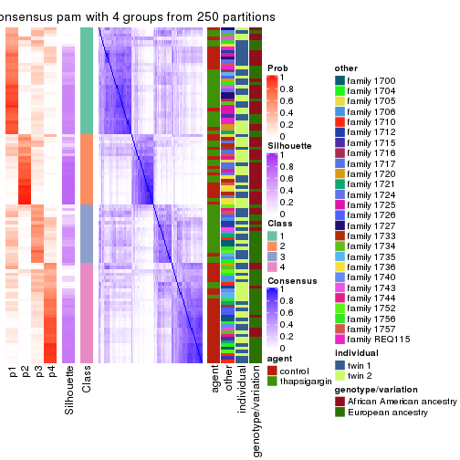
consensus_heatmap(res, k = 5)
consensus_heatmap(res, k = 6)
Heatmaps for the membership of samples in all partitions to see how consistent they are:
membership_heatmap(res, k = 2)
membership_heatmap(res, k = 3)
membership_heatmap(res, k = 4)
membership_heatmap(res, k = 5)
membership_heatmap(res, k = 6)
As soon as we have had the classes for columns, we can look for signatures which are significantly different between classes which can be candidate marks for certain classes. Following are the heatmaps for signatures.
Signature heatmaps where rows are scaled:
get_signatures(res, k = 2)
get_signatures(res, k = 3)
get_signatures(res, k = 4)
get_signatures(res, k = 5)
get_signatures(res, k = 6)
Signature heatmaps where rows are not scaled:
get_signatures(res, k = 2, scale_rows = FALSE)
get_signatures(res, k = 3, scale_rows = FALSE)
get_signatures(res, k = 4, scale_rows = FALSE)
get_signatures(res, k = 5, scale_rows = FALSE)
get_signatures(res, k = 6, scale_rows = FALSE)
Compare the overlap of signatures from different k:
compare_signatures(res)

get_signature() returns a data frame invisibly. TO get the list of signatures, the function
call should be assigned to a variable explicitly. In following code, if plot argument is set
to FALSE, no heatmap is plotted while only the differential analysis is performed.
# code only for demonstration
tb = get_signature(res, k = ..., plot = FALSE)
An example of the output of tb is:
#> which_row fdr mean_1 mean_2 scaled_mean_1 scaled_mean_2 km
#> 1 38 0.042760348 8.373488 9.131774 -0.5533452 0.5164555 1
#> 2 40 0.018707592 7.106213 8.469186 -0.6173731 0.5762149 1
#> 3 55 0.019134737 10.221463 11.207825 -0.6159697 0.5749050 1
#> 4 59 0.006059896 5.921854 7.869574 -0.6899429 0.6439467 1
#> 5 60 0.018055526 8.928898 10.211722 -0.6204761 0.5791110 1
#> 6 98 0.009384629 15.714769 14.887706 0.6635654 -0.6193277 2
...
The columns in tb are:
which_row: row indices corresponding to the input matrix.fdr: FDR for the differential test. mean_x: The mean value in group x.scaled_mean_x: The mean value in group x after rows are scaled.km: Row groups if k-means clustering is applied to rows.UMAP plot which shows how samples are separated.
dimension_reduction(res, k = 2, method = "UMAP")
dimension_reduction(res, k = 3, method = "UMAP")
dimension_reduction(res, k = 4, method = "UMAP")
dimension_reduction(res, k = 5, method = "UMAP")
dimension_reduction(res, k = 6, method = "UMAP")
Following heatmap shows how subgroups are split when increasing k:
collect_classes(res)
Test correlation between subgroups and known annotations. If the known annotation is numeric, one-way ANOVA test is applied, and if the known annotation is discrete, chi-squared contingency table test is applied.
test_to_known_factors(res)
#> n agent(p) other(p) individual(p) genotype/variation(p) k
#> MAD:pam 73 8.77e-05 8.02e-03 0.491 5.08e-04 2
#> MAD:pam 71 4.89e-05 6.33e-05 0.168 6.23e-07 3
#> MAD:pam 64 1.80e-06 4.17e-04 0.696 5.13e-05 4
#> MAD:pam 52 4.50e-07 2.50e-02 0.785 1.09e-03 5
#> MAD:pam 43 7.91e-07 1.12e-03 0.377 2.68e-03 6
If matrix rows can be associated to genes, consider to use functional_enrichment(res,
...) to perform function enrichment for the signature genes. See this vignette for more detailed explanations.
The object with results only for a single top-value method and a single partition method can be extracted as:
res = res_list["MAD", "mclust"]
# you can also extract it by
# res = res_list["MAD:mclust"]
A summary of res and all the functions that can be applied to it:
res
#> A 'ConsensusPartition' object with k = 2, 3, 4, 5, 6.
#> On a matrix with 51941 rows and 104 columns.
#> Top rows (1000, 2000, 3000, 4000, 5000) are extracted by 'MAD' method.
#> Subgroups are detected by 'mclust' method.
#> Performed in total 1250 partitions by row resampling.
#> Best k for subgroups seems to be 2.
#>
#> Following methods can be applied to this 'ConsensusPartition' object:
#> [1] "cola_report" "collect_classes" "collect_plots"
#> [4] "collect_stats" "colnames" "compare_signatures"
#> [7] "consensus_heatmap" "dimension_reduction" "functional_enrichment"
#> [10] "get_anno_col" "get_anno" "get_classes"
#> [13] "get_consensus" "get_matrix" "get_membership"
#> [16] "get_param" "get_signatures" "get_stats"
#> [19] "is_best_k" "is_stable_k" "membership_heatmap"
#> [22] "ncol" "nrow" "plot_ecdf"
#> [25] "rownames" "select_partition_number" "show"
#> [28] "suggest_best_k" "test_to_known_factors"
collect_plots() function collects all the plots made from res for all k (number of partitions)
into one single page to provide an easy and fast comparison between different k.
collect_plots(res)
The plots are:
k and the heatmap of
predicted classes for each k.k.k.k.All the plots in panels can be made by individual functions and they are plotted later in this section.
select_partition_number() produces several plots showing different
statistics for choosing “optimized” k. There are following statistics:
k;k, the area increased is defined as \(A_k - A_{k-1}\).The detailed explanations of these statistics can be found in the cola vignette.
Generally speaking, lower PAC score, higher mean silhouette score or higher
concordance corresponds to better partition. Rand index and Jaccard index
measure how similar the current partition is compared to partition with k-1.
If they are too similar, we won't accept k is better than k-1.
select_partition_number(res)
The numeric values for all these statistics can be obtained by get_stats().
get_stats(res)
#> k 1-PAC mean_silhouette concordance area_increased Rand Jaccard
#> 2 2 0.567 0.956 0.950 0.4930 0.495 0.495
#> 3 3 0.832 0.910 0.939 0.3180 0.802 0.618
#> 4 4 0.832 0.830 0.875 0.0908 0.938 0.825
#> 5 5 0.720 0.733 0.821 0.0758 0.966 0.887
#> 6 6 0.782 0.738 0.811 0.0601 0.867 0.534
suggest_best_k() suggests the best \(k\) based on these statistics. The rules are as follows:
suggest_best_k(res)
#> [1] 2
Following shows the table of the partitions (You need to click the show/hide
code output link to see it). The membership matrix (columns with name p*)
is inferred by
clue::cl_consensus()
function with the SE method. Basically the value in the membership matrix
represents the probability to belong to a certain group. The finall class
label for an item is determined with the group with highest probability it
belongs to.
In get_classes() function, the entropy is calculated from the membership
matrix and the silhouette score is calculated from the consensus matrix.
cbind(get_classes(res, k = 2), get_membership(res, k = 2))
#> class entropy silhouette p1 p2
#> GSM494452 2 0.0000 0.971 0.000 1.000
#> GSM494454 2 0.0000 0.971 0.000 1.000
#> GSM494456 2 0.4690 0.915 0.100 0.900
#> GSM494458 2 0.4690 0.915 0.100 0.900
#> GSM494460 2 0.0376 0.968 0.004 0.996
#> GSM494462 2 0.0672 0.965 0.008 0.992
#> GSM494464 2 0.0000 0.971 0.000 1.000
#> GSM494466 2 0.4562 0.918 0.096 0.904
#> GSM494468 2 0.0000 0.971 0.000 1.000
#> GSM494470 2 0.0000 0.971 0.000 1.000
#> GSM494472 2 0.0000 0.971 0.000 1.000
#> GSM494474 2 0.0000 0.971 0.000 1.000
#> GSM494476 2 0.4690 0.915 0.100 0.900
#> GSM494478 2 0.4161 0.925 0.084 0.916
#> GSM494480 2 0.0000 0.971 0.000 1.000
#> GSM494482 2 0.0000 0.971 0.000 1.000
#> GSM494484 2 0.4690 0.915 0.100 0.900
#> GSM494486 2 0.4690 0.915 0.100 0.900
#> GSM494488 2 0.0000 0.971 0.000 1.000
#> GSM494490 2 0.4562 0.918 0.096 0.904
#> GSM494492 2 0.0000 0.971 0.000 1.000
#> GSM494494 2 0.4690 0.915 0.100 0.900
#> GSM494496 2 0.2603 0.931 0.044 0.956
#> GSM494498 2 0.4690 0.915 0.100 0.900
#> GSM494500 2 0.0000 0.971 0.000 1.000
#> GSM494502 2 0.0000 0.971 0.000 1.000
#> GSM494504 2 0.0000 0.971 0.000 1.000
#> GSM494506 2 0.0000 0.971 0.000 1.000
#> GSM494508 2 0.4431 0.920 0.092 0.908
#> GSM494510 2 0.4690 0.915 0.100 0.900
#> GSM494512 2 0.0000 0.971 0.000 1.000
#> GSM494514 2 0.0376 0.968 0.004 0.996
#> GSM494516 2 0.0000 0.971 0.000 1.000
#> GSM494518 2 0.0000 0.971 0.000 1.000
#> GSM494520 2 0.0000 0.971 0.000 1.000
#> GSM494522 2 0.0000 0.971 0.000 1.000
#> GSM494524 2 0.4690 0.915 0.100 0.900
#> GSM494526 2 0.0000 0.971 0.000 1.000
#> GSM494528 2 0.0000 0.971 0.000 1.000
#> GSM494530 2 0.0000 0.971 0.000 1.000
#> GSM494532 2 0.0000 0.971 0.000 1.000
#> GSM494534 2 0.0000 0.971 0.000 1.000
#> GSM494536 2 0.0000 0.971 0.000 1.000
#> GSM494538 2 0.0000 0.971 0.000 1.000
#> GSM494540 2 0.0000 0.971 0.000 1.000
#> GSM494542 2 0.0000 0.971 0.000 1.000
#> GSM494544 2 0.0000 0.971 0.000 1.000
#> GSM494546 2 0.0000 0.971 0.000 1.000
#> GSM494548 2 0.0000 0.971 0.000 1.000
#> GSM494550 2 0.0000 0.971 0.000 1.000
#> GSM494552 2 0.0672 0.965 0.008 0.992
#> GSM494554 2 0.0000 0.971 0.000 1.000
#> GSM494453 1 0.4690 0.971 0.900 0.100
#> GSM494455 1 0.4690 0.971 0.900 0.100
#> GSM494457 1 0.0000 0.917 1.000 0.000
#> GSM494459 1 0.0000 0.917 1.000 0.000
#> GSM494461 1 0.4690 0.971 0.900 0.100
#> GSM494463 1 0.4690 0.971 0.900 0.100
#> GSM494465 1 0.4161 0.963 0.916 0.084
#> GSM494467 1 0.0000 0.917 1.000 0.000
#> GSM494469 1 0.4690 0.971 0.900 0.100
#> GSM494471 1 0.4690 0.971 0.900 0.100
#> GSM494473 1 0.4690 0.971 0.900 0.100
#> GSM494475 1 0.4690 0.971 0.900 0.100
#> GSM494477 1 0.0000 0.917 1.000 0.000
#> GSM494479 1 0.0376 0.919 0.996 0.004
#> GSM494481 1 0.4690 0.971 0.900 0.100
#> GSM494483 1 0.4690 0.971 0.900 0.100
#> GSM494485 1 0.0000 0.917 1.000 0.000
#> GSM494487 1 0.0000 0.917 1.000 0.000
#> GSM494489 1 0.4690 0.971 0.900 0.100
#> GSM494491 1 0.0000 0.917 1.000 0.000
#> GSM494493 1 0.4690 0.971 0.900 0.100
#> GSM494495 1 0.0000 0.917 1.000 0.000
#> GSM494497 1 0.4690 0.971 0.900 0.100
#> GSM494499 1 0.0000 0.917 1.000 0.000
#> GSM494501 1 0.4690 0.971 0.900 0.100
#> GSM494503 1 0.4690 0.971 0.900 0.100
#> GSM494505 1 0.4690 0.971 0.900 0.100
#> GSM494507 1 0.4690 0.971 0.900 0.100
#> GSM494509 1 0.0376 0.919 0.996 0.004
#> GSM494511 1 0.0000 0.917 1.000 0.000
#> GSM494513 1 0.4690 0.971 0.900 0.100
#> GSM494515 1 0.4690 0.971 0.900 0.100
#> GSM494517 1 0.4690 0.971 0.900 0.100
#> GSM494519 1 0.4690 0.971 0.900 0.100
#> GSM494521 1 0.4690 0.971 0.900 0.100
#> GSM494523 1 0.4690 0.971 0.900 0.100
#> GSM494525 1 0.2423 0.896 0.960 0.040
#> GSM494527 1 0.4690 0.971 0.900 0.100
#> GSM494529 1 0.4690 0.971 0.900 0.100
#> GSM494531 1 0.4690 0.971 0.900 0.100
#> GSM494533 1 0.4690 0.971 0.900 0.100
#> GSM494535 1 0.4690 0.971 0.900 0.100
#> GSM494537 1 0.4690 0.971 0.900 0.100
#> GSM494539 1 0.4690 0.971 0.900 0.100
#> GSM494541 1 0.4690 0.971 0.900 0.100
#> GSM494543 1 0.4690 0.971 0.900 0.100
#> GSM494545 1 0.4690 0.971 0.900 0.100
#> GSM494547 1 0.2948 0.946 0.948 0.052
#> GSM494549 1 0.4690 0.971 0.900 0.100
#> GSM494551 1 0.4690 0.971 0.900 0.100
#> GSM494553 1 0.4690 0.971 0.900 0.100
#> GSM494555 1 0.4690 0.971 0.900 0.100
cbind(get_classes(res, k = 3), get_membership(res, k = 3))
#> class entropy silhouette p1 p2 p3
#> GSM494452 2 0.2187 0.946 0.024 0.948 0.028
#> GSM494454 2 0.2187 0.946 0.024 0.948 0.028
#> GSM494456 3 0.1163 0.894 0.000 0.028 0.972
#> GSM494458 3 0.1163 0.894 0.000 0.028 0.972
#> GSM494460 2 0.4335 0.904 0.036 0.864 0.100
#> GSM494462 2 0.4558 0.897 0.044 0.856 0.100
#> GSM494464 2 0.2187 0.946 0.024 0.948 0.028
#> GSM494466 3 0.1163 0.894 0.000 0.028 0.972
#> GSM494468 2 0.2187 0.946 0.024 0.948 0.028
#> GSM494470 2 0.2806 0.942 0.032 0.928 0.040
#> GSM494472 2 0.2187 0.946 0.024 0.948 0.028
#> GSM494474 2 0.2187 0.946 0.024 0.948 0.028
#> GSM494476 3 0.1289 0.893 0.000 0.032 0.968
#> GSM494478 2 0.6617 0.410 0.012 0.600 0.388
#> GSM494480 2 0.2313 0.946 0.032 0.944 0.024
#> GSM494482 2 0.2187 0.947 0.028 0.948 0.024
#> GSM494484 3 0.1163 0.894 0.000 0.028 0.972
#> GSM494486 3 0.1163 0.894 0.000 0.028 0.972
#> GSM494488 2 0.2187 0.946 0.024 0.948 0.028
#> GSM494490 3 0.3784 0.812 0.004 0.132 0.864
#> GSM494492 2 0.1015 0.951 0.008 0.980 0.012
#> GSM494494 3 0.1163 0.894 0.000 0.028 0.972
#> GSM494496 2 0.5407 0.863 0.076 0.820 0.104
#> GSM494498 3 0.1163 0.894 0.000 0.028 0.972
#> GSM494500 2 0.1919 0.948 0.024 0.956 0.020
#> GSM494502 2 0.0661 0.948 0.008 0.988 0.004
#> GSM494504 2 0.0424 0.948 0.008 0.992 0.000
#> GSM494506 2 0.0424 0.948 0.008 0.992 0.000
#> GSM494508 3 0.5859 0.461 0.000 0.344 0.656
#> GSM494510 3 0.3267 0.835 0.000 0.116 0.884
#> GSM494512 2 0.0848 0.948 0.008 0.984 0.008
#> GSM494514 2 0.4256 0.904 0.036 0.868 0.096
#> GSM494516 2 0.0747 0.948 0.016 0.984 0.000
#> GSM494518 2 0.0747 0.948 0.016 0.984 0.000
#> GSM494520 2 0.1453 0.949 0.024 0.968 0.008
#> GSM494522 2 0.0661 0.948 0.008 0.988 0.004
#> GSM494524 3 0.1411 0.892 0.000 0.036 0.964
#> GSM494526 2 0.2187 0.946 0.024 0.948 0.028
#> GSM494528 2 0.0848 0.949 0.008 0.984 0.008
#> GSM494530 2 0.2031 0.947 0.032 0.952 0.016
#> GSM494532 2 0.0661 0.949 0.008 0.988 0.004
#> GSM494534 2 0.0592 0.948 0.012 0.988 0.000
#> GSM494536 2 0.1015 0.948 0.012 0.980 0.008
#> GSM494538 2 0.0747 0.948 0.016 0.984 0.000
#> GSM494540 2 0.0747 0.948 0.016 0.984 0.000
#> GSM494542 2 0.0747 0.948 0.016 0.984 0.000
#> GSM494544 2 0.1491 0.945 0.016 0.968 0.016
#> GSM494546 2 0.0848 0.948 0.008 0.984 0.008
#> GSM494548 2 0.0848 0.948 0.008 0.984 0.008
#> GSM494550 2 0.0661 0.948 0.008 0.988 0.004
#> GSM494552 2 0.4636 0.895 0.044 0.852 0.104
#> GSM494554 2 0.3973 0.909 0.032 0.880 0.088
#> GSM494453 1 0.0661 0.953 0.988 0.008 0.004
#> GSM494455 1 0.0424 0.953 0.992 0.008 0.000
#> GSM494457 3 0.3192 0.887 0.112 0.000 0.888
#> GSM494459 3 0.3192 0.887 0.112 0.000 0.888
#> GSM494461 1 0.0848 0.952 0.984 0.008 0.008
#> GSM494463 1 0.2584 0.917 0.928 0.008 0.064
#> GSM494465 1 0.0747 0.955 0.984 0.000 0.016
#> GSM494467 3 0.3752 0.864 0.144 0.000 0.856
#> GSM494469 1 0.1015 0.953 0.980 0.008 0.012
#> GSM494471 1 0.0424 0.953 0.992 0.008 0.000
#> GSM494473 1 0.0424 0.953 0.992 0.008 0.000
#> GSM494475 1 0.0424 0.953 0.992 0.008 0.000
#> GSM494477 3 0.3192 0.887 0.112 0.000 0.888
#> GSM494479 1 0.4931 0.705 0.768 0.000 0.232
#> GSM494481 1 0.0661 0.954 0.988 0.004 0.008
#> GSM494483 1 0.0661 0.956 0.988 0.004 0.008
#> GSM494485 3 0.3192 0.887 0.112 0.000 0.888
#> GSM494487 3 0.3192 0.887 0.112 0.000 0.888
#> GSM494489 1 0.0424 0.953 0.992 0.008 0.000
#> GSM494491 3 0.3879 0.856 0.152 0.000 0.848
#> GSM494493 1 0.1491 0.954 0.968 0.016 0.016
#> GSM494495 3 0.3192 0.887 0.112 0.000 0.888
#> GSM494497 1 0.2866 0.909 0.916 0.008 0.076
#> GSM494499 3 0.3267 0.885 0.116 0.000 0.884
#> GSM494501 1 0.0661 0.953 0.988 0.008 0.004
#> GSM494503 1 0.1031 0.953 0.976 0.024 0.000
#> GSM494505 1 0.0892 0.954 0.980 0.020 0.000
#> GSM494507 1 0.1620 0.952 0.964 0.024 0.012
#> GSM494509 1 0.6215 0.188 0.572 0.000 0.428
#> GSM494511 3 0.4555 0.797 0.200 0.000 0.800
#> GSM494513 1 0.1919 0.951 0.956 0.024 0.020
#> GSM494515 1 0.2866 0.909 0.916 0.008 0.076
#> GSM494517 1 0.0892 0.954 0.980 0.020 0.000
#> GSM494519 1 0.1031 0.953 0.976 0.024 0.000
#> GSM494521 1 0.0892 0.954 0.980 0.020 0.000
#> GSM494523 1 0.1267 0.952 0.972 0.024 0.004
#> GSM494525 3 0.3941 0.854 0.156 0.000 0.844
#> GSM494527 1 0.0424 0.953 0.992 0.008 0.000
#> GSM494529 1 0.0892 0.954 0.980 0.020 0.000
#> GSM494531 1 0.0661 0.952 0.988 0.008 0.004
#> GSM494533 1 0.2187 0.947 0.948 0.024 0.028
#> GSM494535 1 0.1774 0.951 0.960 0.024 0.016
#> GSM494537 1 0.0000 0.955 1.000 0.000 0.000
#> GSM494539 1 0.1031 0.953 0.976 0.024 0.000
#> GSM494541 1 0.1453 0.952 0.968 0.024 0.008
#> GSM494543 1 0.1620 0.953 0.964 0.024 0.012
#> GSM494545 1 0.1620 0.952 0.964 0.024 0.012
#> GSM494547 1 0.2663 0.938 0.932 0.024 0.044
#> GSM494549 1 0.1919 0.951 0.956 0.024 0.020
#> GSM494551 1 0.1774 0.951 0.960 0.024 0.016
#> GSM494553 1 0.2866 0.909 0.916 0.008 0.076
#> GSM494555 1 0.1453 0.947 0.968 0.008 0.024
cbind(get_classes(res, k = 4), get_membership(res, k = 4))
#> class entropy silhouette p1 p2 p3 p4
#> GSM494452 4 0.1940 0.905 0.000 0.076 0.000 0.924
#> GSM494454 4 0.1867 0.906 0.000 0.072 0.000 0.928
#> GSM494456 2 0.4730 0.772 0.000 0.636 0.364 0.000
#> GSM494458 2 0.4907 0.761 0.000 0.580 0.420 0.000
#> GSM494460 4 0.5165 0.610 0.008 0.352 0.004 0.636
#> GSM494462 4 0.5438 0.448 0.008 0.452 0.004 0.536
#> GSM494464 4 0.3726 0.784 0.000 0.212 0.000 0.788
#> GSM494466 2 0.4855 0.774 0.000 0.600 0.400 0.000
#> GSM494468 4 0.2011 0.901 0.000 0.080 0.000 0.920
#> GSM494470 4 0.2281 0.889 0.000 0.096 0.000 0.904
#> GSM494472 4 0.1792 0.908 0.000 0.068 0.000 0.932
#> GSM494474 4 0.1716 0.909 0.000 0.064 0.000 0.936
#> GSM494476 2 0.4817 0.775 0.000 0.612 0.388 0.000
#> GSM494478 2 0.5553 0.534 0.000 0.724 0.100 0.176
#> GSM494480 4 0.2081 0.896 0.000 0.084 0.000 0.916
#> GSM494482 4 0.1716 0.902 0.000 0.064 0.000 0.936
#> GSM494484 2 0.4961 0.726 0.000 0.552 0.448 0.000
#> GSM494486 2 0.4866 0.772 0.000 0.596 0.404 0.000
#> GSM494488 4 0.1867 0.907 0.000 0.072 0.000 0.928
#> GSM494490 2 0.5231 0.739 0.000 0.676 0.296 0.028
#> GSM494492 4 0.0336 0.919 0.000 0.008 0.000 0.992
#> GSM494494 2 0.4837 0.768 0.000 0.648 0.348 0.004
#> GSM494496 2 0.6171 -0.364 0.040 0.500 0.004 0.456
#> GSM494498 2 0.5028 0.773 0.000 0.596 0.400 0.004
#> GSM494500 4 0.1389 0.914 0.000 0.048 0.000 0.952
#> GSM494502 4 0.0000 0.917 0.000 0.000 0.000 1.000
#> GSM494504 4 0.0000 0.917 0.000 0.000 0.000 1.000
#> GSM494506 4 0.0188 0.917 0.000 0.004 0.000 0.996
#> GSM494508 2 0.6780 0.611 0.000 0.604 0.232 0.164
#> GSM494510 2 0.5125 0.735 0.000 0.604 0.388 0.008
#> GSM494512 4 0.0817 0.915 0.000 0.024 0.000 0.976
#> GSM494514 4 0.5198 0.597 0.008 0.360 0.004 0.628
#> GSM494516 4 0.0188 0.917 0.000 0.004 0.000 0.996
#> GSM494518 4 0.0336 0.918 0.000 0.008 0.000 0.992
#> GSM494520 4 0.0188 0.917 0.000 0.004 0.000 0.996
#> GSM494522 4 0.0336 0.918 0.000 0.008 0.000 0.992
#> GSM494524 2 0.5138 0.777 0.000 0.600 0.392 0.008
#> GSM494526 4 0.2149 0.898 0.000 0.088 0.000 0.912
#> GSM494528 4 0.0336 0.918 0.000 0.008 0.000 0.992
#> GSM494530 4 0.1557 0.909 0.000 0.056 0.000 0.944
#> GSM494532 4 0.0188 0.917 0.000 0.004 0.000 0.996
#> GSM494534 4 0.0336 0.918 0.000 0.008 0.000 0.992
#> GSM494536 4 0.1398 0.911 0.004 0.040 0.000 0.956
#> GSM494538 4 0.0336 0.917 0.000 0.008 0.000 0.992
#> GSM494540 4 0.0336 0.917 0.000 0.008 0.000 0.992
#> GSM494542 4 0.0188 0.917 0.000 0.004 0.000 0.996
#> GSM494544 4 0.0921 0.914 0.000 0.028 0.000 0.972
#> GSM494546 4 0.1389 0.908 0.000 0.048 0.000 0.952
#> GSM494548 4 0.1211 0.911 0.000 0.040 0.000 0.960
#> GSM494550 4 0.0817 0.915 0.000 0.024 0.000 0.976
#> GSM494552 4 0.5756 0.429 0.020 0.452 0.004 0.524
#> GSM494554 4 0.4647 0.683 0.000 0.288 0.008 0.704
#> GSM494453 1 0.0524 0.935 0.988 0.008 0.004 0.000
#> GSM494455 1 0.0524 0.935 0.988 0.008 0.004 0.000
#> GSM494457 3 0.0188 0.817 0.004 0.000 0.996 0.000
#> GSM494459 3 0.0188 0.817 0.004 0.000 0.996 0.000
#> GSM494461 1 0.3164 0.879 0.884 0.052 0.064 0.000
#> GSM494463 1 0.6248 0.626 0.656 0.224 0.120 0.000
#> GSM494465 1 0.2053 0.900 0.924 0.004 0.072 0.000
#> GSM494467 3 0.1022 0.814 0.032 0.000 0.968 0.000
#> GSM494469 1 0.1356 0.929 0.960 0.032 0.008 0.000
#> GSM494471 1 0.0469 0.935 0.988 0.012 0.000 0.000
#> GSM494473 1 0.0524 0.936 0.988 0.008 0.004 0.000
#> GSM494475 1 0.0707 0.933 0.980 0.020 0.000 0.000
#> GSM494477 3 0.0188 0.817 0.004 0.000 0.996 0.000
#> GSM494479 3 0.6426 0.361 0.352 0.080 0.568 0.000
#> GSM494481 1 0.1182 0.932 0.968 0.016 0.016 0.000
#> GSM494483 1 0.0188 0.935 0.996 0.000 0.004 0.000
#> GSM494485 3 0.0188 0.817 0.004 0.000 0.996 0.000
#> GSM494487 3 0.0188 0.817 0.004 0.000 0.996 0.000
#> GSM494489 1 0.1004 0.931 0.972 0.024 0.004 0.000
#> GSM494491 3 0.1576 0.802 0.048 0.004 0.948 0.000
#> GSM494493 1 0.0672 0.935 0.984 0.008 0.008 0.000
#> GSM494495 3 0.0188 0.817 0.004 0.000 0.996 0.000
#> GSM494497 1 0.6448 0.592 0.628 0.252 0.120 0.000
#> GSM494499 3 0.0469 0.818 0.012 0.000 0.988 0.000
#> GSM494501 1 0.0376 0.936 0.992 0.004 0.004 0.000
#> GSM494503 1 0.0188 0.935 0.996 0.004 0.000 0.000
#> GSM494505 1 0.0000 0.935 1.000 0.000 0.000 0.000
#> GSM494507 1 0.0524 0.934 0.988 0.004 0.008 0.000
#> GSM494509 3 0.5587 0.392 0.372 0.028 0.600 0.000
#> GSM494511 3 0.2443 0.774 0.060 0.024 0.916 0.000
#> GSM494513 1 0.1510 0.927 0.956 0.028 0.016 0.000
#> GSM494515 1 0.5412 0.736 0.736 0.168 0.096 0.000
#> GSM494517 1 0.0188 0.935 0.996 0.004 0.000 0.000
#> GSM494519 1 0.0000 0.935 1.000 0.000 0.000 0.000
#> GSM494521 1 0.1174 0.933 0.968 0.020 0.012 0.000
#> GSM494523 1 0.0376 0.935 0.992 0.004 0.004 0.000
#> GSM494525 3 0.2563 0.766 0.072 0.020 0.908 0.000
#> GSM494527 1 0.0336 0.935 0.992 0.008 0.000 0.000
#> GSM494529 1 0.0000 0.935 1.000 0.000 0.000 0.000
#> GSM494531 1 0.1584 0.925 0.952 0.036 0.012 0.000
#> GSM494533 1 0.3708 0.815 0.832 0.020 0.148 0.000
#> GSM494535 1 0.1890 0.908 0.936 0.008 0.056 0.000
#> GSM494537 1 0.0336 0.935 0.992 0.008 0.000 0.000
#> GSM494539 1 0.0188 0.935 0.996 0.004 0.000 0.000
#> GSM494541 1 0.0188 0.935 0.996 0.000 0.004 0.000
#> GSM494543 1 0.1042 0.932 0.972 0.020 0.008 0.000
#> GSM494545 1 0.1109 0.930 0.968 0.028 0.004 0.000
#> GSM494547 1 0.3962 0.803 0.820 0.028 0.152 0.000
#> GSM494549 1 0.1520 0.927 0.956 0.024 0.020 0.000
#> GSM494551 1 0.1284 0.929 0.964 0.024 0.012 0.000
#> GSM494553 1 0.6338 0.613 0.644 0.236 0.120 0.000
#> GSM494555 1 0.3959 0.840 0.840 0.068 0.092 0.000
cbind(get_classes(res, k = 5), get_membership(res, k = 5))
#> class entropy silhouette p1 p2 p3 p4 p5
#> GSM494452 4 0.5281 0.3781 0.000 0.016 0.028 0.580 0.376
#> GSM494454 4 0.5403 0.3836 0.000 0.016 0.036 0.580 0.368
#> GSM494456 3 0.0693 0.9527 0.000 0.012 0.980 0.000 0.008
#> GSM494458 3 0.0898 0.9473 0.000 0.020 0.972 0.000 0.008
#> GSM494460 5 0.5325 0.8302 0.012 0.012 0.044 0.256 0.676
#> GSM494462 5 0.4528 0.8557 0.008 0.004 0.052 0.176 0.760
#> GSM494464 4 0.6092 0.1350 0.000 0.000 0.132 0.504 0.364
#> GSM494466 3 0.0000 0.9531 0.000 0.000 1.000 0.000 0.000
#> GSM494468 4 0.5642 0.2448 0.000 0.016 0.044 0.520 0.420
#> GSM494470 4 0.5349 0.0438 0.000 0.020 0.020 0.488 0.472
#> GSM494472 4 0.5411 0.3555 0.000 0.012 0.040 0.568 0.380
#> GSM494474 4 0.5240 0.3906 0.000 0.012 0.032 0.588 0.368
#> GSM494476 3 0.0566 0.9525 0.000 0.012 0.984 0.000 0.004
#> GSM494478 3 0.3446 0.8161 0.000 0.008 0.840 0.036 0.116
#> GSM494480 4 0.5066 0.4200 0.000 0.000 0.048 0.608 0.344
#> GSM494482 4 0.5006 0.4413 0.000 0.000 0.048 0.624 0.328
#> GSM494484 3 0.1557 0.9146 0.000 0.052 0.940 0.000 0.008
#> GSM494486 3 0.0404 0.9524 0.000 0.012 0.988 0.000 0.000
#> GSM494488 4 0.5549 0.1925 0.000 0.020 0.032 0.512 0.436
#> GSM494490 3 0.1121 0.9355 0.000 0.000 0.956 0.000 0.044
#> GSM494492 4 0.2011 0.6939 0.000 0.004 0.000 0.908 0.088
#> GSM494494 3 0.0566 0.9525 0.000 0.004 0.984 0.000 0.012
#> GSM494496 5 0.5281 0.8333 0.040 0.008 0.048 0.176 0.728
#> GSM494498 3 0.0579 0.9537 0.000 0.008 0.984 0.000 0.008
#> GSM494500 4 0.4451 0.4585 0.000 0.016 0.000 0.644 0.340
#> GSM494502 4 0.0486 0.7065 0.000 0.004 0.004 0.988 0.004
#> GSM494504 4 0.0740 0.7077 0.000 0.008 0.004 0.980 0.008
#> GSM494506 4 0.0324 0.7042 0.000 0.004 0.004 0.992 0.000
#> GSM494508 3 0.2214 0.8947 0.000 0.004 0.916 0.052 0.028
#> GSM494510 3 0.2299 0.9121 0.000 0.052 0.912 0.004 0.032
#> GSM494512 4 0.0833 0.6975 0.000 0.004 0.004 0.976 0.016
#> GSM494514 5 0.5341 0.7872 0.016 0.008 0.032 0.300 0.644
#> GSM494516 4 0.1892 0.6942 0.000 0.004 0.000 0.916 0.080
#> GSM494518 4 0.1831 0.7011 0.000 0.000 0.004 0.920 0.076
#> GSM494520 4 0.3628 0.6029 0.000 0.012 0.000 0.772 0.216
#> GSM494522 4 0.0162 0.7051 0.000 0.000 0.004 0.996 0.000
#> GSM494524 3 0.0290 0.9524 0.000 0.000 0.992 0.000 0.008
#> GSM494526 4 0.5564 0.3204 0.000 0.012 0.048 0.548 0.392
#> GSM494528 4 0.1124 0.7083 0.000 0.000 0.004 0.960 0.036
#> GSM494530 4 0.4946 0.2838 0.004 0.016 0.004 0.572 0.404
#> GSM494532 4 0.0854 0.7066 0.000 0.004 0.008 0.976 0.012
#> GSM494534 4 0.0613 0.7035 0.000 0.004 0.004 0.984 0.008
#> GSM494536 4 0.3421 0.6346 0.004 0.016 0.000 0.816 0.164
#> GSM494538 4 0.1502 0.7024 0.000 0.004 0.000 0.940 0.056
#> GSM494540 4 0.0324 0.7042 0.000 0.000 0.004 0.992 0.004
#> GSM494542 4 0.0451 0.7061 0.000 0.000 0.004 0.988 0.008
#> GSM494544 4 0.1012 0.7064 0.000 0.012 0.000 0.968 0.020
#> GSM494546 4 0.1498 0.6821 0.000 0.008 0.016 0.952 0.024
#> GSM494548 4 0.1186 0.6891 0.000 0.008 0.008 0.964 0.020
#> GSM494550 4 0.1059 0.6920 0.000 0.008 0.004 0.968 0.020
#> GSM494552 5 0.4744 0.8439 0.020 0.004 0.056 0.160 0.760
#> GSM494554 5 0.5365 0.7406 0.004 0.008 0.052 0.300 0.636
#> GSM494453 1 0.1750 0.8491 0.936 0.028 0.000 0.000 0.036
#> GSM494455 1 0.1399 0.8526 0.952 0.020 0.000 0.000 0.028
#> GSM494457 2 0.2605 0.9061 0.000 0.852 0.148 0.000 0.000
#> GSM494459 2 0.2605 0.9061 0.000 0.852 0.148 0.000 0.000
#> GSM494461 1 0.2608 0.8339 0.888 0.020 0.004 0.000 0.088
#> GSM494463 1 0.5255 0.6181 0.628 0.060 0.004 0.000 0.308
#> GSM494465 1 0.5489 0.6384 0.664 0.232 0.012 0.000 0.092
#> GSM494467 2 0.2864 0.9043 0.000 0.852 0.136 0.000 0.012
#> GSM494469 1 0.3142 0.8364 0.856 0.032 0.004 0.000 0.108
#> GSM494471 1 0.2036 0.8469 0.920 0.024 0.000 0.000 0.056
#> GSM494473 1 0.1579 0.8526 0.944 0.024 0.000 0.000 0.032
#> GSM494475 1 0.2260 0.8454 0.908 0.028 0.000 0.000 0.064
#> GSM494477 2 0.2929 0.9033 0.000 0.840 0.152 0.000 0.008
#> GSM494479 2 0.6925 0.5356 0.216 0.568 0.064 0.000 0.152
#> GSM494481 1 0.3599 0.8300 0.832 0.060 0.004 0.000 0.104
#> GSM494483 1 0.0912 0.8578 0.972 0.016 0.000 0.000 0.012
#> GSM494485 2 0.2561 0.9068 0.000 0.856 0.144 0.000 0.000
#> GSM494487 2 0.3203 0.8916 0.000 0.820 0.168 0.000 0.012
#> GSM494489 1 0.1485 0.8534 0.948 0.020 0.000 0.000 0.032
#> GSM494491 2 0.3060 0.8948 0.000 0.848 0.128 0.000 0.024
#> GSM494493 1 0.2470 0.8431 0.884 0.104 0.000 0.000 0.012
#> GSM494495 2 0.2953 0.9060 0.000 0.844 0.144 0.000 0.012
#> GSM494497 1 0.5424 0.5934 0.596 0.064 0.004 0.000 0.336
#> GSM494499 2 0.3039 0.9050 0.000 0.836 0.152 0.000 0.012
#> GSM494501 1 0.1195 0.8533 0.960 0.012 0.000 0.000 0.028
#> GSM494503 1 0.1410 0.8506 0.940 0.060 0.000 0.000 0.000
#> GSM494505 1 0.1197 0.8529 0.952 0.048 0.000 0.000 0.000
#> GSM494507 1 0.3608 0.8054 0.812 0.148 0.000 0.000 0.040
#> GSM494509 2 0.5784 0.6764 0.172 0.688 0.080 0.000 0.060
#> GSM494511 2 0.2951 0.8874 0.000 0.860 0.112 0.000 0.028
#> GSM494513 1 0.3639 0.8110 0.812 0.144 0.000 0.000 0.044
#> GSM494515 1 0.4028 0.7512 0.768 0.040 0.000 0.000 0.192
#> GSM494517 1 0.1121 0.8533 0.956 0.044 0.000 0.000 0.000
#> GSM494519 1 0.2017 0.8458 0.912 0.080 0.000 0.000 0.008
#> GSM494521 1 0.2914 0.8510 0.872 0.076 0.000 0.000 0.052
#> GSM494523 1 0.2707 0.8390 0.876 0.100 0.000 0.000 0.024
#> GSM494525 2 0.4540 0.8388 0.024 0.740 0.212 0.000 0.024
#> GSM494527 1 0.1830 0.8486 0.932 0.028 0.000 0.000 0.040
#> GSM494529 1 0.1568 0.8566 0.944 0.036 0.000 0.000 0.020
#> GSM494531 1 0.1725 0.8510 0.936 0.020 0.000 0.000 0.044
#> GSM494533 1 0.5690 0.3452 0.492 0.436 0.004 0.000 0.068
#> GSM494535 1 0.5351 0.6324 0.624 0.304 0.000 0.004 0.068
#> GSM494537 1 0.0671 0.8549 0.980 0.016 0.000 0.000 0.004
#> GSM494539 1 0.1571 0.8514 0.936 0.060 0.000 0.000 0.004
#> GSM494541 1 0.3241 0.8156 0.832 0.144 0.000 0.000 0.024
#> GSM494543 1 0.2685 0.8397 0.880 0.092 0.000 0.000 0.028
#> GSM494545 1 0.2770 0.8444 0.880 0.076 0.000 0.000 0.044
#> GSM494547 1 0.6283 0.1817 0.464 0.436 0.032 0.000 0.068
#> GSM494549 1 0.4444 0.7611 0.748 0.180 0.000 0.000 0.072
#> GSM494551 1 0.4177 0.7812 0.772 0.164 0.000 0.000 0.064
#> GSM494553 1 0.5418 0.6009 0.608 0.068 0.004 0.000 0.320
#> GSM494555 1 0.3735 0.8069 0.816 0.048 0.004 0.000 0.132
cbind(get_classes(res, k = 6), get_membership(res, k = 6))
#> class entropy silhouette p1 p2 p3 p4 p5 p6
#> GSM494452 5 0.3707 0.7667 0.000 0.000 0.008 0.312 0.680 0.000
#> GSM494454 5 0.3707 0.7667 0.000 0.000 0.008 0.312 0.680 0.000
#> GSM494456 2 0.0458 0.9746 0.000 0.984 0.000 0.000 0.000 0.016
#> GSM494458 2 0.0458 0.9746 0.000 0.984 0.000 0.000 0.000 0.016
#> GSM494460 5 0.1553 0.6552 0.008 0.004 0.012 0.032 0.944 0.000
#> GSM494462 5 0.2044 0.6170 0.012 0.008 0.052 0.004 0.920 0.004
#> GSM494464 5 0.3996 0.7017 0.000 0.004 0.004 0.388 0.604 0.000
#> GSM494466 2 0.0260 0.9739 0.000 0.992 0.000 0.000 0.000 0.008
#> GSM494468 5 0.3592 0.7526 0.000 0.000 0.000 0.344 0.656 0.000
#> GSM494470 5 0.3244 0.7593 0.000 0.000 0.000 0.268 0.732 0.000
#> GSM494472 5 0.3774 0.7620 0.000 0.000 0.008 0.328 0.664 0.000
#> GSM494474 5 0.3758 0.7638 0.000 0.000 0.008 0.324 0.668 0.000
#> GSM494476 2 0.0458 0.9746 0.000 0.984 0.000 0.000 0.000 0.016
#> GSM494478 2 0.3222 0.8059 0.000 0.824 0.012 0.024 0.140 0.000
#> GSM494480 5 0.3979 0.5951 0.000 0.000 0.004 0.456 0.540 0.000
#> GSM494482 5 0.3857 0.5693 0.000 0.000 0.000 0.468 0.532 0.000
#> GSM494484 2 0.0458 0.9746 0.000 0.984 0.000 0.000 0.000 0.016
#> GSM494486 2 0.0458 0.9746 0.000 0.984 0.000 0.000 0.000 0.016
#> GSM494488 5 0.3802 0.7663 0.000 0.000 0.012 0.312 0.676 0.000
#> GSM494490 2 0.0291 0.9711 0.000 0.992 0.004 0.000 0.000 0.004
#> GSM494492 4 0.2823 0.6702 0.000 0.000 0.000 0.796 0.204 0.000
#> GSM494494 2 0.0363 0.9747 0.000 0.988 0.000 0.000 0.000 0.012
#> GSM494496 5 0.2845 0.5774 0.064 0.008 0.052 0.000 0.872 0.004
#> GSM494498 2 0.0363 0.9747 0.000 0.988 0.000 0.000 0.000 0.012
#> GSM494500 5 0.3741 0.7644 0.000 0.000 0.008 0.320 0.672 0.000
#> GSM494502 4 0.0622 0.8968 0.000 0.000 0.012 0.980 0.008 0.000
#> GSM494504 4 0.1225 0.8931 0.000 0.000 0.012 0.952 0.036 0.000
#> GSM494506 4 0.0603 0.8940 0.000 0.000 0.016 0.980 0.004 0.000
#> GSM494508 2 0.1836 0.9245 0.000 0.928 0.004 0.048 0.012 0.008
#> GSM494510 2 0.0551 0.9694 0.000 0.984 0.000 0.004 0.008 0.004
#> GSM494512 4 0.0717 0.8917 0.000 0.000 0.008 0.976 0.016 0.000
#> GSM494514 5 0.2307 0.6432 0.012 0.004 0.020 0.060 0.904 0.000
#> GSM494516 4 0.2703 0.7461 0.000 0.000 0.004 0.824 0.172 0.000
#> GSM494518 4 0.2219 0.7991 0.000 0.000 0.000 0.864 0.136 0.000
#> GSM494520 5 0.4080 0.5391 0.000 0.000 0.008 0.456 0.536 0.000
#> GSM494522 4 0.0363 0.8970 0.000 0.000 0.000 0.988 0.012 0.000
#> GSM494524 2 0.0260 0.9739 0.000 0.992 0.000 0.000 0.000 0.008
#> GSM494526 5 0.3531 0.7626 0.000 0.000 0.000 0.328 0.672 0.000
#> GSM494528 4 0.1970 0.8415 0.000 0.000 0.008 0.900 0.092 0.000
#> GSM494530 5 0.3636 0.7504 0.000 0.000 0.004 0.320 0.676 0.000
#> GSM494532 4 0.1124 0.8882 0.000 0.000 0.008 0.956 0.036 0.000
#> GSM494534 4 0.0508 0.8949 0.000 0.000 0.012 0.984 0.004 0.000
#> GSM494536 4 0.3878 0.3608 0.004 0.000 0.004 0.644 0.348 0.000
#> GSM494538 4 0.2300 0.7920 0.000 0.000 0.000 0.856 0.144 0.000
#> GSM494540 4 0.0363 0.8965 0.000 0.000 0.000 0.988 0.012 0.000
#> GSM494542 4 0.0713 0.8921 0.000 0.000 0.000 0.972 0.028 0.000
#> GSM494544 4 0.1333 0.8918 0.000 0.000 0.008 0.944 0.048 0.000
#> GSM494546 4 0.0914 0.8815 0.000 0.000 0.016 0.968 0.016 0.000
#> GSM494548 4 0.0717 0.8869 0.000 0.000 0.008 0.976 0.016 0.000
#> GSM494550 4 0.0363 0.8931 0.000 0.000 0.000 0.988 0.012 0.000
#> GSM494552 5 0.1979 0.6193 0.012 0.008 0.048 0.004 0.924 0.004
#> GSM494554 5 0.2123 0.6715 0.000 0.008 0.020 0.064 0.908 0.000
#> GSM494453 1 0.0260 0.6853 0.992 0.000 0.008 0.000 0.000 0.000
#> GSM494455 1 0.1814 0.6115 0.900 0.000 0.100 0.000 0.000 0.000
#> GSM494457 6 0.0146 0.9336 0.000 0.004 0.000 0.000 0.000 0.996
#> GSM494459 6 0.0146 0.9336 0.000 0.004 0.000 0.000 0.000 0.996
#> GSM494461 1 0.2805 0.6253 0.812 0.004 0.184 0.000 0.000 0.000
#> GSM494463 1 0.4330 0.5088 0.660 0.008 0.308 0.000 0.020 0.004
#> GSM494465 1 0.3050 0.5760 0.832 0.000 0.136 0.000 0.004 0.028
#> GSM494467 6 0.0146 0.9336 0.000 0.004 0.000 0.000 0.000 0.996
#> GSM494469 1 0.0603 0.6863 0.980 0.000 0.016 0.000 0.004 0.000
#> GSM494471 1 0.0458 0.6882 0.984 0.000 0.016 0.000 0.000 0.000
#> GSM494473 1 0.1285 0.6627 0.944 0.000 0.052 0.000 0.000 0.004
#> GSM494475 1 0.0146 0.6879 0.996 0.000 0.004 0.000 0.000 0.000
#> GSM494477 6 0.0146 0.9336 0.000 0.004 0.000 0.000 0.000 0.996
#> GSM494479 6 0.5934 0.4075 0.244 0.008 0.232 0.000 0.000 0.516
#> GSM494481 1 0.1542 0.6702 0.936 0.000 0.052 0.000 0.004 0.008
#> GSM494483 1 0.2558 0.5157 0.840 0.000 0.156 0.000 0.004 0.000
#> GSM494485 6 0.0146 0.9336 0.000 0.004 0.000 0.000 0.000 0.996
#> GSM494487 6 0.0146 0.9336 0.000 0.004 0.000 0.000 0.000 0.996
#> GSM494489 1 0.1765 0.6730 0.904 0.000 0.096 0.000 0.000 0.000
#> GSM494491 6 0.0551 0.9294 0.004 0.004 0.008 0.000 0.000 0.984
#> GSM494493 3 0.4128 0.7446 0.488 0.000 0.504 0.000 0.004 0.004
#> GSM494495 6 0.0291 0.9320 0.000 0.004 0.004 0.000 0.000 0.992
#> GSM494497 1 0.4467 0.4887 0.632 0.004 0.332 0.000 0.028 0.004
#> GSM494499 6 0.0146 0.9336 0.000 0.004 0.000 0.000 0.000 0.996
#> GSM494501 1 0.1501 0.6395 0.924 0.000 0.076 0.000 0.000 0.000
#> GSM494503 3 0.3868 0.7595 0.492 0.000 0.508 0.000 0.000 0.000
#> GSM494505 1 0.3810 -0.5845 0.572 0.000 0.428 0.000 0.000 0.000
#> GSM494507 3 0.3890 0.8643 0.400 0.000 0.596 0.000 0.004 0.000
#> GSM494509 6 0.4095 0.6813 0.152 0.004 0.088 0.000 0.000 0.756
#> GSM494511 6 0.0692 0.9253 0.000 0.004 0.020 0.000 0.000 0.976
#> GSM494513 3 0.3898 0.8512 0.336 0.000 0.652 0.000 0.000 0.012
#> GSM494515 1 0.4417 0.4849 0.588 0.004 0.384 0.000 0.024 0.000
#> GSM494517 1 0.3847 -0.6662 0.544 0.000 0.456 0.000 0.000 0.000
#> GSM494519 3 0.3862 0.7882 0.476 0.000 0.524 0.000 0.000 0.000
#> GSM494521 1 0.3629 0.1475 0.712 0.000 0.276 0.000 0.000 0.012
#> GSM494523 3 0.3955 0.8680 0.384 0.000 0.608 0.000 0.000 0.008
#> GSM494525 6 0.1226 0.9049 0.004 0.040 0.004 0.000 0.000 0.952
#> GSM494527 1 0.0146 0.6879 0.996 0.000 0.004 0.000 0.000 0.000
#> GSM494529 1 0.3409 -0.0195 0.700 0.000 0.300 0.000 0.000 0.000
#> GSM494531 1 0.1615 0.6839 0.928 0.004 0.064 0.000 0.000 0.004
#> GSM494533 3 0.4798 0.7895 0.300 0.000 0.620 0.000 0.000 0.080
#> GSM494535 3 0.4141 0.8555 0.388 0.000 0.596 0.000 0.000 0.016
#> GSM494537 1 0.2527 0.4874 0.832 0.000 0.168 0.000 0.000 0.000
#> GSM494539 3 0.3868 0.7505 0.496 0.000 0.504 0.000 0.000 0.000
#> GSM494541 3 0.3984 0.8664 0.396 0.000 0.596 0.000 0.000 0.008
#> GSM494543 3 0.3774 0.8604 0.408 0.000 0.592 0.000 0.000 0.000
#> GSM494545 3 0.3774 0.8535 0.408 0.000 0.592 0.000 0.000 0.000
#> GSM494547 3 0.4750 0.7194 0.244 0.000 0.656 0.000 0.000 0.100
#> GSM494549 3 0.3789 0.8483 0.332 0.000 0.660 0.000 0.000 0.008
#> GSM494551 3 0.3867 0.8455 0.328 0.000 0.660 0.000 0.000 0.012
#> GSM494553 1 0.4350 0.5018 0.648 0.004 0.320 0.000 0.024 0.004
#> GSM494555 1 0.2662 0.6290 0.840 0.004 0.152 0.000 0.004 0.000
Heatmaps for the consensus matrix. It visualizes the probability of two samples to be in a same group.
consensus_heatmap(res, k = 2)
consensus_heatmap(res, k = 3)
consensus_heatmap(res, k = 4)
consensus_heatmap(res, k = 5)
consensus_heatmap(res, k = 6)
Heatmaps for the membership of samples in all partitions to see how consistent they are:
membership_heatmap(res, k = 2)
membership_heatmap(res, k = 3)
membership_heatmap(res, k = 4)
membership_heatmap(res, k = 5)
membership_heatmap(res, k = 6)
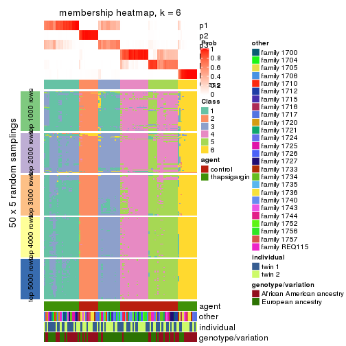
As soon as we have had the classes for columns, we can look for signatures which are significantly different between classes which can be candidate marks for certain classes. Following are the heatmaps for signatures.
Signature heatmaps where rows are scaled:
get_signatures(res, k = 2)
get_signatures(res, k = 3)
get_signatures(res, k = 4)
get_signatures(res, k = 5)
get_signatures(res, k = 6)
Signature heatmaps where rows are not scaled:
get_signatures(res, k = 2, scale_rows = FALSE)
get_signatures(res, k = 3, scale_rows = FALSE)
get_signatures(res, k = 4, scale_rows = FALSE)
get_signatures(res, k = 5, scale_rows = FALSE)
get_signatures(res, k = 6, scale_rows = FALSE)
Compare the overlap of signatures from different k:
compare_signatures(res)
get_signature() returns a data frame invisibly. TO get the list of signatures, the function
call should be assigned to a variable explicitly. In following code, if plot argument is set
to FALSE, no heatmap is plotted while only the differential analysis is performed.
# code only for demonstration
tb = get_signature(res, k = ..., plot = FALSE)
An example of the output of tb is:
#> which_row fdr mean_1 mean_2 scaled_mean_1 scaled_mean_2 km
#> 1 38 0.042760348 8.373488 9.131774 -0.5533452 0.5164555 1
#> 2 40 0.018707592 7.106213 8.469186 -0.6173731 0.5762149 1
#> 3 55 0.019134737 10.221463 11.207825 -0.6159697 0.5749050 1
#> 4 59 0.006059896 5.921854 7.869574 -0.6899429 0.6439467 1
#> 5 60 0.018055526 8.928898 10.211722 -0.6204761 0.5791110 1
#> 6 98 0.009384629 15.714769 14.887706 0.6635654 -0.6193277 2
...
The columns in tb are:
which_row: row indices corresponding to the input matrix.fdr: FDR for the differential test. mean_x: The mean value in group x.scaled_mean_x: The mean value in group x after rows are scaled.km: Row groups if k-means clustering is applied to rows.UMAP plot which shows how samples are separated.
dimension_reduction(res, k = 2, method = "UMAP")

dimension_reduction(res, k = 3, method = "UMAP")
dimension_reduction(res, k = 4, method = "UMAP")
dimension_reduction(res, k = 5, method = "UMAP")
dimension_reduction(res, k = 6, method = "UMAP")
Following heatmap shows how subgroups are split when increasing k:
collect_classes(res)
Test correlation between subgroups and known annotations. If the known annotation is numeric, one-way ANOVA test is applied, and if the known annotation is discrete, chi-squared contingency table test is applied.
test_to_known_factors(res)
#> n agent(p) other(p) individual(p) genotype/variation(p) k
#> MAD:mclust 104 1.49e-23 1.0000 1.000 1.00e+00 2
#> MAD:mclust 101 7.01e-18 0.0446 0.376 8.70e-04 3
#> MAD:mclust 99 2.55e-21 0.4220 0.606 2.16e-03 4
#> MAD:mclust 89 2.15e-18 0.0877 0.769 6.19e-05 5
#> MAD:mclust 95 5.97e-19 0.0649 0.898 6.32e-07 6
If matrix rows can be associated to genes, consider to use functional_enrichment(res,
...) to perform function enrichment for the signature genes. See this vignette for more detailed explanations.
The object with results only for a single top-value method and a single partition method can be extracted as:
res = res_list["MAD", "NMF"]
# you can also extract it by
# res = res_list["MAD:NMF"]
A summary of res and all the functions that can be applied to it:
res
#> A 'ConsensusPartition' object with k = 2, 3, 4, 5, 6.
#> On a matrix with 51941 rows and 104 columns.
#> Top rows (1000, 2000, 3000, 4000, 5000) are extracted by 'MAD' method.
#> Subgroups are detected by 'NMF' method.
#> Performed in total 1250 partitions by row resampling.
#> Best k for subgroups seems to be 2.
#>
#> Following methods can be applied to this 'ConsensusPartition' object:
#> [1] "cola_report" "collect_classes" "collect_plots"
#> [4] "collect_stats" "colnames" "compare_signatures"
#> [7] "consensus_heatmap" "dimension_reduction" "functional_enrichment"
#> [10] "get_anno_col" "get_anno" "get_classes"
#> [13] "get_consensus" "get_matrix" "get_membership"
#> [16] "get_param" "get_signatures" "get_stats"
#> [19] "is_best_k" "is_stable_k" "membership_heatmap"
#> [22] "ncol" "nrow" "plot_ecdf"
#> [25] "rownames" "select_partition_number" "show"
#> [28] "suggest_best_k" "test_to_known_factors"
collect_plots() function collects all the plots made from res for all k (number of partitions)
into one single page to provide an easy and fast comparison between different k.
collect_plots(res)
The plots are:
k and the heatmap of
predicted classes for each k.k.k.k.All the plots in panels can be made by individual functions and they are plotted later in this section.
select_partition_number() produces several plots showing different
statistics for choosing “optimized” k. There are following statistics:
k;k, the area increased is defined as \(A_k - A_{k-1}\).The detailed explanations of these statistics can be found in the cola vignette.
Generally speaking, lower PAC score, higher mean silhouette score or higher
concordance corresponds to better partition. Rand index and Jaccard index
measure how similar the current partition is compared to partition with k-1.
If they are too similar, we won't accept k is better than k-1.
select_partition_number(res)
The numeric values for all these statistics can be obtained by get_stats().
get_stats(res)
#> k 1-PAC mean_silhouette concordance area_increased Rand Jaccard
#> 2 2 0.728 0.869 0.942 0.4773 0.532 0.532
#> 3 3 0.522 0.705 0.846 0.3756 0.671 0.452
#> 4 4 0.451 0.515 0.717 0.1339 0.843 0.579
#> 5 5 0.475 0.403 0.629 0.0692 0.884 0.591
#> 6 6 0.503 0.340 0.574 0.0440 0.886 0.534
suggest_best_k() suggests the best \(k\) based on these statistics. The rules are as follows:
suggest_best_k(res)
#> [1] 2
Following shows the table of the partitions (You need to click the show/hide
code output link to see it). The membership matrix (columns with name p*)
is inferred by
clue::cl_consensus()
function with the SE method. Basically the value in the membership matrix
represents the probability to belong to a certain group. The finall class
label for an item is determined with the group with highest probability it
belongs to.
In get_classes() function, the entropy is calculated from the membership
matrix and the silhouette score is calculated from the consensus matrix.
cbind(get_classes(res, k = 2), get_membership(res, k = 2))
#> class entropy silhouette p1 p2
#> GSM494452 1 0.0000 0.927 1.000 0.000
#> GSM494454 1 0.0000 0.927 1.000 0.000
#> GSM494456 2 0.0000 0.954 0.000 1.000
#> GSM494458 2 0.0000 0.954 0.000 1.000
#> GSM494460 1 0.0000 0.927 1.000 0.000
#> GSM494462 1 0.0000 0.927 1.000 0.000
#> GSM494464 1 0.5519 0.832 0.872 0.128
#> GSM494466 2 0.0000 0.954 0.000 1.000
#> GSM494468 1 0.0000 0.927 1.000 0.000
#> GSM494470 1 0.0000 0.927 1.000 0.000
#> GSM494472 1 0.0000 0.927 1.000 0.000
#> GSM494474 1 0.0000 0.927 1.000 0.000
#> GSM494476 2 0.0000 0.954 0.000 1.000
#> GSM494478 2 0.6343 0.815 0.160 0.840
#> GSM494480 1 0.0000 0.927 1.000 0.000
#> GSM494482 1 0.0000 0.927 1.000 0.000
#> GSM494484 2 0.0000 0.954 0.000 1.000
#> GSM494486 2 0.0000 0.954 0.000 1.000
#> GSM494488 1 0.0000 0.927 1.000 0.000
#> GSM494490 2 0.0376 0.951 0.004 0.996
#> GSM494492 1 0.0376 0.926 0.996 0.004
#> GSM494494 2 0.0000 0.954 0.000 1.000
#> GSM494496 1 0.0376 0.926 0.996 0.004
#> GSM494498 2 0.0000 0.954 0.000 1.000
#> GSM494500 1 0.0000 0.927 1.000 0.000
#> GSM494502 1 0.0000 0.927 1.000 0.000
#> GSM494504 1 0.0000 0.927 1.000 0.000
#> GSM494506 1 0.0000 0.927 1.000 0.000
#> GSM494508 2 0.2236 0.931 0.036 0.964
#> GSM494510 2 0.0000 0.954 0.000 1.000
#> GSM494512 1 0.0376 0.926 0.996 0.004
#> GSM494514 1 0.0000 0.927 1.000 0.000
#> GSM494516 1 0.0000 0.927 1.000 0.000
#> GSM494518 1 0.0000 0.927 1.000 0.000
#> GSM494520 1 0.0000 0.927 1.000 0.000
#> GSM494522 1 0.0000 0.927 1.000 0.000
#> GSM494524 2 0.0000 0.954 0.000 1.000
#> GSM494526 1 0.0000 0.927 1.000 0.000
#> GSM494528 1 0.0000 0.927 1.000 0.000
#> GSM494530 1 0.0000 0.927 1.000 0.000
#> GSM494532 1 0.0000 0.927 1.000 0.000
#> GSM494534 1 0.0000 0.927 1.000 0.000
#> GSM494536 1 0.0000 0.927 1.000 0.000
#> GSM494538 1 0.0000 0.927 1.000 0.000
#> GSM494540 1 0.0000 0.927 1.000 0.000
#> GSM494542 1 0.0000 0.927 1.000 0.000
#> GSM494544 1 0.0000 0.927 1.000 0.000
#> GSM494546 1 0.9661 0.370 0.608 0.392
#> GSM494548 1 0.5059 0.848 0.888 0.112
#> GSM494550 1 0.0376 0.926 0.996 0.004
#> GSM494552 1 0.1843 0.917 0.972 0.028
#> GSM494554 1 0.3733 0.889 0.928 0.072
#> GSM494453 1 0.1633 0.919 0.976 0.024
#> GSM494455 1 0.0000 0.927 1.000 0.000
#> GSM494457 2 0.0000 0.954 0.000 1.000
#> GSM494459 2 0.0000 0.954 0.000 1.000
#> GSM494461 1 0.9944 0.225 0.544 0.456
#> GSM494463 1 0.5294 0.847 0.880 0.120
#> GSM494465 2 0.0000 0.954 0.000 1.000
#> GSM494467 2 0.0000 0.954 0.000 1.000
#> GSM494469 2 0.9323 0.440 0.348 0.652
#> GSM494471 1 0.2043 0.916 0.968 0.032
#> GSM494473 1 0.0000 0.927 1.000 0.000
#> GSM494475 1 0.2043 0.916 0.968 0.032
#> GSM494477 2 0.0000 0.954 0.000 1.000
#> GSM494479 2 0.0000 0.954 0.000 1.000
#> GSM494481 2 0.4022 0.899 0.080 0.920
#> GSM494483 2 0.8813 0.563 0.300 0.700
#> GSM494485 2 0.0000 0.954 0.000 1.000
#> GSM494487 2 0.0000 0.954 0.000 1.000
#> GSM494489 1 0.8144 0.682 0.748 0.252
#> GSM494491 2 0.0000 0.954 0.000 1.000
#> GSM494493 2 0.3879 0.904 0.076 0.924
#> GSM494495 2 0.0000 0.954 0.000 1.000
#> GSM494497 2 0.5842 0.834 0.140 0.860
#> GSM494499 2 0.0000 0.954 0.000 1.000
#> GSM494501 1 0.0376 0.926 0.996 0.004
#> GSM494503 1 0.3733 0.890 0.928 0.072
#> GSM494505 1 0.4022 0.883 0.920 0.080
#> GSM494507 2 0.5059 0.867 0.112 0.888
#> GSM494509 2 0.0000 0.954 0.000 1.000
#> GSM494511 2 0.0000 0.954 0.000 1.000
#> GSM494513 1 0.9795 0.343 0.584 0.416
#> GSM494515 1 0.9833 0.324 0.576 0.424
#> GSM494517 1 0.2043 0.916 0.968 0.032
#> GSM494519 1 0.0000 0.927 1.000 0.000
#> GSM494521 1 0.0376 0.926 0.996 0.004
#> GSM494523 1 0.1184 0.923 0.984 0.016
#> GSM494525 2 0.0000 0.954 0.000 1.000
#> GSM494527 1 0.1843 0.918 0.972 0.028
#> GSM494529 1 0.3733 0.890 0.928 0.072
#> GSM494531 1 0.2043 0.915 0.968 0.032
#> GSM494533 2 0.0376 0.952 0.004 0.996
#> GSM494535 2 0.5842 0.839 0.140 0.860
#> GSM494537 1 0.1843 0.918 0.972 0.028
#> GSM494539 1 0.1633 0.920 0.976 0.024
#> GSM494541 1 0.5408 0.843 0.876 0.124
#> GSM494543 1 0.9491 0.468 0.632 0.368
#> GSM494545 1 0.6247 0.806 0.844 0.156
#> GSM494547 2 0.0000 0.954 0.000 1.000
#> GSM494549 2 0.5294 0.864 0.120 0.880
#> GSM494551 2 0.2236 0.933 0.036 0.964
#> GSM494553 1 0.9996 0.117 0.512 0.488
#> GSM494555 1 0.9977 0.173 0.528 0.472
cbind(get_classes(res, k = 3), get_membership(res, k = 3))
#> class entropy silhouette p1 p2 p3
#> GSM494452 2 0.1015 0.8524 0.008 0.980 0.012
#> GSM494454 2 0.0892 0.8551 0.000 0.980 0.020
#> GSM494456 3 0.1453 0.8082 0.008 0.024 0.968
#> GSM494458 3 0.0829 0.8074 0.004 0.012 0.984
#> GSM494460 2 0.1964 0.8547 0.000 0.944 0.056
#> GSM494462 2 0.2313 0.8546 0.024 0.944 0.032
#> GSM494464 3 0.6398 0.1620 0.004 0.416 0.580
#> GSM494466 3 0.1529 0.8039 0.000 0.040 0.960
#> GSM494468 2 0.1647 0.8557 0.004 0.960 0.036
#> GSM494470 2 0.1905 0.8552 0.016 0.956 0.028
#> GSM494472 2 0.1765 0.8549 0.004 0.956 0.040
#> GSM494474 2 0.1399 0.8555 0.004 0.968 0.028
#> GSM494476 3 0.0892 0.8081 0.000 0.020 0.980
#> GSM494478 3 0.3644 0.7374 0.004 0.124 0.872
#> GSM494480 2 0.3500 0.8321 0.004 0.880 0.116
#> GSM494482 2 0.3193 0.8394 0.004 0.896 0.100
#> GSM494484 3 0.1015 0.8064 0.008 0.012 0.980
#> GSM494486 3 0.0829 0.8074 0.004 0.012 0.984
#> GSM494488 2 0.4521 0.7892 0.004 0.816 0.180
#> GSM494490 3 0.2496 0.7894 0.004 0.068 0.928
#> GSM494492 2 0.5254 0.6896 0.000 0.736 0.264
#> GSM494494 3 0.1453 0.8082 0.008 0.024 0.968
#> GSM494496 2 0.6247 0.7445 0.044 0.744 0.212
#> GSM494498 3 0.1031 0.8078 0.000 0.024 0.976
#> GSM494500 2 0.0424 0.8464 0.008 0.992 0.000
#> GSM494502 2 0.1964 0.8532 0.000 0.944 0.056
#> GSM494504 2 0.1411 0.8563 0.000 0.964 0.036
#> GSM494506 2 0.4605 0.7661 0.000 0.796 0.204
#> GSM494508 3 0.2066 0.7954 0.000 0.060 0.940
#> GSM494510 3 0.1129 0.8082 0.004 0.020 0.976
#> GSM494512 2 0.5529 0.6347 0.000 0.704 0.296
#> GSM494514 2 0.2774 0.8524 0.008 0.920 0.072
#> GSM494516 2 0.1015 0.8447 0.008 0.980 0.012
#> GSM494518 2 0.1015 0.8449 0.008 0.980 0.012
#> GSM494520 2 0.0424 0.8501 0.000 0.992 0.008
#> GSM494522 2 0.3425 0.8339 0.004 0.884 0.112
#> GSM494524 3 0.1878 0.8015 0.004 0.044 0.952
#> GSM494526 2 0.1267 0.8553 0.004 0.972 0.024
#> GSM494528 2 0.1753 0.8542 0.000 0.952 0.048
#> GSM494530 2 0.1643 0.8556 0.000 0.956 0.044
#> GSM494532 2 0.3879 0.8081 0.000 0.848 0.152
#> GSM494534 2 0.5216 0.6945 0.000 0.740 0.260
#> GSM494536 2 0.1170 0.8539 0.008 0.976 0.016
#> GSM494538 2 0.1170 0.8506 0.008 0.976 0.016
#> GSM494540 2 0.1989 0.8562 0.004 0.948 0.048
#> GSM494542 2 0.2772 0.8503 0.004 0.916 0.080
#> GSM494544 2 0.3500 0.8317 0.004 0.880 0.116
#> GSM494546 3 0.5327 0.5301 0.000 0.272 0.728
#> GSM494548 3 0.6373 0.1695 0.004 0.408 0.588
#> GSM494550 2 0.5404 0.6966 0.004 0.740 0.256
#> GSM494552 2 0.5138 0.8059 0.052 0.828 0.120
#> GSM494554 2 0.4931 0.7587 0.004 0.784 0.212
#> GSM494453 2 0.6664 0.0394 0.464 0.528 0.008
#> GSM494455 2 0.5656 0.5396 0.264 0.728 0.008
#> GSM494457 3 0.4974 0.6543 0.236 0.000 0.764
#> GSM494459 3 0.6008 0.4426 0.372 0.000 0.628
#> GSM494461 1 0.1337 0.8109 0.972 0.016 0.012
#> GSM494463 1 0.5845 0.6111 0.688 0.308 0.004
#> GSM494465 1 0.1964 0.7872 0.944 0.000 0.056
#> GSM494467 3 0.6295 0.1840 0.472 0.000 0.528
#> GSM494469 1 0.1585 0.8128 0.964 0.028 0.008
#> GSM494471 1 0.5831 0.6298 0.708 0.284 0.008
#> GSM494473 2 0.5461 0.5779 0.244 0.748 0.008
#> GSM494475 1 0.5722 0.6380 0.704 0.292 0.004
#> GSM494477 3 0.3192 0.7550 0.112 0.000 0.888
#> GSM494479 1 0.3879 0.7045 0.848 0.000 0.152
#> GSM494481 1 0.3678 0.8071 0.892 0.080 0.028
#> GSM494483 1 0.1877 0.8148 0.956 0.032 0.012
#> GSM494485 3 0.4702 0.6809 0.212 0.000 0.788
#> GSM494487 3 0.2066 0.7812 0.060 0.000 0.940
#> GSM494489 1 0.0848 0.8080 0.984 0.008 0.008
#> GSM494491 1 0.6026 0.3129 0.624 0.000 0.376
#> GSM494493 1 0.1163 0.7993 0.972 0.000 0.028
#> GSM494495 3 0.6244 0.2669 0.440 0.000 0.560
#> GSM494497 1 0.1315 0.8052 0.972 0.008 0.020
#> GSM494499 3 0.5178 0.6328 0.256 0.000 0.744
#> GSM494501 2 0.6416 0.2944 0.376 0.616 0.008
#> GSM494503 1 0.6318 0.5009 0.636 0.356 0.008
#> GSM494505 1 0.1647 0.8105 0.960 0.036 0.004
#> GSM494507 1 0.1289 0.7979 0.968 0.000 0.032
#> GSM494509 1 0.5363 0.5302 0.724 0.000 0.276
#> GSM494511 3 0.5431 0.5885 0.284 0.000 0.716
#> GSM494513 1 0.3293 0.8091 0.900 0.088 0.012
#> GSM494515 1 0.0829 0.8053 0.984 0.004 0.012
#> GSM494517 1 0.2945 0.8064 0.908 0.088 0.004
#> GSM494519 1 0.6672 0.2428 0.520 0.472 0.008
#> GSM494521 2 0.5958 0.4870 0.300 0.692 0.008
#> GSM494523 2 0.6359 0.3075 0.364 0.628 0.008
#> GSM494525 3 0.3941 0.7301 0.156 0.000 0.844
#> GSM494527 2 0.6598 0.1638 0.428 0.564 0.008
#> GSM494529 1 0.5831 0.6272 0.708 0.284 0.008
#> GSM494531 1 0.5958 0.6263 0.692 0.300 0.008
#> GSM494533 1 0.6104 0.3957 0.648 0.004 0.348
#> GSM494535 1 0.3554 0.8077 0.900 0.064 0.036
#> GSM494537 1 0.4062 0.7761 0.836 0.164 0.000
#> GSM494539 1 0.4099 0.7842 0.852 0.140 0.008
#> GSM494541 1 0.6008 0.4666 0.628 0.372 0.000
#> GSM494543 1 0.1267 0.8127 0.972 0.024 0.004
#> GSM494545 1 0.4589 0.7492 0.820 0.172 0.008
#> GSM494547 1 0.5327 0.5411 0.728 0.000 0.272
#> GSM494549 1 0.4165 0.7935 0.876 0.076 0.048
#> GSM494551 1 0.1585 0.8035 0.964 0.008 0.028
#> GSM494553 1 0.1878 0.8136 0.952 0.044 0.004
#> GSM494555 1 0.2584 0.8128 0.928 0.064 0.008
cbind(get_classes(res, k = 4), get_membership(res, k = 4))
#> class entropy silhouette p1 p2 p3 p4
#> GSM494452 4 0.208 0.6208 0.000 0.000 0.084 0.916
#> GSM494454 4 0.368 0.6013 0.004 0.004 0.172 0.820
#> GSM494456 2 0.130 0.8280 0.000 0.956 0.000 0.044
#> GSM494458 2 0.141 0.8320 0.000 0.960 0.016 0.024
#> GSM494460 4 0.425 0.5017 0.000 0.004 0.252 0.744
#> GSM494462 4 0.326 0.6014 0.012 0.016 0.092 0.880
#> GSM494464 2 0.639 0.0674 0.000 0.484 0.064 0.452
#> GSM494466 2 0.191 0.8325 0.000 0.940 0.040 0.020
#> GSM494468 4 0.455 0.5862 0.000 0.040 0.180 0.780
#> GSM494470 4 0.256 0.6242 0.000 0.020 0.072 0.908
#> GSM494472 4 0.406 0.6001 0.000 0.028 0.160 0.812
#> GSM494474 4 0.369 0.5751 0.000 0.000 0.208 0.792
#> GSM494476 2 0.121 0.8303 0.000 0.964 0.004 0.032
#> GSM494478 2 0.514 0.6269 0.000 0.700 0.032 0.268
#> GSM494480 4 0.593 0.4756 0.000 0.076 0.264 0.660
#> GSM494482 4 0.590 0.4692 0.000 0.068 0.280 0.652
#> GSM494484 2 0.158 0.8292 0.000 0.948 0.048 0.004
#> GSM494486 2 0.126 0.8316 0.000 0.964 0.028 0.008
#> GSM494488 4 0.448 0.5876 0.000 0.108 0.084 0.808
#> GSM494490 2 0.472 0.7255 0.000 0.772 0.048 0.180
#> GSM494492 3 0.744 0.2512 0.000 0.176 0.460 0.364
#> GSM494494 2 0.139 0.8261 0.000 0.952 0.000 0.048
#> GSM494496 4 0.481 0.5416 0.008 0.052 0.152 0.788
#> GSM494498 2 0.161 0.8326 0.000 0.952 0.032 0.016
#> GSM494500 4 0.375 0.5639 0.004 0.000 0.196 0.800
#> GSM494502 3 0.475 0.4582 0.000 0.000 0.632 0.368
#> GSM494504 3 0.479 0.5368 0.000 0.008 0.680 0.312
#> GSM494506 3 0.533 0.6010 0.000 0.080 0.736 0.184
#> GSM494508 2 0.511 0.7464 0.000 0.764 0.132 0.104
#> GSM494510 2 0.387 0.7513 0.000 0.788 0.208 0.004
#> GSM494512 3 0.308 0.6075 0.000 0.032 0.884 0.084
#> GSM494514 3 0.517 0.0257 0.004 0.000 0.512 0.484
#> GSM494516 3 0.475 0.4437 0.000 0.000 0.632 0.368
#> GSM494518 3 0.482 0.3728 0.000 0.000 0.612 0.388
#> GSM494520 4 0.500 -0.1021 0.000 0.000 0.496 0.504
#> GSM494522 3 0.310 0.6004 0.000 0.012 0.868 0.120
#> GSM494524 2 0.297 0.8160 0.000 0.892 0.036 0.072
#> GSM494526 4 0.309 0.6189 0.000 0.008 0.128 0.864
#> GSM494528 4 0.526 0.0737 0.000 0.008 0.444 0.548
#> GSM494530 4 0.467 0.4668 0.000 0.008 0.292 0.700
#> GSM494532 3 0.583 0.3240 0.000 0.040 0.588 0.372
#> GSM494534 3 0.556 0.5617 0.000 0.068 0.700 0.232
#> GSM494536 4 0.483 0.0998 0.000 0.000 0.392 0.608
#> GSM494538 3 0.425 0.5441 0.000 0.000 0.724 0.276
#> GSM494540 3 0.327 0.6040 0.000 0.000 0.832 0.168
#> GSM494542 3 0.412 0.5777 0.000 0.004 0.760 0.236
#> GSM494544 3 0.457 0.5630 0.000 0.024 0.756 0.220
#> GSM494546 3 0.496 0.4736 0.000 0.196 0.752 0.052
#> GSM494548 3 0.442 0.5235 0.000 0.140 0.804 0.056
#> GSM494550 3 0.250 0.5945 0.000 0.040 0.916 0.044
#> GSM494552 4 0.407 0.5617 0.008 0.060 0.088 0.844
#> GSM494554 4 0.492 0.5340 0.000 0.088 0.136 0.776
#> GSM494453 4 0.576 0.0144 0.444 0.000 0.028 0.528
#> GSM494455 4 0.699 0.2270 0.336 0.000 0.132 0.532
#> GSM494457 2 0.371 0.7800 0.140 0.836 0.024 0.000
#> GSM494459 2 0.416 0.7374 0.192 0.792 0.012 0.004
#> GSM494461 1 0.264 0.6880 0.908 0.004 0.016 0.072
#> GSM494463 4 0.557 0.0489 0.372 0.004 0.020 0.604
#> GSM494465 1 0.429 0.6441 0.812 0.152 0.008 0.028
#> GSM494467 2 0.592 0.5817 0.272 0.656 0.072 0.000
#> GSM494469 1 0.493 0.5668 0.712 0.016 0.004 0.268
#> GSM494471 1 0.500 0.5304 0.676 0.000 0.016 0.308
#> GSM494473 4 0.745 0.3317 0.300 0.000 0.204 0.496
#> GSM494475 1 0.587 0.2748 0.544 0.012 0.016 0.428
#> GSM494477 2 0.203 0.8250 0.036 0.936 0.028 0.000
#> GSM494479 1 0.585 0.4682 0.664 0.276 0.004 0.056
#> GSM494481 1 0.731 0.4621 0.576 0.104 0.028 0.292
#> GSM494483 1 0.301 0.6891 0.888 0.012 0.008 0.092
#> GSM494485 2 0.352 0.7927 0.112 0.856 0.032 0.000
#> GSM494487 2 0.128 0.8292 0.024 0.964 0.012 0.000
#> GSM494489 1 0.194 0.6869 0.936 0.000 0.012 0.052
#> GSM494491 1 0.549 0.1387 0.568 0.416 0.012 0.004
#> GSM494493 1 0.192 0.6835 0.944 0.024 0.028 0.004
#> GSM494495 2 0.518 0.5680 0.304 0.672 0.024 0.000
#> GSM494497 1 0.549 0.6093 0.708 0.004 0.052 0.236
#> GSM494499 2 0.404 0.7494 0.176 0.804 0.020 0.000
#> GSM494501 1 0.689 0.2042 0.512 0.000 0.112 0.376
#> GSM494503 1 0.659 0.4883 0.628 0.000 0.212 0.160
#> GSM494505 1 0.161 0.6841 0.952 0.000 0.016 0.032
#> GSM494507 1 0.341 0.6754 0.876 0.048 0.072 0.004
#> GSM494509 1 0.688 0.3757 0.608 0.276 0.100 0.016
#> GSM494511 2 0.711 0.5580 0.220 0.596 0.176 0.008
#> GSM494513 3 0.625 -0.1173 0.440 0.012 0.516 0.032
#> GSM494515 1 0.515 0.6477 0.760 0.000 0.100 0.140
#> GSM494517 1 0.185 0.6861 0.940 0.000 0.012 0.048
#> GSM494519 1 0.773 -0.1060 0.388 0.000 0.384 0.228
#> GSM494521 1 0.789 -0.0493 0.380 0.000 0.316 0.304
#> GSM494523 3 0.655 0.4072 0.260 0.000 0.616 0.124
#> GSM494525 2 0.417 0.8020 0.096 0.840 0.012 0.052
#> GSM494527 4 0.578 0.0954 0.408 0.000 0.032 0.560
#> GSM494529 1 0.520 0.5581 0.708 0.000 0.040 0.252
#> GSM494531 1 0.514 0.5984 0.700 0.000 0.032 0.268
#> GSM494533 1 0.790 0.1709 0.428 0.324 0.244 0.004
#> GSM494535 1 0.478 0.6648 0.808 0.048 0.120 0.024
#> GSM494537 1 0.332 0.6723 0.852 0.000 0.012 0.136
#> GSM494539 1 0.382 0.6748 0.848 0.000 0.064 0.088
#> GSM494541 3 0.724 0.3270 0.324 0.004 0.528 0.144
#> GSM494543 1 0.419 0.6573 0.816 0.008 0.152 0.024
#> GSM494545 1 0.621 0.5414 0.656 0.008 0.260 0.076
#> GSM494547 1 0.771 0.2345 0.452 0.280 0.268 0.000
#> GSM494549 3 0.679 -0.0334 0.372 0.080 0.540 0.008
#> GSM494551 1 0.599 0.4863 0.628 0.064 0.308 0.000
#> GSM494553 1 0.570 0.4665 0.588 0.000 0.032 0.380
#> GSM494555 1 0.402 0.6309 0.772 0.000 0.004 0.224
cbind(get_classes(res, k = 5), get_membership(res, k = 5))
#> class entropy silhouette p1 p2 p3 p4 p5
#> GSM494452 5 0.427 0.4454 0.004 0.000 0.016 0.272 0.708
#> GSM494454 5 0.529 0.0697 0.000 0.000 0.048 0.452 0.500
#> GSM494456 2 0.377 0.7793 0.000 0.820 0.016 0.132 0.032
#> GSM494458 2 0.233 0.7957 0.000 0.908 0.008 0.068 0.016
#> GSM494460 5 0.355 0.5450 0.000 0.000 0.124 0.052 0.824
#> GSM494462 5 0.215 0.5640 0.000 0.004 0.032 0.044 0.920
#> GSM494464 2 0.685 0.1640 0.000 0.404 0.012 0.392 0.192
#> GSM494466 2 0.312 0.8008 0.000 0.872 0.060 0.056 0.012
#> GSM494468 4 0.542 0.2883 0.004 0.036 0.036 0.676 0.248
#> GSM494470 5 0.551 0.2164 0.016 0.020 0.008 0.448 0.508
#> GSM494472 4 0.465 0.2667 0.000 0.004 0.032 0.684 0.280
#> GSM494474 4 0.523 0.2372 0.000 0.000 0.060 0.600 0.340
#> GSM494476 2 0.264 0.7914 0.000 0.888 0.004 0.084 0.024
#> GSM494478 2 0.665 0.5335 0.000 0.556 0.024 0.200 0.220
#> GSM494480 4 0.636 0.3921 0.000 0.064 0.112 0.636 0.188
#> GSM494482 4 0.604 0.3699 0.000 0.056 0.072 0.644 0.228
#> GSM494484 2 0.241 0.7947 0.000 0.908 0.056 0.028 0.008
#> GSM494486 2 0.260 0.8019 0.000 0.904 0.036 0.020 0.040
#> GSM494488 5 0.614 0.3482 0.000 0.076 0.032 0.316 0.576
#> GSM494490 2 0.664 0.6144 0.000 0.592 0.048 0.208 0.152
#> GSM494492 4 0.821 0.1010 0.000 0.164 0.312 0.364 0.160
#> GSM494494 2 0.280 0.7986 0.000 0.888 0.020 0.072 0.020
#> GSM494496 5 0.254 0.5570 0.000 0.012 0.052 0.032 0.904
#> GSM494498 2 0.309 0.8021 0.000 0.880 0.048 0.040 0.032
#> GSM494500 5 0.510 0.3720 0.000 0.000 0.068 0.284 0.648
#> GSM494502 3 0.584 0.0926 0.000 0.004 0.468 0.448 0.080
#> GSM494504 3 0.595 0.2572 0.000 0.000 0.556 0.312 0.132
#> GSM494506 3 0.551 0.3188 0.000 0.020 0.604 0.332 0.044
#> GSM494508 2 0.719 0.6164 0.000 0.564 0.156 0.168 0.112
#> GSM494510 2 0.517 0.6412 0.004 0.668 0.276 0.036 0.016
#> GSM494512 3 0.480 0.4221 0.000 0.024 0.712 0.236 0.028
#> GSM494514 5 0.484 0.3962 0.000 0.000 0.292 0.048 0.660
#> GSM494516 3 0.593 0.0454 0.000 0.000 0.460 0.436 0.104
#> GSM494518 4 0.593 0.0843 0.000 0.000 0.372 0.516 0.112
#> GSM494520 4 0.619 0.2530 0.000 0.000 0.308 0.528 0.164
#> GSM494522 3 0.380 0.4601 0.000 0.012 0.824 0.112 0.052
#> GSM494524 2 0.531 0.7312 0.000 0.716 0.060 0.180 0.044
#> GSM494526 4 0.520 -0.0446 0.008 0.012 0.012 0.552 0.416
#> GSM494528 4 0.496 0.2952 0.000 0.004 0.252 0.684 0.060
#> GSM494530 5 0.638 0.2053 0.000 0.008 0.184 0.256 0.552
#> GSM494532 4 0.560 0.0918 0.000 0.016 0.368 0.568 0.048
#> GSM494534 4 0.551 -0.0229 0.000 0.020 0.408 0.540 0.032
#> GSM494536 4 0.696 0.1114 0.004 0.000 0.324 0.340 0.332
#> GSM494538 3 0.521 0.2054 0.000 0.000 0.524 0.432 0.044
#> GSM494540 3 0.438 0.3120 0.000 0.000 0.616 0.376 0.008
#> GSM494542 3 0.501 0.2213 0.000 0.000 0.540 0.428 0.032
#> GSM494544 3 0.528 0.3547 0.000 0.008 0.676 0.084 0.232
#> GSM494546 3 0.421 0.3959 0.000 0.140 0.796 0.032 0.032
#> GSM494548 3 0.466 0.4451 0.000 0.060 0.780 0.116 0.044
#> GSM494550 3 0.348 0.4676 0.000 0.032 0.844 0.108 0.016
#> GSM494552 5 0.280 0.5575 0.008 0.004 0.012 0.096 0.880
#> GSM494554 5 0.566 0.4381 0.000 0.032 0.076 0.224 0.668
#> GSM494453 1 0.703 -0.0106 0.380 0.000 0.008 0.312 0.300
#> GSM494455 5 0.776 0.2183 0.264 0.000 0.068 0.256 0.412
#> GSM494457 2 0.338 0.7753 0.088 0.860 0.024 0.024 0.004
#> GSM494459 2 0.308 0.7567 0.116 0.852 0.032 0.000 0.000
#> GSM494461 1 0.435 0.5296 0.760 0.008 0.020 0.012 0.200
#> GSM494463 5 0.413 0.5391 0.180 0.000 0.000 0.052 0.768
#> GSM494465 1 0.435 0.5695 0.764 0.172 0.004 0.060 0.000
#> GSM494467 2 0.562 0.6041 0.192 0.672 0.120 0.016 0.000
#> GSM494469 1 0.580 0.4794 0.648 0.012 0.000 0.148 0.192
#> GSM494471 1 0.543 0.3537 0.604 0.004 0.000 0.068 0.324
#> GSM494473 4 0.782 -0.0368 0.328 0.000 0.076 0.384 0.212
#> GSM494475 1 0.684 0.2974 0.484 0.008 0.004 0.288 0.216
#> GSM494477 2 0.107 0.7966 0.004 0.968 0.016 0.012 0.000
#> GSM494479 1 0.668 0.3395 0.532 0.308 0.008 0.016 0.136
#> GSM494481 1 0.742 0.3447 0.460 0.120 0.012 0.352 0.056
#> GSM494483 1 0.412 0.5956 0.768 0.020 0.004 0.200 0.008
#> GSM494485 2 0.303 0.7699 0.076 0.876 0.032 0.016 0.000
#> GSM494487 2 0.211 0.8014 0.004 0.928 0.040 0.016 0.012
#> GSM494489 1 0.424 0.5817 0.808 0.016 0.016 0.036 0.124
#> GSM494491 1 0.613 0.2605 0.564 0.352 0.016 0.032 0.036
#> GSM494493 1 0.309 0.5978 0.884 0.048 0.044 0.008 0.016
#> GSM494495 2 0.438 0.6719 0.192 0.756 0.044 0.008 0.000
#> GSM494497 5 0.539 0.3201 0.308 0.012 0.032 0.012 0.636
#> GSM494499 2 0.313 0.7695 0.092 0.864 0.036 0.008 0.000
#> GSM494501 1 0.683 0.4229 0.564 0.000 0.044 0.188 0.204
#> GSM494503 1 0.653 0.3708 0.568 0.000 0.200 0.212 0.020
#> GSM494505 1 0.109 0.6007 0.968 0.000 0.008 0.008 0.016
#> GSM494507 1 0.427 0.5826 0.800 0.020 0.128 0.048 0.004
#> GSM494509 1 0.707 0.4026 0.564 0.196 0.184 0.008 0.048
#> GSM494511 2 0.700 0.4671 0.148 0.528 0.280 0.004 0.040
#> GSM494513 3 0.625 0.3033 0.256 0.012 0.620 0.028 0.084
#> GSM494515 5 0.710 0.0867 0.336 0.016 0.156 0.016 0.476
#> GSM494517 1 0.220 0.6075 0.920 0.000 0.008 0.036 0.036
#> GSM494519 4 0.748 -0.0290 0.312 0.000 0.316 0.340 0.032
#> GSM494521 1 0.815 0.2274 0.428 0.004 0.192 0.248 0.128
#> GSM494523 3 0.687 0.2631 0.232 0.000 0.536 0.200 0.032
#> GSM494525 2 0.582 0.7014 0.104 0.696 0.020 0.160 0.020
#> GSM494527 5 0.696 0.0552 0.368 0.000 0.008 0.248 0.376
#> GSM494529 1 0.568 0.4755 0.612 0.000 0.056 0.308 0.024
#> GSM494531 1 0.606 0.2035 0.532 0.000 0.024 0.068 0.376
#> GSM494533 1 0.857 0.0658 0.340 0.220 0.284 0.148 0.008
#> GSM494535 1 0.588 0.5660 0.704 0.028 0.144 0.100 0.024
#> GSM494537 1 0.401 0.6076 0.808 0.000 0.012 0.124 0.056
#> GSM494539 1 0.429 0.6142 0.800 0.000 0.096 0.084 0.020
#> GSM494541 4 0.710 -0.0591 0.220 0.004 0.360 0.404 0.012
#> GSM494543 1 0.565 0.5117 0.680 0.016 0.228 0.024 0.052
#> GSM494545 3 0.730 -0.1066 0.404 0.016 0.420 0.036 0.124
#> GSM494547 3 0.768 -0.0978 0.328 0.288 0.348 0.016 0.020
#> GSM494549 3 0.641 0.2924 0.284 0.040 0.600 0.056 0.020
#> GSM494551 1 0.571 0.2127 0.524 0.044 0.412 0.020 0.000
#> GSM494553 5 0.468 0.4575 0.224 0.008 0.008 0.032 0.728
#> GSM494555 1 0.628 0.3833 0.576 0.012 0.008 0.108 0.296
cbind(get_classes(res, k = 6), get_membership(res, k = 6))
#> class entropy silhouette p1 p2 p3 p4 p5 p6
#> GSM494452 6 0.587 0.03405 0.004 0.004 0.020 0.092 0.368 0.512
#> GSM494454 5 0.657 0.23394 0.004 0.000 0.020 0.236 0.372 0.368
#> GSM494456 2 0.464 0.64592 0.000 0.704 0.144 0.000 0.148 0.004
#> GSM494458 2 0.256 0.70436 0.000 0.876 0.052 0.000 0.072 0.000
#> GSM494460 6 0.363 0.57602 0.004 0.004 0.084 0.028 0.048 0.832
#> GSM494462 6 0.263 0.57994 0.004 0.000 0.040 0.012 0.056 0.888
#> GSM494464 5 0.747 -0.02781 0.004 0.324 0.112 0.060 0.436 0.064
#> GSM494466 2 0.387 0.68749 0.000 0.792 0.096 0.000 0.100 0.012
#> GSM494468 5 0.702 0.40637 0.008 0.040 0.068 0.244 0.540 0.100
#> GSM494470 5 0.686 0.16236 0.016 0.032 0.064 0.056 0.492 0.340
#> GSM494472 5 0.642 0.43556 0.008 0.028 0.036 0.212 0.596 0.120
#> GSM494474 5 0.613 0.37368 0.004 0.000 0.012 0.340 0.472 0.172
#> GSM494476 2 0.387 0.67022 0.000 0.784 0.076 0.000 0.132 0.008
#> GSM494478 2 0.721 0.31252 0.000 0.408 0.168 0.004 0.312 0.108
#> GSM494480 5 0.733 0.25902 0.008 0.052 0.128 0.288 0.476 0.048
#> GSM494482 5 0.660 0.35337 0.004 0.044 0.032 0.332 0.508 0.080
#> GSM494484 2 0.231 0.69134 0.000 0.892 0.068 0.000 0.040 0.000
#> GSM494486 2 0.272 0.70458 0.000 0.872 0.088 0.000 0.028 0.012
#> GSM494488 6 0.736 -0.08505 0.000 0.112 0.044 0.080 0.368 0.396
#> GSM494490 2 0.689 0.25980 0.000 0.344 0.280 0.000 0.328 0.048
#> GSM494492 4 0.829 0.02495 0.000 0.128 0.124 0.348 0.296 0.104
#> GSM494494 2 0.310 0.70556 0.000 0.852 0.064 0.000 0.072 0.012
#> GSM494496 6 0.297 0.58436 0.000 0.004 0.068 0.016 0.044 0.868
#> GSM494498 2 0.414 0.68627 0.000 0.772 0.132 0.000 0.076 0.020
#> GSM494500 6 0.537 0.33903 0.000 0.000 0.016 0.168 0.180 0.636
#> GSM494502 4 0.558 0.42673 0.000 0.000 0.100 0.652 0.180 0.068
#> GSM494504 4 0.587 0.41818 0.000 0.004 0.128 0.648 0.100 0.120
#> GSM494506 4 0.511 0.45537 0.000 0.020 0.132 0.712 0.116 0.020
#> GSM494508 3 0.680 -0.16557 0.000 0.288 0.420 0.000 0.240 0.052
#> GSM494510 3 0.526 -0.14160 0.000 0.452 0.484 0.032 0.028 0.004
#> GSM494512 4 0.557 0.00905 0.000 0.008 0.436 0.480 0.048 0.028
#> GSM494514 6 0.511 0.47714 0.000 0.000 0.304 0.032 0.048 0.616
#> GSM494516 4 0.502 0.46491 0.000 0.000 0.044 0.708 0.124 0.124
#> GSM494518 4 0.475 0.32102 0.004 0.004 0.008 0.696 0.220 0.068
#> GSM494520 4 0.553 0.36533 0.000 0.004 0.036 0.648 0.200 0.112
#> GSM494522 4 0.591 -0.11472 0.000 0.004 0.440 0.448 0.052 0.056
#> GSM494524 2 0.592 0.51726 0.004 0.564 0.152 0.000 0.260 0.020
#> GSM494526 5 0.586 0.46218 0.012 0.012 0.004 0.152 0.604 0.216
#> GSM494528 4 0.575 0.05278 0.004 0.000 0.128 0.468 0.396 0.004
#> GSM494530 6 0.738 0.25138 0.000 0.004 0.164 0.180 0.220 0.432
#> GSM494532 4 0.637 0.22383 0.008 0.012 0.176 0.468 0.332 0.004
#> GSM494534 4 0.614 0.38162 0.000 0.036 0.168 0.540 0.256 0.000
#> GSM494536 4 0.746 0.09737 0.008 0.000 0.104 0.356 0.216 0.316
#> GSM494538 4 0.423 0.50137 0.000 0.000 0.080 0.768 0.128 0.024
#> GSM494540 4 0.357 0.43684 0.000 0.000 0.124 0.804 0.068 0.004
#> GSM494542 4 0.398 0.46897 0.000 0.000 0.056 0.768 0.164 0.012
#> GSM494544 3 0.677 0.07785 0.000 0.004 0.424 0.336 0.048 0.188
#> GSM494546 3 0.564 0.29482 0.000 0.076 0.572 0.320 0.020 0.012
#> GSM494548 3 0.511 0.19960 0.000 0.016 0.584 0.348 0.048 0.004
#> GSM494550 3 0.511 0.09976 0.000 0.016 0.496 0.452 0.024 0.012
#> GSM494552 6 0.324 0.56416 0.000 0.004 0.064 0.000 0.100 0.832
#> GSM494554 6 0.656 0.36092 0.004 0.028 0.208 0.012 0.224 0.524
#> GSM494453 1 0.755 -0.00974 0.400 0.000 0.012 0.128 0.268 0.192
#> GSM494455 6 0.756 0.02145 0.252 0.000 0.008 0.144 0.200 0.396
#> GSM494457 2 0.502 0.65508 0.100 0.728 0.084 0.000 0.084 0.004
#> GSM494459 2 0.355 0.68570 0.088 0.828 0.048 0.000 0.036 0.000
#> GSM494461 1 0.505 0.23329 0.568 0.004 0.008 0.024 0.016 0.380
#> GSM494463 6 0.315 0.56498 0.080 0.000 0.012 0.000 0.060 0.848
#> GSM494465 1 0.565 0.38956 0.600 0.268 0.028 0.004 0.100 0.000
#> GSM494467 2 0.568 0.51195 0.124 0.672 0.140 0.020 0.044 0.000
#> GSM494469 1 0.548 0.50032 0.676 0.016 0.020 0.004 0.164 0.120
#> GSM494471 1 0.642 0.10340 0.444 0.000 0.008 0.040 0.120 0.388
#> GSM494473 5 0.823 0.02138 0.308 0.000 0.068 0.176 0.324 0.124
#> GSM494475 1 0.688 0.31836 0.516 0.012 0.036 0.040 0.296 0.100
#> GSM494477 2 0.188 0.70339 0.008 0.920 0.060 0.000 0.012 0.000
#> GSM494479 2 0.729 0.04808 0.332 0.388 0.036 0.000 0.040 0.204
#> GSM494481 1 0.749 0.27293 0.484 0.128 0.040 0.076 0.260 0.012
#> GSM494483 1 0.435 0.53957 0.776 0.016 0.004 0.068 0.124 0.012
#> GSM494485 2 0.309 0.67335 0.044 0.852 0.088 0.000 0.016 0.000
#> GSM494487 2 0.244 0.70722 0.000 0.888 0.072 0.000 0.036 0.004
#> GSM494489 1 0.644 0.43995 0.608 0.032 0.012 0.048 0.088 0.212
#> GSM494491 1 0.705 0.20126 0.480 0.268 0.144 0.000 0.096 0.012
#> GSM494493 1 0.433 0.51552 0.804 0.068 0.056 0.044 0.016 0.012
#> GSM494495 2 0.467 0.59117 0.136 0.728 0.112 0.000 0.024 0.000
#> GSM494497 6 0.381 0.57766 0.108 0.004 0.044 0.008 0.020 0.816
#> GSM494499 2 0.447 0.62058 0.148 0.744 0.084 0.000 0.024 0.000
#> GSM494501 1 0.691 0.36612 0.524 0.000 0.008 0.184 0.116 0.168
#> GSM494503 1 0.570 0.31715 0.556 0.000 0.016 0.324 0.096 0.008
#> GSM494505 1 0.197 0.55869 0.928 0.000 0.012 0.020 0.012 0.028
#> GSM494507 1 0.463 0.52899 0.744 0.016 0.064 0.156 0.020 0.000
#> GSM494509 3 0.695 0.00766 0.388 0.136 0.412 0.020 0.032 0.012
#> GSM494511 3 0.626 0.06321 0.160 0.388 0.432 0.004 0.008 0.008
#> GSM494513 3 0.727 0.17638 0.124 0.008 0.444 0.328 0.024 0.072
#> GSM494515 6 0.605 0.49298 0.108 0.000 0.232 0.028 0.028 0.604
#> GSM494517 1 0.190 0.56193 0.924 0.000 0.004 0.012 0.008 0.052
#> GSM494519 4 0.515 0.29745 0.284 0.000 0.000 0.620 0.080 0.016
#> GSM494521 4 0.776 -0.05229 0.348 0.000 0.064 0.372 0.096 0.120
#> GSM494523 4 0.693 0.19560 0.248 0.000 0.172 0.500 0.060 0.020
#> GSM494525 2 0.733 0.42052 0.136 0.476 0.140 0.004 0.232 0.012
#> GSM494527 5 0.742 0.01464 0.312 0.000 0.016 0.064 0.312 0.296
#> GSM494529 1 0.589 0.36448 0.548 0.000 0.008 0.204 0.236 0.004
#> GSM494531 6 0.596 0.18891 0.368 0.000 0.040 0.020 0.052 0.520
#> GSM494533 1 0.890 -0.08602 0.252 0.212 0.172 0.244 0.116 0.004
#> GSM494535 1 0.671 0.39612 0.568 0.012 0.188 0.132 0.096 0.004
#> GSM494537 1 0.465 0.55303 0.756 0.000 0.012 0.060 0.128 0.044
#> GSM494539 1 0.343 0.56138 0.824 0.000 0.008 0.128 0.028 0.012
#> GSM494541 4 0.642 0.30952 0.252 0.004 0.052 0.548 0.140 0.004
#> GSM494543 1 0.664 0.36583 0.588 0.004 0.148 0.176 0.040 0.044
#> GSM494545 1 0.812 -0.05380 0.360 0.008 0.276 0.196 0.032 0.128
#> GSM494547 3 0.840 0.32932 0.212 0.244 0.352 0.140 0.028 0.024
#> GSM494549 3 0.726 0.10269 0.228 0.020 0.356 0.352 0.040 0.004
#> GSM494551 1 0.695 0.04365 0.456 0.032 0.256 0.236 0.016 0.004
#> GSM494553 6 0.509 0.54307 0.120 0.000 0.080 0.000 0.088 0.712
#> GSM494555 1 0.713 0.08501 0.412 0.004 0.092 0.000 0.176 0.316
Heatmaps for the consensus matrix. It visualizes the probability of two samples to be in a same group.
consensus_heatmap(res, k = 2)
consensus_heatmap(res, k = 3)
consensus_heatmap(res, k = 4)
consensus_heatmap(res, k = 5)
consensus_heatmap(res, k = 6)
Heatmaps for the membership of samples in all partitions to see how consistent they are:
membership_heatmap(res, k = 2)
membership_heatmap(res, k = 3)
membership_heatmap(res, k = 4)
membership_heatmap(res, k = 5)
membership_heatmap(res, k = 6)
As soon as we have had the classes for columns, we can look for signatures which are significantly different between classes which can be candidate marks for certain classes. Following are the heatmaps for signatures.
Signature heatmaps where rows are scaled:
get_signatures(res, k = 2)
get_signatures(res, k = 3)

get_signatures(res, k = 4)
get_signatures(res, k = 5)
get_signatures(res, k = 6)
Signature heatmaps where rows are not scaled:
get_signatures(res, k = 2, scale_rows = FALSE)
get_signatures(res, k = 3, scale_rows = FALSE)
get_signatures(res, k = 4, scale_rows = FALSE)
get_signatures(res, k = 5, scale_rows = FALSE)
get_signatures(res, k = 6, scale_rows = FALSE)
Compare the overlap of signatures from different k:
compare_signatures(res)
get_signature() returns a data frame invisibly. TO get the list of signatures, the function
call should be assigned to a variable explicitly. In following code, if plot argument is set
to FALSE, no heatmap is plotted while only the differential analysis is performed.
# code only for demonstration
tb = get_signature(res, k = ..., plot = FALSE)
An example of the output of tb is:
#> which_row fdr mean_1 mean_2 scaled_mean_1 scaled_mean_2 km
#> 1 38 0.042760348 8.373488 9.131774 -0.5533452 0.5164555 1
#> 2 40 0.018707592 7.106213 8.469186 -0.6173731 0.5762149 1
#> 3 55 0.019134737 10.221463 11.207825 -0.6159697 0.5749050 1
#> 4 59 0.006059896 5.921854 7.869574 -0.6899429 0.6439467 1
#> 5 60 0.018055526 8.928898 10.211722 -0.6204761 0.5791110 1
#> 6 98 0.009384629 15.714769 14.887706 0.6635654 -0.6193277 2
...
The columns in tb are:
which_row: row indices corresponding to the input matrix.fdr: FDR for the differential test. mean_x: The mean value in group x.scaled_mean_x: The mean value in group x after rows are scaled.km: Row groups if k-means clustering is applied to rows.UMAP plot which shows how samples are separated.
dimension_reduction(res, k = 2, method = "UMAP")
dimension_reduction(res, k = 3, method = "UMAP")
dimension_reduction(res, k = 4, method = "UMAP")
dimension_reduction(res, k = 5, method = "UMAP")
dimension_reduction(res, k = 6, method = "UMAP")
Following heatmap shows how subgroups are split when increasing k:
collect_classes(res)
Test correlation between subgroups and known annotations. If the known annotation is numeric, one-way ANOVA test is applied, and if the known annotation is discrete, chi-squared contingency table test is applied.
test_to_known_factors(res)
#> n agent(p) other(p) individual(p) genotype/variation(p) k
#> MAD:NMF 96 9.68e-03 0.000126 0.402 4.48e-03 2
#> MAD:NMF 90 1.69e-14 0.041369 0.753 3.42e-02 3
#> MAD:NMF 68 8.92e-10 0.001201 0.658 8.06e-05 4
#> MAD:NMF 39 8.60e-04 0.008587 0.539 4.53e-02 5
#> MAD:NMF 33 3.44e-02 0.007779 0.349 8.89e-03 6
If matrix rows can be associated to genes, consider to use functional_enrichment(res,
...) to perform function enrichment for the signature genes. See this vignette for more detailed explanations.
The object with results only for a single top-value method and a single partition method can be extracted as:
res = res_list["ATC", "hclust"]
# you can also extract it by
# res = res_list["ATC:hclust"]
A summary of res and all the functions that can be applied to it:
res
#> A 'ConsensusPartition' object with k = 2, 3, 4, 5, 6.
#> On a matrix with 51941 rows and 104 columns.
#> Top rows (1000, 2000, 3000, 4000, 5000) are extracted by 'ATC' method.
#> Subgroups are detected by 'hclust' method.
#> Performed in total 1250 partitions by row resampling.
#> Best k for subgroups seems to be 3.
#>
#> Following methods can be applied to this 'ConsensusPartition' object:
#> [1] "cola_report" "collect_classes" "collect_plots"
#> [4] "collect_stats" "colnames" "compare_signatures"
#> [7] "consensus_heatmap" "dimension_reduction" "functional_enrichment"
#> [10] "get_anno_col" "get_anno" "get_classes"
#> [13] "get_consensus" "get_matrix" "get_membership"
#> [16] "get_param" "get_signatures" "get_stats"
#> [19] "is_best_k" "is_stable_k" "membership_heatmap"
#> [22] "ncol" "nrow" "plot_ecdf"
#> [25] "rownames" "select_partition_number" "show"
#> [28] "suggest_best_k" "test_to_known_factors"
collect_plots() function collects all the plots made from res for all k (number of partitions)
into one single page to provide an easy and fast comparison between different k.
collect_plots(res)
The plots are:
k and the heatmap of
predicted classes for each k.k.k.k.All the plots in panels can be made by individual functions and they are plotted later in this section.
select_partition_number() produces several plots showing different
statistics for choosing “optimized” k. There are following statistics:
k;k, the area increased is defined as \(A_k - A_{k-1}\).The detailed explanations of these statistics can be found in the cola vignette.
Generally speaking, lower PAC score, higher mean silhouette score or higher
concordance corresponds to better partition. Rand index and Jaccard index
measure how similar the current partition is compared to partition with k-1.
If they are too similar, we won't accept k is better than k-1.
select_partition_number(res)
The numeric values for all these statistics can be obtained by get_stats().
get_stats(res)
#> k 1-PAC mean_silhouette concordance area_increased Rand Jaccard
#> 2 2 1.000 1.000 1.000 0.2360 0.765 0.765
#> 3 3 1.000 1.000 1.000 1.6003 0.622 0.506
#> 4 4 0.914 0.925 0.894 0.0634 0.991 0.976
#> 5 5 0.872 0.910 0.921 0.0906 0.906 0.751
#> 6 6 0.753 0.871 0.908 0.1200 0.906 0.668
suggest_best_k() suggests the best \(k\) based on these statistics. The rules are as follows:
suggest_best_k(res)
#> [1] 3
#> attr(,"optional")
#> [1] 2
There is also optional best \(k\) = 2 that is worth to check.
Following shows the table of the partitions (You need to click the show/hide
code output link to see it). The membership matrix (columns with name p*)
is inferred by
clue::cl_consensus()
function with the SE method. Basically the value in the membership matrix
represents the probability to belong to a certain group. The finall class
label for an item is determined with the group with highest probability it
belongs to.
In get_classes() function, the entropy is calculated from the membership
matrix and the silhouette score is calculated from the consensus matrix.
cbind(get_classes(res, k = 2), get_membership(res, k = 2))
#> class entropy silhouette p1 p2
#> GSM494452 1 0 1 1 0
#> GSM494454 1 0 1 1 0
#> GSM494456 1 0 1 1 0
#> GSM494458 1 0 1 1 0
#> GSM494460 1 0 1 1 0
#> GSM494462 1 0 1 1 0
#> GSM494464 1 0 1 1 0
#> GSM494466 1 0 1 1 0
#> GSM494468 1 0 1 1 0
#> GSM494470 1 0 1 1 0
#> GSM494472 1 0 1 1 0
#> GSM494474 1 0 1 1 0
#> GSM494476 1 0 1 1 0
#> GSM494478 1 0 1 1 0
#> GSM494480 1 0 1 1 0
#> GSM494482 1 0 1 1 0
#> GSM494484 1 0 1 1 0
#> GSM494486 1 0 1 1 0
#> GSM494488 1 0 1 1 0
#> GSM494490 1 0 1 1 0
#> GSM494492 1 0 1 1 0
#> GSM494494 1 0 1 1 0
#> GSM494496 1 0 1 1 0
#> GSM494498 1 0 1 1 0
#> GSM494500 1 0 1 1 0
#> GSM494502 1 0 1 1 0
#> GSM494504 1 0 1 1 0
#> GSM494506 1 0 1 1 0
#> GSM494508 1 0 1 1 0
#> GSM494510 1 0 1 1 0
#> GSM494512 1 0 1 1 0
#> GSM494514 1 0 1 1 0
#> GSM494516 1 0 1 1 0
#> GSM494518 1 0 1 1 0
#> GSM494520 1 0 1 1 0
#> GSM494522 1 0 1 1 0
#> GSM494524 1 0 1 1 0
#> GSM494526 1 0 1 1 0
#> GSM494528 1 0 1 1 0
#> GSM494530 1 0 1 1 0
#> GSM494532 1 0 1 1 0
#> GSM494534 1 0 1 1 0
#> GSM494536 2 0 1 0 1
#> GSM494538 2 0 1 0 1
#> GSM494540 2 0 1 0 1
#> GSM494542 2 0 1 0 1
#> GSM494544 2 0 1 0 1
#> GSM494546 2 0 1 0 1
#> GSM494548 2 0 1 0 1
#> GSM494550 1 0 1 1 0
#> GSM494552 1 0 1 1 0
#> GSM494554 1 0 1 1 0
#> GSM494453 1 0 1 1 0
#> GSM494455 1 0 1 1 0
#> GSM494457 1 0 1 1 0
#> GSM494459 1 0 1 1 0
#> GSM494461 1 0 1 1 0
#> GSM494463 1 0 1 1 0
#> GSM494465 1 0 1 1 0
#> GSM494467 1 0 1 1 0
#> GSM494469 1 0 1 1 0
#> GSM494471 1 0 1 1 0
#> GSM494473 1 0 1 1 0
#> GSM494475 1 0 1 1 0
#> GSM494477 1 0 1 1 0
#> GSM494479 1 0 1 1 0
#> GSM494481 1 0 1 1 0
#> GSM494483 1 0 1 1 0
#> GSM494485 1 0 1 1 0
#> GSM494487 1 0 1 1 0
#> GSM494489 1 0 1 1 0
#> GSM494491 1 0 1 1 0
#> GSM494493 1 0 1 1 0
#> GSM494495 1 0 1 1 0
#> GSM494497 1 0 1 1 0
#> GSM494499 1 0 1 1 0
#> GSM494501 1 0 1 1 0
#> GSM494503 1 0 1 1 0
#> GSM494505 1 0 1 1 0
#> GSM494507 1 0 1 1 0
#> GSM494509 1 0 1 1 0
#> GSM494511 1 0 1 1 0
#> GSM494513 1 0 1 1 0
#> GSM494515 1 0 1 1 0
#> GSM494517 1 0 1 1 0
#> GSM494519 1 0 1 1 0
#> GSM494521 1 0 1 1 0
#> GSM494523 1 0 1 1 0
#> GSM494525 1 0 1 1 0
#> GSM494527 1 0 1 1 0
#> GSM494529 1 0 1 1 0
#> GSM494531 1 0 1 1 0
#> GSM494533 1 0 1 1 0
#> GSM494535 1 0 1 1 0
#> GSM494537 2 0 1 0 1
#> GSM494539 2 0 1 0 1
#> GSM494541 2 0 1 0 1
#> GSM494543 2 0 1 0 1
#> GSM494545 2 0 1 0 1
#> GSM494547 2 0 1 0 1
#> GSM494549 2 0 1 0 1
#> GSM494551 1 0 1 1 0
#> GSM494553 1 0 1 1 0
#> GSM494555 1 0 1 1 0
cbind(get_classes(res, k = 3), get_membership(res, k = 3))
#> class entropy silhouette p1 p2 p3
#> GSM494452 2 0 1 0 1 0
#> GSM494454 2 0 1 0 1 0
#> GSM494456 2 0 1 0 1 0
#> GSM494458 2 0 1 0 1 0
#> GSM494460 2 0 1 0 1 0
#> GSM494462 2 0 1 0 1 0
#> GSM494464 2 0 1 0 1 0
#> GSM494466 2 0 1 0 1 0
#> GSM494468 2 0 1 0 1 0
#> GSM494470 2 0 1 0 1 0
#> GSM494472 2 0 1 0 1 0
#> GSM494474 2 0 1 0 1 0
#> GSM494476 2 0 1 0 1 0
#> GSM494478 2 0 1 0 1 0
#> GSM494480 2 0 1 0 1 0
#> GSM494482 2 0 1 0 1 0
#> GSM494484 2 0 1 0 1 0
#> GSM494486 2 0 1 0 1 0
#> GSM494488 2 0 1 0 1 0
#> GSM494490 2 0 1 0 1 0
#> GSM494492 2 0 1 0 1 0
#> GSM494494 2 0 1 0 1 0
#> GSM494496 2 0 1 0 1 0
#> GSM494498 2 0 1 0 1 0
#> GSM494500 2 0 1 0 1 0
#> GSM494502 2 0 1 0 1 0
#> GSM494504 2 0 1 0 1 0
#> GSM494506 2 0 1 0 1 0
#> GSM494508 2 0 1 0 1 0
#> GSM494510 2 0 1 0 1 0
#> GSM494512 2 0 1 0 1 0
#> GSM494514 2 0 1 0 1 0
#> GSM494516 2 0 1 0 1 0
#> GSM494518 2 0 1 0 1 0
#> GSM494520 2 0 1 0 1 0
#> GSM494522 2 0 1 0 1 0
#> GSM494524 2 0 1 0 1 0
#> GSM494526 2 0 1 0 1 0
#> GSM494528 2 0 1 0 1 0
#> GSM494530 2 0 1 0 1 0
#> GSM494532 2 0 1 0 1 0
#> GSM494534 2 0 1 0 1 0
#> GSM494536 3 0 1 0 0 1
#> GSM494538 3 0 1 0 0 1
#> GSM494540 3 0 1 0 0 1
#> GSM494542 3 0 1 0 0 1
#> GSM494544 3 0 1 0 0 1
#> GSM494546 3 0 1 0 0 1
#> GSM494548 3 0 1 0 0 1
#> GSM494550 2 0 1 0 1 0
#> GSM494552 2 0 1 0 1 0
#> GSM494554 2 0 1 0 1 0
#> GSM494453 1 0 1 1 0 0
#> GSM494455 1 0 1 1 0 0
#> GSM494457 1 0 1 1 0 0
#> GSM494459 1 0 1 1 0 0
#> GSM494461 1 0 1 1 0 0
#> GSM494463 1 0 1 1 0 0
#> GSM494465 1 0 1 1 0 0
#> GSM494467 1 0 1 1 0 0
#> GSM494469 1 0 1 1 0 0
#> GSM494471 1 0 1 1 0 0
#> GSM494473 1 0 1 1 0 0
#> GSM494475 1 0 1 1 0 0
#> GSM494477 1 0 1 1 0 0
#> GSM494479 1 0 1 1 0 0
#> GSM494481 1 0 1 1 0 0
#> GSM494483 1 0 1 1 0 0
#> GSM494485 1 0 1 1 0 0
#> GSM494487 1 0 1 1 0 0
#> GSM494489 1 0 1 1 0 0
#> GSM494491 1 0 1 1 0 0
#> GSM494493 1 0 1 1 0 0
#> GSM494495 1 0 1 1 0 0
#> GSM494497 1 0 1 1 0 0
#> GSM494499 1 0 1 1 0 0
#> GSM494501 1 0 1 1 0 0
#> GSM494503 1 0 1 1 0 0
#> GSM494505 1 0 1 1 0 0
#> GSM494507 1 0 1 1 0 0
#> GSM494509 1 0 1 1 0 0
#> GSM494511 1 0 1 1 0 0
#> GSM494513 1 0 1 1 0 0
#> GSM494515 1 0 1 1 0 0
#> GSM494517 1 0 1 1 0 0
#> GSM494519 1 0 1 1 0 0
#> GSM494521 1 0 1 1 0 0
#> GSM494523 1 0 1 1 0 0
#> GSM494525 1 0 1 1 0 0
#> GSM494527 1 0 1 1 0 0
#> GSM494529 1 0 1 1 0 0
#> GSM494531 1 0 1 1 0 0
#> GSM494533 1 0 1 1 0 0
#> GSM494535 1 0 1 1 0 0
#> GSM494537 3 0 1 0 0 1
#> GSM494539 3 0 1 0 0 1
#> GSM494541 3 0 1 0 0 1
#> GSM494543 3 0 1 0 0 1
#> GSM494545 3 0 1 0 0 1
#> GSM494547 3 0 1 0 0 1
#> GSM494549 3 0 1 0 0 1
#> GSM494551 1 0 1 1 0 0
#> GSM494553 1 0 1 1 0 0
#> GSM494555 1 0 1 1 0 0
cbind(get_classes(res, k = 4), get_membership(res, k = 4))
#> class entropy silhouette p1 p2 p3 p4
#> GSM494452 2 0.2011 0.804 0 0.920 0.000 0.080
#> GSM494454 2 0.0188 0.829 0 0.996 0.000 0.004
#> GSM494456 2 0.0188 0.829 0 0.996 0.000 0.004
#> GSM494458 2 0.0336 0.829 0 0.992 0.000 0.008
#> GSM494460 2 0.4454 0.831 0 0.692 0.000 0.308
#> GSM494462 2 0.4454 0.831 0 0.692 0.000 0.308
#> GSM494464 2 0.1637 0.810 0 0.940 0.000 0.060
#> GSM494466 2 0.4304 0.839 0 0.716 0.000 0.284
#> GSM494468 2 0.1637 0.810 0 0.940 0.000 0.060
#> GSM494470 2 0.1637 0.810 0 0.940 0.000 0.060
#> GSM494472 2 0.2011 0.804 0 0.920 0.000 0.080
#> GSM494474 2 0.1637 0.810 0 0.940 0.000 0.060
#> GSM494476 2 0.4331 0.838 0 0.712 0.000 0.288
#> GSM494478 2 0.4454 0.831 0 0.692 0.000 0.308
#> GSM494480 2 0.2011 0.804 0 0.920 0.000 0.080
#> GSM494482 2 0.1637 0.810 0 0.940 0.000 0.060
#> GSM494484 2 0.4331 0.838 0 0.712 0.000 0.288
#> GSM494486 2 0.4331 0.838 0 0.712 0.000 0.288
#> GSM494488 2 0.0188 0.829 0 0.996 0.000 0.004
#> GSM494490 2 0.0336 0.829 0 0.992 0.000 0.008
#> GSM494492 2 0.0188 0.829 0 0.996 0.000 0.004
#> GSM494494 2 0.0336 0.829 0 0.992 0.000 0.008
#> GSM494496 2 0.4454 0.831 0 0.692 0.000 0.308
#> GSM494498 2 0.4454 0.831 0 0.692 0.000 0.308
#> GSM494500 2 0.3801 0.846 0 0.780 0.000 0.220
#> GSM494502 2 0.4454 0.831 0 0.692 0.000 0.308
#> GSM494504 2 0.3801 0.846 0 0.780 0.000 0.220
#> GSM494506 2 0.4331 0.838 0 0.712 0.000 0.288
#> GSM494508 2 0.4331 0.838 0 0.712 0.000 0.288
#> GSM494510 2 0.4331 0.838 0 0.712 0.000 0.288
#> GSM494512 2 0.3801 0.846 0 0.780 0.000 0.220
#> GSM494514 2 0.4008 0.844 0 0.756 0.000 0.244
#> GSM494516 2 0.4331 0.838 0 0.712 0.000 0.288
#> GSM494518 2 0.4331 0.838 0 0.712 0.000 0.288
#> GSM494520 2 0.3801 0.846 0 0.780 0.000 0.220
#> GSM494522 2 0.4331 0.838 0 0.712 0.000 0.288
#> GSM494524 2 0.1637 0.810 0 0.940 0.000 0.060
#> GSM494526 2 0.2011 0.804 0 0.920 0.000 0.080
#> GSM494528 2 0.1637 0.810 0 0.940 0.000 0.060
#> GSM494530 2 0.4008 0.844 0 0.756 0.000 0.244
#> GSM494532 2 0.1637 0.810 0 0.940 0.000 0.060
#> GSM494534 2 0.4454 0.831 0 0.692 0.000 0.308
#> GSM494536 4 0.4746 1.000 0 0.000 0.368 0.632
#> GSM494538 4 0.4746 1.000 0 0.000 0.368 0.632
#> GSM494540 4 0.4746 1.000 0 0.000 0.368 0.632
#> GSM494542 4 0.4746 1.000 0 0.000 0.368 0.632
#> GSM494544 4 0.4746 1.000 0 0.000 0.368 0.632
#> GSM494546 4 0.4746 1.000 0 0.000 0.368 0.632
#> GSM494548 4 0.4746 1.000 0 0.000 0.368 0.632
#> GSM494550 2 0.4331 0.838 0 0.712 0.000 0.288
#> GSM494552 2 0.1637 0.810 0 0.940 0.000 0.060
#> GSM494554 2 0.1637 0.810 0 0.940 0.000 0.060
#> GSM494453 1 0.0000 1.000 1 0.000 0.000 0.000
#> GSM494455 1 0.0000 1.000 1 0.000 0.000 0.000
#> GSM494457 1 0.0000 1.000 1 0.000 0.000 0.000
#> GSM494459 1 0.0000 1.000 1 0.000 0.000 0.000
#> GSM494461 1 0.0000 1.000 1 0.000 0.000 0.000
#> GSM494463 1 0.0000 1.000 1 0.000 0.000 0.000
#> GSM494465 1 0.0000 1.000 1 0.000 0.000 0.000
#> GSM494467 1 0.0000 1.000 1 0.000 0.000 0.000
#> GSM494469 1 0.0000 1.000 1 0.000 0.000 0.000
#> GSM494471 1 0.0000 1.000 1 0.000 0.000 0.000
#> GSM494473 1 0.0000 1.000 1 0.000 0.000 0.000
#> GSM494475 1 0.0000 1.000 1 0.000 0.000 0.000
#> GSM494477 1 0.0000 1.000 1 0.000 0.000 0.000
#> GSM494479 1 0.0000 1.000 1 0.000 0.000 0.000
#> GSM494481 1 0.0000 1.000 1 0.000 0.000 0.000
#> GSM494483 1 0.0000 1.000 1 0.000 0.000 0.000
#> GSM494485 1 0.0000 1.000 1 0.000 0.000 0.000
#> GSM494487 1 0.0000 1.000 1 0.000 0.000 0.000
#> GSM494489 1 0.0000 1.000 1 0.000 0.000 0.000
#> GSM494491 1 0.0000 1.000 1 0.000 0.000 0.000
#> GSM494493 1 0.0000 1.000 1 0.000 0.000 0.000
#> GSM494495 1 0.0000 1.000 1 0.000 0.000 0.000
#> GSM494497 1 0.0000 1.000 1 0.000 0.000 0.000
#> GSM494499 1 0.0000 1.000 1 0.000 0.000 0.000
#> GSM494501 1 0.0000 1.000 1 0.000 0.000 0.000
#> GSM494503 1 0.0000 1.000 1 0.000 0.000 0.000
#> GSM494505 1 0.0000 1.000 1 0.000 0.000 0.000
#> GSM494507 1 0.0000 1.000 1 0.000 0.000 0.000
#> GSM494509 1 0.0000 1.000 1 0.000 0.000 0.000
#> GSM494511 1 0.0000 1.000 1 0.000 0.000 0.000
#> GSM494513 1 0.0000 1.000 1 0.000 0.000 0.000
#> GSM494515 1 0.0000 1.000 1 0.000 0.000 0.000
#> GSM494517 1 0.0000 1.000 1 0.000 0.000 0.000
#> GSM494519 1 0.0000 1.000 1 0.000 0.000 0.000
#> GSM494521 1 0.0000 1.000 1 0.000 0.000 0.000
#> GSM494523 1 0.0000 1.000 1 0.000 0.000 0.000
#> GSM494525 1 0.0000 1.000 1 0.000 0.000 0.000
#> GSM494527 1 0.0000 1.000 1 0.000 0.000 0.000
#> GSM494529 1 0.0000 1.000 1 0.000 0.000 0.000
#> GSM494531 1 0.0000 1.000 1 0.000 0.000 0.000
#> GSM494533 1 0.0000 1.000 1 0.000 0.000 0.000
#> GSM494535 1 0.0000 1.000 1 0.000 0.000 0.000
#> GSM494537 3 0.0000 1.000 0 0.000 1.000 0.000
#> GSM494539 3 0.0000 1.000 0 0.000 1.000 0.000
#> GSM494541 3 0.0000 1.000 0 0.000 1.000 0.000
#> GSM494543 3 0.0000 1.000 0 0.000 1.000 0.000
#> GSM494545 3 0.0000 1.000 0 0.000 1.000 0.000
#> GSM494547 3 0.0000 1.000 0 0.000 1.000 0.000
#> GSM494549 3 0.0000 1.000 0 0.000 1.000 0.000
#> GSM494551 1 0.0000 1.000 1 0.000 0.000 0.000
#> GSM494553 1 0.0000 1.000 1 0.000 0.000 0.000
#> GSM494555 1 0.0000 1.000 1 0.000 0.000 0.000
cbind(get_classes(res, k = 5), get_membership(res, k = 5))
#> class entropy silhouette p1 p2 p3 p4 p5
#> GSM494452 5 0.0963 0.839 0.000 0.00 0.000 0.036 0.964
#> GSM494454 5 0.2127 0.831 0.000 0.00 0.000 0.108 0.892
#> GSM494456 5 0.2127 0.831 0.000 0.00 0.000 0.108 0.892
#> GSM494458 5 0.3274 0.804 0.000 0.00 0.000 0.220 0.780
#> GSM494460 4 0.2690 0.844 0.000 0.00 0.000 0.844 0.156
#> GSM494462 4 0.4192 0.575 0.000 0.00 0.000 0.596 0.404
#> GSM494464 5 0.2074 0.894 0.000 0.00 0.000 0.104 0.896
#> GSM494466 4 0.4088 0.573 0.000 0.00 0.000 0.632 0.368
#> GSM494468 5 0.2074 0.894 0.000 0.00 0.000 0.104 0.896
#> GSM494470 5 0.2074 0.894 0.000 0.00 0.000 0.104 0.896
#> GSM494472 5 0.0963 0.839 0.000 0.00 0.000 0.036 0.964
#> GSM494474 5 0.2074 0.894 0.000 0.00 0.000 0.104 0.896
#> GSM494476 4 0.1851 0.846 0.000 0.00 0.000 0.912 0.088
#> GSM494478 4 0.4192 0.575 0.000 0.00 0.000 0.596 0.404
#> GSM494480 5 0.0963 0.839 0.000 0.00 0.000 0.036 0.964
#> GSM494482 5 0.2074 0.894 0.000 0.00 0.000 0.104 0.896
#> GSM494484 4 0.1792 0.847 0.000 0.00 0.000 0.916 0.084
#> GSM494486 4 0.1851 0.846 0.000 0.00 0.000 0.912 0.088
#> GSM494488 5 0.2127 0.831 0.000 0.00 0.000 0.108 0.892
#> GSM494490 5 0.3274 0.804 0.000 0.00 0.000 0.220 0.780
#> GSM494492 5 0.2127 0.831 0.000 0.00 0.000 0.108 0.892
#> GSM494494 5 0.3274 0.804 0.000 0.00 0.000 0.220 0.780
#> GSM494496 4 0.2690 0.844 0.000 0.00 0.000 0.844 0.156
#> GSM494498 4 0.2690 0.766 0.000 0.00 0.000 0.844 0.156
#> GSM494500 4 0.3561 0.787 0.000 0.00 0.000 0.740 0.260
#> GSM494502 4 0.2648 0.845 0.000 0.00 0.000 0.848 0.152
#> GSM494504 4 0.3561 0.787 0.000 0.00 0.000 0.740 0.260
#> GSM494506 4 0.1671 0.848 0.000 0.00 0.000 0.924 0.076
#> GSM494508 4 0.4088 0.612 0.000 0.00 0.000 0.632 0.368
#> GSM494510 4 0.1671 0.848 0.000 0.00 0.000 0.924 0.076
#> GSM494512 4 0.3561 0.787 0.000 0.00 0.000 0.740 0.260
#> GSM494514 4 0.3242 0.828 0.000 0.00 0.000 0.784 0.216
#> GSM494516 4 0.1671 0.848 0.000 0.00 0.000 0.924 0.076
#> GSM494518 4 0.1671 0.848 0.000 0.00 0.000 0.924 0.076
#> GSM494520 4 0.3561 0.787 0.000 0.00 0.000 0.740 0.260
#> GSM494522 4 0.1671 0.848 0.000 0.00 0.000 0.924 0.076
#> GSM494524 5 0.2074 0.894 0.000 0.00 0.000 0.104 0.896
#> GSM494526 5 0.0963 0.839 0.000 0.00 0.000 0.036 0.964
#> GSM494528 5 0.1965 0.890 0.000 0.00 0.000 0.096 0.904
#> GSM494530 4 0.3242 0.828 0.000 0.00 0.000 0.784 0.216
#> GSM494532 5 0.1965 0.890 0.000 0.00 0.000 0.096 0.904
#> GSM494534 4 0.2648 0.845 0.000 0.00 0.000 0.848 0.152
#> GSM494536 3 0.0609 1.000 0.000 0.02 0.980 0.000 0.000
#> GSM494538 3 0.0609 1.000 0.000 0.02 0.980 0.000 0.000
#> GSM494540 3 0.0609 1.000 0.000 0.02 0.980 0.000 0.000
#> GSM494542 3 0.0609 1.000 0.000 0.02 0.980 0.000 0.000
#> GSM494544 3 0.0609 1.000 0.000 0.02 0.980 0.000 0.000
#> GSM494546 3 0.0609 1.000 0.000 0.02 0.980 0.000 0.000
#> GSM494548 3 0.0609 1.000 0.000 0.02 0.980 0.000 0.000
#> GSM494550 4 0.1732 0.847 0.000 0.00 0.000 0.920 0.080
#> GSM494552 5 0.2074 0.894 0.000 0.00 0.000 0.104 0.896
#> GSM494554 5 0.2074 0.894 0.000 0.00 0.000 0.104 0.896
#> GSM494453 1 0.1043 0.971 0.960 0.00 0.000 0.040 0.000
#> GSM494455 1 0.0671 0.972 0.980 0.00 0.016 0.004 0.000
#> GSM494457 1 0.1012 0.968 0.968 0.00 0.020 0.012 0.000
#> GSM494459 1 0.1012 0.968 0.968 0.00 0.020 0.012 0.000
#> GSM494461 1 0.0963 0.972 0.964 0.00 0.000 0.036 0.000
#> GSM494463 1 0.1043 0.971 0.960 0.00 0.000 0.040 0.000
#> GSM494465 1 0.0290 0.974 0.992 0.00 0.000 0.008 0.000
#> GSM494467 1 0.1012 0.968 0.968 0.00 0.020 0.012 0.000
#> GSM494469 1 0.0290 0.974 0.992 0.00 0.000 0.008 0.000
#> GSM494471 1 0.0290 0.974 0.992 0.00 0.000 0.008 0.000
#> GSM494473 1 0.1043 0.971 0.960 0.00 0.000 0.040 0.000
#> GSM494475 1 0.1043 0.971 0.960 0.00 0.000 0.040 0.000
#> GSM494477 1 0.1012 0.968 0.968 0.00 0.020 0.012 0.000
#> GSM494479 1 0.0671 0.972 0.980 0.00 0.016 0.004 0.000
#> GSM494481 1 0.1043 0.971 0.960 0.00 0.000 0.040 0.000
#> GSM494483 1 0.1043 0.971 0.960 0.00 0.000 0.040 0.000
#> GSM494485 1 0.1012 0.968 0.968 0.00 0.020 0.012 0.000
#> GSM494487 1 0.1012 0.968 0.968 0.00 0.020 0.012 0.000
#> GSM494489 1 0.0671 0.972 0.980 0.00 0.016 0.004 0.000
#> GSM494491 1 0.0771 0.971 0.976 0.00 0.020 0.004 0.000
#> GSM494493 1 0.0671 0.972 0.980 0.00 0.016 0.004 0.000
#> GSM494495 1 0.1012 0.968 0.968 0.00 0.020 0.012 0.000
#> GSM494497 1 0.0963 0.972 0.964 0.00 0.000 0.036 0.000
#> GSM494499 1 0.0798 0.972 0.976 0.00 0.016 0.008 0.000
#> GSM494501 1 0.0963 0.972 0.964 0.00 0.000 0.036 0.000
#> GSM494503 1 0.1043 0.971 0.960 0.00 0.000 0.040 0.000
#> GSM494505 1 0.0794 0.973 0.972 0.00 0.000 0.028 0.000
#> GSM494507 1 0.0880 0.972 0.968 0.00 0.000 0.032 0.000
#> GSM494509 1 0.0912 0.973 0.972 0.00 0.016 0.012 0.000
#> GSM494511 1 0.0671 0.972 0.980 0.00 0.016 0.004 0.000
#> GSM494513 1 0.0794 0.973 0.972 0.00 0.000 0.028 0.000
#> GSM494515 1 0.0671 0.972 0.980 0.00 0.016 0.004 0.000
#> GSM494517 1 0.0671 0.972 0.980 0.00 0.016 0.004 0.000
#> GSM494519 1 0.0671 0.972 0.980 0.00 0.016 0.004 0.000
#> GSM494521 1 0.0794 0.973 0.972 0.00 0.000 0.028 0.000
#> GSM494523 1 0.0671 0.972 0.980 0.00 0.016 0.004 0.000
#> GSM494525 1 0.1043 0.971 0.960 0.00 0.000 0.040 0.000
#> GSM494527 1 0.1043 0.971 0.960 0.00 0.000 0.040 0.000
#> GSM494529 1 0.1043 0.971 0.960 0.00 0.000 0.040 0.000
#> GSM494531 1 0.0880 0.972 0.968 0.00 0.000 0.032 0.000
#> GSM494533 1 0.1043 0.971 0.960 0.00 0.000 0.040 0.000
#> GSM494535 1 0.0671 0.972 0.980 0.00 0.016 0.004 0.000
#> GSM494537 2 0.0000 1.000 0.000 1.00 0.000 0.000 0.000
#> GSM494539 2 0.0000 1.000 0.000 1.00 0.000 0.000 0.000
#> GSM494541 2 0.0000 1.000 0.000 1.00 0.000 0.000 0.000
#> GSM494543 2 0.0000 1.000 0.000 1.00 0.000 0.000 0.000
#> GSM494545 2 0.0000 1.000 0.000 1.00 0.000 0.000 0.000
#> GSM494547 2 0.0000 1.000 0.000 1.00 0.000 0.000 0.000
#> GSM494549 2 0.0000 1.000 0.000 1.00 0.000 0.000 0.000
#> GSM494551 1 0.1012 0.968 0.968 0.00 0.020 0.012 0.000
#> GSM494553 1 0.1043 0.971 0.960 0.00 0.000 0.040 0.000
#> GSM494555 1 0.1043 0.971 0.960 0.00 0.000 0.040 0.000
cbind(get_classes(res, k = 6), get_membership(res, k = 6))
#> class entropy silhouette p1 p2 p3 p4 p5 p6
#> GSM494452 5 0.0865 0.848 0.000 0 0 0.036 0.964 0.000
#> GSM494454 5 0.1910 0.840 0.000 0 0 0.108 0.892 0.000
#> GSM494456 5 0.1910 0.840 0.000 0 0 0.108 0.892 0.000
#> GSM494458 5 0.3136 0.805 0.000 0 0 0.228 0.768 0.004
#> GSM494460 4 0.2092 0.832 0.000 0 0 0.876 0.124 0.000
#> GSM494462 4 0.3747 0.530 0.000 0 0 0.604 0.396 0.000
#> GSM494464 5 0.1958 0.899 0.000 0 0 0.100 0.896 0.004
#> GSM494466 4 0.3795 0.509 0.000 0 0 0.632 0.364 0.004
#> GSM494468 5 0.1958 0.899 0.000 0 0 0.100 0.896 0.004
#> GSM494470 5 0.1958 0.899 0.000 0 0 0.100 0.896 0.004
#> GSM494472 5 0.0865 0.848 0.000 0 0 0.036 0.964 0.000
#> GSM494474 5 0.1958 0.899 0.000 0 0 0.100 0.896 0.004
#> GSM494476 4 0.0935 0.836 0.000 0 0 0.964 0.032 0.004
#> GSM494478 4 0.3747 0.530 0.000 0 0 0.604 0.396 0.000
#> GSM494480 5 0.0865 0.848 0.000 0 0 0.036 0.964 0.000
#> GSM494482 5 0.1958 0.899 0.000 0 0 0.100 0.896 0.004
#> GSM494484 4 0.0858 0.837 0.000 0 0 0.968 0.028 0.004
#> GSM494486 4 0.0935 0.836 0.000 0 0 0.964 0.032 0.004
#> GSM494488 5 0.1910 0.840 0.000 0 0 0.108 0.892 0.000
#> GSM494490 5 0.3109 0.810 0.000 0 0 0.224 0.772 0.004
#> GSM494492 5 0.1910 0.840 0.000 0 0 0.108 0.892 0.000
#> GSM494494 5 0.3109 0.810 0.000 0 0 0.224 0.772 0.004
#> GSM494496 4 0.2092 0.832 0.000 0 0 0.876 0.124 0.000
#> GSM494498 4 0.1863 0.764 0.000 0 0 0.896 0.104 0.000
#> GSM494500 4 0.2941 0.782 0.000 0 0 0.780 0.220 0.000
#> GSM494502 4 0.2048 0.833 0.000 0 0 0.880 0.120 0.000
#> GSM494504 4 0.2941 0.782 0.000 0 0 0.780 0.220 0.000
#> GSM494506 4 0.0692 0.838 0.000 0 0 0.976 0.020 0.004
#> GSM494508 4 0.3795 0.548 0.000 0 0 0.632 0.364 0.004
#> GSM494510 4 0.0692 0.838 0.000 0 0 0.976 0.020 0.004
#> GSM494512 4 0.2941 0.782 0.000 0 0 0.780 0.220 0.000
#> GSM494514 4 0.2664 0.816 0.000 0 0 0.816 0.184 0.000
#> GSM494516 4 0.0692 0.838 0.000 0 0 0.976 0.020 0.004
#> GSM494518 4 0.0692 0.838 0.000 0 0 0.976 0.020 0.004
#> GSM494520 4 0.2941 0.782 0.000 0 0 0.780 0.220 0.000
#> GSM494522 4 0.0692 0.838 0.000 0 0 0.976 0.020 0.004
#> GSM494524 5 0.1958 0.899 0.000 0 0 0.100 0.896 0.004
#> GSM494526 5 0.0865 0.848 0.000 0 0 0.036 0.964 0.000
#> GSM494528 5 0.1765 0.895 0.000 0 0 0.096 0.904 0.000
#> GSM494530 4 0.2664 0.816 0.000 0 0 0.816 0.184 0.000
#> GSM494532 5 0.1765 0.895 0.000 0 0 0.096 0.904 0.000
#> GSM494534 4 0.2048 0.833 0.000 0 0 0.880 0.120 0.000
#> GSM494536 2 0.0000 1.000 0.000 1 0 0.000 0.000 0.000
#> GSM494538 2 0.0000 1.000 0.000 1 0 0.000 0.000 0.000
#> GSM494540 2 0.0000 1.000 0.000 1 0 0.000 0.000 0.000
#> GSM494542 2 0.0000 1.000 0.000 1 0 0.000 0.000 0.000
#> GSM494544 2 0.0000 1.000 0.000 1 0 0.000 0.000 0.000
#> GSM494546 2 0.0000 1.000 0.000 1 0 0.000 0.000 0.000
#> GSM494548 2 0.0000 1.000 0.000 1 0 0.000 0.000 0.000
#> GSM494550 4 0.0777 0.837 0.000 0 0 0.972 0.024 0.004
#> GSM494552 5 0.1958 0.899 0.000 0 0 0.100 0.896 0.004
#> GSM494554 5 0.1958 0.899 0.000 0 0 0.100 0.896 0.004
#> GSM494453 1 0.0146 0.941 0.996 0 0 0.000 0.000 0.004
#> GSM494455 6 0.2631 0.894 0.180 0 0 0.000 0.000 0.820
#> GSM494457 6 0.0260 0.845 0.008 0 0 0.000 0.000 0.992
#> GSM494459 6 0.0260 0.845 0.008 0 0 0.000 0.000 0.992
#> GSM494461 1 0.0632 0.936 0.976 0 0 0.000 0.000 0.024
#> GSM494463 1 0.0000 0.941 1.000 0 0 0.000 0.000 0.000
#> GSM494465 1 0.2883 0.724 0.788 0 0 0.000 0.000 0.212
#> GSM494467 6 0.0260 0.845 0.008 0 0 0.000 0.000 0.992
#> GSM494469 1 0.2883 0.724 0.788 0 0 0.000 0.000 0.212
#> GSM494471 1 0.2883 0.724 0.788 0 0 0.000 0.000 0.212
#> GSM494473 1 0.0000 0.941 1.000 0 0 0.000 0.000 0.000
#> GSM494475 1 0.0146 0.941 0.996 0 0 0.000 0.000 0.004
#> GSM494477 6 0.0260 0.845 0.008 0 0 0.000 0.000 0.992
#> GSM494479 6 0.2631 0.894 0.180 0 0 0.000 0.000 0.820
#> GSM494481 1 0.0000 0.941 1.000 0 0 0.000 0.000 0.000
#> GSM494483 1 0.0146 0.941 0.996 0 0 0.000 0.000 0.004
#> GSM494485 6 0.0260 0.845 0.008 0 0 0.000 0.000 0.992
#> GSM494487 6 0.0260 0.845 0.008 0 0 0.000 0.000 0.992
#> GSM494489 6 0.2631 0.894 0.180 0 0 0.000 0.000 0.820
#> GSM494491 6 0.2003 0.847 0.116 0 0 0.000 0.000 0.884
#> GSM494493 6 0.2631 0.894 0.180 0 0 0.000 0.000 0.820
#> GSM494495 6 0.0260 0.845 0.008 0 0 0.000 0.000 0.992
#> GSM494497 1 0.0632 0.936 0.976 0 0 0.000 0.000 0.024
#> GSM494499 6 0.2793 0.880 0.200 0 0 0.000 0.000 0.800
#> GSM494501 1 0.0363 0.940 0.988 0 0 0.000 0.000 0.012
#> GSM494503 1 0.0260 0.941 0.992 0 0 0.000 0.000 0.008
#> GSM494505 1 0.1204 0.919 0.944 0 0 0.000 0.000 0.056
#> GSM494507 1 0.1556 0.900 0.920 0 0 0.000 0.000 0.080
#> GSM494509 6 0.3023 0.841 0.232 0 0 0.000 0.000 0.768
#> GSM494511 6 0.2631 0.894 0.180 0 0 0.000 0.000 0.820
#> GSM494513 1 0.2003 0.869 0.884 0 0 0.000 0.000 0.116
#> GSM494515 6 0.2631 0.894 0.180 0 0 0.000 0.000 0.820
#> GSM494517 6 0.2697 0.888 0.188 0 0 0.000 0.000 0.812
#> GSM494519 6 0.2631 0.894 0.180 0 0 0.000 0.000 0.820
#> GSM494521 1 0.1910 0.876 0.892 0 0 0.000 0.000 0.108
#> GSM494523 6 0.2631 0.894 0.180 0 0 0.000 0.000 0.820
#> GSM494525 1 0.0000 0.941 1.000 0 0 0.000 0.000 0.000
#> GSM494527 1 0.0000 0.941 1.000 0 0 0.000 0.000 0.000
#> GSM494529 1 0.0000 0.941 1.000 0 0 0.000 0.000 0.000
#> GSM494531 1 0.1556 0.900 0.920 0 0 0.000 0.000 0.080
#> GSM494533 1 0.0000 0.941 1.000 0 0 0.000 0.000 0.000
#> GSM494535 6 0.2762 0.883 0.196 0 0 0.000 0.000 0.804
#> GSM494537 3 0.0000 1.000 0.000 0 1 0.000 0.000 0.000
#> GSM494539 3 0.0000 1.000 0.000 0 1 0.000 0.000 0.000
#> GSM494541 3 0.0000 1.000 0.000 0 1 0.000 0.000 0.000
#> GSM494543 3 0.0000 1.000 0.000 0 1 0.000 0.000 0.000
#> GSM494545 3 0.0000 1.000 0.000 0 1 0.000 0.000 0.000
#> GSM494547 3 0.0000 1.000 0.000 0 1 0.000 0.000 0.000
#> GSM494549 3 0.0000 1.000 0.000 0 1 0.000 0.000 0.000
#> GSM494551 6 0.1714 0.839 0.092 0 0 0.000 0.000 0.908
#> GSM494553 1 0.0000 0.941 1.000 0 0 0.000 0.000 0.000
#> GSM494555 1 0.0000 0.941 1.000 0 0 0.000 0.000 0.000
Heatmaps for the consensus matrix. It visualizes the probability of two samples to be in a same group.
consensus_heatmap(res, k = 2)
consensus_heatmap(res, k = 3)
consensus_heatmap(res, k = 4)
consensus_heatmap(res, k = 5)
consensus_heatmap(res, k = 6)
Heatmaps for the membership of samples in all partitions to see how consistent they are:
membership_heatmap(res, k = 2)
membership_heatmap(res, k = 3)
membership_heatmap(res, k = 4)
membership_heatmap(res, k = 5)
membership_heatmap(res, k = 6)
As soon as we have had the classes for columns, we can look for signatures which are significantly different between classes which can be candidate marks for certain classes. Following are the heatmaps for signatures.
Signature heatmaps where rows are scaled:
get_signatures(res, k = 2)
get_signatures(res, k = 3)
get_signatures(res, k = 4)
get_signatures(res, k = 5)
get_signatures(res, k = 6)
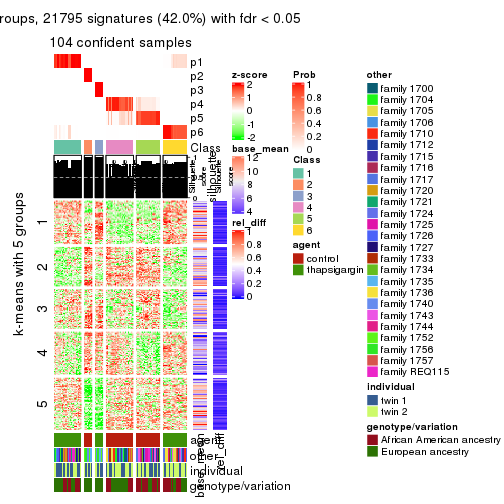
Signature heatmaps where rows are not scaled:
get_signatures(res, k = 2, scale_rows = FALSE)
get_signatures(res, k = 3, scale_rows = FALSE)
get_signatures(res, k = 4, scale_rows = FALSE)
get_signatures(res, k = 5, scale_rows = FALSE)
get_signatures(res, k = 6, scale_rows = FALSE)
Compare the overlap of signatures from different k:
compare_signatures(res)
get_signature() returns a data frame invisibly. TO get the list of signatures, the function
call should be assigned to a variable explicitly. In following code, if plot argument is set
to FALSE, no heatmap is plotted while only the differential analysis is performed.
# code only for demonstration
tb = get_signature(res, k = ..., plot = FALSE)
An example of the output of tb is:
#> which_row fdr mean_1 mean_2 scaled_mean_1 scaled_mean_2 km
#> 1 38 0.042760348 8.373488 9.131774 -0.5533452 0.5164555 1
#> 2 40 0.018707592 7.106213 8.469186 -0.6173731 0.5762149 1
#> 3 55 0.019134737 10.221463 11.207825 -0.6159697 0.5749050 1
#> 4 59 0.006059896 5.921854 7.869574 -0.6899429 0.6439467 1
#> 5 60 0.018055526 8.928898 10.211722 -0.6204761 0.5791110 1
#> 6 98 0.009384629 15.714769 14.887706 0.6635654 -0.6193277 2
...
The columns in tb are:
which_row: row indices corresponding to the input matrix.fdr: FDR for the differential test. mean_x: The mean value in group x.scaled_mean_x: The mean value in group x after rows are scaled.km: Row groups if k-means clustering is applied to rows.UMAP plot which shows how samples are separated.
dimension_reduction(res, k = 2, method = "UMAP")
dimension_reduction(res, k = 3, method = "UMAP")
dimension_reduction(res, k = 4, method = "UMAP")

dimension_reduction(res, k = 5, method = "UMAP")
dimension_reduction(res, k = 6, method = "UMAP")

Following heatmap shows how subgroups are split when increasing k:
collect_classes(res)
Test correlation between subgroups and known annotations. If the known annotation is numeric, one-way ANOVA test is applied, and if the known annotation is discrete, chi-squared contingency table test is applied.
test_to_known_factors(res)
#> n agent(p) other(p) individual(p) genotype/variation(p) k
#> ATC:hclust 104 1.00e+00 3.67e-10 0.774 0.000591 2
#> ATC:hclust 104 2.86e-20 1.15e-04 0.848 0.000975 3
#> ATC:hclust 104 2.14e-22 5.60e-02 0.954 0.003092 4
#> ATC:hclust 104 1.38e-21 5.19e-03 0.844 0.000767 5
#> ATC:hclust 104 7.58e-21 1.45e-03 0.390 0.001137 6
If matrix rows can be associated to genes, consider to use functional_enrichment(res,
...) to perform function enrichment for the signature genes. See this vignette for more detailed explanations.
The object with results only for a single top-value method and a single partition method can be extracted as:
res = res_list["ATC", "kmeans"]
# you can also extract it by
# res = res_list["ATC:kmeans"]
A summary of res and all the functions that can be applied to it:
res
#> A 'ConsensusPartition' object with k = 2, 3, 4, 5, 6.
#> On a matrix with 51941 rows and 104 columns.
#> Top rows (1000, 2000, 3000, 4000, 5000) are extracted by 'ATC' method.
#> Subgroups are detected by 'kmeans' method.
#> Performed in total 1250 partitions by row resampling.
#> Best k for subgroups seems to be 3.
#>
#> Following methods can be applied to this 'ConsensusPartition' object:
#> [1] "cola_report" "collect_classes" "collect_plots"
#> [4] "collect_stats" "colnames" "compare_signatures"
#> [7] "consensus_heatmap" "dimension_reduction" "functional_enrichment"
#> [10] "get_anno_col" "get_anno" "get_classes"
#> [13] "get_consensus" "get_matrix" "get_membership"
#> [16] "get_param" "get_signatures" "get_stats"
#> [19] "is_best_k" "is_stable_k" "membership_heatmap"
#> [22] "ncol" "nrow" "plot_ecdf"
#> [25] "rownames" "select_partition_number" "show"
#> [28] "suggest_best_k" "test_to_known_factors"
collect_plots() function collects all the plots made from res for all k (number of partitions)
into one single page to provide an easy and fast comparison between different k.
collect_plots(res)
The plots are:
k and the heatmap of
predicted classes for each k.k.k.k.All the plots in panels can be made by individual functions and they are plotted later in this section.
select_partition_number() produces several plots showing different
statistics for choosing “optimized” k. There are following statistics:
k;k, the area increased is defined as \(A_k - A_{k-1}\).The detailed explanations of these statistics can be found in the cola vignette.
Generally speaking, lower PAC score, higher mean silhouette score or higher
concordance corresponds to better partition. Rand index and Jaccard index
measure how similar the current partition is compared to partition with k-1.
If they are too similar, we won't accept k is better than k-1.
select_partition_number(res)
The numeric values for all these statistics can be obtained by get_stats().
get_stats(res)
#> k 1-PAC mean_silhouette concordance area_increased Rand Jaccard
#> 2 2 0.478 0.915 0.883 0.4479 0.495 0.495
#> 3 3 1.000 0.999 0.995 0.3646 0.873 0.749
#> 4 4 0.790 0.827 0.828 0.1226 1.000 1.000
#> 5 5 0.738 0.714 0.708 0.0824 0.906 0.757
#> 6 6 0.688 0.753 0.755 0.0595 0.898 0.655
suggest_best_k() suggests the best \(k\) based on these statistics. The rules are as follows:
suggest_best_k(res)
#> [1] 3
Following shows the table of the partitions (You need to click the show/hide
code output link to see it). The membership matrix (columns with name p*)
is inferred by
clue::cl_consensus()
function with the SE method. Basically the value in the membership matrix
represents the probability to belong to a certain group. The finall class
label for an item is determined with the group with highest probability it
belongs to.
In get_classes() function, the entropy is calculated from the membership
matrix and the silhouette score is calculated from the consensus matrix.
cbind(get_classes(res, k = 2), get_membership(res, k = 2))
#> class entropy silhouette p1 p2
#> GSM494452 2 0.000 0.947 0.000 1.000
#> GSM494454 2 0.000 0.947 0.000 1.000
#> GSM494456 2 0.000 0.947 0.000 1.000
#> GSM494458 2 0.000 0.947 0.000 1.000
#> GSM494460 2 0.000 0.947 0.000 1.000
#> GSM494462 2 0.000 0.947 0.000 1.000
#> GSM494464 2 0.000 0.947 0.000 1.000
#> GSM494466 2 0.000 0.947 0.000 1.000
#> GSM494468 2 0.000 0.947 0.000 1.000
#> GSM494470 2 0.000 0.947 0.000 1.000
#> GSM494472 2 0.000 0.947 0.000 1.000
#> GSM494474 2 0.000 0.947 0.000 1.000
#> GSM494476 2 0.000 0.947 0.000 1.000
#> GSM494478 2 0.000 0.947 0.000 1.000
#> GSM494480 2 0.000 0.947 0.000 1.000
#> GSM494482 2 0.000 0.947 0.000 1.000
#> GSM494484 2 0.000 0.947 0.000 1.000
#> GSM494486 2 0.000 0.947 0.000 1.000
#> GSM494488 2 0.000 0.947 0.000 1.000
#> GSM494490 2 0.000 0.947 0.000 1.000
#> GSM494492 2 0.000 0.947 0.000 1.000
#> GSM494494 2 0.000 0.947 0.000 1.000
#> GSM494496 2 0.000 0.947 0.000 1.000
#> GSM494498 2 0.000 0.947 0.000 1.000
#> GSM494500 2 0.000 0.947 0.000 1.000
#> GSM494502 2 0.000 0.947 0.000 1.000
#> GSM494504 2 0.000 0.947 0.000 1.000
#> GSM494506 2 0.000 0.947 0.000 1.000
#> GSM494508 2 0.000 0.947 0.000 1.000
#> GSM494510 2 0.000 0.947 0.000 1.000
#> GSM494512 2 0.000 0.947 0.000 1.000
#> GSM494514 2 0.000 0.947 0.000 1.000
#> GSM494516 2 0.000 0.947 0.000 1.000
#> GSM494518 2 0.000 0.947 0.000 1.000
#> GSM494520 2 0.000 0.947 0.000 1.000
#> GSM494522 2 0.000 0.947 0.000 1.000
#> GSM494524 2 0.000 0.947 0.000 1.000
#> GSM494526 2 0.000 0.947 0.000 1.000
#> GSM494528 2 0.000 0.947 0.000 1.000
#> GSM494530 2 0.000 0.947 0.000 1.000
#> GSM494532 2 0.000 0.947 0.000 1.000
#> GSM494534 2 0.000 0.947 0.000 1.000
#> GSM494536 2 0.936 0.635 0.352 0.648
#> GSM494538 2 0.983 0.536 0.424 0.576
#> GSM494540 2 0.983 0.536 0.424 0.576
#> GSM494542 2 0.983 0.536 0.424 0.576
#> GSM494544 2 0.983 0.536 0.424 0.576
#> GSM494546 2 0.983 0.536 0.424 0.576
#> GSM494548 2 0.936 0.635 0.352 0.648
#> GSM494550 2 0.000 0.947 0.000 1.000
#> GSM494552 2 0.000 0.947 0.000 1.000
#> GSM494554 2 0.000 0.947 0.000 1.000
#> GSM494453 1 0.738 0.962 0.792 0.208
#> GSM494455 1 0.738 0.962 0.792 0.208
#> GSM494457 1 0.738 0.962 0.792 0.208
#> GSM494459 1 0.738 0.962 0.792 0.208
#> GSM494461 1 0.738 0.962 0.792 0.208
#> GSM494463 1 0.738 0.962 0.792 0.208
#> GSM494465 1 0.738 0.962 0.792 0.208
#> GSM494467 1 0.738 0.962 0.792 0.208
#> GSM494469 1 0.738 0.962 0.792 0.208
#> GSM494471 1 0.738 0.962 0.792 0.208
#> GSM494473 1 0.738 0.962 0.792 0.208
#> GSM494475 1 0.738 0.962 0.792 0.208
#> GSM494477 1 0.738 0.962 0.792 0.208
#> GSM494479 1 0.738 0.962 0.792 0.208
#> GSM494481 1 0.738 0.962 0.792 0.208
#> GSM494483 1 0.738 0.962 0.792 0.208
#> GSM494485 1 0.738 0.962 0.792 0.208
#> GSM494487 1 0.738 0.962 0.792 0.208
#> GSM494489 1 0.738 0.962 0.792 0.208
#> GSM494491 1 0.738 0.962 0.792 0.208
#> GSM494493 1 0.738 0.962 0.792 0.208
#> GSM494495 1 0.738 0.962 0.792 0.208
#> GSM494497 1 0.738 0.962 0.792 0.208
#> GSM494499 1 0.738 0.962 0.792 0.208
#> GSM494501 1 0.738 0.962 0.792 0.208
#> GSM494503 1 0.738 0.962 0.792 0.208
#> GSM494505 1 0.738 0.962 0.792 0.208
#> GSM494507 1 0.738 0.962 0.792 0.208
#> GSM494509 1 0.738 0.962 0.792 0.208
#> GSM494511 1 0.738 0.962 0.792 0.208
#> GSM494513 1 0.738 0.962 0.792 0.208
#> GSM494515 1 0.738 0.962 0.792 0.208
#> GSM494517 1 0.738 0.962 0.792 0.208
#> GSM494519 1 0.738 0.962 0.792 0.208
#> GSM494521 1 0.738 0.962 0.792 0.208
#> GSM494523 1 0.738 0.962 0.792 0.208
#> GSM494525 1 0.738 0.962 0.792 0.208
#> GSM494527 1 0.738 0.962 0.792 0.208
#> GSM494529 1 0.738 0.962 0.792 0.208
#> GSM494531 1 0.738 0.962 0.792 0.208
#> GSM494533 1 0.738 0.962 0.792 0.208
#> GSM494535 1 0.738 0.962 0.792 0.208
#> GSM494537 1 0.000 0.764 1.000 0.000
#> GSM494539 1 0.000 0.764 1.000 0.000
#> GSM494541 1 0.000 0.764 1.000 0.000
#> GSM494543 1 0.000 0.764 1.000 0.000
#> GSM494545 1 0.000 0.764 1.000 0.000
#> GSM494547 1 0.000 0.764 1.000 0.000
#> GSM494549 1 0.000 0.764 1.000 0.000
#> GSM494551 1 0.738 0.962 0.792 0.208
#> GSM494553 1 0.738 0.962 0.792 0.208
#> GSM494555 1 0.738 0.962 0.792 0.208
cbind(get_classes(res, k = 3), get_membership(res, k = 3))
#> class entropy silhouette p1 p2 p3
#> GSM494452 2 0.0237 0.998 0.000 0.996 0.004
#> GSM494454 2 0.0237 0.998 0.000 0.996 0.004
#> GSM494456 2 0.0237 0.998 0.000 0.996 0.004
#> GSM494458 2 0.0237 0.998 0.000 0.996 0.004
#> GSM494460 2 0.0000 0.998 0.000 1.000 0.000
#> GSM494462 2 0.0000 0.998 0.000 1.000 0.000
#> GSM494464 2 0.0237 0.998 0.000 0.996 0.004
#> GSM494466 2 0.0000 0.998 0.000 1.000 0.000
#> GSM494468 2 0.0237 0.998 0.000 0.996 0.004
#> GSM494470 2 0.0237 0.998 0.000 0.996 0.004
#> GSM494472 2 0.0237 0.998 0.000 0.996 0.004
#> GSM494474 2 0.0237 0.998 0.000 0.996 0.004
#> GSM494476 2 0.0000 0.998 0.000 1.000 0.000
#> GSM494478 2 0.0000 0.998 0.000 1.000 0.000
#> GSM494480 2 0.0237 0.998 0.000 0.996 0.004
#> GSM494482 2 0.0237 0.998 0.000 0.996 0.004
#> GSM494484 2 0.0000 0.998 0.000 1.000 0.000
#> GSM494486 2 0.0000 0.998 0.000 1.000 0.000
#> GSM494488 2 0.0237 0.998 0.000 0.996 0.004
#> GSM494490 2 0.0237 0.998 0.000 0.996 0.004
#> GSM494492 2 0.0237 0.998 0.000 0.996 0.004
#> GSM494494 2 0.0237 0.998 0.000 0.996 0.004
#> GSM494496 2 0.0000 0.998 0.000 1.000 0.000
#> GSM494498 2 0.0000 0.998 0.000 1.000 0.000
#> GSM494500 2 0.0000 0.998 0.000 1.000 0.000
#> GSM494502 2 0.0000 0.998 0.000 1.000 0.000
#> GSM494504 2 0.0000 0.998 0.000 1.000 0.000
#> GSM494506 2 0.0000 0.998 0.000 1.000 0.000
#> GSM494508 2 0.0000 0.998 0.000 1.000 0.000
#> GSM494510 2 0.0000 0.998 0.000 1.000 0.000
#> GSM494512 2 0.0000 0.998 0.000 1.000 0.000
#> GSM494514 2 0.0000 0.998 0.000 1.000 0.000
#> GSM494516 2 0.0000 0.998 0.000 1.000 0.000
#> GSM494518 2 0.0000 0.998 0.000 1.000 0.000
#> GSM494520 2 0.0000 0.998 0.000 1.000 0.000
#> GSM494522 2 0.0000 0.998 0.000 1.000 0.000
#> GSM494524 2 0.0237 0.998 0.000 0.996 0.004
#> GSM494526 2 0.0237 0.998 0.000 0.996 0.004
#> GSM494528 2 0.0237 0.998 0.000 0.996 0.004
#> GSM494530 2 0.0000 0.998 0.000 1.000 0.000
#> GSM494532 2 0.0237 0.998 0.000 0.996 0.004
#> GSM494534 2 0.0000 0.998 0.000 1.000 0.000
#> GSM494536 3 0.0237 0.998 0.004 0.000 0.996
#> GSM494538 3 0.0237 0.998 0.004 0.000 0.996
#> GSM494540 3 0.0237 0.998 0.004 0.000 0.996
#> GSM494542 3 0.0237 0.998 0.004 0.000 0.996
#> GSM494544 3 0.0237 0.998 0.004 0.000 0.996
#> GSM494546 3 0.0237 0.998 0.004 0.000 0.996
#> GSM494548 3 0.0237 0.998 0.004 0.000 0.996
#> GSM494550 2 0.0000 0.998 0.000 1.000 0.000
#> GSM494552 2 0.0237 0.998 0.000 0.996 0.004
#> GSM494554 2 0.0237 0.998 0.000 0.996 0.004
#> GSM494453 1 0.0424 1.000 0.992 0.008 0.000
#> GSM494455 1 0.0424 1.000 0.992 0.008 0.000
#> GSM494457 1 0.0424 1.000 0.992 0.008 0.000
#> GSM494459 1 0.0424 1.000 0.992 0.008 0.000
#> GSM494461 1 0.0424 1.000 0.992 0.008 0.000
#> GSM494463 1 0.0424 1.000 0.992 0.008 0.000
#> GSM494465 1 0.0424 1.000 0.992 0.008 0.000
#> GSM494467 1 0.0424 1.000 0.992 0.008 0.000
#> GSM494469 1 0.0424 1.000 0.992 0.008 0.000
#> GSM494471 1 0.0424 1.000 0.992 0.008 0.000
#> GSM494473 1 0.0424 1.000 0.992 0.008 0.000
#> GSM494475 1 0.0424 1.000 0.992 0.008 0.000
#> GSM494477 1 0.0424 1.000 0.992 0.008 0.000
#> GSM494479 1 0.0424 1.000 0.992 0.008 0.000
#> GSM494481 1 0.0424 1.000 0.992 0.008 0.000
#> GSM494483 1 0.0424 1.000 0.992 0.008 0.000
#> GSM494485 1 0.0424 1.000 0.992 0.008 0.000
#> GSM494487 1 0.0424 1.000 0.992 0.008 0.000
#> GSM494489 1 0.0424 1.000 0.992 0.008 0.000
#> GSM494491 1 0.0424 1.000 0.992 0.008 0.000
#> GSM494493 1 0.0424 1.000 0.992 0.008 0.000
#> GSM494495 1 0.0424 1.000 0.992 0.008 0.000
#> GSM494497 1 0.0424 1.000 0.992 0.008 0.000
#> GSM494499 1 0.0424 1.000 0.992 0.008 0.000
#> GSM494501 1 0.0424 1.000 0.992 0.008 0.000
#> GSM494503 1 0.0424 1.000 0.992 0.008 0.000
#> GSM494505 1 0.0424 1.000 0.992 0.008 0.000
#> GSM494507 1 0.0424 1.000 0.992 0.008 0.000
#> GSM494509 1 0.0424 1.000 0.992 0.008 0.000
#> GSM494511 1 0.0424 1.000 0.992 0.008 0.000
#> GSM494513 1 0.0424 1.000 0.992 0.008 0.000
#> GSM494515 1 0.0424 1.000 0.992 0.008 0.000
#> GSM494517 1 0.0424 1.000 0.992 0.008 0.000
#> GSM494519 1 0.0424 1.000 0.992 0.008 0.000
#> GSM494521 1 0.0424 1.000 0.992 0.008 0.000
#> GSM494523 1 0.0424 1.000 0.992 0.008 0.000
#> GSM494525 1 0.0424 1.000 0.992 0.008 0.000
#> GSM494527 1 0.0424 1.000 0.992 0.008 0.000
#> GSM494529 1 0.0424 1.000 0.992 0.008 0.000
#> GSM494531 1 0.0424 1.000 0.992 0.008 0.000
#> GSM494533 1 0.0424 1.000 0.992 0.008 0.000
#> GSM494535 1 0.0424 1.000 0.992 0.008 0.000
#> GSM494537 3 0.0592 0.998 0.012 0.000 0.988
#> GSM494539 3 0.0592 0.998 0.012 0.000 0.988
#> GSM494541 3 0.0592 0.998 0.012 0.000 0.988
#> GSM494543 3 0.0592 0.998 0.012 0.000 0.988
#> GSM494545 3 0.0592 0.998 0.012 0.000 0.988
#> GSM494547 3 0.0592 0.998 0.012 0.000 0.988
#> GSM494549 3 0.0592 0.998 0.012 0.000 0.988
#> GSM494551 1 0.0000 0.990 1.000 0.000 0.000
#> GSM494553 1 0.0424 1.000 0.992 0.008 0.000
#> GSM494555 1 0.0424 1.000 0.992 0.008 0.000
cbind(get_classes(res, k = 4), get_membership(res, k = 4))
#> class entropy silhouette p1 p2 p3 p4
#> GSM494452 2 0.4585 0.807 0.000 0.668 0.000 0.332
#> GSM494454 2 0.4564 0.808 0.000 0.672 0.000 0.328
#> GSM494456 2 0.4564 0.808 0.000 0.672 0.000 0.328
#> GSM494458 2 0.4776 0.792 0.000 0.624 0.000 0.376
#> GSM494460 2 0.0188 0.828 0.000 0.996 0.000 0.004
#> GSM494462 2 0.0188 0.828 0.000 0.996 0.000 0.004
#> GSM494464 2 0.4564 0.808 0.000 0.672 0.000 0.328
#> GSM494466 2 0.1389 0.814 0.000 0.952 0.000 0.048
#> GSM494468 2 0.4564 0.808 0.000 0.672 0.000 0.328
#> GSM494470 2 0.4564 0.808 0.000 0.672 0.000 0.328
#> GSM494472 2 0.4585 0.807 0.000 0.668 0.000 0.332
#> GSM494474 2 0.4564 0.808 0.000 0.672 0.000 0.328
#> GSM494476 2 0.1389 0.814 0.000 0.952 0.000 0.048
#> GSM494478 2 0.0188 0.828 0.000 0.996 0.000 0.004
#> GSM494480 2 0.4585 0.807 0.000 0.668 0.000 0.332
#> GSM494482 2 0.4564 0.808 0.000 0.672 0.000 0.328
#> GSM494484 2 0.1389 0.814 0.000 0.952 0.000 0.048
#> GSM494486 2 0.1389 0.814 0.000 0.952 0.000 0.048
#> GSM494488 2 0.4564 0.808 0.000 0.672 0.000 0.328
#> GSM494490 2 0.4564 0.808 0.000 0.672 0.000 0.328
#> GSM494492 2 0.4564 0.808 0.000 0.672 0.000 0.328
#> GSM494494 2 0.4564 0.808 0.000 0.672 0.000 0.328
#> GSM494496 2 0.0188 0.828 0.000 0.996 0.000 0.004
#> GSM494498 2 0.1474 0.812 0.000 0.948 0.000 0.052
#> GSM494500 2 0.0000 0.828 0.000 1.000 0.000 0.000
#> GSM494502 2 0.0188 0.828 0.000 0.996 0.000 0.004
#> GSM494504 2 0.0000 0.828 0.000 1.000 0.000 0.000
#> GSM494506 2 0.1389 0.814 0.000 0.952 0.000 0.048
#> GSM494508 2 0.0000 0.828 0.000 1.000 0.000 0.000
#> GSM494510 2 0.1389 0.814 0.000 0.952 0.000 0.048
#> GSM494512 2 0.0000 0.828 0.000 1.000 0.000 0.000
#> GSM494514 2 0.0000 0.828 0.000 1.000 0.000 0.000
#> GSM494516 2 0.1389 0.814 0.000 0.952 0.000 0.048
#> GSM494518 2 0.1389 0.814 0.000 0.952 0.000 0.048
#> GSM494520 2 0.0000 0.828 0.000 1.000 0.000 0.000
#> GSM494522 2 0.1389 0.814 0.000 0.952 0.000 0.048
#> GSM494524 2 0.4564 0.808 0.000 0.672 0.000 0.328
#> GSM494526 2 0.4585 0.807 0.000 0.668 0.000 0.332
#> GSM494528 2 0.4564 0.808 0.000 0.672 0.000 0.328
#> GSM494530 2 0.0000 0.828 0.000 1.000 0.000 0.000
#> GSM494532 2 0.4564 0.808 0.000 0.672 0.000 0.328
#> GSM494534 2 0.0188 0.828 0.000 0.996 0.000 0.004
#> GSM494536 3 0.3907 0.928 0.000 0.000 0.768 0.232
#> GSM494538 3 0.3907 0.928 0.000 0.000 0.768 0.232
#> GSM494540 3 0.3907 0.928 0.000 0.000 0.768 0.232
#> GSM494542 3 0.3907 0.928 0.000 0.000 0.768 0.232
#> GSM494544 3 0.3907 0.928 0.000 0.000 0.768 0.232
#> GSM494546 3 0.3907 0.928 0.000 0.000 0.768 0.232
#> GSM494548 3 0.3907 0.928 0.000 0.000 0.768 0.232
#> GSM494550 2 0.1389 0.814 0.000 0.952 0.000 0.048
#> GSM494552 2 0.4564 0.808 0.000 0.672 0.000 0.328
#> GSM494554 2 0.4564 0.808 0.000 0.672 0.000 0.328
#> GSM494453 1 0.0000 0.832 1.000 0.000 0.000 0.000
#> GSM494455 1 0.4817 0.776 0.612 0.000 0.000 0.388
#> GSM494457 1 0.4817 0.776 0.612 0.000 0.000 0.388
#> GSM494459 1 0.4817 0.776 0.612 0.000 0.000 0.388
#> GSM494461 1 0.2868 0.825 0.864 0.000 0.000 0.136
#> GSM494463 1 0.0000 0.832 1.000 0.000 0.000 0.000
#> GSM494465 1 0.0000 0.832 1.000 0.000 0.000 0.000
#> GSM494467 1 0.4817 0.776 0.612 0.000 0.000 0.388
#> GSM494469 1 0.0000 0.832 1.000 0.000 0.000 0.000
#> GSM494471 1 0.0000 0.832 1.000 0.000 0.000 0.000
#> GSM494473 1 0.0000 0.832 1.000 0.000 0.000 0.000
#> GSM494475 1 0.0000 0.832 1.000 0.000 0.000 0.000
#> GSM494477 1 0.4817 0.776 0.612 0.000 0.000 0.388
#> GSM494479 1 0.4817 0.776 0.612 0.000 0.000 0.388
#> GSM494481 1 0.0000 0.832 1.000 0.000 0.000 0.000
#> GSM494483 1 0.0000 0.832 1.000 0.000 0.000 0.000
#> GSM494485 1 0.4817 0.776 0.612 0.000 0.000 0.388
#> GSM494487 1 0.4817 0.776 0.612 0.000 0.000 0.388
#> GSM494489 1 0.4817 0.776 0.612 0.000 0.000 0.388
#> GSM494491 1 0.4817 0.776 0.612 0.000 0.000 0.388
#> GSM494493 1 0.4817 0.776 0.612 0.000 0.000 0.388
#> GSM494495 1 0.4817 0.776 0.612 0.000 0.000 0.388
#> GSM494497 1 0.2868 0.825 0.864 0.000 0.000 0.136
#> GSM494499 1 0.1557 0.831 0.944 0.000 0.000 0.056
#> GSM494501 1 0.0000 0.832 1.000 0.000 0.000 0.000
#> GSM494503 1 0.0000 0.832 1.000 0.000 0.000 0.000
#> GSM494505 1 0.0000 0.832 1.000 0.000 0.000 0.000
#> GSM494507 1 0.0000 0.832 1.000 0.000 0.000 0.000
#> GSM494509 1 0.1557 0.831 0.944 0.000 0.000 0.056
#> GSM494511 1 0.4817 0.776 0.612 0.000 0.000 0.388
#> GSM494513 1 0.3311 0.819 0.828 0.000 0.000 0.172
#> GSM494515 1 0.4817 0.776 0.612 0.000 0.000 0.388
#> GSM494517 1 0.4817 0.776 0.612 0.000 0.000 0.388
#> GSM494519 1 0.4817 0.776 0.612 0.000 0.000 0.388
#> GSM494521 1 0.0000 0.832 1.000 0.000 0.000 0.000
#> GSM494523 1 0.4817 0.776 0.612 0.000 0.000 0.388
#> GSM494525 1 0.0000 0.832 1.000 0.000 0.000 0.000
#> GSM494527 1 0.0000 0.832 1.000 0.000 0.000 0.000
#> GSM494529 1 0.0000 0.832 1.000 0.000 0.000 0.000
#> GSM494531 1 0.0000 0.832 1.000 0.000 0.000 0.000
#> GSM494533 1 0.0000 0.832 1.000 0.000 0.000 0.000
#> GSM494535 1 0.2868 0.825 0.864 0.000 0.000 0.136
#> GSM494537 3 0.0000 0.928 0.000 0.000 1.000 0.000
#> GSM494539 3 0.0000 0.928 0.000 0.000 1.000 0.000
#> GSM494541 3 0.0000 0.928 0.000 0.000 1.000 0.000
#> GSM494543 3 0.0000 0.928 0.000 0.000 1.000 0.000
#> GSM494545 3 0.0000 0.928 0.000 0.000 1.000 0.000
#> GSM494547 3 0.0000 0.928 0.000 0.000 1.000 0.000
#> GSM494549 3 0.0000 0.928 0.000 0.000 1.000 0.000
#> GSM494551 1 0.4817 0.776 0.612 0.000 0.000 0.388
#> GSM494553 1 0.0000 0.832 1.000 0.000 0.000 0.000
#> GSM494555 1 0.0000 0.832 1.000 0.000 0.000 0.000
cbind(get_classes(res, k = 5), get_membership(res, k = 5))
#> class entropy silhouette p1 p2 p3 p4 p5
#> GSM494452 4 0.6574 0.6688 0.288 0.000 0.000 0.468 NA
#> GSM494454 4 0.6554 0.6691 0.312 0.000 0.000 0.464 NA
#> GSM494456 4 0.6554 0.6636 0.224 0.000 0.000 0.464 NA
#> GSM494458 4 0.6655 0.6366 0.228 0.000 0.000 0.404 NA
#> GSM494460 4 0.0404 0.7053 0.000 0.000 0.000 0.988 NA
#> GSM494462 4 0.1121 0.7038 0.000 0.000 0.000 0.956 NA
#> GSM494464 4 0.6511 0.6689 0.336 0.000 0.000 0.460 NA
#> GSM494466 4 0.3132 0.6703 0.008 0.000 0.000 0.820 NA
#> GSM494468 4 0.6511 0.6689 0.336 0.000 0.000 0.460 NA
#> GSM494470 4 0.6511 0.6689 0.336 0.000 0.000 0.460 NA
#> GSM494472 4 0.6574 0.6688 0.288 0.000 0.000 0.468 NA
#> GSM494474 4 0.6511 0.6689 0.336 0.000 0.000 0.460 NA
#> GSM494476 4 0.3242 0.6703 0.012 0.000 0.000 0.816 NA
#> GSM494478 4 0.1270 0.7034 0.000 0.000 0.000 0.948 NA
#> GSM494480 4 0.6574 0.6688 0.288 0.000 0.000 0.468 NA
#> GSM494482 4 0.6511 0.6689 0.336 0.000 0.000 0.460 NA
#> GSM494484 4 0.3010 0.6698 0.004 0.000 0.000 0.824 NA
#> GSM494486 4 0.3010 0.6698 0.004 0.000 0.000 0.824 NA
#> GSM494488 4 0.6554 0.6691 0.312 0.000 0.000 0.464 NA
#> GSM494490 4 0.6511 0.6689 0.336 0.000 0.000 0.460 NA
#> GSM494492 4 0.6544 0.6647 0.224 0.000 0.000 0.468 NA
#> GSM494494 4 0.6612 0.6655 0.272 0.000 0.000 0.460 NA
#> GSM494496 4 0.0404 0.7053 0.000 0.000 0.000 0.988 NA
#> GSM494498 4 0.1768 0.6830 0.004 0.000 0.000 0.924 NA
#> GSM494500 4 0.0162 0.7064 0.000 0.000 0.000 0.996 NA
#> GSM494502 4 0.0404 0.7053 0.000 0.000 0.000 0.988 NA
#> GSM494504 4 0.0000 0.7057 0.000 0.000 0.000 1.000 NA
#> GSM494506 4 0.1638 0.6826 0.004 0.000 0.000 0.932 NA
#> GSM494508 4 0.0000 0.7057 0.000 0.000 0.000 1.000 NA
#> GSM494510 4 0.1638 0.6826 0.004 0.000 0.000 0.932 NA
#> GSM494512 4 0.0162 0.7058 0.000 0.000 0.000 0.996 NA
#> GSM494514 4 0.0000 0.7057 0.000 0.000 0.000 1.000 NA
#> GSM494516 4 0.1638 0.6826 0.004 0.000 0.000 0.932 NA
#> GSM494518 4 0.1638 0.6826 0.004 0.000 0.000 0.932 NA
#> GSM494520 4 0.0162 0.7058 0.000 0.000 0.000 0.996 NA
#> GSM494522 4 0.1638 0.6826 0.004 0.000 0.000 0.932 NA
#> GSM494524 4 0.6511 0.6689 0.336 0.000 0.000 0.460 NA
#> GSM494526 4 0.6574 0.6688 0.288 0.000 0.000 0.468 NA
#> GSM494528 4 0.6523 0.6689 0.332 0.000 0.000 0.460 NA
#> GSM494530 4 0.0000 0.7057 0.000 0.000 0.000 1.000 NA
#> GSM494532 4 0.6523 0.6689 0.332 0.000 0.000 0.460 NA
#> GSM494534 4 0.0404 0.7053 0.000 0.000 0.000 0.988 NA
#> GSM494536 3 0.4045 0.8710 0.000 0.000 0.644 0.000 NA
#> GSM494538 3 0.4045 0.8710 0.000 0.000 0.644 0.000 NA
#> GSM494540 3 0.4045 0.8710 0.000 0.000 0.644 0.000 NA
#> GSM494542 3 0.4045 0.8710 0.000 0.000 0.644 0.000 NA
#> GSM494544 3 0.4045 0.8710 0.000 0.000 0.644 0.000 NA
#> GSM494546 3 0.4045 0.8710 0.000 0.000 0.644 0.000 NA
#> GSM494548 3 0.4045 0.8710 0.000 0.000 0.644 0.000 NA
#> GSM494550 4 0.2930 0.6713 0.004 0.000 0.000 0.832 NA
#> GSM494552 4 0.6523 0.6689 0.332 0.000 0.000 0.460 NA
#> GSM494554 4 0.6511 0.6689 0.336 0.000 0.000 0.460 NA
#> GSM494453 1 0.4570 0.8921 0.632 0.348 0.000 0.000 NA
#> GSM494455 2 0.2130 0.7116 0.080 0.908 0.000 0.000 NA
#> GSM494457 2 0.1851 0.7733 0.000 0.912 0.000 0.000 NA
#> GSM494459 2 0.1908 0.7714 0.000 0.908 0.000 0.000 NA
#> GSM494461 2 0.4268 -0.0144 0.344 0.648 0.000 0.000 NA
#> GSM494463 1 0.4599 0.8887 0.624 0.356 0.000 0.000 NA
#> GSM494465 1 0.5781 0.8880 0.552 0.344 0.000 0.000 NA
#> GSM494467 2 0.1851 0.7733 0.000 0.912 0.000 0.000 NA
#> GSM494469 1 0.5781 0.8880 0.552 0.344 0.000 0.000 NA
#> GSM494471 1 0.5781 0.8880 0.552 0.344 0.000 0.000 NA
#> GSM494473 1 0.4599 0.8887 0.624 0.356 0.000 0.000 NA
#> GSM494475 1 0.4570 0.8921 0.632 0.348 0.000 0.000 NA
#> GSM494477 2 0.1851 0.7733 0.000 0.912 0.000 0.000 NA
#> GSM494479 2 0.0404 0.7793 0.000 0.988 0.000 0.000 NA
#> GSM494481 1 0.4599 0.8887 0.624 0.356 0.000 0.000 NA
#> GSM494483 1 0.4570 0.8921 0.632 0.348 0.000 0.000 NA
#> GSM494485 2 0.1851 0.7733 0.000 0.912 0.000 0.000 NA
#> GSM494487 2 0.1851 0.7733 0.000 0.912 0.000 0.000 NA
#> GSM494489 2 0.1197 0.7796 0.000 0.952 0.000 0.000 NA
#> GSM494491 2 0.1043 0.7800 0.000 0.960 0.000 0.000 NA
#> GSM494493 2 0.0404 0.7793 0.000 0.988 0.000 0.000 NA
#> GSM494495 2 0.1908 0.7714 0.000 0.908 0.000 0.000 NA
#> GSM494497 2 0.4268 -0.0144 0.344 0.648 0.000 0.000 NA
#> GSM494499 2 0.4504 -0.4244 0.428 0.564 0.000 0.000 NA
#> GSM494501 1 0.4654 0.8988 0.628 0.348 0.000 0.000 NA
#> GSM494503 1 0.4709 0.8812 0.612 0.364 0.000 0.000 NA
#> GSM494505 1 0.4848 0.8206 0.556 0.420 0.000 0.000 NA
#> GSM494507 1 0.5611 0.8432 0.516 0.408 0.000 0.000 NA
#> GSM494509 2 0.5386 -0.5080 0.396 0.544 0.000 0.000 NA
#> GSM494511 2 0.0000 0.7768 0.000 1.000 0.000 0.000 NA
#> GSM494513 2 0.4995 0.0511 0.264 0.668 0.000 0.000 NA
#> GSM494515 2 0.0566 0.7716 0.012 0.984 0.000 0.000 NA
#> GSM494517 2 0.0566 0.7716 0.012 0.984 0.000 0.000 NA
#> GSM494519 2 0.0566 0.7716 0.012 0.984 0.000 0.000 NA
#> GSM494521 1 0.5616 0.8373 0.512 0.412 0.000 0.000 NA
#> GSM494523 2 0.0566 0.7716 0.012 0.984 0.000 0.000 NA
#> GSM494525 1 0.5696 0.8904 0.560 0.344 0.000 0.000 NA
#> GSM494527 1 0.4599 0.8887 0.624 0.356 0.000 0.000 NA
#> GSM494529 1 0.5739 0.8892 0.556 0.344 0.000 0.000 NA
#> GSM494531 1 0.5530 0.8862 0.556 0.368 0.000 0.000 NA
#> GSM494533 1 0.5739 0.8892 0.556 0.344 0.000 0.000 NA
#> GSM494535 2 0.4268 -0.0144 0.344 0.648 0.000 0.000 NA
#> GSM494537 3 0.0000 0.8705 0.000 0.000 1.000 0.000 NA
#> GSM494539 3 0.0000 0.8705 0.000 0.000 1.000 0.000 NA
#> GSM494541 3 0.0000 0.8705 0.000 0.000 1.000 0.000 NA
#> GSM494543 3 0.0162 0.8704 0.004 0.000 0.996 0.000 NA
#> GSM494545 3 0.0162 0.8704 0.004 0.000 0.996 0.000 NA
#> GSM494547 3 0.0162 0.8704 0.004 0.000 0.996 0.000 NA
#> GSM494549 3 0.0000 0.8705 0.000 0.000 1.000 0.000 NA
#> GSM494551 2 0.1851 0.7729 0.000 0.912 0.000 0.000 NA
#> GSM494553 1 0.5652 0.8909 0.564 0.344 0.000 0.000 NA
#> GSM494555 1 0.5652 0.8909 0.564 0.344 0.000 0.000 NA
cbind(get_classes(res, k = 6), get_membership(res, k = 6))
#> class entropy silhouette p1 p2 p3 p4 p5 p6
#> GSM494452 5 0.2535 0.8697 0.064 NA 0.000 0.012 0.888 0.000
#> GSM494454 5 0.1528 0.8938 0.048 NA 0.000 0.000 0.936 0.000
#> GSM494456 5 0.3857 0.7731 0.072 NA 0.000 0.004 0.776 0.000
#> GSM494458 5 0.5083 0.6506 0.068 NA 0.000 0.052 0.688 0.000
#> GSM494460 4 0.4583 0.8602 0.032 NA 0.000 0.660 0.288 0.000
#> GSM494462 4 0.5292 0.8344 0.052 NA 0.000 0.616 0.288 0.000
#> GSM494464 5 0.1003 0.9086 0.020 NA 0.000 0.000 0.964 0.000
#> GSM494466 4 0.6572 0.7232 0.064 NA 0.000 0.508 0.236 0.000
#> GSM494468 5 0.1003 0.9086 0.020 NA 0.000 0.000 0.964 0.000
#> GSM494470 5 0.1003 0.9086 0.020 NA 0.000 0.000 0.964 0.000
#> GSM494472 5 0.2535 0.8697 0.064 NA 0.000 0.012 0.888 0.000
#> GSM494474 5 0.1003 0.9086 0.020 NA 0.000 0.000 0.964 0.000
#> GSM494476 4 0.6510 0.7178 0.052 NA 0.000 0.504 0.236 0.000
#> GSM494478 4 0.5907 0.7769 0.088 NA 0.000 0.552 0.308 0.000
#> GSM494480 5 0.2535 0.8697 0.064 NA 0.000 0.012 0.888 0.000
#> GSM494482 5 0.1003 0.9086 0.020 NA 0.000 0.000 0.964 0.000
#> GSM494484 4 0.6572 0.7247 0.064 NA 0.000 0.508 0.236 0.000
#> GSM494486 4 0.6519 0.7227 0.056 NA 0.000 0.508 0.236 0.000
#> GSM494488 5 0.1528 0.8938 0.048 NA 0.000 0.000 0.936 0.000
#> GSM494490 5 0.1261 0.9061 0.024 NA 0.000 0.000 0.952 0.000
#> GSM494492 5 0.3875 0.7759 0.068 NA 0.000 0.008 0.780 0.000
#> GSM494494 5 0.3032 0.8319 0.056 NA 0.000 0.000 0.840 0.000
#> GSM494496 4 0.4583 0.8602 0.032 NA 0.000 0.660 0.288 0.000
#> GSM494498 4 0.4633 0.8606 0.032 NA 0.000 0.696 0.232 0.000
#> GSM494500 4 0.3894 0.8546 0.008 NA 0.000 0.664 0.324 0.000
#> GSM494502 4 0.4583 0.8602 0.032 NA 0.000 0.660 0.288 0.000
#> GSM494504 4 0.3710 0.8685 0.012 NA 0.000 0.696 0.292 0.000
#> GSM494506 4 0.4221 0.8571 0.016 NA 0.000 0.716 0.236 0.000
#> GSM494508 4 0.4177 0.8649 0.020 NA 0.000 0.668 0.304 0.000
#> GSM494510 4 0.4371 0.8563 0.020 NA 0.000 0.708 0.236 0.000
#> GSM494512 4 0.3848 0.8692 0.012 NA 0.000 0.692 0.292 0.000
#> GSM494514 4 0.3954 0.8669 0.012 NA 0.000 0.688 0.292 0.000
#> GSM494516 4 0.4221 0.8571 0.016 NA 0.000 0.716 0.236 0.000
#> GSM494518 4 0.4221 0.8571 0.016 NA 0.000 0.716 0.236 0.000
#> GSM494520 4 0.3848 0.8692 0.012 NA 0.000 0.692 0.292 0.000
#> GSM494522 4 0.4221 0.8571 0.016 NA 0.000 0.716 0.236 0.000
#> GSM494524 5 0.1003 0.9086 0.020 NA 0.000 0.000 0.964 0.000
#> GSM494526 5 0.2535 0.8697 0.064 NA 0.000 0.012 0.888 0.000
#> GSM494528 5 0.0000 0.9075 0.000 NA 0.000 0.000 1.000 0.000
#> GSM494530 4 0.3954 0.8669 0.012 NA 0.000 0.688 0.292 0.000
#> GSM494532 5 0.0146 0.9073 0.004 NA 0.000 0.000 0.996 0.000
#> GSM494534 4 0.4583 0.8602 0.032 NA 0.000 0.660 0.288 0.000
#> GSM494536 3 0.3966 0.8212 0.004 NA 0.552 0.000 0.000 0.000
#> GSM494538 3 0.3838 0.8212 0.000 NA 0.552 0.000 0.000 0.000
#> GSM494540 3 0.3838 0.8212 0.000 NA 0.552 0.000 0.000 0.000
#> GSM494542 3 0.4093 0.8211 0.004 NA 0.552 0.004 0.000 0.000
#> GSM494544 3 0.4093 0.8211 0.004 NA 0.552 0.004 0.000 0.000
#> GSM494546 3 0.4189 0.8210 0.004 NA 0.552 0.008 0.000 0.000
#> GSM494548 3 0.3966 0.8212 0.004 NA 0.552 0.000 0.000 0.000
#> GSM494550 4 0.6173 0.7600 0.048 NA 0.000 0.556 0.236 0.000
#> GSM494552 5 0.0000 0.9075 0.000 NA 0.000 0.000 1.000 0.000
#> GSM494554 5 0.1003 0.9086 0.020 NA 0.000 0.000 0.964 0.000
#> GSM494453 1 0.3152 0.7976 0.792 NA 0.000 0.004 0.000 0.196
#> GSM494455 6 0.3550 0.6008 0.156 NA 0.000 0.020 0.000 0.800
#> GSM494457 6 0.3138 0.7250 0.000 NA 0.000 0.108 0.000 0.832
#> GSM494459 6 0.3285 0.7207 0.000 NA 0.000 0.116 0.000 0.820
#> GSM494461 6 0.4835 -0.1362 0.420 NA 0.000 0.020 0.000 0.536
#> GSM494463 1 0.2793 0.7944 0.800 NA 0.000 0.000 0.000 0.200
#> GSM494465 1 0.6700 0.7658 0.512 NA 0.000 0.088 0.000 0.200
#> GSM494467 6 0.3123 0.7247 0.000 NA 0.000 0.112 0.000 0.832
#> GSM494469 1 0.6700 0.7658 0.512 NA 0.000 0.088 0.000 0.200
#> GSM494471 1 0.6700 0.7658 0.512 NA 0.000 0.088 0.000 0.200
#> GSM494473 1 0.2793 0.7944 0.800 NA 0.000 0.000 0.000 0.200
#> GSM494475 1 0.3043 0.7963 0.796 NA 0.000 0.004 0.000 0.196
#> GSM494477 6 0.3227 0.7224 0.000 NA 0.000 0.116 0.000 0.824
#> GSM494479 6 0.0622 0.7442 0.000 NA 0.000 0.008 0.000 0.980
#> GSM494481 1 0.2793 0.7944 0.800 NA 0.000 0.000 0.000 0.200
#> GSM494483 1 0.3043 0.7963 0.796 NA 0.000 0.004 0.000 0.196
#> GSM494485 6 0.3227 0.7224 0.000 NA 0.000 0.116 0.000 0.824
#> GSM494487 6 0.3227 0.7224 0.000 NA 0.000 0.116 0.000 0.824
#> GSM494489 6 0.1341 0.7441 0.000 NA 0.000 0.028 0.000 0.948
#> GSM494491 6 0.1320 0.7366 0.000 NA 0.000 0.016 0.000 0.948
#> GSM494493 6 0.0622 0.7442 0.000 NA 0.000 0.008 0.000 0.980
#> GSM494495 6 0.3285 0.7207 0.000 NA 0.000 0.116 0.000 0.820
#> GSM494497 6 0.4824 -0.1029 0.412 NA 0.000 0.020 0.000 0.544
#> GSM494499 1 0.4801 0.3305 0.488 NA 0.000 0.016 0.000 0.472
#> GSM494501 1 0.4410 0.8019 0.728 NA 0.000 0.020 0.000 0.196
#> GSM494503 1 0.3780 0.7767 0.760 NA 0.000 0.016 0.000 0.204
#> GSM494505 1 0.5440 0.6350 0.560 NA 0.000 0.028 0.000 0.344
#> GSM494507 1 0.6484 0.6669 0.480 NA 0.000 0.072 0.000 0.328
#> GSM494509 6 0.6178 -0.4097 0.392 NA 0.000 0.060 0.000 0.460
#> GSM494511 6 0.0458 0.7384 0.000 NA 0.000 0.000 0.000 0.984
#> GSM494513 6 0.5867 0.0893 0.240 NA 0.000 0.068 0.000 0.600
#> GSM494515 6 0.1635 0.7238 0.020 NA 0.000 0.020 0.000 0.940
#> GSM494517 6 0.1962 0.7163 0.028 NA 0.000 0.020 0.000 0.924
#> GSM494519 6 0.1882 0.7180 0.028 NA 0.000 0.020 0.000 0.928
#> GSM494521 1 0.6484 0.6669 0.480 NA 0.000 0.072 0.000 0.328
#> GSM494523 6 0.1802 0.7204 0.024 NA 0.000 0.020 0.000 0.932
#> GSM494525 1 0.5710 0.7826 0.636 NA 0.000 0.080 0.000 0.196
#> GSM494527 1 0.2793 0.7944 0.800 NA 0.000 0.000 0.000 0.200
#> GSM494529 1 0.6548 0.7736 0.536 NA 0.000 0.084 0.000 0.196
#> GSM494531 1 0.6464 0.7116 0.508 NA 0.000 0.076 0.000 0.292
#> GSM494533 1 0.6593 0.7723 0.528 NA 0.000 0.084 0.000 0.200
#> GSM494535 6 0.4810 -0.0901 0.404 NA 0.000 0.020 0.000 0.552
#> GSM494537 3 0.0000 0.8212 0.000 NA 1.000 0.000 0.000 0.000
#> GSM494539 3 0.0000 0.8212 0.000 NA 1.000 0.000 0.000 0.000
#> GSM494541 3 0.0000 0.8212 0.000 NA 1.000 0.000 0.000 0.000
#> GSM494543 3 0.0363 0.8210 0.012 NA 0.988 0.000 0.000 0.000
#> GSM494545 3 0.0363 0.8210 0.012 NA 0.988 0.000 0.000 0.000
#> GSM494547 3 0.0363 0.8210 0.012 NA 0.988 0.000 0.000 0.000
#> GSM494549 3 0.0000 0.8212 0.000 NA 1.000 0.000 0.000 0.000
#> GSM494551 6 0.3215 0.7248 0.000 NA 0.000 0.100 0.000 0.828
#> GSM494553 1 0.6393 0.7768 0.560 NA 0.000 0.084 0.000 0.196
#> GSM494555 1 0.6393 0.7768 0.560 NA 0.000 0.084 0.000 0.196
Heatmaps for the consensus matrix. It visualizes the probability of two samples to be in a same group.
consensus_heatmap(res, k = 2)
consensus_heatmap(res, k = 3)
consensus_heatmap(res, k = 4)
consensus_heatmap(res, k = 5)
consensus_heatmap(res, k = 6)
Heatmaps for the membership of samples in all partitions to see how consistent they are:
membership_heatmap(res, k = 2)
membership_heatmap(res, k = 3)
membership_heatmap(res, k = 4)
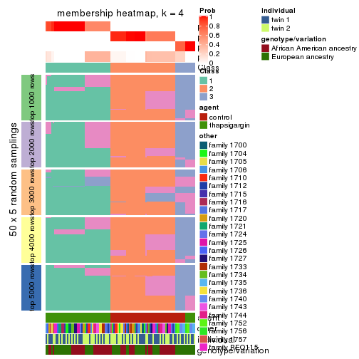
membership_heatmap(res, k = 5)
membership_heatmap(res, k = 6)
As soon as we have had the classes for columns, we can look for signatures which are significantly different between classes which can be candidate marks for certain classes. Following are the heatmaps for signatures.
Signature heatmaps where rows are scaled:
get_signatures(res, k = 2)
get_signatures(res, k = 3)

get_signatures(res, k = 4)
get_signatures(res, k = 5)
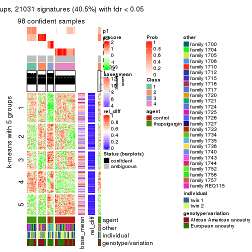
get_signatures(res, k = 6)
Signature heatmaps where rows are not scaled:
get_signatures(res, k = 2, scale_rows = FALSE)

get_signatures(res, k = 3, scale_rows = FALSE)
get_signatures(res, k = 4, scale_rows = FALSE)
get_signatures(res, k = 5, scale_rows = FALSE)
get_signatures(res, k = 6, scale_rows = FALSE)
Compare the overlap of signatures from different k:
compare_signatures(res)
get_signature() returns a data frame invisibly. TO get the list of signatures, the function
call should be assigned to a variable explicitly. In following code, if plot argument is set
to FALSE, no heatmap is plotted while only the differential analysis is performed.
# code only for demonstration
tb = get_signature(res, k = ..., plot = FALSE)
An example of the output of tb is:
#> which_row fdr mean_1 mean_2 scaled_mean_1 scaled_mean_2 km
#> 1 38 0.042760348 8.373488 9.131774 -0.5533452 0.5164555 1
#> 2 40 0.018707592 7.106213 8.469186 -0.6173731 0.5762149 1
#> 3 55 0.019134737 10.221463 11.207825 -0.6159697 0.5749050 1
#> 4 59 0.006059896 5.921854 7.869574 -0.6899429 0.6439467 1
#> 5 60 0.018055526 8.928898 10.211722 -0.6204761 0.5791110 1
#> 6 98 0.009384629 15.714769 14.887706 0.6635654 -0.6193277 2
...
The columns in tb are:
which_row: row indices corresponding to the input matrix.fdr: FDR for the differential test. mean_x: The mean value in group x.scaled_mean_x: The mean value in group x after rows are scaled.km: Row groups if k-means clustering is applied to rows.UMAP plot which shows how samples are separated.
dimension_reduction(res, k = 2, method = "UMAP")

dimension_reduction(res, k = 3, method = "UMAP")
dimension_reduction(res, k = 4, method = "UMAP")
dimension_reduction(res, k = 5, method = "UMAP")
dimension_reduction(res, k = 6, method = "UMAP")

Following heatmap shows how subgroups are split when increasing k:
collect_classes(res)
Test correlation between subgroups and known annotations. If the known annotation is numeric, one-way ANOVA test is applied, and if the known annotation is discrete, chi-squared contingency table test is applied.
test_to_known_factors(res)
#> n agent(p) other(p) individual(p) genotype/variation(p) k
#> ATC:kmeans 104 1.49e-23 1.00e+00 1.000 1.000000 2
#> ATC:kmeans 104 2.86e-20 1.15e-04 0.848 0.000975 3
#> ATC:kmeans 104 2.86e-20 1.15e-04 0.848 0.000975 4
#> ATC:kmeans 98 4.37e-18 5.11e-05 0.441 0.001091 5
#> ATC:kmeans 98 2.54e-17 2.63e-06 0.438 0.000279 6
If matrix rows can be associated to genes, consider to use functional_enrichment(res,
...) to perform function enrichment for the signature genes. See this vignette for more detailed explanations.
The object with results only for a single top-value method and a single partition method can be extracted as:
res = res_list["ATC", "skmeans"]
# you can also extract it by
# res = res_list["ATC:skmeans"]
A summary of res and all the functions that can be applied to it:
res
#> A 'ConsensusPartition' object with k = 2, 3, 4, 5, 6.
#> On a matrix with 51941 rows and 104 columns.
#> Top rows (1000, 2000, 3000, 4000, 5000) are extracted by 'ATC' method.
#> Subgroups are detected by 'skmeans' method.
#> Performed in total 1250 partitions by row resampling.
#> Best k for subgroups seems to be 5.
#>
#> Following methods can be applied to this 'ConsensusPartition' object:
#> [1] "cola_report" "collect_classes" "collect_plots"
#> [4] "collect_stats" "colnames" "compare_signatures"
#> [7] "consensus_heatmap" "dimension_reduction" "functional_enrichment"
#> [10] "get_anno_col" "get_anno" "get_classes"
#> [13] "get_consensus" "get_matrix" "get_membership"
#> [16] "get_param" "get_signatures" "get_stats"
#> [19] "is_best_k" "is_stable_k" "membership_heatmap"
#> [22] "ncol" "nrow" "plot_ecdf"
#> [25] "rownames" "select_partition_number" "show"
#> [28] "suggest_best_k" "test_to_known_factors"
collect_plots() function collects all the plots made from res for all k (number of partitions)
into one single page to provide an easy and fast comparison between different k.
collect_plots(res)
The plots are:
k and the heatmap of
predicted classes for each k.k.k.k.All the plots in panels can be made by individual functions and they are plotted later in this section.
select_partition_number() produces several plots showing different
statistics for choosing “optimized” k. There are following statistics:
k;k, the area increased is defined as \(A_k - A_{k-1}\).The detailed explanations of these statistics can be found in the cola vignette.
Generally speaking, lower PAC score, higher mean silhouette score or higher
concordance corresponds to better partition. Rand index and Jaccard index
measure how similar the current partition is compared to partition with k-1.
If they are too similar, we won't accept k is better than k-1.
select_partition_number(res)
The numeric values for all these statistics can be obtained by get_stats().
get_stats(res)
#> k 1-PAC mean_silhouette concordance area_increased Rand Jaccard
#> 2 2 1.000 1.000 1.000 0.5054 0.495 0.495
#> 3 3 1.000 0.986 0.995 0.2202 0.865 0.733
#> 4 4 0.801 0.776 0.813 0.1462 0.920 0.791
#> 5 5 0.968 0.937 0.958 0.1239 0.862 0.571
#> 6 6 0.896 0.789 0.899 0.0313 0.990 0.952
suggest_best_k() suggests the best \(k\) based on these statistics. The rules are as follows:
suggest_best_k(res)
#> [1] 5
#> attr(,"optional")
#> [1] 2 3
There is also optional best \(k\) = 2 3 that is worth to check.
Following shows the table of the partitions (You need to click the show/hide
code output link to see it). The membership matrix (columns with name p*)
is inferred by
clue::cl_consensus()
function with the SE method. Basically the value in the membership matrix
represents the probability to belong to a certain group. The finall class
label for an item is determined with the group with highest probability it
belongs to.
In get_classes() function, the entropy is calculated from the membership
matrix and the silhouette score is calculated from the consensus matrix.
cbind(get_classes(res, k = 2), get_membership(res, k = 2))
#> class entropy silhouette p1 p2
#> GSM494452 2 0 1 0 1
#> GSM494454 2 0 1 0 1
#> GSM494456 2 0 1 0 1
#> GSM494458 2 0 1 0 1
#> GSM494460 2 0 1 0 1
#> GSM494462 2 0 1 0 1
#> GSM494464 2 0 1 0 1
#> GSM494466 2 0 1 0 1
#> GSM494468 2 0 1 0 1
#> GSM494470 2 0 1 0 1
#> GSM494472 2 0 1 0 1
#> GSM494474 2 0 1 0 1
#> GSM494476 2 0 1 0 1
#> GSM494478 2 0 1 0 1
#> GSM494480 2 0 1 0 1
#> GSM494482 2 0 1 0 1
#> GSM494484 2 0 1 0 1
#> GSM494486 2 0 1 0 1
#> GSM494488 2 0 1 0 1
#> GSM494490 2 0 1 0 1
#> GSM494492 2 0 1 0 1
#> GSM494494 2 0 1 0 1
#> GSM494496 2 0 1 0 1
#> GSM494498 2 0 1 0 1
#> GSM494500 2 0 1 0 1
#> GSM494502 2 0 1 0 1
#> GSM494504 2 0 1 0 1
#> GSM494506 2 0 1 0 1
#> GSM494508 2 0 1 0 1
#> GSM494510 2 0 1 0 1
#> GSM494512 2 0 1 0 1
#> GSM494514 2 0 1 0 1
#> GSM494516 2 0 1 0 1
#> GSM494518 2 0 1 0 1
#> GSM494520 2 0 1 0 1
#> GSM494522 2 0 1 0 1
#> GSM494524 2 0 1 0 1
#> GSM494526 2 0 1 0 1
#> GSM494528 2 0 1 0 1
#> GSM494530 2 0 1 0 1
#> GSM494532 2 0 1 0 1
#> GSM494534 2 0 1 0 1
#> GSM494536 2 0 1 0 1
#> GSM494538 2 0 1 0 1
#> GSM494540 2 0 1 0 1
#> GSM494542 2 0 1 0 1
#> GSM494544 2 0 1 0 1
#> GSM494546 2 0 1 0 1
#> GSM494548 2 0 1 0 1
#> GSM494550 2 0 1 0 1
#> GSM494552 2 0 1 0 1
#> GSM494554 2 0 1 0 1
#> GSM494453 1 0 1 1 0
#> GSM494455 1 0 1 1 0
#> GSM494457 1 0 1 1 0
#> GSM494459 1 0 1 1 0
#> GSM494461 1 0 1 1 0
#> GSM494463 1 0 1 1 0
#> GSM494465 1 0 1 1 0
#> GSM494467 1 0 1 1 0
#> GSM494469 1 0 1 1 0
#> GSM494471 1 0 1 1 0
#> GSM494473 1 0 1 1 0
#> GSM494475 1 0 1 1 0
#> GSM494477 1 0 1 1 0
#> GSM494479 1 0 1 1 0
#> GSM494481 1 0 1 1 0
#> GSM494483 1 0 1 1 0
#> GSM494485 1 0 1 1 0
#> GSM494487 1 0 1 1 0
#> GSM494489 1 0 1 1 0
#> GSM494491 1 0 1 1 0
#> GSM494493 1 0 1 1 0
#> GSM494495 1 0 1 1 0
#> GSM494497 1 0 1 1 0
#> GSM494499 1 0 1 1 0
#> GSM494501 1 0 1 1 0
#> GSM494503 1 0 1 1 0
#> GSM494505 1 0 1 1 0
#> GSM494507 1 0 1 1 0
#> GSM494509 1 0 1 1 0
#> GSM494511 1 0 1 1 0
#> GSM494513 1 0 1 1 0
#> GSM494515 1 0 1 1 0
#> GSM494517 1 0 1 1 0
#> GSM494519 1 0 1 1 0
#> GSM494521 1 0 1 1 0
#> GSM494523 1 0 1 1 0
#> GSM494525 1 0 1 1 0
#> GSM494527 1 0 1 1 0
#> GSM494529 1 0 1 1 0
#> GSM494531 1 0 1 1 0
#> GSM494533 1 0 1 1 0
#> GSM494535 1 0 1 1 0
#> GSM494537 1 0 1 1 0
#> GSM494539 1 0 1 1 0
#> GSM494541 1 0 1 1 0
#> GSM494543 1 0 1 1 0
#> GSM494545 1 0 1 1 0
#> GSM494547 1 0 1 1 0
#> GSM494549 1 0 1 1 0
#> GSM494551 1 0 1 1 0
#> GSM494553 1 0 1 1 0
#> GSM494555 1 0 1 1 0
cbind(get_classes(res, k = 3), get_membership(res, k = 3))
#> class entropy silhouette p1 p2 p3
#> GSM494452 2 0.00 1.000 0.000 1 0.000
#> GSM494454 2 0.00 1.000 0.000 1 0.000
#> GSM494456 2 0.00 1.000 0.000 1 0.000
#> GSM494458 2 0.00 1.000 0.000 1 0.000
#> GSM494460 2 0.00 1.000 0.000 1 0.000
#> GSM494462 2 0.00 1.000 0.000 1 0.000
#> GSM494464 2 0.00 1.000 0.000 1 0.000
#> GSM494466 2 0.00 1.000 0.000 1 0.000
#> GSM494468 2 0.00 1.000 0.000 1 0.000
#> GSM494470 2 0.00 1.000 0.000 1 0.000
#> GSM494472 2 0.00 1.000 0.000 1 0.000
#> GSM494474 2 0.00 1.000 0.000 1 0.000
#> GSM494476 2 0.00 1.000 0.000 1 0.000
#> GSM494478 2 0.00 1.000 0.000 1 0.000
#> GSM494480 2 0.00 1.000 0.000 1 0.000
#> GSM494482 2 0.00 1.000 0.000 1 0.000
#> GSM494484 2 0.00 1.000 0.000 1 0.000
#> GSM494486 2 0.00 1.000 0.000 1 0.000
#> GSM494488 2 0.00 1.000 0.000 1 0.000
#> GSM494490 2 0.00 1.000 0.000 1 0.000
#> GSM494492 2 0.00 1.000 0.000 1 0.000
#> GSM494494 2 0.00 1.000 0.000 1 0.000
#> GSM494496 2 0.00 1.000 0.000 1 0.000
#> GSM494498 2 0.00 1.000 0.000 1 0.000
#> GSM494500 2 0.00 1.000 0.000 1 0.000
#> GSM494502 2 0.00 1.000 0.000 1 0.000
#> GSM494504 2 0.00 1.000 0.000 1 0.000
#> GSM494506 2 0.00 1.000 0.000 1 0.000
#> GSM494508 2 0.00 1.000 0.000 1 0.000
#> GSM494510 2 0.00 1.000 0.000 1 0.000
#> GSM494512 2 0.00 1.000 0.000 1 0.000
#> GSM494514 2 0.00 1.000 0.000 1 0.000
#> GSM494516 2 0.00 1.000 0.000 1 0.000
#> GSM494518 2 0.00 1.000 0.000 1 0.000
#> GSM494520 2 0.00 1.000 0.000 1 0.000
#> GSM494522 2 0.00 1.000 0.000 1 0.000
#> GSM494524 2 0.00 1.000 0.000 1 0.000
#> GSM494526 2 0.00 1.000 0.000 1 0.000
#> GSM494528 2 0.00 1.000 0.000 1 0.000
#> GSM494530 2 0.00 1.000 0.000 1 0.000
#> GSM494532 2 0.00 1.000 0.000 1 0.000
#> GSM494534 2 0.00 1.000 0.000 1 0.000
#> GSM494536 3 0.00 0.965 0.000 0 1.000
#> GSM494538 3 0.00 0.965 0.000 0 1.000
#> GSM494540 3 0.00 0.965 0.000 0 1.000
#> GSM494542 3 0.00 0.965 0.000 0 1.000
#> GSM494544 3 0.00 0.965 0.000 0 1.000
#> GSM494546 3 0.00 0.965 0.000 0 1.000
#> GSM494548 3 0.00 0.965 0.000 0 1.000
#> GSM494550 2 0.00 1.000 0.000 1 0.000
#> GSM494552 2 0.00 1.000 0.000 1 0.000
#> GSM494554 2 0.00 1.000 0.000 1 0.000
#> GSM494453 1 0.00 1.000 1.000 0 0.000
#> GSM494455 1 0.00 1.000 1.000 0 0.000
#> GSM494457 1 0.00 1.000 1.000 0 0.000
#> GSM494459 1 0.00 1.000 1.000 0 0.000
#> GSM494461 1 0.00 1.000 1.000 0 0.000
#> GSM494463 1 0.00 1.000 1.000 0 0.000
#> GSM494465 3 0.63 0.062 0.484 0 0.516
#> GSM494467 1 0.00 1.000 1.000 0 0.000
#> GSM494469 1 0.00 1.000 1.000 0 0.000
#> GSM494471 1 0.00 1.000 1.000 0 0.000
#> GSM494473 1 0.00 1.000 1.000 0 0.000
#> GSM494475 1 0.00 1.000 1.000 0 0.000
#> GSM494477 1 0.00 1.000 1.000 0 0.000
#> GSM494479 1 0.00 1.000 1.000 0 0.000
#> GSM494481 1 0.00 1.000 1.000 0 0.000
#> GSM494483 1 0.00 1.000 1.000 0 0.000
#> GSM494485 1 0.00 1.000 1.000 0 0.000
#> GSM494487 1 0.00 1.000 1.000 0 0.000
#> GSM494489 1 0.00 1.000 1.000 0 0.000
#> GSM494491 1 0.00 1.000 1.000 0 0.000
#> GSM494493 1 0.00 1.000 1.000 0 0.000
#> GSM494495 1 0.00 1.000 1.000 0 0.000
#> GSM494497 1 0.00 1.000 1.000 0 0.000
#> GSM494499 1 0.00 1.000 1.000 0 0.000
#> GSM494501 1 0.00 1.000 1.000 0 0.000
#> GSM494503 1 0.00 1.000 1.000 0 0.000
#> GSM494505 1 0.00 1.000 1.000 0 0.000
#> GSM494507 1 0.00 1.000 1.000 0 0.000
#> GSM494509 1 0.00 1.000 1.000 0 0.000
#> GSM494511 1 0.00 1.000 1.000 0 0.000
#> GSM494513 1 0.00 1.000 1.000 0 0.000
#> GSM494515 1 0.00 1.000 1.000 0 0.000
#> GSM494517 1 0.00 1.000 1.000 0 0.000
#> GSM494519 1 0.00 1.000 1.000 0 0.000
#> GSM494521 1 0.00 1.000 1.000 0 0.000
#> GSM494523 1 0.00 1.000 1.000 0 0.000
#> GSM494525 1 0.00 1.000 1.000 0 0.000
#> GSM494527 1 0.00 1.000 1.000 0 0.000
#> GSM494529 1 0.00 1.000 1.000 0 0.000
#> GSM494531 1 0.00 1.000 1.000 0 0.000
#> GSM494533 1 0.00 1.000 1.000 0 0.000
#> GSM494535 1 0.00 1.000 1.000 0 0.000
#> GSM494537 3 0.00 0.965 0.000 0 1.000
#> GSM494539 3 0.00 0.965 0.000 0 1.000
#> GSM494541 3 0.00 0.965 0.000 0 1.000
#> GSM494543 3 0.00 0.965 0.000 0 1.000
#> GSM494545 3 0.00 0.965 0.000 0 1.000
#> GSM494547 3 0.00 0.965 0.000 0 1.000
#> GSM494549 3 0.00 0.965 0.000 0 1.000
#> GSM494551 1 0.00 1.000 1.000 0 0.000
#> GSM494553 1 0.00 1.000 1.000 0 0.000
#> GSM494555 1 0.00 1.000 1.000 0 0.000
cbind(get_classes(res, k = 4), get_membership(res, k = 4))
#> class entropy silhouette p1 p2 p3 p4
#> GSM494452 2 0.0000 0.75837 0.000 1.000 0.000 0.000
#> GSM494454 2 0.0000 0.75837 0.000 1.000 0.000 0.000
#> GSM494456 2 0.0000 0.75837 0.000 1.000 0.000 0.000
#> GSM494458 2 0.0000 0.75837 0.000 1.000 0.000 0.000
#> GSM494460 2 0.4994 0.75117 0.000 0.520 0.480 0.000
#> GSM494462 2 0.4994 0.75117 0.000 0.520 0.480 0.000
#> GSM494464 2 0.0000 0.75837 0.000 1.000 0.000 0.000
#> GSM494466 2 0.3074 0.75678 0.000 0.848 0.152 0.000
#> GSM494468 2 0.0000 0.75837 0.000 1.000 0.000 0.000
#> GSM494470 2 0.0000 0.75837 0.000 1.000 0.000 0.000
#> GSM494472 2 0.0000 0.75837 0.000 1.000 0.000 0.000
#> GSM494474 2 0.0000 0.75837 0.000 1.000 0.000 0.000
#> GSM494476 2 0.2921 0.75711 0.000 0.860 0.140 0.000
#> GSM494478 2 0.4994 0.75117 0.000 0.520 0.480 0.000
#> GSM494480 2 0.0000 0.75837 0.000 1.000 0.000 0.000
#> GSM494482 2 0.0000 0.75837 0.000 1.000 0.000 0.000
#> GSM494484 2 0.4994 0.75117 0.000 0.520 0.480 0.000
#> GSM494486 2 0.4994 0.75117 0.000 0.520 0.480 0.000
#> GSM494488 2 0.0000 0.75837 0.000 1.000 0.000 0.000
#> GSM494490 2 0.0000 0.75837 0.000 1.000 0.000 0.000
#> GSM494492 2 0.0000 0.75837 0.000 1.000 0.000 0.000
#> GSM494494 2 0.0000 0.75837 0.000 1.000 0.000 0.000
#> GSM494496 2 0.4994 0.75117 0.000 0.520 0.480 0.000
#> GSM494498 2 0.4994 0.75117 0.000 0.520 0.480 0.000
#> GSM494500 2 0.4382 0.75079 0.000 0.704 0.296 0.000
#> GSM494502 2 0.4994 0.75117 0.000 0.520 0.480 0.000
#> GSM494504 2 0.4994 0.75117 0.000 0.520 0.480 0.000
#> GSM494506 2 0.4994 0.75117 0.000 0.520 0.480 0.000
#> GSM494508 2 0.4994 0.75117 0.000 0.520 0.480 0.000
#> GSM494510 2 0.4994 0.75117 0.000 0.520 0.480 0.000
#> GSM494512 2 0.4994 0.75117 0.000 0.520 0.480 0.000
#> GSM494514 2 0.4994 0.75117 0.000 0.520 0.480 0.000
#> GSM494516 2 0.4994 0.75117 0.000 0.520 0.480 0.000
#> GSM494518 2 0.4994 0.75117 0.000 0.520 0.480 0.000
#> GSM494520 2 0.4994 0.75117 0.000 0.520 0.480 0.000
#> GSM494522 2 0.4994 0.75117 0.000 0.520 0.480 0.000
#> GSM494524 2 0.0000 0.75837 0.000 1.000 0.000 0.000
#> GSM494526 2 0.0000 0.75837 0.000 1.000 0.000 0.000
#> GSM494528 2 0.0000 0.75837 0.000 1.000 0.000 0.000
#> GSM494530 2 0.4994 0.75117 0.000 0.520 0.480 0.000
#> GSM494532 2 0.0000 0.75837 0.000 1.000 0.000 0.000
#> GSM494534 2 0.4994 0.75117 0.000 0.520 0.480 0.000
#> GSM494536 3 0.4994 1.00000 0.000 0.000 0.520 0.480
#> GSM494538 3 0.4994 1.00000 0.000 0.000 0.520 0.480
#> GSM494540 3 0.4994 1.00000 0.000 0.000 0.520 0.480
#> GSM494542 3 0.4994 1.00000 0.000 0.000 0.520 0.480
#> GSM494544 3 0.4994 1.00000 0.000 0.000 0.520 0.480
#> GSM494546 3 0.4994 1.00000 0.000 0.000 0.520 0.480
#> GSM494548 3 0.4994 1.00000 0.000 0.000 0.520 0.480
#> GSM494550 2 0.4994 0.75117 0.000 0.520 0.480 0.000
#> GSM494552 2 0.0000 0.75837 0.000 1.000 0.000 0.000
#> GSM494554 2 0.0000 0.75837 0.000 1.000 0.000 0.000
#> GSM494453 4 0.4994 0.92478 0.480 0.000 0.000 0.520
#> GSM494455 1 0.0000 0.86985 1.000 0.000 0.000 0.000
#> GSM494457 1 0.0000 0.86985 1.000 0.000 0.000 0.000
#> GSM494459 1 0.0000 0.86985 1.000 0.000 0.000 0.000
#> GSM494461 1 0.0188 0.86383 0.996 0.000 0.000 0.004
#> GSM494463 4 0.4994 0.92478 0.480 0.000 0.000 0.520
#> GSM494465 4 0.4164 0.19790 0.264 0.000 0.000 0.736
#> GSM494467 1 0.0000 0.86985 1.000 0.000 0.000 0.000
#> GSM494469 1 0.4679 -0.36270 0.648 0.000 0.000 0.352
#> GSM494471 1 0.4661 -0.34447 0.652 0.000 0.000 0.348
#> GSM494473 4 0.4994 0.92478 0.480 0.000 0.000 0.520
#> GSM494475 4 0.4994 0.92478 0.480 0.000 0.000 0.520
#> GSM494477 1 0.0000 0.86985 1.000 0.000 0.000 0.000
#> GSM494479 1 0.0000 0.86985 1.000 0.000 0.000 0.000
#> GSM494481 4 0.4994 0.92478 0.480 0.000 0.000 0.520
#> GSM494483 4 0.4994 0.92478 0.480 0.000 0.000 0.520
#> GSM494485 1 0.0000 0.86985 1.000 0.000 0.000 0.000
#> GSM494487 1 0.0000 0.86985 1.000 0.000 0.000 0.000
#> GSM494489 1 0.0000 0.86985 1.000 0.000 0.000 0.000
#> GSM494491 1 0.0000 0.86985 1.000 0.000 0.000 0.000
#> GSM494493 1 0.0000 0.86985 1.000 0.000 0.000 0.000
#> GSM494495 1 0.0000 0.86985 1.000 0.000 0.000 0.000
#> GSM494497 1 0.0000 0.86985 1.000 0.000 0.000 0.000
#> GSM494499 1 0.0000 0.86985 1.000 0.000 0.000 0.000
#> GSM494501 4 0.4994 0.92478 0.480 0.000 0.000 0.520
#> GSM494503 4 0.4994 0.92478 0.480 0.000 0.000 0.520
#> GSM494505 1 0.4304 -0.00748 0.716 0.000 0.000 0.284
#> GSM494507 1 0.0000 0.86985 1.000 0.000 0.000 0.000
#> GSM494509 1 0.0000 0.86985 1.000 0.000 0.000 0.000
#> GSM494511 1 0.0000 0.86985 1.000 0.000 0.000 0.000
#> GSM494513 1 0.0000 0.86985 1.000 0.000 0.000 0.000
#> GSM494515 1 0.0000 0.86985 1.000 0.000 0.000 0.000
#> GSM494517 1 0.0000 0.86985 1.000 0.000 0.000 0.000
#> GSM494519 1 0.0000 0.86985 1.000 0.000 0.000 0.000
#> GSM494521 1 0.4250 0.03974 0.724 0.000 0.000 0.276
#> GSM494523 1 0.0000 0.86985 1.000 0.000 0.000 0.000
#> GSM494525 4 0.4994 0.92478 0.480 0.000 0.000 0.520
#> GSM494527 4 0.4994 0.92478 0.480 0.000 0.000 0.520
#> GSM494529 4 0.4994 0.92478 0.480 0.000 0.000 0.520
#> GSM494531 1 0.4522 -0.20833 0.680 0.000 0.000 0.320
#> GSM494533 1 0.4679 -0.36270 0.648 0.000 0.000 0.352
#> GSM494535 1 0.0000 0.86985 1.000 0.000 0.000 0.000
#> GSM494537 3 0.4994 1.00000 0.000 0.000 0.520 0.480
#> GSM494539 3 0.4994 1.00000 0.000 0.000 0.520 0.480
#> GSM494541 3 0.4994 1.00000 0.000 0.000 0.520 0.480
#> GSM494543 3 0.4994 1.00000 0.000 0.000 0.520 0.480
#> GSM494545 3 0.4994 1.00000 0.000 0.000 0.520 0.480
#> GSM494547 3 0.4994 1.00000 0.000 0.000 0.520 0.480
#> GSM494549 3 0.4994 1.00000 0.000 0.000 0.520 0.480
#> GSM494551 1 0.0000 0.86985 1.000 0.000 0.000 0.000
#> GSM494553 4 0.4994 0.92478 0.480 0.000 0.000 0.520
#> GSM494555 4 0.4994 0.92478 0.480 0.000 0.000 0.520
cbind(get_classes(res, k = 5), get_membership(res, k = 5))
#> class entropy silhouette p1 p2 p3 p4 p5
#> GSM494452 5 0.0000 0.944 0.000 0.000 0.000 0.000 1.000
#> GSM494454 5 0.0000 0.944 0.000 0.000 0.000 0.000 1.000
#> GSM494456 5 0.0000 0.944 0.000 0.000 0.000 0.000 1.000
#> GSM494458 5 0.0162 0.941 0.004 0.000 0.000 0.000 0.996
#> GSM494460 4 0.0794 0.998 0.000 0.000 0.000 0.972 0.028
#> GSM494462 4 0.0794 0.998 0.000 0.000 0.000 0.972 0.028
#> GSM494464 5 0.0000 0.944 0.000 0.000 0.000 0.000 1.000
#> GSM494466 5 0.4383 0.260 0.004 0.000 0.000 0.424 0.572
#> GSM494468 5 0.0000 0.944 0.000 0.000 0.000 0.000 1.000
#> GSM494470 5 0.0000 0.944 0.000 0.000 0.000 0.000 1.000
#> GSM494472 5 0.0000 0.944 0.000 0.000 0.000 0.000 1.000
#> GSM494474 5 0.0000 0.944 0.000 0.000 0.000 0.000 1.000
#> GSM494476 5 0.4084 0.501 0.004 0.000 0.000 0.328 0.668
#> GSM494478 4 0.0794 0.998 0.000 0.000 0.000 0.972 0.028
#> GSM494480 5 0.0000 0.944 0.000 0.000 0.000 0.000 1.000
#> GSM494482 5 0.0000 0.944 0.000 0.000 0.000 0.000 1.000
#> GSM494484 4 0.0955 0.996 0.004 0.000 0.000 0.968 0.028
#> GSM494486 4 0.1116 0.993 0.004 0.000 0.004 0.964 0.028
#> GSM494488 5 0.0000 0.944 0.000 0.000 0.000 0.000 1.000
#> GSM494490 5 0.0000 0.944 0.000 0.000 0.000 0.000 1.000
#> GSM494492 5 0.0000 0.944 0.000 0.000 0.000 0.000 1.000
#> GSM494494 5 0.0000 0.944 0.000 0.000 0.000 0.000 1.000
#> GSM494496 4 0.0794 0.998 0.000 0.000 0.000 0.972 0.028
#> GSM494498 4 0.0794 0.998 0.000 0.000 0.000 0.972 0.028
#> GSM494500 5 0.4161 0.341 0.000 0.000 0.000 0.392 0.608
#> GSM494502 4 0.0794 0.998 0.000 0.000 0.000 0.972 0.028
#> GSM494504 4 0.0794 0.998 0.000 0.000 0.000 0.972 0.028
#> GSM494506 4 0.0794 0.998 0.000 0.000 0.000 0.972 0.028
#> GSM494508 4 0.0963 0.991 0.000 0.000 0.000 0.964 0.036
#> GSM494510 4 0.0794 0.998 0.000 0.000 0.000 0.972 0.028
#> GSM494512 4 0.1197 0.978 0.000 0.000 0.000 0.952 0.048
#> GSM494514 4 0.0794 0.998 0.000 0.000 0.000 0.972 0.028
#> GSM494516 4 0.0794 0.998 0.000 0.000 0.000 0.972 0.028
#> GSM494518 4 0.0794 0.998 0.000 0.000 0.000 0.972 0.028
#> GSM494520 4 0.0794 0.998 0.000 0.000 0.000 0.972 0.028
#> GSM494522 4 0.0794 0.998 0.000 0.000 0.000 0.972 0.028
#> GSM494524 5 0.0000 0.944 0.000 0.000 0.000 0.000 1.000
#> GSM494526 5 0.0000 0.944 0.000 0.000 0.000 0.000 1.000
#> GSM494528 5 0.0000 0.944 0.000 0.000 0.000 0.000 1.000
#> GSM494530 4 0.0794 0.998 0.000 0.000 0.000 0.972 0.028
#> GSM494532 5 0.0000 0.944 0.000 0.000 0.000 0.000 1.000
#> GSM494534 4 0.0794 0.998 0.000 0.000 0.000 0.972 0.028
#> GSM494536 3 0.0703 0.982 0.000 0.000 0.976 0.024 0.000
#> GSM494538 3 0.0703 0.982 0.000 0.000 0.976 0.024 0.000
#> GSM494540 3 0.0703 0.982 0.000 0.000 0.976 0.024 0.000
#> GSM494542 3 0.0703 0.982 0.000 0.000 0.976 0.024 0.000
#> GSM494544 3 0.0703 0.982 0.000 0.000 0.976 0.024 0.000
#> GSM494546 3 0.0703 0.982 0.000 0.000 0.976 0.024 0.000
#> GSM494548 3 0.0703 0.982 0.000 0.000 0.976 0.024 0.000
#> GSM494550 4 0.0955 0.996 0.004 0.000 0.000 0.968 0.028
#> GSM494552 5 0.0000 0.944 0.000 0.000 0.000 0.000 1.000
#> GSM494554 5 0.0000 0.944 0.000 0.000 0.000 0.000 1.000
#> GSM494453 1 0.0794 0.899 0.972 0.028 0.000 0.000 0.000
#> GSM494455 2 0.0000 0.997 0.000 1.000 0.000 0.000 0.000
#> GSM494457 2 0.0000 0.997 0.000 1.000 0.000 0.000 0.000
#> GSM494459 2 0.0000 0.997 0.000 1.000 0.000 0.000 0.000
#> GSM494461 2 0.0290 0.991 0.008 0.992 0.000 0.000 0.000
#> GSM494463 1 0.0794 0.899 0.972 0.028 0.000 0.000 0.000
#> GSM494465 1 0.3901 0.803 0.776 0.196 0.024 0.004 0.000
#> GSM494467 2 0.0000 0.997 0.000 1.000 0.000 0.000 0.000
#> GSM494469 1 0.3901 0.803 0.776 0.196 0.024 0.004 0.000
#> GSM494471 1 0.3901 0.803 0.776 0.196 0.024 0.004 0.000
#> GSM494473 1 0.0794 0.899 0.972 0.028 0.000 0.000 0.000
#> GSM494475 1 0.0794 0.899 0.972 0.028 0.000 0.000 0.000
#> GSM494477 2 0.0000 0.997 0.000 1.000 0.000 0.000 0.000
#> GSM494479 2 0.0000 0.997 0.000 1.000 0.000 0.000 0.000
#> GSM494481 1 0.0794 0.899 0.972 0.028 0.000 0.000 0.000
#> GSM494483 1 0.0794 0.899 0.972 0.028 0.000 0.000 0.000
#> GSM494485 2 0.0000 0.997 0.000 1.000 0.000 0.000 0.000
#> GSM494487 2 0.0000 0.997 0.000 1.000 0.000 0.000 0.000
#> GSM494489 2 0.0000 0.997 0.000 1.000 0.000 0.000 0.000
#> GSM494491 2 0.0000 0.997 0.000 1.000 0.000 0.000 0.000
#> GSM494493 2 0.0000 0.997 0.000 1.000 0.000 0.000 0.000
#> GSM494495 2 0.0000 0.997 0.000 1.000 0.000 0.000 0.000
#> GSM494497 2 0.0290 0.991 0.008 0.992 0.000 0.000 0.000
#> GSM494499 2 0.0162 0.994 0.004 0.996 0.000 0.000 0.000
#> GSM494501 1 0.0794 0.899 0.972 0.028 0.000 0.000 0.000
#> GSM494503 1 0.0794 0.899 0.972 0.028 0.000 0.000 0.000
#> GSM494505 1 0.3816 0.707 0.696 0.304 0.000 0.000 0.000
#> GSM494507 2 0.0000 0.997 0.000 1.000 0.000 0.000 0.000
#> GSM494509 2 0.0000 0.997 0.000 1.000 0.000 0.000 0.000
#> GSM494511 2 0.0000 0.997 0.000 1.000 0.000 0.000 0.000
#> GSM494513 2 0.0000 0.997 0.000 1.000 0.000 0.000 0.000
#> GSM494515 2 0.0000 0.997 0.000 1.000 0.000 0.000 0.000
#> GSM494517 2 0.0000 0.997 0.000 1.000 0.000 0.000 0.000
#> GSM494519 2 0.0000 0.997 0.000 1.000 0.000 0.000 0.000
#> GSM494521 1 0.4009 0.694 0.684 0.312 0.000 0.004 0.000
#> GSM494523 2 0.0000 0.997 0.000 1.000 0.000 0.000 0.000
#> GSM494525 1 0.0703 0.897 0.976 0.024 0.000 0.000 0.000
#> GSM494527 1 0.0794 0.899 0.972 0.028 0.000 0.000 0.000
#> GSM494529 1 0.0865 0.896 0.972 0.024 0.000 0.004 0.000
#> GSM494531 1 0.3766 0.756 0.728 0.268 0.000 0.004 0.000
#> GSM494533 1 0.3398 0.807 0.780 0.216 0.000 0.004 0.000
#> GSM494535 2 0.0290 0.991 0.008 0.992 0.000 0.000 0.000
#> GSM494537 3 0.0609 0.982 0.020 0.000 0.980 0.000 0.000
#> GSM494539 3 0.0609 0.982 0.020 0.000 0.980 0.000 0.000
#> GSM494541 3 0.0609 0.982 0.020 0.000 0.980 0.000 0.000
#> GSM494543 3 0.0609 0.982 0.020 0.000 0.980 0.000 0.000
#> GSM494545 3 0.0609 0.982 0.020 0.000 0.980 0.000 0.000
#> GSM494547 3 0.0609 0.982 0.020 0.000 0.980 0.000 0.000
#> GSM494549 3 0.0609 0.982 0.020 0.000 0.980 0.000 0.000
#> GSM494551 2 0.1216 0.954 0.020 0.960 0.020 0.000 0.000
#> GSM494553 1 0.0865 0.896 0.972 0.024 0.000 0.004 0.000
#> GSM494555 1 0.0865 0.896 0.972 0.024 0.000 0.004 0.000
cbind(get_classes(res, k = 6), get_membership(res, k = 6))
#> class entropy silhouette p1 p2 p3 p4 p5 p6
#> GSM494452 5 0.0146 0.9069 0.000 0.004 0.000 0.000 0.996 0.000
#> GSM494454 5 0.0146 0.9069 0.000 0.004 0.000 0.000 0.996 0.000
#> GSM494456 5 0.0790 0.8914 0.000 0.032 0.000 0.000 0.968 0.000
#> GSM494458 5 0.3428 0.6390 0.000 0.304 0.000 0.000 0.696 0.000
#> GSM494460 4 0.0000 0.9490 0.000 0.000 0.000 1.000 0.000 0.000
#> GSM494462 4 0.0000 0.9490 0.000 0.000 0.000 1.000 0.000 0.000
#> GSM494464 5 0.0000 0.9075 0.000 0.000 0.000 0.000 1.000 0.000
#> GSM494466 5 0.6112 0.0802 0.000 0.320 0.000 0.308 0.372 0.000
#> GSM494468 5 0.0000 0.9075 0.000 0.000 0.000 0.000 1.000 0.000
#> GSM494470 5 0.0000 0.9075 0.000 0.000 0.000 0.000 1.000 0.000
#> GSM494472 5 0.0146 0.9069 0.000 0.004 0.000 0.000 0.996 0.000
#> GSM494474 5 0.0000 0.9075 0.000 0.000 0.000 0.000 1.000 0.000
#> GSM494476 5 0.5976 0.2609 0.000 0.320 0.000 0.244 0.436 0.000
#> GSM494478 4 0.0146 0.9476 0.000 0.004 0.000 0.996 0.000 0.000
#> GSM494480 5 0.0146 0.9069 0.000 0.004 0.000 0.000 0.996 0.000
#> GSM494482 5 0.0000 0.9075 0.000 0.000 0.000 0.000 1.000 0.000
#> GSM494484 4 0.3499 0.6864 0.000 0.320 0.000 0.680 0.000 0.000
#> GSM494486 4 0.3515 0.6824 0.000 0.324 0.000 0.676 0.000 0.000
#> GSM494488 5 0.0146 0.9069 0.000 0.004 0.000 0.000 0.996 0.000
#> GSM494490 5 0.0000 0.9075 0.000 0.000 0.000 0.000 1.000 0.000
#> GSM494492 5 0.0363 0.9037 0.000 0.012 0.000 0.000 0.988 0.000
#> GSM494494 5 0.0363 0.9021 0.000 0.012 0.000 0.000 0.988 0.000
#> GSM494496 4 0.0000 0.9490 0.000 0.000 0.000 1.000 0.000 0.000
#> GSM494498 4 0.0260 0.9466 0.000 0.008 0.000 0.992 0.000 0.000
#> GSM494500 5 0.3864 0.1275 0.000 0.000 0.000 0.480 0.520 0.000
#> GSM494502 4 0.0000 0.9490 0.000 0.000 0.000 1.000 0.000 0.000
#> GSM494504 4 0.0000 0.9490 0.000 0.000 0.000 1.000 0.000 0.000
#> GSM494506 4 0.0146 0.9485 0.000 0.004 0.000 0.996 0.000 0.000
#> GSM494508 4 0.0363 0.9409 0.000 0.000 0.000 0.988 0.012 0.000
#> GSM494510 4 0.1204 0.9175 0.000 0.056 0.000 0.944 0.000 0.000
#> GSM494512 4 0.0713 0.9261 0.000 0.000 0.000 0.972 0.028 0.000
#> GSM494514 4 0.0000 0.9490 0.000 0.000 0.000 1.000 0.000 0.000
#> GSM494516 4 0.0146 0.9485 0.000 0.004 0.000 0.996 0.000 0.000
#> GSM494518 4 0.0146 0.9485 0.000 0.004 0.000 0.996 0.000 0.000
#> GSM494520 4 0.0000 0.9490 0.000 0.000 0.000 1.000 0.000 0.000
#> GSM494522 4 0.0146 0.9485 0.000 0.004 0.000 0.996 0.000 0.000
#> GSM494524 5 0.0000 0.9075 0.000 0.000 0.000 0.000 1.000 0.000
#> GSM494526 5 0.0146 0.9069 0.000 0.004 0.000 0.000 0.996 0.000
#> GSM494528 5 0.0000 0.9075 0.000 0.000 0.000 0.000 1.000 0.000
#> GSM494530 4 0.0000 0.9490 0.000 0.000 0.000 1.000 0.000 0.000
#> GSM494532 5 0.0000 0.9075 0.000 0.000 0.000 0.000 1.000 0.000
#> GSM494534 4 0.0000 0.9490 0.000 0.000 0.000 1.000 0.000 0.000
#> GSM494536 3 0.3215 0.8607 0.004 0.240 0.756 0.000 0.000 0.000
#> GSM494538 3 0.3215 0.8607 0.004 0.240 0.756 0.000 0.000 0.000
#> GSM494540 3 0.3215 0.8607 0.004 0.240 0.756 0.000 0.000 0.000
#> GSM494542 3 0.3215 0.8607 0.004 0.240 0.756 0.000 0.000 0.000
#> GSM494544 3 0.3215 0.8607 0.004 0.240 0.756 0.000 0.000 0.000
#> GSM494546 3 0.3215 0.8607 0.004 0.240 0.756 0.000 0.000 0.000
#> GSM494548 3 0.3215 0.8607 0.004 0.240 0.756 0.000 0.000 0.000
#> GSM494550 4 0.3428 0.7029 0.000 0.304 0.000 0.696 0.000 0.000
#> GSM494552 5 0.0000 0.9075 0.000 0.000 0.000 0.000 1.000 0.000
#> GSM494554 5 0.0000 0.9075 0.000 0.000 0.000 0.000 1.000 0.000
#> GSM494453 1 0.0146 0.6599 0.996 0.000 0.000 0.000 0.000 0.004
#> GSM494455 6 0.0458 0.9348 0.016 0.000 0.000 0.000 0.000 0.984
#> GSM494457 6 0.0146 0.9367 0.000 0.004 0.000 0.000 0.000 0.996
#> GSM494459 6 0.0146 0.9367 0.000 0.004 0.000 0.000 0.000 0.996
#> GSM494461 6 0.3629 0.6555 0.276 0.012 0.000 0.000 0.000 0.712
#> GSM494463 1 0.0146 0.6599 0.996 0.000 0.000 0.000 0.000 0.004
#> GSM494465 2 0.6475 1.0000 0.308 0.424 0.244 0.000 0.000 0.024
#> GSM494467 6 0.0146 0.9367 0.000 0.004 0.000 0.000 0.000 0.996
#> GSM494469 2 0.6475 1.0000 0.308 0.424 0.244 0.000 0.000 0.024
#> GSM494471 2 0.6475 1.0000 0.308 0.424 0.244 0.000 0.000 0.024
#> GSM494473 1 0.0146 0.6599 0.996 0.000 0.000 0.000 0.000 0.004
#> GSM494475 1 0.0146 0.6599 0.996 0.000 0.000 0.000 0.000 0.004
#> GSM494477 6 0.0146 0.9367 0.000 0.004 0.000 0.000 0.000 0.996
#> GSM494479 6 0.0000 0.9367 0.000 0.000 0.000 0.000 0.000 1.000
#> GSM494481 1 0.0146 0.6599 0.996 0.000 0.000 0.000 0.000 0.004
#> GSM494483 1 0.0146 0.6599 0.996 0.000 0.000 0.000 0.000 0.004
#> GSM494485 6 0.0146 0.9367 0.000 0.004 0.000 0.000 0.000 0.996
#> GSM494487 6 0.0146 0.9367 0.000 0.004 0.000 0.000 0.000 0.996
#> GSM494489 6 0.0146 0.9367 0.000 0.004 0.000 0.000 0.000 0.996
#> GSM494491 6 0.0146 0.9367 0.000 0.004 0.000 0.000 0.000 0.996
#> GSM494493 6 0.0000 0.9367 0.000 0.000 0.000 0.000 0.000 1.000
#> GSM494495 6 0.0146 0.9367 0.000 0.004 0.000 0.000 0.000 0.996
#> GSM494497 6 0.3541 0.6815 0.260 0.012 0.000 0.000 0.000 0.728
#> GSM494499 6 0.2915 0.7851 0.184 0.008 0.000 0.000 0.000 0.808
#> GSM494501 1 0.1049 0.6429 0.960 0.032 0.000 0.000 0.000 0.008
#> GSM494503 1 0.0508 0.6530 0.984 0.012 0.000 0.000 0.000 0.004
#> GSM494505 1 0.3934 0.3095 0.676 0.020 0.000 0.000 0.000 0.304
#> GSM494507 6 0.1492 0.9153 0.036 0.024 0.000 0.000 0.000 0.940
#> GSM494509 6 0.1367 0.9151 0.044 0.012 0.000 0.000 0.000 0.944
#> GSM494511 6 0.0260 0.9361 0.000 0.008 0.000 0.000 0.000 0.992
#> GSM494513 6 0.0909 0.9302 0.012 0.020 0.000 0.000 0.000 0.968
#> GSM494515 6 0.0363 0.9354 0.000 0.012 0.000 0.000 0.000 0.988
#> GSM494517 6 0.0725 0.9327 0.012 0.012 0.000 0.000 0.000 0.976
#> GSM494519 6 0.0725 0.9327 0.012 0.012 0.000 0.000 0.000 0.976
#> GSM494521 1 0.5549 0.1705 0.532 0.164 0.000 0.000 0.000 0.304
#> GSM494523 6 0.0508 0.9349 0.004 0.012 0.000 0.000 0.000 0.984
#> GSM494525 1 0.2595 0.4537 0.836 0.160 0.000 0.000 0.000 0.004
#> GSM494527 1 0.0146 0.6599 0.996 0.000 0.000 0.000 0.000 0.004
#> GSM494529 1 0.3930 -0.1253 0.576 0.420 0.000 0.000 0.000 0.004
#> GSM494531 1 0.5383 0.2228 0.576 0.164 0.000 0.000 0.000 0.260
#> GSM494533 1 0.5389 -0.2905 0.460 0.428 0.000 0.000 0.000 0.112
#> GSM494535 6 0.3141 0.7635 0.200 0.012 0.000 0.000 0.000 0.788
#> GSM494537 3 0.0000 0.8499 0.000 0.000 1.000 0.000 0.000 0.000
#> GSM494539 3 0.0000 0.8499 0.000 0.000 1.000 0.000 0.000 0.000
#> GSM494541 3 0.0000 0.8499 0.000 0.000 1.000 0.000 0.000 0.000
#> GSM494543 3 0.0000 0.8499 0.000 0.000 1.000 0.000 0.000 0.000
#> GSM494545 3 0.0000 0.8499 0.000 0.000 1.000 0.000 0.000 0.000
#> GSM494547 3 0.0000 0.8499 0.000 0.000 1.000 0.000 0.000 0.000
#> GSM494549 3 0.0000 0.8499 0.000 0.000 1.000 0.000 0.000 0.000
#> GSM494551 6 0.2772 0.7396 0.000 0.004 0.180 0.000 0.000 0.816
#> GSM494553 1 0.3915 -0.1062 0.584 0.412 0.000 0.000 0.000 0.004
#> GSM494555 1 0.3915 -0.1062 0.584 0.412 0.000 0.000 0.000 0.004
Heatmaps for the consensus matrix. It visualizes the probability of two samples to be in a same group.
consensus_heatmap(res, k = 2)
consensus_heatmap(res, k = 3)
consensus_heatmap(res, k = 4)
consensus_heatmap(res, k = 5)
consensus_heatmap(res, k = 6)
Heatmaps for the membership of samples in all partitions to see how consistent they are:
membership_heatmap(res, k = 2)
membership_heatmap(res, k = 3)
membership_heatmap(res, k = 4)
membership_heatmap(res, k = 5)
membership_heatmap(res, k = 6)
As soon as we have had the classes for columns, we can look for signatures which are significantly different between classes which can be candidate marks for certain classes. Following are the heatmaps for signatures.
Signature heatmaps where rows are scaled:
get_signatures(res, k = 2)

get_signatures(res, k = 3)
#> Error in mat[ceiling(1:nr/h_ratio), ceiling(1:nc/w_ratio), drop = FALSE]: subscript out of bounds
get_signatures(res, k = 4)
get_signatures(res, k = 5)
get_signatures(res, k = 6)
Signature heatmaps where rows are not scaled:
get_signatures(res, k = 2, scale_rows = FALSE)
get_signatures(res, k = 3, scale_rows = FALSE)
get_signatures(res, k = 4, scale_rows = FALSE)
get_signatures(res, k = 5, scale_rows = FALSE)
get_signatures(res, k = 6, scale_rows = FALSE)
Compare the overlap of signatures from different k:
compare_signatures(res)
get_signature() returns a data frame invisibly. TO get the list of signatures, the function
call should be assigned to a variable explicitly. In following code, if plot argument is set
to FALSE, no heatmap is plotted while only the differential analysis is performed.
# code only for demonstration
tb = get_signature(res, k = ..., plot = FALSE)
An example of the output of tb is:
#> which_row fdr mean_1 mean_2 scaled_mean_1 scaled_mean_2 km
#> 1 38 0.042760348 8.373488 9.131774 -0.5533452 0.5164555 1
#> 2 40 0.018707592 7.106213 8.469186 -0.6173731 0.5762149 1
#> 3 55 0.019134737 10.221463 11.207825 -0.6159697 0.5749050 1
#> 4 59 0.006059896 5.921854 7.869574 -0.6899429 0.6439467 1
#> 5 60 0.018055526 8.928898 10.211722 -0.6204761 0.5791110 1
#> 6 98 0.009384629 15.714769 14.887706 0.6635654 -0.6193277 2
...
The columns in tb are:
which_row: row indices corresponding to the input matrix.fdr: FDR for the differential test. mean_x: The mean value in group x.scaled_mean_x: The mean value in group x after rows are scaled.km: Row groups if k-means clustering is applied to rows.UMAP plot which shows how samples are separated.
dimension_reduction(res, k = 2, method = "UMAP")

dimension_reduction(res, k = 3, method = "UMAP")

dimension_reduction(res, k = 4, method = "UMAP")
dimension_reduction(res, k = 5, method = "UMAP")
dimension_reduction(res, k = 6, method = "UMAP")
Following heatmap shows how subgroups are split when increasing k:
collect_classes(res)
Test correlation between subgroups and known annotations. If the known annotation is numeric, one-way ANOVA test is applied, and if the known annotation is discrete, chi-squared contingency table test is applied.
test_to_known_factors(res)
#> n agent(p) other(p) individual(p) genotype/variation(p) k
#> ATC:skmeans 104 1.49e-23 1.00e+00 1.000 1.000000 2
#> ATC:skmeans 103 4.72e-20 1.33e-04 0.823 0.001109 3
#> ATC:skmeans 97 7.23e-18 3.96e-05 0.731 0.001950 4
#> ATC:skmeans 102 3.51e-18 5.88e-06 0.406 0.000242 5
#> ATC:skmeans 93 1.39e-15 6.07e-07 0.686 0.000128 6
If matrix rows can be associated to genes, consider to use functional_enrichment(res,
...) to perform function enrichment for the signature genes. See this vignette for more detailed explanations.
The object with results only for a single top-value method and a single partition method can be extracted as:
res = res_list["ATC", "pam"]
# you can also extract it by
# res = res_list["ATC:pam"]
A summary of res and all the functions that can be applied to it:
res
#> A 'ConsensusPartition' object with k = 2, 3, 4, 5, 6.
#> On a matrix with 51941 rows and 104 columns.
#> Top rows (1000, 2000, 3000, 4000, 5000) are extracted by 'ATC' method.
#> Subgroups are detected by 'pam' method.
#> Performed in total 1250 partitions by row resampling.
#> Best k for subgroups seems to be 6.
#>
#> Following methods can be applied to this 'ConsensusPartition' object:
#> [1] "cola_report" "collect_classes" "collect_plots"
#> [4] "collect_stats" "colnames" "compare_signatures"
#> [7] "consensus_heatmap" "dimension_reduction" "functional_enrichment"
#> [10] "get_anno_col" "get_anno" "get_classes"
#> [13] "get_consensus" "get_matrix" "get_membership"
#> [16] "get_param" "get_signatures" "get_stats"
#> [19] "is_best_k" "is_stable_k" "membership_heatmap"
#> [22] "ncol" "nrow" "plot_ecdf"
#> [25] "rownames" "select_partition_number" "show"
#> [28] "suggest_best_k" "test_to_known_factors"
collect_plots() function collects all the plots made from res for all k (number of partitions)
into one single page to provide an easy and fast comparison between different k.
collect_plots(res)
The plots are:
k and the heatmap of
predicted classes for each k.k.k.k.All the plots in panels can be made by individual functions and they are plotted later in this section.
select_partition_number() produces several plots showing different
statistics for choosing “optimized” k. There are following statistics:
k;k, the area increased is defined as \(A_k - A_{k-1}\).The detailed explanations of these statistics can be found in the cola vignette.
Generally speaking, lower PAC score, higher mean silhouette score or higher
concordance corresponds to better partition. Rand index and Jaccard index
measure how similar the current partition is compared to partition with k-1.
If they are too similar, we won't accept k is better than k-1.
select_partition_number(res)
The numeric values for all these statistics can be obtained by get_stats().
get_stats(res)
#> k 1-PAC mean_silhouette concordance area_increased Rand Jaccard
#> 2 2 1.00 0.999 0.999 0.5053 0.495 0.495
#> 3 3 1.00 1.000 1.000 0.2144 0.873 0.749
#> 4 4 1.00 0.997 0.996 0.0168 0.991 0.976
#> 5 5 0.81 0.764 0.803 0.1380 0.935 0.827
#> 6 6 0.98 0.951 0.976 0.1216 0.882 0.630
suggest_best_k() suggests the best \(k\) based on these statistics. The rules are as follows:
suggest_best_k(res)
#> [1] 6
#> attr(,"optional")
#> [1] 2 3
There is also optional best \(k\) = 2 3 that is worth to check.
Following shows the table of the partitions (You need to click the show/hide
code output link to see it). The membership matrix (columns with name p*)
is inferred by
clue::cl_consensus()
function with the SE method. Basically the value in the membership matrix
represents the probability to belong to a certain group. The finall class
label for an item is determined with the group with highest probability it
belongs to.
In get_classes() function, the entropy is calculated from the membership
matrix and the silhouette score is calculated from the consensus matrix.
cbind(get_classes(res, k = 2), get_membership(res, k = 2))
#> class entropy silhouette p1 p2
#> GSM494452 2 0.000 0.999 0.00 1.00
#> GSM494454 2 0.000 0.999 0.00 1.00
#> GSM494456 2 0.000 0.999 0.00 1.00
#> GSM494458 2 0.000 0.999 0.00 1.00
#> GSM494460 2 0.000 0.999 0.00 1.00
#> GSM494462 2 0.000 0.999 0.00 1.00
#> GSM494464 2 0.000 0.999 0.00 1.00
#> GSM494466 2 0.000 0.999 0.00 1.00
#> GSM494468 2 0.000 0.999 0.00 1.00
#> GSM494470 2 0.000 0.999 0.00 1.00
#> GSM494472 2 0.000 0.999 0.00 1.00
#> GSM494474 2 0.000 0.999 0.00 1.00
#> GSM494476 2 0.000 0.999 0.00 1.00
#> GSM494478 2 0.000 0.999 0.00 1.00
#> GSM494480 2 0.000 0.999 0.00 1.00
#> GSM494482 2 0.000 0.999 0.00 1.00
#> GSM494484 2 0.000 0.999 0.00 1.00
#> GSM494486 2 0.000 0.999 0.00 1.00
#> GSM494488 2 0.000 0.999 0.00 1.00
#> GSM494490 2 0.000 0.999 0.00 1.00
#> GSM494492 2 0.000 0.999 0.00 1.00
#> GSM494494 2 0.000 0.999 0.00 1.00
#> GSM494496 2 0.000 0.999 0.00 1.00
#> GSM494498 2 0.000 0.999 0.00 1.00
#> GSM494500 2 0.000 0.999 0.00 1.00
#> GSM494502 2 0.000 0.999 0.00 1.00
#> GSM494504 2 0.000 0.999 0.00 1.00
#> GSM494506 2 0.000 0.999 0.00 1.00
#> GSM494508 2 0.000 0.999 0.00 1.00
#> GSM494510 2 0.000 0.999 0.00 1.00
#> GSM494512 2 0.000 0.999 0.00 1.00
#> GSM494514 2 0.000 0.999 0.00 1.00
#> GSM494516 2 0.000 0.999 0.00 1.00
#> GSM494518 2 0.000 0.999 0.00 1.00
#> GSM494520 2 0.000 0.999 0.00 1.00
#> GSM494522 2 0.000 0.999 0.00 1.00
#> GSM494524 2 0.000 0.999 0.00 1.00
#> GSM494526 2 0.000 0.999 0.00 1.00
#> GSM494528 2 0.000 0.999 0.00 1.00
#> GSM494530 2 0.000 0.999 0.00 1.00
#> GSM494532 2 0.000 0.999 0.00 1.00
#> GSM494534 2 0.000 0.999 0.00 1.00
#> GSM494536 2 0.000 0.999 0.00 1.00
#> GSM494538 2 0.000 0.999 0.00 1.00
#> GSM494540 2 0.000 0.999 0.00 1.00
#> GSM494542 2 0.000 0.999 0.00 1.00
#> GSM494544 2 0.000 0.999 0.00 1.00
#> GSM494546 2 0.327 0.936 0.06 0.94
#> GSM494548 2 0.000 0.999 0.00 1.00
#> GSM494550 2 0.000 0.999 0.00 1.00
#> GSM494552 2 0.000 0.999 0.00 1.00
#> GSM494554 2 0.000 0.999 0.00 1.00
#> GSM494453 1 0.000 1.000 1.00 0.00
#> GSM494455 1 0.000 1.000 1.00 0.00
#> GSM494457 1 0.000 1.000 1.00 0.00
#> GSM494459 1 0.000 1.000 1.00 0.00
#> GSM494461 1 0.000 1.000 1.00 0.00
#> GSM494463 1 0.000 1.000 1.00 0.00
#> GSM494465 1 0.000 1.000 1.00 0.00
#> GSM494467 1 0.000 1.000 1.00 0.00
#> GSM494469 1 0.000 1.000 1.00 0.00
#> GSM494471 1 0.000 1.000 1.00 0.00
#> GSM494473 1 0.000 1.000 1.00 0.00
#> GSM494475 1 0.000 1.000 1.00 0.00
#> GSM494477 1 0.000 1.000 1.00 0.00
#> GSM494479 1 0.000 1.000 1.00 0.00
#> GSM494481 1 0.000 1.000 1.00 0.00
#> GSM494483 1 0.000 1.000 1.00 0.00
#> GSM494485 1 0.000 1.000 1.00 0.00
#> GSM494487 1 0.000 1.000 1.00 0.00
#> GSM494489 1 0.000 1.000 1.00 0.00
#> GSM494491 1 0.000 1.000 1.00 0.00
#> GSM494493 1 0.000 1.000 1.00 0.00
#> GSM494495 1 0.000 1.000 1.00 0.00
#> GSM494497 1 0.000 1.000 1.00 0.00
#> GSM494499 1 0.000 1.000 1.00 0.00
#> GSM494501 1 0.000 1.000 1.00 0.00
#> GSM494503 1 0.000 1.000 1.00 0.00
#> GSM494505 1 0.000 1.000 1.00 0.00
#> GSM494507 1 0.000 1.000 1.00 0.00
#> GSM494509 1 0.000 1.000 1.00 0.00
#> GSM494511 1 0.000 1.000 1.00 0.00
#> GSM494513 1 0.000 1.000 1.00 0.00
#> GSM494515 1 0.000 1.000 1.00 0.00
#> GSM494517 1 0.000 1.000 1.00 0.00
#> GSM494519 1 0.000 1.000 1.00 0.00
#> GSM494521 1 0.000 1.000 1.00 0.00
#> GSM494523 1 0.000 1.000 1.00 0.00
#> GSM494525 1 0.000 1.000 1.00 0.00
#> GSM494527 1 0.000 1.000 1.00 0.00
#> GSM494529 1 0.000 1.000 1.00 0.00
#> GSM494531 1 0.000 1.000 1.00 0.00
#> GSM494533 1 0.000 1.000 1.00 0.00
#> GSM494535 1 0.000 1.000 1.00 0.00
#> GSM494537 1 0.000 1.000 1.00 0.00
#> GSM494539 1 0.000 1.000 1.00 0.00
#> GSM494541 1 0.000 1.000 1.00 0.00
#> GSM494543 1 0.000 1.000 1.00 0.00
#> GSM494545 1 0.000 1.000 1.00 0.00
#> GSM494547 1 0.000 1.000 1.00 0.00
#> GSM494549 1 0.000 1.000 1.00 0.00
#> GSM494551 1 0.000 1.000 1.00 0.00
#> GSM494553 1 0.000 1.000 1.00 0.00
#> GSM494555 1 0.000 1.000 1.00 0.00
cbind(get_classes(res, k = 3), get_membership(res, k = 3))
#> class entropy silhouette p1 p2 p3
#> GSM494452 2 0.0000 1.000 0.000 1 0.000
#> GSM494454 2 0.0000 1.000 0.000 1 0.000
#> GSM494456 2 0.0000 1.000 0.000 1 0.000
#> GSM494458 2 0.0000 1.000 0.000 1 0.000
#> GSM494460 2 0.0000 1.000 0.000 1 0.000
#> GSM494462 2 0.0000 1.000 0.000 1 0.000
#> GSM494464 2 0.0000 1.000 0.000 1 0.000
#> GSM494466 2 0.0000 1.000 0.000 1 0.000
#> GSM494468 2 0.0000 1.000 0.000 1 0.000
#> GSM494470 2 0.0000 1.000 0.000 1 0.000
#> GSM494472 2 0.0000 1.000 0.000 1 0.000
#> GSM494474 2 0.0000 1.000 0.000 1 0.000
#> GSM494476 2 0.0000 1.000 0.000 1 0.000
#> GSM494478 2 0.0000 1.000 0.000 1 0.000
#> GSM494480 2 0.0000 1.000 0.000 1 0.000
#> GSM494482 2 0.0000 1.000 0.000 1 0.000
#> GSM494484 2 0.0000 1.000 0.000 1 0.000
#> GSM494486 2 0.0000 1.000 0.000 1 0.000
#> GSM494488 2 0.0000 1.000 0.000 1 0.000
#> GSM494490 2 0.0000 1.000 0.000 1 0.000
#> GSM494492 2 0.0000 1.000 0.000 1 0.000
#> GSM494494 2 0.0000 1.000 0.000 1 0.000
#> GSM494496 2 0.0000 1.000 0.000 1 0.000
#> GSM494498 2 0.0000 1.000 0.000 1 0.000
#> GSM494500 2 0.0000 1.000 0.000 1 0.000
#> GSM494502 2 0.0000 1.000 0.000 1 0.000
#> GSM494504 2 0.0000 1.000 0.000 1 0.000
#> GSM494506 2 0.0000 1.000 0.000 1 0.000
#> GSM494508 2 0.0000 1.000 0.000 1 0.000
#> GSM494510 2 0.0000 1.000 0.000 1 0.000
#> GSM494512 2 0.0000 1.000 0.000 1 0.000
#> GSM494514 2 0.0000 1.000 0.000 1 0.000
#> GSM494516 2 0.0000 1.000 0.000 1 0.000
#> GSM494518 2 0.0000 1.000 0.000 1 0.000
#> GSM494520 2 0.0000 1.000 0.000 1 0.000
#> GSM494522 2 0.0000 1.000 0.000 1 0.000
#> GSM494524 2 0.0000 1.000 0.000 1 0.000
#> GSM494526 2 0.0000 1.000 0.000 1 0.000
#> GSM494528 2 0.0000 1.000 0.000 1 0.000
#> GSM494530 2 0.0000 1.000 0.000 1 0.000
#> GSM494532 2 0.0000 1.000 0.000 1 0.000
#> GSM494534 2 0.0000 1.000 0.000 1 0.000
#> GSM494536 3 0.0000 0.999 0.000 0 1.000
#> GSM494538 3 0.0000 0.999 0.000 0 1.000
#> GSM494540 3 0.0000 0.999 0.000 0 1.000
#> GSM494542 3 0.0000 0.999 0.000 0 1.000
#> GSM494544 3 0.0000 0.999 0.000 0 1.000
#> GSM494546 3 0.0000 0.999 0.000 0 1.000
#> GSM494548 3 0.0000 0.999 0.000 0 1.000
#> GSM494550 2 0.0000 1.000 0.000 1 0.000
#> GSM494552 2 0.0000 1.000 0.000 1 0.000
#> GSM494554 2 0.0000 1.000 0.000 1 0.000
#> GSM494453 1 0.0000 1.000 1.000 0 0.000
#> GSM494455 1 0.0000 1.000 1.000 0 0.000
#> GSM494457 1 0.0000 1.000 1.000 0 0.000
#> GSM494459 1 0.0000 1.000 1.000 0 0.000
#> GSM494461 1 0.0000 1.000 1.000 0 0.000
#> GSM494463 1 0.0000 1.000 1.000 0 0.000
#> GSM494465 1 0.0000 1.000 1.000 0 0.000
#> GSM494467 1 0.0000 1.000 1.000 0 0.000
#> GSM494469 1 0.0000 1.000 1.000 0 0.000
#> GSM494471 1 0.0000 1.000 1.000 0 0.000
#> GSM494473 1 0.0000 1.000 1.000 0 0.000
#> GSM494475 1 0.0000 1.000 1.000 0 0.000
#> GSM494477 1 0.0000 1.000 1.000 0 0.000
#> GSM494479 1 0.0000 1.000 1.000 0 0.000
#> GSM494481 1 0.0000 1.000 1.000 0 0.000
#> GSM494483 1 0.0000 1.000 1.000 0 0.000
#> GSM494485 1 0.0000 1.000 1.000 0 0.000
#> GSM494487 1 0.0000 1.000 1.000 0 0.000
#> GSM494489 1 0.0000 1.000 1.000 0 0.000
#> GSM494491 1 0.0000 1.000 1.000 0 0.000
#> GSM494493 1 0.0000 1.000 1.000 0 0.000
#> GSM494495 1 0.0000 1.000 1.000 0 0.000
#> GSM494497 1 0.0000 1.000 1.000 0 0.000
#> GSM494499 1 0.0000 1.000 1.000 0 0.000
#> GSM494501 1 0.0000 1.000 1.000 0 0.000
#> GSM494503 1 0.0000 1.000 1.000 0 0.000
#> GSM494505 1 0.0000 1.000 1.000 0 0.000
#> GSM494507 1 0.0000 1.000 1.000 0 0.000
#> GSM494509 1 0.0000 1.000 1.000 0 0.000
#> GSM494511 1 0.0000 1.000 1.000 0 0.000
#> GSM494513 1 0.0000 1.000 1.000 0 0.000
#> GSM494515 1 0.0000 1.000 1.000 0 0.000
#> GSM494517 1 0.0000 1.000 1.000 0 0.000
#> GSM494519 1 0.0000 1.000 1.000 0 0.000
#> GSM494521 1 0.0000 1.000 1.000 0 0.000
#> GSM494523 1 0.0000 1.000 1.000 0 0.000
#> GSM494525 1 0.0000 1.000 1.000 0 0.000
#> GSM494527 1 0.0000 1.000 1.000 0 0.000
#> GSM494529 1 0.0000 1.000 1.000 0 0.000
#> GSM494531 1 0.0000 1.000 1.000 0 0.000
#> GSM494533 1 0.0000 1.000 1.000 0 0.000
#> GSM494535 1 0.0000 1.000 1.000 0 0.000
#> GSM494537 3 0.0000 0.999 0.000 0 1.000
#> GSM494539 3 0.0000 0.999 0.000 0 1.000
#> GSM494541 3 0.0000 0.999 0.000 0 1.000
#> GSM494543 3 0.0424 0.992 0.008 0 0.992
#> GSM494545 3 0.0000 0.999 0.000 0 1.000
#> GSM494547 3 0.0000 0.999 0.000 0 1.000
#> GSM494549 3 0.0000 0.999 0.000 0 1.000
#> GSM494551 1 0.0000 1.000 1.000 0 0.000
#> GSM494553 1 0.0000 1.000 1.000 0 0.000
#> GSM494555 1 0.0000 1.000 1.000 0 0.000
cbind(get_classes(res, k = 4), get_membership(res, k = 4))
#> class entropy silhouette p1 p2 p3 p4
#> GSM494452 2 0.0469 0.994 0.000 0.988 0.012 0.000
#> GSM494454 2 0.0469 0.994 0.000 0.988 0.012 0.000
#> GSM494456 2 0.0469 0.994 0.000 0.988 0.012 0.000
#> GSM494458 2 0.0469 0.994 0.000 0.988 0.012 0.000
#> GSM494460 2 0.0000 0.995 0.000 1.000 0.000 0.000
#> GSM494462 2 0.0000 0.995 0.000 1.000 0.000 0.000
#> GSM494464 2 0.0469 0.994 0.000 0.988 0.012 0.000
#> GSM494466 2 0.0000 0.995 0.000 1.000 0.000 0.000
#> GSM494468 2 0.0469 0.994 0.000 0.988 0.012 0.000
#> GSM494470 2 0.0469 0.994 0.000 0.988 0.012 0.000
#> GSM494472 2 0.0469 0.994 0.000 0.988 0.012 0.000
#> GSM494474 2 0.0469 0.994 0.000 0.988 0.012 0.000
#> GSM494476 2 0.0469 0.994 0.000 0.988 0.012 0.000
#> GSM494478 2 0.0000 0.995 0.000 1.000 0.000 0.000
#> GSM494480 2 0.0469 0.994 0.000 0.988 0.012 0.000
#> GSM494482 2 0.0469 0.994 0.000 0.988 0.012 0.000
#> GSM494484 2 0.0000 0.995 0.000 1.000 0.000 0.000
#> GSM494486 2 0.0000 0.995 0.000 1.000 0.000 0.000
#> GSM494488 2 0.0469 0.994 0.000 0.988 0.012 0.000
#> GSM494490 2 0.0469 0.994 0.000 0.988 0.012 0.000
#> GSM494492 2 0.0469 0.994 0.000 0.988 0.012 0.000
#> GSM494494 2 0.0469 0.994 0.000 0.988 0.012 0.000
#> GSM494496 2 0.0000 0.995 0.000 1.000 0.000 0.000
#> GSM494498 2 0.0000 0.995 0.000 1.000 0.000 0.000
#> GSM494500 2 0.0000 0.995 0.000 1.000 0.000 0.000
#> GSM494502 2 0.0000 0.995 0.000 1.000 0.000 0.000
#> GSM494504 2 0.0000 0.995 0.000 1.000 0.000 0.000
#> GSM494506 2 0.0000 0.995 0.000 1.000 0.000 0.000
#> GSM494508 2 0.0000 0.995 0.000 1.000 0.000 0.000
#> GSM494510 2 0.0000 0.995 0.000 1.000 0.000 0.000
#> GSM494512 2 0.0000 0.995 0.000 1.000 0.000 0.000
#> GSM494514 2 0.0000 0.995 0.000 1.000 0.000 0.000
#> GSM494516 2 0.0000 0.995 0.000 1.000 0.000 0.000
#> GSM494518 2 0.0000 0.995 0.000 1.000 0.000 0.000
#> GSM494520 2 0.0000 0.995 0.000 1.000 0.000 0.000
#> GSM494522 2 0.0000 0.995 0.000 1.000 0.000 0.000
#> GSM494524 2 0.0469 0.994 0.000 0.988 0.012 0.000
#> GSM494526 2 0.0469 0.994 0.000 0.988 0.012 0.000
#> GSM494528 2 0.0469 0.994 0.000 0.988 0.012 0.000
#> GSM494530 2 0.0000 0.995 0.000 1.000 0.000 0.000
#> GSM494532 2 0.0000 0.995 0.000 1.000 0.000 0.000
#> GSM494534 2 0.0000 0.995 0.000 1.000 0.000 0.000
#> GSM494536 4 0.0000 1.000 0.000 0.000 0.000 1.000
#> GSM494538 4 0.0000 1.000 0.000 0.000 0.000 1.000
#> GSM494540 4 0.0000 1.000 0.000 0.000 0.000 1.000
#> GSM494542 4 0.0000 1.000 0.000 0.000 0.000 1.000
#> GSM494544 4 0.0000 1.000 0.000 0.000 0.000 1.000
#> GSM494546 4 0.0000 1.000 0.000 0.000 0.000 1.000
#> GSM494548 4 0.0000 1.000 0.000 0.000 0.000 1.000
#> GSM494550 2 0.0000 0.995 0.000 1.000 0.000 0.000
#> GSM494552 2 0.0469 0.994 0.000 0.988 0.012 0.000
#> GSM494554 2 0.0469 0.994 0.000 0.988 0.012 0.000
#> GSM494453 1 0.0000 0.999 1.000 0.000 0.000 0.000
#> GSM494455 1 0.0000 0.999 1.000 0.000 0.000 0.000
#> GSM494457 1 0.0188 0.997 0.996 0.000 0.004 0.000
#> GSM494459 1 0.0188 0.997 0.996 0.000 0.004 0.000
#> GSM494461 1 0.0000 0.999 1.000 0.000 0.000 0.000
#> GSM494463 1 0.0000 0.999 1.000 0.000 0.000 0.000
#> GSM494465 1 0.0000 0.999 1.000 0.000 0.000 0.000
#> GSM494467 1 0.0188 0.997 0.996 0.000 0.004 0.000
#> GSM494469 1 0.0000 0.999 1.000 0.000 0.000 0.000
#> GSM494471 1 0.0000 0.999 1.000 0.000 0.000 0.000
#> GSM494473 1 0.0000 0.999 1.000 0.000 0.000 0.000
#> GSM494475 1 0.0000 0.999 1.000 0.000 0.000 0.000
#> GSM494477 1 0.0188 0.997 0.996 0.000 0.004 0.000
#> GSM494479 1 0.0188 0.997 0.996 0.000 0.004 0.000
#> GSM494481 1 0.0000 0.999 1.000 0.000 0.000 0.000
#> GSM494483 1 0.0000 0.999 1.000 0.000 0.000 0.000
#> GSM494485 1 0.0188 0.997 0.996 0.000 0.004 0.000
#> GSM494487 1 0.0188 0.997 0.996 0.000 0.004 0.000
#> GSM494489 1 0.0188 0.997 0.996 0.000 0.004 0.000
#> GSM494491 1 0.0188 0.997 0.996 0.000 0.004 0.000
#> GSM494493 1 0.0188 0.997 0.996 0.000 0.004 0.000
#> GSM494495 1 0.0188 0.997 0.996 0.000 0.004 0.000
#> GSM494497 1 0.0000 0.999 1.000 0.000 0.000 0.000
#> GSM494499 1 0.0000 0.999 1.000 0.000 0.000 0.000
#> GSM494501 1 0.0000 0.999 1.000 0.000 0.000 0.000
#> GSM494503 1 0.0000 0.999 1.000 0.000 0.000 0.000
#> GSM494505 1 0.0000 0.999 1.000 0.000 0.000 0.000
#> GSM494507 1 0.0000 0.999 1.000 0.000 0.000 0.000
#> GSM494509 1 0.0000 0.999 1.000 0.000 0.000 0.000
#> GSM494511 1 0.0188 0.997 0.996 0.000 0.004 0.000
#> GSM494513 1 0.0000 0.999 1.000 0.000 0.000 0.000
#> GSM494515 1 0.0000 0.999 1.000 0.000 0.000 0.000
#> GSM494517 1 0.0000 0.999 1.000 0.000 0.000 0.000
#> GSM494519 1 0.0000 0.999 1.000 0.000 0.000 0.000
#> GSM494521 1 0.0000 0.999 1.000 0.000 0.000 0.000
#> GSM494523 1 0.0000 0.999 1.000 0.000 0.000 0.000
#> GSM494525 1 0.0000 0.999 1.000 0.000 0.000 0.000
#> GSM494527 1 0.0000 0.999 1.000 0.000 0.000 0.000
#> GSM494529 1 0.0000 0.999 1.000 0.000 0.000 0.000
#> GSM494531 1 0.0000 0.999 1.000 0.000 0.000 0.000
#> GSM494533 1 0.0000 0.999 1.000 0.000 0.000 0.000
#> GSM494535 1 0.0000 0.999 1.000 0.000 0.000 0.000
#> GSM494537 3 0.0592 0.998 0.000 0.000 0.984 0.016
#> GSM494539 3 0.0592 0.998 0.000 0.000 0.984 0.016
#> GSM494541 3 0.0592 0.998 0.000 0.000 0.984 0.016
#> GSM494543 3 0.0469 0.995 0.000 0.000 0.988 0.012
#> GSM494545 3 0.0592 0.998 0.000 0.000 0.984 0.016
#> GSM494547 3 0.0469 0.995 0.000 0.000 0.988 0.012
#> GSM494549 3 0.0592 0.998 0.000 0.000 0.984 0.016
#> GSM494551 1 0.0188 0.997 0.996 0.000 0.004 0.000
#> GSM494553 1 0.0000 0.999 1.000 0.000 0.000 0.000
#> GSM494555 1 0.0000 0.999 1.000 0.000 0.000 0.000
cbind(get_classes(res, k = 5), get_membership(res, k = 5))
#> class entropy silhouette p1 p2 p3 p4 p5
#> GSM494452 4 0.0000 0.726 0.000 0.000 0.000 1.000 0.000
#> GSM494454 4 0.0000 0.726 0.000 0.000 0.000 1.000 0.000
#> GSM494456 4 0.0000 0.726 0.000 0.000 0.000 1.000 0.000
#> GSM494458 4 0.0404 0.727 0.000 0.000 0.000 0.988 0.012
#> GSM494460 4 0.4283 0.761 0.000 0.000 0.000 0.544 0.456
#> GSM494462 4 0.4283 0.761 0.000 0.000 0.000 0.544 0.456
#> GSM494464 4 0.0000 0.726 0.000 0.000 0.000 1.000 0.000
#> GSM494466 4 0.3752 0.746 0.000 0.000 0.000 0.708 0.292
#> GSM494468 4 0.0000 0.726 0.000 0.000 0.000 1.000 0.000
#> GSM494470 4 0.0000 0.726 0.000 0.000 0.000 1.000 0.000
#> GSM494472 4 0.0000 0.726 0.000 0.000 0.000 1.000 0.000
#> GSM494474 4 0.0000 0.726 0.000 0.000 0.000 1.000 0.000
#> GSM494476 4 0.1270 0.730 0.000 0.000 0.000 0.948 0.052
#> GSM494478 4 0.4283 0.761 0.000 0.000 0.000 0.544 0.456
#> GSM494480 4 0.0000 0.726 0.000 0.000 0.000 1.000 0.000
#> GSM494482 4 0.0000 0.726 0.000 0.000 0.000 1.000 0.000
#> GSM494484 4 0.4283 0.761 0.000 0.000 0.000 0.544 0.456
#> GSM494486 4 0.4283 0.761 0.000 0.000 0.000 0.544 0.456
#> GSM494488 4 0.0000 0.726 0.000 0.000 0.000 1.000 0.000
#> GSM494490 4 0.0000 0.726 0.000 0.000 0.000 1.000 0.000
#> GSM494492 4 0.0000 0.726 0.000 0.000 0.000 1.000 0.000
#> GSM494494 4 0.0000 0.726 0.000 0.000 0.000 1.000 0.000
#> GSM494496 4 0.4283 0.761 0.000 0.000 0.000 0.544 0.456
#> GSM494498 4 0.4283 0.761 0.000 0.000 0.000 0.544 0.456
#> GSM494500 4 0.4283 0.761 0.000 0.000 0.000 0.544 0.456
#> GSM494502 4 0.4283 0.761 0.000 0.000 0.000 0.544 0.456
#> GSM494504 4 0.4283 0.761 0.000 0.000 0.000 0.544 0.456
#> GSM494506 4 0.4283 0.761 0.000 0.000 0.000 0.544 0.456
#> GSM494508 4 0.4283 0.761 0.000 0.000 0.000 0.544 0.456
#> GSM494510 4 0.4283 0.761 0.000 0.000 0.000 0.544 0.456
#> GSM494512 4 0.4283 0.761 0.000 0.000 0.000 0.544 0.456
#> GSM494514 4 0.4283 0.761 0.000 0.000 0.000 0.544 0.456
#> GSM494516 4 0.4283 0.761 0.000 0.000 0.000 0.544 0.456
#> GSM494518 4 0.4283 0.761 0.000 0.000 0.000 0.544 0.456
#> GSM494520 4 0.4283 0.761 0.000 0.000 0.000 0.544 0.456
#> GSM494522 4 0.4283 0.761 0.000 0.000 0.000 0.544 0.456
#> GSM494524 4 0.0000 0.726 0.000 0.000 0.000 1.000 0.000
#> GSM494526 4 0.0000 0.726 0.000 0.000 0.000 1.000 0.000
#> GSM494528 4 0.0000 0.726 0.000 0.000 0.000 1.000 0.000
#> GSM494530 4 0.4283 0.761 0.000 0.000 0.000 0.544 0.456
#> GSM494532 4 0.4283 0.761 0.000 0.000 0.000 0.544 0.456
#> GSM494534 4 0.4283 0.761 0.000 0.000 0.000 0.544 0.456
#> GSM494536 3 0.4278 1.000 0.000 0.452 0.548 0.000 0.000
#> GSM494538 3 0.4278 1.000 0.000 0.452 0.548 0.000 0.000
#> GSM494540 3 0.4278 1.000 0.000 0.452 0.548 0.000 0.000
#> GSM494542 3 0.4278 1.000 0.000 0.452 0.548 0.000 0.000
#> GSM494544 3 0.4278 1.000 0.000 0.452 0.548 0.000 0.000
#> GSM494546 3 0.4278 1.000 0.000 0.452 0.548 0.000 0.000
#> GSM494548 3 0.4278 1.000 0.000 0.452 0.548 0.000 0.000
#> GSM494550 4 0.4283 0.761 0.000 0.000 0.000 0.544 0.456
#> GSM494552 4 0.0000 0.726 0.000 0.000 0.000 1.000 0.000
#> GSM494554 4 0.0000 0.726 0.000 0.000 0.000 1.000 0.000
#> GSM494453 1 0.0000 0.835 1.000 0.000 0.000 0.000 0.000
#> GSM494455 1 0.3480 0.336 0.752 0.248 0.000 0.000 0.000
#> GSM494457 2 0.4278 0.996 0.452 0.548 0.000 0.000 0.000
#> GSM494459 2 0.4278 0.996 0.452 0.548 0.000 0.000 0.000
#> GSM494461 1 0.1608 0.783 0.928 0.072 0.000 0.000 0.000
#> GSM494463 1 0.0000 0.835 1.000 0.000 0.000 0.000 0.000
#> GSM494465 1 0.0000 0.835 1.000 0.000 0.000 0.000 0.000
#> GSM494467 2 0.4278 0.996 0.452 0.548 0.000 0.000 0.000
#> GSM494469 1 0.0000 0.835 1.000 0.000 0.000 0.000 0.000
#> GSM494471 1 0.0510 0.833 0.984 0.016 0.000 0.000 0.000
#> GSM494473 1 0.0000 0.835 1.000 0.000 0.000 0.000 0.000
#> GSM494475 1 0.0000 0.835 1.000 0.000 0.000 0.000 0.000
#> GSM494477 2 0.4278 0.996 0.452 0.548 0.000 0.000 0.000
#> GSM494479 1 0.4291 -0.771 0.536 0.464 0.000 0.000 0.000
#> GSM494481 1 0.0000 0.835 1.000 0.000 0.000 0.000 0.000
#> GSM494483 1 0.0000 0.835 1.000 0.000 0.000 0.000 0.000
#> GSM494485 2 0.4278 0.996 0.452 0.548 0.000 0.000 0.000
#> GSM494487 2 0.4278 0.996 0.452 0.548 0.000 0.000 0.000
#> GSM494489 2 0.4278 0.996 0.452 0.548 0.000 0.000 0.000
#> GSM494491 1 0.4219 -0.582 0.584 0.416 0.000 0.000 0.000
#> GSM494493 1 0.4294 -0.784 0.532 0.468 0.000 0.000 0.000
#> GSM494495 2 0.4278 0.996 0.452 0.548 0.000 0.000 0.000
#> GSM494497 1 0.1608 0.783 0.928 0.072 0.000 0.000 0.000
#> GSM494499 1 0.0404 0.834 0.988 0.012 0.000 0.000 0.000
#> GSM494501 1 0.0000 0.835 1.000 0.000 0.000 0.000 0.000
#> GSM494503 1 0.0000 0.835 1.000 0.000 0.000 0.000 0.000
#> GSM494505 1 0.0510 0.833 0.984 0.016 0.000 0.000 0.000
#> GSM494507 1 0.0510 0.833 0.984 0.016 0.000 0.000 0.000
#> GSM494509 1 0.1608 0.783 0.928 0.072 0.000 0.000 0.000
#> GSM494511 2 0.4294 0.960 0.468 0.532 0.000 0.000 0.000
#> GSM494513 1 0.1608 0.783 0.928 0.072 0.000 0.000 0.000
#> GSM494515 1 0.3508 0.318 0.748 0.252 0.000 0.000 0.000
#> GSM494517 1 0.2690 0.625 0.844 0.156 0.000 0.000 0.000
#> GSM494519 1 0.3480 0.336 0.752 0.248 0.000 0.000 0.000
#> GSM494521 1 0.0703 0.828 0.976 0.024 0.000 0.000 0.000
#> GSM494523 1 0.3480 0.336 0.752 0.248 0.000 0.000 0.000
#> GSM494525 1 0.0000 0.835 1.000 0.000 0.000 0.000 0.000
#> GSM494527 1 0.0000 0.835 1.000 0.000 0.000 0.000 0.000
#> GSM494529 1 0.0000 0.835 1.000 0.000 0.000 0.000 0.000
#> GSM494531 1 0.0510 0.833 0.984 0.016 0.000 0.000 0.000
#> GSM494533 1 0.0510 0.833 0.984 0.016 0.000 0.000 0.000
#> GSM494535 1 0.1608 0.783 0.928 0.072 0.000 0.000 0.000
#> GSM494537 5 0.4283 0.998 0.000 0.000 0.456 0.000 0.544
#> GSM494539 5 0.4283 0.998 0.000 0.000 0.456 0.000 0.544
#> GSM494541 5 0.4283 0.998 0.000 0.000 0.456 0.000 0.544
#> GSM494543 5 0.4425 0.995 0.000 0.004 0.452 0.000 0.544
#> GSM494545 5 0.4283 0.998 0.000 0.000 0.456 0.000 0.544
#> GSM494547 5 0.4425 0.995 0.000 0.004 0.452 0.000 0.544
#> GSM494549 5 0.4283 0.998 0.000 0.000 0.456 0.000 0.544
#> GSM494551 2 0.4278 0.996 0.452 0.548 0.000 0.000 0.000
#> GSM494553 1 0.0000 0.835 1.000 0.000 0.000 0.000 0.000
#> GSM494555 1 0.0000 0.835 1.000 0.000 0.000 0.000 0.000
cbind(get_classes(res, k = 6), get_membership(res, k = 6))
#> class entropy silhouette p1 p2 p3 p4 p5 p6
#> GSM494452 5 0.0000 0.987 0.000 0 0 0.000 1.000 0.000
#> GSM494454 5 0.0000 0.987 0.000 0 0 0.000 1.000 0.000
#> GSM494456 5 0.0632 0.966 0.000 0 0 0.024 0.976 0.000
#> GSM494458 5 0.0547 0.970 0.000 0 0 0.020 0.980 0.000
#> GSM494460 4 0.0000 0.989 0.000 0 0 1.000 0.000 0.000
#> GSM494462 4 0.0000 0.989 0.000 0 0 1.000 0.000 0.000
#> GSM494464 5 0.0000 0.987 0.000 0 0 0.000 1.000 0.000
#> GSM494466 4 0.2823 0.718 0.000 0 0 0.796 0.204 0.000
#> GSM494468 5 0.0000 0.987 0.000 0 0 0.000 1.000 0.000
#> GSM494470 5 0.0000 0.987 0.000 0 0 0.000 1.000 0.000
#> GSM494472 5 0.0000 0.987 0.000 0 0 0.000 1.000 0.000
#> GSM494474 5 0.0000 0.987 0.000 0 0 0.000 1.000 0.000
#> GSM494476 5 0.2178 0.826 0.000 0 0 0.132 0.868 0.000
#> GSM494478 4 0.0000 0.989 0.000 0 0 1.000 0.000 0.000
#> GSM494480 5 0.0000 0.987 0.000 0 0 0.000 1.000 0.000
#> GSM494482 5 0.0000 0.987 0.000 0 0 0.000 1.000 0.000
#> GSM494484 4 0.0000 0.989 0.000 0 0 1.000 0.000 0.000
#> GSM494486 4 0.0146 0.985 0.000 0 0 0.996 0.004 0.000
#> GSM494488 5 0.0000 0.987 0.000 0 0 0.000 1.000 0.000
#> GSM494490 5 0.0000 0.987 0.000 0 0 0.000 1.000 0.000
#> GSM494492 5 0.0632 0.966 0.000 0 0 0.024 0.976 0.000
#> GSM494494 5 0.0000 0.987 0.000 0 0 0.000 1.000 0.000
#> GSM494496 4 0.0000 0.989 0.000 0 0 1.000 0.000 0.000
#> GSM494498 4 0.0000 0.989 0.000 0 0 1.000 0.000 0.000
#> GSM494500 4 0.0146 0.985 0.000 0 0 0.996 0.004 0.000
#> GSM494502 4 0.0000 0.989 0.000 0 0 1.000 0.000 0.000
#> GSM494504 4 0.0000 0.989 0.000 0 0 1.000 0.000 0.000
#> GSM494506 4 0.0000 0.989 0.000 0 0 1.000 0.000 0.000
#> GSM494508 4 0.0000 0.989 0.000 0 0 1.000 0.000 0.000
#> GSM494510 4 0.0000 0.989 0.000 0 0 1.000 0.000 0.000
#> GSM494512 4 0.0000 0.989 0.000 0 0 1.000 0.000 0.000
#> GSM494514 4 0.0000 0.989 0.000 0 0 1.000 0.000 0.000
#> GSM494516 4 0.0000 0.989 0.000 0 0 1.000 0.000 0.000
#> GSM494518 4 0.0000 0.989 0.000 0 0 1.000 0.000 0.000
#> GSM494520 4 0.0000 0.989 0.000 0 0 1.000 0.000 0.000
#> GSM494522 4 0.0000 0.989 0.000 0 0 1.000 0.000 0.000
#> GSM494524 5 0.0000 0.987 0.000 0 0 0.000 1.000 0.000
#> GSM494526 5 0.0000 0.987 0.000 0 0 0.000 1.000 0.000
#> GSM494528 5 0.0000 0.987 0.000 0 0 0.000 1.000 0.000
#> GSM494530 4 0.0000 0.989 0.000 0 0 1.000 0.000 0.000
#> GSM494532 4 0.0000 0.989 0.000 0 0 1.000 0.000 0.000
#> GSM494534 4 0.0000 0.989 0.000 0 0 1.000 0.000 0.000
#> GSM494536 2 0.0000 1.000 0.000 1 0 0.000 0.000 0.000
#> GSM494538 2 0.0000 1.000 0.000 1 0 0.000 0.000 0.000
#> GSM494540 2 0.0000 1.000 0.000 1 0 0.000 0.000 0.000
#> GSM494542 2 0.0000 1.000 0.000 1 0 0.000 0.000 0.000
#> GSM494544 2 0.0000 1.000 0.000 1 0 0.000 0.000 0.000
#> GSM494546 2 0.0000 1.000 0.000 1 0 0.000 0.000 0.000
#> GSM494548 2 0.0000 1.000 0.000 1 0 0.000 0.000 0.000
#> GSM494550 4 0.0000 0.989 0.000 0 0 1.000 0.000 0.000
#> GSM494552 5 0.0000 0.987 0.000 0 0 0.000 1.000 0.000
#> GSM494554 5 0.0000 0.987 0.000 0 0 0.000 1.000 0.000
#> GSM494453 1 0.0000 0.942 1.000 0 0 0.000 0.000 0.000
#> GSM494455 1 0.3266 0.692 0.728 0 0 0.000 0.000 0.272
#> GSM494457 6 0.0000 0.957 0.000 0 0 0.000 0.000 1.000
#> GSM494459 6 0.0000 0.957 0.000 0 0 0.000 0.000 1.000
#> GSM494461 1 0.1444 0.914 0.928 0 0 0.000 0.000 0.072
#> GSM494463 1 0.0000 0.942 1.000 0 0 0.000 0.000 0.000
#> GSM494465 1 0.0000 0.942 1.000 0 0 0.000 0.000 0.000
#> GSM494467 6 0.0000 0.957 0.000 0 0 0.000 0.000 1.000
#> GSM494469 1 0.0000 0.942 1.000 0 0 0.000 0.000 0.000
#> GSM494471 1 0.0458 0.940 0.984 0 0 0.000 0.000 0.016
#> GSM494473 1 0.0000 0.942 1.000 0 0 0.000 0.000 0.000
#> GSM494475 1 0.0000 0.942 1.000 0 0 0.000 0.000 0.000
#> GSM494477 6 0.0000 0.957 0.000 0 0 0.000 0.000 1.000
#> GSM494479 6 0.1663 0.877 0.088 0 0 0.000 0.000 0.912
#> GSM494481 1 0.0000 0.942 1.000 0 0 0.000 0.000 0.000
#> GSM494483 1 0.0000 0.942 1.000 0 0 0.000 0.000 0.000
#> GSM494485 6 0.0000 0.957 0.000 0 0 0.000 0.000 1.000
#> GSM494487 6 0.0000 0.957 0.000 0 0 0.000 0.000 1.000
#> GSM494489 6 0.0000 0.957 0.000 0 0 0.000 0.000 1.000
#> GSM494491 6 0.2454 0.765 0.160 0 0 0.000 0.000 0.840
#> GSM494493 6 0.1556 0.886 0.080 0 0 0.000 0.000 0.920
#> GSM494495 6 0.0000 0.957 0.000 0 0 0.000 0.000 1.000
#> GSM494497 1 0.1444 0.914 0.928 0 0 0.000 0.000 0.072
#> GSM494499 1 0.0363 0.941 0.988 0 0 0.000 0.000 0.012
#> GSM494501 1 0.0000 0.942 1.000 0 0 0.000 0.000 0.000
#> GSM494503 1 0.0000 0.942 1.000 0 0 0.000 0.000 0.000
#> GSM494505 1 0.0458 0.940 0.984 0 0 0.000 0.000 0.016
#> GSM494507 1 0.0458 0.940 0.984 0 0 0.000 0.000 0.016
#> GSM494509 1 0.1444 0.914 0.928 0 0 0.000 0.000 0.072
#> GSM494511 6 0.0458 0.946 0.016 0 0 0.000 0.000 0.984
#> GSM494513 1 0.1444 0.914 0.928 0 0 0.000 0.000 0.072
#> GSM494515 1 0.3351 0.665 0.712 0 0 0.000 0.000 0.288
#> GSM494517 1 0.2454 0.834 0.840 0 0 0.000 0.000 0.160
#> GSM494519 1 0.3266 0.692 0.728 0 0 0.000 0.000 0.272
#> GSM494521 1 0.0632 0.938 0.976 0 0 0.000 0.000 0.024
#> GSM494523 1 0.3266 0.692 0.728 0 0 0.000 0.000 0.272
#> GSM494525 1 0.0000 0.942 1.000 0 0 0.000 0.000 0.000
#> GSM494527 1 0.0000 0.942 1.000 0 0 0.000 0.000 0.000
#> GSM494529 1 0.0000 0.942 1.000 0 0 0.000 0.000 0.000
#> GSM494531 1 0.0458 0.940 0.984 0 0 0.000 0.000 0.016
#> GSM494533 1 0.0458 0.940 0.984 0 0 0.000 0.000 0.016
#> GSM494535 1 0.1444 0.914 0.928 0 0 0.000 0.000 0.072
#> GSM494537 3 0.0000 1.000 0.000 0 1 0.000 0.000 0.000
#> GSM494539 3 0.0000 1.000 0.000 0 1 0.000 0.000 0.000
#> GSM494541 3 0.0000 1.000 0.000 0 1 0.000 0.000 0.000
#> GSM494543 3 0.0000 1.000 0.000 0 1 0.000 0.000 0.000
#> GSM494545 3 0.0000 1.000 0.000 0 1 0.000 0.000 0.000
#> GSM494547 3 0.0000 1.000 0.000 0 1 0.000 0.000 0.000
#> GSM494549 3 0.0000 1.000 0.000 0 1 0.000 0.000 0.000
#> GSM494551 6 0.0000 0.957 0.000 0 0 0.000 0.000 1.000
#> GSM494553 1 0.0000 0.942 1.000 0 0 0.000 0.000 0.000
#> GSM494555 1 0.0000 0.942 1.000 0 0 0.000 0.000 0.000
Heatmaps for the consensus matrix. It visualizes the probability of two samples to be in a same group.
consensus_heatmap(res, k = 2)
consensus_heatmap(res, k = 3)
consensus_heatmap(res, k = 4)
consensus_heatmap(res, k = 5)
consensus_heatmap(res, k = 6)
Heatmaps for the membership of samples in all partitions to see how consistent they are:
membership_heatmap(res, k = 2)
membership_heatmap(res, k = 3)
membership_heatmap(res, k = 4)
membership_heatmap(res, k = 5)
membership_heatmap(res, k = 6)
As soon as we have had the classes for columns, we can look for signatures which are significantly different between classes which can be candidate marks for certain classes. Following are the heatmaps for signatures.
Signature heatmaps where rows are scaled:
get_signatures(res, k = 2)
get_signatures(res, k = 3)

get_signatures(res, k = 4)
get_signatures(res, k = 5)
get_signatures(res, k = 6)
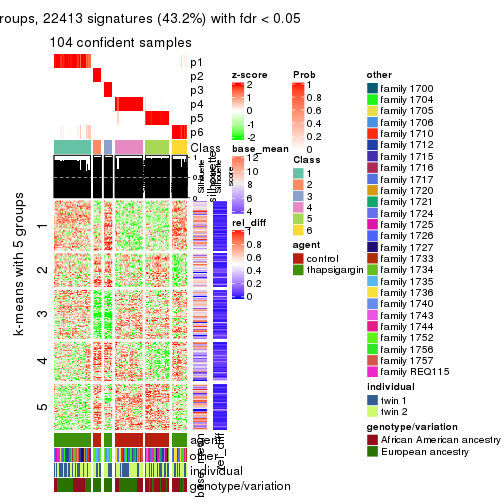
Signature heatmaps where rows are not scaled:
get_signatures(res, k = 2, scale_rows = FALSE)
get_signatures(res, k = 3, scale_rows = FALSE)
get_signatures(res, k = 4, scale_rows = FALSE)
get_signatures(res, k = 5, scale_rows = FALSE)
get_signatures(res, k = 6, scale_rows = FALSE)
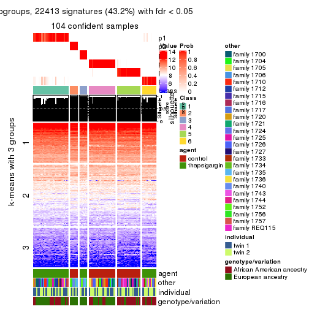
Compare the overlap of signatures from different k:
compare_signatures(res)
get_signature() returns a data frame invisibly. TO get the list of signatures, the function
call should be assigned to a variable explicitly. In following code, if plot argument is set
to FALSE, no heatmap is plotted while only the differential analysis is performed.
# code only for demonstration
tb = get_signature(res, k = ..., plot = FALSE)
An example of the output of tb is:
#> which_row fdr mean_1 mean_2 scaled_mean_1 scaled_mean_2 km
#> 1 38 0.042760348 8.373488 9.131774 -0.5533452 0.5164555 1
#> 2 40 0.018707592 7.106213 8.469186 -0.6173731 0.5762149 1
#> 3 55 0.019134737 10.221463 11.207825 -0.6159697 0.5749050 1
#> 4 59 0.006059896 5.921854 7.869574 -0.6899429 0.6439467 1
#> 5 60 0.018055526 8.928898 10.211722 -0.6204761 0.5791110 1
#> 6 98 0.009384629 15.714769 14.887706 0.6635654 -0.6193277 2
...
The columns in tb are:
which_row: row indices corresponding to the input matrix.fdr: FDR for the differential test. mean_x: The mean value in group x.scaled_mean_x: The mean value in group x after rows are scaled.km: Row groups if k-means clustering is applied to rows.UMAP plot which shows how samples are separated.
dimension_reduction(res, k = 2, method = "UMAP")
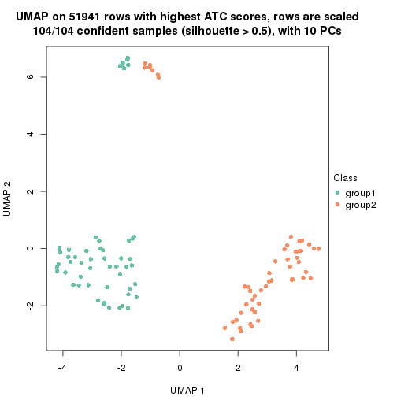
dimension_reduction(res, k = 3, method = "UMAP")

dimension_reduction(res, k = 4, method = "UMAP")

dimension_reduction(res, k = 5, method = "UMAP")
dimension_reduction(res, k = 6, method = "UMAP")
Following heatmap shows how subgroups are split when increasing k:
collect_classes(res)
Test correlation between subgroups and known annotations. If the known annotation is numeric, one-way ANOVA test is applied, and if the known annotation is discrete, chi-squared contingency table test is applied.
test_to_known_factors(res)
#> n agent(p) other(p) individual(p) genotype/variation(p) k
#> ATC:pam 104 1.49e-23 1.000000 1.000 1.00e+00 2
#> ATC:pam 104 2.86e-20 0.000115 0.848 9.75e-04 3
#> ATC:pam 104 2.14e-22 0.056000 0.954 3.09e-03 4
#> ATC:pam 97 4.28e-20 0.035924 0.783 1.42e-03 5
#> ATC:pam 104 7.58e-21 0.000402 0.821 1.99e-05 6
If matrix rows can be associated to genes, consider to use functional_enrichment(res,
...) to perform function enrichment for the signature genes. See this vignette for more detailed explanations.
The object with results only for a single top-value method and a single partition method can be extracted as:
res = res_list["ATC", "mclust"]
# you can also extract it by
# res = res_list["ATC:mclust"]
A summary of res and all the functions that can be applied to it:
res
#> A 'ConsensusPartition' object with k = 2, 3, 4, 5, 6.
#> On a matrix with 51941 rows and 104 columns.
#> Top rows (1000, 2000, 3000, 4000, 5000) are extracted by 'ATC' method.
#> Subgroups are detected by 'mclust' method.
#> Performed in total 1250 partitions by row resampling.
#> Best k for subgroups seems to be 5.
#>
#> Following methods can be applied to this 'ConsensusPartition' object:
#> [1] "cola_report" "collect_classes" "collect_plots"
#> [4] "collect_stats" "colnames" "compare_signatures"
#> [7] "consensus_heatmap" "dimension_reduction" "functional_enrichment"
#> [10] "get_anno_col" "get_anno" "get_classes"
#> [13] "get_consensus" "get_matrix" "get_membership"
#> [16] "get_param" "get_signatures" "get_stats"
#> [19] "is_best_k" "is_stable_k" "membership_heatmap"
#> [22] "ncol" "nrow" "plot_ecdf"
#> [25] "rownames" "select_partition_number" "show"
#> [28] "suggest_best_k" "test_to_known_factors"
collect_plots() function collects all the plots made from res for all k (number of partitions)
into one single page to provide an easy and fast comparison between different k.
collect_plots(res)
The plots are:
k and the heatmap of
predicted classes for each k.k.k.k.All the plots in panels can be made by individual functions and they are plotted later in this section.
select_partition_number() produces several plots showing different
statistics for choosing “optimized” k. There are following statistics:
k;k, the area increased is defined as \(A_k - A_{k-1}\).The detailed explanations of these statistics can be found in the cola vignette.
Generally speaking, lower PAC score, higher mean silhouette score or higher
concordance corresponds to better partition. Rand index and Jaccard index
measure how similar the current partition is compared to partition with k-1.
If they are too similar, we won't accept k is better than k-1.
select_partition_number(res)
The numeric values for all these statistics can be obtained by get_stats().
get_stats(res)
#> k 1-PAC mean_silhouette concordance area_increased Rand Jaccard
#> 2 2 1.000 1.000 1.000 0.5054 0.495 0.495
#> 3 3 1.000 0.998 0.998 0.2122 0.873 0.749
#> 4 4 0.982 0.922 0.963 0.1327 0.911 0.770
#> 5 5 0.929 0.898 0.957 0.1213 0.866 0.592
#> 6 6 0.837 0.868 0.908 0.0451 0.921 0.675
suggest_best_k() suggests the best \(k\) based on these statistics. The rules are as follows:
suggest_best_k(res)
#> [1] 5
#> attr(,"optional")
#> [1] 2 3 4
There is also optional best \(k\) = 2 3 4 that is worth to check.
Following shows the table of the partitions (You need to click the show/hide
code output link to see it). The membership matrix (columns with name p*)
is inferred by
clue::cl_consensus()
function with the SE method. Basically the value in the membership matrix
represents the probability to belong to a certain group. The finall class
label for an item is determined with the group with highest probability it
belongs to.
In get_classes() function, the entropy is calculated from the membership
matrix and the silhouette score is calculated from the consensus matrix.
cbind(get_classes(res, k = 2), get_membership(res, k = 2))
#> class entropy silhouette p1 p2
#> GSM494452 2 0 1 0 1
#> GSM494454 2 0 1 0 1
#> GSM494456 2 0 1 0 1
#> GSM494458 2 0 1 0 1
#> GSM494460 2 0 1 0 1
#> GSM494462 2 0 1 0 1
#> GSM494464 2 0 1 0 1
#> GSM494466 2 0 1 0 1
#> GSM494468 2 0 1 0 1
#> GSM494470 2 0 1 0 1
#> GSM494472 2 0 1 0 1
#> GSM494474 2 0 1 0 1
#> GSM494476 2 0 1 0 1
#> GSM494478 2 0 1 0 1
#> GSM494480 2 0 1 0 1
#> GSM494482 2 0 1 0 1
#> GSM494484 2 0 1 0 1
#> GSM494486 2 0 1 0 1
#> GSM494488 2 0 1 0 1
#> GSM494490 2 0 1 0 1
#> GSM494492 2 0 1 0 1
#> GSM494494 2 0 1 0 1
#> GSM494496 2 0 1 0 1
#> GSM494498 2 0 1 0 1
#> GSM494500 2 0 1 0 1
#> GSM494502 2 0 1 0 1
#> GSM494504 2 0 1 0 1
#> GSM494506 2 0 1 0 1
#> GSM494508 2 0 1 0 1
#> GSM494510 2 0 1 0 1
#> GSM494512 2 0 1 0 1
#> GSM494514 2 0 1 0 1
#> GSM494516 2 0 1 0 1
#> GSM494518 2 0 1 0 1
#> GSM494520 2 0 1 0 1
#> GSM494522 2 0 1 0 1
#> GSM494524 2 0 1 0 1
#> GSM494526 2 0 1 0 1
#> GSM494528 2 0 1 0 1
#> GSM494530 2 0 1 0 1
#> GSM494532 2 0 1 0 1
#> GSM494534 2 0 1 0 1
#> GSM494536 2 0 1 0 1
#> GSM494538 2 0 1 0 1
#> GSM494540 2 0 1 0 1
#> GSM494542 2 0 1 0 1
#> GSM494544 2 0 1 0 1
#> GSM494546 2 0 1 0 1
#> GSM494548 2 0 1 0 1
#> GSM494550 2 0 1 0 1
#> GSM494552 2 0 1 0 1
#> GSM494554 2 0 1 0 1
#> GSM494453 1 0 1 1 0
#> GSM494455 1 0 1 1 0
#> GSM494457 1 0 1 1 0
#> GSM494459 1 0 1 1 0
#> GSM494461 1 0 1 1 0
#> GSM494463 1 0 1 1 0
#> GSM494465 1 0 1 1 0
#> GSM494467 1 0 1 1 0
#> GSM494469 1 0 1 1 0
#> GSM494471 1 0 1 1 0
#> GSM494473 1 0 1 1 0
#> GSM494475 1 0 1 1 0
#> GSM494477 1 0 1 1 0
#> GSM494479 1 0 1 1 0
#> GSM494481 1 0 1 1 0
#> GSM494483 1 0 1 1 0
#> GSM494485 1 0 1 1 0
#> GSM494487 1 0 1 1 0
#> GSM494489 1 0 1 1 0
#> GSM494491 1 0 1 1 0
#> GSM494493 1 0 1 1 0
#> GSM494495 1 0 1 1 0
#> GSM494497 1 0 1 1 0
#> GSM494499 1 0 1 1 0
#> GSM494501 1 0 1 1 0
#> GSM494503 1 0 1 1 0
#> GSM494505 1 0 1 1 0
#> GSM494507 1 0 1 1 0
#> GSM494509 1 0 1 1 0
#> GSM494511 1 0 1 1 0
#> GSM494513 1 0 1 1 0
#> GSM494515 1 0 1 1 0
#> GSM494517 1 0 1 1 0
#> GSM494519 1 0 1 1 0
#> GSM494521 1 0 1 1 0
#> GSM494523 1 0 1 1 0
#> GSM494525 1 0 1 1 0
#> GSM494527 1 0 1 1 0
#> GSM494529 1 0 1 1 0
#> GSM494531 1 0 1 1 0
#> GSM494533 1 0 1 1 0
#> GSM494535 1 0 1 1 0
#> GSM494537 1 0 1 1 0
#> GSM494539 1 0 1 1 0
#> GSM494541 1 0 1 1 0
#> GSM494543 1 0 1 1 0
#> GSM494545 1 0 1 1 0
#> GSM494547 1 0 1 1 0
#> GSM494549 1 0 1 1 0
#> GSM494551 1 0 1 1 0
#> GSM494553 1 0 1 1 0
#> GSM494555 1 0 1 1 0
cbind(get_classes(res, k = 3), get_membership(res, k = 3))
#> class entropy silhouette p1 p2 p3
#> GSM494452 2 0.000 1.000 0 1.000 0.000
#> GSM494454 2 0.000 1.000 0 1.000 0.000
#> GSM494456 2 0.000 1.000 0 1.000 0.000
#> GSM494458 2 0.000 1.000 0 1.000 0.000
#> GSM494460 2 0.000 1.000 0 1.000 0.000
#> GSM494462 2 0.000 1.000 0 1.000 0.000
#> GSM494464 2 0.000 1.000 0 1.000 0.000
#> GSM494466 2 0.000 1.000 0 1.000 0.000
#> GSM494468 2 0.000 1.000 0 1.000 0.000
#> GSM494470 2 0.000 1.000 0 1.000 0.000
#> GSM494472 2 0.000 1.000 0 1.000 0.000
#> GSM494474 2 0.000 1.000 0 1.000 0.000
#> GSM494476 2 0.000 1.000 0 1.000 0.000
#> GSM494478 2 0.000 1.000 0 1.000 0.000
#> GSM494480 2 0.000 1.000 0 1.000 0.000
#> GSM494482 2 0.000 1.000 0 1.000 0.000
#> GSM494484 2 0.000 1.000 0 1.000 0.000
#> GSM494486 2 0.000 1.000 0 1.000 0.000
#> GSM494488 2 0.000 1.000 0 1.000 0.000
#> GSM494490 2 0.000 1.000 0 1.000 0.000
#> GSM494492 2 0.000 1.000 0 1.000 0.000
#> GSM494494 2 0.000 1.000 0 1.000 0.000
#> GSM494496 2 0.000 1.000 0 1.000 0.000
#> GSM494498 2 0.000 1.000 0 1.000 0.000
#> GSM494500 2 0.000 1.000 0 1.000 0.000
#> GSM494502 2 0.000 1.000 0 1.000 0.000
#> GSM494504 2 0.000 1.000 0 1.000 0.000
#> GSM494506 2 0.000 1.000 0 1.000 0.000
#> GSM494508 2 0.000 1.000 0 1.000 0.000
#> GSM494510 2 0.000 1.000 0 1.000 0.000
#> GSM494512 2 0.000 1.000 0 1.000 0.000
#> GSM494514 2 0.000 1.000 0 1.000 0.000
#> GSM494516 2 0.000 1.000 0 1.000 0.000
#> GSM494518 2 0.000 1.000 0 1.000 0.000
#> GSM494520 2 0.000 1.000 0 1.000 0.000
#> GSM494522 2 0.000 1.000 0 1.000 0.000
#> GSM494524 2 0.000 1.000 0 1.000 0.000
#> GSM494526 2 0.000 1.000 0 1.000 0.000
#> GSM494528 2 0.000 1.000 0 1.000 0.000
#> GSM494530 2 0.000 1.000 0 1.000 0.000
#> GSM494532 2 0.000 1.000 0 1.000 0.000
#> GSM494534 2 0.000 1.000 0 1.000 0.000
#> GSM494536 3 0.103 0.987 0 0.024 0.976
#> GSM494538 3 0.103 0.987 0 0.024 0.976
#> GSM494540 3 0.103 0.987 0 0.024 0.976
#> GSM494542 3 0.103 0.987 0 0.024 0.976
#> GSM494544 3 0.103 0.987 0 0.024 0.976
#> GSM494546 3 0.103 0.987 0 0.024 0.976
#> GSM494548 3 0.103 0.987 0 0.024 0.976
#> GSM494550 2 0.000 1.000 0 1.000 0.000
#> GSM494552 2 0.000 1.000 0 1.000 0.000
#> GSM494554 2 0.000 1.000 0 1.000 0.000
#> GSM494453 1 0.000 1.000 1 0.000 0.000
#> GSM494455 1 0.000 1.000 1 0.000 0.000
#> GSM494457 1 0.000 1.000 1 0.000 0.000
#> GSM494459 1 0.000 1.000 1 0.000 0.000
#> GSM494461 1 0.000 1.000 1 0.000 0.000
#> GSM494463 1 0.000 1.000 1 0.000 0.000
#> GSM494465 1 0.000 1.000 1 0.000 0.000
#> GSM494467 1 0.000 1.000 1 0.000 0.000
#> GSM494469 1 0.000 1.000 1 0.000 0.000
#> GSM494471 1 0.000 1.000 1 0.000 0.000
#> GSM494473 1 0.000 1.000 1 0.000 0.000
#> GSM494475 1 0.000 1.000 1 0.000 0.000
#> GSM494477 1 0.000 1.000 1 0.000 0.000
#> GSM494479 1 0.000 1.000 1 0.000 0.000
#> GSM494481 1 0.000 1.000 1 0.000 0.000
#> GSM494483 1 0.000 1.000 1 0.000 0.000
#> GSM494485 1 0.000 1.000 1 0.000 0.000
#> GSM494487 1 0.000 1.000 1 0.000 0.000
#> GSM494489 1 0.000 1.000 1 0.000 0.000
#> GSM494491 1 0.000 1.000 1 0.000 0.000
#> GSM494493 1 0.000 1.000 1 0.000 0.000
#> GSM494495 1 0.000 1.000 1 0.000 0.000
#> GSM494497 1 0.000 1.000 1 0.000 0.000
#> GSM494499 1 0.000 1.000 1 0.000 0.000
#> GSM494501 1 0.000 1.000 1 0.000 0.000
#> GSM494503 1 0.000 1.000 1 0.000 0.000
#> GSM494505 1 0.000 1.000 1 0.000 0.000
#> GSM494507 1 0.000 1.000 1 0.000 0.000
#> GSM494509 1 0.000 1.000 1 0.000 0.000
#> GSM494511 1 0.000 1.000 1 0.000 0.000
#> GSM494513 1 0.000 1.000 1 0.000 0.000
#> GSM494515 1 0.000 1.000 1 0.000 0.000
#> GSM494517 1 0.000 1.000 1 0.000 0.000
#> GSM494519 1 0.000 1.000 1 0.000 0.000
#> GSM494521 1 0.000 1.000 1 0.000 0.000
#> GSM494523 1 0.000 1.000 1 0.000 0.000
#> GSM494525 1 0.000 1.000 1 0.000 0.000
#> GSM494527 1 0.000 1.000 1 0.000 0.000
#> GSM494529 1 0.000 1.000 1 0.000 0.000
#> GSM494531 1 0.000 1.000 1 0.000 0.000
#> GSM494533 1 0.000 1.000 1 0.000 0.000
#> GSM494535 1 0.000 1.000 1 0.000 0.000
#> GSM494537 3 0.000 0.987 0 0.000 1.000
#> GSM494539 3 0.000 0.987 0 0.000 1.000
#> GSM494541 3 0.000 0.987 0 0.000 1.000
#> GSM494543 3 0.000 0.987 0 0.000 1.000
#> GSM494545 3 0.000 0.987 0 0.000 1.000
#> GSM494547 3 0.000 0.987 0 0.000 1.000
#> GSM494549 3 0.000 0.987 0 0.000 1.000
#> GSM494551 1 0.000 1.000 1 0.000 0.000
#> GSM494553 1 0.000 1.000 1 0.000 0.000
#> GSM494555 1 0.000 1.000 1 0.000 0.000
cbind(get_classes(res, k = 4), get_membership(res, k = 4))
#> class entropy silhouette p1 p2 p3 p4
#> GSM494452 2 0.0469 0.994 0.000 0.988 0 0.012
#> GSM494454 2 0.0000 0.997 0.000 1.000 0 0.000
#> GSM494456 2 0.0000 0.997 0.000 1.000 0 0.000
#> GSM494458 2 0.0000 0.997 0.000 1.000 0 0.000
#> GSM494460 2 0.0188 0.996 0.000 0.996 0 0.004
#> GSM494462 2 0.0000 0.997 0.000 1.000 0 0.000
#> GSM494464 2 0.0336 0.995 0.000 0.992 0 0.008
#> GSM494466 2 0.0000 0.997 0.000 1.000 0 0.000
#> GSM494468 2 0.0336 0.995 0.000 0.992 0 0.008
#> GSM494470 2 0.0336 0.995 0.000 0.992 0 0.008
#> GSM494472 2 0.0469 0.994 0.000 0.988 0 0.012
#> GSM494474 2 0.0336 0.995 0.000 0.992 0 0.008
#> GSM494476 2 0.0188 0.996 0.000 0.996 0 0.004
#> GSM494478 2 0.0000 0.997 0.000 1.000 0 0.000
#> GSM494480 2 0.0188 0.996 0.000 0.996 0 0.004
#> GSM494482 2 0.0336 0.995 0.000 0.992 0 0.008
#> GSM494484 2 0.0188 0.996 0.000 0.996 0 0.004
#> GSM494486 2 0.0188 0.996 0.000 0.996 0 0.004
#> GSM494488 2 0.0000 0.997 0.000 1.000 0 0.000
#> GSM494490 2 0.0336 0.996 0.000 0.992 0 0.008
#> GSM494492 2 0.0000 0.997 0.000 1.000 0 0.000
#> GSM494494 2 0.0336 0.996 0.000 0.992 0 0.008
#> GSM494496 2 0.0000 0.997 0.000 1.000 0 0.000
#> GSM494498 2 0.0000 0.997 0.000 1.000 0 0.000
#> GSM494500 2 0.0000 0.997 0.000 1.000 0 0.000
#> GSM494502 2 0.0000 0.997 0.000 1.000 0 0.000
#> GSM494504 2 0.0000 0.997 0.000 1.000 0 0.000
#> GSM494506 2 0.0188 0.996 0.000 0.996 0 0.004
#> GSM494508 2 0.0188 0.996 0.000 0.996 0 0.004
#> GSM494510 2 0.0000 0.997 0.000 1.000 0 0.000
#> GSM494512 2 0.0000 0.997 0.000 1.000 0 0.000
#> GSM494514 2 0.0000 0.997 0.000 1.000 0 0.000
#> GSM494516 2 0.0188 0.996 0.000 0.996 0 0.004
#> GSM494518 2 0.0188 0.996 0.000 0.996 0 0.004
#> GSM494520 2 0.0000 0.997 0.000 1.000 0 0.000
#> GSM494522 2 0.0188 0.996 0.000 0.996 0 0.004
#> GSM494524 2 0.0469 0.994 0.000 0.988 0 0.012
#> GSM494526 2 0.0469 0.994 0.000 0.988 0 0.012
#> GSM494528 2 0.0336 0.995 0.000 0.992 0 0.008
#> GSM494530 2 0.0000 0.997 0.000 1.000 0 0.000
#> GSM494532 2 0.0188 0.996 0.000 0.996 0 0.004
#> GSM494534 2 0.0000 0.997 0.000 1.000 0 0.000
#> GSM494536 3 0.0000 1.000 0.000 0.000 1 0.000
#> GSM494538 3 0.0000 1.000 0.000 0.000 1 0.000
#> GSM494540 3 0.0000 1.000 0.000 0.000 1 0.000
#> GSM494542 3 0.0000 1.000 0.000 0.000 1 0.000
#> GSM494544 3 0.0000 1.000 0.000 0.000 1 0.000
#> GSM494546 3 0.0000 1.000 0.000 0.000 1 0.000
#> GSM494548 3 0.0000 1.000 0.000 0.000 1 0.000
#> GSM494550 2 0.0188 0.996 0.000 0.996 0 0.004
#> GSM494552 2 0.0188 0.996 0.000 0.996 0 0.004
#> GSM494554 2 0.0188 0.996 0.000 0.996 0 0.004
#> GSM494453 4 0.4925 0.505 0.428 0.000 0 0.572
#> GSM494455 1 0.0000 0.972 1.000 0.000 0 0.000
#> GSM494457 1 0.0000 0.972 1.000 0.000 0 0.000
#> GSM494459 1 0.0000 0.972 1.000 0.000 0 0.000
#> GSM494461 1 0.0000 0.972 1.000 0.000 0 0.000
#> GSM494463 4 0.0469 0.769 0.012 0.000 0 0.988
#> GSM494465 4 0.4804 0.568 0.384 0.000 0 0.616
#> GSM494467 1 0.0000 0.972 1.000 0.000 0 0.000
#> GSM494469 4 0.4877 0.539 0.408 0.000 0 0.592
#> GSM494471 4 0.4898 0.526 0.416 0.000 0 0.584
#> GSM494473 4 0.0469 0.769 0.012 0.000 0 0.988
#> GSM494475 4 0.0469 0.769 0.012 0.000 0 0.988
#> GSM494477 1 0.0000 0.972 1.000 0.000 0 0.000
#> GSM494479 1 0.0000 0.972 1.000 0.000 0 0.000
#> GSM494481 4 0.0469 0.769 0.012 0.000 0 0.988
#> GSM494483 4 0.0469 0.769 0.012 0.000 0 0.988
#> GSM494485 1 0.0000 0.972 1.000 0.000 0 0.000
#> GSM494487 1 0.0000 0.972 1.000 0.000 0 0.000
#> GSM494489 1 0.0000 0.972 1.000 0.000 0 0.000
#> GSM494491 1 0.0000 0.972 1.000 0.000 0 0.000
#> GSM494493 1 0.0000 0.972 1.000 0.000 0 0.000
#> GSM494495 1 0.0000 0.972 1.000 0.000 0 0.000
#> GSM494497 1 0.0000 0.972 1.000 0.000 0 0.000
#> GSM494499 1 0.0000 0.972 1.000 0.000 0 0.000
#> GSM494501 4 0.4989 0.403 0.472 0.000 0 0.528
#> GSM494503 4 0.0469 0.769 0.012 0.000 0 0.988
#> GSM494505 1 0.0336 0.964 0.992 0.000 0 0.008
#> GSM494507 1 0.2149 0.860 0.912 0.000 0 0.088
#> GSM494509 1 0.0000 0.972 1.000 0.000 0 0.000
#> GSM494511 1 0.0000 0.972 1.000 0.000 0 0.000
#> GSM494513 1 0.0000 0.972 1.000 0.000 0 0.000
#> GSM494515 1 0.0000 0.972 1.000 0.000 0 0.000
#> GSM494517 1 0.0000 0.972 1.000 0.000 0 0.000
#> GSM494519 1 0.0000 0.972 1.000 0.000 0 0.000
#> GSM494521 1 0.0336 0.964 0.992 0.000 0 0.008
#> GSM494523 1 0.0000 0.972 1.000 0.000 0 0.000
#> GSM494525 4 0.0469 0.769 0.012 0.000 0 0.988
#> GSM494527 4 0.0469 0.769 0.012 0.000 0 0.988
#> GSM494529 4 0.4843 0.555 0.396 0.000 0 0.604
#> GSM494531 4 0.4977 0.434 0.460 0.000 0 0.540
#> GSM494533 1 0.4985 -0.277 0.532 0.000 0 0.468
#> GSM494535 1 0.0000 0.972 1.000 0.000 0 0.000
#> GSM494537 3 0.0000 1.000 0.000 0.000 1 0.000
#> GSM494539 3 0.0000 1.000 0.000 0.000 1 0.000
#> GSM494541 3 0.0000 1.000 0.000 0.000 1 0.000
#> GSM494543 3 0.0000 1.000 0.000 0.000 1 0.000
#> GSM494545 3 0.0000 1.000 0.000 0.000 1 0.000
#> GSM494547 3 0.0000 1.000 0.000 0.000 1 0.000
#> GSM494549 3 0.0000 1.000 0.000 0.000 1 0.000
#> GSM494551 1 0.0000 0.972 1.000 0.000 0 0.000
#> GSM494553 4 0.0469 0.769 0.012 0.000 0 0.988
#> GSM494555 4 0.0469 0.769 0.012 0.000 0 0.988
cbind(get_classes(res, k = 5), get_membership(res, k = 5))
#> class entropy silhouette p1 p2 p3 p4 p5
#> GSM494452 5 0.0000 0.921 0.000 0.000 0 0.000 1.000
#> GSM494454 5 0.4278 0.210 0.000 0.000 0 0.452 0.548
#> GSM494456 4 0.0000 0.976 0.000 0.000 0 1.000 0.000
#> GSM494458 4 0.0000 0.976 0.000 0.000 0 1.000 0.000
#> GSM494460 4 0.0000 0.976 0.000 0.000 0 1.000 0.000
#> GSM494462 4 0.0000 0.976 0.000 0.000 0 1.000 0.000
#> GSM494464 5 0.0000 0.921 0.000 0.000 0 0.000 1.000
#> GSM494466 4 0.0000 0.976 0.000 0.000 0 1.000 0.000
#> GSM494468 5 0.0000 0.921 0.000 0.000 0 0.000 1.000
#> GSM494470 5 0.0000 0.921 0.000 0.000 0 0.000 1.000
#> GSM494472 5 0.0000 0.921 0.000 0.000 0 0.000 1.000
#> GSM494474 5 0.0000 0.921 0.000 0.000 0 0.000 1.000
#> GSM494476 4 0.0000 0.976 0.000 0.000 0 1.000 0.000
#> GSM494478 4 0.0000 0.976 0.000 0.000 0 1.000 0.000
#> GSM494480 5 0.0162 0.919 0.000 0.000 0 0.004 0.996
#> GSM494482 5 0.0000 0.921 0.000 0.000 0 0.000 1.000
#> GSM494484 4 0.0000 0.976 0.000 0.000 0 1.000 0.000
#> GSM494486 4 0.0000 0.976 0.000 0.000 0 1.000 0.000
#> GSM494488 5 0.4182 0.359 0.000 0.000 0 0.400 0.600
#> GSM494490 5 0.0000 0.921 0.000 0.000 0 0.000 1.000
#> GSM494492 4 0.0000 0.976 0.000 0.000 0 1.000 0.000
#> GSM494494 5 0.0609 0.907 0.000 0.000 0 0.020 0.980
#> GSM494496 4 0.0000 0.976 0.000 0.000 0 1.000 0.000
#> GSM494498 4 0.0000 0.976 0.000 0.000 0 1.000 0.000
#> GSM494500 4 0.4101 0.346 0.000 0.000 0 0.628 0.372
#> GSM494502 4 0.0000 0.976 0.000 0.000 0 1.000 0.000
#> GSM494504 4 0.0000 0.976 0.000 0.000 0 1.000 0.000
#> GSM494506 4 0.0000 0.976 0.000 0.000 0 1.000 0.000
#> GSM494508 4 0.3074 0.731 0.000 0.000 0 0.804 0.196
#> GSM494510 4 0.0000 0.976 0.000 0.000 0 1.000 0.000
#> GSM494512 4 0.0290 0.968 0.000 0.000 0 0.992 0.008
#> GSM494514 4 0.0000 0.976 0.000 0.000 0 1.000 0.000
#> GSM494516 4 0.0000 0.976 0.000 0.000 0 1.000 0.000
#> GSM494518 4 0.0000 0.976 0.000 0.000 0 1.000 0.000
#> GSM494520 4 0.0000 0.976 0.000 0.000 0 1.000 0.000
#> GSM494522 4 0.0000 0.976 0.000 0.000 0 1.000 0.000
#> GSM494524 5 0.0000 0.921 0.000 0.000 0 0.000 1.000
#> GSM494526 5 0.0290 0.916 0.000 0.000 0 0.008 0.992
#> GSM494528 5 0.0000 0.921 0.000 0.000 0 0.000 1.000
#> GSM494530 4 0.0000 0.976 0.000 0.000 0 1.000 0.000
#> GSM494532 5 0.2891 0.753 0.000 0.000 0 0.176 0.824
#> GSM494534 4 0.0000 0.976 0.000 0.000 0 1.000 0.000
#> GSM494536 3 0.0000 1.000 0.000 0.000 1 0.000 0.000
#> GSM494538 3 0.0000 1.000 0.000 0.000 1 0.000 0.000
#> GSM494540 3 0.0000 1.000 0.000 0.000 1 0.000 0.000
#> GSM494542 3 0.0000 1.000 0.000 0.000 1 0.000 0.000
#> GSM494544 3 0.0000 1.000 0.000 0.000 1 0.000 0.000
#> GSM494546 3 0.0000 1.000 0.000 0.000 1 0.000 0.000
#> GSM494548 3 0.0000 1.000 0.000 0.000 1 0.000 0.000
#> GSM494550 4 0.0000 0.976 0.000 0.000 0 1.000 0.000
#> GSM494552 5 0.0000 0.921 0.000 0.000 0 0.000 1.000
#> GSM494554 5 0.0000 0.921 0.000 0.000 0 0.000 1.000
#> GSM494453 2 0.3508 0.701 0.252 0.748 0 0.000 0.000
#> GSM494455 2 0.0000 0.921 0.000 1.000 0 0.000 0.000
#> GSM494457 2 0.0000 0.921 0.000 1.000 0 0.000 0.000
#> GSM494459 2 0.0000 0.921 0.000 1.000 0 0.000 0.000
#> GSM494461 2 0.0000 0.921 0.000 1.000 0 0.000 0.000
#> GSM494463 1 0.0000 0.946 1.000 0.000 0 0.000 0.000
#> GSM494465 1 0.3274 0.682 0.780 0.220 0 0.000 0.000
#> GSM494467 2 0.0000 0.921 0.000 1.000 0 0.000 0.000
#> GSM494469 2 0.3661 0.670 0.276 0.724 0 0.000 0.000
#> GSM494471 2 0.3895 0.599 0.320 0.680 0 0.000 0.000
#> GSM494473 1 0.0000 0.946 1.000 0.000 0 0.000 0.000
#> GSM494475 1 0.0000 0.946 1.000 0.000 0 0.000 0.000
#> GSM494477 2 0.0000 0.921 0.000 1.000 0 0.000 0.000
#> GSM494479 2 0.0000 0.921 0.000 1.000 0 0.000 0.000
#> GSM494481 1 0.0000 0.946 1.000 0.000 0 0.000 0.000
#> GSM494483 1 0.0000 0.946 1.000 0.000 0 0.000 0.000
#> GSM494485 2 0.0000 0.921 0.000 1.000 0 0.000 0.000
#> GSM494487 2 0.0000 0.921 0.000 1.000 0 0.000 0.000
#> GSM494489 2 0.0000 0.921 0.000 1.000 0 0.000 0.000
#> GSM494491 2 0.1121 0.894 0.044 0.956 0 0.000 0.000
#> GSM494493 2 0.0000 0.921 0.000 1.000 0 0.000 0.000
#> GSM494495 2 0.0000 0.921 0.000 1.000 0 0.000 0.000
#> GSM494497 2 0.0000 0.921 0.000 1.000 0 0.000 0.000
#> GSM494499 2 0.0000 0.921 0.000 1.000 0 0.000 0.000
#> GSM494501 2 0.3003 0.772 0.188 0.812 0 0.000 0.000
#> GSM494503 1 0.2966 0.747 0.816 0.184 0 0.000 0.000
#> GSM494505 2 0.0162 0.919 0.004 0.996 0 0.000 0.000
#> GSM494507 2 0.3612 0.684 0.268 0.732 0 0.000 0.000
#> GSM494509 2 0.0703 0.907 0.024 0.976 0 0.000 0.000
#> GSM494511 2 0.0000 0.921 0.000 1.000 0 0.000 0.000
#> GSM494513 2 0.0000 0.921 0.000 1.000 0 0.000 0.000
#> GSM494515 2 0.0000 0.921 0.000 1.000 0 0.000 0.000
#> GSM494517 2 0.0000 0.921 0.000 1.000 0 0.000 0.000
#> GSM494519 2 0.0000 0.921 0.000 1.000 0 0.000 0.000
#> GSM494521 2 0.0162 0.919 0.004 0.996 0 0.000 0.000
#> GSM494523 2 0.0000 0.921 0.000 1.000 0 0.000 0.000
#> GSM494525 1 0.0000 0.946 1.000 0.000 0 0.000 0.000
#> GSM494527 1 0.0000 0.946 1.000 0.000 0 0.000 0.000
#> GSM494529 2 0.4300 0.199 0.476 0.524 0 0.000 0.000
#> GSM494531 2 0.3752 0.645 0.292 0.708 0 0.000 0.000
#> GSM494533 2 0.3534 0.696 0.256 0.744 0 0.000 0.000
#> GSM494535 2 0.0000 0.921 0.000 1.000 0 0.000 0.000
#> GSM494537 3 0.0000 1.000 0.000 0.000 1 0.000 0.000
#> GSM494539 3 0.0000 1.000 0.000 0.000 1 0.000 0.000
#> GSM494541 3 0.0000 1.000 0.000 0.000 1 0.000 0.000
#> GSM494543 3 0.0000 1.000 0.000 0.000 1 0.000 0.000
#> GSM494545 3 0.0000 1.000 0.000 0.000 1 0.000 0.000
#> GSM494547 3 0.0000 1.000 0.000 0.000 1 0.000 0.000
#> GSM494549 3 0.0000 1.000 0.000 0.000 1 0.000 0.000
#> GSM494551 2 0.0000 0.921 0.000 1.000 0 0.000 0.000
#> GSM494553 1 0.0000 0.946 1.000 0.000 0 0.000 0.000
#> GSM494555 1 0.0000 0.946 1.000 0.000 0 0.000 0.000
cbind(get_classes(res, k = 6), get_membership(res, k = 6))
#> class entropy silhouette p1 p2 p3 p4 p5 p6
#> GSM494452 5 0.0000 0.948 0.000 0.000 0.000 0.000 1.000 0.000
#> GSM494454 5 0.2882 0.819 0.000 0.008 0.000 0.180 0.812 0.000
#> GSM494456 4 0.0891 0.842 0.000 0.008 0.000 0.968 0.024 0.000
#> GSM494458 4 0.1858 0.818 0.000 0.004 0.000 0.904 0.092 0.000
#> GSM494460 4 0.0777 0.845 0.000 0.004 0.000 0.972 0.024 0.000
#> GSM494462 4 0.1610 0.828 0.000 0.084 0.000 0.916 0.000 0.000
#> GSM494464 5 0.1075 0.952 0.000 0.000 0.000 0.048 0.952 0.000
#> GSM494466 4 0.1814 0.818 0.000 0.100 0.000 0.900 0.000 0.000
#> GSM494468 5 0.1075 0.952 0.000 0.000 0.000 0.048 0.952 0.000
#> GSM494470 5 0.1075 0.952 0.000 0.000 0.000 0.048 0.952 0.000
#> GSM494472 5 0.0000 0.948 0.000 0.000 0.000 0.000 1.000 0.000
#> GSM494474 5 0.1075 0.952 0.000 0.000 0.000 0.048 0.952 0.000
#> GSM494476 4 0.3309 0.541 0.000 0.280 0.000 0.720 0.000 0.000
#> GSM494478 4 0.1610 0.828 0.000 0.084 0.000 0.916 0.000 0.000
#> GSM494480 5 0.0000 0.948 0.000 0.000 0.000 0.000 1.000 0.000
#> GSM494482 5 0.1075 0.952 0.000 0.000 0.000 0.048 0.952 0.000
#> GSM494484 2 0.3371 0.944 0.000 0.708 0.000 0.292 0.000 0.000
#> GSM494486 2 0.3266 0.926 0.000 0.728 0.000 0.272 0.000 0.000
#> GSM494488 5 0.2980 0.806 0.000 0.008 0.000 0.192 0.800 0.000
#> GSM494490 5 0.0260 0.948 0.000 0.000 0.000 0.008 0.992 0.000
#> GSM494492 4 0.0891 0.842 0.000 0.008 0.000 0.968 0.024 0.000
#> GSM494494 5 0.0260 0.948 0.000 0.000 0.000 0.008 0.992 0.000
#> GSM494496 4 0.0865 0.843 0.000 0.036 0.000 0.964 0.000 0.000
#> GSM494498 2 0.3499 0.930 0.000 0.680 0.000 0.320 0.000 0.000
#> GSM494500 4 0.2778 0.650 0.000 0.008 0.000 0.824 0.168 0.000
#> GSM494502 4 0.1610 0.828 0.000 0.084 0.000 0.916 0.000 0.000
#> GSM494504 4 0.0891 0.842 0.000 0.008 0.000 0.968 0.024 0.000
#> GSM494506 4 0.3050 0.633 0.000 0.236 0.000 0.764 0.000 0.000
#> GSM494508 4 0.3123 0.735 0.000 0.056 0.000 0.832 0.112 0.000
#> GSM494510 2 0.3659 0.858 0.000 0.636 0.000 0.364 0.000 0.000
#> GSM494512 4 0.1049 0.837 0.000 0.008 0.000 0.960 0.032 0.000
#> GSM494514 4 0.0547 0.846 0.000 0.020 0.000 0.980 0.000 0.000
#> GSM494516 4 0.3333 0.673 0.000 0.192 0.000 0.784 0.024 0.000
#> GSM494518 2 0.3464 0.938 0.000 0.688 0.000 0.312 0.000 0.000
#> GSM494520 4 0.0891 0.844 0.000 0.008 0.000 0.968 0.024 0.000
#> GSM494522 2 0.3351 0.942 0.000 0.712 0.000 0.288 0.000 0.000
#> GSM494524 5 0.0146 0.948 0.000 0.000 0.000 0.004 0.996 0.000
#> GSM494526 5 0.0000 0.948 0.000 0.000 0.000 0.000 1.000 0.000
#> GSM494528 5 0.0146 0.949 0.000 0.000 0.000 0.004 0.996 0.000
#> GSM494530 4 0.0692 0.847 0.000 0.004 0.000 0.976 0.020 0.000
#> GSM494532 5 0.1753 0.925 0.000 0.004 0.000 0.084 0.912 0.000
#> GSM494534 4 0.1387 0.832 0.000 0.068 0.000 0.932 0.000 0.000
#> GSM494536 3 0.0000 0.937 0.000 0.000 1.000 0.000 0.000 0.000
#> GSM494538 3 0.0000 0.937 0.000 0.000 1.000 0.000 0.000 0.000
#> GSM494540 3 0.0000 0.937 0.000 0.000 1.000 0.000 0.000 0.000
#> GSM494542 3 0.0000 0.937 0.000 0.000 1.000 0.000 0.000 0.000
#> GSM494544 3 0.0000 0.937 0.000 0.000 1.000 0.000 0.000 0.000
#> GSM494546 3 0.0000 0.937 0.000 0.000 1.000 0.000 0.000 0.000
#> GSM494548 3 0.0000 0.937 0.000 0.000 1.000 0.000 0.000 0.000
#> GSM494550 4 0.3330 0.530 0.000 0.284 0.000 0.716 0.000 0.000
#> GSM494552 5 0.1075 0.952 0.000 0.000 0.000 0.048 0.952 0.000
#> GSM494554 5 0.1075 0.952 0.000 0.000 0.000 0.048 0.952 0.000
#> GSM494453 1 0.3653 0.702 0.692 0.008 0.000 0.000 0.000 0.300
#> GSM494455 6 0.0260 0.946 0.000 0.008 0.000 0.000 0.000 0.992
#> GSM494457 6 0.0000 0.949 0.000 0.000 0.000 0.000 0.000 1.000
#> GSM494459 6 0.1204 0.931 0.000 0.056 0.000 0.000 0.000 0.944
#> GSM494461 6 0.0000 0.949 0.000 0.000 0.000 0.000 0.000 1.000
#> GSM494463 1 0.0000 0.818 1.000 0.000 0.000 0.000 0.000 0.000
#> GSM494465 1 0.2178 0.816 0.868 0.000 0.000 0.000 0.000 0.132
#> GSM494467 6 0.1957 0.904 0.000 0.112 0.000 0.000 0.000 0.888
#> GSM494469 1 0.2491 0.809 0.836 0.000 0.000 0.000 0.000 0.164
#> GSM494471 1 0.2996 0.777 0.772 0.000 0.000 0.000 0.000 0.228
#> GSM494473 1 0.0000 0.818 1.000 0.000 0.000 0.000 0.000 0.000
#> GSM494475 1 0.0000 0.818 1.000 0.000 0.000 0.000 0.000 0.000
#> GSM494477 6 0.1957 0.904 0.000 0.112 0.000 0.000 0.000 0.888
#> GSM494479 6 0.0000 0.949 0.000 0.000 0.000 0.000 0.000 1.000
#> GSM494481 1 0.0000 0.818 1.000 0.000 0.000 0.000 0.000 0.000
#> GSM494483 1 0.1075 0.817 0.952 0.000 0.000 0.000 0.000 0.048
#> GSM494485 6 0.1957 0.904 0.000 0.112 0.000 0.000 0.000 0.888
#> GSM494487 6 0.1957 0.904 0.000 0.112 0.000 0.000 0.000 0.888
#> GSM494489 6 0.0000 0.949 0.000 0.000 0.000 0.000 0.000 1.000
#> GSM494491 6 0.3104 0.739 0.184 0.016 0.000 0.000 0.000 0.800
#> GSM494493 6 0.0000 0.949 0.000 0.000 0.000 0.000 0.000 1.000
#> GSM494495 6 0.1957 0.904 0.000 0.112 0.000 0.000 0.000 0.888
#> GSM494497 6 0.0146 0.947 0.000 0.004 0.000 0.000 0.000 0.996
#> GSM494499 6 0.0520 0.943 0.008 0.008 0.000 0.000 0.000 0.984
#> GSM494501 1 0.3789 0.657 0.660 0.008 0.000 0.000 0.000 0.332
#> GSM494503 1 0.1327 0.817 0.936 0.000 0.000 0.000 0.000 0.064
#> GSM494505 6 0.1970 0.869 0.092 0.008 0.000 0.000 0.000 0.900
#> GSM494507 1 0.4010 0.486 0.584 0.008 0.000 0.000 0.000 0.408
#> GSM494509 6 0.2118 0.855 0.104 0.008 0.000 0.000 0.000 0.888
#> GSM494511 6 0.0000 0.949 0.000 0.000 0.000 0.000 0.000 1.000
#> GSM494513 6 0.0000 0.949 0.000 0.000 0.000 0.000 0.000 1.000
#> GSM494515 6 0.0000 0.949 0.000 0.000 0.000 0.000 0.000 1.000
#> GSM494517 6 0.0000 0.949 0.000 0.000 0.000 0.000 0.000 1.000
#> GSM494519 6 0.0000 0.949 0.000 0.000 0.000 0.000 0.000 1.000
#> GSM494521 6 0.2257 0.842 0.116 0.008 0.000 0.000 0.000 0.876
#> GSM494523 6 0.0000 0.949 0.000 0.000 0.000 0.000 0.000 1.000
#> GSM494525 1 0.0000 0.818 1.000 0.000 0.000 0.000 0.000 0.000
#> GSM494527 1 0.0000 0.818 1.000 0.000 0.000 0.000 0.000 0.000
#> GSM494529 1 0.3076 0.768 0.760 0.000 0.000 0.000 0.000 0.240
#> GSM494531 1 0.3634 0.707 0.696 0.008 0.000 0.000 0.000 0.296
#> GSM494533 1 0.3421 0.749 0.736 0.008 0.000 0.000 0.000 0.256
#> GSM494535 6 0.0000 0.949 0.000 0.000 0.000 0.000 0.000 1.000
#> GSM494537 3 0.2219 0.937 0.000 0.136 0.864 0.000 0.000 0.000
#> GSM494539 3 0.2300 0.935 0.000 0.144 0.856 0.000 0.000 0.000
#> GSM494541 3 0.2300 0.935 0.000 0.144 0.856 0.000 0.000 0.000
#> GSM494543 3 0.2300 0.935 0.000 0.144 0.856 0.000 0.000 0.000
#> GSM494545 3 0.2300 0.935 0.000 0.144 0.856 0.000 0.000 0.000
#> GSM494547 3 0.2300 0.935 0.000 0.144 0.856 0.000 0.000 0.000
#> GSM494549 3 0.2219 0.937 0.000 0.136 0.864 0.000 0.000 0.000
#> GSM494551 6 0.1498 0.929 0.032 0.028 0.000 0.000 0.000 0.940
#> GSM494553 1 0.0000 0.818 1.000 0.000 0.000 0.000 0.000 0.000
#> GSM494555 1 0.0000 0.818 1.000 0.000 0.000 0.000 0.000 0.000
Heatmaps for the consensus matrix. It visualizes the probability of two samples to be in a same group.
consensus_heatmap(res, k = 2)
consensus_heatmap(res, k = 3)
consensus_heatmap(res, k = 4)
consensus_heatmap(res, k = 5)

consensus_heatmap(res, k = 6)
Heatmaps for the membership of samples in all partitions to see how consistent they are:
membership_heatmap(res, k = 2)

membership_heatmap(res, k = 3)
membership_heatmap(res, k = 4)
membership_heatmap(res, k = 5)
membership_heatmap(res, k = 6)
As soon as we have had the classes for columns, we can look for signatures which are significantly different between classes which can be candidate marks for certain classes. Following are the heatmaps for signatures.
Signature heatmaps where rows are scaled:
get_signatures(res, k = 2)
get_signatures(res, k = 3)
get_signatures(res, k = 4)
get_signatures(res, k = 5)
get_signatures(res, k = 6)
#> Error in mat[ceiling(1:nr/h_ratio), ceiling(1:nc/w_ratio), drop = FALSE]: subscript out of bounds
Signature heatmaps where rows are not scaled:
get_signatures(res, k = 2, scale_rows = FALSE)

get_signatures(res, k = 3, scale_rows = FALSE)
get_signatures(res, k = 4, scale_rows = FALSE)
get_signatures(res, k = 5, scale_rows = FALSE)
get_signatures(res, k = 6, scale_rows = FALSE)
Compare the overlap of signatures from different k:
compare_signatures(res)
get_signature() returns a data frame invisibly. TO get the list of signatures, the function
call should be assigned to a variable explicitly. In following code, if plot argument is set
to FALSE, no heatmap is plotted while only the differential analysis is performed.
# code only for demonstration
tb = get_signature(res, k = ..., plot = FALSE)
An example of the output of tb is:
#> which_row fdr mean_1 mean_2 scaled_mean_1 scaled_mean_2 km
#> 1 38 0.042760348 8.373488 9.131774 -0.5533452 0.5164555 1
#> 2 40 0.018707592 7.106213 8.469186 -0.6173731 0.5762149 1
#> 3 55 0.019134737 10.221463 11.207825 -0.6159697 0.5749050 1
#> 4 59 0.006059896 5.921854 7.869574 -0.6899429 0.6439467 1
#> 5 60 0.018055526 8.928898 10.211722 -0.6204761 0.5791110 1
#> 6 98 0.009384629 15.714769 14.887706 0.6635654 -0.6193277 2
...
The columns in tb are:
which_row: row indices corresponding to the input matrix.fdr: FDR for the differential test. mean_x: The mean value in group x.scaled_mean_x: The mean value in group x after rows are scaled.km: Row groups if k-means clustering is applied to rows.UMAP plot which shows how samples are separated.
dimension_reduction(res, k = 2, method = "UMAP")
dimension_reduction(res, k = 3, method = "UMAP")

dimension_reduction(res, k = 4, method = "UMAP")
dimension_reduction(res, k = 5, method = "UMAP")
dimension_reduction(res, k = 6, method = "UMAP")
Following heatmap shows how subgroups are split when increasing k:
collect_classes(res)
Test correlation between subgroups and known annotations. If the known annotation is numeric, one-way ANOVA test is applied, and if the known annotation is discrete, chi-squared contingency table test is applied.
test_to_known_factors(res)
#> n agent(p) other(p) individual(p) genotype/variation(p) k
#> ATC:mclust 104 1.49e-23 1.00e+00 1.000 1.000000 2
#> ATC:mclust 104 2.86e-20 1.15e-04 0.848 0.000975 3
#> ATC:mclust 101 9.72e-19 3.13e-05 0.874 0.001884 4
#> ATC:mclust 100 9.33e-18 8.96e-06 0.873 0.004757 5
#> ATC:mclust 103 1.09e-17 6.17e-06 0.610 0.005224 6
If matrix rows can be associated to genes, consider to use functional_enrichment(res,
...) to perform function enrichment for the signature genes. See this vignette for more detailed explanations.
The object with results only for a single top-value method and a single partition method can be extracted as:
res = res_list["ATC", "NMF"]
# you can also extract it by
# res = res_list["ATC:NMF"]
A summary of res and all the functions that can be applied to it:
res
#> A 'ConsensusPartition' object with k = 2, 3, 4, 5, 6.
#> On a matrix with 51941 rows and 104 columns.
#> Top rows (1000, 2000, 3000, 4000, 5000) are extracted by 'ATC' method.
#> Subgroups are detected by 'NMF' method.
#> Performed in total 1250 partitions by row resampling.
#> Best k for subgroups seems to be 2.
#>
#> Following methods can be applied to this 'ConsensusPartition' object:
#> [1] "cola_report" "collect_classes" "collect_plots"
#> [4] "collect_stats" "colnames" "compare_signatures"
#> [7] "consensus_heatmap" "dimension_reduction" "functional_enrichment"
#> [10] "get_anno_col" "get_anno" "get_classes"
#> [13] "get_consensus" "get_matrix" "get_membership"
#> [16] "get_param" "get_signatures" "get_stats"
#> [19] "is_best_k" "is_stable_k" "membership_heatmap"
#> [22] "ncol" "nrow" "plot_ecdf"
#> [25] "rownames" "select_partition_number" "show"
#> [28] "suggest_best_k" "test_to_known_factors"
collect_plots() function collects all the plots made from res for all k (number of partitions)
into one single page to provide an easy and fast comparison between different k.
collect_plots(res)
The plots are:
k and the heatmap of
predicted classes for each k.k.k.k.All the plots in panels can be made by individual functions and they are plotted later in this section.
select_partition_number() produces several plots showing different
statistics for choosing “optimized” k. There are following statistics:
k;k, the area increased is defined as \(A_k - A_{k-1}\).The detailed explanations of these statistics can be found in the cola vignette.
Generally speaking, lower PAC score, higher mean silhouette score or higher
concordance corresponds to better partition. Rand index and Jaccard index
measure how similar the current partition is compared to partition with k-1.
If they are too similar, we won't accept k is better than k-1.
select_partition_number(res)
The numeric values for all these statistics can be obtained by get_stats().
get_stats(res)
#> k 1-PAC mean_silhouette concordance area_increased Rand Jaccard
#> 2 2 1.000 0.996 0.998 0.5052 0.495 0.495
#> 3 3 0.664 0.697 0.846 0.2686 0.779 0.585
#> 4 4 0.552 0.630 0.808 0.1157 0.745 0.434
#> 5 5 0.490 0.388 0.646 0.0792 0.804 0.464
#> 6 6 0.540 0.487 0.626 0.0366 0.783 0.350
suggest_best_k() suggests the best \(k\) based on these statistics. The rules are as follows:
suggest_best_k(res)
#> [1] 2
Following shows the table of the partitions (You need to click the show/hide
code output link to see it). The membership matrix (columns with name p*)
is inferred by
clue::cl_consensus()
function with the SE method. Basically the value in the membership matrix
represents the probability to belong to a certain group. The finall class
label for an item is determined with the group with highest probability it
belongs to.
In get_classes() function, the entropy is calculated from the membership
matrix and the silhouette score is calculated from the consensus matrix.
cbind(get_classes(res, k = 2), get_membership(res, k = 2))
#> class entropy silhouette p1 p2
#> GSM494452 2 0.0000 0.996 0.000 1.000
#> GSM494454 2 0.0000 0.996 0.000 1.000
#> GSM494456 2 0.0000 0.996 0.000 1.000
#> GSM494458 2 0.0000 0.996 0.000 1.000
#> GSM494460 2 0.0000 0.996 0.000 1.000
#> GSM494462 2 0.0000 0.996 0.000 1.000
#> GSM494464 2 0.0000 0.996 0.000 1.000
#> GSM494466 2 0.0000 0.996 0.000 1.000
#> GSM494468 2 0.0000 0.996 0.000 1.000
#> GSM494470 2 0.0000 0.996 0.000 1.000
#> GSM494472 2 0.0000 0.996 0.000 1.000
#> GSM494474 2 0.0000 0.996 0.000 1.000
#> GSM494476 2 0.0000 0.996 0.000 1.000
#> GSM494478 2 0.0000 0.996 0.000 1.000
#> GSM494480 2 0.0000 0.996 0.000 1.000
#> GSM494482 2 0.0000 0.996 0.000 1.000
#> GSM494484 2 0.0000 0.996 0.000 1.000
#> GSM494486 2 0.0000 0.996 0.000 1.000
#> GSM494488 2 0.0000 0.996 0.000 1.000
#> GSM494490 2 0.0000 0.996 0.000 1.000
#> GSM494492 2 0.0000 0.996 0.000 1.000
#> GSM494494 2 0.0000 0.996 0.000 1.000
#> GSM494496 2 0.0000 0.996 0.000 1.000
#> GSM494498 2 0.0000 0.996 0.000 1.000
#> GSM494500 2 0.0000 0.996 0.000 1.000
#> GSM494502 2 0.0000 0.996 0.000 1.000
#> GSM494504 2 0.0000 0.996 0.000 1.000
#> GSM494506 2 0.0000 0.996 0.000 1.000
#> GSM494508 2 0.0000 0.996 0.000 1.000
#> GSM494510 2 0.0000 0.996 0.000 1.000
#> GSM494512 2 0.0000 0.996 0.000 1.000
#> GSM494514 2 0.0000 0.996 0.000 1.000
#> GSM494516 2 0.0000 0.996 0.000 1.000
#> GSM494518 2 0.0000 0.996 0.000 1.000
#> GSM494520 2 0.0000 0.996 0.000 1.000
#> GSM494522 2 0.0000 0.996 0.000 1.000
#> GSM494524 2 0.0000 0.996 0.000 1.000
#> GSM494526 2 0.0000 0.996 0.000 1.000
#> GSM494528 2 0.0000 0.996 0.000 1.000
#> GSM494530 2 0.0000 0.996 0.000 1.000
#> GSM494532 2 0.0000 0.996 0.000 1.000
#> GSM494534 2 0.0000 0.996 0.000 1.000
#> GSM494536 2 0.0000 0.996 0.000 1.000
#> GSM494538 2 0.2603 0.956 0.044 0.956
#> GSM494540 2 0.2236 0.964 0.036 0.964
#> GSM494542 2 0.2236 0.964 0.036 0.964
#> GSM494544 2 0.0376 0.993 0.004 0.996
#> GSM494546 2 0.3584 0.931 0.068 0.932
#> GSM494548 2 0.0000 0.996 0.000 1.000
#> GSM494550 2 0.0000 0.996 0.000 1.000
#> GSM494552 2 0.0000 0.996 0.000 1.000
#> GSM494554 2 0.0000 0.996 0.000 1.000
#> GSM494453 1 0.0000 1.000 1.000 0.000
#> GSM494455 1 0.0000 1.000 1.000 0.000
#> GSM494457 1 0.0000 1.000 1.000 0.000
#> GSM494459 1 0.0000 1.000 1.000 0.000
#> GSM494461 1 0.0000 1.000 1.000 0.000
#> GSM494463 1 0.0000 1.000 1.000 0.000
#> GSM494465 1 0.0000 1.000 1.000 0.000
#> GSM494467 1 0.0000 1.000 1.000 0.000
#> GSM494469 1 0.0000 1.000 1.000 0.000
#> GSM494471 1 0.0000 1.000 1.000 0.000
#> GSM494473 1 0.0000 1.000 1.000 0.000
#> GSM494475 1 0.0000 1.000 1.000 0.000
#> GSM494477 1 0.0000 1.000 1.000 0.000
#> GSM494479 1 0.0000 1.000 1.000 0.000
#> GSM494481 1 0.0000 1.000 1.000 0.000
#> GSM494483 1 0.0000 1.000 1.000 0.000
#> GSM494485 1 0.0000 1.000 1.000 0.000
#> GSM494487 1 0.0000 1.000 1.000 0.000
#> GSM494489 1 0.0000 1.000 1.000 0.000
#> GSM494491 1 0.0000 1.000 1.000 0.000
#> GSM494493 1 0.0000 1.000 1.000 0.000
#> GSM494495 1 0.0000 1.000 1.000 0.000
#> GSM494497 1 0.0000 1.000 1.000 0.000
#> GSM494499 1 0.0000 1.000 1.000 0.000
#> GSM494501 1 0.0000 1.000 1.000 0.000
#> GSM494503 1 0.0000 1.000 1.000 0.000
#> GSM494505 1 0.0000 1.000 1.000 0.000
#> GSM494507 1 0.0000 1.000 1.000 0.000
#> GSM494509 1 0.0000 1.000 1.000 0.000
#> GSM494511 1 0.0000 1.000 1.000 0.000
#> GSM494513 1 0.0000 1.000 1.000 0.000
#> GSM494515 1 0.0000 1.000 1.000 0.000
#> GSM494517 1 0.0000 1.000 1.000 0.000
#> GSM494519 1 0.0000 1.000 1.000 0.000
#> GSM494521 1 0.0000 1.000 1.000 0.000
#> GSM494523 1 0.0000 1.000 1.000 0.000
#> GSM494525 1 0.0000 1.000 1.000 0.000
#> GSM494527 1 0.0000 1.000 1.000 0.000
#> GSM494529 1 0.0000 1.000 1.000 0.000
#> GSM494531 1 0.0000 1.000 1.000 0.000
#> GSM494533 1 0.0000 1.000 1.000 0.000
#> GSM494535 1 0.0000 1.000 1.000 0.000
#> GSM494537 1 0.0000 1.000 1.000 0.000
#> GSM494539 1 0.0000 1.000 1.000 0.000
#> GSM494541 1 0.0000 1.000 1.000 0.000
#> GSM494543 1 0.0000 1.000 1.000 0.000
#> GSM494545 1 0.0000 1.000 1.000 0.000
#> GSM494547 1 0.0000 1.000 1.000 0.000
#> GSM494549 1 0.0000 1.000 1.000 0.000
#> GSM494551 1 0.0000 1.000 1.000 0.000
#> GSM494553 1 0.0000 1.000 1.000 0.000
#> GSM494555 1 0.0000 1.000 1.000 0.000
cbind(get_classes(res, k = 3), get_membership(res, k = 3))
#> class entropy silhouette p1 p2 p3
#> GSM494452 2 0.0000 0.751986 0.000 1.000 0.000
#> GSM494454 2 0.4121 0.573023 0.000 0.832 0.168
#> GSM494456 2 0.0424 0.749170 0.000 0.992 0.008
#> GSM494458 3 0.5529 0.742172 0.000 0.296 0.704
#> GSM494460 2 0.0000 0.751986 0.000 1.000 0.000
#> GSM494462 2 0.0000 0.751986 0.000 1.000 0.000
#> GSM494464 3 0.6192 0.689155 0.000 0.420 0.580
#> GSM494466 2 0.1529 0.726384 0.000 0.960 0.040
#> GSM494468 3 0.6111 0.713918 0.000 0.396 0.604
#> GSM494470 3 0.5968 0.733095 0.000 0.364 0.636
#> GSM494472 2 0.0000 0.751986 0.000 1.000 0.000
#> GSM494474 3 0.6192 0.689155 0.000 0.420 0.580
#> GSM494476 3 0.5785 0.742911 0.000 0.332 0.668
#> GSM494478 2 0.0000 0.751986 0.000 1.000 0.000
#> GSM494480 2 0.0000 0.751986 0.000 1.000 0.000
#> GSM494482 3 0.6180 0.693897 0.000 0.416 0.584
#> GSM494484 2 0.0592 0.747418 0.000 0.988 0.012
#> GSM494486 3 0.5529 0.742172 0.000 0.296 0.704
#> GSM494488 2 0.5650 0.205674 0.000 0.688 0.312
#> GSM494490 3 0.5859 0.741163 0.000 0.344 0.656
#> GSM494492 2 0.5948 0.000372 0.000 0.640 0.360
#> GSM494494 3 0.5859 0.741163 0.000 0.344 0.656
#> GSM494496 2 0.0000 0.751986 0.000 1.000 0.000
#> GSM494498 2 0.0000 0.751986 0.000 1.000 0.000
#> GSM494500 2 0.4291 0.552916 0.000 0.820 0.180
#> GSM494502 2 0.0000 0.751986 0.000 1.000 0.000
#> GSM494504 2 0.4555 0.514924 0.000 0.800 0.200
#> GSM494506 2 0.5785 0.125678 0.000 0.668 0.332
#> GSM494508 2 0.1411 0.729868 0.000 0.964 0.036
#> GSM494510 2 0.0592 0.747405 0.000 0.988 0.012
#> GSM494512 3 0.6168 0.698596 0.000 0.412 0.588
#> GSM494514 2 0.0424 0.749170 0.000 0.992 0.008
#> GSM494516 3 0.6180 0.690149 0.000 0.416 0.584
#> GSM494518 2 0.0000 0.751986 0.000 1.000 0.000
#> GSM494520 2 0.5431 0.303794 0.000 0.716 0.284
#> GSM494522 2 0.0000 0.751986 0.000 1.000 0.000
#> GSM494524 3 0.6192 0.689155 0.000 0.420 0.580
#> GSM494526 2 0.0000 0.751986 0.000 1.000 0.000
#> GSM494528 2 0.5016 0.424157 0.000 0.760 0.240
#> GSM494530 2 0.0592 0.747405 0.000 0.988 0.012
#> GSM494532 3 0.6308 0.526498 0.000 0.492 0.508
#> GSM494534 2 0.0000 0.751986 0.000 1.000 0.000
#> GSM494536 3 0.0000 0.636693 0.000 0.000 1.000
#> GSM494538 3 0.0000 0.636693 0.000 0.000 1.000
#> GSM494540 3 0.0000 0.636693 0.000 0.000 1.000
#> GSM494542 3 0.0000 0.636693 0.000 0.000 1.000
#> GSM494544 3 0.0000 0.636693 0.000 0.000 1.000
#> GSM494546 3 0.0000 0.636693 0.000 0.000 1.000
#> GSM494548 3 0.0000 0.636693 0.000 0.000 1.000
#> GSM494550 3 0.5529 0.742172 0.000 0.296 0.704
#> GSM494552 2 0.4178 0.566174 0.000 0.828 0.172
#> GSM494554 3 0.6095 0.716995 0.000 0.392 0.608
#> GSM494453 1 0.1529 0.870299 0.960 0.040 0.000
#> GSM494455 1 0.0424 0.892359 0.992 0.008 0.000
#> GSM494457 1 0.0000 0.895645 1.000 0.000 0.000
#> GSM494459 1 0.0000 0.895645 1.000 0.000 0.000
#> GSM494461 1 0.2537 0.834798 0.920 0.080 0.000
#> GSM494463 2 0.5948 0.392645 0.360 0.640 0.000
#> GSM494465 1 0.0000 0.895645 1.000 0.000 0.000
#> GSM494467 1 0.0000 0.895645 1.000 0.000 0.000
#> GSM494469 1 0.0000 0.895645 1.000 0.000 0.000
#> GSM494471 1 0.0000 0.895645 1.000 0.000 0.000
#> GSM494473 2 0.5926 0.400476 0.356 0.644 0.000
#> GSM494475 2 0.6111 0.307029 0.396 0.604 0.000
#> GSM494477 1 0.0000 0.895645 1.000 0.000 0.000
#> GSM494479 1 0.0237 0.894103 0.996 0.004 0.000
#> GSM494481 2 0.5948 0.392645 0.360 0.640 0.000
#> GSM494483 1 0.5327 0.578784 0.728 0.272 0.000
#> GSM494485 1 0.0000 0.895645 1.000 0.000 0.000
#> GSM494487 1 0.0000 0.895645 1.000 0.000 0.000
#> GSM494489 1 0.0000 0.895645 1.000 0.000 0.000
#> GSM494491 1 0.0000 0.895645 1.000 0.000 0.000
#> GSM494493 1 0.0000 0.895645 1.000 0.000 0.000
#> GSM494495 1 0.0000 0.895645 1.000 0.000 0.000
#> GSM494497 1 0.5138 0.616542 0.748 0.252 0.000
#> GSM494499 1 0.0424 0.892359 0.992 0.008 0.000
#> GSM494501 1 0.1163 0.879213 0.972 0.028 0.000
#> GSM494503 2 0.6126 0.296266 0.400 0.600 0.000
#> GSM494505 1 0.0424 0.892459 0.992 0.008 0.000
#> GSM494507 1 0.0000 0.895645 1.000 0.000 0.000
#> GSM494509 1 0.0000 0.895645 1.000 0.000 0.000
#> GSM494511 1 0.0000 0.895645 1.000 0.000 0.000
#> GSM494513 1 0.0000 0.895645 1.000 0.000 0.000
#> GSM494515 1 0.0000 0.895645 1.000 0.000 0.000
#> GSM494517 1 0.0000 0.895645 1.000 0.000 0.000
#> GSM494519 1 0.0000 0.895645 1.000 0.000 0.000
#> GSM494521 1 0.0000 0.895645 1.000 0.000 0.000
#> GSM494523 1 0.0000 0.895645 1.000 0.000 0.000
#> GSM494525 2 0.5882 0.415575 0.348 0.652 0.000
#> GSM494527 2 0.5948 0.392645 0.360 0.640 0.000
#> GSM494529 1 0.0892 0.884852 0.980 0.020 0.000
#> GSM494531 1 0.0424 0.891960 0.992 0.008 0.000
#> GSM494533 1 0.0000 0.895645 1.000 0.000 0.000
#> GSM494535 1 0.4178 0.732332 0.828 0.172 0.000
#> GSM494537 1 0.6095 0.547950 0.608 0.000 0.392
#> GSM494539 1 0.5968 0.583766 0.636 0.000 0.364
#> GSM494541 1 0.6062 0.558679 0.616 0.000 0.384
#> GSM494543 1 0.5810 0.616428 0.664 0.000 0.336
#> GSM494545 1 0.5968 0.583766 0.636 0.000 0.364
#> GSM494547 1 0.5882 0.602836 0.652 0.000 0.348
#> GSM494549 1 0.6079 0.553070 0.612 0.000 0.388
#> GSM494551 1 0.0000 0.895645 1.000 0.000 0.000
#> GSM494553 1 0.6260 0.142767 0.552 0.448 0.000
#> GSM494555 1 0.5948 0.390812 0.640 0.360 0.000
cbind(get_classes(res, k = 4), get_membership(res, k = 4))
#> class entropy silhouette p1 p2 p3 p4
#> GSM494452 2 0.1022 0.8476 0.000 0.968 0.000 0.032
#> GSM494454 2 0.0524 0.8465 0.000 0.988 0.008 0.004
#> GSM494456 2 0.2222 0.8437 0.000 0.924 0.016 0.060
#> GSM494458 2 0.5147 0.0655 0.000 0.536 0.460 0.004
#> GSM494460 2 0.3444 0.7818 0.000 0.816 0.000 0.184
#> GSM494462 2 0.3311 0.7882 0.000 0.828 0.000 0.172
#> GSM494464 2 0.1913 0.8275 0.000 0.940 0.040 0.020
#> GSM494466 2 0.5733 0.6106 0.000 0.640 0.048 0.312
#> GSM494468 2 0.2413 0.8101 0.000 0.916 0.064 0.020
#> GSM494470 2 0.2635 0.8101 0.000 0.904 0.076 0.020
#> GSM494472 2 0.0469 0.8485 0.000 0.988 0.000 0.012
#> GSM494474 2 0.2002 0.8250 0.000 0.936 0.044 0.020
#> GSM494476 3 0.6116 0.6992 0.000 0.220 0.668 0.112
#> GSM494478 2 0.3024 0.7980 0.000 0.852 0.000 0.148
#> GSM494480 2 0.0921 0.8478 0.000 0.972 0.000 0.028
#> GSM494482 2 0.1406 0.8378 0.000 0.960 0.024 0.016
#> GSM494484 4 0.3587 0.5918 0.000 0.104 0.040 0.856
#> GSM494486 3 0.6446 0.5201 0.000 0.088 0.584 0.328
#> GSM494488 2 0.0779 0.8481 0.000 0.980 0.016 0.004
#> GSM494490 2 0.3280 0.7891 0.000 0.860 0.124 0.016
#> GSM494492 2 0.3117 0.8199 0.000 0.880 0.092 0.028
#> GSM494494 2 0.3324 0.7773 0.000 0.852 0.136 0.012
#> GSM494496 2 0.4790 0.5353 0.000 0.620 0.000 0.380
#> GSM494498 4 0.2868 0.5960 0.000 0.136 0.000 0.864
#> GSM494500 2 0.1284 0.8491 0.000 0.964 0.012 0.024
#> GSM494502 2 0.4999 0.2768 0.000 0.508 0.000 0.492
#> GSM494504 2 0.4669 0.7912 0.000 0.796 0.100 0.104
#> GSM494506 4 0.5929 0.2784 0.000 0.296 0.064 0.640
#> GSM494508 2 0.2522 0.8404 0.000 0.908 0.016 0.076
#> GSM494510 4 0.3142 0.5911 0.000 0.132 0.008 0.860
#> GSM494512 2 0.3856 0.7785 0.000 0.832 0.136 0.032
#> GSM494514 2 0.3688 0.7686 0.000 0.792 0.000 0.208
#> GSM494516 3 0.6991 0.5698 0.000 0.188 0.580 0.232
#> GSM494518 4 0.3032 0.5984 0.000 0.124 0.008 0.868
#> GSM494520 2 0.3716 0.8142 0.000 0.852 0.096 0.052
#> GSM494522 4 0.3166 0.5992 0.000 0.116 0.016 0.868
#> GSM494524 2 0.1297 0.8412 0.000 0.964 0.020 0.016
#> GSM494526 2 0.1022 0.8476 0.000 0.968 0.000 0.032
#> GSM494528 2 0.0804 0.8447 0.000 0.980 0.012 0.008
#> GSM494530 2 0.3217 0.8138 0.000 0.860 0.012 0.128
#> GSM494532 2 0.1297 0.8490 0.000 0.964 0.020 0.016
#> GSM494534 2 0.3942 0.7439 0.000 0.764 0.000 0.236
#> GSM494536 3 0.3606 0.7785 0.000 0.132 0.844 0.024
#> GSM494538 3 0.1004 0.8298 0.000 0.024 0.972 0.004
#> GSM494540 3 0.0779 0.8290 0.000 0.016 0.980 0.004
#> GSM494542 3 0.0592 0.8244 0.000 0.000 0.984 0.016
#> GSM494544 3 0.0336 0.8277 0.000 0.000 0.992 0.008
#> GSM494546 3 0.1637 0.8103 0.000 0.000 0.940 0.060
#> GSM494548 3 0.1706 0.8273 0.000 0.036 0.948 0.016
#> GSM494550 3 0.5624 0.7311 0.000 0.128 0.724 0.148
#> GSM494552 2 0.0376 0.8472 0.000 0.992 0.004 0.004
#> GSM494554 2 0.1297 0.8427 0.000 0.964 0.020 0.016
#> GSM494453 1 0.1302 0.7114 0.956 0.044 0.000 0.000
#> GSM494455 1 0.4382 0.3704 0.704 0.000 0.000 0.296
#> GSM494457 4 0.3945 0.7044 0.216 0.000 0.004 0.780
#> GSM494459 1 0.2805 0.6798 0.888 0.000 0.012 0.100
#> GSM494461 1 0.4661 0.2374 0.652 0.000 0.000 0.348
#> GSM494463 1 0.7180 0.1863 0.548 0.188 0.000 0.264
#> GSM494465 1 0.1118 0.7171 0.964 0.000 0.000 0.036
#> GSM494467 4 0.3972 0.7022 0.204 0.000 0.008 0.788
#> GSM494469 1 0.1118 0.7171 0.964 0.000 0.000 0.036
#> GSM494471 1 0.1022 0.7182 0.968 0.000 0.000 0.032
#> GSM494473 4 0.7541 0.2229 0.388 0.188 0.000 0.424
#> GSM494475 1 0.3257 0.6289 0.844 0.152 0.000 0.004
#> GSM494477 4 0.5678 0.5637 0.316 0.000 0.044 0.640
#> GSM494479 4 0.4331 0.6583 0.288 0.000 0.000 0.712
#> GSM494481 1 0.7597 -0.1239 0.440 0.204 0.000 0.356
#> GSM494483 1 0.0469 0.7221 0.988 0.012 0.000 0.000
#> GSM494485 4 0.4642 0.6736 0.240 0.000 0.020 0.740
#> GSM494487 4 0.4283 0.6681 0.256 0.000 0.004 0.740
#> GSM494489 1 0.4679 0.2288 0.648 0.000 0.000 0.352
#> GSM494491 1 0.0000 0.7222 1.000 0.000 0.000 0.000
#> GSM494493 1 0.4981 -0.1740 0.536 0.000 0.000 0.464
#> GSM494495 1 0.5742 0.4145 0.664 0.000 0.060 0.276
#> GSM494497 4 0.5112 0.4166 0.436 0.004 0.000 0.560
#> GSM494499 1 0.1118 0.7103 0.964 0.000 0.000 0.036
#> GSM494501 1 0.0592 0.7215 0.984 0.016 0.000 0.000
#> GSM494503 1 0.5371 0.5126 0.732 0.080 0.000 0.188
#> GSM494505 1 0.0000 0.7222 1.000 0.000 0.000 0.000
#> GSM494507 1 0.0000 0.7222 1.000 0.000 0.000 0.000
#> GSM494509 1 0.0469 0.7201 0.988 0.000 0.000 0.012
#> GSM494511 4 0.4072 0.6899 0.252 0.000 0.000 0.748
#> GSM494513 1 0.0188 0.7216 0.996 0.000 0.000 0.004
#> GSM494515 4 0.3975 0.6951 0.240 0.000 0.000 0.760
#> GSM494517 1 0.1389 0.7032 0.952 0.000 0.000 0.048
#> GSM494519 4 0.4830 0.5169 0.392 0.000 0.000 0.608
#> GSM494521 1 0.0000 0.7222 1.000 0.000 0.000 0.000
#> GSM494523 1 0.4103 0.4562 0.744 0.000 0.000 0.256
#> GSM494525 2 0.5408 0.2136 0.408 0.576 0.000 0.016
#> GSM494527 1 0.7458 0.1204 0.500 0.288 0.000 0.212
#> GSM494529 1 0.2984 0.6874 0.888 0.084 0.000 0.028
#> GSM494531 1 0.0188 0.7224 0.996 0.004 0.000 0.000
#> GSM494533 1 0.0895 0.7215 0.976 0.004 0.000 0.020
#> GSM494535 4 0.4933 0.4275 0.432 0.000 0.000 0.568
#> GSM494537 1 0.6727 0.1719 0.496 0.000 0.412 0.092
#> GSM494539 1 0.6273 0.4487 0.636 0.000 0.264 0.100
#> GSM494541 1 0.6561 0.3260 0.564 0.000 0.344 0.092
#> GSM494543 1 0.5051 0.6044 0.768 0.000 0.132 0.100
#> GSM494545 1 0.6570 0.3704 0.580 0.000 0.320 0.100
#> GSM494547 1 0.6444 0.4512 0.612 0.000 0.284 0.104
#> GSM494549 1 0.6754 0.0987 0.464 0.000 0.444 0.092
#> GSM494551 1 0.0804 0.7204 0.980 0.000 0.008 0.012
#> GSM494553 1 0.4501 0.5653 0.764 0.212 0.000 0.024
#> GSM494555 1 0.4900 0.5326 0.732 0.236 0.000 0.032
cbind(get_classes(res, k = 5), get_membership(res, k = 5))
#> class entropy silhouette p1 p2 p3 p4 p5
#> GSM494452 4 0.0880 0.4106 0.000 0.000 0.000 0.968 0.032
#> GSM494454 4 0.2891 0.1655 0.000 0.000 0.000 0.824 0.176
#> GSM494456 4 0.5299 -0.6102 0.000 0.040 0.004 0.520 0.436
#> GSM494458 5 0.5319 0.7297 0.000 0.008 0.044 0.360 0.588
#> GSM494460 4 0.4648 0.4218 0.008 0.072 0.000 0.748 0.172
#> GSM494462 4 0.4458 0.4227 0.004 0.056 0.000 0.748 0.192
#> GSM494464 5 0.4659 0.6717 0.000 0.000 0.012 0.488 0.500
#> GSM494466 5 0.6513 0.5495 0.000 0.192 0.000 0.384 0.424
#> GSM494468 4 0.4402 -0.3476 0.000 0.000 0.012 0.636 0.352
#> GSM494470 5 0.4648 0.6895 0.000 0.000 0.012 0.464 0.524
#> GSM494472 4 0.1121 0.3765 0.000 0.000 0.000 0.956 0.044
#> GSM494474 4 0.4218 -0.3135 0.000 0.000 0.008 0.660 0.332
#> GSM494476 5 0.6787 0.4628 0.000 0.324 0.016 0.180 0.480
#> GSM494478 4 0.1117 0.3988 0.000 0.016 0.000 0.964 0.020
#> GSM494480 4 0.1341 0.3635 0.000 0.000 0.000 0.944 0.056
#> GSM494482 4 0.4549 -0.6510 0.000 0.000 0.008 0.528 0.464
#> GSM494484 2 0.2992 0.6248 0.008 0.876 0.000 0.044 0.072
#> GSM494486 2 0.4965 0.5028 0.000 0.716 0.040 0.028 0.216
#> GSM494488 4 0.4331 -0.5059 0.000 0.004 0.000 0.596 0.400
#> GSM494490 5 0.4744 0.7520 0.000 0.000 0.020 0.408 0.572
#> GSM494492 4 0.4876 -0.5982 0.000 0.012 0.008 0.544 0.436
#> GSM494494 5 0.4892 0.7529 0.000 0.004 0.020 0.408 0.568
#> GSM494496 4 0.6170 0.1505 0.008 0.348 0.000 0.528 0.116
#> GSM494498 2 0.3653 0.6368 0.012 0.828 0.000 0.124 0.036
#> GSM494500 4 0.1412 0.4132 0.000 0.008 0.004 0.952 0.036
#> GSM494502 4 0.6376 0.0818 0.004 0.356 0.000 0.488 0.152
#> GSM494504 4 0.4069 0.4134 0.000 0.044 0.012 0.796 0.148
#> GSM494506 2 0.6436 0.3561 0.000 0.568 0.036 0.292 0.104
#> GSM494508 4 0.4867 -0.5296 0.000 0.024 0.000 0.544 0.432
#> GSM494510 2 0.3981 0.6140 0.008 0.816 0.004 0.112 0.060
#> GSM494512 4 0.5268 -0.3802 0.000 0.020 0.024 0.588 0.368
#> GSM494514 4 0.4354 0.3865 0.000 0.056 0.004 0.760 0.180
#> GSM494516 2 0.8306 0.1819 0.000 0.368 0.216 0.264 0.152
#> GSM494518 2 0.6177 0.5767 0.024 0.644 0.008 0.128 0.196
#> GSM494520 4 0.5034 0.4143 0.004 0.028 0.052 0.736 0.180
#> GSM494522 2 0.6222 0.5668 0.024 0.636 0.008 0.124 0.208
#> GSM494524 4 0.4561 -0.6847 0.000 0.000 0.008 0.504 0.488
#> GSM494526 4 0.0703 0.4048 0.000 0.000 0.000 0.976 0.024
#> GSM494528 4 0.1792 0.3404 0.000 0.000 0.000 0.916 0.084
#> GSM494530 4 0.3589 0.4307 0.000 0.040 0.004 0.824 0.132
#> GSM494532 4 0.4236 -0.3118 0.000 0.004 0.004 0.664 0.328
#> GSM494534 4 0.4069 0.4150 0.000 0.076 0.000 0.788 0.136
#> GSM494536 3 0.3430 0.7866 0.000 0.000 0.776 0.004 0.220
#> GSM494538 3 0.2732 0.8072 0.000 0.000 0.840 0.000 0.160
#> GSM494540 3 0.2690 0.8071 0.000 0.000 0.844 0.000 0.156
#> GSM494542 3 0.3093 0.8037 0.000 0.008 0.824 0.000 0.168
#> GSM494544 3 0.3010 0.8033 0.000 0.004 0.824 0.000 0.172
#> GSM494546 3 0.4237 0.7814 0.000 0.076 0.772 0.000 0.152
#> GSM494548 3 0.3707 0.7852 0.000 0.008 0.768 0.004 0.220
#> GSM494550 2 0.7594 0.2328 0.000 0.456 0.196 0.072 0.276
#> GSM494552 4 0.2179 0.2975 0.000 0.000 0.000 0.888 0.112
#> GSM494554 4 0.2648 0.2242 0.000 0.000 0.000 0.848 0.152
#> GSM494453 1 0.4948 0.5748 0.700 0.004 0.000 0.224 0.072
#> GSM494455 1 0.3359 0.6251 0.844 0.084 0.000 0.000 0.072
#> GSM494457 2 0.3586 0.6120 0.188 0.792 0.000 0.000 0.020
#> GSM494459 1 0.5731 0.2076 0.560 0.372 0.036 0.000 0.032
#> GSM494461 1 0.5060 0.5981 0.700 0.056 0.000 0.016 0.228
#> GSM494463 4 0.7155 -0.1208 0.268 0.032 0.000 0.476 0.224
#> GSM494465 1 0.2917 0.5992 0.892 0.024 0.048 0.004 0.032
#> GSM494467 2 0.2909 0.6361 0.140 0.848 0.000 0.000 0.012
#> GSM494469 1 0.2499 0.6152 0.908 0.008 0.052 0.004 0.028
#> GSM494471 1 0.2138 0.6289 0.928 0.012 0.032 0.004 0.024
#> GSM494473 4 0.7257 -0.1114 0.256 0.040 0.000 0.476 0.228
#> GSM494475 1 0.5253 0.5782 0.684 0.008 0.000 0.220 0.088
#> GSM494477 2 0.3280 0.6194 0.176 0.812 0.012 0.000 0.000
#> GSM494479 2 0.4527 0.5178 0.272 0.692 0.000 0.000 0.036
#> GSM494481 4 0.7283 -0.1232 0.268 0.040 0.000 0.468 0.224
#> GSM494483 1 0.1756 0.6318 0.940 0.036 0.000 0.008 0.016
#> GSM494485 2 0.4056 0.5963 0.200 0.768 0.024 0.000 0.008
#> GSM494487 2 0.3750 0.5708 0.232 0.756 0.012 0.000 0.000
#> GSM494489 1 0.5604 0.1221 0.532 0.404 0.008 0.000 0.056
#> GSM494491 1 0.3265 0.5988 0.868 0.068 0.028 0.000 0.036
#> GSM494493 1 0.5160 0.3109 0.608 0.336 0.000 0.000 0.056
#> GSM494495 2 0.5370 0.4389 0.296 0.640 0.040 0.000 0.024
#> GSM494497 1 0.6269 0.5283 0.612 0.140 0.000 0.028 0.220
#> GSM494499 1 0.2325 0.6248 0.904 0.068 0.000 0.000 0.028
#> GSM494501 1 0.6650 0.3732 0.456 0.008 0.000 0.360 0.176
#> GSM494503 4 0.7020 -0.1987 0.312 0.016 0.000 0.440 0.232
#> GSM494505 1 0.6505 0.5634 0.600 0.024 0.008 0.140 0.228
#> GSM494507 1 0.3430 0.6478 0.824 0.012 0.000 0.012 0.152
#> GSM494509 1 0.3023 0.6441 0.860 0.024 0.000 0.004 0.112
#> GSM494511 2 0.4707 0.5520 0.228 0.708 0.000 0.000 0.064
#> GSM494513 1 0.4287 0.6307 0.780 0.024 0.032 0.000 0.164
#> GSM494515 2 0.5872 0.4466 0.232 0.600 0.000 0.000 0.168
#> GSM494517 1 0.4113 0.6221 0.788 0.048 0.008 0.000 0.156
#> GSM494519 2 0.6448 0.1820 0.348 0.464 0.000 0.000 0.188
#> GSM494521 1 0.6536 0.5846 0.624 0.012 0.056 0.084 0.224
#> GSM494523 1 0.5627 0.5040 0.652 0.184 0.004 0.000 0.160
#> GSM494525 1 0.5237 0.4641 0.612 0.012 0.004 0.344 0.028
#> GSM494527 4 0.7071 -0.1008 0.264 0.028 0.000 0.484 0.224
#> GSM494529 1 0.5767 0.3135 0.504 0.000 0.004 0.416 0.076
#> GSM494531 1 0.7975 0.3477 0.376 0.012 0.056 0.332 0.224
#> GSM494533 1 0.5843 0.5376 0.636 0.004 0.020 0.260 0.080
#> GSM494535 1 0.6115 0.5054 0.608 0.168 0.000 0.012 0.212
#> GSM494537 3 0.2396 0.7998 0.068 0.004 0.904 0.000 0.024
#> GSM494539 3 0.4198 0.7536 0.164 0.020 0.784 0.000 0.032
#> GSM494541 3 0.3374 0.7849 0.100 0.016 0.852 0.000 0.032
#> GSM494543 3 0.5468 0.5802 0.300 0.028 0.632 0.000 0.040
#> GSM494545 3 0.4485 0.7478 0.160 0.028 0.772 0.000 0.040
#> GSM494547 3 0.5714 0.6376 0.244 0.044 0.656 0.000 0.056
#> GSM494549 3 0.2708 0.7974 0.072 0.020 0.892 0.000 0.016
#> GSM494551 1 0.3463 0.5902 0.860 0.044 0.056 0.000 0.040
#> GSM494553 4 0.6059 -0.2478 0.448 0.008 0.008 0.468 0.068
#> GSM494555 1 0.5998 0.2839 0.492 0.008 0.008 0.428 0.064
cbind(get_classes(res, k = 6), get_membership(res, k = 6))
#> class entropy silhouette p1 p2 p3 p4 p5 p6
#> GSM494452 5 0.277 0.581022 0.000 0.008 0.000 0.060 0.872 NA
#> GSM494454 5 0.209 0.602645 0.000 0.020 0.000 0.020 0.916 NA
#> GSM494456 5 0.492 -0.027996 0.000 0.452 0.000 0.016 0.500 NA
#> GSM494458 5 0.517 0.444514 0.000 0.064 0.000 0.008 0.464 NA
#> GSM494460 4 0.370 0.657487 0.000 0.008 0.000 0.772 0.188 NA
#> GSM494462 4 0.437 0.596142 0.000 0.008 0.000 0.688 0.260 NA
#> GSM494464 5 0.330 0.588566 0.000 0.000 0.000 0.008 0.756 NA
#> GSM494466 2 0.477 0.483122 0.000 0.660 0.000 0.012 0.264 NA
#> GSM494468 5 0.341 0.609704 0.000 0.008 0.004 0.020 0.804 NA
#> GSM494470 5 0.396 0.586674 0.000 0.008 0.008 0.004 0.696 NA
#> GSM494472 5 0.211 0.596229 0.000 0.008 0.000 0.048 0.912 NA
#> GSM494474 5 0.161 0.616363 0.000 0.004 0.000 0.008 0.932 NA
#> GSM494476 2 0.506 0.586140 0.000 0.700 0.020 0.012 0.176 NA
#> GSM494478 5 0.538 -0.000313 0.000 0.012 0.000 0.368 0.536 NA
#> GSM494480 5 0.182 0.602094 0.000 0.008 0.000 0.040 0.928 NA
#> GSM494482 5 0.270 0.611703 0.000 0.004 0.000 0.008 0.844 NA
#> GSM494484 2 0.447 0.665602 0.000 0.772 0.012 0.060 0.116 NA
#> GSM494486 2 0.493 0.656233 0.000 0.752 0.036 0.040 0.076 NA
#> GSM494488 5 0.222 0.611583 0.000 0.024 0.000 0.016 0.908 NA
#> GSM494490 5 0.399 0.485547 0.000 0.000 0.000 0.004 0.524 NA
#> GSM494492 5 0.368 0.582009 0.000 0.120 0.000 0.012 0.804 NA
#> GSM494494 5 0.421 0.488436 0.000 0.008 0.000 0.004 0.528 NA
#> GSM494496 4 0.418 0.649630 0.000 0.028 0.000 0.744 0.196 NA
#> GSM494498 4 0.596 0.071485 0.000 0.416 0.000 0.436 0.128 NA
#> GSM494500 4 0.578 0.310676 0.000 0.000 0.000 0.492 0.304 NA
#> GSM494502 4 0.288 0.667361 0.000 0.008 0.000 0.844 0.132 NA
#> GSM494504 4 0.387 0.662840 0.000 0.000 0.000 0.760 0.172 NA
#> GSM494506 4 0.473 0.630155 0.000 0.028 0.004 0.736 0.112 NA
#> GSM494508 5 0.498 0.438694 0.000 0.000 0.000 0.068 0.492 NA
#> GSM494510 2 0.657 0.121565 0.000 0.448 0.004 0.348 0.156 NA
#> GSM494512 4 0.599 0.343677 0.000 0.000 0.004 0.476 0.288 NA
#> GSM494514 4 0.372 0.654630 0.000 0.004 0.000 0.764 0.196 NA
#> GSM494516 4 0.425 0.627659 0.000 0.024 0.012 0.784 0.068 NA
#> GSM494518 4 0.394 0.626088 0.000 0.032 0.000 0.796 0.060 NA
#> GSM494520 4 0.426 0.646262 0.004 0.024 0.008 0.776 0.144 NA
#> GSM494522 4 0.374 0.613580 0.000 0.032 0.004 0.812 0.036 NA
#> GSM494524 5 0.377 0.558592 0.000 0.004 0.000 0.004 0.672 NA
#> GSM494526 5 0.275 0.582571 0.000 0.012 0.000 0.056 0.876 NA
#> GSM494528 5 0.425 0.575683 0.000 0.000 0.000 0.044 0.672 NA
#> GSM494530 4 0.370 0.649595 0.000 0.004 0.000 0.772 0.184 NA
#> GSM494532 5 0.438 0.518035 0.000 0.000 0.000 0.028 0.576 NA
#> GSM494534 4 0.307 0.665143 0.000 0.000 0.000 0.804 0.180 NA
#> GSM494536 3 0.323 0.809197 0.000 0.008 0.800 0.000 0.012 NA
#> GSM494538 3 0.285 0.815218 0.000 0.000 0.836 0.008 0.008 NA
#> GSM494540 3 0.273 0.815799 0.000 0.000 0.840 0.004 0.008 NA
#> GSM494542 3 0.320 0.813926 0.000 0.004 0.816 0.012 0.008 NA
#> GSM494544 3 0.316 0.814236 0.000 0.004 0.820 0.012 0.008 NA
#> GSM494546 3 0.465 0.761605 0.000 0.040 0.696 0.024 0.004 NA
#> GSM494548 3 0.347 0.810022 0.000 0.004 0.792 0.012 0.012 NA
#> GSM494550 4 0.696 0.453602 0.000 0.048 0.080 0.496 0.072 NA
#> GSM494552 5 0.419 0.561013 0.000 0.000 0.000 0.032 0.656 NA
#> GSM494554 5 0.195 0.615077 0.000 0.000 0.000 0.024 0.912 NA
#> GSM494453 5 0.759 -0.250197 0.372 0.080 0.004 0.064 0.384 NA
#> GSM494455 1 0.574 0.209402 0.536 0.356 0.000 0.012 0.020 NA
#> GSM494457 2 0.347 0.733138 0.124 0.820 0.000 0.028 0.000 NA
#> GSM494459 2 0.364 0.678359 0.236 0.744 0.008 0.000 0.000 NA
#> GSM494461 4 0.540 0.213548 0.340 0.060 0.000 0.568 0.000 NA
#> GSM494463 5 0.827 -0.212357 0.276 0.064 0.000 0.240 0.308 NA
#> GSM494465 1 0.494 0.584954 0.736 0.028 0.080 0.000 0.132 NA
#> GSM494467 2 0.337 0.743571 0.116 0.820 0.000 0.060 0.000 NA
#> GSM494469 1 0.529 0.531843 0.668 0.016 0.080 0.000 0.216 NA
#> GSM494471 1 0.412 0.615377 0.792 0.012 0.056 0.000 0.116 NA
#> GSM494473 5 0.836 -0.161357 0.196 0.084 0.000 0.272 0.332 NA
#> GSM494475 1 0.652 0.362441 0.512 0.068 0.004 0.016 0.328 NA
#> GSM494477 2 0.338 0.738841 0.144 0.812 0.000 0.036 0.000 NA
#> GSM494479 2 0.483 0.648578 0.204 0.700 0.000 0.048 0.000 NA
#> GSM494481 5 0.818 -0.111174 0.236 0.088 0.000 0.168 0.396 NA
#> GSM494483 1 0.275 0.596133 0.872 0.072 0.000 0.000 0.008 NA
#> GSM494485 2 0.231 0.749325 0.112 0.876 0.000 0.012 0.000 NA
#> GSM494487 2 0.269 0.742258 0.148 0.840 0.000 0.012 0.000 NA
#> GSM494489 2 0.443 0.653757 0.220 0.716 0.004 0.012 0.000 NA
#> GSM494491 1 0.383 0.501230 0.760 0.200 0.020 0.000 0.000 NA
#> GSM494493 2 0.455 0.647507 0.204 0.716 0.000 0.012 0.004 NA
#> GSM494495 2 0.329 0.736752 0.148 0.820 0.008 0.008 0.000 NA
#> GSM494497 4 0.534 0.325921 0.292 0.064 0.000 0.608 0.000 NA
#> GSM494499 1 0.391 0.511159 0.748 0.204 0.000 0.004 0.000 NA
#> GSM494501 1 0.616 0.519476 0.636 0.028 0.000 0.160 0.108 NA
#> GSM494503 4 0.719 -0.046488 0.304 0.032 0.000 0.464 0.100 NA
#> GSM494505 1 0.502 0.164919 0.516 0.012 0.000 0.436 0.012 NA
#> GSM494507 1 0.260 0.625558 0.892 0.032 0.008 0.056 0.000 NA
#> GSM494509 1 0.327 0.614762 0.848 0.048 0.008 0.084 0.000 NA
#> GSM494511 1 0.644 0.037252 0.392 0.372 0.000 0.212 0.000 NA
#> GSM494513 1 0.511 0.222929 0.552 0.024 0.020 0.392 0.000 NA
#> GSM494515 4 0.499 0.378744 0.288 0.080 0.000 0.624 0.000 NA
#> GSM494517 4 0.470 0.158548 0.432 0.028 0.004 0.532 0.000 NA
#> GSM494519 4 0.472 0.390742 0.296 0.056 0.000 0.640 0.000 NA
#> GSM494521 1 0.537 0.335695 0.568 0.020 0.012 0.364 0.012 NA
#> GSM494523 4 0.451 0.356542 0.328 0.040 0.000 0.628 0.000 NA
#> GSM494525 5 0.643 -0.044808 0.328 0.060 0.016 0.012 0.528 NA
#> GSM494527 5 0.795 -0.031770 0.204 0.076 0.000 0.172 0.440 NA
#> GSM494529 5 0.793 -0.134876 0.300 0.040 0.016 0.156 0.404 NA
#> GSM494531 1 0.628 0.179102 0.460 0.008 0.016 0.416 0.040 NA
#> GSM494533 1 0.567 0.571391 0.680 0.012 0.024 0.068 0.180 NA
#> GSM494535 4 0.440 0.434382 0.248 0.044 0.000 0.696 0.000 NA
#> GSM494537 3 0.228 0.799612 0.068 0.012 0.900 0.000 0.000 NA
#> GSM494539 3 0.317 0.780413 0.104 0.028 0.844 0.000 0.000 NA
#> GSM494541 3 0.290 0.789857 0.088 0.024 0.864 0.000 0.000 NA
#> GSM494543 3 0.463 0.582836 0.284 0.036 0.660 0.000 0.000 NA
#> GSM494545 3 0.350 0.763516 0.128 0.036 0.816 0.000 0.000 NA
#> GSM494547 3 0.517 0.539749 0.288 0.052 0.624 0.000 0.000 NA
#> GSM494549 3 0.272 0.792542 0.088 0.028 0.872 0.000 0.000 NA
#> GSM494551 1 0.369 0.535457 0.808 0.068 0.108 0.000 0.000 NA
#> GSM494553 1 0.641 0.271320 0.476 0.016 0.020 0.048 0.396 NA
#> GSM494555 5 0.684 -0.228464 0.408 0.024 0.020 0.052 0.432 NA
Heatmaps for the consensus matrix. It visualizes the probability of two samples to be in a same group.
consensus_heatmap(res, k = 2)
consensus_heatmap(res, k = 3)
consensus_heatmap(res, k = 4)
consensus_heatmap(res, k = 5)
consensus_heatmap(res, k = 6)
Heatmaps for the membership of samples in all partitions to see how consistent they are:
membership_heatmap(res, k = 2)
membership_heatmap(res, k = 3)
membership_heatmap(res, k = 4)
membership_heatmap(res, k = 5)
membership_heatmap(res, k = 6)
As soon as we have had the classes for columns, we can look for signatures which are significantly different between classes which can be candidate marks for certain classes. Following are the heatmaps for signatures.
Signature heatmaps where rows are scaled:
get_signatures(res, k = 2)
get_signatures(res, k = 3)
get_signatures(res, k = 4)
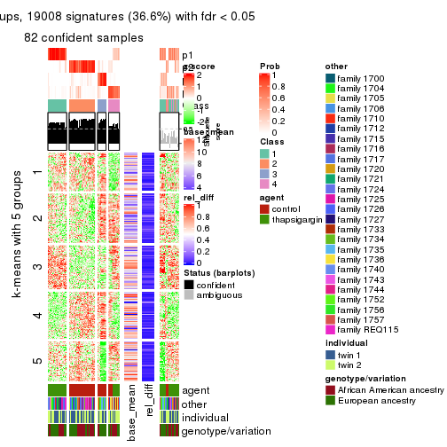
get_signatures(res, k = 5)
get_signatures(res, k = 6)
Signature heatmaps where rows are not scaled:
get_signatures(res, k = 2, scale_rows = FALSE)
get_signatures(res, k = 3, scale_rows = FALSE)
get_signatures(res, k = 4, scale_rows = FALSE)

get_signatures(res, k = 5, scale_rows = FALSE)
get_signatures(res, k = 6, scale_rows = FALSE)
Compare the overlap of signatures from different k:
compare_signatures(res)
get_signature() returns a data frame invisibly. TO get the list of signatures, the function
call should be assigned to a variable explicitly. In following code, if plot argument is set
to FALSE, no heatmap is plotted while only the differential analysis is performed.
# code only for demonstration
tb = get_signature(res, k = ..., plot = FALSE)
An example of the output of tb is:
#> which_row fdr mean_1 mean_2 scaled_mean_1 scaled_mean_2 km
#> 1 38 0.042760348 8.373488 9.131774 -0.5533452 0.5164555 1
#> 2 40 0.018707592 7.106213 8.469186 -0.6173731 0.5762149 1
#> 3 55 0.019134737 10.221463 11.207825 -0.6159697 0.5749050 1
#> 4 59 0.006059896 5.921854 7.869574 -0.6899429 0.6439467 1
#> 5 60 0.018055526 8.928898 10.211722 -0.6204761 0.5791110 1
#> 6 98 0.009384629 15.714769 14.887706 0.6635654 -0.6193277 2
...
The columns in tb are:
which_row: row indices corresponding to the input matrix.fdr: FDR for the differential test. mean_x: The mean value in group x.scaled_mean_x: The mean value in group x after rows are scaled.km: Row groups if k-means clustering is applied to rows.UMAP plot which shows how samples are separated.
dimension_reduction(res, k = 2, method = "UMAP")

dimension_reduction(res, k = 3, method = "UMAP")
dimension_reduction(res, k = 4, method = "UMAP")
dimension_reduction(res, k = 5, method = "UMAP")
dimension_reduction(res, k = 6, method = "UMAP")
Following heatmap shows how subgroups are split when increasing k:
collect_classes(res)
Test correlation between subgroups and known annotations. If the known annotation is numeric, one-way ANOVA test is applied, and if the known annotation is discrete, chi-squared contingency table test is applied.
test_to_known_factors(res)
#> n agent(p) other(p) individual(p) genotype/variation(p) k
#> ATC:NMF 104 1.49e-23 1.00e+00 1.000 1.00e+00 2
#> ATC:NMF 90 2.86e-20 9.77e-01 0.910 9.04e-01 3
#> ATC:NMF 82 8.37e-15 4.96e-02 0.331 8.60e-02 4
#> ATC:NMF 54 1.98e-05 4.78e-04 0.230 6.76e-05 5
#> ATC:NMF 68 6.35e-09 3.06e-07 0.665 1.66e-06 6
If matrix rows can be associated to genes, consider to use functional_enrichment(res,
...) to perform function enrichment for the signature genes. See this vignette for more detailed explanations.
sessionInfo()
#> R version 3.6.0 (2019-04-26)
#> Platform: x86_64-pc-linux-gnu (64-bit)
#> Running under: CentOS Linux 7 (Core)
#>
#> Matrix products: default
#> BLAS: /usr/lib64/libblas.so.3.4.2
#> LAPACK: /usr/lib64/liblapack.so.3.4.2
#>
#> locale:
#> [1] LC_CTYPE=en_GB.UTF-8 LC_NUMERIC=C LC_TIME=en_GB.UTF-8
#> [4] LC_COLLATE=en_GB.UTF-8 LC_MONETARY=en_GB.UTF-8 LC_MESSAGES=en_GB.UTF-8
#> [7] LC_PAPER=en_GB.UTF-8 LC_NAME=C LC_ADDRESS=C
#> [10] LC_TELEPHONE=C LC_MEASUREMENT=en_GB.UTF-8 LC_IDENTIFICATION=C
#>
#> attached base packages:
#> [1] grid stats graphics grDevices utils datasets methods base
#>
#> other attached packages:
#> [1] genefilter_1.66.0 ComplexHeatmap_2.3.1 markdown_1.1 knitr_1.26
#> [5] GetoptLong_0.1.7 cola_1.3.2
#>
#> loaded via a namespace (and not attached):
#> [1] circlize_0.4.8 shape_1.4.4 xfun_0.11 slam_0.1-46
#> [5] lattice_0.20-38 splines_3.6.0 colorspace_1.4-1 vctrs_0.2.0
#> [9] stats4_3.6.0 blob_1.2.0 XML_3.98-1.20 survival_2.44-1.1
#> [13] rlang_0.4.2 pillar_1.4.2 DBI_1.0.0 BiocGenerics_0.30.0
#> [17] bit64_0.9-7 RColorBrewer_1.1-2 matrixStats_0.55.0 stringr_1.4.0
#> [21] GlobalOptions_0.1.1 evaluate_0.14 memoise_1.1.0 Biobase_2.44.0
#> [25] IRanges_2.18.3 parallel_3.6.0 AnnotationDbi_1.46.1 highr_0.8
#> [29] Rcpp_1.0.3 xtable_1.8-4 backports_1.1.5 S4Vectors_0.22.1
#> [33] annotate_1.62.0 skmeans_0.2-11 bit_1.1-14 microbenchmark_1.4-7
#> [37] brew_1.0-6 impute_1.58.0 rjson_0.2.20 png_0.1-7
#> [41] digest_0.6.23 stringi_1.4.3 polyclip_1.10-0 clue_0.3-57
#> [45] tools_3.6.0 bitops_1.0-6 magrittr_1.5 eulerr_6.0.0
#> [49] RCurl_1.95-4.12 RSQLite_2.1.4 tibble_2.1.3 cluster_2.1.0
#> [53] crayon_1.3.4 pkgconfig_2.0.3 zeallot_0.1.0 Matrix_1.2-17
#> [57] xml2_1.2.2 httr_1.4.1 R6_2.4.1 mclust_5.4.5
#> [61] compiler_3.6.0